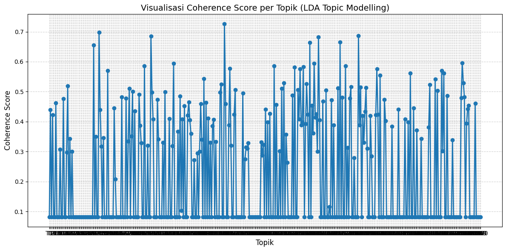
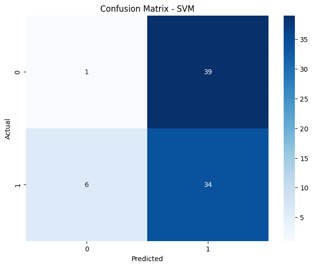
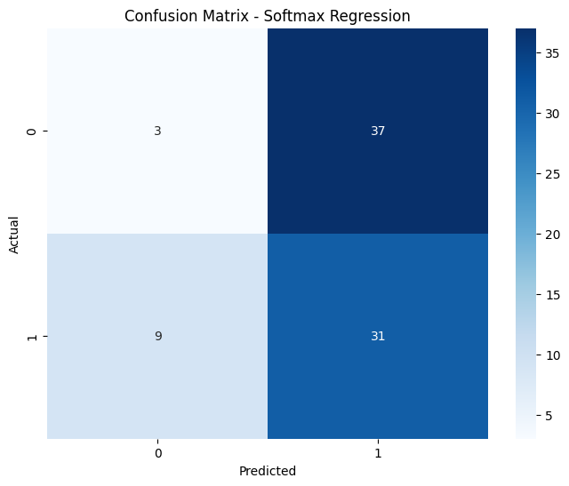

Topic Modelling LDA Klasifikasi SVM#
!pip install gensim
Requirement already satisfied: gensim in /usr/local/python/3.12.1/lib/python3.12/site-packages (4.4.0)
Requirement already satisfied: numpy>=1.18.5 in /home/codespace/.local/lib/python3.12/site-packages (from gensim) (2.3.4)
Requirement already satisfied: scipy>=1.7.0 in /home/codespace/.local/lib/python3.12/site-packages (from gensim) (1.16.3)
Requirement already satisfied: smart_open>=1.8.1 in /usr/local/python/3.12.1/lib/python3.12/site-packages (from gensim) (7.5.0)
Requirement already satisfied: wrapt in /usr/local/python/3.12.1/lib/python3.12/site-packages (from smart_open>=1.8.1->gensim) (2.0.1)
!pip install pyLDAvis
Collecting pyLDAvis
Downloading pyLDAvis-3.4.1-py3-none-any.whl.metadata (4.2 kB)
Requirement already satisfied: numpy>=1.24.2 in /home/codespace/.local/lib/python3.12/site-packages (from pyLDAvis) (2.3.4)
Requirement already satisfied: scipy in /home/codespace/.local/lib/python3.12/site-packages (from pyLDAvis) (1.16.3)
Requirement already satisfied: pandas>=2.0.0 in /home/codespace/.local/lib/python3.12/site-packages (from pyLDAvis) (2.3.3)
Requirement already satisfied: joblib>=1.2.0 in /home/codespace/.local/lib/python3.12/site-packages (from pyLDAvis) (1.5.2)
Requirement already satisfied: jinja2 in /home/codespace/.local/lib/python3.12/site-packages (from pyLDAvis) (3.1.6)
Collecting numexpr (from pyLDAvis)
Downloading numexpr-2.14.1-cp312-cp312-manylinux_2_27_x86_64.manylinux_2_28_x86_64.whl.metadata (9.0 kB)
Collecting funcy (from pyLDAvis)
Downloading funcy-2.0-py2.py3-none-any.whl.metadata (5.9 kB)
Requirement already satisfied: scikit-learn>=1.0.0 in /home/codespace/.local/lib/python3.12/site-packages (from pyLDAvis) (1.7.2)
Requirement already satisfied: gensim in /usr/local/python/3.12.1/lib/python3.12/site-packages (from pyLDAvis) (4.4.0)
Requirement already satisfied: setuptools in /home/codespace/.local/lib/python3.12/site-packages (from pyLDAvis) (80.9.0)
Requirement already satisfied: python-dateutil>=2.8.2 in /home/codespace/.local/lib/python3.12/site-packages (from pandas>=2.0.0->pyLDAvis) (2.9.0.post0)
Requirement already satisfied: pytz>=2020.1 in /home/codespace/.local/lib/python3.12/site-packages (from pandas>=2.0.0->pyLDAvis) (2025.2)
Requirement already satisfied: tzdata>=2022.7 in /home/codespace/.local/lib/python3.12/site-packages (from pandas>=2.0.0->pyLDAvis) (2025.2)
Requirement already satisfied: six>=1.5 in /home/codespace/.local/lib/python3.12/site-packages (from python-dateutil>=2.8.2->pandas>=2.0.0->pyLDAvis) (1.17.0)
Requirement already satisfied: threadpoolctl>=3.1.0 in /home/codespace/.local/lib/python3.12/site-packages (from scikit-learn>=1.0.0->pyLDAvis) (3.6.0)
Requirement already satisfied: smart_open>=1.8.1 in /usr/local/python/3.12.1/lib/python3.12/site-packages (from gensim->pyLDAvis) (7.5.0)
Requirement already satisfied: wrapt in /usr/local/python/3.12.1/lib/python3.12/site-packages (from smart_open>=1.8.1->gensim->pyLDAvis) (2.0.1)
Requirement already satisfied: MarkupSafe>=2.0 in /home/codespace/.local/lib/python3.12/site-packages (from jinja2->pyLDAvis) (3.0.3)
Downloading pyLDAvis-3.4.1-py3-none-any.whl (2.6 MB)
?25l ━━━━━━━━━━━━━━━━━━━━━━━━━━━━━━━━━━━━━━━━ 0.0/2.6 MB ? eta -:--:--
━━━━╺━━━━━━━━━━━━━━━━━━━━━━━━━━━━━━━━━━━ 0.3/2.6 MB ? eta -:--:--
━━━━━━━━━━━━━━━━━━━━━━━━━━━━━━━━━━━━╺━━━ 2.4/2.6 MB 9.8 MB/s eta 0:00:01
━━━━━━━━━━━━━━━━━━━━━━━━━━━━━━━━━━━━━━━━ 2.6/2.6 MB 9.0 MB/s 0:00:00
?25h
Downloading funcy-2.0-py2.py3-none-any.whl (30 kB)
Downloading numexpr-2.14.1-cp312-cp312-manylinux_2_27_x86_64.manylinux_2_28_x86_64.whl (443 kB)
Installing collected packages: funcy, numexpr, pyLDAvis
?25l
━━━━━━━━━━━━━━━━━━━━━━━━━━╸━━━━━━━━━━━━━ 2/3 [pyLDAvis]
━━━━━━━━━━━━━━━━━━━━━━━━━━╸━━━━━━━━━━━━━ 2/3 [pyLDAvis]
━━━━━━━━━━━━━━━━━━━━━━━━━━╸━━━━━━━━━━━━━ 2/3 [pyLDAvis]
━━━━━━━━━━━━━━━━━━━━━━━━━━╸━━━━━━━━━━━━━ 2/3 [pyLDAvis]
━━━━━━━━━━━━━━━━━━━━━━━━━━╸━━━━━━━━━━━━━ 2/3 [pyLDAvis]
━━━━━━━━━━━━━━━━━━━━━━━━━━╸━━━━━━━━━━━━━ 2/3 [pyLDAvis]
━━━━━━━━━━━━━━━━━━━━━━━━━━╸━━━━━━━━━━━━━ 2/3 [pyLDAvis]
━━━━━━━━━━━━━━━━━━━━━━━━━━╸━━━━━━━━━━━━━ 2/3 [pyLDAvis]
━━━━━━━━━━━━━━━━━━━━━━━━━━╸━━━━━━━━━━━━━ 2/3 [pyLDAvis]
━━━━━━━━━━━━━━━━━━━━━━━━━━╸━━━━━━━━━━━━━ 2/3 [pyLDAvis]
━━━━━━━━━━━━━━━━━━━━━━━━━━╸━━━━━━━━━━━━━ 2/3 [pyLDAvis]
━━━━━━━━━━━━━━━━━━━━━━━━━━╸━━━━━━━━━━━━━ 2/3 [pyLDAvis]
━━━━━━━━━━━━━━━━━━━━━━━━━━━━━━━━━━━━━━━━ 3/3 [pyLDAvis]
?25h
Successfully installed funcy-2.0 numexpr-2.14.1 pyLDAvis-3.4.1
import pandas as pd
import numpy as np
import re
import ast
from sklearn.feature_extraction.text import CountVectorizer
from sklearn.decomposition import LatentDirichletAllocation
from IPython.display import display
# Define the text cleaning function
def pembersihan_teks(text):
text = str(text)
text = re.sub(r"[\[\]]", " ", text) # hapus [ ]
text = re.sub(r"[\'\"]", " ", text) # hapus ' dan "
text = re.sub(r",", " ", text) # hapus koma
text = re.sub(r"\s+", " ", text).strip() # rapikan spasi
return text.split() # Split the cleaned text into a list of words
berita_preprocessing = pd.read_csv("berita_preprocessed.csv")
---------------------------------------------------------------------------
FileNotFoundError Traceback (most recent call last)
Cell In[4], line 1
----> 1 berita_preprocessing = pd.read_csv("berita_preprocessed.csv")
File ~/.local/lib/python3.12/site-packages/pandas/io/parsers/readers.py:1026, in read_csv(filepath_or_buffer, sep, delimiter, header, names, index_col, usecols, dtype, engine, converters, true_values, false_values, skipinitialspace, skiprows, skipfooter, nrows, na_values, keep_default_na, na_filter, verbose, skip_blank_lines, parse_dates, infer_datetime_format, keep_date_col, date_parser, date_format, dayfirst, cache_dates, iterator, chunksize, compression, thousands, decimal, lineterminator, quotechar, quoting, doublequote, escapechar, comment, encoding, encoding_errors, dialect, on_bad_lines, delim_whitespace, low_memory, memory_map, float_precision, storage_options, dtype_backend)
1013 kwds_defaults = _refine_defaults_read(
1014 dialect,
1015 delimiter,
(...) 1022 dtype_backend=dtype_backend,
1023 )
1024 kwds.update(kwds_defaults)
-> 1026 return _read(filepath_or_buffer, kwds)
File ~/.local/lib/python3.12/site-packages/pandas/io/parsers/readers.py:620, in _read(filepath_or_buffer, kwds)
617 _validate_names(kwds.get("names", None))
619 # Create the parser.
--> 620 parser = TextFileReader(filepath_or_buffer, **kwds)
622 if chunksize or iterator:
623 return parser
File ~/.local/lib/python3.12/site-packages/pandas/io/parsers/readers.py:1620, in TextFileReader.__init__(self, f, engine, **kwds)
1617 self.options["has_index_names"] = kwds["has_index_names"]
1619 self.handles: IOHandles | None = None
-> 1620 self._engine = self._make_engine(f, self.engine)
File ~/.local/lib/python3.12/site-packages/pandas/io/parsers/readers.py:1880, in TextFileReader._make_engine(self, f, engine)
1878 if "b" not in mode:
1879 mode += "b"
-> 1880 self.handles = get_handle(
1881 f,
1882 mode,
1883 encoding=self.options.get("encoding", None),
1884 compression=self.options.get("compression", None),
1885 memory_map=self.options.get("memory_map", False),
1886 is_text=is_text,
1887 errors=self.options.get("encoding_errors", "strict"),
1888 storage_options=self.options.get("storage_options", None),
1889 )
1890 assert self.handles is not None
1891 f = self.handles.handle
File ~/.local/lib/python3.12/site-packages/pandas/io/common.py:873, in get_handle(path_or_buf, mode, encoding, compression, memory_map, is_text, errors, storage_options)
868 elif isinstance(handle, str):
869 # Check whether the filename is to be opened in binary mode.
870 # Binary mode does not support 'encoding' and 'newline'.
871 if ioargs.encoding and "b" not in ioargs.mode:
872 # Encoding
--> 873 handle = open(
874 handle,
875 ioargs.mode,
876 encoding=ioargs.encoding,
877 errors=errors,
878 newline="",
879 )
880 else:
881 # Binary mode
882 handle = open(handle, ioargs.mode)
FileNotFoundError: [Errno 2] No such file or directory: 'berita_preprocessed.csv'
# cek tipe data kolom isi berita hasil preprocessing
type(berita_preprocessing['Isi_Bersih'].iloc[0])
str
# Apply text cleaning to the 'body' column and store in 'Isi_Bersih'
berita_preprocessing['Isi_Bersih'] = berita_preprocessing['body'].apply(pembersihan_teks)
# Join the list of words back into strings for CountVectorizer
corpus = [' '.join(doc) for doc in berita_preprocessing['Isi_Bersih']]
print("Corpus created successfully.")
# Display the first element of the corpus to verify
print(corpus[0])
Corpus created successfully.
Satu jenazah korban reruntuhan bangunan Ponpes Al Khoziny Sidoarjo Jawa Timur belum teridentifikasi. Korban ditemukan dalam posisi bersujud di sebelah Haikal yang berhasil diselamatkan. SAR Mission Coordinator (SMC) Yudhi Bramantyo menjelaskan korban meninggal tanpa identitas itu berhasil dikeluarkan dari reruntuhan bangunan sekitar pukul 14.42 WIB Rabu (1/10/2025). Awalnya petugas hendak mengevakuasi Haikal. Namun ternyata posisinya berdekatan dengan korban yang meninggal dunia sehingga harus dievakuasi terlebih dahulu. Sujud itu kan yang tadi (sore) itu yang hitam yang sebelahan sama Haikal. Kita kan tadinya mau mengambil itu karena tidak bisa harus lewat situ Akhirnya kita tarik yang itu ujar Bramantyo seperti dilansirdetikJatim. Tak lama berselang pukul 15.22 WIB petugas baru berhasil mengevakuasi Haikal selaku korban ke-13. Ia dinyatakan selamat. Sesudah kita evakuasi dalam kondisi selamat atau merah. Selanjutnya kita rujuk ke Rumah Sakit Umum Daerah Sidoarjo tutur Bramantyo. Baca selengkapnyadi sini.
# Re-load the data to ensure the DataFrame is fresh
berita_preprocessing = pd.read_csv("berita_preprocessed.csv")
print("Data reloaded.")
Data reloaded.
import pandas as pd
import numpy as np
import re
import ast
from sklearn.feature_extraction.text import CountVectorizer
from sklearn.decomposition import LatentDirichletAllocation
from IPython.display import display
# Load the data from the file that was successfully loaded earlier
berita_preprocessing = pd.read_csv("berita_preprocessed.csv")
print("Data loaded successfully from 'berita_preprocessed.csv'.")
Data loaded successfully from 'berita_preprocessed.csv'.
# Define the text cleaning function (as previously corrected)
def pembersihan_teks(text):
text = str(text)
text = re.sub(r"[\[\]]", " ", text) # hapus [ ]
text = re.sub(r"[\'\"]", " ", text) # hapus ' dan "
text = re.sub(r",", " ", text) # hapus koma
text = re.sub(r"\s+", " ", text).strip() # rapikan spasi
return text.split() # Split the cleaned text into a list of words
# Apply text cleaning to the 'body' column and store in 'Isi_Bersih'
berita_preprocessing['Isi_Bersih'] = berita_preprocessing['body'].apply(pembersihan_teks)
print("'Isi_Bersih' column created/re-processed.")
# Verify the data type again
print("Data type of 'Isi_Bersih' column after re-processing:", type(berita_preprocessing['Isi_Bersih'].iloc[0]))
'Isi_Bersih' column created/re-processed.
Data type of 'Isi_Bersih' column after re-processing: <class 'list'>
# Now, try creating the corpus again from the re-processed 'Isi_Bersih' column
corpus = [' '.join(doc) for doc in berita_preprocessing['Isi_Bersih']]
print("Corpus created successfully.")
# Display the first element of the corpus to verify
print(corpus[0])
Corpus created successfully.
Satu jenazah korban reruntuhan bangunan Ponpes Al Khoziny Sidoarjo Jawa Timur belum teridentifikasi. Korban ditemukan dalam posisi bersujud di sebelah Haikal yang berhasil diselamatkan. SAR Mission Coordinator (SMC) Yudhi Bramantyo menjelaskan korban meninggal tanpa identitas itu berhasil dikeluarkan dari reruntuhan bangunan sekitar pukul 14.42 WIB Rabu (1/10/2025). Awalnya petugas hendak mengevakuasi Haikal. Namun ternyata posisinya berdekatan dengan korban yang meninggal dunia sehingga harus dievakuasi terlebih dahulu. Sujud itu kan yang tadi (sore) itu yang hitam yang sebelahan sama Haikal. Kita kan tadinya mau mengambil itu karena tidak bisa harus lewat situ Akhirnya kita tarik yang itu ujar Bramantyo seperti dilansirdetikJatim. Tak lama berselang pukul 15.22 WIB petugas baru berhasil mengevakuasi Haikal selaku korban ke-13. Ia dinyatakan selamat. Sesudah kita evakuasi dalam kondisi selamat atau merah. Selanjutnya kita rujuk ke Rumah Sakit Umum Daerah Sidoarjo tutur Bramantyo. Baca selengkapnyadi sini.
# Removed redundant function call
# cek tipe data kolom isi berita hasil preprocessing
type(berita_preprocessing['Isi_Bersih'].iloc[0])
list
# menampilkan data
display(berita_preprocessing.head())
| source | kategori | url | title | published | body | Isi_Bersih | |
|---|---|---|---|---|---|---|---|
| 0 | detik | nasional | https://news.detik.com/berita/d-8141021/1-jena... | 1 Jenazah Santri Korban Runtuhan Ponpes Sidoar... | Kamis, 02 Okt 2025 11:01 WIB | Satu jenazah korban reruntuhan bangunan Ponpes... | [Satu, jenazah, korban, reruntuhan, bangunan, ... |
| 1 | detik | nasional | https://news.detik.com/berita/d-8141018/siswi-... | Siswi di Bandung Barat Meninggal Diduga Keracu... | Kamis, 02 Okt 2025 11:00 WIB | Seorang siswi SMK Negeri 1 Cihampelas, Kabupat... | [Seorang, siswi, SMK, Negeri, 1, Cihampelas, K... |
| 2 | detik | nasional | https://news.detik.com/berita/d-8140924/jawab-... | Jawab Kebingungan Umat, Ini Klasifikasi Produk... | Kamis, 02 Okt 2025 11:00 WIB | Seiring dengan maraknya seruan boikot terhadap... | [Seiring, dengan, maraknya, seruan, boikot, te... |
| 3 | detik | nasional | https://news.detik.com/berita/d-8141016/bejat-... | Bejat! Duo Kakek Kembar di Bekasi Lecehkan Wan... | Kamis, 02 Okt 2025 10:59 WIB | Seorang wanita berinisial N yang merupakanpeny... | [Seorang, wanita, berinisial, N, yang, merupak... |
| 4 | detik | nasional | https://news.detik.com/berita/d-8140970/menkum... | Menkum Resmi Teken SK Kepengurusan PPP Ketum M... | Kamis, 02 Okt 2025 10:45 WIB | Menteri Hukum Supratman Andi Agtas resmi menan... | [Menteri, Hukum, Supratman, Andi, Agtas, resmi... |
# Removed redundant function definition
# Gunakan kolom yang benar dari dataset
berita_preprocessing['isi_berita_preprocessing_bersih'] = berita_preprocessing['Isi_Bersih'].apply(pembersihan_teks)
display(berita_preprocessing[["body", "Isi_Bersih"]].head(10))
| body | Isi_Bersih | |
|---|---|---|
| 0 | Satu jenazah korban reruntuhan bangunan Ponpes... | [Satu, jenazah, korban, reruntuhan, bangunan, ... |
| 1 | Seorang siswi SMK Negeri 1 Cihampelas, Kabupat... | [Seorang, siswi, SMK, Negeri, 1, Cihampelas, K... |
| 2 | Seiring dengan maraknya seruan boikot terhadap... | [Seiring, dengan, maraknya, seruan, boikot, te... |
| 3 | Seorang wanita berinisial N yang merupakanpeny... | [Seorang, wanita, berinisial, N, yang, merupak... |
| 4 | Menteri Hukum Supratman Andi Agtas resmi menan... | [Menteri, Hukum, Supratman, Andi, Agtas, resmi... |
| 5 | Kuasa Hukum Staf Ahli KemensosEdi Suharto, Fai... | [Kuasa, Hukum, Staf, Ahli, KemensosEdi, Suhart... |
| 6 | Eksdosen UIN Malang Maulana Malik Ibrahim, Ima... | [Eksdosen, UIN, Malang, Maulana, Malik, Ibrahi... |
| 7 | Federasi Panjat Tebing Indonesia (FPTI) mengec... | [Federasi, Panjat, Tebing, Indonesia, (FPTI), ... |
| 8 | Polisi mengungkap kecepatan mobil Honda HR-V s... | [Polisi, mengungkap, kecepatan, mobil, Honda, ... |
| 9 | KPK akan melakukan monitoring terhadap adanya ... | [KPK, akan, melakukan, monitoring, terhadap, a... |
# cek tipe data kolom isi berita hasil preprocessing yang sudah dibersihkan
type(berita_preprocessing['isi_berita_preprocessing_bersih'].iloc[0])
list
# Join the list of words in 'Isi_Bersih' into strings and then create the corpus list
corpus = [' '.join(doc) for doc in berita_preprocessing['Isi_Bersih']]
print(corpus)
['Satu jenazah korban reruntuhan bangunan Ponpes Al Khoziny Sidoarjo Jawa Timur belum teridentifikasi. Korban ditemukan dalam posisi bersujud di sebelah Haikal yang berhasil diselamatkan. SAR Mission Coordinator (SMC) Yudhi Bramantyo menjelaskan korban meninggal tanpa identitas itu berhasil dikeluarkan dari reruntuhan bangunan sekitar pukul 14.42 WIB Rabu (1/10/2025). Awalnya petugas hendak mengevakuasi Haikal. Namun ternyata posisinya berdekatan dengan korban yang meninggal dunia sehingga harus dievakuasi terlebih dahulu. Sujud itu kan yang tadi (sore) itu yang hitam yang sebelahan sama Haikal. Kita kan tadinya mau mengambil itu karena tidak bisa harus lewat situ Akhirnya kita tarik yang itu ujar Bramantyo seperti dilansirdetikJatim. Tak lama berselang pukul 15.22 WIB petugas baru berhasil mengevakuasi Haikal selaku korban ke-13. Ia dinyatakan selamat. Sesudah kita evakuasi dalam kondisi selamat atau merah. Selanjutnya kita rujuk ke Rumah Sakit Umum Daerah Sidoarjo tutur Bramantyo. Baca selengkapnyadi sini.', 'Seorang siswi SMK Negeri 1 Cihampelas KabupatenBandung Barat(KBB) meninggal dunia diduga karena keracunan. Camat Cihampelas Agus Rudianto menyebut siswa bernama nama Bunga itu sempat mengeluh sakit sebelum ditemukan dengan kondisi mulut mengeluarkan busa. DilansirdetikJabar Kamis (2/10/2025) Bunga mengalami gejala mual setelah pulang sekolah pada Senin (29/9). Pihak keluarga kemudian memberikan obat dan kondisi Bunga membaik hingga bersekolah lagi pada Selasa (30/9). Kemudian dikasih aja ini obat masuk angin besoknya (Selasa) sudah baikan sudah masuk sekolah. Baru pas pulang sekolah adiknya yang laki-laki ini lihat kakaknya (Bunga) di kamar melotot sambil mulutnya berbusa gitu kata Agus. Keluarga kemudian membawa Bunga ke bidan terdekat lalu dirujuk ke RSUD Cililin untuk penanganan lebih lanjut. Namun nyawanya tak tertolong. Meninggalnya katanya di ambulans waktu mau dibawa ke (RSUD) Cililin. Informasinya sudah dimakamkan kemarin ya kata Agus. Agus mengatakan Bunga bersekolah di SMKN 1 Cihampelas di mana terdapat kejadian keracunan massal usai pelajar menyantap makan bergizi gratis (MBG) pada Rabu (24/9). Dia mengatakan keluarga Bunga tidak meminta autopsi. Intinya begini jadi itu pada saat kejadian keracunan itu bunga ini nggak ada tanda-tanda gejala-gejala (keracunan MBG) nggak ada. Jadi dia ini enggak dirawat seperti yang lain kan. Dia enggak ada sakit di hari itu aman gitu kan kata Agus. Kepala Puskesmas Cihampelas Edah Jubaidah menduga Bunga meninggal karena keracunan. Namun dia menduga hal itu bukan karena MBG karena ada rentang waktu cukup jauh. Bisa jadi keracunan cuma sepertinya bukan dari MBG. Karena jarak waktu dari makan MBG jauh kemungkinan juga sudah mengonsumsi makanan lain selain MBG yang menyebabkan keracunan ujar Edah. Plt Kepala Dinas Kesehatan (Dinkes) Bandung Barat Lia Nurliana Sukandar juga menyebut Bunga tidak meninggal karena keracunan menu MBG. Bukan bukan. Nggak ada kaitannya dengan itu (MBG) kata Lia saat dikonfirmasi Rabu (1/10). Simak selengkapnya disinidan disini.', 'Seiring dengan maraknya seruan boikot terhadap Israel dan produk yang terafiliasi dengannya para ulama dan aktivis menghadirkan panduan praktis untuk membantu masyarakat dalam menentukan pilihan konsumsi sehari-hari. Panduan ini membagi produk ke dalam empat kategori mulai dari yang wajib dihindari hingga yang justru dianjurkan untuk didukung. Inisiatif ini menjadi tindak lanjut dari Fatwa MUI Nomor 83 Tahun 2023 yang menegaskan keharaman memberi dukungan baik langsung maupun tidak langsung terhadap agresi Israel melalui aktivitas konsumsi. Aktivis pro-Palestina Shafira Umm menilai hal itu wajar karena banyak hoaks dan data yang tidak jelas. Masyarakat sering bingung mana produk yang benar-benar terafiliasi mana yang hanya isu. Karena itu panduan seperti ini sangat penting agar gerakan boikot tidak salah sasaran ujarnya dalam sebuah forum diskusi bersama detikcom belum lama ini. Ketua MUI Bidang Dakwah dan Ukhuwah KH Cholil Nafis juga melihat kesadaran masyarakat makin meningkat. Ia mencontohkan bagaimana anak-anak kini ikut memperhatikan isu boikot. Anak-anak kecil sekarang kalau mau beli produk pada ngecek ini produk Israel atau bukan. Artinya ada kesadaran baru yang tumbuh tinggal diarahkan dengan panduan yang jelas kata Cholil. Selain itu perkembangan teknologi ikut memudahkan masyarakat. CEO Drone Emprit Ismail Fahmi mengungkapkan kini tersedia berbagai aplikasi yang bisa membantu konsumen melacak afiliasi produk dengan Israel. Di media sosial tren boikot ini kuat sekali bahkan sudah ada aplikasi untuk memudahkan konsumen mengecek sebuah produk terafiliasi Israel atau tidak jelasnya. Empat Kriteria Berdasarkan Tingkat Keterlibatan Wakil Ketua Umum Dewan Masjid Indonesia (DMI) Imam Addaruqutni memaparkan empat kriteria yang disusun berdasarkan tingkat keterlibatan perusahaan dengan sistem penjajahan dan genosida yang dilakukan Israel terhadap bangsa Palestina. Ini adalah panduan etis yang berhubungan dengan hal-hal di luar zat dari produk jelasnya. Keterlibatan langsung melalui kepemilikan investasi atau kerja sama strategis dengan entitas Israel Wajib Diboikot 2 Makruh Keterlibatan tidak langsung melalui anak perusahaan distributor atau kemitraan dengan perusahaan pro-Israel Sangat Dianjurkan Diboikot 3 Perusahaan nasional Tbk tanpa afiliasi Israel meski sebagian kecil saham (di bawah 5%) mungkin dimiliki investor asing Boleh Dibeli/Boleh Tidak Produk lokal murni dari UMKM yang 100% bebas afiliasi Israel dan mendukung ekonomi rakyat Dianjurkan untuk Dibeli Dampak Ekonomi dan Implementasi Panduan ini juga akan melindungi produk nasional dari boikot yang salah sasaran akibat hoaks di media sosial. Imam Addaruqutni berharap panduan ini mendorong masyarakat beralih ke produk nasional lokal dan UMKM. Dengan demikian boikot tidak hanya menolak produk terafiliasi Israel tetapi juga membangun ekonomi dalam negeri pungkasnya. Gerakan ini mengintegrasikan prinsip ekonomi syariah dalam keputusan konsumsi sehari-hari mengubah konsumsi menjadi tindakan yang lebih etis dan bertanggung jawab.', 'Seorang wanita berinisial N yang merupakanpenyandang disabilitasdiduga menjadi korban pelecehan di Bekasi Utara Kota Bekasi Jawa Barat (Jabar). Pelaku dalam hal ini dua kakek yang merupakan saudara kembar berinisial IS (64) dan SUM (64). Korban adalah Saudari N seorang penyandang disabilitas. Pelakunya dua orang keduanya saudara kembar berusia 64 tahun kata Kapolres Metro Bekasi Kota Kombes Kusumo Wahyu Bintoro kepada wartawan Kamis (2/10/2025). Peristiwa terjadi pada Sabtu (16/8) di pos kali pengairan Kaliabang Tengah. Korban yang sedang berjalan kemudian duduk di sebuah bangku. Saat itu tiba-tiba korban didekati pelaku berinisial IS. Pelaku merangkul korban dan meremas bagian tubuh korban. Aksi tersebut sempat direkam oleh salah seorang saksi ujarnya. Tak berselang lama korban mengalami hal serupa oleh pelaku SUM yang tak lain saudara kembar IS. Kusumo mengatakan modus yang dilakukan kedua pelaku sama yaitu mendekati korban lalu melakukanperbuatan cabul. Salah satu pelaku sudah dua kali melakukan perbuatan ini sementara pelaku lain baru sekali namun dengan korban yang sama ujarnya. Berdasarkan penyelidikan rupanya korban dan para pelaku tinggal di lingkungan RW yang sama di kawasan Kaliabang Tengah Bekasi Utara. Kedua kakek cabul itu saat ini sudah ditetapkansebagai tersangka dan ditahan. Atas kasus tersebut keduanya dijerat dengan Pasal 281 KUHP dan/atau Pasal 290 KUHP tentang tindak pidana kekerasan seksual dengan ancaman hukuman maksimal 7 tahun penjara. Polres Metro Bekasi Kota berkomitmen memberikan perlindungan hukum bagi korban apalagi korban adalah penyandang disabilitas yang harus kita lindungi bersama imbuhnya.', 'Menteri Hukum Supratman Andi Agtas resmi menandatangani Surat Keputusan (SK) KepengurusanPPPdengan Ketua UmumMardiono. Supratman mengatakan SK tersebut ditandatangani usai penelitian sejumlah dokumen. Kemarin pagi saya sudah menandatangani SK pengesahan kepengurusan Bapak Mardiono kata Supratman saat akan menghadiri rapat paripurna DPR di kompleks parlemen Senayan Jakarta Kamis (2/9/2025). Kemudian apakah sudah diambil saya belum tahu karena saya serahkan kepada teman teman dan Kemenkum. Yang jelas saya sudah tanda tangani kepengurusan itu sambungnya. Supratman mengatakan Mardiono telah mendaftarkan kepengurusan PPP pada 30 September 2025. Kemudian pihak Mardiono juga telah mengakses sistem administrasi badan hukum. Kami lakukan penelitian sebagaimana yang telah dilakukan teman-teman di Dirjen AHU maka setelah dilakukan penelitian berdasarkan Anggaran Dasar dan Anggaran Rumah Tangga di mana menggunakan Anggaran Dasar dan Rumah Tangga hasil Muktamar ke IX di Makassar lalu dan itu tidak berubah tuturnya. Sebelumnya Muktamar X Partai Persatuan Pembangunan (PPP) telah memilih Ketua Umum yang baru. Muhammad Mardiono kembali menjabat Ketum PPP usai terpilih secara aklamasi. Teman-teman media yang saya hormati pertama-tama saya ingin menyampaikan selamat kepada Pak Mardiono atas terpilihnya secara aklamasi dalam muktamar ke-10 yang baru saja kami ketuk palunya kata pimpinan sidang Amir Usmara di Muktamar X PPP di Ancol Jakarta Utara Sabtu (27/9). Amir mengatakan Muktamar X PPP sempat diwarnai keributan. Namun ia menyebut total ada 30 DPW telah sepakat untuk mengadakan pemilihan Ketua Umum dan sepakat secara aklamasi untuk menunjuk Mardiono sebagai Ketua Umum PPP. Kami sudah sepakat dengan seluruh DPW bahwa tadi memang kita sudah ketuk palu dan menyampaikan selamat kepada Pak Mardiono yang terpilih secara aklamasi dan kita berikan kesempatan untuk menyusun kepengurusan bersama 8 formatur yang sudah terbentuk yaitu 5 dari DPW dan 3 dari DPP mendampingi Pak Mardiono jadi 9 ujar Amir.', 'Kuasa Hukum Staf Ahli KemensosEdi Suharto Faizal Hafied mengatakan kliennya sudah ditetapkan tersangka oleh Komisi Pemberantasan Korupsi (KPK) terkait kasusbansos. Ia menyinggung Edi hanya menjalankan perintah jabatan. Bahwa atas dasar melaksanakan perintah jabatan tersebut pada saat ini Bapak Edi Suharto telah ditetapkan sebagai tersangka oleh KPK ujar Faizal Hafied saat konferensi pers Edi dan tim kuasa hukumnya di Acacia Hotel Jakarta Pusat Kamis (2/10/2025).. Faizal mengatakan Edi hanya melaksanakan perintah jabatan dari mantan Menteri Sosial Juliari P Batubara. Jabatan yang diemban Edi pada 2020 itu yakni Direktur Jenderal Pemberdayaan Sosial Kementerian Sosial RI. Secara terang dan jelas bahwa Edi Suharto sebagai Direktur Jenderal Pemberdayaan Sosial Kementerian Sosial RI tahun 2020 hanya melaksanakan perintah jabatan sebagai Direktur Jenderal Pemberdayaan Sosial pada saat itu yang secara terang dan jelas diberikan Surat Tugas oleh Bapak Juliari P Batubara Menteri Sosial RI tahun 2020 sebagai pelaksana Program Bantuan Sosial Beras (BSB) sebagai Jaring Pengaman Sosial bagi Masyarakat Terdampak Pandemi COVID-19 ujarnya. Dia meminta pertanggungjawaban kasus ini dibebankan ke pemberi perintah jabatan. Dia menyebut Edi hanya korban ketidakadilan untuk melaksanakan perintah jabatan. Bahwa demi keadilan dan kebenaran sesuai dengan norma fundamental hukum tersebut dan sesuai dengan Pasal 51 ayat 1 KUHP seharusnya Bapak Edi Suharto dalam melaksanakan perintah jabatannya sebagai Direktur Jenderal Pemberdayaan Sosial Tajun 2020 tidak dapat dipersalahkan dan tidak dapat dipidana karena melaksanakan perintah jabatan yang ditugaskan kepadanya ujar Faizal. Dengan penuh rasa hormat demi keadilan dan kebenaran serta atas dasar kemanusiaan maka klien kami Bapak Edi Suharto menuntut keadilan karena menyakini sebagai pihak yang dikorbankan atas melaksanakan perintah jabatan yang diembannya tambahnya. Sebagai informasi pada Agustus 2025 KPK mengumumkan telah menetapkan lima tersangka baru dalam kasus korupsi distribusi bansos di Kemensos tahun 2020. Tersangka itu terdiri dari tiga orang dan dua korporasi. KPK juga mencegah empat orang untuk bepergian ke luar negeri terkait kasus ini. Mereka yaitu Komisaris Utama PT Dosni Roha Bambang Rudijanto Tanoesoedibjo (BRT) Direktur Operasional DNR Logistics tahun 2021 -2024 Herry Tho (HT) Dirut DNR Logistics tahun 2018-2022 Kanisius Jerry Tengker (KJT) dan Staf Ahli Menteri Bidang Perubahan dan Dinamika Sosial Kemensos Edi Suharto (ES). Namun KPK belum menjelaskan siapa saja tersangka dalam perkara ini. Identitas salah satu tersangka baru diketahui saat Rudy Tanoesoedibjo mengajukan gugatan praperadilan ke Pengadilan Negeri Jakarta Selatan (PN Jaksel). Gugatan Rudy itu terdaftar dengan nomor nomor perkara 102/Pid.Pra/2025/PN JKT.SEL. Hakim tunggal PN Jaksel Saut Erwin Hartono menolak gugatan praperadilan tersebut sehingga status tersangka Rudy oleh KPK tetap sah.', 'Eksdosen UIN Malang Maulana Malik Ibrahim Imam Muslimin atau Yai Mim diusir oleh warga di lingkungannya. Namun pihak Yai Mim mempertanyakan apakah surat pengusiran itu juga mencatut nama warga lainnya. DilansirdetikJatim Agustian Siagian kuasa hukum Imam Muslimin menyebut kliennya justru mendapat perlakuan tidak semestinya dari sebagian warga. Mulai dari dikucilkan hingga ditolak beribadah di masjid setempat. Agustian menyebut tindakan pengusiran tersebut tidak seharusnya dilakukan oleh pihak-pihak yang tidak memiliki kewenangan. Kami sangat menyayangkan tindakan tersebut terhadap Kyai Mim yang dilakukan tanpa dasar hukum oleh pihak-pihak yang tidak berwenang kata Agustian dalam keterangannya Kamis (2/10/2025). Menurutnya penilaian terhadap benar atau salahnya seseorang menurutnya merupakan kewenangan lembaga peradilan. Agustian juga secara khusus mempertanyakan legalitas dan keabsahan surat Kesepakatan Warga RT 09/RW 09 Joyogran Kavling Depa tertanggal 7 September 2025. Ia meminta pihak yang membuat surat itu memberikan klarifikasi. Kami berupaya meminta klarifikasi apakah nama-nama warga yang tercatut di dalam surat tersebut memang menghendaki pengusiran terhadap klien kami atau kah nama-nama tersebut hanya sebatas lampiran daftar hadir katanya. Baca berita selengkapnyadi sini.', 'Federasi Panjat Tebing Indonesia (FPTI) mengecam aksikekerasanyang terjadi saat orientasi anggota baru komunitas pecinta alam di Bitung Sulawesi Utara. FPTI menegaskan rasa hormat tidak bisa dibentuk dari cara-cara kekerasan. Kami menyesalkan terjadinyabullyingyang kemarin terjadi di salah satu klub pecinta alam di Bitung dan tentubullyingtidak bisa diterima. Kekerasan atas nama apapun yang dilakukan senior terhadap junior atau siapa pun tidak bisa diterima ujar Ketua Umum FPTI Yenny Wahid dalam keterangannya Kamis (2/10/2025). Yenny Wahid menegaskan kegiatan orientasi dengan cara-carakekerasan tidak dapat membentuk rasa hormatjunior terhadap senior tetapi justru menimbulkan trauma bagi korban. Karena tindakanbullyingdan kekerasan atau tindakan intimidatif hanya akan menimbulkan luka yang mendalam dan trauma. Rasa hormat tidak bisa didapatkan dari cara melakukan bullying terhadap adik kelas atau junior tegasnya. Yenny Wahid mengajak seluruh komunitas pecinta alam dan komunitas lain untuk menghapus tradisi kekerasan pada kegiatan orientasi. Mari kita budayakan budaya mencintai alam dan mencintai sesama. Bullying no tidak bisa diterima kata dia. Hal senada disampaikan oleh Ketua Bidang Panjat Tebing Alam dam Rekreasi Robertus Robet. Robet mengatakan olahraga mengandalkan sportivitasdan kejujuran sebagai basis moral. Dia hanya bisa dicapai dengan kesadaran dan tanggung jawab oleh karena itu segala bentuk kekerasan pemaksaan itu sebenarnya di luar metode maupun cita-cita olahraga apapun ucap Robet. Aksibullyingyang terjadi pada saat orientasi komunitas pecinta alam di Bitung Sulawesi Utara viral di media sosial. Dalam rekaman video yang beredar terlihat sejumlah anggota baru dijejerkan. Mereka lantas mendapatkan perlakuan kekerasan oleh senior seperti ditempeleng hingga ditendang. Kasus ini telah dilaporkan oleh orang tua salah satu korban ke pihak kepolisian.', 'Polisi mengungkap kecepatan mobil Honda HR-V sebelum kecelakaan maut diTol JagorawiKm 34 Bogor Jawa Barat. Kecepatan mobil tersebut diduga mencapai 130 km per jam. Kecepatan 130 (km/jam) speedometer di titik terakhir terjadinya benturan menunjukkan angka 130 km/jam kata Kainduk PJR Tol Jagorawi Kompol Ahmad Jajuli Kamis (2/10/2025). Jenazah korban telah dibawa ke RSUD Ciawi. Jajuli mengatakan kecelakaan diduga dipicu korban tidak konsentrasi saat mengendarai mobil dengan kecepatan tinggi. Kecepatan tinggi tidak konsentrasi ucapnya. Sebelumnya kecelakaan lalu lintas melibatkan mobil Honda HR-V dengan kendaraan lainnya di Tol Jagorawi Km 34 Bogor viral di media sosial (medsos). Pengemudi HR-V meninggal dunia akibat kecelakaan itu. Jumlah korban satu orang pengemudi meninggal dunia kata Kompol Ahmad Jajuli. Kecelakaan berawal ketika pengemudi bernama Ahmed Mohammed Al Kahtani (26) melaju dari arah Jakarta menuju Bogor. Pengemudi diduga melaju dalam kecepatan tinggi. Lalu menabrak kendaraan yang ada di depannya yang tidak tercatat identitasnya (kabur) ungkapnya. Posisi akhir kendaraan berada di lajur 2 menghadap selatan. Sementara dalam foto yang diterima mobil ringsek pada bagian depan.', 'KPK akan melakukan monitoring terhadap adanya dugaan kebocoran anggaranhajisetiap tahunnya yang mencapai Rp 5 triliun. Monitoring ini dilakukan dalam upaya pencegahan terjadinya kebocoran tersebut. Dari sisi pencegahannya kami di KPK itu ada Deputi Pencegahan dan Monitoring Deputi Gahmon di mana salah satunya ada Direktorat Monitoring kata Plt Deputi Penindakan dan Eksekusi KPK Asep Guntur Rahayu kepada wartawan dikutip Kamis (2/10/2025). Tentunya masalah haji ini juga sudah ada kajian-kajiannya dari Direktorat Monitoring. Dan nanti dengan informasi yang diberikan terkait dengan anggaran haji yang setiap tahun itu ada kebocoran sekitar 5 triliun itu bisa dilakukan monitoring oleh Direktur Monitoring dilakukan evaluasi sambungnya. Asep menjelaskan dalam monitoring ini tentunya akan ada evaluasi yang dilakukan. Hasil evaluasi tersebut nantinya diserahkan kepada pihak Kementerian Haji. Dia menyebut evaluasi ini akan menyasar titik-titik yang dianggap rawan terjadinya kebocoran. Dari hasil tersebut pun bisa dilakukan perbaikan untuk proses penyelenggaraan haji tahun berikutnya. Sehingga dalam pelaksanaan haji di tahun berikutnya misalkan tahun 2026 dan seterusnya kebocoran-kebocoran itu bisa diantisipasi dibuatkan SOP-nya atau mungkin juga kalau terjadi fraud oleh beberapa tempat atau beberapa orang atau beberapa kelompok terang Asep. Asep menjelaskan hasil monitoring ini juga nantinya bisa menyasar ke arah penindakan jika memang ditemukan adanya tindak pidana korupsi yang terjadi. Nantinya deputi penindakan yang akan bergerak melakukan penelusuran. Dan apabila hasil monitoring itu nanti ada ditemukan bahwa terjadi tindak pidana korupsi itu bisa juga langsung disampaikan kepada penindakan kedeputian penindakan untuk dilakukan penindakan ungkap Asep. Jadi kita nanti bisa melakukan penindakan untuk perkara-perkara yang ditemukan pada saat dilakukan monitoring sambungnya. Sebelumnya Wakil Menteri Haji dan Umroh Dahnil Anzar mengatakan pemerintah saat ini berupaya menyisir dan menekan potensi kebocoran anggaran dalam proses pengadaan barang dan jasa penyelenggaraan haji yang selama ini. Dia memperkirakan kebocoran mencapai 20 hingga 30 persen dari total anggaran sebesar Rp17 triliun. Dahnil menjelaskan struktur biaya penyelenggaraan haji yang mencapai Rp17 triliun terbagi dalam 10 proses pengadaan utama dengan beberapa pos anggaran terbesar berasal dari transportasi udara layanan syarikah katering dan akomodasi jamaah di Arab Saudi. Menurutnya dalam 10 tahapan proses pengadaan haji potensi kebocoran diperkirakan bisa mencapai Rp 5 triliun per tahun. Oleh karena itu upaya pengawasan diharapkan dapat memberikan efisiensi anggaran yang signifikan. Dari 17 triliun total biaya penyelenggaraan haji untuk memberangkatkan 203 ribu orang kebocoran 20 sampai 30 persen berarti hampir Rp 5 triliun. Itu yang kami ingin tekan semaksimal mungkin kalau bisa nol kebocoran ujar Dahnil dilansirAntara.', 'PresidenPrabowo Subiantomenghadiri kegiatan Presidential Inspection di Kapal Markas KRI dr Radjiman Wedyodiningrat-992. Kapal ini berlayar ke Teluk Jakarta untuk menyaksikan sailing pass kapal perang TNI AL. Pantauandetikcom Prabowo tiba di Markas Komando Lintas Laut Militer (Kolinlamil) Tanjung Priok Jakarta Utara Kamis (2/10/2025) sekitar pukul 10.00 WIB. Prabowo mengenakan baju safari cokelat dan topi berwarna navy. Tiba di lokasi Prabowo disambut pasukan prajurit TNI AL. Prabowo lalu masuk ke KRI dr Radjiman Wedyodiningrat-992 yang akan bertolak ke Teluk Jakarta. Prabowo disambut sejumlah pejabat tinggi TNI AL. Prabowo akan melihat parade puluhan kapal perang TNI AL yang menunjukkan kekuatan maritimnya. Parade dipimpin KRI Brawijaya-320 kapal perang terbesar di Asia Tenggara. Dalam parade ini TNI AL mengerahkan Pasukan Khusus Laut (Passusla) serta 51 unsur kapal perang yang terdiri dari 6 Fregat 10 korvet 2 kapal selam 3 kapal LST dan LPD 16 kapal cepat 2 kapal ranjau 6 kapal patroli 4 kapal bantu dan 2 kapal patih taruna AAL yaitu KRI Dewaruci dan KRI Bima Suci. Ada juga unsur kapal dari kedinasan lain seperti dari ADRI Bakamla Basarnas Polairud KKP KPLP dan perhimpunan kapal nelayan juga turut berlayar di belakang Parade Kapal Perang TNI AL Selain itu TNI AL juga memamerkan kekuatan Penerbangan Angkatan Laut (Penerbal) dengan menerbangkan Pesawat Udara di antaranya Bonanza Piper CN-235 Cassa NC-212 Heli Bell-412 serta Heli Panther serta 3 Unmanned Areial Vehicle (UAV) berupa drone nirawak. Masyarakat yang hadir turut menyaksikan secara langsung tembakan meriam Kapal Perang RBU-6000 anti Kapal Selam serta tembakan Multi Launcher Rocket System (MLRS) RM-70 Grad yang on board di KRI Teluk Amboina-503. Sailing pass ini merupakan kedua kalinya bagi Prabowo. Sebelumnya Prabowo pernah berlayar bersama Presiden ke-7 Joko Widodo (Jokowi) pada 28 September 2024. Dalam acara itu Jokowi sekaligus menerima brevet kehormatan Hiu Kencana yang diserahkan langsung Panglima TNI Jenderal Agus Subiyanto. Setelah itu Jokowi Prabowo dan sejumlah tokoh yang hadir menyaksikan sailing pass kapal perang TNI AL dan parade alutsista lainnya.', 'Batas usia atau kategori warga yang termasuk pemuda dalam UU Kepemudaan digugat keMahkamah Konstitusi(MK). Pemohon meminta MK mengubah kategori pemuda jadi warga berusia 16 hingga 40 tahun. Dilihat dari situs resmi MK Kamis (2/10/2025) gugatan itu teregistrasi dengan nomor 178/PUU-XXIII/2025. Pemohon dalam perkara ini ialah Husnul Jamil Syafiqurrohman Hamka Arsad Refra dan Isbullah Djalil. Mereka mengajukan gugatan terhadap Pasal 1 ayat 1 UU Nomor 40 Tahun 2009 tentang Kepemudaan. Berikut bunyi pasal yang digugat: Pasal 1 ayat 1: 1. Pemuda adalah warga negara Indonesia yang memasuki periode penting pertumbuhan dan perkembangan yang berusia 16 (enam belas) sampai 30 (tiga puluh) tahun. Dalam pertitumnya pemohon meminta agar pasal tersebut diubah menjadi: - Menyatakan pasal 1 ayat (1) UU nomor 40 tahun 2009 tentang Kepemudaan tidak mempunyai kekuatan hukum mengikat sepanjang tidak dimaknai: Pemuda adalah warga negara Indonesia yang memasuki periode penting pertumbuhan dan perkembangan yang berusia 16 (enam belas) sampai 40 (empat puluh) tahun Alasan Pemohon Pemohon menganggap pasal 1 ayat 1 tersebut membatasi pemuda hanya orang yang berusia hingga 30 tahun. Padahal menurut mereka ada orang yang berusia di atas 30 tahun tetapi masih berada dalam fase kehidupan yang secara sosiologi biologis maupun psikologis tergolongyouthatau pemuda. Bahwa dengan adanya pembatasan usia pemuda hanya sampai 30 tahun maka warga negara yang berusia 31-40 tahun kehilangan kesempatan untuk berpartisipasi dalam program-program kepemudaan negara seperti beasiswa kewirausahaan kepemimpinan dan forum kebangsaan padahal mereka secara nyata masih dalam fase perkembangan diri dan perjuangan sosial ujar pemohon. Pemohon juga menganggap pembatasan usia pemuda sebagai 30 tahun menciptakan perlakuan hukum yang berbeda antara warga negara 30 tahun ke bawah dengan yang telah melewati 30 tahun. Padahal kata pemohon PBB menetapkan youth hingga 35 tahun. Bahkan di beberapa yurisdiksi sampai 40 tahun. Bahwa pembedaan tersebut tidak memiliki dasar ilmiah maupun proporsionalitas sehingga bersifat arbitrer dan menimbulkan diskriminasi usia yang bertentangan dengan prinsip kepastian hukum yang adil ujarnya. Pemohon juga menganggap norma dalam pasal tersebut juga membatasi warga yang berusia 31-40 tahun untuk berserikat dan berkumpul dalam wadah kepemudaan yang dilindungi negara. Padahal menurut mereka hak berkumpul bersifat universal.', 'Puluhan siswa SMKN 1 Sine Ngawi Jawa Timur dilarikan ke puskesmas setelah mengalami mual massal yang diduga akibat keracunan Makan Bergizi Gratis (MBG). Kejadian ini sontak membuat heboh lantaran jumlah siswa yang sakit terus bertambah hingga 45 orang. Kapolsek Sine AKP Sugeng Wahyudi membenarkan insiden tersebut. Menurutnya awalnya hanya satu siswi yang mengeluh mual sejak pagi. Namun tak lama kemudian jumlah siswa yang mengalami gejala serupa semakin banyak. Betul kita evakuasi ke Puskesmas Sine karena mual. Tapi kita belum bisa memastikan penyebab mual apa keracunan atau kenapa ujar Sugeng dilansirdetikJatim Rabu (1/10/2025). Sugeng menambahkan pihaknya masih melakukan pendataan jumlah pasien di Puskesmas Sine. Kita masih pendataan dan diketahui mual tadi pagi awalnya satu dan terus bertambah tandasnya. Wakil Humas SMKN 1 Sine Agus Anang Prabowo menduga para siswa keracunan usai menyantap makanan MBG yang dibagikan pada Selasa (30/9). Menu yang disajikan saat itu berupa nasi dengan lauk ayam capcai dan daging. Kemarin (MBG) menu nasi lauk ayam sama capcai dan daging jelas Agus. Baca berita selengkapnyadi sini.', 'Puluhan siswa SMKN 1 Sine Ngawi Jawa Timur dilarikan ke puskesmas setelah mengalami mual massal yang diduga akibat keracunan Makan Bergizi Gratis (MBG). Kejadian ini sontak membuat heboh lantaran jumlah siswa yang sakit terus bertambah hingga 45 orang. Kapolsek Sine AKP Sugeng Wahyudi membenarkan insiden tersebut. Menurutnya awalnya hanya satu siswi yang mengeluh mual sejak pagi. Namun tak lama kemudian jumlah siswa yang mengalami gejala serupa semakin banyak. Betul kita evakuasi ke Puskesmas Sine karena mual. Tapi kita belum bisa memastikan penyebab mual apa keracunan atau kenapa ujar Sugeng dilansirdetikJatim Rabu (1/10/2025). Sugeng menambahkan pihaknya masih melakukan pendataan jumlah pasien di Puskesmas Sine. Kita masih pendataan dan diketahui mual tadi pagi awalnya satu dan terus bertambah tandasnya. Wakil Humas SMKN 1 Sine Agus Anang Prabowo menduga para siswa keracunan usai menyantap makanan MBG yang dibagikan pada Selasa (30/9). Menu yang disajikan saat itu berupa nasi dengan lauk ayam capcai dan daging. Kemarin (MBG) menu nasi lauk ayam sama capcai dan daging jelas Agus. Baca berita selengkapnyadi sini.', 'Hong Kong menjadi salah satu negara yang banyak menarik para Pekerja Migran Indonesia (PMI) untuk bekerja di sana. Daya tarik itu tidak terlepas dari standar upah yang jauh lebih tinggi dibandingkan kerja di dalam negeri. Konsulat Jenderal Republik Indonesia (KJRI) di Hong Kong menyebutkan setidaknya ada 180 ribu warga negara Indonesia (WNI) yang tinggal di Hong Kong sebanyak 160 ribunya yakni PMI. Dari data terakhir bulan lalu kita ada 180 ribu WNI yang di bawah kita. PMI 160 ribu jadi sekitar 90 persen dari WNI itu adalah PMI kita. Dan 98 persen dari PMI itu wanita kata Konsul Jenderal KJRI Hong Kong Yul Edison kepada detikcom beberapa waktu lalu. Dia menjelaskan ada sejumlah faktor yang menyebabkan PMI bisa terjerat masalah hukum di Hong Kong salah satunya terkait jenjang pendidikan. Secara jenjang pendidikan mereka yang berangkat ke Hong Kong mayoritas merupakan lulusan SD dan sekolah menengah pertama (SMP). Menurutnya jenjang pendidik yang tergolong rendah ini lah yang bisa menyebabkan PMI terjerumus masalah hukum saat di Hong Kong. Tantangan terbesar tentunya kita harus melihat dulu struktur dari PMI kita. Mereka 60 persen itu adalah lulusan SD. 30 persen itu lulusan sekolah menengah pertama. Dan mereka dengan tingkat pendidikan seperti itu itu kan sangat polos ya. Dan sangat rentan terhadap adanya berbagai upaya-upaya pemanfaatan oleh pihak lain penipuan oleh pihak lain. Itu tantangan terbesar yang kita hadapi tuturnya. Sementara itu Konsul Kejaksaan KJRI Hong Kong Henry Yoseph Kindangen mengatakan permasalahan hukum yang kerap dilanda PMI tidak hanya faktor pendidikan saja. Namun ada juga faktor lain salah satunya prosedur masuk Hong Kong yang dilakukan oleh sejumlah oknum secara ilegal. Permasalahannya juga kompleks. Tadi tingkat pendidikan ternyata juga kalau melihat perkara mereka juga masuk secara legal kata Yoseph. Dia menambahkan keinginan para PMI untuk tinggal lebih lama di Hong Kong tanpa mengurus izin tinggal juga menjadi permasalahan tersendiri. Tetapi kemudian setelah di Hongkong banyak juga yang kemudian menjadi overstay ingin tinggal di Hongkong secara tanpa izin. Dan kemudian terlibat di dalam berbagai macam permasalahan hukum yang sebetulnya lebih ke arah mereka tidak mengerti. Mereka tidak memiliki pemahaman yang utuh tentang bagaimana harus bersikap tuturnya. Apalagi saat ini kondisi PMI cenderung masih buta terhadap hukum. Hal ini memperparah potensi para PMII terjerumus masalah hukum. Nah tapi karena mereka tidak mengalami pengalaman tidak memiliki pengetahuan akhirnya terjerumus ke dalam berbagai macam permasalahan hukum. Sementara hukum kan tidak melihat itu secara utuh. Yang penting mereka ada perbuatan dianggap melanggar hukum dan kemudian mereka harus berhadapan dengan itu tutupnya. detikcom bersama Kejaksaan Agung menghadirkan program khusus yang mengungkap realita penegakan hukum dan keadilan di Indonesia. Program ini tidak hanya menyorot upaya insan kejaksaan dalam menuntaskan kasus namun juga mengungkap kisah dari dedikasi dan peran sosial para jaksa inspiratif. Program ini diharapkan membuka cakrawala publik akan arti pentingnya institusi kejaksaan dalam kerangka pembangunan dan penegakan supremasi hukum di masyarakat. Saksikan selengkapnya di sini.', 'Menteri Transmigrasi M. Iftitah Sulaiman Suryanagara mengundang investor Jepang untuk mengembangkan sektor wisata kesehatan bertaraf internasional dan premium di kawasan-kawasan transmigrasi Indonesia. Menurutnya keterbukaan terhadap investasi asing dengan menawarkan gagasan pendirian rumah sakit internasional di kawasan transmigrasi terinspirasi dari model sukses Mayo Clinic di Amerika Serikat. Kami justru menawarkan sesuatu yang berbeda. Kami terbuka jika ada investor dari Jepang yang ingin mendirikan rumah sakit bertaraf internasional di kawasan transmigrasi seperti model Mayo Clinic di Amerika Serikat. Kami belajar dari satu kota kecil di Minnesota Amerika Serikat yang memiliki rumah sakit khusus kanker dan pasiennya datang dari seluruh dunia. Karena keahliannya sangat spesifik keberadaan Rumah Sakit Mayo Clinic mampu menarik lebih dari 120 ribu tenaga profesional di rumah sakit itu padahal total penduduk kota itu hanya 150 ribu orang ujar Iftitah dalam keterangannya Kamis (2/10/2025). Hal itu disampaikan dalam forum bisnis bertajuk From Mobility to Prosperity yang digelar di Pavilion Indonesia Osaka Expo 2025 Jepang Minggu (30/9). Menurutnya konsep investasi sektor wisata-kesehatan ini dapat diwujudkan di pulau pulau eksotis Indonesia yang memiliki keindahan alam sekaligus potensi besar untuk pengembangan layanan spesialis seperti rumah sakit kanker jantung atau pemulihan jangka panjang. Bayangkan satu pulau indah yang tenang dan alami menjadi tempat pasien dari berbagai negara datang untuk menjalani pengobatan sekaligus beristirahat. Ini akan menciptakan ekosistem layanan kesehatan kelas dunia katanya. Iftitah juga menjelaskan bahwa pemerintah telah menjalin kolaborasi erat dengan Kementerian Kesehatan untuk memastikan tersedianya layanan dasar kesehatan di seluruh kawasan transmigrasi. Namun untuk level lanjut pihaknya mengundang investor global untuk menciptakan fasilitas kelas premium yang dapat menampung kebutuhan ekspatriat dan wisatawan kesehatan. Selain sektor kesehatan Menteri Iftitah juga mendorong investasi di bidang pariwisata mewah seperti resort villa eksklusif dan ekowisata berbasis budaya lokal. Beberapa wilayah transmigrasi seperti Lombok Nihi Sumba dan Kepulauan Anambas disebut memiliki potensi besar sebagai tujuan wisata kelas dunia. Tanah masih sangat luas dan indah. Contohnya di Kepulauan Anambas cukup dekat dari Singapura ada resort bernama Pulau Bawah yang tarifnya mencapai 200 juta rupiah per malam dan fully booked hingga akhir tahun jelasnya. Lebih lanjut Iftitah menegaskan kawasan transmigrasi yang berada di sekitar lokasi tersebut sangat siap menjadi pendukung industri pariwisata dengan menyediakan lahan infrastruktur dan tenaga kerja lokal yang kompeten. Kami tidak hanya membuka peluang investasi tapi juga memastikan masyarakat lokal menjadi bagian dari pertumbuhan ekonomi itu sendiri. Kami siapkan pelatihan bagi transmigran agar memenuhi standar industri pariwisata Jepang maupun global pungkasnya.', 'Menteri Kebudayaan (Menbud) Fadli Zon menghadiri dialog dengan Majelis Permusyawaratan Umat Islam Indonesia (MPUII) yang digelar di Gedung Dewan Da wah Islamiyah Indonesia Jakarta. Fadli Zon menyampaikan apresiasi atas pertemuan dengan MPUII. Ia menegaskan bahwa Presiden Prabowo mempunyai pandangan bahwa Indonesia sebagai negara berpenduduk mayoritas Islam memerlukan perhatian khusus. Lebih lanjut Fadli Zon menjelaskan bahwa perhatian Presiden Prabowo diwujudkan antara lain melalui pembentukan Kementerian Haji dan Umrah. Menurutnya kementerian ini tidak hanya berkaitan dengan urusan ibadah tetapi juga memiliki dampak ekonomi yang signifikan. Presiden Prabowo bahkan menggagas Indonesian Village di Madinah. Di sana akan ada hotel rumah makan dan berbagai fasilitas lain yang dikelola untuk masyarakat Indonesia. Ini bukan sekadar soal ibadah tetapi juga rotasi ekonomi yang besar jelasnya. Adapun pertemuan ini menjadi ruang diskusi dan kolaborasi antara pemerintah dengan tokoh-tokoh Islam mengenai arah pembangunan bangsa peran umat Islam dalam kehidupan berbangsa dan bernegara serta dukungan terhadap pemerintahan Presiden Prabowo Subianto. Fadli Zon juga menekankan kepemimpinan Presiden Prabowo dalam politik luar negeri. Ia menjelaskan bahwa Presiden mengambil kendali langsung dalam diplomasi internasional termasuk sikap tegas terkait tragedi kemanusiaan di Gaza. Sebagai presiden Pak Prabowo mengambil kendali langsung dalam kebijakan luar negeri. Beliau turut menyuarakan penghentian kekerasan di Gaza. Bahkan kita melihat kini banyak negara Barat mulai mengakui Palestina tuturnya. Setelah pemaparan Fadli Zon sesi dialog dibuka dengan Agus Maksum anggota MPUII yang menyoroti pentingnya implementasi Pasal 33 UUD 1945 khususnya mengenai penguatan Koperasi Merah Putih yang jumlahnya telah mencapai 80.000 unit. Agus berharap koperasi dapat terkoneksi secara digital dan bahkan terintegrasi dengan platform transportasi daring sehingga pemerataan ekonomi dapat lebih terjamin dan lapangan kerja baru terbuka bagi masyarakat. Anggota MPUII Salim Abdullah turut mengangkat isu penulisan sejarah bangsa menurutnya sejarah memiliki peran sangat penting dalam membangun identitas dan kesadaran bangsa. Menanggapi pertanyaan terkait penulisan sejarah Menteri Fadli menyampaikan bahwa hal tersebut masih dalam tahap pengerjaan oleh para editor jilid dan editor umum. Selain itu dirinya juga menekankan mengenai pentingnya memperkuat narasi sejarah dan identitas bangsa. Lebih lanjut ia mencontohkan penemuan situs Bongal di Tapanuli Utara yang menyimpan koin Dinasti Umayyah abad ke-7 yang membuktikan masuknya peradaban Islam di Nusantara sejak dini. Ia juga menyebutkan penemuan lukisan gua purba di Maros Muna dan Sangkulirang yang berusia puluhan ribu tahun. Ini membuktikan Indonesia adalah peradaban tua yang tidak menghancurkan tradisi tetapi merangkulnya kata Fadli Zon. Menutup dialog Fadli Zon kembali menekankan pentingnya menjaga stabilitas negara dalam mendorong pertumbuhan ekonomi. Kita harus bersyukur karena Indonesia relatif aman damai dan terkendali. Stabilitas adalah hal yang paling mahal dan menjadi prasyarat mutlak bagi pertumbuhan ekonomi ujar Fadli Zon. Pemerintah akan terus mendorong kemandirian pangan energi dan pertahanan sembari membuka ruang kolaborasi dengan umat Islam serta seluruh elemen bangsa dalam menampung berbagai masukan program yang berkaitan dengan kepentingan masyarakat imbuhnya. Diketahui diskusi ini dimoderatori oleh Sekretaris Eksekutif MPUII Daniel Rosyid yang dalam pengantarnya menekankan pentingnya umat Islam menyesuaikan langkah dengan arah kebijakan pemerintahan Presiden Prabowo. Ia menegaskan bahwa politik umat Islam perlu diperkuat agar lebih memberi warna dalam perjalanan bangsa. Posisi umat harus tepat dalam membantu serta bekerja sama menyukseskan pemerintahan Prabowo Subianto ujarnya. Sebagai informasi dialog ini menjadi momentum penting dalam menyatukan visi antara pemerintah dengan umat Islam serta seluruh elemen masyarakat dalam mewujudkan arah pembangunan nasional yang berpihak pada rakyat. Pemerintah melalui Kementerian Kebudayaan menegaskan komitmennya untuk membuka ruang dialog yang luas demi menghadirkan kebijakan yang inklusif dan bermanfaat bagi seluruh masyarakat Indonesia. Hadir dalam diskusi tersebut Staf Ahli Menteri Kebudayaan Masyitoh Annisa Ramadhani Alkitri; Ketua MPUII Ustaz Akhwan serta para anggota MPUII.', 'Gunung Semeruyang berada di perbatasan Kabupaten Lumajang dan Malang Jawa Timur kembali erupsi pagi ini. Erupsi disertai letusan setinggi 600 meter di atas puncak. Terjadi erupsi Gunung Semeru pada pukul 08.16 WIB. Tinggi kolom letusan teramati sekitar 600 meter di atas puncak atau 4.276 meter di atas permukaan laut (mdpl) kata Petugas Pos Pengamatan Gunung Semeru Sigit Rian Alfian dilansirAntara Kamis (2/10/2025). Dia mengatakan kolom abu teramati berwarna putih hingga kelabu dengan intensitas tebal ke arah barat daya. Erupsi terekam di seismograf dengan amplitudo maksimum 22 mm dan durasi 129 detik. Sebelumnya pada pukul 07.11 WIB Gunung Semeru juga erupsi dengan tinggi kolom letusan teramati kurang lebih 600 meter di atas puncak (4.276 mdpl). Kolom abu teramati berwarna putih hingga kelabu dengan intensitas tebal ke arah barat daya. Erupsi terekam di seismograf dengan amplitudo maksimum 22 mm dan durasi 119 detik. Berdasarkan data petugas aktivitas gunung tertinggi di Pulau Jawa itu didominasi oleh gempa letusan sebanyak 81 kali dengan amplitudo 11-22 mm dan lama gempa 59-193 detik pada periode pengamatan selama 24 jam pada Rabu (1/10). Sigit menjelaskan Gunung Semeru masih berstatus Waspada atau Level II sehingga Pusat Vulkanologi dan Mitigasi Bencana Geologi (PVMBG) memberikan sejumlah rekomendasi yakni masyarakat dilarang melakukan aktivitas apapun di sektor tenggara sepanjang Besuk Kobokan sejauh delapan kilometer dari puncak (pusat erupsi). Di luar jarak tersebut kata dia masyarakat tidak boleh melakukan aktivitas pada jarak 500 meter dari tepi sungai di sepanjang Besuk Kobokan karena berpotensi terlanda perluasan awan panas dan aliran lahar hingga jarak 13 kilometer dari puncak. Masyarakat juga diimbau tidak beraktivitas dalam radius tiga kilometer dari kawah/puncak Gunung Semeru karena rawan terhadap bahaya lontaran batu pijar ujarnya. Terakhir dia mengimbau masyarakat mewaspadai potensi awan panas guguran lava dan lahar hujan di sepanjang aliran sungai/lembah yang aliran airnya berhulu di puncak Gunung Semeru terutama sepanjang Besuk Kobokan Besuk Bang Besuk Kembar dan Besuk Sat serta potensi lahar di sungai-sungai kecil yang merupakan anak sungai dari Besuk Kobokan.', 'KPK telah memeriksa mantan stafsus Menteri Ketenagakerjaan 2019-2024 Ida Fauziyah Eka Primasari sebagai saksi kasus dugaan pemerasan pengurusan Rencana Penggunaan Tenaga Kerja Asing (RPTKA). KPK pun membuka peluang memanggil Ida. Kami sedang terus menggali keterangan dari para saksi termasuk tadi juga pemanggilan terhadap stafsus dan lain-lain. Tentunya dari keterangan-keterangan itulah nanti ke mana kepada siapa kita akan melakukan pemanggilan kata Plt Deputi Penindakan dan Eksekusi KPK Asep Guntur Rahayu kepada wartawan dikutip Kamis (2/10/2025). Asep mengatakan pihaknya terus melengkapi informasi terkait kasus ini. Dia mengatakan mantan Menaker akan dipanggil jika penyidik menilai keterangannya diperlukan. Nanti kalau sudah kami temukan informasinya terkait para menteri dari stafsus ataupun dari keterangan saksi lainnya ataupun dari dokumen-dokumen lainnya dan kami menganggap atau penyidik menganggap bahwa keterangannya dibutuhkan tentunya kami akan melakukan pemanggilan jelas Asep. Seperti diketahui salah satu mantan stafsus Ida Fauziyah Eka Primasari telah diperiksa dua kali oleh KPK pada Kamis (11/9) dan Senin (15/9). Dari pemeriksaan tersebut KPK mendalami aliran uang diduga hasil pemerasan TKA. Terkait dengan pemeriksaan saksi dimaksud pada pekan kemarin didalami terkait dengan dugaan aliran-aliran uang yang diduga berasal dari tindak pemerasan dalam RPTKA kata juru bicara KPK Budi Prasetyo kepada wartawan di gedung Merah Putih KPK Jakarta Selatan Senin (15/9). Selain aliran uang Budi menjelaskan Eka Primasari juga didalami mengenai pembelian aset oleh para tersangka dalam perkara ini. Diketahui kasus dugaan korupsi di Kemnaker yang diusut KPK ini berkaitan dengan pemerasan dalam pengurusan penggunaan TKA selama 2019-2023 dengan bukti uang Rp 53 miliar. Total ada delapan orang yang ditetapkan sebagai tersangka dalam kasus ini. KPK menduga para tersangka memeras para calon tenaga kerja asing yang akan bekerja di Indonesia. Delapan tersangka yang sudah ditahan KPK ialah: 1. Gatot Widiartono Koordinator Analisis dan Pengendalian Penggunaan Tenaga Kerja Asing (PPTKA) tahun 2021-2025.2. Putri Citra Wahyoe Petugas Hotline RPTKA periode tahun 2019 sampai dengan 2024 dan Verifikator Pengesahan RPTKA pada Direktorat Pengendalian Penggunaan Tenaga Kerja Asing (PPTKA) tahun 2024-2025.3. Jamal Shodiqin Analis TU Direktorat PPTKA tahun 2019-2024 yang juga Pengantar Kerja Ahli Pertama Direktorat PPTKA tahun 2024-2025.4. Alfa Eshad Pengantar Kerja Ahli Muda Kemnaker tahun 2018-2025.5. Suhartono Direktur Jenderal (Dirjen) Pembinaan Penempatan Tenaga Kerja dan Perluasan Kesempatan Kerja (Binapenta dan PKK) Kemnaker tahun 2020-2023.6. Haryanto Direktur PPTKA tahun 2019-2024 yang juga Dirjen Binapenta dan PKK tahun 2024-2025 dan kini menjabat Staf Ahli Menteri Bidang Hubungan Internasional.7. Wisnu Pramono Direktur PPTKA tahun 2017-2019.8. Devi Angraeni Direktur PPTKA tahun 2024-2025.', 'Seorang pengendara motorkecelakaanmenabrak got di Jl Daan Mogot Jembatan Baru arah Grogol Jakarta Barat pagi ini. Lalu lintas di lokasi sempat mengalami kemacetan. Dapat info dari operator jam 06.45 WIB langsung mengarah ke lokasi ditemukan mayat tertimpa sepeda motor masuk got kata Kanit Lantas Polsek Cengkareng AKP Yeni saat dihubungi Kamis (2/10/2025). Saat dievakuasi pengendara motor tersebut meninggal dunia akibat tertimpa motor yang masuk ke dalam got. Kecelakaan itu diduga akibat pemotor lepas kendali. Motornyaout of controlmasuk got korban satu orang laki-laki kata Yeni. Saat ini jenazah pemotor tersebut telah dibawa ke RS di wilayah Kabupaten Tangerang. Sementara itu barang bukti motor telah diamankan oleh kepolisian. Korban langsung dievakuasi katanya. Saat terjadi kecelakaan lalu lintas di sekitar lokasi sempat mengalami kemacetan. Hal itu akibat ramainya warga yang menyaksikan dan tingginya volume kendaraan yang melintas.', 'Satu unit mobil terperosok ke saluran air di Desa Pasir Mukti Citeureup Bogor Jawa Barat. Mobil taksionlineitu terperosok setelah mengantar penumpang. Selesai mengantar penumpang Pelapor hendak pulang dan kendaraan yang dikendarai tidak kuat menanjak dan mesin mati akhirnya terperosok ke saluran air kata Kadis Damkar Kabupaten Bogor Yudi Santosa kepada wartawan Kamis (2/10/2025). Peristiwa itu terjadi pada sekitar pukul 02.30 WIB tadi. Pengemudi kemudian menghubungi petugas Damkar untuk meminta bantuan. Karena panik Pelapor pun melaporkan kejadian tersebut ke Damkar Sektor Citeureup dan diteruskan ke timrescue. Timrescuesegera merespons laporan tersebut ucapnya. Setengah jam kemudian petugas damkar tiba di lokasi kejadian. Petugas melakukan evakuasi mobil tersebut dari saluran air. Evakuasi dilakukan selama 1 jam ujarnya.', 'Kecelakaan lalu lintas melibatkanmobil Honda HR-Vdengan kendaraan lainnya di Tol Jagorawi Km 34 Bogor Jawa Barat viral di media sosial. Pengemudi HR-V meninggal dunia akibat kecelakaan itu. Jumlah korban satu orang pengemudi meninggal dunia kata Kainduk PJR Tol Jagorawi Kompol Ahmad Jajuli Kamis (2/10/2025). Peristiwa nahas itu terjadi pada sekitar pukul 05.25 WIB. Jajuli mengatakankecelakaantersebut diduga diakibatkan oleh kurangnya antisipasi pengemudi. Faktor yang memengaruhi kurang antisipasi jelasnya. Kecelakaan berawal ketika pengemudi bernama Ahmed Mohammed Al Kahtani (26) melaju dari arah Jakarta menuju Bogor. Pengemudi diduga melaju dalam kecepatan tinggi. Lalu menabrak kendaraan yang ada di depannya yang tidak tercatat identitasnya (kabur) ungkapnya. Posisi akhir kendaraan berada di lajur 2 menghadap selatan. Sementara dalam foto yang diterima mobil ringsekpada bagian depan.', 'Korban meninggal dunia akibat tertimpa reruntuhanPonpes Al Khoziny Sidoarjo Jawa Timur menjadi lima orang. Empat orang di antaranya sudah bisa diidentifikasi tim Disaster Victim Identification (DVI) Polda Jawa Timur. Kasubbid Dokpol Biddokkes Polda Jatim AKBP dr Adam Bimantoro menyampaikan bahwa dari lima jenazah yang diterima empat di antaranya telah dapat diidentifikasi dan diserahkan kepada keluarga. Sesangkan satu jenazah lainnya masih dalam proses pencocokan data. Identifikasi terhadap empat jenazah berhasil kami lakukan. Tiga di antaranya sudah kami serahkan kepada pihak keluarga kemarin. Satu jenazah lagi baru kami terima sore tadi dan sudah bisa kami identifikasi. Satu sisanya masih dalam proses ujar dr Adam dilansirdetikJatim Kamis (2/10/2025). Berikut identitas empat korban meninggal yang diidentifikasi: 1. Maulana Alfan Ibrahimavic (13) laki-laki warga Kalianyar Kulon 9/5 RT 04 RW 07 Kelurahan Bongkaran Kecamatan Pabean Cantian Surabaya. 2. Muhammad Masudulat (14) laki-laki warga Kali Kendal Dukuh Pakis Surabaya. 3. Muhammad Soleh (22) laki-laki warga Jalan Madura Tanjung Pandan Bangka Belitung. 4. Rafi Catur Okta Mulya Pamungkas (17) laki-laki warga Jalan Putat Jaya Sekolahan 2/42 RT 010 RW 003 Kelurahan Putat Jaya Kecamatan Sawahan Surabaya. Dr Adam menekankan pentingnya akurasi dalam proses identifikasi meskipun memerlukan waktu lebih lama. Oleh karena itu dia memohon waktu kepada para keluarga korban. Simak lengkapnya disini.', 'Direktur Operasi Pencarian dan Pertolongan Basarnas Laksamana Pertama TNI Yudhi Bramantyo sebagai SAR Mission Coordinator (SMC) menceritakan momen evakuasi korban selamat Syahlendra Haical atau Haikal (13). Ia mengatakan Haikal ditemukan berdekatan dengan korban yang meninggal dunia dalam posisi sujud. DilansirdetikJatim Kamis (2/10/2025) Bramantyo mengatakan posisi Haikal saat itu berdekatan dengan salah satu korban meninggal dunia. Korban yang meninggal tanpa identitas itu merupakan korban ke-12. Saat dievakuasi korban meninggal itu dalam keadaan sujud. Sujud itu kan yang tadi (sore) itu yang hitam yang sebelahan sama Haikal. Kita kan tadinya mau mengambil itu karena tidak bisa harus lewat situ Akhirnya kita tarik yang itu ujar Bramantyo. Korban meninggal dunia kemudian dibawa ke Rumah Sakit Siti Hajar untuk diidentifikasi oleh Tim Disaster Victim Identification (DVI). Tak lama berselang pukul 15.22 WIB petugas baru berhasil mengevakuasi Haikal selaku korban ke-13. Ia dinyatakan selamat. Sesudah kita evakuasi dalam kondisi selamat atau merah. Selanjutnya kita rujuk ke Rumah Sakit Umum Daerah Sidoarjo pungkas Bramantyo. Untuk diketahui korban yang meninggal dalam keadaan sujud itu bersebelahan dengan Haikal. Mereka berada di zona A1 atau di dekat pintu masuk. Simak lengkapnya disini.', 'Pada momentum peringatan HUT ke-21 DPD RI Senator DPD RI dari Provinsi Sumatera Utara sekaligus Ketua Kelompok DPD RI di MPR RI Dedi Iskandar Batubara secara khusus menyoroti kebijakan pemerintah mengurangi dana transfer ke daerah. Menurut Dedi daerah tahun ini sedikit mengalami guncangan karena pusat mengurangi dana transfer ke daerah. DPD RI sebagai representasi daerah harus terus mengawal dan mengingatkan pemerintah bahwa transfer ke daerah itu adalah hak daerah. Pemerintah pusat harus memberikan alokasi dana yang cukup dan berkeadilan bagi seluruh daerah ujar Dedi dalam keterangannya Kamis (2/10/2025). Hal itu ia katakan usai Dialog Kebangsaan dan Kenegaraan bertema Napak Tilas Kelembagaan: Upaya Merajut Visi dan Perspektif untuk Kinerja DPD RI yang Berdaya pada Selasa (30/9). Dedi mengingatkan jangan sampai daerah yang selama ini sudah berkontribusi bagi pembangunan bangsa dan negara ini justru tergopoh-gopoh mengurus anggaran belanjanya di daerah. Urusan penggajian atau belanja rutin bisa terselesaikan tetapi kalau belanja pembangunannya tidak jalan maka daerah yang tertinggal akan makin tertinggal dan daerah yang sudah mulai beranjak maju akan mundur ke belakang lagi ujarnya. Oleh karena itu Dedi mengharapkan pemerintah pusat agar transfer ke daerah tetap dimaksimalkan. Meskipun pemerintah punya program baru tidak boleh mengurangi yang sudah ada sebelumnya katanya. Sebab kata dia kalau daerah maju maka negara akan maju. Kalau daerah mundur artinya Indonesia juga akan mengalami kemunduran. Salah satu variabel pembangunan kita adalah kebutuhan pelayanan dasar di masyarakat terkait pendidikan kesehatan. Dan kalau dana transfer ini berkurang itu pasti akan terganggu ujar Dedi sembari menambahkan pendidikan kesehatan dan pelayanan publik lainnya pasti akan terganggu. Kalau itu terganggu saya kira proses target pemerintah untuk mencapai Indonesia Emas 2025 akan mengalami gangguan imbuhnya. Lebih lanjut Dedi mengatakan DPD RI pada tanggal 1 Oktober 2025 genap berusia 21 tahun. Artinya DPD sudah menjalani tugas sebagai sebuah institusi yang cukup panjang dan cukup dewasa. Tentu banyak sekali catatan yang sudah ditorehkan banyak keberhasilan sekaligus juga tentu ada pekerja rumah yang belum diselesaikan tuturnya. Secara khusus Dedi menekankan pada kolaborasi terkait berbagai hal strategis yang menghubungkan DPD RI dengan eksekutif atau lembaga negara lainnya. Dia juga menyatakan mendukung langkah Pimpinan DPD untuk meneruskan langkah produktif sebagai wakil daerah menjalankan tugas dan fungsinya lebih maksimal. Kedua lanjut Dedi harapan DPD RI sebagai lembaga yang dihasilkan dari produk reformasi tentu harus punya peran yang lebih besar dan signifikan dalam hal legislasi. Dalam konteks sebagai sebuah lembaga parlemen harapan reformasi terhadap DPD RI adalah penyeimbang bagi legislasi kita tegasnya. Selain itu Dedi mengakui meskipun sampai hari ini sesuai UUD NRI Tahun 1945 kewenangan DPD baru sampai pada tahap mengusulkan RUU terkait daerah namun bukan berarti DPD tidak melakukan tugas pokok fungsinya secara maksimal. Dedi juga mengatakan peran dan kerja-kerja para senator di berbagai daerah cukup mendapatkan tempat dihati masyarakat walaupun kewenangan yang dimiliki belum sama dengan yang dimiliki oleh DPR. Pada ulang tahun ke-21 ini DPD RI harus makin mengokohkan posisi dan keberadaan DPD RI yang diisi 152 orang Senator dari 38 provinsi. Mereka adalah wakil-wakil masyarakat daerah yang punya kemampuan integritas dan kapasitas tidak perlu diragukan ujarnya. Perjuangan mereka di level nasional juga membawa aspirasi dan kepentingan masyarakat daerah dalam berbagai hal terutama soal dana bagi hasil daerah pungkas Dedi. Sebagai informasi dialog dalam rangka Peringatan HUT ke-21 DPD RI tahun 2025 ini digelar oleh Setjen DPD RI bekerja sama dengan Green Democracy Intitute.', 'Sekretaris Jenderal MPR RI Siti Fauziah (Ibu Titi) mengajak masyarakat pendidikan mulai dari pelajar guru hingga pejabat dinas untuk tak segan menyampaikan aspirasi masukan koreksi dan gagasan untuk pelayanan publik MPR. Masukan bisa datang dari siapa saja. Dari adik-adik pelajar bapak dan ibu guru atau dinas pendidikan. Karena sebagai lembaga negara MPR sangat memerlukan koreksi yang bermanfaat ungkapnya dalam keterangan tertulis Kamis (2/10/2025). Ajakan itu disampaikannya kepada siswa guru dan pejabat pendidikan di Kota Malang dalam Forum Konsultasi Publik (FKP) bertema Peran Masyarakat dalam Meningkatkan Kualitas Kebijakan Pelayanan Publik di MPR pada Rabu (1/10). Ibu Titi menekankan FKP bukan sekadar acara seremonial. Forum ini katanya adalah salah satu pintu masuk MPR untuk mendengar langsung suara masyarakat. Selain forum seperti ini MPR punya banyak akses. Bisa lewat media sosial email aplikasi website bahkan datang langsung ke Gedung MPR ujarnya. Khusus generasi muda perempuan pertama dalam sejarah yang menjabat Sesjen MPR RI ini menyebut teknologi digital sebagai jembatan. Generasi milenial dan Gen Z yang setiap hari bersentuhan dengan media sosial akan lebih mudah mendekat ke MPR lewat jalur digital katanya. Di sela forum Ibu Titi menerima sebuah buku karya Achmad Shampton berjudul Cahaya Lilin di Birokrasi. Ia menyinggung soal menurunnya minat baca di kalangan pelajar. Di era modernisasi digital fisik buku mulai tergeser. Karena itu saya mendukung upaya para guru untuk menumbuhkan kembali minat membaca katanya. Sementara itu Narasumber dari Setjen MPR Dyastasita WB memberikan materi tentang Standar Pelayanan Publik MPR. Sedangkan Anies Mayangsari Muninggar membahas materi seputar Layanan Penerimaan Delegasi dan Layanan Informasi MPR. Para peserta terutama guru dan siswa antusias memberi masukan pertanyaan bahkan testimoni. Semua aspirasi itu nantinya akan dihimpun dan dikaji untuk memperkuat kualitas pelayanan publik MPR. Adapun forum di Malang ini menegaskan bahwa MPR ingin membuka ruang dialog yang lebih luas. Bukan hanya mendengar dari kalangan elite tapi juga dari ruang-ruang kelas madrasah hingga komunitas pendidikan di daerah. Sebagai informasi forum yang digelar MPR RI bersama Kelompok Kerja Madrasah Ibtidaiyah (KKMI) Kota Malang ini menjadi ruang pertemuan antara birokrat dan publik. Hadir dalam kegiatan itu Kepala Biro SDM Organisasi dan Hukum Setjen MPR Dyastasita WB; Kepala Biro Humas dan Sistem Informasi Setjen MPR Anies Mayangsari Muninggar; Kepala Kantor Kemenag Kota Malang Achmad Shampton dan Kasi Pendidikan Agama Kemenag Kota Malang Abdul Mughni. Turut hadir dalam forum ini Ketua KKMI dan Kepala MIN 1 Kota Malang Siti Aisah; Ketua Pokja Pengawas Kemenag Kota Malang Chusnul Chotimah; Kepala Madrasah Negeri se kota Malang; perwakilan Madrasah swasta se kota Malang; Kepala SD Qurrota A yun kota Malang serta siswa siswi dan para guru MIN1 MIN 2 MTsN 1 MTsN 2 MAN 1 MAN 2 dan SD Qurrota A yun.', 'BNPB melaporkan korban meninggal dunia akibat bangunan ambruk diPonpes Al Khoziny Sidoarjo Jawa Timur menjadi lima orang. Tim SAR gabungan juga mengevakuasi lima korban selamat tapi satu di antaranya dalam keadaan kritis. Informasi tentang data terbaru ini disampaikan Kepala Pusat Data Informasi dan Komunikasi Kebencanaan BNPB Abdul Muhari. Data terbaru ini tercatat hingga pencarian pada hari ketiga Rabu (1/10) pukul 22.00 WIB. BNPB menyebut masih ada 59 orang yang terjebak di reruntuhan bangunan. Data sementara yang dimutakhirkan per Rabu (1/10) pukul 23.00 WIB ada sebanyak 59 orang masih terjebak di dalam reruntuhan bangunan. Angka tersebut diperoleh dari daftar absensi yang dirilis oleh pihak pondok pesantren termasuk dari laporan kehilangan pihak keluarga korban kata Abdul dalam keterangannya Kamis (2/10/2025). Adapun dinamika data yang berubah disebabkan dari berbagai hal seperti nama-nama yang sebenarnya selamat atau tidak berada di tempat kejadian perkara saat insiden terjadi tidak melaporkan diri tambahnya. Hingga pukul 22.00 WIB kemarin lima orang bisa dievakuasi dalam kondisi masih hidup. Namun satu orang dalam keadaan kritis dan memerlukan penanganan medis khusus. Seluruh korban itu dibawa ke RSUD Sidoarjo. Selain itu tim SAR gabungan juga menemukan dua korban dalam kondisi meninggal dunia. Penemuan ini sekaligus menambah data jumlah korban meninggal dunia dalam insiden yang terjadi akibat kegagalan konstruksi menjadi lima orang. Setelah ditemukan jenazah langsung dibawa ke RS Siti Hajar. Pada Rabu (1/10) malam Abdul menyebut tim SAR gabungan melakukan asesmen ulang untuk memastikan kembali apakah masih terdapat tanda-tanda kehidupan terhadap satu dari enam orang yang sebelumnya diketahui terjebak reruntuhan gedung dalam keadaan masih hidup. Apabila memang masih ditemukan tanda-tanda kehidupan maka tim akan memaksimalkan pencarian dengan langkah-langkah yang harus diperhitungkan secara matang. Sebab lokasi korban yang terakhir ini terdeteksi berada di posisi yang cukup sulit dan menantang sehingga selain keahlian tentunya juga dibutuhkan strategi khusus agar korban maupun tim yang bertugas semuanya dapat selamat dalam operasi ini ucap Abdul. Dia menyebut dalam kondisi ini penggunaan alat berat berpotensi menambah risiko semakin tinggi. Sebab kata dia struktur bangunan yang runtuh sangat labil terhadap guncangan. Bila dipaksakan dikhawatirkan justru mengancam nyawa. Apabila tidak lagi ditemukan adanya tanda-tanda kehidupan maka BNPB bersama Basarnas dan Pemerintah Provinsi Jawa Timur akan mengajak keluarga korban untuk kembali bermusyawarah dan memohon kesediaan dari segala keadaan yang ada. Adapun harapannya babak baru dalam operasi SAR menggunakan alat berat dapat segera dilaksanakan guna mengangkat seluruh korban dengan berbagai kondisi imbuhnya.', 'Peran Dewan Perwakilan Daerah (DPD) signifikan dalam mempertegas sistem ketatanegaraan salah satunya mengusulkan perubahan kelima Undang-Undang Dasar (UUD) 1945 meski jalan politik tersebut dinilai masih cukup panjang dan terus diperjuangkan. Hal itu disampaikan Anggota Badan Pengkajian MPR RI sekaligus Senator DPD RI Dedi Iskandar Batubara dalam diskusi bertajuk Wewenang dan Pola Hubungan Antarlembaga Negara dalam Struktur Ketatanegaraan Indonesia di ruang PPID Gedung Nusantara I Kompleks Parlemen Jakarta Rabu (1/10). Dedi menilai bahwa dalam sistem ketatanegaraan Indonesia saat ini eksekutif berada dalam posisi yang sangat kuat dibandingkan legislatif dan yudikatif. Ia menegaskan meski prinsip trias politica sudah diadopsi kedudukan lembaga legislatif khususnya MPR DPR dan DPD masih memerlukan kejelasan dan penguatan kewenangan. Eksekutif kita hari ini sangat kuat. Bahkan dalam legislasi pemerintah memiliki hak mengajukan membahas hingga menandatangani undang-undang. Karena itu peran legislatif termasuk DPD harus diperjelas ujar Dedi dalam keterangannya Kamis (2/10/2025). Merefleksikan 21 tahun berdirinya DPD Dedi menekankan bahwa lembaga ini sejak awal dirancang sebagai penyeimbang dalam proses legislasi. Namun dalam praktik kewenangannya DPD masih terbatas pada pengusulan rancangan undang-undang tertentu yang berkaitan dengan daerah. Kondisi itu kemudian membuat DPD terus mendorong penguatan otoritas bahkan melalui wacana amandemen kelima UUD 1945. Seandainya legislasi yang berkaitan dengan daerah sepenuhnya menjadi kewenangan DPD tentu hasilnya akan lebih baik. Anggota DPD setiap hari berada di daerah sehingga paham betul kebutuhan dan persoalan yang ada tegasnya. Meski kewenangannya terbatas Dedi menyebut DPD tetap bisa produktif dengan tiga strategi utama. Pertama mendorong penguatan DPD melalui amandemen kelima UUD 1945 sebagai langkah maksimal meneguhkan sistem presidensial sekaligus mempertegas posisi DPD sebagai kamar kedua parlemen. Kedua mengoptimalkan fungsi pengawasan terutama dalam pelaksanaan undang-undang dana transfer dan kebijakan lain yang langsung menyentuh kepentingan daerah. Fungsi pengawasan ini sudah berjalan tetapi seringkali kurang mendapat perhatian media karena dianggap normatif jelasnya. Ketiga memperkuat kolaborasi pengawasan agar program pemerintah yang ditetapkan lewat APBN benar-benar terlaksana di daerah. Oleh karenanya kata Dedi bahwa perjuangan memperbesar peran DPD masih harus terus dilakukan. Walaupun kewenangan legislasi DPD saat ini sebatas mengusulkan bukan berarti kami boleh abai terhadap fungsi pengawasan. Justru di situlah peran penting DPD yang harus terus diperkuat dan diartikulasikan demi memperkuat sistem ketatanegaraan kita tuturnya. Di sisi lain Pengamat Politik Direktur Eksekutif Skala Survei Indonesia (SSI) Abdul Hakim berbicara tentang perjalanan sistem ketatanegaraan Indonesia yang selama hampir delapan dekade menunjukkan pola unik. Menurutnya secara konstitusional Indonesia menganut sistem presidensial sebagaimana diatur dalam UUD 1945 namun praktik politik yang berjalan kerap berbeda dari aturan tersebut. Misalnya saja lanjut Abdul pada masa Republik Indonesia Serikat (RIS) 1949 dan ketika UUD Sementara 1950 diberlakukan. Sistem federal maupun parlementer yang sempat dijalankan tidak berumur panjang. Sepanjang periode 1950-1959 kabinet silih berganti setidaknya tujuh kali hingga akhirnya Presiden Soekarno mengeluarkan Dekret 5 Juli 1959 yang mengembalikan Indonesia pada UUD 1945 dengan sistem presidensial. Meski begitu ia menilai praktik presidensial Indonesia hingga kini tetap memiliki ciri berbeda dari konsep klasik. Ciri khas jalan tengah ini baginya tampak dalam banyak aspek ketatanegaraan. Dalam relasi sipil-militer pascareformasi misalnya peran transisi tetap berlangsung. Termasuk urusan otonomi daerah Indonesia tidak sepenuhnya sentralistik maupun federalistik melainkan memilih bentuk hibrid dengan otonomi khusus di Aceh Papua dan Yogyakarta. Ia melanjutkan dalam praktik politik sekarang ini memang tidak ada oposisi total. Fungsi penyeimbang kerap diambil alih masyarakat sipil media lembaga independen maupun gerakan mahasiswa. Kelompok-kelompok tersebut menjadi kekuatan pengkritik yang menjaga keseimbangan kekuasaan meski tidak berstatus oposisi formal. Inilah wajah demokrasi kita: hibrid khas hasil kompromi budaya sejarah dan politik bangsa. Demokrasi jalan ketiga ala Indonesia pungkasnya. Sebagai informasi diskusi yang diselenggarakan oleh Koordinatoriat Wartawan Parlemen (KWP) dan Biro Humas dan Sistem Informasi Setjen MPR itu juga mengundang narasumber lainnya yakni Pengamat Politik Direktur Eksekutif Skala Survei Indonesia (SSI) Abdul Hakim yang dimoderatori oleh Asep Subagyo.', 'Hunian pekerja konstruksi di Ibu Kota Nusantara (IKN) yang berada di Kabupaten Penajam Paser Utara Kalimantan Timur terbakar. Api menyala sekitar 1 5 jam. detikcommerangkum hal-hal yang diketahui sejauh ini dari peristiwa tersebut: Peristiwa kebakaran itu terjadi pada Rabu (1/10) sekitar pukul 17.30 Wita. Api dilaporkan muncul di beberapa kamar hunian pekerja di Tower 14. Titik kebakaran berada di sebagian lantai 2 lalu menjalar ke lantai 3 dan 4. Pemadam kebakaran langsung bergerak cepat menurunkan tim untuk memadamkan api. Proses pemadaman berlangsung cepat didukung 7 unit mobil pemadam dan 8 unit truk suplai air total 15 armada kata Kepala Otorita IKN Bidang Komunikasi Publik Troy Pantouw dalam keterangan resminya dilansirdetikKalimantan. Pekerja yang tinggal di sana pun dievakuasi. Ada sekitar 700 pekerja di IKN yang terdampak insiden kebakaran tersebut. Ada sekitar 700 orang pekerja konstruksi di tower tersebut dan sudah dipindahkan hunian lainnya kata Troy. Insiden kebakaran saat ini sedang diselidiki aparat. Hal ini agar penyebab kebakaran itu diketahui. Saat ini aparat sedang melakukan investigasi atas peristiwa tersebut ucapnya. Sekitar pukul 19.00 Wita api sudah sepenuhnya dipadamkan. Seluruh pekerja yang tinggal di hunian terdampak juga telah didata. Troy juga mengungkapkan tidak ada korban jiwa dalam peristiwa ini. Sebab pekerja sudah dievakuasi. Berdasarkan data sampai saat ini tidak ada korban jiwa. Para pekerja sedang dalam proses dipindahkan ke tower hunian lainnya ujar Troy. Warga yang kebetulan berada di lokasi Andreas Trisno mengatakan api merambat dari bagian tengah gedung berlantai 4 itu. Dia memperkirakan api muncul sekitar pukul 17.20 Wita saat hujan turun. Kami jaraknya hanya sekitar 300 meter dengan gedung yang terbakar itu. Namun persisnya saat kejadian itu sekitar 17.20 itu saya lagi di kantor dan itu lagi hujan rintik sebenarnya kami urung keluar kan tiba-tiba orang pada lari-larian ada kebakaran jelasnya saat dihubungi detikKalimantan. Berdasarkan informasi dari rekannya yang tinggal ditoweritu api muncul dari ruangan yang terkunci. Beruntung saat kejadian para penghuninya masih berada di lokasi proyek. Itu kan saat itu semua pekerja itu mayoritasnya masih di lokasi proyek mereka. Belum pada pulangan masih pada kerja kata Andreas. Menurutnya api merambat begitu cepat walau bangunan itu disebut terbuat dari bahan tahan api. (Orang-orang) ada iya langsung pada berhamburan api sudah makin membesar kan. Kita nggak tahu persisnya ya tapi api itu dari tengah langsung merambatnya begitu cepat terangnya. Saksikan Live DetikPagi :', 'Pabrik gas oplosandi Kecamatan Mapoyan Damai Kota Pekanbaru Riau digerebek polisi. Dua tahun beroperasi pelaku meraup keuntungan hingga miliaran rupiah dari bisnis ilegal tersebut. Penggerebekan dilakukan pada Selasa (30/9/2025) setelah Tim Direktorat Reserse Kriminal Khusus Polda Riau mendapatkan informasi adanya praktik pengoplosan gas di Jalan Bangau IV Kelurahan Perhentian Mapoyan Kecamatan Mapoyan Damai Kota Pekanbaru. Dari hasil penyelidikan tersebut kemudian berkembang ke tempat pangkalan gas yang masih berada di satu kelurahan yang sama tepatnya di Jalan Bangau I. Gas oplosan hasil produksi di Jalan Bangau IV itu dijual dengan harga tinggi di pangkalan Jalan Bangau I. Kabid Humas Polda Riau Kombes Anom Karibianto mengatakan pengoplosan gas bersubsidi itu dibongkar pada Selasa (30/9). Dalam pengungkapan ini polisi menangkapdua orang tersangka yakni DAF (37) dan I (53). Kombes Anom menjelaskan tersangka DAF (37) merupakan pemilik pangkalan gas di Jalan Bangau I sekaligus pemodal pengoplosan gas yang dijalankan oleh tersangka I. Sedangkan Tersangka I ini merupakan pelaku pengoplosan gas kata Anom Rabu (1/10). Sementara itu Direktur Reskrimsus Polda Riau Kombes Ade Kuncoro Wahyu mengatakan pabrik oplosan gas ini meraup keuntungan puluhan juta per bulan. Dari hasil pemeriksaan tersangka utama bisa meraupkeuntungan sekitar Rp 70 juta per bulan sementara pekerjanya memperoleh sekitar Rp 9-12 juta per bulan dari upah tetap ujar Ade Kuncoro Wahyu. Ade Kuncoro menambahkan pengoplosan gas tersebut sudah beroperasi selama 2 tahun. Dengan demikian keuntungan yang diperoleh tersangka selama beroperasi diperkirakan Rp 1 6 miliar lebih. Kabid Humas Polda Riau Kombes Anom Karibianto mengungkapkan kedua tersangka mengoplos gas subsidi ke tabung gas nonsubsidi untuk mendapatkan keuntungan berlipat ganda. Pelaku menjual kembali gas oplosan tersebut dengan harga yang jauh lebih tinggi. Dengan maksud mendapatkan keuntungan lebih imbuh Anom. Tersangka DAF mendapatkan keuntungan hingga Rp 70 juta per bulan. Dengan rincian LPG ukuran 5 5 kg dijual Rp 90 ribu dengan keuntungan Rp 50 ribu/tabung gas 12 kg dijual Rp 200 ribu dengan keuntungan Rp 80 ribu/tabung dan gas ukuran 50 kg dijual Rp 900 dengan keuntungan Rp 412 ribu/tabung. Selain dari itu keuntungan sudah dipotong upah gaji kepada Tersangka I katanya. Kombes Ade Kuncoro menjelaskan para pelaku menjalankan bisnispengoplosandengan cara menyuling isi LPG subsidi 3 kg ke dalam tabung nonsubsidi ukuran 5 5 kg 12 kg dan 50 kg. Praktik ini dilakukan untuk meraup keuntungan lebih besar dengan estimasi keuntungan puluhan juta rupiah per bulan. Pelaku membeli gas subsidi 3 kg lalu memindahkannya ke tabung nonsubsidi dan menjualnya dengan harga jauh lebih tinggi. Atas perbuatannya kedua tersangka dijerat dengan Pasal 55 Undang-Undang Nomor 22 Tahun 2001 tentang Minyak dan Gas Bumi sebagaimana telah diubah dalam Pasal 40 angka 9 UU Nomor 6 Tahun 2023 tentang Cipta Kerja dengan ancaman pidana penjara paling lama 6 tahun dan denda maksimal Rp 60 miliar. Dari penggerebekan yang dilakukan pada Selasa (30/9/2025) sore polisimenyita total 603 tabung gasberbagai ukuran (3 kg 5 5 kg 12 kg hingga 50 kg). Sejumlah barang bukti lainnya juga disita dari lokasi antara lain 1 unit mobil Daihatsu Xenia 1 unit mobil Mitsubishi L-300 warna hitam 25 segel tabung 5 kg 8 selang dan 4 ember 1 plang Agen Pangkalan LPG 3 Kg Rizky Bersaudara timbangan dan 2 unithandphone. Kombes Ade menegaskan Polda Riau berkomitmen menindak tegas seluruh bentuk penyalahgunaan energi bersubsidi. Ia juga mengimbau masyarakat agar segera melaporkan jika menemukan aktivitas serupa di lingkungannya. Gas subsidi adalah hak masyarakat kecil. Siapa pun yang berusaha mempermainkan distribusinya untuk mencari keuntungan pribadi akan kita tindak sesuai hukum yang berlaku tutup Kombes Ade.', 'Pemerintahan AS di bawah Presiden Donald Trump resmishutdownmulai Rabu (1/10/2025) dini hari waktu setempat.Shutdownkali ini akan menjadi yang pertama sejak 2018. Menurut laporanBBCdanABC News masalah bermula dari gagalnya kesepakatan anggaran antara Partai Republik dan Demokrat ditambah perdebatan sengit soal pendanaan layanan kesehatan. Upaya kompromi pada akhir September pun tidak menghasilkan solusi hingga pemerintah benar-benar kehabisan dana dan menutup sebagian operasionalnya. Situasi ini disebut berpotensi lebih panjang daripadashutdownsebelumnya. Berdasarkan informasi yang dihimpundetikJatengdariBBCdanABC News berikut ini adalah penjelasan mengenai penyebab serta kronologi US Government Shutdown. 1. Kebuntuan Anggaran di KongresPenutupan pemerintahan Amerika Serikat terjadi karena kegagalan menyepakati anggaran negara menjelang awal tahun fiskal baru. Berdasarkan laporanBBCdanABC News kebuntuan ini memuncak ketika Kongres harus menyetujui dana pemerintah sebelum 1 Oktober 2025 tetapi Partai Republik yang dipimpin Presiden Donald Trump gagal mencapai kesepakatan dengan Partai Demokrat. Meskipun Republik menguasai DPR dan Senat mereka tidak memiliki 60 suara yang dibutuhkan di Senat. Demokrat memanfaatkan posisi tersebut untuk menolak rancangan anggaran yang dinilai merugikan akses kesehatan warga. Mereka menuntut perpanjangan subsidi asuransi di bawah Affordable Care Act menolak pemotongan dana Medicaid serta keberatan atas pengurangan anggaran lembaga kesehatan seperti CDC dan NIH. 2. Gagalnya Upaya KompromiMenjelang tenggat tepatnya Senin 29 September 2025 Presiden Donald Trump mengundang para pemimpin Senat dan DPR dari kedua partai ke Gedung Putih. Tujuannya adalah untuk mencari solusi agarshutdownbisa dihindari. Namun menurut laporanBBC pertemuan tersebut berakhir tanpa kemajuan. Pihak Republik enggan memberi konsesi besar dan yakin publik akan menyalahkan Demokrat jika pemerintah berhenti beroperasi. Sebaliknya Demokrat tetap bertahan pada tuntutan mereka karena merasa dukungan publik terhadap isu kesehatan kuat. Mereka juga ingin menunjukkan ketegasan setelah sebelumnya dikritik karena dianggap melemah dalam negosiasi anggaran. 3. Gagalnya Rancangan Undang-Undang PendanaanABC Newsmelaporkan bahwa pada Selasa 30 September 2025 Senat menggelar pemungutan suara atas dua rancangan undang-undang pendanaan tetapi keduanya gagal. RUU yang didukung Demokrat untuk memperpanjang subsidi kesehatan ditolak begitu juga rancangan pendanaan sementara dari Partai Republik. Akibatnya pemerintah resmi kehabisan dana pada Rabu dini hari 1 Oktober 2025 pukul 00.01 waktu setempat. Penutupan pemerintahan ataugovernment shutdownlangsung berlaku saat itu juga. Kantor Manajemen dan Anggaran (OMB) kemudian menginstruksikan lembaga federal melaksanakan rencana penutupan yang telah dipersiapkan.Shutdownini menjadi yang pertama sejak 2018 dan disebut berpotensi lebih panjang karena belum ada tanda kompromi baru. Lalu tampaknya tidak berhenti di ranah politik saja. Penutupan ini langsung terasa pada layanan publik pegawai pemerintah ekonomi dan kehidupan sehari-hari warga AS berikut ini detailnya. 1. Banyak Layanan Publik TergangguPenutupan pemerintahan tidak berarti semua layanan langsung berhenti tetapi banyak yang terdampak. Menurut laporanBBCdanABC News layanan penting seperti keamanan perbatasan perawatan medis di rumah sakit pemerintah pengendalian lalu lintas udara dan penegakan hukum tetap beroperasi. Namun sebagian besar pegawai yang bekerja di bidang ini harus tetap masuk meskipun tidak menerima gaji sementara. Sebaliknya layanan non-esensial berhenti total atau terbatas. Taman nasional dan museum termasuk Smithsonian bisa ditutup dalam beberapa hari setelah shutdown dimulai. Program bantuan pangan prasekolah yang dibiayai pemerintah federal pemeriksaan keamanan pangan pengeluaran pinjaman mahasiswa hingga penerbitan data ekonomi resmi terhenti. Kondisi ini memengaruhi keseharian warga dari perjalanan wisata hingga akses layanan publik dasar. 2. Dampak bagi Pegawai PemerintahDampak paling nyata dirasakan jutaan pegawai federal.ABC Newsmelaporkan hingga 4 juta pekerja federal termasuk anggota militer berpotensi tidak menerima gaji selamashutdown. Sekitar 2 juta di antaranya adalah personel militer aktif dan anggota Garda Nasional yang tetap diwajibkan bekerja tanpa bayaran. Di masa lalu pegawai yang tidak bekerja (furlough) maupun yang bekerja tanpa gaji akhirnya menerima pembayaran setelah pemerintah dibuka kembali. Namun ketidakpastian ini tetap menimbulkan tekanan finansial besar. Situasi kali ini berpotensi lebih berat karena ada ancaman pengurangan pegawai secara permanen. Kantor Manajemen dan Anggaran (Office of Management and Budget/OMB) menyebut kemungkinan Reductions in Force atau pemutusan hubungan kerja massal sesuatu yang sebelumnya jarang dilakukan saat shutdown. Kondisi ini membuat banyak keluarga pegawai federal terancam kesulitan membayar kebutuhan pokok. 3. Perekonomian TertekanPenutupan pemerintahan juga menekan perekonomian. Para analis yang dikutipBBCmemperkirakan setiap pekanshutdowndapat mengurangi pertumbuhan ekonomi Amerika Serikat sebesar 0 1 hingga 0 2 poin persentase. Walaupun sebagian aktivitas bisa pulih setelah pemerintah dibuka kembali ada kerugian permanen yang terjadi. Contohnya padashutdown2018-2019 yang menghilangkan sekitar USD 3 miliar dari ekonomi yang tidak pernah kembali. Kali ini dampaknya bisa lebih terasa karena selain menghentikan sebagian besar operasional pemerintah juga ada ancaman pemangkasan pegawai yang membuat daya beli turun. Shutdown juga menunda rilis data ekonomi resmi seperti laporan pekerjaan bulanan yang penting bagi pelaku usaha dan investor dalam mengambil keputusan. 4. Dampak Sosial dan Kehidupan Sehari-hariEfekshutdowntidak hanya dirasakan di Washington DC tetapi juga di seluruh negeri. MenurutABC News 85 persen pekerja federal berada di luar ibu kota mencakup pengadilan penjara federal dan taman nasional. Banyak keluarga pegawai menghadapi kesulitan memenuhi kebutuhan dasar bahkan beberapa mulai bergantung pada bantuan pangan. Organisasi lokal di area DC melaporkan peningkatan permintaan bantuan makanan selama masa ketidakpastian ini. Program WIC (Women Infants and Children) atau bantuan pangan dan layanan kesehatan bagi perempuan berpenghasilan rendah ibu hamil bayi dan anak-anak juga terancam jika shutdown berlangsung lebih dari sepekan. Tanpa pendanaan tambahan jutaan keluarga berisiko kehilangan dukungan untuk membeli makanan bergizi dan mengakses layanan kesehatan anak. Kondisi ini menunjukkan bahwa penutupan pemerintahan tidak hanya berdampak pada kebijakan tingkat tinggi tetapi juga menyentuh kebutuhan pokok masyarakat sehari-hari. Saksikan selengkapnya hanya di programdetikPagiedisi Kamis (2/10/2025). Nikmati terus menu sarapan informasi khas detikPagi secara langsung (live streaming) pada Senin-Jumat pukul 08.00-11.00 WIB di20.detik.com YouTube dan TikTok detikcom. Tidak hanya menyimak detikers juga bisa berbagi ide cerita hingga membagikan pertanyaan lewat kolomlive chat. Detik Pagi Jangan Tidur Lagi!', 'Banyaknya kotoran kucing diskywalkKebayoran Lama Jakarta Selatan (Jaksel) membuat banyak warga jijik dan terganggu. Staf Khusus Gubernur DKI Jakarta Pramono Anung Chico Hakim mengatakan pihak Transjakarta (TransJ) akan menindaklanjuti keluhan tersebut. SkywalkKebayoran Lama merupakan jembatan penghubung antara Halte TransJakarta Velbak dan Stasiun Kebayoran Lama. Warga yang melintas rata-rata pengguna KRL dan bus Transjakarta. Jadi prinsipnya itu memang milik Pemprov menghubungkan halte Transjakarta koridor 13 dan koridor 8. Dirut Transjakarta akan menindaklanjuti terkait dengan laporan warga ini dan akan mengawasi kata Chico kepada wartawan Kamis (2/10/2025). Dia mengatakan pihak TransJ juga akan menjaga kebersihan di sekitarskywalktersebut demi kenyamanan pengguna Transjakarta yang melintas. Chico mengapresiasi aspirasi warga terhadap fasilitas umum sepertiskywalkdi Kebayoran Lama. Menurutnya keluhan dan laporan warga sangat dibutuhkan Pemprov DKI Jakarta untuk berbenah. Kami berterima kasih atas laporan warga tentunya karena memang ini yang dibutuhkan keterlibatan semuastakeholder termasuk melaporkan hal-hal yang dilihat kurang layak kurang baik supaya pihak Pemprov maupun BUMD dalam hal ini Transjakarta bisa menindaklanjuti jelasnya. Chico mengimbau pemberi makan hewan untuk lebih memperhatikan lingkungan sekitar. Dia berharap tidak ada lagi makanan kucing yang berserakan diskywalkKebayoran Lama. Semoga ke depan juga kami mengimbau teman-teman pencinta hewan kami memahami ada yang namanyastreet feedingatau memberi makan di jalan kucing-kucing yang tidak bertuan dengan niat yang baik namun tentu kita harus memahami bahwa fasilitas-fasilitas umum tersebut adalah bagi pengguna jalan khususnya adalah manusia yang kemudian juga kebersihan dan kenyamanannya harus kita jaga bersama ucapnya. Harapan kami tidak ada lagi yang melakukanstreet feedingdiskywalk. Dan tentu pihak Transjakarta akan terus memperbaiki pelayanan kebersihan di sekitar tempat tersebut imbuhnya. Diberitakan sebelumnya kotoran kucing bertebaran diskywalkKebayoran Lama. Kondisi ini membuat warga merasa risi dan terganggu melintasi jembatan penghubung Halte Velbak dan Stasiun Kebayoran Lama tersebut. Pantauandetikcom Selasa (30/9) kotoran kucing lebih banyak terlihat diskywalkdekat pintu keluar-masuk Stasiun Kebayoran Lama. Kotoran kucing itu ada di beberapa titik dengan kondisi masih basah maupun mengering. Kotoran itu tersebar di tengah maupun di tepiskywalkdekat pagar. Beberapa kali terlihat kotoran itu terinjak orang yang melintas sehingga membuatnya semakin menyebar. Sultan (20) seorang mahasiswa yang setiap hari menggunakanskywalk mengaku sangat terganggu. Dia mengatakan perlu tetap fokus saat jalan diskywalkagar tak menginjak kotoran kucing. Saya kan sering berangkat jam 5. Itu kotoran kucingnya masih baru. Lagi jalan bengongdikit udahtuh kelar (akan menginjak kotoran) kata Sultan saat ditemui di lokasi Selasa (23/9/2025). Menurutnya pemberian makan kucing diskywalkbukan langkah bijak. Demi kenyamanan sesama pengguna transportasi umum (transum) menurutnya harus ada kebijakan agar tak ada lagi yang memberi makan kucing diskywalk. Warga lainnya Maudy (21) mengaku tak sering menggunakanskywalkitu tapi tahu banyak kotoran kucing di sana. Dia mengaku tidak nyaman karena bau kotoran yang mengganggu. Iya tahu ini beberapa lihat ada bekasnya ya. Itu tadi udah kering. Nggak nyaman ya terutama baunya pas kita lewat jalan gitu kata Maudy.', 'Momen PresidenPrabowo Subiantomenggerakkan tangan bak dirigen menarik perhatian. Momen itu terjadi seusai upacara Hari Kesaktian Pancasila yang digelar di Monumen Pancasila Sakti Lubang Buaya Jakarta Timur. Setelah memimpin upacara pada Rabu (1/10/2025) Prabowo menyalami para tamu. Dia kemudian meminta Menteri Kebudayaan (Menbud) Fadli Zon naik ke atas panggung. Kemudian Panglima TNI Jenderal Agus Subianto Kapolri Jenderal Listyo Sigit Prabowo dan Seskab Teddy Indra Wijaya menyusul naik ke atas panggung. Mereka lalu bernyanyi bersama paduan suara. Prabowo yang berada di depan panggung tampak menggerakkan tangan bak dirigen. Fadli Agus Sigit dan Teddy menyanyikan lagu Bangun Pemudi Pemuda hingga Garuda Pancasila . Prabowo beberapa kali terlihat menunjuk ke arah anggota paduan suara untuk memberi semangat. Ini merupakan pertama kali Prabowo memimpin upacara peringatan Hari Kesaktian Pancasila sebagai presiden. Upacara dimulai pukul 08.00 WIB. Terlihat hadir Ketua MPR Ahmad Muzani Ketua DPR Puan Maharani dan Wakil Ketua DPD Yorrys Raweyai. Para anggota Kabinet Merah Putih yang hadir antara lain Menko Polkam Djamari Chaniago Menteri Pertahanan Sjafrie Sjamsoeddin Menteri Keuangan Purbaya Yudhi Sadewa Menteri Imigrasi dan Pemasyarakatan Agus Andrianto Wamenkomdigi sekaligus Badan Komunikasi Pemerintah Angga Raka Prabowo serta Ketua Dewan Ekonomi Nasional Luhut Binsar Pandjaitan. Hadir juga Panglima TNI Jenderal Agus Subiyanto Kapolri Jenderal Listyo Sigit Prabowo Kepala Staf Angkatan Darat Maruli Simanjuntak Kepala Staf Angkatan Laut Laksamana Muhammad Ali serta Kepala Staf Angkatan Udara Marsekal Tonny Harjono. Saksikan Live DetikPagi :', 'Lalu lintas di Jl Arjuna Selatan Kebon Jeruk Jakarta Barat dialihkan pagi ini. Pengalihan arus tersebut imbas adanya proyek galian di sekitar lokasi. Hal itu disampaikan TMC Polda Metro Jaya melalui akun X resminya Kamis (2/10/2025). Proyek galian saluran air itu berada di Jl Arjuna Selatan Jakbar tepatnya sepanjang 400 meter dari Jl Asem hingga depan Wisma IWI Arjuna Selatan. Polisi telah berada di lokasi untuk melakukan pengalihan arus. Polisi juga menyiapkan rekayasa lalin imbas proyek galian dari Sudin SDA Jakbar tersebut. Pengalihan arus lalu lintas di bawahflyoverKebon Jeruk Arjuna Selatan yang dari lampu merah relasi Jl Panjang dan Jl Perjuangan dibelokkan ke kanan/putar balik arah ke Jl Pajang relasi Permata hijau kata TMC Polda Metro. Sementara itu kendaraan dari arah Tomang atau Kemanggisan Arjuna Selatan dialihkan belok ke kiri di samping sekolah Bina Bangsa alternatif Jl Panjang Kebon Jeruk.', 'Bejat ulah pria inisial HW. Dia menjadipredator seks anakdi Jakarta Selatan (Jaksel). Pelaku kerap beraksi degan memvideokan aksi bejatnya dan kini berakhir diringkus polisi. Penangkapan HW disampaikan Kasat Reskrim Polres Metro Jakarta Selatan AKBP Ardian Satrio Utomo. Pelaku ditangkap di sebuah apartemen di kawasan Kalibata Jaksel pada Selasa (30/9). Benar pelaku berinisial HW sudah kami amankan kata Ardian saat dimintai konfirmasidetikcom Rabu (1/10/2025). Sejumlah barang bukti diperiksa dan diamankan dalam penggeledahan itu. Salah satunya adalah Handycam yang diduga digunakan pelaku untuk merekam aksi bejatnya. Setelah ditangkap terungkap sejumlah aksi bejat yang dilakukan HW kepada korbannya yang masih di bawah umur. Berikut ini fakta-faktanya: Kapolres Metro Jakarta Selatan Kombes Nicolas Ary Lilipaly mengungkap sosok HW predator seks anak di sebuah apartemen kawasan Kalibata. Ternyata HW bekerja sebagai konsultan hukum. Yang bersangkutan sebagai konsultan hukum yang sudah bekerja sebagai konsultan hukum kata Kombes Nicolas kepada wartawan Rabu (1/10). Nicolas menyebut pelaku HW adalah orang yang mengerti hukum tapi melakukan perbuatan melanggar hukum. Dengan bejat pelaku menyetubuhi anak perempuan berusia 12 tahun. Bagi kami kasus ini menarik karena melibatkan seseorang yang mengerti tentang hukum dan korbannya adalah anak di bawah umur di mana adanya kasus persetubuhan dan/atau pencabulan terhadap anak di bawah umur dan/atau kekerasan terhadap anak atau kekerasan seksual ucapnya. Saat ini pelaku sudah ditahan dan ditetapkan sebagai tersangka. Dalam konferensi yang digelar di Mako Polres Metro Jakarta Selatan pelaku tampak mengenakan pakaian tahanan berwarna oranye. Polisi mengungkap modus HW sebelum menyetubuhi korbannya di sebuah apartemen kawasan Kalibata Jaksel. Pelaku mengiming-imingi korban dengan materi. Jadi dalam hal ini modus operandinya itu adalah mengiming-imingi anak tersebut merayu dia dan melakukan intimidasi serta tipu muslihat memberikan janji-janji untuk diberi sedikit materi untuk anak tersebut kata Kombes Nicolas. Kalau anak itu sendiri diajakngobrol dia iming-iming mau kasihhandphone dapat uang terus akhirnya diajak dan dia bawa ke kamarnya lanjutnya. Karena masih berusia 12 tahun korban cenderung mudah dipengaruhi oleh pelaku. Sehingga pelaku termakan oleh iming-iming pelaku. Dia mengikuti apa yang diajak dan diiming-imingkan oleh yang bersangkutan sehingga dia bersedia mengikuti yang bersangkutan ke kamar apartemennya jelasnya. Setelah bersedia ke apartemen pelaku korban diajak melihat video porno. Video tersebut merupakan hasil rekaman pelaku saat berhubungan badan dengan lawan jenis. Di situlah yang paling miris dia memperlihatkan video-video terkait perlakuan dia dengan lawan jenis sebelumnya ungkapnya. Polisi mengungkap aksi bejat lainnya dari tersangka HW predator seks anak di Jaksel. Pria yang berprofesi sebagai konsultan hukum itu kerap memvideokan aksinya saat menyetubuhi korban. Setiap kali dia melakukan kegiatan layaknya suami istri tersebut dia selalu memvideokan ada yang lawannya mengerti ada juga yang tidak mengerti ujar Kombes Nicolas. Nicolas menyebut sebelum beraksi HW menyiapkan kamera di kamarnya. Saat masuk ke kamar HW posisi kamera sudah menyala dan siap untuk merekam. Jadi dia sudah siapkan video dan kamera Handycam yang kalau yang tidak diketahui dia tidak menyampaikan. Jadi pas masuk ke kamarnya dia langsung dia sudahon-kan kamera ataupun Handycam yang dia punya untuk menyorot apa yang dia lakukan ucapnya. Berdasarkan hasil penyelidikan diperoleh informasi bahwa banyak korban dari aksi bejat pelaku. Nicolas berharap agar korban bisa berterus terang. Banyak korban tapi mudah-mudahan masyarakat anak-anak yang menjadi korban dia dapat berterus terang untuk membuka kedok yang bersangkutan supaya yang bersangkutan bisa kita tindak sesuai dengan perbuatannya ujarnya. Polisi menetapkan HW sebagai tersangka pencabulan kepada anak di bawah umur. Pelaku dijerat dengan pasal berlapis. Pasal yang dilanggar adalah Pasal 76 (e)junctoPasal 82 ayat 1 dan 2 Undang-Undang RI Nomor 17 Tahun 2016 tentang Perubahan Kedua atas Undang-Undang RI Nomor 23 Tahun 2002 tentang Perlindungan Anak dan/atau Pasal 6 Undang-Undang RI Nomor 12 Tahun 2022 tentang Tindak Pidana Kekerasan Seksual kata Kombes Nicolas. Nicolas mengatakan akibat perbuatan bejatnya itu tersangka terancam hukuman maksimal 15 tahun penjara. Tersangka HW juga terancam denda maksimal Rp 5 miliar. Ancaman hukuman paling singkat 5 tahun penjara dan paling lama 15 tahun penjara dan denda paling banyak Rp 5 miliar ucapnya. Saksikan Live DetikPagi :', 'Kepala Badan Gizi Nasional (BGN) Dadan Hindayana merespons usulan agar kata gratis pada Makan Bergizi Gratis (MBG) dihapus. Dadan mengatakan pemilik paten namaMBGadalah Presiden Prabowo Subianto. Pemilik paten Pak Presiden kata Dadan saat dihubungi Kamis (2/10/2025). Dadan mengatakan segala perubahan termasuk nama harus atas izin Presiden. Dalam rapat bersama Komisi IX DPR Dadan mengatakan akan melapor kepada Presiden Prabowo. Tentu saja (harus seizin Presiden) ujarnya. Sebelumnya anggota komisi IX DPR RI Irma Chaniago mengusulkan agar kata gratis dalam program MBG dihapus. Menurut dia kata gratis pada program tersebut berkonotasi negatif. Hal itu disampaikan oleh Irma dalam Rapat Kerja Komisi IX DPR RI bersama BGN Menteri Kesehatan hingga BPOM di kompleks parlemen Senayan Jakarta Pusat Rabu (1/10/2025). Irma awalnya menyoroti permasalahan di MBG terutama terkait Sertifikat Laik Higiene Sanitasi (SLHS). Saya mau bicara sertifikasi. Ingat ya sertifikasi ini banyak sekali disalahgunakan. Diperjualbelikan. Saya menangani tiga katering Pak sebelum saya masuk DPR. Tiga katering yang itu ribuan saya tangani dan saya tahu persis kenapa dan bagaimana agar tidak terjadi kasus-kasus yang seperti hari ini kata Irma dalam rapat. Legislator NasDem ini mengatakan tiga orang yang dikontrak untuk mengurus Satuan Pelayanan Pemenuhan Gizi (SPPG) harus merupakan ahli yang paham dengan dunia katering. Pelaksanaannya tentu diawasi oleh Kemenkes dan BPOM RI di wilayah. Makanya saya minta kepada BGN untuk tiga orang Bu Nanik tiga orang yang dikontrak oleh BGN di SPPG itu harusnya satu menangani keuangan dan administrasi. Dua dia tahu persis soal nilai gizi. Yang ketiga tentang higienis higienis itu nggak hanya menyangkut tentang makanan tapi menyangkut dengan SPPG di dapur ungkap Irma. Dia harus tahu di mana meletakkan pangan kering dan pangan basah. Harus adaroomuntuk meletakkan pangan kering dan basah. Itu harus tersedia di SPPG. Maka kemudian yang dilakukan adalah kontrol oleh Kemenkes dan BPOM RI lanjut Irma. Lebih lanjut Irma kemudian mengusulkan kata gratis dalam MBG dihapus. Menurut Irma kata itu berkonotasi negatif padahal tujuan presiden membuat program makan bergizi ini menurutnya sangat baik dan mulia untuk meningkatkan IQ anak. Makan Bergizi Gratis ini sebaiknya yang gratisnya itu dihapus Pak. Makan bergizi saja. Nggak usah pakai gratis karena konotasinya negatif ujar Irma. Karena apa? Karena niat dari Presiden niat dari pemerintah memberikan ini kepada anak-anak bangsa ini adalah niat yang sangat baik. Yang sangat mulia untuk anak-anak bangsa ini punya IQ yang lebih tinggi dari yang ada sekarang imbuhnya.', 'Tiba-tiba anggota Komisi IX DPR RI Irma Chaniago mengusulkan agar kata gratis dalam programMakan Bergizi Gratis(MBG) dihapus. Kepala Badan Gizi Nasional (BGN) Dadan Hindayana bakal melaporkan usulan itu kePresiden Prabowo Subianto. Dirangkumdetikcom usulan itu disampaikan Irma dalam rapat kerja Komisi IX DPR RI bersama BGN Menteri Kesehatan hingga BPOM di kompleks parlemen Senayan Jakarta Pusat Rabu (1/10/2025). Irma awalnya menyoroti permasalahan MBG terutama terkait Sertifikat Laik Higiene Sanitasi (SLHS). Saya mau bicara sertifikasi. Ingat ya sertifikasi ini banyak sekali disalahgunakan. Diperjualbelikan. Saya menangani tiga katering Pak sebelum saya masuk DPR. Tiga katering yang itu ribuan saya tangani dan saya tahu persis kenapa dan bagaimana agar tidak terjadi kasus-kasus yang seperti hari ini kata Irma dalam rapat. Legislator NasDem ini mengatakan tiga orang yang dikontrak untuk mengurus Satuan Pelayanan Pemenuhan Gizi (SPPG) harus merupakan ahli yang paham dengan dunia katering. Pelaksanaannya tentu diawasi oleh Kemenkes dan BPOM RI di wilayah. Makanya saya minta kepada BGN untuk tiga orang Bu Nanik tiga orang yang dikontrak oleh BGN di SPPG itu harusnya satu menangani keuangan dan administrasi. Dua dia tahu persis soal nilai gizi. Yang ketiga tentang higienis higienis itu nggak hanya menyangkut tentang makanan tapi menyangkut dengan SPPG di dapur ungkap Irma. Dia harus tahu di mana meletakkan pangan kering dan pangan basah. Harus ada room untuk meletakkan pangan kering dan basah. Itu harus tersedia di SPPG. Maka kemudian yang dilakukan adalah kontrol oleh Kemenkes dan BPOM RI lanjut Irma. Di sinilah Irma kemudian mengusulkan kata gratis dalam MBG dihapus. Menurut Irma kata itu berkonotasi negatif padahal tujuan presiden membuat program makan bergizi ini sangat baik dan mulia untuk meningkatkan IQ anak. Makan Bergizi Gratis ini sebaiknya yang gratis -nya itu dihapus Pak. Makan bergizi saja. Nggak usah pakai gratis karena konotasinya negatif ujar Irma. Karena apa? Karena niat dari Presiden niat dari pemerintah memberikan ini kepada anak-anak bangsa ini adalah niat yang sangat baik. Yang sangat mulia untuk anak-anak bangsa ini punya IQ yang lebih tinggi dari yang ada sekarang imbuhnya. Kepala BGN Dadan Hindayana mengatakan bakal melapor ke Presiden Prabowo Subianto soal usulan Irma Chaniago itu. Dadan menyebut akan berkoordinasi terkait itu. Untuk program yang nanti gratisnya dihilangkan coba nanti kami akan sampaikan kata Dadan dalam Rapat Kerja di DPR RI kompleks parlemen Senayan Jakarta Pusat Rabu (1/10). Dadan menyebut keputusan tersebut berada di tangan Presiden Prabowo. Apakah nanti Bapak Presiden setuju atau tidak supaya mungkin ada lebih edukatif ungkapnya.', 'Hari Antikekerasan Internasionalatau Hari Internasional Tanpa Kekerasan diperingati pada tanggal 2 Oktober. Peringatan ini bersamaan dengan hari ulang tahun Mahatma Gandhi pemimpin gerakan kemerdekaan India dan pelopor filosofi dan strategi tanpa kekerasan. Menurut situs PBB berdasarkan resolusi Majelis Umum A/RES/61/271 tanggal 15 Juni 2007 yang menetapkan peringatan tersebut Hari Antikekerasan Internasional ini merupakan kesempatan untuk menyebarkan pesan antikekerasan termasuk melalui pendidikan dan penyadaran publik . Resolusi tersebut menegaskan kembali relevansi universal prinsip antikekerasan dan keinginan untuk menjamin budaya damai toleransi pengertian dan antikekerasan . Saat memperkenalkan resolusi tersebut di Majelis Umum atas nama 140 pendukung Menteri Luar Negeri India Bapak Anand Sharma mengatakan bahwa dukungan yang luas dan beragam terhadap resolusi tersebut merupakan cerminan rasa hormat universal terhadap Mahatma Gandhi dan relevansi filosofinya yang abadi. Mengutip kata-kata mendiang pemimpin tersebut beliau berkata: Tanpa kekerasan adalah kekuatan terbesar yang dimiliki umat manusia. Ia lebih dahsyat daripada senjata pemusnah terkuat yang diciptakan oleh kecerdikan manusia. Gandhi yang turut memimpin India menuju kemerdekaan telah menjadi inspirasi bagi gerakan-gerakan tanpa kekerasan untuk hak-hak sipil dan perubahan sosial di seluruh dunia. Sepanjang hidupnya Gandhi tetap teguh pada keyakinannya akan antikekerasan bahkan dalam kondisi yang menindas dan menghadapi tantangan yang tampaknya tak teratasi. Prinsip tanpa kekerasan-juga dikenal sebagai perlawanan tanpa kekerasan-menolak penggunaan kekerasan fisik untuk mencapai perubahan sosial atau politik. Sering digambarkan sebagai politik rakyat biasa bentuk perjuangan sosial ini telah diadopsi oleh masyarakat luas di seluruh dunia dalam kampanye untuk keadilan sosial. Berikut ini pesan dari Sekretaris Jenderal PBB António Guterres untuk Hari Antikekerasan Internasional 2025. Pada Hari Tanpa Kekerasan Internasional ini kita menghormati kehidupan dan warisan Mahatma Gandhi dan komitmennya yang teguh terhadap perdamaian kebenaran dan martabat bagi semua. Gandhi tidak hanya berbicara tentang cita-cita ini - ia juga mengamalkannya. Dan di masa meningkatnya ketegangan dan perpecahan yang semakin dalam ini pesannya membawa urgensi baru. Kita sedang menyaksikan erosi kemanusiaan kita bersama yang meresahkan. Kekerasan menggeser dialog. Warga sipil menanggung beban konflik. Hukum internasional dilanggar. Hak asasi manusia diinjak-injak. Dan fondasi perdamaian sedang terancam. Gandhi memahami bahwa non-kekerasan bukanlah senjata kaum lemah melainkan kekuatan kaum pemberani. Non-kekerasan adalah kekuatan untuk melawan ketidakadilan tanpa kebencian; melawan penindasan tanpa kekejaman; dan membangun perdamaian melalui martabat bukan dominasi. Di masa-masa yang berbahaya dan terpecah belah ini marilah kita temukan kekuatan untuk mengikuti jejaknya mengakhiri penderitaan memajukan diplomasi menyembuhkan perpecahan dan menciptakan dunia yang adil berkelanjutan dan damai bagi semua. Tonton juga Video Menteri PPPA: Pola Asuh Jadi Faktor Penyebab Kekerasan Perempuan-Anak Gambas:Video 20detik', 'Mahkamah Agung(MA) merespons Komisi Yudisial (KY) yang mengaku mengalami kendala saat mengusut kasus dugaan kode etik yang menyangkut tokoh penting. MA meminta KY tak hanya lempar batu sembunyi tangan . Tinggal tunjuk aja jangan lempar batu sembunyi tangan. Siapa pejabat MA yang menghalangi. Sekarang pejabat mana yang diperiksa nggak boleh? Terus siapa yang menghalangi? Tunjukkan saja kata Jubir MA Hakim Agung Yanto saat dihubungi Kamis (2/10/2025). Yanto menyampaikan MA berhak membuat tim pemeriksa untuk memeriksa hakim yang bermasalah. MA kata Yanto ingin cepat memeriksa hakim bersalah agar tidak dicap lambat menangani kasus. Kan memang dulu-duluan (melakukan pemeriksaan antara tim pemeriksa dari MA dan KY). Memang dua-duanya berhak memeriksa. Kalau dia mau cepet ya duluan cepet. Nanti kalau kita nggak bergerak dibilang lambat ujarnya. Sebelumnya saat rapat bersama Komisi III DPR RI Rabu (1/10) KY blak-blakan soal penanganan kasus dugaan kode etik hakim. KY mengaku sering mengalami kendala saat mengusut kasus dugaan kode etik yang menyangkut tokoh penting di MA. Apabila dugaan pelanggaran kode etik dan pedoman perilaku hakim ini melibatkan tokoh penting di Mahkamah Agung termasuk jika ada kepentingan yang menyangkut tokoh penting tersebut tidak jarang Komisi Yudisial menghadapi resistensi dari Mahkamah Agung kata Ketua Bidang Pengawasan Hakim dan Investigasi KY Joko Sasmito. Joko menjelaskan kendala itu berupa kesulitan mengakses data hingga kesulitan pemanggilan. Joko menyebut kadang juga MA membentuk tim pemeriksa mendahului KY. Bentuknya mulai kesulitan mengakses data mempersulit pemanggilan atau dengan cara yang lebih elegan yakni Mahkamah Agung segera membentuk tim pemeriksa dan berusaha mendahului KY ucapnya. Kata Joko tim bentukan MA itu bekerja meski informasi atau data yang ada masih seadanya. Jika dijatuhi sanksi oleh tim tersebut ujar Joko tidak lebih berat dibanding hukuman yang bisa diberikan KY. Untuk melakukan pemeriksaan meskipun data atau informasi yang dimiliki seadanya sehingga hasil sering kali dinyatakan tidak terbukti ucap dia. Atau jikapun terbukti sanksi yang diberikan jauh lebih ringan dibandingkan jika ditangani oleh Komisi Yudisial tambahnya. Simak juga Video KY Tindak Lanjuti Laporan Tom Lembong soal Hakim: Tak Ada Pembedaan Gambas:Video 20detik', 'Penemuan mayat priadi dalam mobil di kawasan Pejaten Barat Kecamatan Pasar Minggu Jakarta Selatan menggegerkan warga. Jasad korban ditemukan setelah mobil parkir selama tiga hari. Mayat tersebut ditemukan oleh warga pada Selasa malam 30 September 2025. Berawal dari kecurigaan warga yang mencium bau tidak sedap. Belum diketahui penyebab pasti kematian korban tersebut. Namun polisi menyebut tidak ditemukan adanyatanda kekerasan pada tubuh korban. Polisi mengungkapkan identitas mayat pria yang ditemukan di dalam mobil adalah Riki (35) warga Jalan Cikahuripan RT 03 RW 05 Mekarsari Kota Tangerang. Korban adalahsopir taksi online Korban bernama Riki 35 tahun pekerjaan sopir taksi online kata Kapolsek Pasar Minggu Kompol Anggiat Sinambela Rabu (1/10). Jasad korban dievakuasi ke rumah sakit pada pagi hari setelah temuan mayat di dalam mobil Toyota Cayla warna hitam dengan pelat nomor B-2393-PFB. Polisi mengungkap awal mula penemuan pria tak bernyawa di dalam mobil di kawasan Pejaten Barat Kecamatan Pasar Minggu Jakarta Selatan (Jaksel). Warga mulanya mencium bau tidak sedap dari sekitar mobil. Saksi (Ketua RT) menerangkan bahwa telah mendapatkan informasi dari warganya yangmencurigai mobil parkir yang tercium bau tidak sedap kata Kapolsek Pasar Minggu Kompol Anggiat Sinambela Rabu (1/10). Peristiwa itu terjadi pada Selasa (30/9) sekitar pukul 18.30 WIB. Kemudian Ketua RT dan warga mengecek mobil tersebut bersama-sama. Pintu mobil yang tidak dikunci melihat almarhum dengan kondisi badan membengkak terdiam duduk di kursi supir diperkirakan sudah dalam kondisi meninggal dunia jelasnya. Ketua RT setempat menyebut korban bukan merupakan warga sekitar. Setelah itu saksi melaporkan kejadian itu kepada pihak kepolisian. Menerima laporan warga polisi kemudian segera menuju ke lokasi kejadian. Diketahui korban bernama Riki (36) warga Kota Tangerang Banten. Tidak ditemukan tanda kekerasan di tubuh korban bebernya. Polisi kemudian menghubungi pihak keluarga korban untuk penyelidikan lebih lanjut. Penyelidikan dilakukan guna mengungkap riwayat penyakit korban. Almarhum diduga sudah meninggal dunia selama kurang lebih tiga hari dari hari Minggu siang di parkiran TKP (tempat kejadian perkara) tuturnya. Anggiat menambahkan korban ditemukan tewas terduduk di kursi sopir. Korban dalam kondisi membengkak. Kondisi badan membengkak terdiam duduk di kursi supir diperkirakan sudah dalam kondisi meninggal dunia kata Kapolsek Pasar Minggu Kompol Anggiat Sinambela Rabu (1/10). Saksikan Live DetikPagi : Gambas:Video 20detik', 'Kepala Pusat Data Informasi dan Komunikasi Kebencanaan BNPB Abdul Muhari melaporkan perkembangan pencarian dan pertolongan korban bangunan ambruk diPonpes Al Khoziny Sidoarjo Jawa Timur. BNPB menyebut masih ada 59 orang yang terjebak di reruntuhan bangunan. Data sementara yang dimutakhirkan per Rabu (1/10) pukul 23.00 WIB ada sebanyak 59 orang masih terjebak di dalam reruntuhan bangunan. Angka tersebut diperoleh dari daftar absensi yang dirilis oleh pihak pondok pesantren termasuk dari laporan kehilangan pihak keluarga korban kata Abdul dalam keterangannya Kamis (2/10/2025). Adapun dinamika data yang berubah disebabkan dari berbagai hal seperti nama-nama yang sebenarnya selamat atau tidak berada di tempat kejadian perkara saat insiden terjadi tidak melaporkan diri tambahnya. Dalam pencarian di hari ketiga hingga pukul 22.00 WIB kemarin malam sebanyak lima orang berhasil dievakuasi dalam kondisi masih hidup. Namun satu orang dalam keadaan kritis dan memerlukan penanganan medis khusus. Seluruh korban itu dibawa ke RSUD Sidoarjo. Selain itu tim SAR gabungan juga menemukan dua korban dalam kondisi meninggal dunia. Penemuan ini sekaligus menambah data jumlah korban meninggal dunia dalam insiden yang terjadi akibat kegagalan konstruksi menjadi lima orang. Setelah ditemukan jenazah langsung dibawa ke RS Siti Hajar. Pada Rabu (1/10) malam Abdul menyebut tim SAR gabungan melakukan asesmen ulang untuk memastikan kembali apakah masih terdapat tanda-tanda kehidupan terhadap satu dari enam orang yang sebelumnya diketahui terjebak reruntuhan gedung dalam keadaan masih hidup. Apabila memang masih ditemukan tanda-tanda kehidupan maka tim akan memaksimalkan pencarian dengan langkah-langkah yang harus diperhitungkan secara matang. Sebab lokasi korban yang terakhir ini terdeteksi berada di posisi yang cukup sulit dan menantang sehingga selain keahlian tentunya juga dibutuhkan strategi khusus agar korban maupun tim yang bertugas semuanya dapat selamat dalam operasi ini ucap Abdul. Dia menyebut dalam kondisi ini penggunaan alat berat berpotensi menambah risiko semakin tinggi. Sebab kata dia struktur bangunan yang runtuh sangat labil terhadap guncangan. Bila dipaksakan dikhawatirkan justru mengancam nyawa. Apabila tidak lagi ditemukan adanya tanda-tanda kehidupan maka BNPB bersama Basarnas dan Pemerintah Provinsi Jawa Timur akan mengajak keluarga korban untuk kembali bermusyawarah dan memohon kesediaan dari segala keadaan yang ada. Adapun harapannya babak baru dalam operasi SAR menggunakan alat berat dapat segera dilaksanakan guna mengangkat seluruh korban dengan berbagai kondisi imbuhnya. Saksikan Live DetikPagi : Gambas:Video 20detik', 'Kepala Badan Gizi Nasional (BGN) Dadan Hindayana menghadiri rapat membahasmakan bergizi gratis(MBG) bersamaKomisi IX DPRkemarin. Di rapat tersebut muncul kritikan terkait MBG dari para anggota dewan. Rapat tersebut digelar di ruang rapat Komisi IX DPR Rabu (1/10/2025). Selain BGN hadir juga Menteri Kesehatan Budi Gunadi Sadikin hingga Kepala Badan Pengawas Obat dan Makanan (BPOM) RI Taruna Ikrar. Rapat ini digelar khusus membahas persoalan MBG. Dalam rapat Dadan membeberkan data keracunan yang diduga karena MBG. Sejak program dimulai pada Januari hingga September ini tercatat 6.517 orang mengalami keracunan yang diduga karena MBG. Data terbanyak berada di Pulau Jawa. Kalau dilihat dari sebaran kasus maka kita lihat bahwa di wilayah I itu tercatat ada yang mengalami gangguan pencernaan sejumlah 1.307 wilayah II ini sudah bertambah tidak lagi 4.147 ditambah dengan yang di Garut mungkin 60 orang wilayah III ada 1.003 orang ujar Dadan dalam rapat. Dadan mengatakan temuan kasus keracunan meningkat di dua bulan terakhir. Ia menyebut mayoritas kasus keracunan karena Satuan Pelayanan Pemenuhan Gizi (SPPG) atau dapur MBG yang tidak mematuhi standard operating procedure (SOP). Kita bisa lihat bahwa kasus kejadian banyak terjadi di dua bulan terakhir dan ini berkaitan dengan berbagai hal dan kita bisa identifikasi bahwa kejadian itu rata-rata karena SOP yang yang ditetapkan tidak dipatuhi dengan saksama ujar Dadan. Seperti contohnya pemilihan bahan baku yang seharusnya H-2 kemudian ada yang membeli H-4 kemudian juga ada yang kita tetapkan processing masak sampai delivery tidak lebih dari 6 jam karena optimalnya di 4 jam seperti di Bandung itu ada yang masak dari jam 9 dan kemudian di-delivery-nya ada yang sampai jam 12 ada yang 12 jam lebih ujarnya. Usai pemaparan beberapa anggota Komisi IX DPR melempar kritik terhadap pelaksanaan MBG. Apa saja? Keracunan Bukan Angka Statistik Anggota Komisi IX DPR F-PDIP Edi Wuryanto menyoroti pernyataan Presiden Prabowo soal statistik angka keracunan gegara MBG. Ia menekankan keracunan tidak bisa dikaitkan dengan angka statistik. Oleh karena itu tidak bisa keracunan itu dibandingkan dengan statistik Pak tidak bisa. Bapak jangan kasih informasi pada Presiden soal statistik ujar Edi. Edi mencecar Dadan terkait asal muasal munculnya angka statistik yang disebut Prabowo bahwa kesalahan MBG sebesar 0 00017%. Ia meminta Dadan tidak memberikan data yang salah kepada presiden. Ini sumbernya dari mana ini Pak Presiden ngomong hanya 1 persen? Itu mencederai perasaan rakyat. Ini ndak boleh Pak keselamatan rakyat zero (korban) imbuhnya. Pelesetan Makan Beracun Gratis Wakil Ketua Komisi IX DPR RI Charles Honoris menyinggung sejumlah pelesetan terkait MBG. Salah satunya makan beracun gratis . Saya rasa kita semua punya media sosial ya kalau kita buka sosial media hari-hari ini ini banyak itu berseliweran konten-konten termasuk ajakan untuk menolak MBG kata Charles. Charles mengaku miris dengan adanya konten-konten negatif di media sosial tersebut. Namun tanpa konten negatif pun menurutnya masyarakat sudah takut anak-anaknya mengkonsumsi MBG karena melihat rentetan kasus keracunan yang muncul. Ini buat saya sangat-sangat menyedihkan kita kan mau program ini berhasil. Tapi kalau ini dibiarkan maka tanpa ada kampanye negatif pun masyarakat bisa saja sudah takut untuk mengizinkan anaknya mengkonsumsi MBG ucapnya. Charles lantas membeberkan konten-konten di media sosial yang menyindir MBG. Bahkan menurutnya Dadan pun dipopulerkan sebagai ahli serangga. Konten-kontennya banyak Pak lucu-lucu MBG itu sekarang dipelesetin bukan Makan Bergizi Gratis tapi Makan Beracun Gratis Makan Belatung Gratis makanan berbahaya dan lain-lainlah kata Charles. Pak Dadan ini lumayan populer loh Pak sekarang di media sosial fotonya banyak beredar gitu kan ada teksnya Kepala BGN ahli serangga makanya bisa ada belatung gitu kan di nasi MBG lucu-lucu lanjutnya. Dadan merespons kritikan tersebut. Ia menyerahkan pandangan kepada masing-masing masyarakat. Gini ya itu kan hak masing-masing ya. Tapi mohon tidak mengaburkan bahwa ini adalah program yang bertujuan mulia ujar Dadan. Dadan menegaskan program MBG adalah cita-cita mulia dari Presiden Prabowo untuk meningkatkan gizi anak Indonesia maupun ibu hamil. Menurutnya program tersebut perlu dihormati. (Program) yang dilakukan oleh pemerintah Republik Indonesia di bawah Presiden Prabowo Subianto. Jadi kita hormatilah istilah-istilah yang seperti itu ungkapnya. Diminta Buka Data Politisi Minta Jatah SPPG Anggota Komisi IX DPR RI Sahidin menyinggung adanya isu politisi memiliki sejumlah dapur SPPG. Sahidin meminta Kepala BGN menunjuk langsung orangnya jika benar. BGN ini program Presiden bagaimana ini bisa selesai cepat bagaimana 2025 ini targetnya tercapai karena multi efeknya ya betul-betul dirasakan oleh masyarakat. Tapi setelah kami jalan di dapil masing-masing kami nggak nyaman juga Pak politisi yang mintalah yang apa kata Sahidin dalam rapat. Sahidin menyebut pernah berkomunikasi dengan staf Kepala BGN tapi dengan tujuan menjembatani. Ia pun meminta BGN menunjuk siapa politikus yang minta-minta. Memang saya ada menelepon staf Bapak tetapi kami hanya menjembatani mungkin kalau yang lain nggak tahu saya. Tapi kalau ada tolong tunjuk ini minta-minta ini kerjaannya ungkap Sahidin. Ini cari komisi ini ini mencari kesempatan ini di program ini begitu dong. Tapi kalau buat narasi-narasi sehingga pengalihan isu-isu ini keluar nggak mau juga kita. Persoalannya di dalam di dalam sendiri. Saya tahu kalau kita bicara mafia mungkin nggak? tambahnya. Merespons hal ini Dadan menyebut tak ingin membedakan semua pihak terlibat program MBG. Gini saya tidak ingin mendikotomi politisi pengusaha TNI polisi dan lain-lain. Semua pihak yang berkontribusi di dalam program makan bergizi gratis adalah pejuang republik. Saya ucapkan terima kasih ke semua pihak ungkap Dadan di kompleks parlemen Senayan Jakarta Pusat Rabu (1/10/2025). Dadan mengatakan sampai saat ini pembangunan SPPG adalah investasi dari semua pihak. Ia menyampaikan terima kasih atas bantuan itu. Sampai sekarang ini saya harus klarifikasi ya. Sampai sekarang seluruh SPPG yang ada itu adalah investasi dari para pihak tutur Dadan. Mereka adalah para pejuang republik. Badan Gizi punya anggaran dan sampai sekarang belum bisa bangun. Jadi kami ucapkan terima kasih pada semua pihak tambahnya. Saksikan Live DetikPagi : Gambas:Video 20detik', 'Ada sederet hari penting nasional dan internasional yang diperingati padatanggal 2 Oktober 2025. Mulai dari Hari Batik Nasional hingga Hari Internasional Tanpa Kekerasan semuanya memiliki makna yang tak lepas dari sejarah dan nilai budaya. Di Indonesia setiap tanggal 2 Oktober diperingati sebagai Hari Batik Nasional. Sementara di kancah global pada tanggal tersebut juga diperingati Hari Internasional Tanpa Kekerasan Hari Hewan Ternak Sedunia hingga Hari Kemerdekaan Guinea. Merangkum dari catatan redaksi detikcom dan kalenderNational Today berikut ulasan tentang masing-masing peringatannya. Di Indonesia setiap tanggal 2 Oktober diperingati sebagai Hari Batik Nasional. Penetapan ini berdasarkan Keputusan Presiden (Keppres) Nomor 33 Tahun 2009 setelah batik Indonesia diakui UNESCO sebagai Warisan Budaya Takbenda pada 2 Oktober 2009. Hari Batik Nasional bertujuan menumbuhkan kebanggaan dan kesadaran masyarakat akan nilai luhur batik. Peringatan ini juga mendorong pelestarian serta penggunaannya di berbagai kesempatan baik acara resmi maupun dalam kehidupan sehari-hari. Secara global 2 Oktober ditetapkan oleh Perserikatan Bangsa-Bangsa (PBB) sebagai Hari Internasional Tanpa Kekerasan atau International Day of Non-Violence. Tanggal ini dipilih untuk menghormati hari lahir Mahatma Gandhi tokoh kemerdekaan India sekaligus pelopor gerakan tanpa kekerasan. Melalui Resolusi Majelis Umum PBB A/RES/61/271 pada 15 Juni 2007 peringatan ini dimaksudkan untuk menyebarkan pesan perdamaian toleransi dan pemahaman antarumat manusia. PBB menegaskan kembali pentingnya prinsip non-kekerasan dalam membangun budaya damai di seluruh dunia. Tanggal 2 Oktober juga diperingati sebagai Hari Hewan Ternak Sedunia atau World Farm Animals Day. Momen ini dimaksudkan untuk meningkatkan kesadaran publik tentang kesejahteraan hewan ternak serta menyoroti isu penyiksaan dan perlakuan buruk yang kerap terjadi. Peringatan ini bertepatan dengan hari lahir Mahatma Gandhi yang dikenal sebagai tokoh spiritual dan pejuang hak asasi manusia. Gandhi menekankan pentingnya memperlakukan semua makhluk hidup termasuk hewan dengan rasa hormat dan martabat. Di Afrika Barat Guinea merayakan Hari Kemerdekaan setiap 2 Oktober. Tanggal ini menjadi momen penting bagi masyarakatnya sebagai simbol lepas dari penjajahan Prancis setelah lebih dari seabad berada dalam kendali kolonial. Guinea sempat menjadi protektorat pada 1849 lalu masuk ke wilayah konstituen Afrika Barat Prancis pada 1904. Baru pada 1958 setelah keruntuhan Republik Prancis Keempat negara ini resmi meraih kemerdekaan. Hingga kini Hari Kemerdekaan diperingati sebagai hari libur nasional yang penuh kebanggaan dirayakan dengan berbagai tradisi dan ekspresi budaya lokal. Tonton juga Video: Industrial Festival feat Gelar Batik Nusantara 2025 berlangsung selama lima hari berturut-turut Gambas:Video 20detik', 'Kepala Badan Nasional Penanggulangan Bencana (BNPB) Letjen Suharyanto menyampaikan gempa Sumenep berdampak pada proses evakuasiPonpes Al Khozinydi Buduran Sidoarjo Jawa Timur yang ambruk. Tim SAR membuat gorong-gorong sebagai akses untuk menyelamatkan korban karena celah pada reruntuhan bangunan menyempit. Reruntuhan yang semula masih ada celah untuk sekitar 30 cm untuk tim evakuasi masuk menolong korban (menurun efek gempa Sumenep) jadi turun lagi tinggal sekitar 10 sampai 15 cm. Tim evakuasi jadi harus membuat lubang atau gorong-gorong untuk masuk ke titik korban kata Suharyanto saat dihubungi Kamis (2/10/2025). Suharyanto menuturkan usai gempa di Sumenep Selasa (30/9) kemarin proses evakuasi korban memerlukan upaya khusus. Dia mengatakan tim evakuasi kembali berhasil menyelamatkan satu santri pada Rabu (1/10) sore. Gempa mengakibatkan runtuhnya pondok tersebut tambah parah (lebih turun) sehingga tentu saja proses evakuasi memerlukan upaya khusus tuturnya. Tetapi alhamdulillah Rabu sore ini sudah berhasil menyelamatkan satu santri yang masih hidup dan sekarang proses evakuasi sedang terus dilakukan. Semoga nanti bertambah lagi santri yang masih hidup bisa diselamatkan lanjutnya. Tim SAR berupaya mengevakuasi korban melalui 15 titik. Pada Rabu (1/10) sebanyak 7 korban dapat dievakuasi di mana 2 orang di antaranya dalam kondisi meninggal dunia. Total korban yang telah dievakuasi ada sebanyak 107 orang dengan lima di antaranya dinyatakan meninggal dunia. Basarnas mengungkap 7 korban dari 15 titik reruntuhan bangunan Ponpes Al Khoziny di Buduran Sidoarjo Jawa Timur masih merespons. Tim Basarnas berkejaran dengan waktu. Sesuai teori memang 72 jam (3 hari) namun pada saat kami sudah bisa menyentuh korban: kami sudah bisa menyuplai minuman vitamin infonya sudah bisa kami berikan. Ini memungkinkan yang bersangkutan bisa bertahan lebih lama ujar Kepala Basarnas Marsekal Muda TNI Mohammad Syafii dilansir detikJatim Rabu (1/10). Berdasarkan sejumlah sumber yang dihimpun detikJatim golden time adalah istilah yang menjadi prosedur wajib untuk penyelamatan korban bencana alam apakah gempa bumi tanah longsor banjir gunung meletus dan tsunami. Istilah golden time mewakili kondisi korban bencana yang memiliki waktu bertahan selama 3 hari tanpa makan dan minum di tengah situasi seperti terjepit reruntuhan. Batas waktu tiga hari itulah yang harus dimaksimalkan dengan tindakan pencarian dan penyelamatan yang cepat dan terukur demi menyelamatkan nyawa para korban bencana. Tim SAR terus mengoptimalkan evakuasi demi mengejar golden time 72 jam atau 3 hari sejak kejadian agar korban yang masih hidup bisa diselamatkan. Peristiwa ini terjadi Senin (29/9) sore sekitar pukul 15.00 WIB maka golden time yang tersisa tinggal sehari hingga Kamis (2/10) sore pukul 15.00 WIB. Simak juga Video: Kenapa Evakuasi Korban Ponpes Ambruk Sidoarjo Tak Pakai Alat Berat? Gambas:Video 20detik', 'Mahkamah Konstitusi(MK) diminta menghapus uang pensiun bagi anggotaDPRRI. Permintaan itu disampaikan lewat gugatan dua warga bernama Lita Linggayani Gading dan Syamsul Jahidin. Keduanya mengajukan gugatan terhadap Undang-Undang Nomor 12 Tahun 1980 ke MK. Dilihat dari situs MK Rabu (1/10/2025) pemohon mengajukan gugatan terhadap pasal 1 a pasal 1 f dan pasal 12 UU Nomor 12/1980 tentang Hak Keuangan/Administrasi Pimpinan dan Anggota Lembaga Tertinggi/Tinggi Negara Serta Bekas Pimpinan Lembaga Tertinggi/Tinggi Negara dan Bekas Anggota Lembaga Tinggi Negara. Dalam gugatannya pemohon mempersoalkan status anggota DPR sebagai anggota Lembaga Tinggi Negara sehingga berhak mendapatkan uang pensiun setelah tak menjabat lagi. Pemohon mengatakan aturan yang ada membuat anggota DPR bisa mendapat pensiun seumur hidup meski hanya duduk di kursi DPR selama satu periode atau 5 tahun. Tidak seperti pekerja biasa anggota Dewan Perwakilan Rakyat (DPR) Indonesia tetap berhak atas uang pensiun meski hanya menjabat satu periode alias lima tahun. Hak ini dijamin UU nomor 12 tahun 1980 ujar pemohon perkara nomor 176/PUU-XXIII/2025 ini. Pemohon mengatakan besaran pensiun pokok dihitung 1% dari dasar pensiun untuk tiap bulan masa jabatan. Menurut pemohon ada pula Surat Menkeu nomor S-520/MK.02/2016 dan Surat Edaran Setjen DPR nomor KU.00/9414/DPR RI/XII/2010 yang menyebut pensiun DPR besarannya sekitar 60% dari gaji pokok. Selain uang pensiun bulanan katanya anggota DPR juga berhak mendapat tunjangan hari tua (THT) Rp 15 juta yang dibayarkan sekali. Dia membandingkan sistem pensiun untuk anggota DPR itu dengan para pekerja di bidang lain. Rakyat biasa harus menabung lewat BPJS Ketenagakerjaan atau program pensiun lain yang penuh syarat anggota DPR justru mendapat pensiun seumur hidup hanya dengan sekali duduk di kursi parlemen ujarnya. Pemohon juga membandingkannya dengan syarat penerima pensiun pada lembaga lain. Pemohon menyebut hakim di Mahkamah Agung ASN Anggota TNI Anggota Polri dan Anggota Badan Pemeriksa Keuangan baru berhak mendapat pensiun setelah masa kerja 10 hingga 35 tahun. Pemohon juga membuat perhitungan penerima pensiun anggota DPR dengan cara menghitung rata-rata sejak UU 12/1980 diundangkan. Dia menyebut ada 5.175 orang yang merupakan Anggota DPR RI sejak 1980 hingga 2025 yang menjadi penerima manfaat pensiun. Total beban APBN: Rp226.015.434.000(Rp 226 miliar) ujarnya. Pemohon merasa dirugikan dengan hal tersebut. Menurut pemohon mereka rugi karena uang pajaknya digunakan membayar pensiun itu. Berikut petitum para pemohon: 1. Mengabulkan permohonan pemohon untuk seluruhnya 2. Menyatakan pasal 1 huruf a UU 12/1980 bertentangan bersyarat dengan UUD 1945 dan tidak mempunyai kekuatan hukum mengikat sepanjang tidak dimaknai: Lembaga Tinggi Negara adalah Dewan Pertimbangan Agung Badan Pemeriksa Keuangan dan Mahkamah Agung tidak termasuk Presiden 3. Menyatakan pasal 1 huruf f UU 12/1980 bertentangan bersyarat dengan UUD 1945 dan tidak mempunyai kekuatan hukum mengikat sepanjang tidak dimaknai: Anggota Lembaga Tinggi Negara adalah Anggota Dewan Pertimbangan Agung Anggota Badan Pemeriksa Keuangan dan Hakim Mahkamah Agung 4. Menyatakan pasal 12 ayat 1 UU 12/1980 bertentangan bersyarat dengan UUD 1945 dan tidak mempunyai kekuatan hukum mengikat sepanjang tidak dimaknai: Pimpinan dan Anggota Lembaga Tinggi Negara tidak termasuk Anggota Dewan Perwakilan Rakyat yang berhenti dengan hormat dari jabatannya berhak memperoleh pensiun 5. Memerintahkan pemuatan putusan ini dalam Berita Negara RI sebagaimana mestinya Atau dalam hal Mahkamah berpendapat lain mohon putusan yang seadil-adilnya (ex aequo et bono). Wakil Ketua DPR RI Sufmi Dasco Ahmad menanggapi gugatan itu. Dasco menyebut DPR akan mengikuti apa pun nanti putusan MK. Ya sebenarnya kalau anggota DPR itu kan hanya mengikuti karena itu produk undang-undang yang sudah ada sejak beberapa waktu yang lalu kata Dasco di gedung DPR RI Jakarta Rabu (1/10/2025). Apa pun itu kami akan tunduk dan patuh pada apa namanya putusan Mahkamah Konstitusi. Apa pun yang diputuskan kita akan ikut tambahnya. Terpisah Wakil Ketua DPR RI Saan Mustopa juga menanggapi gugatan tersebut. Saan menyebut gugatan yang diajukan ke MK itu adalah hak warga negara. Ya menurut saya hak yang punya legal hak mereka ya untuk melakukan uji materi gugatan ke Mahkamah Konstitusi tuturnya. DPR kata Saan menghormati apa pun putusan MK terkait gugatan tersebut nantinya. Dirinya tidak keberatan jika nantinya gugatan itu dikabulkan. Apa pun nanti hasilnya putusan Mahkamah Konstitusi terkait gugatan soal uang pensiun kita pasti akan ikuti. Nggak nggak ada nggak ada keberatan (jika gugatan dikabulkan) sebutnya. Gambas:Video 20detik', 'Warga mengeluhkan bau dan risi karena banyak kotoran kucing diskywalk Kebayoran Lama Jakarta Selatan (Jaksel). Anggota DPRD DKI Jakarta Fraksi PSI Francine Widjojo mengusulkan agar dibuat tempat makan khusus kucing. Kondisi kotornya skywalk Kebayoran Lama diduga turut dipengaruhi banyaknya makanan kucing yang ditebar sembarangan di sepanjang skywalk. Akhirnya banyak kucing datang ke skywalk. Apa yang dilakukan MRT Jakarta mungkin bisa dicontoh pada Skywalk Kebayoran Baru dan area-area publik lainnya yang ramah hewan. Sejak tahun 2022 MRT Jakarta menyediakan tempat khusus untuk memberi makan kucing-kucing jalanan di area sebelum pintu masuknya kata Francine kepada wartawan Kamis (2/9/2025). Menurutnya tempat makan khusus hewan berpengaruh terhadap kebersihan di area tersebut. Dengan begitu kata Francine kebersihan di sekitar area dapat terkontrol. Dengan adanya tempat khusus untuk memberi makanan kepada hewan akan memudahkan juga kontrol terhadap kebersihan areanya ujarnya. Dia mengatakan memberi makan hewan di jalan juga perlu ada tanggung jawab terhadap lingkungan. Jangan sampai lingkungan menjadi kotor. Bersikap empati kepada hewan terlantar seperti memberi makan kucing-kucing jalanan perlu diimbangi dengan tanggung jawab pada lingkungan seperti menjaga kebersihan area makan dan minumnya menggunakan tempat makan yang ramah lingkungan misalnya berbahan kertas dan bantu pengendalian populasinya dengan sterilisasi jelasnya. Fraksi Partai Solidaritas Indonesia (PSI) berhasil memperjuangkan penambahan kuota sterilisasi kucing lokal gratis oleh Pemerintah Provinsi DKI Jakarta semula 9.000 kucing di tahun 2024 menjadi gratis steril untuk 21.000 kucing domestik di tahun 2025 imbuhnya. Diberitakan sebelumnya kotoran kucing bertebaran di skywalk Kebayoran Lama. Kondisi ini membuat warga merasa risi dan terganggu melintasi jembatan penghubung Halte Velbak dan Stasiun Kebayoran Lama tersebut. Pantauan detikcom Selasa (30/9) kotoran kucing lebih banyak terlihat di skywalk dekat pintu keluar-masuk Stasiun Kebayoran Lama. Kotoran kucing itu ada di beberapa titik dengan kondisi masih basah maupun mengering. Kotoran itu tersebar di tengah maupun di tepi skywalk dekat pagar. Beberapa kali terlihat kotoran itu terinjak orang yang melintas sehingga membuatnya semakin menyebar. Sultan (20) seorang mahasiswa yang setiap hari menggunakan skywalk mengaku sangat terganggu. Dia mengatakan perlu tetap fokus saat jalan di skywalk agar tak menginjak kotoran kucing. Saya kan sering berangkat jam 5. Itu kotoran kucingnya masih baru. Lagi jalan bengong dikit udah tuh kelar (akan menginjak kotoran) kata Sultan saat ditemui di lokasi Selasa (23/9/2025). Menurutnya pemberian makan kucing di skywalk bukan langkah bijak. Demi kenyamanan sesama pengguna transportasi umum (transum) menurutnya harus ada kebijakan agar tak ada lagi yang memberi makan kucing di skywalk. Warga lainnya Maudy (21) mengaku tak sering menggunakan skywalk itu tapi tahu banyak kotoran kucing di sana. Dia mengaku tidak nyaman karena bau kotoran yang mengganggu. Iya tahu ini beberapa lihat ada bekasnya ya. Itu tadi udah kering. Nggak nyaman ya terutama baunya pas kita lewat jalan gitu kata Maudy.', 'Warga mengeluhkan bau dan risi karena banyak kotoran kucing diskywalk Kebayoran Lama Jakarta Selatan (Jaksel). Anggota DPRD DKI Jakarta Fraksi PSI Francine Widjojo mengusulkan agar dibuat tempat makan khusus kucing. Kondisi kotornya skywalk Kebayoran Lama diduga turut dipengaruhi banyaknya makanan kucing yang ditebar sembarangan di sepanjang skywalk. Akhirnya banyak kucing datang ke skywalk. Apa yang dilakukan MRT Jakarta mungkin bisa dicontoh pada Skywalk Kebayoran Baru dan area-area publik lainnya yang ramah hewan. Sejak tahun 2022 MRT Jakarta menyediakan tempat khusus untuk memberi makan kucing-kucing jalanan di area sebelum pintu masuknya kata Francine kepada wartawan Kamis (2/9/2025). Menurutnya tempat makan khusus hewan berpengaruh terhadap kebersihan di area tersebut. Dengan begitu kata Francine kebersihan di sekitar area dapat terkontrol. Dengan adanya tempat khusus untuk memberi makanan kepada hewan akan memudahkan juga kontrol terhadap kebersihan areanya ujarnya. Dia mengatakan memberi makan hewan di jalan juga perlu ada tanggung jawab terhadap lingkungan. Jangan sampai lingkungan menjadi kotor. Bersikap empati kepada hewan terlantar seperti memberi makan kucing-kucing jalanan perlu diimbangi dengan tanggung jawab pada lingkungan seperti menjaga kebersihan area makan dan minumnya menggunakan tempat makan yang ramah lingkungan misalnya berbahan kertas dan bantu pengendalian populasinya dengan sterilisasi jelasnya. Fraksi Partai Solidaritas Indonesia (PSI) berhasil memperjuangkan penambahan kuota sterilisasi kucing lokal gratis oleh Pemerintah Provinsi DKI Jakarta semula 9.000 kucing di tahun 2024 menjadi gratis steril untuk 21.000 kucing domestik di tahun 2025 imbuhnya. Diberitakan sebelumnya kotoran kucing bertebaran di skywalk Kebayoran Lama. Kondisi ini membuat warga merasa risi dan terganggu melintasi jembatan penghubung Halte Velbak dan Stasiun Kebayoran Lama tersebut. Pantauan detikcom Selasa (30/9) kotoran kucing lebih banyak terlihat di skywalk dekat pintu keluar-masuk Stasiun Kebayoran Lama. Kotoran kucing itu ada di beberapa titik dengan kondisi masih basah maupun mengering. Kotoran itu tersebar di tengah maupun di tepi skywalk dekat pagar. Beberapa kali terlihat kotoran itu terinjak orang yang melintas sehingga membuatnya semakin menyebar. Sultan (20) seorang mahasiswa yang setiap hari menggunakan skywalk mengaku sangat terganggu. Dia mengatakan perlu tetap fokus saat jalan di skywalk agar tak menginjak kotoran kucing. Saya kan sering berangkat jam 5. Itu kotoran kucingnya masih baru. Lagi jalan bengong dikit udah tuh kelar (akan menginjak kotoran) kata Sultan saat ditemui di lokasi Selasa (23/9/2025). Menurutnya pemberian makan kucing di skywalk bukan langkah bijak. Demi kenyamanan sesama pengguna transportasi umum (transum) menurutnya harus ada kebijakan agar tak ada lagi yang memberi makan kucing di skywalk. Warga lainnya Maudy (21) mengaku tak sering menggunakan skywalk itu tapi tahu banyak kotoran kucing di sana. Dia mengaku tidak nyaman karena bau kotoran yang mengganggu. Iya tahu ini beberapa lihat ada bekasnya ya. Itu tadi udah kering. Nggak nyaman ya terutama baunya pas kita lewat jalan gitu kata Maudy.', 'Polisi menangkap pria bermukena inisial RD (41) pelaku pembakaran 3 masjid di Kabupaten Maros Kota Makassar dan Kabupaten Pangkep Sulawesi Selatan (Sulsel). Begini tampang pria tersebut. DilansirdetikSulsel Kamis (2/10/2025) pelaku RD dihadirkan dalam konferensi pers di Polres Maros Rabu (1/10). RD mengenakan baju tahanan berwarna oranye dan jubah berwarna putih. Kedua tangan RD terborgol. Pelaku ditangkap di Masjid Al Markaz Al Islami Butta Toa Maros pada Selasa (30/9) sekitar pukul 17.30 Wita. Kepada polisi RD mengakui telah melakukan pembakaran di 3 masjid yaitu Masjid Syuhada 45 Maros Masjid Mujahidin Kelurahan Sudiang Kecamatan Biringkanaya Kota Makassar dan Masjid Syuhada 45 Mandalle Kabupaten Pangkep. Pelaku juga mengaku sebagai pelaku pembakaran masjid di Makassar dan Pangkep kata Kasat Reskrim Polres Maros Iptu Ridwan kepada wartawan Rabu (1/10). Ridwan mengatakan pelaku membakar lemari penyimpanan alat salat di masjid dengan motif meyakini bahwa perempuan tidak boleh salat di masjid. Karena pemahaman itu pelaku pernah dihukum atas perbuatan yang serupa. Menurutnya perempuan tidak boleh salat di masjid. Itu adalah pemahaman-pemahaman dari terduga yang mungkin mengganggap itu benar yang bertentangan dengan apa yang ditentukan di negara Indonesia ucap Ridwan. Simak selengkapnyadi sini.', 'Pelajar SMP di Lubuklinggau Sumatera Selatan inisial AR (15) ditangkap polisi lantaran mengedarkannarkobajenis sabu. Selain mengedarkan tersangka juga memakai barang haram tersebut. DilansirdetikSumbagsel Kamis (2/10/2025) AR ditangkap polisi saat mengedarkan narkoba di Jalan Bukit Sulap Kelurahan Wira Karya Kecamatan Lubuklinggau Timur II Lubuklinggau pada Senin (29/9) sekitar pukul 16.00 WIB. Penangkapan AR berawal dari laporan masyarakat. Menanggapi laporan itu anggota Satres Narkoba Polres Lubuklinggau melakukan penyelidikan. Polisi menemukan adanya transaksi narkotika di sebuah warnet yang berada di Jalan Bukit Sulap Kecamatan Lubuklinggau Timur II Kota Lubuklinggau. Saat dilakukan penyelidikan ditemukan tersangka AR yang merupakan anak di bawah umur sedang melakukan transaksi narkoba. Akhirnya anggota pun langsung menangkap pelaku di TKP kata Kasat Narkoba Polres Lubuklinggau AKP M Romi saat dikonfirmasi detikSumbagsel Rabu (1/10). Saat AR digeledah ditemukan sebuah dompet warna pink berisikan delapan plastik klip yang berisikan narkotika jenis sabu dengan berat 1 53 gram. Polisi juga menemukan uang Rp 200 ribu yang merupakan hasil penjualan dua paket sabu sebelumnya. Romi mengatakan tersangka beserta barang bukti tersebut pun dibawa ke Mapolres Lubuklinggau untuk dilakukan penyidikan lebih lanjut. Menurutnya motif tersangka menjadi pengedar narkoba lantaran faktor ekonomi serta mencari modal untuk bermain judi online. Dia mengaku karena faktor ekonomi karena ayahnya buruh mebel dan ibunya pembantu sehingga ia nekat menjadi pengedar untuk mendapatkan uang lebih banyak. Hasilnya sendiri digunakan tersangka untuk membeli narkoba lagi dan bermain judi online. Dia juga mengaku sudah dua hari tidak pulang ke rumah karena mengedarkan sabu tersebut imbuhnya. Simak selengkapnyadi sini.', 'Mobil pikap yang mengangkut ikan lele menabrak truk di Tol Cikopo-Palimanan (Cipali) KM 90.800 jalur B tepatnya di wilayah Kalijati Subang Jawa Barat. Akibat kecelakaan ini kernet pikap tewas di lokasi kejadian. Kendaraan Daihatsu pikap Nopol T-8696-TU bermuatan ikan lele melaju dari arah Cirebon menuju Jakarta. Setiba di TKP KM 90.800 B diduga pengemudi KR Daihatsu pick up kurang antisipasi sehingga menabrak bagian belakang KR Faw Tronton Nopol L-8985-UC yang sedang melaju di depannya kata Panit PJR Tol Cipali Ipda Dikdik Haryadi dilansirdetikJabar Kamis (2/10/2025). Kecelakaan maut ini terjadi pada Rabu (1/10) sekitar pukul 18.40 WIB. Menurut Dikdik kerasnya benturan tabrakan membuat bagian depan mobil pikap ringsek usai menabrak bagian belakang truk. Mobil pikap sempat terguling dan muatan ribuan ikan lele tumpah ruah menutup seluruh badan jalan. Satu orang atas nama Bambang usia 30 tahun warga Subang yang merupakan kernet pikap meninggal dunia ucapnya. Insiden kecelakaan ini viral di media sosial. Dilihat detikJabar kemacetan sempat terjadi di sekitar lokasi kejadian karena jalan tertutup kedua kendaraan yang terlibat dan tertutup ribuan ikan lele yang tumpah. Petugas sudah melakukan penanganan dengan mengevakuasi korban tewas ke Rumah Sakit Abdul Radjak Purwakarta dan mengamankan sopir truk serta sopir pikap untuk dimintai keterangan. Simak selengkapnyadi sini.', 'Polisi menangkap dua warga asal Kabupaten Way Kanan Lampung berinsial DN (49) dan HP (28). Dari penangkapan DN dan HP polisi menyita satu kilogram narkotika jenis sabu siap edar. Kapolres OKU Timur AKBP Adik Listiyono mengatakan penangkapan kedua pelaku ini dari penggerebekan yang dilakukan di belakang sekolah dasar di Dusun Eling-Eling Desa Tanjung Sari Kecamatan Buay Madang Timur pada Sabtu (20/9) lalu. Kami mendapat informasi dari masyarakat bahwa di TKP sering ada aktivitas yang mencurigakan. Lalu tim melakukan patroli. Saat melakukan patroli tersebut ada lima orang laki-laki ketiganya kabur dan dua orang lagi berhasil ditangkap kata Adik dilansirdetikSumbagsel Kamis (2/10/2025). Setelah keduanya ditangkap petugas mengajak DN dan HP untuk ke TKP mencari barang bukti. Hasilnya petugas mendapati barang bukti berupa satu paket besar sabu dalam plastik logo ikan koi bertuliskan LLTS seberat bruto 951 gram. Bukan itu saja polisi juga menemukan satu paket besar sabu dalam plastik klip bening seberat 102 gram lalu satu paket besar sabu dalam plastik klip bening seberat 9 gram. Kemudian polisi juga menemukan satu timbangan digital satu bong dari botol kaca beserta pipet satu ball plastik klip bening ukuran besar serta satu sendok plastik warna putih tiga kantong plastik warna kuning putih dan merah uang tunai Rp 3 juta satu unit ponsel. Dari tangan kedua pelaku petugas berhasil menyita barang bukti sabu seberat 1.062 gram atau lebih dari 1 kilogram ujarnya. Simak selengkapnyadi sini.', 'PasukanIsraelkembali memborbardir Gaza. Badan pertahanan sipil Gaza menyebut pasukan Israel pada hari ini telah menewaskan setidaknya 46 orang termasuk 36 orang di Kota Gaza. Dilansir AFP Rabu (1/10/2025) juru bicara badan pertahanan sipil Gaza Mahmud Bassal mengatakan beberapa kematian disebabkan oleh serangan di sebelah barat Kota Gaza. Serangan pesawat tak berawak atau drone juga menewaskan dua orang di Al-Zawayda dan dua orang di sebuah kamp di Nuseirat keduanya di Gaza tengah. Dua pencari bantuan tewas oleh tembakan Israel di barat daya Khan Yunis di Gaza selatan kata Bassal. Tentara Israel yang telah melancarkan serangan terhadap Kota Gaza sejak 16 September mengatakan telah menyerang seorang anggota Hamas di Jalur Gaza utara. Serangan itu terjadi ketika Menteri Pertahanan Israel Katz memperingatkan bahwa militer memperketat pengepungannya di Kota Gaza. Dia mengimbau penduduk untuk mengungsi ke selatan. Sementara Hamas mempertimbangkan rencana Presiden Amerika Serikat (AS) Donald Trump untuk mengakhiri perang yang telah berlangsung hampir dua tahun di wilayah Palestina tersebut. Perang itu dipicu oleh serangan Hamas terhadap Israel pada 7 Oktober 2023 yang mengakibatkan tewasnya 1.219 warga Israel sebagian besar warga sipil. Serangan balasan Israel telah menewaskan sedikitnya 66.148 warga Palestina.', 'Perancah darurat yang dipasang di sebuah gereja di Ethiopia runtuh. Insiden itu menewaskan sedikitnya 36 orang dan melukai lebih dari 200 orang. Dilansir AFP Rabu (1/10/2025) peristiwa itu terjadi di kota Arerti Ethiopia sekitar pukul 07.45 waktu setempat. Perancah gereja itu runtuh ketika sebuah kelompok sedang berkunjung untuk menghadiri festival tahunan Bunda Maria. Jumlah korban tewas telah mencapai 36 dan dapat bertambah lagi. Lebih dari 200 orang mengalami luka-luka dan sedang menjalani perawatan di rumah sakit setempat kata kepala polisi distrik Ahmed Gebeyehu. Pejabat setempat Atnafu Abate menyebut beberapa orang masih tertimbun reruntuhan tanpa memberikan rincian lebih lanjut tentang mereka yang terjebak atau kemungkinan upaya penyelamatan. Menurutnya beberapa korban luka parah telah dibawa ke rumah sakit di ibu kota. Gambar-gambar yang dibagikan di laman Facebook resmi kantor berita Ethiopia (EBC) menunjukkan tumpukan tiang kayu yang runtuh dengan kerumunan orang berkumpul di tengah puing-puing yang padat. Gambar-gambar lain tampak menunjukkan bagian luar gereja tempat perancah dibangun dengan kondisi yang tidak stabil. Sebuah pernyataan pemerintah yang dibagikan oleh EBC menyampaikan belasungkawa dan menambahkan bahwa keselamatan harus diutamakan.', 'Kebakaran besar yang melanda pemukiman padat di Kelurahan Tangki Kecamatan Taman Sari Jakarta Barat menyisakan duka mendalam bagi warga. Badan Penanggulangan Bencana Daerah (BPBD) DKI Jakarta mencatat sebanyak 400 rumah terdampak dalam insiden ini. Akibatnya 320 kepala keluarga atau sekitar 1.129 jiwa harus mengungsi. Menanggapi musibah ini Kepala Badan Penanggulangan Bencana (BAGUNA) PDI Perjuangan Provinsi DKI Jakarta Hardiyanto Kenneth beserta jajaran bergerak cepat turun langsung memberikan bantuan. Ia memastikan BAGUNA PDI Perjuangan DKI Jakarta hadir di tengah masyarakat untuk membantu meringankan beban para korban. Atas nama BAGUNA PDI Perjuangan kami dan seluruh Keluarga Besar PDI Perjuangan menyampaikan rasa duka yang mendalam serta keprihatinan yang besar atas musibah kebakaran yang melanda kawasan Tangki Taman Sari Jakarta Barat ini. Musibah ini tidak hanya menimbulkan kerugian materi tetapi juga menghadirkan trauma psikologis terutama bagi anak-anak lansia dan kelompok rentan lainnya ujar Kenneth dalam keterangannya Rabu (1/10/2025). Sejak menerima laporan kebakaran kata pria yang akrab disapa Bang Kent BAGUNA PDI Perjuangan DKI Jakarta langsung menurunkan tim relawan ke lokasi. Mereka membantu proses evakuasi mendata korban hingga memastikan adanya penyaluran bantuan darurat bagi warga terdampak. Tidak hanya itu sebagai bentuk kepedulian Anggota Komisi C DPRD DKI Jakarta itu juga membuka dapur umum di lokasi pengungsian untuk menyediakan makanan siap saji. Menurutnya kebutuhan pangan menjadi salah satu prioritas utama bagi warga yang kehilangan rumah dan harta benda. Sebagai wujud kepedulian dan gotong royong BAGUNA PDI Perjuangan DKI Jakarta mendirikan dapur umum untuk memenuhi kebutuhan makanan warga sehari hari. Dapur BAGUNA PDI Perjuangan DKI Jakarta juga menyediakan teh susu dan kopi yang di siapkan selama 24 jam. Selain itu kami juga menyerahkan bantuan logistik berupa makanan minuman pakaian selimut serta perlengkapan darurat untuk meringankan beban korban ungkapnya. Selain kebutuhan pokok BAGUNA PDI Perjuangan DKI Jakarta juga menyiapkan layanan kesehatan darurat serta dukungan bagi kelompok rentan agar kondisi mereka tetap terjaga di tengah situasi sulit. Koordinasi dengan pemerintah daerah BPBD dan aparat setempat terus dilakukan untuk memastikan penanganan pascabencana berjalan cepat terarah dan tepat sasaran. Bagi kami keselamatan warga serta pemulihan kehidupan mereka adalah prioritas utama. BAGUNA PDI Perjuangan tidak hanya hadir saat bencana terjadi tapi juga dalam proses pemulihan pasca-bencana. Kami ingin memastikan para korban tidak merasa sendiri tegasnya. Ia menambahkan semangat kebersamaan dan solidaritas menjadi fondasi penting dalam menghadapi bencana. Semangat kebersamaan dan solidaritas selalu menjadi dasar pedoman perjuangan kami sejalan dengan nilai-nilai kemanusiaan yang diusung PDI Perjuangan. Karena itu saya mengajak seluruh elemen masyarakat untuk menggelorakan kembali semangat gotong royong dalam membantu saudara-saudara kita yang terkena musibah katanya. Dengan kehadiran BAGUNA PDI Perjuangan di lokasi diharapkan para korban dapat segera mendapatkan bantuan yang memadai baik secara fisik maupun psikologis sehingga proses pemulihan berjalan lebih cepat. Semoga para korban diberikan kekuatan kesabaran dan semangat untuk bangkit kembali. PDI Perjuangan melalui BAGUNA (Badan Penanggulangan Bencana) akan terus berkomitmen untuk hadir di tengah rakyat dalam situasi apa pun baik suka maupun duka pungkasnya.', 'Seorang wanita berinisial AN (27) asal Jawa Barat ditemukan tewas di salah satu hotel di KotaTangerang Banten. Polisi menetapkan dua orang tersangka atas kasus ini. Kedua tersangka yakni KJH (40) warga negara (WN) Korea Selatan dan RST (45) seorang WNI. Kapolres Metro Tangerang Kota Kombes Raden Muhammad Jauhari menjelaskan korban sebelumnya mengenal kedua tersangka melalui media sosial. Mereka kemudian bertemu di Jakarta Utara. Ketiganya sempat mengonsumsi narkotika jenis ekstasi di tempat hiburan malam di Jakarta sebelum menuju hotel. Berdasarkan rekaman CCTV korban terlihat lemas sekitar pukul 04.00 WIB. Pagi harinya korban mengalami demam tinggi dan pada pukul 12.30 WIB ditemukan sudah tidak bernyawa kata Raden dalam konferensi pers Rabu (1/10/2025). Hasil pemeriksaan medis menunjukkan korban dan kedua tersangka positif mengonsumsi narkotika. Polisi juga menemukan memar akibat kekerasan benda tumpul serta kerusakan organ dalam pada tubuh korban. Atas perbuatannya kedua tersangka dijerat Pasal 338 KUHP dan Pasal 359 KUHP Jo Pasal 55 KUHP dengan ancaman hukuman maksimal 15 tahun penjara.', 'Direktur Operasi Pencarian dan Pertolongan Basarnas Laksamana Pertama TNI Yudhi Bramantyo melaporkan perkembangan proses evakuasi dari insiden ambruknya bangunan Ponpes Al Khoziny Sidoarjo. Hari ini ada tujuh orang korban yang berhasil dievakuasi dua di antaranya meninggal dunia. Mungkin malam ini kita juga tetap akan melakukan penyisiran oleh tim kami terkait apa yang sudah kita kerjakan ini kata Bramantyo dilansirdetikJatim Rabu (1/10/2025). Korban yang ditemukan hari ini antara lain mr x karena belum diketahui identitasnya yang ditemukan dalam kondisi meninggal dunia. Kemudian korban atas nama Syahlendra Haical yang ditemukan dalam kondisi selamat. Keduanya berada di zona A1 atau area dekat pintu masuk dengan posisi berdekatan. Korban selanjutnya yang ditemukan adalah Muhammad Wahyudi Al Fatih satu jenazah yang belum diketahui identitasnya serta dua korban selamat atas nama Taufah Saputra dan Saiful Rozi. Mereka ditemukan di sektor baru bernama A4 yang lokasinya di sisi kanan sektor A1. Di sana mereka tertindih reruntuhan beton. Untuk korban selamat langsung dilarikan ke RSUD Notopuro Sidoarjo untuk proses penanganan lebih lanjut. Sedangkan korban meninggal dunia dibawa ke RS Siti Hajar untuk diidentifikasi oleh Tim Disaster Victim Identification (DVI). Dengan demikian total korban meninggal dunia dalam peristiwa tersebut ada lima orang. Hingga saat ini total korban yang telah dievakuasi sementara 107 orang telah ditemukan dengan lima di antaranya meninggal dunia. Simak selengkapnyadi sini.', 'Kepala Badan Gizi Nasional (BGN) Dadan Hindayana mengungkap alasan program Makan Bergizi Gratis (MBG) lanjut terus di tengah desakan pemberhentian menindaklanjuti temuan kasus keracunan. Dadan mengatakan banyak anak-anak yang tetap memerlukan kebutuhan gizi seimbang. Ya begini karena ini banyak ke anak yang sebetulnya membutuhkan intervensi pemenuhan gizi dengan menu seimbang kata Dadan usai Rapat Kerja dengan Komisi IX DPR RI Kompleks Parlemen Senayan Jakarta Pusat Rabu (1/10/2025). Dadan mengatakan pendistribusian MBG adalah hak penerima manfaat. Ia menyebut BGN akan mengevaluasi tata kelola MBG supaya tak ada lagi temuan kasus keracunan di lapangan. Jadi saya kira hak ini harus kita berikan dan kita akan perbaiki tata kelolanya sebaik mungkin sehingga apa yang diberikan oleh pemerintah itu aman untuk dikonsumsi kata Dadan. Ia lantas menegaskan jika program MBG ini akan diteruskan. Insyaallah (MBG tetap jalan) sambungnya. Sebelumnya Jaringan Pemantauan Pendidikan Indonesia (JPPI) meminta agar program Makan Bergizi Gratis (MBG) dihentikan. Hal ini menindaklanjuti sejumlah temuan kasus keracunan terhadap siswa setelah mengonsumsi MBG. Koordinator Program dan Advokasi JPPI Ari Hadianto sempat menyampaikan hal itu di Rapat Dengar Pendapat Umum (RDPU) dengan Komisi IX DPR RI Senin (22/9/2025). Ari menyebutkan temuan dugaan keracunan lantaran ada kesalahan sistem di BGN. Tolong wakilkan kami untuk sampaikan ini kepada ke Pak Prabowo. Pertama hentikan program MBG sekarang juga. Ini bukan kesalahan teknis tapi kesalahan sistem di BGN karena kejadiannya menyebar di berbagai daerah kata Ari dalam rapat tersebut. Ia berharap siswa jangan dijadikan target politik. Ari meminta yang harus diprioritaskan saat ini adalah keselamatan dan tumbuh kembang anak. Jadi jangan jadikan anak itu dari target-target program politik yang akhirnya malah menyampingkan keselamatan anak dan tumbuh kembang anak ujar Ari. Maka kami meminta dengan hormat kepada para Bapak Ibu anggota Dewan anggota Komisi IX sampaikan rekomendasi ini kepada Pak Presiden dan kami minta hentikan MBG dan evaluasi total ungkapnya. Simak juga Video Kepala BGN Tanggapi Potensi SPPG Dipidana: Mereka Adalah Pejuang Gambas:Video 20detik', 'Kebakaran yang melanda Tower 14 Hunian Pekerja Konstruksi (HPK) Ibu Kota Nusantara (IKN) di Kecamatan Sepaku Kabupaten Penajam Paser Utara Kalimantan Timur telah berhasil dipadamkan. Kebakaran itu tidak menimbulkan korban jiwa. Kebakaran terjadi sekitar pukul 17.30 WITA kata Juru Bicara Otorita IKN sekaligus Staf Khusus Kepala Otorita IKN Bidang Komunikasi Publik Troy Pantouw dilansirAntara Rabu (1/10/2025). Sejumlah kamar di lantai dua tiga dan empat di Tower 14 HPK satu terbakar tambahnya. Pemadaman berlangsung cepat dengan dukungan tujuh unit mobil pemadam kebakaran dan delapan tangki suplai air sehingga total 15 unit diturunkan ke lokasi. Kobaran api yang membakar HPK IKN mampu dipadamkan sepenuhnya sekitar pukul 19.00 WITA. Saat ini aparat berwenang tengah melakukan investigasi untuk memastikan penyebab pasti dari peristiwa kebakaran yang melanda Tower 14 HPK IKN tersebut. Dan dipastikan tidak ada korban jiwa para pekerja sudah didata lengkap dan sedang dalam proses relokasi ke hunian tower lainnya ucapnya. Hasil pendataan menunjukkan seluruh pekerja di HPK terdampak kebakaran tersebut dalam kondisi aman dan dilakukan evakuasi ke menara hunian lain. Otorita IKN menyampaikan terima kasih kepada seluruh petugas dan aparat pemadam kebakaran yang bergerak cepat sehingga api bisa dikendalikan. Lihat Video: Kebakaran Hunian Pekerja IKN Asap Hitam Membubung Gambas:Video 20detik', 'Kementerian Imigrasi dan Pemasyarakatan (Imipas) melalui Panitia Seleksi Terbuka Jabatan Pimpinan Tinggi (JPT) Madya mengumumkan nama-nama calon Direktur Jenderal Imigrasi yang lolos seleksi. Selanjutnya nama-nama tersebut akan dibawa ke Presiden Prabowo Subianto. Wakil Menteri Imipas selaku Ketua Panitia Seleksi Terbuka JPT Madya Kementerian Imipas Silmy Karim menyebutkan ada tiga nama yang lolos seleksi. Mereka adalah Brigjen Yuldi Yusman Ibnu Ismoyo dan Ahmad Purbaja. Tim pansel sendiri beranggotakan Sekjen KemenImipas Asep Kurnia; Irjen KemenImipas Yan Sultra Indrajaya; Deputi Bidang Polhukam dan HAM Sekretariat Kabinet Kementerian Sekretariat Negara Purnomo Sucipto; Deputi Bidang Pelayanan Publik di Kemenpan RB Otok Kuswandaru; Deputi Bidang Pengembangan Iklim Penanaman Modal pada Kementerian Investasi dan Hilirisasi/Badan Koordinasi Penanaman Modal Riyatno; serta akademisi Harkistuti Harkrisnowo. Proses seleksi ini didasarkan atas asas transparansi dilaksanakan secara ketat berbasis merit terbuka dan kompetitif untuk menjaring figur pimpinan yang memiliki integritas kompetensi dan rekam jejak yang baik kata Silmy. Rangkaian seleksi yang digelar 22 Juli 2025 hingga 23 September 2025 terdiri dari tahap administrasi uji kompetensi teknis uji kompetensi manajerial sosial kultural wawancara tes kesehatan serta penilaian rekam jejak. Di antara ketiga nama Yuldi Yusman kini diamanahkan sebagai Pelaksana tugas Direktur Jenderal Imigrasi. Tiga orang terpilih tersebut adalah peserta dengan akumulasi nilai tertinggi yang dinilai pada setiap tahapan seleksi. Jadi memang yang lolos adalah kandidat-kandidat terbaik ujarnya. Silmy menjelaskan Direktur Jenderal Imigrasi merupakan jabatan sangat strategis dan penting bagi sebuah negara. Oleh sebab itu dia menuturkan Seleksi Terbuka JPT Madya Kementerian Imipas mengedepankan profesionalisme transparansi dan akuntabel. Proses seleksi Direktur Jenderal Imigrasi adalah bagian dari upaya kami dalam mewujudkan tata kelola pemerintahan yang profesional transparan dan akuntabel. Kami berharap pimpinan yang terpilih nantinya dapat membawa Ditjen Imigrasi semakin baik sehingga pengawasan orang asing dan pelayanan publik menjadi optimal tutup Silmy. Simak juga Video: Agus Andrianto Bersih-bersih Lapas dari HP dan Narkoba Gambas:Video 20detik', 'KPKmemastikan kasus korupsi kuota haji tahun 2024 dilakukan pada lingkaran oknum Kementerian Agama (Kemenag) dengan birotravel.Sejauh penelusuran yang dilakukan KPK menjelaskan kasus korupsi kuota haji ini tidak menyasar struktural ke tingkat wilayah Kemenag. Jadi sebetulnya tidak sampai struktural seperti itu. (Tidak) Terstruktur sampai ke Kanwil gitu ya. Jadi mereka sudah dari atas itu sudah memang hubungannya itu dengan beberapa oknum yang ada di Kementerian Agama saja gitu ya. Tidak sampai ke wilayah terang Plt Deputi Penindakan dan Eksekusi KPK Asep Guntur Rahayu kepada wartawan Rabu (1/10/2025). Asep menyebut urusan kuota haji ini tidak menyentuh tingkatan Kantor Wilayah (Kanwil) Kemenag. Menurutnya urusan kuota haji merupakan kewenangan Kemenag di tingkatan pusat. Sebagaimana halnya juga kuota haji yang biasanya itu tidak sampai juga ke Kanwil gitu ya. Jadi itu di Kementerian Agama-nya seperti itu sebut Asep. Dalam perkara ini KPK pun sudah mulai menerima pengembalian uang dari sejumlah travel setelah melakukan pemeriksaan selama satu minggu khususnya di wilayah Jawa Timur (Jatim). Meski begitu KPK belum merinci total uang yang dikembalikan sejumlah travel tersebut. Sampai saat ini KPK juga masih mengejar pihak oknum Kemenag yang diduga menjadi juru simpan aliran dana dalam kasus dugaan korupsi kuota haji tahun 2023-2024. Juru simpan itu kata KPK sifatnya berjenjang. Ini juru simpan jadi ini kan bertingkat ya. Bertingkat itu maksudnya jadi pengumpul itu tidak hanya langsung dari satu orang kata juru bicara KPK Budi Prasetyo kepada wartawan Kamis (25/9). Sementara Asep juga sempat menjelaskan juru simpan itu ada di tiap travel kemudian bertingkat pada asosiasi travel. Dari para asosiasi travel ini kemudian disetor lagi kepada juru simpan di Kemenag. Nanti di Kemenag juga ini kan oknum-oknumnya bertingkat ada pada level pelaksana ada pada tingkatan dirjen ada pada tingkatan yang lebih atasnya lagi kata dia. Jadi ini ngumpul ngumpulnyagitu itu yang sedang kita dalami. Ya pasti ujungnya pada satu orang pada pengumpul utama gitu tambahnya. KPK sendiri membuka peluang untuk menerapkan pasal tindak pidana pencucian uang (TPPU) terkait kasus ini. TPPU akan diterapkan jika bukti mencukupi. Kalau kita temukan nanti bahwa uang hasil tindakan korupsi itu sudah dialihkan bentuknya sudah dibelikan terhadap mungkin kendaraan properti lainnya. Kita akan TPPU-kan sebutnya. Adapun kasus dugaan korupsi kuota haji pada 2024 ini telah naik ke tahap penyidikan tapi KPK belum menetapkan tersangka. KPK telah memeriksa sejumlah pihak termasuk eks Menteri Agama Yaqut Cholil Qoumas. Kasus bermula saat Indonesia mendapat tambahan kuota haji sebanyak 20 ribu. Kemudian ada pembagian kuota haji tambahan itu sebanyak 50:50 untuk haji reguler dan haji khusus. Padahal menurut undang-undang kuota haji khusus 8 persen dari total kuota nasional. KPK menduga bahwa asosiasi travel haji yang mendengar informasi adanya kuota tambahan itu lebih menghubungi pihak Kemenag untuk membahas masalah pembagian kuota haji. Berdasarkan penghitungan sementara kerugian negara yang disebabkan kasus ini mencapai lebih dari Rp 1 triliun. Kerugian itu timbul akibat perubahan jumlah kuota haji reguler menjadi khusus. Simak juga Video: KPK Gandeng PPATK Telusuri Aliran Dana Korupsi Kuota Haji Gambas:Video 20detik', 'Syahlendra Haical RA (13) atau Haikal salah satu santri Ponpes Al Khoziny yang 3 hari tertimpa reruntuhan bangunan musala berhasil dievakuasi. Saat ini Haikal tengah menjalani perawatan di IGD RSUD R.T. Notopuro Sidoarjo. DilansirdetikJatim proses evakuasi Haikal bersama satu santri di sampingnya yang telah meninggal dilakukan sangat hati-hati. Petugas melakukan upaya manual membuka jalan di tengah sempitnya reruntuhan. Haikal dievakuasi dengan tandu dan ditarik petugas pada Rabu (1/10) sore dalam kondisi yang lemas. Dia dalam keadaan sadar karena beberapa kali tampak mengedipkan mata tapi tidak merespons petugas yang memanggil-manggil namanya. Berkat doa dari seluruh masyarakat Indonesia hari ini sesuai yang saya sampaikan ada 15 titik yang bisa kita deteksi dan alhamdulillah dua korban telah terevakuasi kata Kepala Basarnas Marsekal Madya TNI Mohammad Syafii Rabu (1/10/2025). Sementara itu Kepala Sub Bagian Humas RSUD R.T. Notopuro Sidoarjo Perdigsa Cahya mengatakan Haikal langsung ditangani dokter di IGD. Saat ini Haikal masih menjalani pemeriksaan terkait kondisi kesehatan terkini. Betul masih dalam penanganan. Sedang dirontgen sekarang untuk dicek ucap Cahya. Simak selengkapnyadi sini. Saksikan Live DetikPagi : Simak juga Video Update Ponpes Al Khoziny Ambruk: 15 Korban Masih Terjebak Reruntuhan Gambas:Video 20detik', 'Gempa bumi dengan magnitudo (M) 6 1 terjadi di Tiakur Maluku Barat Daya Maluku. Gempa ini dirasakan di Kota Tiakur yang merupakan ibu kota Maluku Barat Daya. Dilihat di situsBMKG Rabu (1/10/2025) gempa terjadi pada malam ini pukul 20.49 WIB. Lokasi gempa berada di koordinat 7 61 derajat Lintang Selatan (LS) dan 128 37 derajat Bujur Timur (BT). Pusat gempa berada di laut 77 km timur laut Tiakur jelas BMKG. Titik gempa berada di kedalaman 163 km. Berdasarkan pemodelan BMKG gempa ini dirasakan dalam skala III MMI yang artinya getaran dirasakan nyata dalam rumah seperti ada truk lewat. Belum ada laporan mengenai dampak gempa ini. Lihat juga Video Gempa M 6 5 Guncang Sumenep BMKG: Tak Berpotensi Tsunami Gambas:Video 20detik', 'Anggota Komisi IX DPR RI Gamal Albinsaid mengusulkan programMakan Bergizi Gratis(MBG) untuk diatur dalam undang-undang. Menurutnya hal ini sudah diterapkan oleh beberapa negara yang sukses menyelenggarakan program makan untuk rakyat seperti India Brazil hingga Jepang. Jadi tiga negara yang menjadi role model; India Brazil dan Jepang dalam hal ini itu semuanya punya regulasi undang-undang. Jadi saya pada kesempatan yang mulia kali ini mengusulkan untuk bagaimana kita mendorong ada undang-undang makan bergizi gratis kata Gamal dalam Rapat Kerja dengan BGN hingga Menkes di Gedung DPR RI Senayan Jakarta Pusat Rabu (1/10/2025). Gamal mengatakan aturan UU ini diperlukan supaya setiap pergantian pemerintahan program MBG tak berubah. Ia berharap program ini bisa berlanjut hingga 5 dekade ke depan. Kenapa? Satu tentu kita berharap ya walaupun kepemimpinan Pak Prabowo 5-10 tahun ke depan berganti kepada kepemimpinan lain dengan adanya regulasi maka program Makan Bergizi Gratis ini akan mampu bertahan bahkan 3 4 5 dekade ke depan ucapnya. Ia menyebut UU itu juga bisa mengatur semua pihak yang memiliki kewenangan. Dengan demikian katanya konflik kepentingan terhadap MBG ini bisa diminimalisir. Lalu yang kedua ya tentu ini akan membantu kita untuk mengatur kewenangan semua pemangku kepentingan mengatur relasi negara dengan swasta termasuk mengatur kewajiban pemerintah pusat dan pemerintah daerah kata legislator PKS tersebut. Bahkan lebih lanjut termasukconflict of interestdan kita juga bisa mendorong ya bagaimana kewajiban pemerintah daerah mengalokasikan mungkin anggaran dalam tahun-tahun mendatang tambahnya. Ditemui terpisah Kepala Badan Gizi Nasional (BGN) menyebut program MBG diharapkan bisa untuk jangka panjang. Ia menyebut jika program ini berlanjut maka dibutuhkan aturan melalui undang-undang. Ini kan jangka panjang ya dan di beberapa negara yang sekarang program sudah jalan itu dan tidak terbatas oleh periode pemerintahan. Jadi kalau nanti masyarakat melihat bahwa program ini perlu dilanjutkan dan tidak terbatas pada periode pemerintahan saya kira kalau mau kuat ya harus lewat undang-undang ucap Dadan. Simak juga Video Kepala BGN Tanggapi Potensi SPPG Dipidana: Mereka Adalah Pejuang Gambas:Video 20detik', 'Asisten rumah tangga (ART) tega menganiaya anak majikannya diDepok Jawa Barat. Pelaku berdalih capek hingga mencubit dan menoyor korban. Dirangkumdetikcom Rabu (1/10/2025) kasus penganiayaan ini mulanya viral di media sosial. Dari video yang dilihatdetikcom tampak ART itu sedang bersama dua anak majikan. Satu balita rewel dan menangis. Pelaku berusaha menenangkan tapi berujung dicubit. Kemudian bayi yang berada di dekatnya tengah mengacak-acak buku. Pelaku pun terlihat kesal dan berujung mencubit bayi tersebut hingga menangis. Dinarasikan peristiwa itu terjadi pada Minggu (27/9). Aksi pelaku diketahui korban setelah mengecek CCTV rumah. Saat ini pelaku telah diberhentikan pekerjaannya oleh korban. Dimintai konfirmasi Kapolsek Bojongsari Kompol Fauzan Thohari mengatakan PPA Satreskrim Polres Metro Depok dan polsek tengah mengecek tempat kejadian perkara. Kanit PPA Satreskrim Polres MetroDepokbersama piket Polsek lagi mengarah TKP ujar Fauzan saat dihubungi Selasa (30/9). ART yang menganiaya anak majikannya itu berinisial R. Pelaku berdalih melakukan penganiayaan karena sedang lelah. Ibu R (pelaku) mengakui perbuatan tersebut perbuatan tersebut dilalukan dengan kesadaran diri sendiri dengan alasan karena kecapekan kata Kasi Humas Polres Metro Depok AKP Made Budi dalam keterangannya Rabu (1/10). Budi mengatakan pelaku tidak merasa bersalah atas perbuatannya. Pelaku juga melakukan penganiayaan dengan sadar. Atas perbuatan tersebut menurut keterangan Ibu R tidak merasa bersalah atas perbuatannya tersebut ungkapnya. Budi mengatakan video yang selama ini viral di media sosial hanya beberapa dari perlakuan kasar pelaku kepada korban. Orang tua korban bahkan mengaku anaknya pernah mengalami kekerasan yang lebih parah. Menurut keterangan dari saksi 2 (ibu korban) yang video yang di medsos tersebut hanya sepotong dari kekerasan yang pernah di lakukan oleh Ibu R terhadap korban Dan pada saat itu kondisi anak saya yang pertama menangis karena dijedotin di pintu tuturnya. Ortu korban mengaku tidak pernah meninggalkan anaknya selama 24 jam. Saat kejadian ortu korban sedang menyelawat. Kami tidak pernah meninggalkan anak-anak kami selama 24 jam full dengan ART. Posisi saya meninggalkan anak-anak kami hanya kami tinggal nyelawat saja pada saat itu ucap Budi saat mengungkapkan pernyataan orang tua korban. Kasus tersebut berujung damai. Orang tua korban ingin kasus selesai secara kekeluargaan. Pihak orang tua dari korban tidak melaporkan Ibu Rinah (ART) ke pihak berwajib dan ingin diselesaikan secara kekeluargaan saja kata AKP Made Budi. Pihak korban memberhentikan pelaku dari pekerjaan ART serta memberi peringatan untuk tidak melakukan hal serupa. Dan memberhentikan agar tidak bekerja di sini dan memberikan peringatan agar tidak melakukan perbuatan seperti ini lagi tuturnya. Kondisi anak korban saat ini sudah membaik dan butuh pendekatan lebih untuk mencegah trauma. Made mengatakan pihaknya juga siap apabila korban ingin memproses kasus tersebut sesuai dengan hukum yang berlaku. Kondisi korban saat ini menurut keterangan orang tua butuh pendekatan lebih dari orang tuanya agar tidak trauma dan membuat psikis anak menjadi normal kembali tutupnya. Arahan dari AKP Sutaryo (Kanit PPA) bila ingin laporkan masalah ini kami siap menerimanya dan memproses sesuai hukum yang berlaku. Bila ada kejadian seperti ini terulang kembali agar segera melaporkan pihak berwajib agar korban bisa melakukan visum et repertum untuk memudahkan proses penyelidikan tambahnya. Simak juga Video: Sederet Kasus Kekerasan pada Balita Dari Daycare hingga Babysitter Bermasalah Gambas:Video 20detik', 'Polisi menetapkan HW konsultan hukum yang menjadi predator seks anak di Jakarta Selatan (Jaksel) sebagai tersangka. Pelaku dijerat dengan pasal berlapis. Pasal yang dilanggar adalah Pasal 76 (e)junctoPasal 82 ayat 1 dan 2 Undang-Undang RI Nomor 17 Tahun 2016 tentang perubahan kedua atas Undang-Undang RI Nomor 23 Tahun 2002 tentang perlindungan anak dan atau Pasal 6 Undang-Undang RI Nomor 12 Tahun 2022 tentang tindak pidana kekerasan seksual kata Kapolres Metro Jakarta Selatan Kombes Nicolas Ary Lilipaly kepada wartawan Rabu (1/10/2025). Nicolas mengatakan akibat perbuatan bejatnya itu tersangka terancam hukuman maksimal 15 tahun penjara. Tersangka HW juga terancam dikenakan denda maksimal Rp 5 miliar. Untuk ancaman hukuman yaitu paling singkat lima tahun penjara dan paling lama 15 tahun penjara dan denda paling banyak Rp 5 miliar ucapnya. Sebelumnya polisi mengungkap modus predator seks anak sebelum menyetubuhi korbannya di sebuah apartemen kawasan Kalibata Jaksel. Pelaku mengiming-imingi korban dengan materi. Jadi dalam hal ini modus operandinya itu adalah mengiming-imingi anak tersebut merayu dia dan melakukan intimidasi serta tipu muslihat memberikan janji-janji untuk diberikan sedikit materi untuk anak tersebut kata Kombes Nicolas. Kalau anak itu sendiri diajak ngobrol dia iming-iming mau kasih handphone dapat uang terus akhirnya diajak dan dia bawa ke kamarnya lanjut dia. Karena korban masih berusia 12 tahun cenderung mudah dipengaruhi oleh pelaku. Sehingga pelaku termakan oleh iming-iming dari pelaku. Dia mengikuti apa yang diajak dan diiming-imingi oleh yang bersangkutan sehingga dia bersedia untuk mengikuti yang bersangkutan ke kamar apartemennya jelasnya.', 'Polisi mengungkap konsultan hukumpredator seks anakdi apartemen kawasan Kalibata Jakarta Selatan (Jaksel) mengajak korban menonton video porno. Video tersebut merupakan aktivitas seksual sendiri. Tersangka mengajak korban ke apartemennya ke kamar apartemennya dan memperlihatkan video-video terkait dengan kegiatan-kegiatan layaknya orang dewasa kataKapolres Metro Jakarta SelatanKombes Nicolas Ary Lilipaly Rabu (1/10/2025). Peristiwa terjadi sejak bulan Agustus hingga 23 September 2025. Setelah mengajak korbannya menonton video porno kemudian pelaku melakukan aksi bejatnya. Selanjutnya setelah melihat video tersebut tersangka melakukan kegiatan-kegiatan untuk menambah gairah daripada anak tersebut dan akhirnya terjadi persetubuhan dan pencabulan terhadap korban tersebut bebernya. Jadi dia menonton dulu dengan lawan jenisnya membuat lawan jenisnya juga ikut terlena dengan tontonan yang ada itu lanjut Nicolas. Sebelumnya siasat polisi menangkap modus konsultan hukum predator seks anak sebelum menyetubuhi korbannya di sebuah apartemen kawasan Kalibata aksel. Pelaku mengiming-imingi korban dengan materi. Jadi dalam hal ini modus operandinya itu adalah mengiming-imingi anak tersebut merayu dia dan melakukan intimidasi serta tipu muslihat memberikan janji-janji untuk diberikan sedikit materi untuk anak tersebut kata Kombes Nicolas. Kalau anak itu sendiri diajak ngobrol dia iming-iming mau kasih handphone dapat uang terus akhirnya diajak dan dia bawa ke kamarnya lanjut dia. Karena korban masih berusia 12 tahun cenderung mudah dipengaruhi oleh pelaku. Sehingga pelaku termakan oleh iming-iming dari pelaku. Dia mengikuti apa yang diajak dan diiming-imingi oleh yang bersangkutan sehingga dia bersedia untuk mengikuti yang bersangkutan ke kamar apartemennya jelasnya. Simak juga Video: Terbongkarnya Aksi Bejat Predator Seks Pemerkosa 31 Anak di Jepara Gambas:Video 20detik', 'Ketua Umum Bhayangkari Ny Julianti Sigit Prabowo meninjau kegiatan bakti kesehatan Bhayangkari Peduli di Kabupaten Ende Nusa Tenggara Timur (NTT). Kegiatan ini ramai dihadiri masyarakat setempat. Layanan bakti kesehatan Bhayangkari Peduli ini digelar di kantor Kecamatan Ende Utara Ende Rabu (1/10/2025) siang. Ratusan warga memadati lokasi untuk mendapatkan layanan mulai dari pemeriksaan umum pemeriksaan gigi dan mulut pemberian kacamata baca gratis layanan KIA dan KB hingga khitanan/bedah minor. Kehadiran Ketum Bhayangkari ini didampingi oleh Kapolda NTT Irjen Rudi Darmoko bersama istrinya yang juga Ketua Bhayangkari Daerah NTT Ny Vily Rudi Darmoko serta jajaran pengurus Bhayangkari Daerah NTT. Dalam kesempatan itu Ny Julianti menyapa warga dan mengecek pelayanan medis yang tengah diberikan. Kehadirannya bersama Kapolda dan Ketua Bhayangkari NTT membuat warga merasa diperhatikan dan mendapat dukungan moril. Kabidhumas Polda NTT Kombes Henry Novika Chandra mengatakan kegiatan ini merupakan wujud kepedulian Bhayangkari terhadap peningkatan kesehatan masyarakat di NTT. Bhayangkari tidak hanya menyalurkan bantuan sosial tetapi juga menghadirkan layanan kesehatan gratis secara lengkap. Mulai dari pemeriksaan umum gigi dan mulut kacamata baca KIA & KB hingga khitanan. Kehadiran Ketua Umum Bhayangkari bersama Kapolda NTT dan Ketua Bhayangkari Daerah NTT memberi semangat tersendiri bagi masyarakat kata Kombes Henry. Henry menyebut warga yang hadir menyampaikan rasa syukur. Menurutnya banyak di antara mereka terutama orang tua ibu hamil dan anak-anak merasa sangat terbantu karena bisa mendapatkan layanan medis secara gratis tanpa harus menempuh perjalanan jauh. Simak juga Video Ketum Bhayangkari Bagi-bagi Paket Sekolah Anak-Sembako di Sorong Gambas:Video 20detik', 'Wakil Ketua DPR RISufmi Dasco Ahmadmenyebut ada banyak masukan dari publik terkait Rancangan Undang-Undang tentang Kitab Undang-Undang Hukum Acara Pidana (RUU KUHAP). Dia menyebut pada masa reses nanti partisipasi publik tetap akan dilakukan. Untuk KUHAP sendiri sampai dengan sekarang dan pada saat masa reses nanti kita tetap menerima partisipasi publik kata Dasco di gedung DPR RI Jakarta Rabu (1/10/2025). Dasco menjelaskan pimpinan Komisi III DPR RI juga telah meminta izin untuk menerima partisipasi publik di waktu reses. Nantinya RKUHP kemungkinan akan diputuskan pada masa sidang depan. Di waktu reses pimpinan Komisi III juga tetap meminta izin untuk menerima partisipasi publik sebelum kemudian pada batas waktunya yaitu kemungkinan masa sidang depan kita akan putuskan sebutnya. Dasco menjelaskan RKUHAP mendapat banyak perhatian. Sehingga belum kunjung disahkan karena masih mendapat banyak masukan dari masyarakat. Memang KUHAP ini luar biasa perhatian atensi dari masyarakat sehingga belum disahkannya itu karena masih tetap kita menerima partisipasi atau masukan-masukan dari publik ungkapnya. Simak juga Video: DPR Tunda Dulu Bahas RUU KUHAP: Masa Sidang Hanya 25 Hari Kerja Gambas:Video 20detik', 'Korlantas Polri terus mengakselerasi transformasi kelembagaan dengan menghadirkan polisi lalu lintas yang lebih dekat dengan masyarakat humanis transparan dan berintegritas. Program Polantas Menyapa menjadi simbol wajah baru tersebut yang menegaskan bahwa kehadiran Polantas tidak hanya sebatas mengatur arus kendaraan tetapi juga menjadi penolong masyarakat serta pengurai masalah di jalan. Transformasi ini mencerminkan semangat Polri Presisi yang menekankan prediktif responsibilitas transparansi dan keadilan. Fokus utama diarahkan pada integritas pemanfaatan teknologi digital serta pelayanan publik yang responsif. Kakorlantas Irjen Pol. Drs. Agus Suryo Nugroho S.H. M.Hum. menegaskan Kehadiran Polantas harus menghadirkan rasa aman sekaligus solusi. Bukan semata menertibkan tetapi juga hadir menolong masyarakat. Mari wujudkan Polantas yang Presisi dan Selalu Hadir untuk Masyarakat. Dalam implementasinya terdapat empat prioritas utama. Pertama kehadiran nyata personel di lapangan. Para Kasatlantas dituntut memimpin langsung pada titik-titik rawan kemacetan maupun kecelakaan sehingga kehadiran pimpinan menjadi instrumen pengawasan sekaligus jaminan pelayanan optimal. Kedua pembangunan kultur melayani sebagai DNA organisasi. Jiwa melayani dan integritas harus menjadi identitas utama Polantas dengan pimpinan yang tampil sebagai teladan agar seluruh pelayanan publik selalu berorientasi pada masyarakat. Ketiga penegakan hukum lalu lintas sepenuhnya diarahkan berbasis Electronic Traffic Law Enforcement (ETLE). Penghentian tilang manual menutup ruang penyalahgunaan kewenangan sekaligus memperkuat transparansi. Digitalisasi ini sejalan dengan agenda Polri Digital Presisi dan mendukung tata kelola pelayanan lalu lintas yang lebih modern. Keempat penerapan prinsip keadilan prosedural. Setiap anggota Polantas diinstruksikan untuk mendengar aspirasi warga bertindak objektif sesuai aturan menghargai martabat setiap pengguna jalan dan menunjukkan komitmen melindungi masyarakat dengan niat baik. Transformasi humanis ini tercermin dalam berbagai aksi nyata di lapangan. Di Surabaya Polantas memilih menghentikan sementara pengawalan pejabat demi membantu seorang ibu yang hendak melahirkan. Di Sukoharjo personel mengawal ambulans yang membawa korban patah tulang menuju rumah sakit. Di Bogor polisi lalu lintas membantu seorang ibu yang mobilnya pecah ban. Sementara di Sukabumi anggota mengawal ambulans yang terjebak kemacetan panjang menuju fasilitas kesehatan. Kisah-kisah tersebut mempertegas bahwa Polantas kini hadir sebagai mitra masyarakat yang siap memberikan pertolongan di saat genting. Transformasi Korlantas juga sejalan dengan komitmen global Road Safety Vision Zero yang menargetkan penurunan angka kecelakaan dan korban jiwa di jalan hingga mendekati nol. Pemanfaatan ETLE meningkatkan kepatuhan hukum melalui penindakan yang transparan. Penerapan keadilan prosedural membangun kepercayaan publik dan mendorong kepatuhan berbasis legitimasi. Kehadiran aktif personel di titik rawan mempercepat pertolongan dan penyelamatan jiwa. Langkah ini merepresentasikan akselerasi transformasi Polri dengan menekankan sikap humanis transparansi integritas profesionalisme dan presisi. Program Polantas Menyapa bukan hanya inovasi pelayanan tetapi juga penanda nyata percepatan perubahan menuju Polantas yang hadir sebagai penolong pelayan sekaligus mitra masyarakat di jalan.', 'Wakil Ketua MPR RI Lestari Moerdijat (Rerie) mendorong penguatan tata kelola penanggulangan kanker di Tanah Air sebagai bagian perbaikan sistem kesehatan nasional. Penguatan tata kelola penanggulangan kanker di Tanah Air harus konsisten dilakukan untuk menjawab berbagai tantangan yang dihadapi masyarakat dalam proses pencegahan dan pengobatan kanker kata Rerie dalam keterangannya Rabu (1/10/2025). Hal tersebut disampaikan Rerie saat membuka diskusi dan Aspirasi Masyarakat MPR RI bertema Akses Pasien Kanker Atas Diagnosis dan Pengobatan Tepat Waktu yang digelar MPR RI Cancer Information & Support Center (CISC) dan Forum Diskusi Denpasar 12 (FDD12) secara hybrid di Kompleks MPR RI/DPR RI/DPD RI Senayan. Menurut Rerie penanggulangan kanker bukan semata urusan menambah anggaran memiliki aturan dan tata kelola yang benar. Lebih dari itu tegas Rerie upaya penanggulangan kanker merupakan pemulihan hakikat dasar dari kemanusiaan yaitu hak memiliki waktu lebih lama untuk hidup meski kita meyakini umur ada di tangan Yang Maha Kuasa. Menurut Rerie setiap detik yang terbuang dalam proses birokrasi dan setiap hari yang tertunda dalam penanggulangan kanker adalah momen hidup yang dirampas dari seseorang untuk memiliki kesempatan hidup lebih lama. Rerie mengakui sistem kesehatan yang kita miliki masih menghadapi banyak tantangan. Tetapi kendala itu jangan dijadikan labirin yang membingungkan. Mari kita bangun sistem kesehatan nasional agar mampu menjadi jembatan yang kokoh menuju kesembuhan tegas Anggota Majelis Tinggi Partai NasDem tersebut. Ketua Umum CISC Aryanthi Baramuli Putri mengungkapkan saat ini masih banyak pasien kanker yang datang berobat ketika sudah pada stadium tinggi. Sejumlah faktor seperti tingkat skrining rendah akses pengobatan yang masih sulit dan pengobatan serta paliatif yang tidak dijamin menjadi pemicu keterlambatan penanganan pasien kanker kata Aryanthi. Aryanthi berharap pasien kanker dan keluarganya harus menjadi bagian dalam proses pembuatan kebijakan penanganan kanker di Tanah Air. Ketua Ikatan Ekonom Kesehatan Indonesia Hasbullah Thabrany berpendapat kanker merupakan penyakit yang tidak pilih-pilih. Sebab semua orang berpotensi terkena. Sayangnya ujar Hasbullah banyak pasien yang datang terlambat bahkan banyak yang memanfaatkan pengobatan alternatif. Selain itu tambah dia literasi masyarakat masih rendah dan sistem JKN juga sarat dengan keterlambatan dalam penerapannya. Menurut Hasbullah faktor sistem JKN yang kurang tepat merupakan faktor utama yang menyebabkan keterlambatan itu. Hasbullah menegaskan padahal UUD 1945 mengamanatkan untuk setiap warga negara berhak atas layanan kesehatan yang baik termasuk penderita kanker. Namun program JKN belum bisa menjamin semua tahapan pengobatan kanker. Selain itu Hasbullah menegakan dalam rencana aksi nasional penanggulangan kanker perlu keterlibatan dan masukan dari publik lebih banyak lagi. Perlu dialog dengan para stakeholder untuk membuat kebijakan yang lebih baik ujar Hasbullah. Dalam kesempatan itu Hasbullah menyarankan pendapatan dari cukai rokok harus dikembalikan untuk membiayai pengobatan kanker. Jangan sampai jadi pembiayaan untuk bangun jalan kata Hasbullah. Hasbullah berpendapat terkait kebijakan ketersediaan rumah singgah dalam rangkaian pengobatan kanker itu seperti tari poco-poco. Seyogyanya tegas dia ketersediaan rumah singgah menjadi tanggung jawab pemerintah daerah. Pada kesempatan itu juga berkembang usulan agar profesi pendamping pasien juga diakui keberadaannya sebagai bagian upaya mewujudkan proses penyembuhan kanker yang lebih efektif. Selain itu berkembang pula permintaan agar obat kanker ovarium ditanggung BPJS Kesehatan dan bahan titanium yang memungkinkan pasien kanker tulang bisa berjalan dibebaskan dari pajak barang mewah. Menanggapi Hasbullah menyebut seharusnya dukungan agar menjadi sehat harus diperkuat. Hasbullah menambahkan dengan kondisi sehat orang bisa produktif dan menjadi sumber pendapatan negara. Jadi seharusnya negara mempermudah orang sakit untuk menjadi sehat. Jangan malah mengenakan pajak alat pendukung pengobatan orang yang sakit kata Hasbullah. Sementara Watimulyo dari CISC mengungkapkan obat kanker Trastuzumab yang masuk dalam Formulasi Nasional daftar obat yang ditanggung BPJS dan berlaku sejak 1 Maret 2024 ternyata hingga saat ini tidak bisa tersedia bagi pasien kanker. Padahal tegas Watimulyo penatalaksanaan pengobatan kanker membutuhkan pengaplikasian yang tepat waktu. Ketua Bidang Ilmiah Yayasan Kanker Indonesia (YKI) Elisna Syahrudin berpendapat ketidakberhasilan pengobatan kanker karena 80% kasusnya ditangani terlambat. Mengupayakan kesehatan dari penyakit kanker tegas Elisna sangat berkaitan dengan sarana pendukung lainnya dalam proses pengobatannya. Dari 100 orang penderita kanker paru misalnya hanya beberapa orang yang pengobatannya dibiayai negara kata Elisna. Diakui Elisna harapan hidup penderita kanker saat ini jauh lebih lama meski obat yang tersedia masih terbatas. Di samping itu Tantri Moerdopo dari komunitas Sahabat Lestari mengungkapkan pentingnya fungsi rumah singgah dalam proses pengobatan kanker namun hingga saat ini ketersediaan rumah singgah ini tidak memiliki dasar hukum yang jelas. Anggota Komisi IX DPR RI Nurhadi berpendapat banyaknya aspirasi yang diserap dalam diskusi ini sangat penting bagi lahirnya kebijakan penanggulangan kanker di Tanah Air. Angka kasus kanker yang cukup tinggi tambah Nurhadi harus segera diatasi dengan mengatasi berbagai tantangan yang dihadapi pasien kanker. Nurhadi berjanji akan segera berkoordinasi dengan pihak-pihak terkait untuk menjawab berbagai permasalahan yang ada. Negara harus hadir dalam upaya penanggulangan kanker dan Fraksi Partai NasDem menolak usulan kenaikan iuran BPJS Kesehatan kata Nurhadi. Sebagai informasi diskusi ini dimoderatori Tenaga Ahli Wakil Ketua MPR RI Nur Amalia dan menghadirkan Ketum CISC Aryanthi Baramuli Putri serta Ketua Ikatan Ekonom Kesehatan Indonesia Hasbullah Thabrany sebagai narasumber. Hadir pula antara lain Ketua LovePink Gracia Citra Werdhini; Ketua Bidang Ilmiah YKI Prof Dr Elisna Syahrudin SpP(K) PhD; Ketua Klinik Pratama YKI Sam Ratulangi Hetty Andika Perkasa; Ketua Meta Menggala dr Yasavati Kurnia; Ketua Pink Schimmer Inc Dinda Nawangwulan; Ketua Think Survive Makassar Nasiva Zoubair; dan Srikandi Woro Murdiastuti sebagai peserta diskusi. Selain itu hadir Anggota Komisi IX DPR RI Nurhadi sebagai penanggap dalam diskusi tersebut.', 'Utusan Khusus Presiden Bidang Ketahanan Pangan Muhamad Mardiono menghadiri Upacara Peringatan Hari Kesaktian Pancasila yang digelar di Monumen Pancasila Sakti Lubang Buaya Jakarta Timur. Dalam kesempatan tersebut Mardiono mengajak seluruh masyarakat Indonesia untuk mengenang peristiwa Gerakan 30 September/PKI (G30S/PKI) tahun 1965 sebagai bagian penting dari sejarah bangsa. Ia menegaskan bahwa upaya mengganti ideologi Pancasila dengan ideologi lain adalah bentuk pengkhianatan yang tidak boleh terulang kembali. Saya mengajak rakyat Indonesia mengenang sejarah kelam yang menjadi catatan dan meninggalkan trauma mendalam di mana tokoh-tokoh bangsa kita menjadi korban akibat politik yang menggunakan cara-cara kekerasan. Hal ini tidak boleh terulang kembali tegas Mardiono dalam keterangannya Rabu (1/10/2025). Lebih lanjut pimpinan partai berlambang Kakbah ini menyerukan pentingnya persatuan nasional dalam menjaga dan memperkokoh ideologi Pancasila di tengah dinamika kehidupan berbangsa dan bernegara. Ia menekankan bahwa demokrasi Indonesia harus diperkuat untuk menjaga kedaulatan ideologi negara. Demokrasi bangsa ini harus kita perkokoh untuk menjaga kedaulatan ideologi kita Pancasila. Saya mengajak rakyat Indonesia untuk bergandeng tangan dan bersatu ujarnya. Upacara peringatan kali ini dipimpin langsung oleh Presiden Republik Indonesia Prabowo Subianto yang untuk pertama kalinya memimpin upacara sebagai kepala negara. Kegiatan tersebut juga dihadiri oleh para menteri dan pejabat negara dari Kabinet Merah Putih serta unsur TNI Polri dan para pelajar. Peringatan Hari Kesaktian Pancasila menjadi momen penting untuk meneguhkan komitmen bangsa dalam mempertahankan Pancasila sebagai dasar dan ideologi negara yang final. Simak Video: Prabowo Pimpin Upacara Peringatan Hari Kesaktian Pancasila di Lubang Buaya Gambas:Video 20detik', 'Wakil Menteri Sosial Agus Jabo Priyono menekankan pentingnya Data Tunggal Sosial Ekonomi Nasional (DTSEN) sebagai landasan dalam penyusunan program sosial dan ekonomi di pusat maupun daerah. Pak Presiden sudah perintahkan untuk penyusunan program sosial dan ekonomi di daerah maupun di pusat itu semua harus menggunakan data tunggal kata Agus Jabo dalam keterangan tertulis Rabu (1/10/2025). Hal tersebut disampaikan dalam audiensi bersama Bupati Jember dan Wakil Bupati Buol di Kantor Kemensos Jakarta hari ini. Agus Jabo menambahkan DTSEN bersifat dinamis karena setiap hari ada perubahan mulai dari penerima manfaat meninggal berpindah tempat menikah ataupun lahir. Jadi memang kemudian ya DTSEN ini masih dinamis ujarnya. Oleh karena itu sesuai dengan Inpres Nomor 4 Tahun 2025 Kemensos mempunyai tugas untuk melakukan pemutakhiran data. Dalam hal ini Pemerintah Daerah juga mempunyai tugas yang sama mengingat data merupakan usulan dari Daerah. Data yang masuk ke sini yang kemudian kita serahkan ke BPS Itu dari daerah dari mana dari musyawarah desa yang di desa-desa dari musyawarah seluruh rakyat yang dihadiri oleh Kepala Desa badan perwakilan desa RT RW tokoh masyarakat termasuk pendamping PKH tuturnya. Terdapat dua jalur pemutakhiran data yaitu jalur formal dan jalur partisipatif masyarakat. Untuk jalur formal dilakukan melalui musyawarah desa lalu data diserahkan ke Dinsos untuk kemudian disahkan bupati atau wali kota. Setelah itu data diproses oleh Kemensos dan diserahkan ke BPS. Sedangkan untuk jalur partisipatif yang bisa diakses seluruh masyarakat dilakukan melalui aplikasi Cek Bansos. Bisa masyarakat mengusulkan atau menyanggah kata Agus Jabo. Agus Jabo menekankan kepada Bupati Jember dan Wakil Bupati Buol bahwa dalam proses pemutakhiran data penting melibatkan Dinsos dan BPS setempat. Jadi ujung tombaknya Pak Bupati Pak Wakil bupati untuk pemutakhiran ini nanti Dinsos dan statistik setempat karena Kemensos sedang dan terus melakukan kolaborasi dengan BPS jelasnya. Agus Jabo menjelaskan proses pemutakhiran dilakukan secara berkala untuk data penerima manfaat Bansos dan PKH Pemutakhiran dilakukan setiap 3 bulan. Sedangkan untuk penerima manfaat PBI-JKN Pemutakhiran dilakukan setiap 1 bulan. Ia mengajak kedua Kepala Daerah yang hadir untuk segera melakukan pemutakhiran sehingga DTSEN menjadi semakin akurat. Jadi rekomendasi untuk Jember tolong Pak segera dimutakhirkan Dinsosnya bekerja sama dengan kepala-kepala desa dengan BPS kalau sudah secepatnya dikasih ke kita nah termasuk Buol juga pemutakhiran ungkapnya. DTSEN adalah basis data tunggal individu dan/atau keluarga yang memuat kondisi sosial ekonomi penduduk Indonesia dan telah dipadankan dengan data kependudukan. Data ini adalah gabungan dari tiga basis data utama yaitu Data Terpadu Kesejahteraan Sosial (DTKS) Registrasi Sosial Ekonomi (Regsosek) dan Penyasaran Percepatan Penghapusan Kemiskinan Ekstrem (P3KE). Turut hadir dalam pertemuan ini Bupati Jember Muhammad Fawait Kepala Dinas Sosial Jember Achmad Helmy Lukman Wakil Bupati Buol Nasir Dj. Daimaroto Wakil Ketua II DPRD Buol Karmin S. Y. Kaimo dan Wakil Ketua III DPRD Boven Digoel Abyatar Besagi. Simak juga Video: Pastikan Keakuratan DTSEN Kemensos dan BPS Lakukan Ground Check Gambas:Video 20detik', 'Menteri HAM Natalius Pigai merespon adanya potensi pelanggaran HAM yang didapat Komnas HAM dalam kasus keracunan pada program Makan Bergizi Gratis (MBG). Pigai mengatakan pemerintah menghargai pendapat yang diperoleh oleh Komnas HAM. Ya jadi gini-gini kalau Komnas HAM memang tugasnya dia mengawasi mengawasi. Tugas dia adalah memonitor dan mengawasi pelaksanaan pembangunan HAM oleh pemerintah kata Pigai kepada wartawan di kantornya Rabu (1/10/2025). Karena itu kalau Komnas HAM dalam kerangka pelaksanaan pengawasan pembangunan HAM yang dilakukan oleh pemerintah ya kita menghormati termasuk komentarnya juga kita menghormati lanjut Pigai. Pigai menyebut Komnas HAM diperkenankan melakukan pengawasan terhadap kegiatan menyangkut HAM sesuai dengan aturan undang-undang. Dia pun mengatakan setiap temuan atau pendapat yang diberikan Komnas HAM menjadi pertimbangan pemerintah khususnya Kementerian HAM. Kami pemerintah tetap itu juga menjadi pertimbangan dan memberikan masukan oleh teman-teman media Komnas HAM maupun media kami memang menganggap itu adalah bagian dari pengawasan. Tujuannya untuk kebaikan jelas Pigai. Meski begitu Pigai berpendapat bahwa dalam kasus keracunan MBG ini tidak masuk dalam kategori adanya pelanggaran HAM. Dia menyebut salah satu kategori yang menimbulkan adanya pelanggaran adalah ditemukannya unsur kesengajaan. Karena itu apapun yang Komnas HAM sampaikan tentu tapi tidak masuk kriteria HAM lah. Kriteria HAM itu kan harusby design by omissionatauby commission. Ini kan 0 0017% ini menurut saya memang ada ada 1 2 (kendala) ada. Misalnya satu tempat satu sekolah yang masaknya mungkin salah karena kurang terampil mungkin basi makanannya kan itu tidak bisa dijadikan sebagai pelanggar HAM kan ungkap Pigai. Bisa saja karenahuman errorkan kesalahan masak kesalahan mungkin makanannya penyimpanannya kurang. Itu sebenarnya adalah pelaksanaan daripada fungsi administrasi dan manajemen pungkasnya. Sebelumnya Ketua Komnas HAM Anis Hidayah ikut menyoroti kasus keracunan massal program Makan Bergizi Gratis (MBG). Anis mengatakan pihaknya telah menerjunkan tim investigasi untuk mengumpulkan fakta dan informasi terkait dugaan pelanggaran HAM. Terkait dengan MBG ini Komnas HAM sudah mengumpulkan fakta dan informasi soal keracunan di berbagai wilayah kata Anis usai rapat bersama Komisi XIII DPR di kompleks parlemen Senayan Jakarta Senin (29/9). Anis mengatakan pihaknya akan segera menyampaikan soal sikap Komnas HAM. Dia memastikan dalam waktu 1-2 hari hasil temuan Komnas HAM akan diungkap ke publik. Nanti akan kami sampaikan kasus-kasusnya itu dan dugaan potensi pelanggaran HAM-nya di mana lalu rekomendasi kita kepada pemerintah seperti apa. Tetapi kami menaruh atensi terkait dengan kasus MBG ini ujarnya. Dia menyampaikan saat ini tim investigasi masih melakukan identifikasi kasus. Anis mengatakan pihaknya akan berkoordinasi dengan Badan Gizi Nasional (BGN) dan pihak terkait lainnya mengenai hasil temuan nanti. Saat ini sedang melakukan identifikasi awal kasus-kasus di berbagai wilayah untuk kemudian pemeriksaan kami buat sikap dan nantinya akan turun ke lapangan untuk menyusun satu rekomendasi yang tentu diharapkan ini bisa memperbaiki tata kelola agar tidak terjadi kasus-kasus di kemudian hari tuturnya. Simak juga Video: 68 Siswa SMP di Banjar Diduga Keracunan MBG Gambas:Video 20detik', 'Menteri Sosial RI Saifullah Yusuf (Gus Ipul) meninjau langsung Layanan Dukungan Psikososial (LDP) Kemensos untuk mendampingi para santri keluarga dan masyarakat terdampak runtuhnya bangunan Pesantren Al Khoziny Sidoarjo Jawa Timur. Bersama Wakil Gubernur Jawa Timur Emil Elestianto Dardak dan Kepala Basarnas Jawa Timur Mohammad Syafii Gus Ipul meninjau area LDP yang menjadi tempat berkumpul para keluarga korban sekaligus memberikan dukungan moril dan memastikan penanganan berjalan baik. Gus Ipul menyampaikan duka cita mendalam atas musibah yang menimpa para santri dan keluarga besar pesantren. Gus Ipul juga mengajak semua pihak untuk terus mendoakan para korban dan mendukung tim penyelamat yang tengah bekerja di lapangan. Ini masa evakuasi masa yang sangat kritis dan tidak bisa dilakukan sembarang orang. Tim SAR Nasional sudah bekerja keras di titik-titik pencarian dengan risiko yang sangat besar ujar Gus Ipul. Mari kita iringi dengan doa agar semua proses berjalan lancar dan ada korban yang bisa diselamatkan sambungnya. Gus Ipul juga menegaskan pentingnya kesabaran dan kebersamaan dalam menghadapi situasi darurat ini. Kita semua para orang tua santri keluarga dan masyarakat perlu saling menguatkan. Semoga Allah memberi kekuatan untuk menghadapi musibah ini kata Gus Ipul. Dalam kunjungan tersebut Gus Ipul juga menyempatkan berinteraksi langsung dengan para orang tua santri. Suasana haru menyelimuti ruangan sederhana yang dipenuhi keluarga korban. Sebagian besar duduk bersila di atas matras berlogo #KemensosSelaluAda sementara beberapa relawan kesehatan tengah memberikan perawatan kepada santri yang mengalami luka ringan. Sejumlah orang tua tak kuasa menahan air mata ketika Gus Ipul menghampiri menyalami dan menyampaikan doa penghiburan. Dengan penuh empati ia mendengarkan cerita dan kegelisahan mereka. Kehadiran Gus Ipul bersama Wagub Emil Dardak dan Kepala Basarnas Mohammad Syafii memberikan semangat baru bagi keluarga yang menunggu kabar anak-anak mereka. Semua pihak sedang bekerja memberikan yang terbaik mari kita kuatkan dengan doa dan saling mendampingi kata Gus Ipul. Selain mendirikan dapur umum yang mampu memasak hingga 1.000 porsi per sekali masak Kemensos juga menyalurkan bantuan logistik darurat seperti 1.200 paket makanan siap saji 500 paket makanan anak 170 selimut 150 kasur lipat 150 family kit serta tenda serbaguna. Tim LDP Kemensos bersama relawan Tagana terus melakukan pendampingan psikososial kepada para santri dan keluarga korban yang masih menunggu kabar anggota keluarganya. Pendampingan psikososial sangat penting terutama untuk anak-anak agar mereka bisa melewati guncangan mental dan emosional akibat musibah ini jelas Plt Direktur PSKBA Kemensos Masryani Mansyur. Wagub Jatim Emil Elestianto Dardak menyampaikan Pemprov Jatim siap mendukung penuh penanganan dampak musibah ini. Kami bersama seluruh jajaran Pemprov akan berkolaborasi dengan pemerintah pusat termasuk Kemensos Basarnas dan unsur lainnya agar penanganan berjalan cepat dan menyeluruh. Prioritas kita adalah menyelamatkan korban dan memastikan keluarga mendapat pendampingan yang memadai ungkap Emil. Sementara itu Kepala Basarnas Jatim Mohammad Syafii menjelaskan kondisi lapangan yang penuh tantangan. Bangunan pesantren yang runtuh bertipe pancake collapse sehingga pencarian harus dilakukan sangat hati-hati. Personel di lapangan lebih dari 300 orang kami bekerja dalam tim gabungan TNI Polri BNPB relawan termasuk Tagana Kemensos jelas Syafii. Fokus kami adalah menyelamatkan korban dengan cepat tanpa menambah risiko baru pungkasnya. Simak juga Video Update Ponpes Al Khoziny Ambruk: 15 Korban Masih Terjebak Reruntuhan Gambas:Video 20detik', 'Putera Presiden ke-3 RI BJ Habibie Ilham Akbar Habibie telah mengembalikan uang keKPKsenilai Rp 1 3 miliar agar mobil milik ayahnya yang sempat disita bisa kembali. Mobil Mercedes-Benz (Mercy) itu sempat disita KPK dari tangan mantan Gubernur Jawa Barat Ridwan Kamil (RK) usai diduga dibeli menggunakan uang terkait korupsi pengadaan iklan di Bank BJB. Plt Deputi Penindakan dan Eksekusi KPK Asep Guntur Rahayu mengatakan tidak ada masalah dalam pengembalian uang yang dilakukan Ilham kepada KPK agar mobilnya itu kembali. Apalagi kata dia mobil tersebut pun belum lunas dibeli olehRKalias masih dalam tahap cicilan. Ketika misalkan ini Pak IAH ini kemudian menyerahkan kembali ya tidak ada masalah gitu ya asal memang itu di keterangannya bahwa benar uang itu uang yang diberikan oleh Saudara RK kepada Saudara IAH dalam rangka jual beli walaupun jual belinya mungkin belum tuntas ya jelas Asep kepada wartawan Rabu (1/10/2025). Asep menjelaskan pengembalian uang ini juga sebagai upaya KPK dalam menerapkan metodefollow the moneyuntuk mengusut perkara dugaan korupsi pengadaan iklan di Bank BJB. Dia menyebut justru uang itu yang memang dicari oleh KPK. Sebetulnya kami yang pertama adalah sedang menelusuri uang itu ke mana gitu ya. Jadi follow the money-nya yang kami sedang cari. Pun pada perkara-perkara yang lain benda-benda yang kami sita itu nanti juga ada proses lelang. Jadi sebetulnya nanti uangnya yang sedang kami cari gitu ya ungkap Asep. Seperti diketahui KPK telah menyetujui pengembalian mobil Mercedes-Benz (Mercy) yang sempat disita dari mantan Gubernur Jawa Barat (Jabar) Ridwan Kamil (RK) ke putra Presiden ke-3 RI BJ Habibie Ilham Habibie. Mobil itu dikembalikan setelah Ilham menyerahkan Rp 1 3 miliar yang merupakan cicilan pembelian mobil yang dibayarkan RK. Betul. Dalam perspektif KPK penyitaan adalah untuk upaya pembuktian sekaligus langkah awal dalam optimalisasiasset recovery. Dengan penyitaan uang Rp 1 3 miliar ini juga menjadi langkah awal KPK dalam optimalisasi asset recovery dalam perkara ini. Termasuk sekaligus proses atau pembuktian kata juru bicara KPK Budi Prasetyo di gedung KPK Jakarta Selatan Selasa (30/9). Budi mengatakan pengembalian uang itu menunjukkan adanya dugaan aliran dana ke RK dari dugaan korupsi pengadaan iklan di Bank Pembangunan Daerah Jawa Barat dan Banten (BJB). Duit itulah yang diduga digunakan untuk membayar cicilan mobil ke Ilham. Artinya ada aliran uang dari saudara RK kepada saudara IH untuk pembelian mobil antik tersebut di mana uang dari saudara RK ini diduga terkait atau bersumber dari dugaan tindak pidana korupsi yang sedang ditangani KPK jelas Budi. Dia mengatakan mobil tersebut pun segera dikembalikan kepada Ilham Habibie. Mobil tersebut saat ini masih berada di bengkel daerah Bandung. Nantinya mobil itu akan dikembalikan ke saudara Ih karena saudara IH sudah mengembalikan dan sudah dilakukan penyitaan yaitu uang Rp 1 3 miliar yang merupakan pembayaran yang dilakukan saudara RK kepada IH untuk pembelian kendaraan tersebut ujar Budi. Sebelumnya Ilham mengungkap mobil Mercedes-Benz milik ayahnya belum lunas dibeli RK. Namun RK diduga telah mengganti warna mobil itu. Nama RK sendiri terseret di kasus BJB dan rumahnya telah digeledah penyidik KPK. Ilham tidak mengetahui asal-usul uang yang digunakan RK untuk membeli mobil tersebut. Dalam kasus BJB ini KPK telah menetapkan lima tersangka. Mereka adalah Yuddy Renaldi selaku eks Dirut Bank BJB; Widi Hartono (WH) yang menjabat Pimpinan Divisi Corporate Secretary Bank BJB; serta Ikin Asikin Dulmanan (IAD) Suhendrik (S) dan Sophan Jaya Kusuma (RSJK) selaku pihak swasta. Perbuatan kelimanya diduga telah menimbulkan kerugian negara hingga Rp 222 miliar. KPK menduga duit tersebut masuk sebagai dana pemenuhan kebutuhan nonbujeter. Para tersangka saat ini belum ditahan. Tapi KPK sudah minta Ditjen Imigrasi mencegah mereka ke luar negeri selama enam bulan dan bisa diperpanjang sesuai kebutuhan penyidikan. Simak juga Video: Ridwan Kamil di Lingkaran Kasus Korupsi Bank BJB Gambas:Video 20detik', 'Wakil Ketua DPR bidang koordinator bidang kesejahteraan rakyat (korkesra) Cucun Ahmad Syamsurizal meminta kasus ambruknya musala Al Khoziny di Pondok Pesantren Sidoarjo diinvestigasi. Investigasi dilakukan untuk mengetahui penyebab insiden tersebut. Lakukan investigasi menyeluruh terhadap proses pembangunan musala. Ini untuk memastikan tidak ada kelalaian atau penyimpangan teknis kata Cucun dalam keterangannya Rabu (1/10/2025). Selain itu Cucun meminta pemerintah untuk menyusun sistem pengawasan yang lebih kuat bagi pembangunan fasilitas pendidikan keagamaan di seluruh Indonesia khususnya pesantren. Tak hanya segi akademik tapi juga infrastruktur ataupun fasilitas. Peristiwa musala ambruk ini harus menjadi pelajaran penting bahwa pesantren sebagai benteng moral bangsa harus mendapat perhatian dalam setiap aspeknya baik dari sisi akademiknya maupun infrastruktur atau fasilitas dan sarana prasarananya ucapnya. Selain itu Cucun juga mendorong instansi terkait untuk memberikan pendampingan secara psikologi bagi santri dan pihak keluarga yang menjadi korban. Hal ini guna mempercepat pemulihan. Musibah ini pastinya sangat berat bagi pihak ponpes dan santri yang menjadi korban beserta keluarganya. Pendampingan psikologi dan pendampingan sosial harus diberikan untuk mempercepat pemulihan ujarnya. Diketahui tercatat ada 4 santri yang meninggal dunia dalam kejadian tersebut. Rinciannya ada dua santri yang meninggal di RSUD Sidoarjo. Dua santri yang meninggal dunia adalah Mochammad Mashudulhaq (14) asal Dukuh Pakis Surabaya dan Muhammad Soleh (22) asal Bangka Belitung. Mashudulhaq sempat dirawat di RSUD Sidoarjo namun nyawanya tidak tertolong sementara Muhammad Soleh yang sempat mengalami luka parah juga meninggal dunia pada Senin pagi. Sedangkan satu santri meninggal di RSI Siti Hajar yakni Maulana Alfan Abrahimafic (15). Santri tersebut merupakan warga Jalan Kalianyar Kulon Gang 9 No. 5 Kelurahan Pebean Kecamatan Pabean Catikan Surabaya. Terbaru santri yang berhasil dievakuasi pada Rabu (1/10) sore ini. Ada 2 santri yang berhasil dievakuasi satu di antaranya dinyatakan selamat. Simak Video Update Ponpes Al Khoziny Ambruk: 15 Korban Masih Terjebak Reruntuhan Gambas:Video 20detik', 'Badan Penyelenggara Jaminan Produk Halal (BPJPH) terus memperkuat layanan Jaminan Produk Halal di daerah dengan mendorong pembentukan Unit Pelaksana Teknis (UPT) BPJPH di daerah. Di Provinsi Sumatera Selatan upaya ini mendapatkan dukungan penuh dari Gubernur Sumatera Selatan Herman Deru yang menyatakan siap membantu terealisasinya UPT BPJPH di Palembang. Saya siap mendukung penuh terbentuknya UPT BPJPH di sini karena hal ini sangat penting untuk meningkatkan pelayanan kepada pengusaha yang produknya wajib bersertifikat halal. Ini juga membantu tugas saya sebagai Kepala Daerah yang juga Wakil Pemerintah Pusat ujar Herman dalam keterangan tertulis Rabu (1/10/2025). Hal itu dikatakan Herman Deru saat menerima Deputi Bidang Pembinaan dan Pengawasan Jaminan Produk Halal BPJPH E.A. Chuzaemi Abidin di Kantor Gubernur Sumsel Palembang Selasa (30/9). Herman menambahkan Pemprov Sumsel akan membantu mencarikan lokasi strategis agar UPT BPJPH dapat mudah dijangkau pelaku usaha. Karena terkait tugas dan fungsi untuk pelayanan publik maka lokasi UPT harus strategis dan mudah dijangkau. Kami siap bantu mencarikan kantor yang dilalui angkutan umum. Pemprov Sumsel welcome dan mendukung penuh bahkan setuju untuk pinjam pakai bangunan aset Pemprov sesuai kebutuhan pegawai UPT BPJPH. Surat rekomendasi juga segera kami siapkan jelas Herman. Deputi Bidang Pembinaan dan Pengawasan BPJPH E.A. Chuzaemi Abidin menyampaikan apresiasinya atas dukungan Gubernur Sumsel. Kami sangat berterima kasih karena diterima langsung oleh Bapak Gubernur. Dukungan ini sangat penting. Dengan adanya rekomendasi dari Pemprov Sumsel pembentukan UPT BPJPH di Palembang semakin dekat untuk direalisasikan kata Chuzaemi. Lebih lanjut Chuzaemi mengatakan bahwa BPJPH telah mendapat lampu hijau dari Kementerian PANRB untuk membentuk 11 UPT di berbagai daerah. Namun hal itu mensyaratkan adanya dukungan kepala daerah berupa rekomendasi dan penyediaan aset gedung. Alhamdulillah dengan adanya dukungan dan rekomendasi dari Gubernur Sumsel diharapkan 11 UPT dapat mulai bekerja pada awal tahun 2026 tambahnya. Rekomendasi tersebut merupakan yang ke-11. Sebelumnya BPJPH juga telah memperoleh rekomendasi dari kepala daerah di sepuluh provinsi lain. Di antaranya Sumatera Utara Sumatera Barat Lampung Jawa Barat Jawa Tengah Jawa Timur Nusa Tenggara Barat Kalimantan Selatan Maluku dan Sulawesi Selatan. Pembentukan UPT BPJPH di daerah lanjut Chuzaemi menjadi kebutuhan mendesak untuk mendekatkan akses layanan sertifikasi halal bagi pelaku usaha termasuk bagi UMKM yang jumlahnya sangat besar dan tersebar di seluruh wilayah Indonesia. Keberadaan UPT BPJPH selain mendekatkan layanan juga mempermudah pelaksanaan sinergi program pemerintah. Keberadaan UPT juga dipastikan akan menjadi langkah penting bagi pemerintah dalam peningkatan kualitas pelayanan publik sesuai amanat UU No. 25 Tahun 2009 tentang Pelayanan Publik. UPT di daerah merupakan langkah strategis agar layanan halal tidak hanya terkonsentrasi di pusat tetapi benar-benar hadir dekat dengan pelaku usaha. Dengan demikian ekosistem halal nasional akan semakin kuat produktif inklusif dan produk UMKM kita semakin berdaya saing tegas Chuzaemi. Simak juga Video: Apresiasi Lembaga Inovatif Penggerak Ekosistem Halal Untuk BPJPH Gambas:Video 20detik', 'Menteri Pendayagunaan Aparatur Negara dan Reformasi Birokrasi (PANRB) Rini Widyantini menghadiri Peluncuran Sistem Deklarasi All Indonesia untuk Bandara dan Pelabuhan Indonesia di Bandara Internasional Soekarno Hatta Tangerang Banten Rabu (1/10). Turut hadir di dalamnya Menteri Koordinator Bidang Infrastruktur dan Pembangunan Kewilayahan Agus Harimurti Yudhoyono didampingi Menteri Imigrasi dan Pemasyarakatan Agus Andrianto. Saya menyampaikan apresiasi atas kerja keras seluruh jajaran yang menghadirkan inovasi Sistem Deklarasi All Indonesia kata Agus dalam keterangan tertulis Rabu (1/10/2025). Ia menjelaskan layanan ini adalah upaya Pemerintah Indonesia dalam memberikan pelayanan publik yang baik menyenangkan dan efisien bagi penumpang penerbangan internasional saat tiba di Indonesia. Menurut Agus pengalaman tersebut dapat semakin menarik wisatawan dan investor mancanegara untuk datang. Ia menegaskan pihaknya bersama stakeholders terkait akan terus memperkuat pelayanan di sektor transportasi. Bapak Presiden begitu tegas mengatakan semua berawal dari good governance termasuk juga tata kelola manajemen bandara pelabuhan dan semua yang menjadi pintu gerbang masuk ke Indonesia ungkapnya. Agus menambahkan dengan adanya inovasi baru ini layanan tersebut diharapkan akan memudahkan masyarakat dalam mengakses seluruh keperluan penerbangan. Selain itu upaya ini juga dimaksudkan sebagai mendongkrak peningkatan wisatawan manca negara di tanah air. Ia menerangkan dengan terintegrasinya pengelolaan layanan ini akan difokuskan pada kegiatan keimigrasian bea cukai kekarantinaan dan kesehatan. Harapannya layanan ini bisa menciptakan pengalaman baru terhadap pelanggannya. Jadi ini lengkap semuanya terintegrasi dan sekali lagi harapannya ini memudahkan. Dan ini satu semangat dengan apa yang selalu ditekankan oleh Presiden Prabowo Subianto bahwa Indonesia adalah negara besar sebagai sangat potensial menjadi destinasi pariwisata kelas dunia tuturnya. Menteri PANRB Rini Widyantini menjelaskan inovasi All Indonesia ini selaras dengan program prioritas Presiden dalam menghadirkan pelayanan publik yang inklusif berkeadilan dan berbasis digital. Sistem ini tidak hanya menyatukan layanan imigrasi kepabeanan dan karantina dalam satu platform digital tetapi juga mencerminkan semangat shared outcome. Hal ini adalah simbol sinergi kementerian dan lembaga dalam memberikan layanan publik terpadu yang lebih cepat transparan dan pasti. Jadi hari ini tentunya kita berharap dengan aplikasi ini di mana beberapa kementerian berkolaborasi ini artinya kementerian dan lembaga bergotong-royong untuk memastikan layanan-layanan kepada masyarakat lebih mudah dan mendekatkan diri kepada masyarakat ujar Rini. All Indonesia merupakan integrasi layanan deklarasi keimigrasian kepabeanan kesehatan dan karantina dalam satu aplikasi. Layanan ini tersedia dalam bentuk web allindonesia.imigrasi.go.id maupun aplikasi mobile yang dapat diunduh di Google Playstore atau App Store. Sebagai informasi Aplikasi ini dapat diisi sejak tiga hari sebelum kedatangan. All Indonesia dirancang untuk memudahkan prosedur kedatangan meningkatkan kenyamanan serta memberikan pengalaman perjalanan yang lebih cepat aman dan efisien bagi seluruh penumpang.', 'KPK mengungkapkan penelusuran aliran uang yang diduga diperoleh mantan Gubernur Jawa Barat Ridwan Kamil (RK) terkait dugaan korupsi pengadaan iklan di Bank BJB. KPK menyebut sudah mengecek transaksi yang dilakukan oleh RK dan keluarga. Follow the money perkara BJB ya tentu tidak hanya kepada keluarganya. Kalau di keluarganya sudah kita lakukan tentunya juga kita minta data-data terkait dengan harta kekayaannya dan lain-lain seperti itu. Ya tentu menyangkut juga dengan PPATK kita lihatcash flow-nya keluar masuk uangnya dan lain-lain gitu ya. Termasuk dengan keluarganya ujar Plt Deputi Penindakan dan Eksekusi KPK Asep Guntur Rahayu kepada wartawan Rabu (1/10/2025). Asep menjelaskan penelusuran uang ini dilakukan untuk mengetahui peruntukannya. Dia juga mengatakan tidak menutup kemungkinan untuk ikut memanggil anggota keluarga RK dalam memperoleh keterangan. Kemudian juga ke pihak-pihak yang kita ya nanti kita lihat keperluannya. Tentu setelah kita yang utamakan disini Pak RK-nya kita minta keterangan yang bersangkutan dulu baru nanti kita lihat apakah kita masih memerlukan keterangan dari keluarganya atau tidak gitu ya. Ke Pak IH. (Ilham Habibie) kemudian ke yang lain-lainnya tentu kita akan terus untuk menyusuri jelas Asep. Salah satu hasil yang terungkap dari penelusuran uang oleh KPK kepada RK yakni adanya pembelian mobil Mercedes-Benz milik BJ Habibie. RK membeli mobil Mercy milik BJ Habibie melalui puteranya Ilham Habibie dengan metode cicil. Uang hasil cicilan RK itu pun kemudian dikembalikan oleh Ilham Habibie ke KPK. Dari pengembalian ini akhirnya KPK mengembalikan mobil Mercy tersebut yang sebelumnya sempat disita. Ilham pun mengungkap mobil Mercedes-Benz milik ayahnya belum lunas dibeli RK. Namun RK diduga telah mengganti warna mobil itu. Nama RK sendiri terseret di kasus BJB dan rumahnya telah digeledah penyidik KPK. Ilham tidak mengetahui asal-usul uang yang digunakan RK untuk membeli mobil tersebut. Dalam kasus BJB ini KPK telah menetapkan lima tersangka. Mereka adalah Yuddy Renaldi selaku eks Dirut Bank BJB; Widi Hartono (WH) yang menjabat Pimpinan Divisi Corporate Secretary Bank BJB; serta Ikin Asikin Dulmanan (IAD) Suhendrik (S) dan Sophan Jaya Kusuma (RSJK) selaku pihak swasta. Perbuatan kelimanya diduga telah menimbulkan kerugian negara hingga Rp 222 miliar. KPK menduga duit tersebut masuk sebagai dana pemenuhan kebutuhan nonbujeter. Para tersangka saat ini belum ditahan. Tapi KPK sudah minta Ditjen Imigrasi mencegah mereka ke luar negeri selama enam bulan dan bisa diperpanjang sesuai kebutuhan penyidikan. Simak juga Video: Ridwan Kamil di Lingkaran Kasus Korupsi Bank BJB Gambas:Video 20detik', 'Menteri Sosial Saifullah Yusuf (Gus Ipul) melaksanakan doa bersama untuk para korban runtuhnya bangunan Pondok Pesantren Al-Khoziny Buduran Sidoarjo. Doa diikuti keluarga korban santri serta warga yang berada di dapur umum lokasi pengungsian. Gus Ipul duduk bersama Wakil Gubernur Jawa Timur Emil Elestianto Dardak; Kepala Basarnas Marsekal Madya Mohammad Syafii; Kepala Dinsos Jawa Timur Restu Novi Widiani; dan Staf Khusus Menteri Sosial Ishaq Zubaedi Raqib sebagai pemimpin doa. Gus Ipul bersama-sama dengan keluarga korban mengirim doa bersama dalam suasana haru. Pada intinya setiap ada bencana seperti ini yang bekerja adalah kolaborasi. Kita gandeng tangan. Ada tahap evakuasi masa tanggap darurat lalu nanti rehabilitasi dan rekonstruksi. Saat ini kita berada di masa evakuasi mari kita iringi dengan doa agar semua proses berjalan lancar dan aman ujar Gus Ipul dalam keterangan tertulis Rabu (1/10/2025). Ia menekankan bahwa doa merupakan bentuk penguatan moral bagi keluarga korban maupun para petugas yang tengah bekerja keras di lapangan. Basarnas memiliki tim yang terlatih dengan sertifikat internasional. Evakuasi seperti ini tidak bisa dilakukan sembarang orang. Mari kita beri dukungan doa agar mereka selalu diberi kekuatan tambahnya. Selain doa bersama kehadiran Gus Ipul juga untuk memastikan layanan darurat berjalan. Kementerian Sosial bersama Tagana telah mendirikan dapur umum yang memasak hingga 1.500 porsi per sekali masak atau 4.500 porsi sehari (3 kali masak). Ini bagian dari dukungan tanggap darurat shelter logistik makanan siap saji tenda dan air bersih kita siapkan untuk para korban dan keluarganya jelas Gus Ipul. Simak juga Video Update Ponpes Al Khoziny Ambruk: 15 Korban Masih Terjebak Reruntuhan Gambas:Video 20detik', 'KPKmemindahkan kendaraan mewah terkait kasus pemerasan K3 di Kementerian Ketenagakerjaan (Kemnaker). Barang sitaan terkait kasus mantan Wamenaker Immanuel Ebenezer atau Noel ini dipindahkan agar tetap kinclong dan bisa dilelang. Sebagaimana diketahui dalam kasus ini Noel diduga menerima jatah pemerasan Rp 3 miliar saat aktif menjadi Wamenaker. Selain duit Rp 3 miliar Noel diduga mendapatkan satu motor Ducati. Kasus pemerasan pengurusan sertifikasi K3 di Kemnaker diduga telah berlangsung sejak 2019. Uang pengurusan yang seharusnya cuma Rp 275 ribu melonjak menjadi Rp 6 juta. KPK mengatakan dari selisih biaya yang dibayarkan oleh para pihak pengurus sertifikat K3 dengan biaya yang seharusnya uang tersebut mengalir ke beberapa pihak. Total duit terkumpul Rp 81 miliar. Duit itu yang kemudian dibagi-bagi. Uang yang diterima Noel telah digunakan untuk merenovasi rumahnya. Noel juga telah mengaku bahwa ada penerimaan lain yang diterimanya saat menjabat sebagai Wamenaker. Nah memang secara garis besar sudah ada informasi dari yang bersangkutan bahwa memang ada (penerimaan) dari yang lain kata Plt Deputi Penindakan dan Eksekusi KPK Asep Guntur Rahayu kepada wartawan Selasa (9/9/2025). Barang Sitaan Dipindahkan Kendaraan yang disita itu dipindahkan ke Rumah Penyimpanan Benda Sitaan Negara (Rupbasan). Ada 32 kendaraan yang dipindahkan. Pantauandetikcomdi lokasi Rabu (1/10/2025) pukul 09.30 WIB proses pemindahan barang sitaan dari Gedung Merah Putih KPK Kuningan Jakarta Selatan mulai dilakukan. Kendaraan yang dipindahkan berjumlah 32 kendaraan yang terdiri atas 25 mobil dan 7 motor. Semua kendaraan itu dipindahkan dari parkiran basement ke halaman Gedung Juang. Satu per satu kendaraan itu mulai dipindahkan ke Rupbasan Cawang KPK. Daftar Sitaan Berikut ini daftar lengkap 32 kendaraan yang dipindahkan ke Rupbasan Cawang: 25 mobilHonda CRV sebanyak 4 unitBMW 3301Suzuki Jimny 5 PintuMitsubishi Xpander sebanyak 2 unitToyota CorollaHyundai StargazerHyundai Palisade sebanyak 2 unitHiluxJeep CherokeeNissan GTRMitsubishi Pajero SportToyota LC HDJ 80 RToyota YarisLand Cruiser 300BAIC BJ40 PlusMercedes-Benz C300Mazda 6 SDNSuzuki 3K5FXSuzuki Type 218iWuling 7 motorVespa SprintVespaDucati XdiavelDucati HypermotardDucati Multi StradaDucati StreetfighterDucati Scrambler Dipindah Agar Kendaraan Tetap Bagus Pemindahan dilakukan agar kondisi barang sitaan tetap bisa dirawat dengan optimal. Dengan demikian kendaraan ini tetap baik. Pemindahan kendaraan ke Rupbasan ini bertujuan agar pemeliharaannya dapat dilakukan secara optimal kata juru bicara KPK Budi Prasetyo kepada wartawan Rabu (1/10/2025). Dia mengatakan Rupbasan KPK telah dilengkapi sistem pengamanan dan berbagai alat untuk perawatan. Kondisi barang sitaan diharapkan bisa terjaga hingga proses hukum inkrah. Dengan demikian kondisi barang terjaga kualitasnya dengan baik sehingga saat nanti ditetapkan oleh hakim dirampas untuk negara dan dilakukan lelang oleh KPK harga ekonomisnya tetap tinggi. Asset recovery ataupun PNBP-nya optimal terang Budi.', 'Ketua Fraksi Golkar DPR RI Sarmuji mendorong Undang-Undang Sistem Pendidikan Nasional (UU Sisdiknas) direvisi usai diterapkan selama 22 tahun. Sarmuji mempertanyakan nasib pendidikan di Indonesia saat ini. Hal itu disampaikan Sarmuji dalam Focus Group Discussion (FGD) Revisi UU Sisdiknas di Kompleks Parlemen Senayan Jakarta Rabu (1/10/2025). Ia menyebut sistem pendidikan di Tanah Air harus direvisi ulang demi kebaikan generasi ke depan. UU Sisdiknas ini sudah berusia 22 tahun bisa dikatakan satu generasi. Saatnya kita bertanya bagaimana hasilnya? Apa kabar pendidikan kita hari ini? Kita perlu melakukan review menyeluruh agar sistem pendidikan benar-benar menjadi motor kemajuan bangsa kata Sarmuji. Dia mencontohkan negara seperti Korea Selatan dan China yang dahulu sama-sama negara berkembang tetapi kini telah melesat menjadi negara maju. Menurutnya pendidikan di Indonesia terbuka peluang bernasib yang sama. Ada satu faktor penting yang membuat mereka bisa melakukan lompatan vertikal peradaban yaitu pendidikan. Kita pun bisa melakukan lompatan serupa asalkan ada perubahan fundamental dalam sistem pendidikan kita ujar Sarmuji. Anggaran pendidikan harus betul-betul diarahkan demi kemajuan dunia pendidikan kita. Apa kategori tentang anggaran pendidikan perlu diperjelas tambahnya. Lebih lanjut Sekjen Partai Golkar ini menyinggung putusan Mahkamah Konstitusi (MK) Nomor 3/PUU-XXII/2024 yang mewajibkan negara menjamin penyelenggaraan pendidikan dasar tanpa biaya dan tanpa diskriminasi. Menurutnya putusan MK itu jangan sampai mematikan partisipasi masyarakat. Lembaga pendidikan yang dikelola swasta banyak yang terbukti lebih maju. Putusan MK jangan sampai mematikan partisipasi masyarakat sebaliknya harus memperkuatnya sebagai komplemen peran negara ucapnya. Sebelumnya Ketua Panitia Kerja (Panja) Revisi UU Sisdiknas Hetifah Sjaifudian hari ini resmi menerima Draft RUU Sisdiknas beserta Naskah Akademik (NA) dari Badan Keahlian DPR RI. Penyerahan ini menandai langkah penting dalam proses legislasi yang akan menjadi dasar pembahasan lanjutan mulai dari konsultasi publik harmonisasi di Badan Legislasi DPR RI hingga nantinya dibawa ke Rapat Paripurna untuk disetujui sebagai RUU Inisiatif DPR RI. Hetifah menegaskan bahwa penerimaan draf ini merupakan tahap awal dari proses panjang penyusunan revisi UU Sisdiknas. Kami berkomitmen untuk membuka ruang seluas-luasnya bagi partisipasi publik sehingga RUU ini benar-benar menjawab kebutuhan bangsa dan memajukan pendidikan nasional ujarnya dalam keterangan tertulis Rabu (1/10/2025). Simak juga Video: Draf Final RUU Sisdiknas Siap Dipaparkan ke Publik Besok Gambas:Video 20detik', 'Sertifikat halal tidak hanya menjadi bentuk jaminan kehalalan sebuah produk tetapi juga terbukti mampu meningkatkan daya saing dan nilai tambah produk di pasar. Hal ini ditegaskan Kepala Badan Penyelenggara Jaminan Produk Halal (BPJPH) RI Ahmad Haikal Hasan dalam berbagai kesempatan. Selain menjamin kehalalan produk sertifikat halal juga memberikan nilai tambah yang signifikan. Produk bersertifikat halal memiliki daya saing lebih tinggi meningkatkan kepercayaan konsumen sekaligus membuka akses pasar yang lebih luas baik di dalam negeri maupun global ujar Haikal Hasan di Jakarta Senin (29/9/2025). Lebih lanjut Haikal menyampaikan hasil riset yang pernah dilakukan terkait perilaku konsumen dalam memilih produk. Pernah diriset orang memilih produk itu karena tiga hal: halalnya enaknya dan harganya. Dan halal dari tiga itu nomor satu. Jadi halal itu simbol kualitas. Halal is symbol of health symbol of clean symbol of quality tegas Babe Haikal sapaan akrabnya. Kisah inspiratif salah satunya datang dari Ibnu Wardani pelaku usaha hijab Mawwah yang membuktikan langsung manfaat sertifikasi halal. Sejak produknya resmi mengantongi sertifikat halal pada Juli 2025 margin usahanya meningkat hingga dua kali lipat. Dalam sesi diskusi panel Halal Indo 2025 yang dugelar di ICE BSD pada Sabtu (28/9/2025) lalu Ibnu menyampaikan bahwa sertifikat halal membawa dampak signifikan baik dari sisi kepercayaan konsumen maupun perluasan pasar. Habis bersertifikat halal (omzet) naik dua kali lipat. ungkapnya dalam talkshow Halal Indo 2025 tersebut. Hal senada juga disampaikan Staf Ahli Bidang Komunikasi Publik BPJPH Fariza Y Irawadi yang turut hadir sebagai pembicara dalam forum tersebut. Sertifikasi halal bukan hanya tentang kepatuhan regulasi tetapi juga menjadi nilai tambah ekonomi bagi pelaku usaha. Kisah sukses ini menunjukkan bagaimana sertifikasi halal mampu mengakselerasi pertumbuhan UMKM dan industri kreatif jelas Fariza. Selain kisah produsen hijab tersebut sertifikat halal juga terbukti memperkuat posisi produk Indonesia di pasar global. Sebelumnya produk makanan minuman Sour Sally yang telah bersertifikat halal juga banyak yang berhasil menembus pasar internasional. Bahkan pembukaan franchise di berbagai negara termasuk di kawasan Timur Tengah. Hal ini menjadi bukti bahwa sertifikasi halal membuka jalan lebih luas bagi produk Indonesia untuk diterima secara global. BPJPH sendiri terus memperkuat layanan sertifikasi halal termasuk memberikan pendampingan kepada pelaku usaha kecil dan menengah. Upaya ini sejalan dengan visi menjadikan Indonesia sebagai pusat industri halal dunia. Kisah sukses berbagai produk Indonesia lainnya diharapkan dapat menjadi inspirasi bagi lebih banyak pelaku usaha untuk segera mengurus sertifikasi halal. Dengan demikian mereka tidak hanya menjamin kehalalan produknya tetapi juga berpeluang meraih pasar yang lebih luas dan meningkatkan omzet usaha. Simak juga Video: Menteri UMKM Pastikan Bikin Sertifikat Halal Hanya Perlu Biaya Administrasi Gambas:Video 20detik', 'Menteri Sosial RI Saifullah Yusuf (Gus Ipul) menjenguk santri korban runtuhnya bangunan Pondok Pesantren Al-Khoziny Buduran Sidoarjo Syehlendra Haical di RSUD RT Notopuro. Sebelumnya Haical tertimbun selama dua hari kemudian berhasil dievakuasi dalam keadaan selamat bahkan tanpa patah tulang dan cedera parah. Kini Haical menjalani perawatan intensif di rumah sakit. Kondisinya ternyata baik sekali ya luar biasa ini. Jadi Haical ini yang saya saksikan sendiri (evakuasinya) sama Pak Wagub tadi ya kata Gus Ipul dalam keterangan tertulis Rabu (1/10/2025). Gus Ipul mengungkapkan kekagumannya pada ketahanan Haikal yang mampu bertahan di bawah reruntuhan sambil tetap berkomunikasi dengan Tim SAR. Dia sudah 24 jam lebih bertahan di sana. Komunikasi dengan baik dengan para petugas ujar Gus Ipul. Proses evakuasi Haical berlangsung jauh lebih lama dari perkiraan tim SAR. Hal ini karena tingkat kesulitan evakuasi yang tinggi. Rencananya itu diperkirakan dua jam ya tapi ternyata sampai delapan jam. Yang diperkirakan subuh itu sudah bisa ternyata baru jam 4 tadi baru bisa dievakuasi kata Gus Ipul. Ini hal yang luar biasa ya sambungnya. Gus Ipul bersyukur Haical selamat dan dalam keadaan baik sehingga bisa menceritakan kembali apa yang dialaminya. Haical dalam keadaan baik bisa menceritakan apa yang terjadi. Ini kita syukuri bersama kata Gus Ipul. Selain menjenguk Haical Gus Ipul juga menjenguk korban lain dan memberikan paket bantuan pada keluarga. Adapun di RSUD RT Notopuro Sidoarjo tercatat 41 korban yang ditangani dengan rincian dua meninggal yakni Mochammad Mashudulhaq dan Muhammad Soleh 9 dirawat serta 30 sudah dipulangkan ke keluarga. Peristiwa robohnya bangunan Pondok Pesantren Al-Khoziny Buduran terjadi pada Senin (29/9) sekitar pukul 15.00 WIB. Saat itu fondasi lantai empat yang sedang dilakukan pengecoran tidak kuat menahan beban sehingga bangunan runtuh hingga lantai dasar dan menimpa para santri yang tengah melaksanakan salat Asar. Simak Video Update Ponpes Al Khoziny Ambruk: 15 Korban Masih Terjebak Reruntuhan Gambas:Video 20detik', 'Ketua Umum Persaudaraan Wanita Tionghoa Indonesia-Paguyuban Sosial Marga Tionghoa Indonesia (PERWANTI-PSMTI) Pusat sekaligus President Asian Chinese Youth Association (ACYA) Helga Tjam Abraham turun langsung ke lokasi kebakaran di Kecamatan Tamansari Jakarta Barat. Sebanyak 1.129 warga dari 320 kepala keluarga kehilangan tempat tinggal dan sekitar 400 rumah hangus terbakar. Melihat kondisi warga yang kehilangan tempat tinggal dan sebagian mengalami luka-luka hati saya sangat tergerak. Kami segera menyalurkan makanan siap saji minuman serta kebutuhan dasar anak-anak agar mereka tetap bisa bertahan di masa sulit ini ujarnya dalam keterangan tertulis Rabu (1/10/2025). Adapun tinjauan dilakukan pada Minggu Minggu (28/9). Mengutip Antara kebakaran bermula di Jalan Gang Langgar 1 RT 4/RW 6 Kelurahan Tangki Kecamatan Tamansari sekitar pukul 10.04 WIB. Petugas pemadam kebakaran mengerahkan 24 unit mobil dan 120 personel dan api berhasil dilokalisasi sekitar pukul 11.00 WIB. Meskipun api berhasil dilokalisasi dalam waktu kurang dari satu jam percikan api terbawa angin hingga merembet ke wilayah RW lain. Kondisi ini memperlihatkan risiko tinggi kawasan padat dengan bangunan semi permanen yang memungkinkan api menyebar dengan cepat. Upaya tanggap darurat terus dilakukan oleh aparat dan relawan. Bantuan logistik dari berbagai organisasi dan komunitas termasuk PERWANTI - PSMTI Pusat ACYA dan PSMTI Kota Jakarta Barat serta perkumpulan Marga Ho dilakukan dengan harapan dapat meringankan beban warga terdampak. Lebih lanjut selain bantuan logistik Helga menegaskan perlunya perhatian jangka panjang terhadap korban. Ini bukan hanya tentang membantu hari ini. Kita harus memastikan mereka mendapatkan tempat tinggal sementara perlindungan dan dukungan psikologis. Solidaritas masyarakat sangat penting untuk mengurangi beban mereka tambah Helga. Dengan demikian Helga menutup menyeru agar masyarakat tetap bersatu dan saling membantu dalam bencana ini. Kita tidak bisa menahan bencana tapi kita bisa menahan kesedihan bersama dengan berbagi dan mendukung satu sama lain pungkasnya. Simak juga Video: Damkar Siagakan 3 Unit Mobil Pemadam di TKP Kebakaran Tamansari Gambas:Video 20detik', 'Kebakaran melanda hunian pekerja konstruksi di Ibu Kota Nusantara (IKN) Kalimantan Timur (Kaltim). Dalam video beredar api menyala besar dan asap tebal membubung. DilansirdetikKalimantan Rabu (1/10/2025) kebakaran terjadi sore tadi sekitar pukul 17.30 Wita. Belasan mobil pemadam kebakaran (damkar) dikerahkan untuk memadamkan si jago merah. Proses pemadaman berlangsung cepat didukung 7 unit mobil pemadam dan 8 unit truk suplai air total 15 armada kata Kepala Otorita IKN Bidang Komunikasi Publik Troy Pantouw. Api dilaporkan muncul di beberapa kamar hunian pekerja di Tower 14. Titik kebakaran berada di sebagian lantai 2 lalu menjalar ke lantai 3 dan 4. Sekitar pukul 19.00 Wita api sudah sepenuhnya dipadamkan. Berdasarkan data sampai saat ini tidak ada korban jiwa. Para pekerja sedang dalam proses dipindahkan ke tower hunian lainnya ujar Troy. Simak selengkapnyadi sini. Lihat Video: Kebakaran Hunian Pekerja IKN Asap Hitam Membubung Gambas:Video 20detik', 'KPKtelah memeriksa sejumlah biro travel haji di wilayah Jawa Timur (Jatim) terkait dugaan korupsi kuota haji tahun 2024. Ada puluhan travel yang diperiksa sebagai saksi. Timnya sudah kembali yang dari Jawa Timur seingat saya ya kemarin selama satu minggu lebih lah ada di sana. Saya juga belum menanyakan secara detail berapa puluh travel yang diperiksa. Tapi yang jelas memang kemarin itu pemeriksaan terhadap travel-travel terang Plt Deputi Penindakan dan Eksekusi KPK Asep Guntur Rahayu kepada wartawan di gedung KPK Jakarta Selatan Rabu (1/10/2025). Asep mengatakan pemeriksaan dilakukan untuk memastikan jumlah kuota yang didapat tiap-tiap travel. Selain itu proses pembayaran dari tiap-tiap travel juga ikut didalami. Setelah itu kita tanyakan juga nanti dari siapa dapatnya kuota tersebut dan lain-lain. Termasuk juga aliran dananya jika ada kata Asep. Selain itu Asep juga memastikan bahwa sejumlah pihak travel yang sudah diperiksa masih berstatus sebagai saksi dalam perkara ini. Dia mengatakan pihaknya terus mendalami dugaan adanya permintaan-permintaan dari sejumlah oknum Kemenag terkait proses pemberian kuota haji kepada pihak travel. Sejauh ini kami memanggil para pemilik travel itu sebagai saksi. Saksi terkait dengan kuotanya berapa apakah ada. Karena selama ini informasinya bahwa ada permintaan dari oknum-oknum di Kementerian Agama itu yang memberikan kuota tersebut tutur Asep. Tentang sejumlah uang ada yang bilang percepatan dan lain-lain. Jadi sejauh ini statusnya sebagai saksi. Itu mungkin yang bisa kami sampaikan pungkasnya. Kasus dugaan korupsi kuota haji pada 2024 ini telah naik ke tahap penyidikan tapi KPK belum menetapkan tersangka. KPK telah memeriksa sejumlah pihak termasuk eks Menteri Agama Yaqut Cholil Qoumas. Kasus bermula saat Indonesia mendapat tambahan kuota haji sebanyak 20 ribu. Kemudian ada pembagian kuota haji tambahan itu sebanyak 50:50 untuk haji reguler dan haji khusus. Padahal menurut undang-undang kuota haji khusus 8 persen dari total kuota nasional. KPK menduga bahwa asosiasi travel haji yang mendengar informasi adanya kuota tambahan itu lebih menghubungi pihak Kementerian Agama (Kemenag) untuk membahas masalah pembagian kuota haji. Berdasarkan penghitungan sementara kerugian negara yang disebabkan kasus ini mencapai lebih dari Rp 1 triliun. Kerugian itu timbul akibat perubahan jumlah kuota haji reguler menjadi khusus. Terbaru KPK meyakini ada juru simpan untuk menampung uang hasil korupsi tersebut. KPK masih memburu siapa juru simpan uang tersebut. KPK juga mengungkap ada oknum dari Kemenag yang menawarkan ke pihak travel kuota haji khusus yang bisa langsung berangkat di tahun yang sama. Syaratnya dengan membayar uang percepatan . Simak juga Video: KPK Gandeng PPATK Telusuri Aliran Dana Korupsi Kuota Haji Gambas:Video 20detik', 'Wakil Menteri Pertanian RI (Wamentan) Sudaryono (Mas Dar) menegaskan Kementan menjadi garda terdepan dalam mewujudkan target swasembada pangan nasional. Hal ini disampaikan dalam amanatnya saat upacara peringatan Hari Kesaktian Pancasila di Kantor Pusat Kementan Jakarta. Mas Dar menekankan pentingnya semangat nilai-nilai Pancasila sebagai landasan dalam mencapai kedaulatan pangan. Apalagi lanjutnya Presiden RI Prabowo Subianto telah menetapkan sektor pertanian dan pangan sebagai agenda prioritas nasional. Kita telah memilih Presiden secara konstitusional melalui demokrasi. Presiden RI Prabowo Subianto menempatkan sektor pertanian dan pangan sebagai prioritas utama dalam pembangunan nasional kata Mas Dar dalam keterangan tertulis Rabu (1/10/2025). Maka Kementan adalah komandan terdepan dalam melaksanakan program ketahanan swasembada dan kedaulatan pangan sambungnya. Lebih lanjut Sudaryono menyampaikan arah pembangunan dunia kini bergeser bukan hanya sekadar ideologi atau ekonomi tetapi telah menuju prinsip survival of the country. Oleh karena itu ketahanan pangan menjadi kebutuhan mendasar agar bangsa Indonesia bisa bertahan dan maju di tengah persaingan global. Survival bangsa dimulai dari pangan. Jika perut rakyat kenyang bangsa ini akan kuat ujar Mas Dar. Itulah sebabnya Presiden menargetkan tahun ini Indonesia tidak akan melakukan impor beras jagung dan gula konsumsi. Ini tugas berat tapi kita harus tunjukkan bahwa Kementan cukup sakti untuk mengamankan pangan bagi 280 juta rakyat Indonesia sambungnya. Di hadapan jajaran pegawai Kementan Sudaryono mengingatkan agar seluruh aparatur negara bekerja lebih keras dan tak lagi bermental business as usual. Menurutnya keberhasilan ASN bukan diukur dari besar kecilnya gaji melainkan dari manfaat nyata yang dirasakan rakyat. Tugas kita tidak ringan tapi inilah bentuk pengabdian. Mari kita tunjukkan kesaktian Kementan di Hari Kesaktian Pancasila ini dengan kerja keras semangat tinggi dan inovasi tanpa henti untuk memastikan bangsa kita survive kata Mas Dar. Diketahui sepanjang tahun 2025 berbagai program strategis di sektor pertanian telah menghasilkan lompatan besar baik dari sisi produksi maupun kesejahteraan petani. Sesuai proyeksi Badan Pusat Statistika (BPS) produksi beras hingga Oktober tercatat mencapai 31 juta ton. Stok beras nasional juga berada di angka tertinggi sepanjang merdeka. Selain itu sektor pertanian tercatat sebagai lapangan usaha dengan pertumbuhan tertinggi pada kuartal I tahun 2025 yakni mencapai 10 52% (Year on Year). Capaian tersebut turut memberikan dampak langsung terhadap kesejahteraan petani. Hal ini tercermin dari nilai tukar petani (NTP) yang naik signifikan kini mencapai 123 57. Sebagai perbandingan pada periode sebelumnya NTP hanya berada di kisaran 98 hingga 106.', 'Polisi mengungkap kelakuan bejat pria inisial HW predator seks anakdi Jakarta Selatan. Pria berprofesi konsultan hukum itu disebut kerap memvideokan aksi bejatnya saat menyetubuhi korban. Setiap kali dia melakukan kegiatan layaknya suami istri tersebut dia selalu memvideokan ada yang lawannya mengerti ada juga yang tidak mengerti kata Kapolres Metro Jakarta Selatan Kombes Nicolas Ary Lilipaly kepada wartawan Rabu (1/10/2025). Nicolas menyebut HW sebelum beraksi sudah menyiapkan kamera di kamarnya. Saat masuk ke kamar HW posisi kamera sudah menyala dan siap untuk merekam. Jadi dia sudah siapkan video dan kamera handycam yang kalau yang tidak diketahui dia tidak menyampaikan. Jadi pas masuk ke kamarnya dia langsung dia sudah on-kan kamera ataupun handycam yang dia punya untuk menyorot apa yang dia lakukan ucapnya. Berdasarkan hasil penyelidikan diperoleh informasi bahwa banyak korban dari aksi bejat pelaku. Nicolas berharap agar korban bisa berterus terang. Banyak korban tapi mudah-mudahan masyarakat anak-anak yang menjadi korban dia dapat berterus terang untuk membuka kedok yang bersangkutan supaya yang bersangkutan bisa kita tindak sesuai dengan perbuatannya ujarnya. Sebelumnya polisi menangkap modus konsultan hukum predator seks anak sebelum menyetubuhi korbannya di sebuah apartemen kawasan Kalibata Jakarta Selatan (Jaksel). Pelaku mengiming-imingi korban dengan materi. Jadi dalam hal ini modus operandinya itu adalah mengiming-imingi anak tersebut merayu dia dan melakukan intimidasi serta tipu muslihat memberikan janji-janji untuk diberikan sedikit materi untuk anak tersebut kata Kombes Nicolas. Kalau anak itu sendiri diajak ngobrol dia iming-iming mau kasih handphone dapat uang terus akhirnya diajak dan dia bawa ke kamarnya lanjut dia. Karena korban masih berusia 12 tahun cenderung mudah dipengaruhi oleh pelaku. Sehingga pelaku termakan oleh iming-iming dari pelaku. Dia mengikuti apa yang diajak dan diiming-imingi oleh yang bersangkutan sehingga dia bersedia untuk mengikuti yang bersangkutan ke kamar apartemennya jelasnya. Simak juga Video: Terbongkarnya Aksi Bejat Predator Seks Pemerkosa 31 Anak di Jepara Gambas:Video 20detik', 'Kepala Badan Gizi Nasional (BGN) Dadan Hindayana merespons anggota Komisi IX DPR RI Sahidin yang mendesak untuk menunjuk politikus yang minta-minta dapur Satuan Pelayanan Pemenuhan Gizi (SPPG) Makan Bergizi Gratis (MBG). Dadan menyebut tak ingin membedakan semua pihak terlibat program Makan Bergizi Gratis (MBG). Gini saya tidak ingin mendikotomi politisi pengusaha TNI polisi dan lain-lain. Semua pihak yang berkontribusi di dalam program makan bergizi gratis adalah pejuang republik. Saya ucapkan terima kasih ke semua pihak ungkap Dadan di kompleks parlemen Senayan Jakarta Pusat Rabu (1/10/2025). Dadan mengatakan sampai saat ini pembangunanSPPGadalah investasi dari semua pihak. Ia menyampaikan terima kasih atas bantuan itu. Sampai sekarang ini saya harus klarifikasi ya. Sampai sekarang seluruh SPPG yang ada itu adalah investasi dari para pihak tutur Dadan. Mereka adalah para pejuang republik. Badan Gizi punya anggaran dan sampai sekarang belum bisa bangun. Jadi kami ucapkan terima kasih pada semua pihak tambahnya. Sebelumnya anggota Komisi IX DPR RI Sahidin menyinggung adanya isu politisi memiliki sejumlah dapur SPPG. Sahidin meminta Kepala BGN menunjuk langsung orangnya jika benar. Hal itu disampaikan Sahidin saat rapat kerjaKomisi IX DPR RIdengan Kepala BGN Dadan Hindayana hingga Menkes Budi Gunadi Sadikin membahas Makan Bergizi Gratis (MBG) Rabu (1/10). Sahidin mengaku tak nyaman jika politikus dianggap minta-minta untuk kepengurusan SPPG. BGN ini program Presiden bagaimana ini bisa selesai cepat bagaimana 2025 ini targetnya tercapai karena multi efeknya ya betul-betul dirasakan oleh masyarakat. Tapi setelah kami jalan di dapil masing-masing kami nggak nyaman juga Pak politisi yang mintalah yang apa kata Sahidin dalam rapat. Sahidin menyebut pernah berkomunikasi dengan staf Kepala BGN tapi dengan tujuan menjembatani. Ia pun meminta BGN menunjuk siapa politikus yang minta-minta. Memang saya ada menelepon staf Bapak tetapi kami hanya menjembatani mungkin kalau yang lain nggak tahu saya. Tapi kalau ada tolong tunjuk ini minta-minta ini kerjaannya ungkap Sahidin. Ini cari komisi ini ini mencari kesempatan ini di program ini begitu dong. Tapi kalau buat narasi-narasi sehingga pengalihan isu-isu ini keluar nggak mau juga kita. Persoalannya di dalam di dalam sendiri. Saya tahu kalau kita bicara mafia mungkin nggak? tambahnya. Simak Video DPR ke BGN: Keracunan MBG Tak Bisa Dibandingkan dengan Statistik Gambas:Video 20detik', 'KPK masih mempelajari hasil penggeledahan yang dilakukan di rumah Gubernur Kalimantan Barat (Kalbar) Ria Norsan(RN). KPK mengatakan akan memanggil Ria Norsan setelah memperoleh informasi secara utuh dari hasil penggeledahan. Ini nanti kita pelajari dulu hasil penggeledahannya. Setelah dipelajari tentunya itu menjadi bahan bagi kami untuk nanti menanyakan ya terkait apa saja yang akan kita tanyakan kepada Pak Gubernur kata Plt Deputi Penindakan dan Eksekusi KPK Asep Guntur Rahayu kepada wartawan di gedung KPK Jakarta Selatan Rabu (1/10/2025). KPK memang telah melakukan penggeledahan di rumah dinas dan rumah pribadi Gubernur Kalimantan Barat (Kalbar) Ria Norsan (RN) terkait kasus dugaan korupsi proyek jalan pada Dinas Pekerjaan Umum Kabupaten Mempawah. KPK mengamankan sejumlah barang bukti salah satunya dokumen. Barang bukti ataupun dokumen yang diamankan dan disita akan didalami dan dianalisa penyidik untuk membantu mengungkap agar perkara ini menjadi terang kata juru bicara KPK Budi Prasetyo kepada wartawan Senin (29/9). Namun belum disebutkan lebih terperinci barang apa saja yang disita tersebut. Budi juga menyampaikan hari ini KPK melanjutkan pemeriksaan terkait kasus tersebut. Adapun saat ini kami belum bisa menyampaikan secara rinci barang-barang yang diamankan dan disita tersebut ungkap Budi. Pemeriksaan para saksi juga dilakukan di Polda Kalimantan Barat (Kalbar). KPK juga menyampaikan terima kasih kepada masyarakat yang mendukung pengungkapan kasus ini. Setiap keterangan dari para saksi tentunya akan membantu KPK dalam proses penyidikan perkara ini tuturnya. Adapun penggeledahan rumah dinas Ria dilakukan sejak Rabu (24/9) hingga Kamis (25/9). Penggeledahan dilakukan untuk mencari bukti di kasus ini. Benar bahwa dalam pekan ini Penyidik melakukan kegiatan penggeledahan di rumah dinas Bupati Mempawah rumah dinas Gubernur Kalimantan Barat dan rumah pribadi saudara RN kata jubir KPK Budi Prasetyo kepada wartawan Jumat (26/9). Diketahui sudah ada tiga tersangka dalam kasus ini. Namun identitas para tersangka belum diungkap. Tonton juga Video: KPK Pindahkan 32 Kendaraan Sitaan Kasus Eks Wamenaker Noel ke Rupbasan Gambas:Video 20detik', 'Mantan Ketua Koperasi Pegawai Republik Indonesia (KPRI) Pedoman Kementerian Agama (Kemenag)Pandeglang Endang Suhendar divonis 6 tahun penjara terkait kasus korupsi kredit fiktif. Korupsi ini merugikan keuangan negara Rp 1 6 miliar. Menjatuhkan pidana kepada terdakwa oleh karena itu dengan pidana penjara selama 6 tahun kata Hakim Ketua Mochamad Ichwanudin saat membacakan amar putusan di Pengadilan Tipikor Serang Banten Rabu (1/10/2025). Majelis hakim menyatakan Endang terbukti bersalah melanggar Pasal 3 Jo Pasal 18 huruf b Undang-Undang Tindak Pidana Korupsi sebagaimana dakwaan subsider Jaksa Penuntut Umum (JPU). Akibat perbuatannya itu negara mengalami kerugian sebesar Rp 1 6 miliar. Majelis hakim juga menjatuhi hukuman denda Rp 300 juta subsider 3 bulan penjara. Tak hanya itu Endang juga diwajibkan membayar uang pengganti Rp 440 juta yang harus dibayarkan sebulan setelah putusan hukum berkekuatan hukum tetap atau inkrah. Jika uang pengganti tak dibayarkan diganti dengan kurungan penjara 1 tahun. Dalam hal terpidana tidak mempunyai harta benda yang mencukupi untuk membayar uang pengganti maka dipidana dengan pidana penjara selama 1 tahun dan 6 bulan ucap Ichwanudin. Hakim menyatakan hal yang memberatkan ialah tindakan Endang tidak mendukung program pemerintah dalam pemberantasan korupsi. Sedangkan hal yang meringankan Endang bersikap sopan selama persidangan dan belum pernah dihukum sebelumnya. Keadaan memberatkan perbuatan terdakwa tidak sejalan dengan program pemerintah dalam pemberantasan korupsi. Keadaan yang meringankan terdakwa bersikap sopan dan kooperatif selama persidangan terdakwa merupakan tulang punggung keluarganya serta terdakwa belum pernah dihukum ujar hakim. Hukuman penjara ini lebih ringan dari tuntutan JPU yang menuntut Endang dengan 8 tahun penjara. Usai mendengarkan putusan itu JPU Kejari Pandeglang Rista Anindya Nisman mengatakan pikir-pikir terlebih dahulu apakah akan mengajukan banding atau tidak. Kami pikir-pikir yang mulia kata Rista. Diketahui kasus ini bermula saat terdakwa Endang menjadi ketua koperasi melakukan peminjaman fasilitas kredit modal kerja umum (KMKU) pada 2016-2020 dengan total pinjaman Rp 9 6 miliar ke salah satu bank BUMD di Pandeglang. Namun Endang mengalami kesulitan pembayaran karena kurangnya penerimaan yang diterima koperasi. Endang kemudian meminta dilakukan restrukturisasi penambahan jangka panjang pembayaran utang dan pihak bank menyetujui. Namun sampai masa restrukturisasi habis utang belum juga terbayar. Kegagalan pembayaran tersebut juga karena Endang merekayasa pengajuan fasilitas kredit dengan cara memanipulasi nama calon peminjam dan me-mark upjumlah uang pinjaman. Perbuatannya menimbulkan kerugian negara sebesar Rp 1 6 miliar. Simak juga Video: Kasus Kredit Fiktif Pegadaian Syariah 1 Orang Jadi Tersangka Gambas:Video 20detik', 'Yayasan Patriot Cinta Indonesia menggelar konser Kebangsaan Lintas Agama dan Kepercayaan bertajuk Senandung Harmoni Membangun Negeri Rabu (1/10). Konser tersebut bertujuan untuk menumbuhkan persatuan ikatan sosial dan ruang perjumpaan lintas iman masyarakat Kota Semarang. Wakil Wali kota Semarang Iswar Aminuddin mengatakan bahwa keberagaman di Kota Semarang bagaikan orkestra yang bisa menjadi kekuatan dalam semangat kebangsaan. Orkestra adalah representasi keberagaman dan kerukunan. Sama halnya dengan kota kita. Ada bermacam-macam budaya beragam agama berbagai perbedaan latar belakang yang justru menjadi kekuatan bila disatukan dalam semangat kebangsaan ujar Iswar mewakili Wali kota Semarang Agustina Wilujeng dalam keterangan tertulis Rabu (1/10/2025). Acara yang digelar di Holy Stadium Semarang ini bertepatan dengan momen untuk menggaungkan saktinya Pancasila yang berperan penting dalam menjaga persatuan bangsa. Konser ini turut dimeriahkan oleh berbagai penampilan meliputi Night Carnival Parade 4 Semarang Night Carnival Merbi Special Olympic Indonesia (SOIna) dan pertunjukan dari perwakilan enam agama di Indonesia dan Aliran Kepercayaan serta Orkestra dari Surya Vista Orchestra. Lebih lanjut Iswar berharap momen ini menguatkan rasa nasionalisme dan cinta tanah air bagi masyarakat semarang. Semarang sebagai kota tertoleran ke tiga di Indonesia yang pertama itu adalah kota Salatiga yang ke dua di Singkawang. Artinya bahwa ini adalah modal besar bagi kita bagaimana Semarang membangun bintang bersama-sama (oleh semua umat agama dan keyakinan) kata Iswar. Mari kita rayakan perbedaan sebagai anugerah mari kita perkuat komitmen untuk menjaga kedamaian merawat kerukunan menyemai toleransi dan menghidupkan semangat gotong royong di Kota Semarang imbuhnya. Simak juga Video Tambah Tahu: Makna Nasionalisme di Balik Bendera Setengah Tiang 30 September Gambas:Video 20detik', 'Menteri Sosial Saifullah Yusuf (Gus Ipul) menyaksikan langsung proses evakuasi Haical korban selamat dalam musibah robohnya bangunan Pondok Pesantren Al-Khoziny Buduran Sidoarjo. Gus Ipul tiba di lokasi sekitar pukul 16.00 WIB dan disambut Kepala Basarnas. Mengenakan helm pengaman ia berdialog dan memberi semangat kepada tim SAR yang bekerja dengan penuh kehati-hatian di tengah reruntuhan beton bertulang. Saya melihat langsung proses evakuasi dan kesulitannya luar biasa. Di tengah kondisi yang berisiko tim tetap bekerja profesional ujar Gus Ipul dalam keterangan tertulis Rabu (1/10/2025). Ia mengapresiasi kerja keras Basarnas yang sejak hari pertama musibah terus berupaya mengevakuasi para korban. Medan yang berat membuat proses penyelamatan harus dilakukan dengan sangat hati-hati terlebih di bawah reruntuhan diperkirakan masih ada santri yang terjebak. Kami menyaksikan sendiri bagaimana Kepala Basarnas dan tim bekerja sungguh-sungguh. Itu patut diapresiasi imbuhnya. Kepala Basarnas Marsekal Madya Mohammad Syafii menjelaskan bahwa tim SAR telah mendeteksi beberapa titik lokasi korban. Kini dua korban berhasil dievakuasi satu dalam kondisi hidup yakni Haical sementara satu lainnya ditemukan meninggal dunia. Saat ini ada beberapa titik yang kami deteksi. Alhamdulillah dua korban berhasil dievakuasi hari ini. Mohon doa dan dukungan semua pihak tuturnya. Sebelumnya tiga korban meninggal telah teridentifikasi yakni Maulana Alfan Ibrahim (13) Mochammad Mashudulhaq (14) dan Muhamad Soleh (22). Selama masa tanggap darurat Kementerian Sosial bekerja sama dengan Basarnas BNPB pemerintah daerah dan provinsi menyalurkan berbagai bantuan darurat. Bantuan mencakup shelter dapur umum air bersih kasur selimut pakaian obat-obatan hingga 1.200 paket makanan siap saji 500 paket makanan anak 170 selimut 150 kasur lipat 150 family kit dan tenda serbaguna. Selain itu Kemensos juga menurunkan tim layanan dukungan psikososial. Kami mendatangkan psikolog untuk mendampingi keluarga korban agar lebih kuat menghadapi situasi sulit ini. Mudah-mudahan bisa membantu jelas Gus Ipul. Sebagai informasi bangunan Pondok Pesantren Al-Khoziny Buduran roboh Senin (29/9) sekitar pukul 15.00 WIB saat para santri menunaikan salat Asar. Diduga pengecoran lantai empat yang dilakukan sebelumnya membuat pondasi tak mampu menahan beban sehingga bangunan ambruk hingga ke lantai dasar dan menimpa para santri. Simak Video Update Ponpes Al Khoziny Ambruk: 15 Korban Masih Terjebak Reruntuhan Gambas:Video 20detik', 'Polisi menangkap modus konsultan hukum predator seks anak sebelum menyetubuhi korbannya di sebuah apartemen kawasan Kalibata Jakarta Selatan (Jaksel). Pelaku mengiming-imingi korban dengan materi. Jadi dalam hal ini modus operandinya itu adalah mengiming-imingi anak tersebut merayu dia dan melakukan intimidasi serta tipu muslihat memberikan janji-janji untuk diberikan sedikit materi untuk anak tersebut kata Kapolres Metro Jakarta Selatan Kombes Nicolas Ary Lilipaly Rabu (1/10/2025). Kalau anak itu sendiri diajak ngobrol dia iming-iming mau kasihhandphone dapat uang terus akhirnya diajak dan dia bawa ke kamarnya lanjut dia. Karena korban masih berusia 12 tahun cenderung mudah dipengaruhi oleh pelaku. Sehingga pelaku termakan oleh iming-iming dari pelaku. Dia mengikuti apa yang diajak dan diiming-imingi oleh yang bersangkutan sehingga dia bersedia untuk mengikuti yang bersangkutan ke kamar apartemennya jelasnya. Setelah bersedia ke apartemen pelaku korban diajak melihat video porno. Video tersebut merupakan hasil rekaman pelaku saat berhubungan badan dengan lawan jenis. Di situlah yang paling miris dia memperlihatkan video-video terkait perlakuan dia dengan lawan jenis sebelumnya ungkapnya. Pelaku Konsultan Hukum Sebelumnya polisi menangkap pria inisial HW predator seks anak di sebuah apartemen kawasan Kalibata Jakarta Selatan (Jaksel). Ternyata pelakunya merupakan konsultan hukum. Yang bersangkutan sebagai konsultan hukum yang sudah bekerja sebagai konsultan hukum kata Kapolres Metro Jakarta Selatan Kombes Nicolas Ary Lilipaly kepada wartawan. Nicolas menyebut bahwa pelakunya mengerti hukum tapi melakukan perbuatan yang melanggar hukum. Dengan bejat pelaku menyetubuhi anak perempuan berusia 12 tahun. Bagi kami kasus ini menarik karena melibatkan seseorang yang mengerti tentang hukum dan korbannya adalah anak di bawah umur di mana adanya kasus persetubuhan dan atau pencabulan terhadap anak di bawah umur dan atau kekerasan terhadap anak atau kekerasan seksual ucapnya. Simak juga Video: Terbongkarnya Aksi Bejat Predator Seks Pemerkosa 31 Anak di Jepara Gambas:Video 20detik', 'Mayapada Healthcare resmi menjalin kerja sama strategis dengan BMW Astra dalam menghadirkan layanan premium bagi pasien maupun pelanggan. Signing ceremony berlangsung di Mayapada Hospital Jakarta dengan mengusung tema Beyond Drive Beyond Health . Melalui kerja sama ini Mayapada Healthcare dan BMW Astra berkomitmen menghadirkan layanan kesehatan dan mobilitas premium yang terintegrasi memberikan pengalaman yang aman nyaman dan bernilai tambah bagi pasien maupun pelanggan di Indonesia. BMW Astra menyiapkan berbagai lini kendaraan premium mulai dari seri 3 5 7 hingga seri X (X1 X3 X5 X7) termasuk kendaraan listrik untuk layanan mobilitas pasien Mayapada Hospital. Selain itu pelanggan yang memiliki BMW Astra Card berhak memperoleh keuntungan eksklusif melalui program loyalty membership berupa harga khusus untuk pemeriksaan kesehatan dan screening diskon rawat inap maupun rawat jalan serta akses ke fasilitas tambahan seperti yoga klinik ruang VIP perekaman kesehatan dan layanan darurat. President Director & CEO Mayapada Healthcare Navin Sonthalia menegaskan relevansi tema tersebut dengan visi keduanya. (Tema) Beyond right beyond health menghubungkan DNA brand BMW dengan Mayapada Hospital. Saya pikir ini sangat relevan karena baik Mayapada maupun BMW sama-sama menargetkan segmen premium. Dan segmen premium selalu mencari yang terbaik ujar Navin Rabu (1/10/2025). Sementara itu Chief Executive BMW Astra Sanfrantis Tanu menilai kolaborasi ini membuka peluang besar untuk meningkatkan kualitas layanan bagi pasien maupun pelanggan. Mayapada Healthcare dengan BMW Astra akan meningkatkan value kedua pihak meningkatkan pengalaman pelanggan dalam segi layanan premium. Kolaborasi ini tidak hanya terbatas dalam layanan mobilitas saja tetapi besar harapan kami bahwa para pasien Mayapada Healthcare nantinya juga bisa menikmati layanan premium lainnya yang dimiliki oleh BMW Astra terangnya. Ia juga berharap kerja sama yang terjalin saat ini dapat berlanjut dan bersifat tahan lama. Kami berharap kerja sama ini bisa sustain dan berkelanjutan dan bisa mewujudkan visi Mayapada Healthcare dan BMW Astra untuk senantiasa memberikan pelayanan terbaik kepada para penggunanya tambahnya. Layanan kesehatan Mayapada tetap dapat diakses oleh masyarakat umum namun promo fasilitas dan harga spesial tersebut hanya berlaku untuk pemegang BMW Astra Card yang melakukan pembelian maupun perawatan kendaraan di BMW Astra. Senada Chief Commercial Officer Mayapada Healthcare Benjamin Winoto menegaskan bahwa kolaborasi ini akan diimplementasikan di seluruh jaringan rumah sakit Mayapada. Ini (layanan) di semua rumah sakit Mayapada kita akan ada di Kuningan Rasuna Said di Surabaya di Bogor dan juga di Bandung (dalam proses) tutur Benjamin. Ia menambahkan layanan mobilitas pasien juga disiapkan sebagai bagian penting dari kerja sama ini. Kami akan bisa jemput dari rumah mereka dari bandara dari kantor showroom BMW apapun ke rumah sakit pungkasnya. Kolaborasi ini direncanakan berlanjut hingga tahun 2026 sebagai langkah strategis dalam memperkuat positioning kedua brand di segmen premium. Tonton juga Video: Review BMW 520i M Sport: Fleksibilitas dan Performanya Bikin Jatuh Cinta! Gambas:Video 20detik', 'Sikap Ketua DPR RI Puan Maharani saat lagu Indonesia Raya berkumandang menuai sorotan publik. Dalam dua momen berbeda Puan tampak memberikan hormat dengan cara yang berbeda. Pada upacara Hari Kesaktian Pancasila di Lubang Buaya Jakarta Timur hari ini Puan memberikan hormat kepada Bendera Merah Putih yang telah dikibarkan. Sikap ini sesuai dengan Pasal 15 ayat 1 dan 2 Undang-Undang Nomor 24 Tahun 2009 tentang Bendera Bahasa dan Lambang Negara serta Lagu Kebangsaan. Tercantum pada ayat 1 yaitu pada waktu penaikan atau penurunan Bendera Negara semua orang yang hadir memberi hormat dengan berdiri tegak dan khidmat sambil menghadapkan muka pada Bendera Negara sampai penaikan atau penurunan Bendera Negara selesai. Lalu ayat ke-2 berbunyi penaikan atau penurunan Bendera Negara sebagaimana dimaksud pada ayat (1) dapat diiringi Lagu Kebangsaan Indonesia Raya. Namun dalam momen berbeda saat pelantikan menteri dan wakil menteri pada 17 September lalu Puan tampak hanya berdiri tegak saat lagu Indonesia Raya dinyanyikan tanpa melakukan gerakan hormat tangan. Tak ada pengibaran Bendera Merah Putih pada momen tersebut. Dalam tayangan dari kanal YouTube Sekretariat Presiden Puan berdiri tegak dengan sikap hormat walaupun tanpa mengangkat tangan saat lagu kebangsaan dikumandangkan. Hal ini menimbulkan beragam tanggapan dari publik bahkan ada netizen yang mengkritiknya. Secara hukum sikap Puan sesuai dengan aturan. Sikap tersebut merujuk pada Pasal 62 UU No 24 tahun 2009 yang berisi Setiap orang yang hadir pada saat Lagu Kebangsaan diperdengarkan dan/atau dinyanyikan wajib berdiri tegak dengan sikap hormat. Sikap hormat dalam konteks ini bukanlah hormat tangan secara militer melainkan berdiri tegak di tempat masing-masing dengan sikap sempurna dengan meluruskan lengan ke bawah mengepalkan tangan ibu jari menghadap ke depan dan merapat pada paha serta pandangan lurus ke depan. Tidak ada ketentuan dalam UU yang mewajibkan seseorang untuk mengangkat tangan sebagai gestur hormat saat hanya lagu kebangsaan dinyanyikan tanpa adanya pengibaran atau penurunan Bendera Merah Putih. Sikap itu sudah benar. Penghormatan harus angkat tangan kalau pakai penutup kepala kata Anggota Komisi I DPR TB Hasanuddin dalam keterangannya Rabu (1/10/2025). Menurut Dosen Pendidikan Kewarganegaraan Universitas Negeri Yogyakarta Budi Mulyono sikap hormat tanpa memberikan gerakan hormat tangan juga sering dilakukan Presiden dan Wakil Presiden RI pertama Sukarno dan Mohammad Hatta. Postur berdiri tegak Sukarno-Hatta saat lagu kebangsaan Indonesia Raya pada masa awal kemerdekaan terlihat dalam berbagai dokumentasi sejarah. Keduanya tampak berdiri dengan sikap penuh hormat meski tidak selalu melakukan hormat tangan secara militer. Terkadang Presiden Sukarno memberi hormat dengan gaya militer sementara Bung Hatta menunjukkan sikap hormat tegak berdiri tanpa mengangkat tangan. Sukarno dengan gaya militernya meskipun ia bukan dari kalangan militer tetapi dia suka dengan style seperti itu. Sementara Hatta cukup diam berdiri tegak bersikap hikmat dan hormat ujar Budi seperti dikutip dalam artikel DW (Deutsche Welle) Indonesia. Ia menjelaskan pemberian hormat dengan menempatkan tangan kanan di pelipis adalah gestur yang dipakai personel militer. Seiring perkembangan hal ini diserap sebagai kebiasaan oleh unsur sipil terutama saat lagu kebangsaan dinyanyikan atau diperdengarkan. Sementara itu gestur hormat dalam ranah sipil cukup dilakukan sesuai ketentuan UU. Ada yang mengatakan kalau hormat militer itu dalam posisi yang lebih tinggi karena instansi militer menempatkan gestur tersebut sebagai kehormatan yang lebih tinggi. Tetapi untuk kegiatan-kegiatan sipil saya kira tidak ada yang lebih tinggi di antara keduanya jelas Budi. Simak juga Video: Momen Puan Bacakan Ikrar Hari Kesaktian Pancasila 2025 Gambas:Video 20detik', 'Rektor Universitas Sumatera Utara (USU)Muryanto Aminsudah dua kali mangkir dari panggilan KPK. KPK akan panggil paksa Maryanto jika tak kooperatif lagi dalam pemeriksaan sebagai saksi dalam perkara korupsi proyek jalan di Sumut. Ini sudah dipanggil waktu itu dua kali ya kalau tidak salah? Ya tentu nanti ditunggu saja. Penyidik tentunya akan melakukan upaya-upaya yang diperbolehkan secara undang-undang. Untuk memaksa yang bersangkutan bisa memberikan keterangan kepada kami kata Plt Deputi Penindakan dan Eksekusi KPK Asep Guntur Rahayu kepada wartawan di gedung KPK Jakarta Selatan Rabu (1/10/2025). Asep menerangkan dalam proses penyelidikan penyelidik diberi kewenangan melakukan upaya paksa jika saksi yang dipanggil tak kunjung hadir setelah dua kali pemanggilan. Upaya paksa ini dilakukan untuk diambil keterangannya terkait kasus dugaan korupsi proyek jalan di Sumut. Supaya yang bersangkutan bisa hadir dan bisa memberikan keterangan kepada penyelidik. Ditunggu saja terang Asep. Sebelumnya hal serupa disampaikan Wakil Ketua KPK Johanis Tanak. Dia mengatakan upaya paksa dilakukan karena Rektor USU Muryanto Amin mangkir dari panggilan KPK. Hal itu disampaikan Johanis usai menghadiri kegiatan di Kantor DPRD Sumut. Saat itu Johanis ditanya soal Muryanto yang tidak hadir saat dipanggil KPK dan bagaimana perkembangannya. Johanis kemudian mengatakan bakal dilakukan pemanggilan kedua terhadap Muryanto. Jika tidak hadir juga bakal dilakukan pemanggilan ketiga. Dipanggil kedua kali dipanggil ketiga kali kata Johanis Tanak dilansirdetikSumut Selasa (30/9). Jika Muryanto Amin tidak hadir juga saat dipanggil ketiga kali maka akan dilakukan upaya paksa sesuai dengan prosedur dalam Kitab Undang-Undang Hukum Acara Pidana (KUHAP). Ketiga kali dipanggil (tidak hadir) ikuti KUHAP upaya paksa itu yang dilakukan jelasnya. Sebelumnya juga Asep sempat menjelaskan tujuan meminta keterangan kepada Muryanto. Kata dia KPK ingin memperdalam apakah ada keterlibatan Muryanto dalam lingkaran kasus korupsi pengadaan jalan tersebut. Termasuk akan mendalami apakah Muryanto direkrut terkait keahliannya atau karena ada faktor kedekatan. Ya kita itu yang akan kita perdalam. Apakah dia memang di hire itu karena expert. Karena memang keahliannya di bidang penganggaran atau kah ada masalah lain ucap Asep. Ada hal lain gitu yang maksudnya begini. Ternyata dia bukan expert. Bukan apa tapi karena kedekatan gitu. Nah itu yang akan kita dalami dari yang bersangkutan tambahnya. Pengusutan dugaan korupsi terkait proyek jalan di Sumut ini berawal dari operasi tangkap tangan (OTT) yang dilakukan KPK. Setelah melakukan pemeriksaan KPK menetapkan lima orang tersangka yakni:- Topan Ginting (TOP) Kadis PUPR Provinsi Sumut- Rasuli Efendi Siregar (RES) Kepala UPTD Gunung Tua Dinas PUPR Provinsi Sumut- Heliyanto (HEL) PPK Satker PJN Wilayah I Sumut- M Akhirun Pilang (KIR) Dirut PT DNG- M Rayhan Dulasmi Pilang (RAY) Direktur PT RN. Topan diduga mengatur perusahaan swasta pemenang lelang untuk memperoleh keuntungan ekonomi. KPK menduga Topan mendapat janjifeeRp 8 miliar dari pihak swasta yang dimenangi dalam proyek jalan senilai Rp 231 8 miliar itu. KPK mengatakan Akhirun dan Rayhan telah menarik duit Rp 2 miliar yang diduga akan dibagikan ke pejabat yang membantu mereka mendapat proyek. Simak juga Video: KPK Tetapkan 5 Tersangka Terkait OTT di Sumut Gambas:Video 20detik', 'Polda Metro Jayamenggelar patroli skala besar di sejumlah titik rawan di Jakarta pada sore tadi. Patroli ini digelar untuk menciptakan suasana aman bagi masyarakat. Patroli skala besar ini menyasar ruang-ruang publik di Jakarta. Kehadiran personel diharapkan menciptakan suasana aman nyaman sekaligus mengurangi potensi gangguan kamtibmas kata Kasubbagkerma Biroops Polda Metro Jaya Kompol Isa Ansori kepada wartawan Rabu (1/10/2025). Sebanyak 119 personel Polda Metro dikerahkan dalam patroli skala besar tersebut. Patroli ini dibagi ke dalam dua kelompok dengan dua rute. Satu kelompok diarahkan ke wilayah Jakarta Selatan sementara kelompok lainnya menyisir kawasan Jakarta Pusat ucapnya. Kompol Isa menekankan pentingnya dukungan masyarakat untuk menjaga keamanan bersama. Dia meminta masyarakat berpartisipasi misalnya dengan memberikan informasi terkait potensi gangguan keamanan. Masyarakat diharapkan ikut menjaga lingkungan serta memberikan informasi jika ada potensi gangguan. Dengan kerja sama polisi dan masyarakat Jakarta bisa tetap aman tertib dan kondusif pungkasnya. Simak juga Video Polda Metro Jaya Gelar Patroli Skala Besar Jaga Keamanan Jakarta Gambas:Video 20detik', 'Kepala Badan Gizi Nasional (BGN) Dadan Hindayana merespons programMakan Bergizi Gratis(MBG) yang dipelesetkan menjadi Makan Beracun Gratis di media sosial bersamaan dengan temuan sejumlah kasus keracunan. Dadan menyebut jangan sampai anggapan itu mengaburkan tujuan mulia dari MBG. Gini ya itu kan hak masing-masing ya. Tapi mohon tidak mengaburkan bahwa ini adalah program yang bertujuan mulia ujar Dadan di kompleks parlemen Senayan Jakarta Pusat Rabu (1/10/2025). Dadan menyebut program MBG adalah cita-cita mulia dari Presiden Prabowo untuk meningkatkan gizi anak Indonesia maupun ibu hamil. Menurutnya program tersebut perlu dihormati. (Program) yang dilakukan oleh pemerintah Republik Indonesia di bawah Presiden Prabowo Subianto. Jadi kita hormatilah istilah-istilah yang seperti itu ungkapnya. Sebelumnya Wakil Ketua Komisi IX DPR RI Charles Honoris menyinggung sejumlah pelesetan terkait Makan Bergizi Gratis (MBG). Pelesetan itu dikaitkan dengan Kepala Badan Gizi Nasional (BGN) Dadan Hindayana yang merupakan ahli serangga sehingga muncul pelesetan makan belatung gratis . Hal itu diungkap Charles saat rapat bersama Kepala BGN Menkes Budi Gunadi Sadikin hingga Kepala BPOM Taruna Ikrar di kompleks parlemen Senayan. Ia mengaku miris dengan konten-konten negatif terkait MBG yang berseliweran di media sosial. Saya rasa kita semua punya media sosial ya kalau kita buka sosial media hari-hari ini ini banyak itu berseliweran konten-konten termasuk ajakan untuk menolak MBG kata Charles Rabu (1/10/2025). Legislator PDIP ini mengatakan konten-konten tersebut justru tidak sesuai dengan harapan terhadap program MBG. Namun tanpa konten negatif pun masyarakat sudah takut anak-anaknya mengkonsumsi MBG karena melihat rentetan kasus keracunan yang muncul. Ini buat saya sangat-sangat menyedihkan kita kan mau program ini berhasil. Tapi kalau ini dibiarkan maka tanpa ada kampanye negatif pun masyarakat bisa saja sudah takut untuk mengizinkan anaknya mengkonsumsi MBG ucapnya. Charles lantas membeberkan konten-konten di media sosial yang menyindir MBG. Bahkan menurutnya Dadan pun dipopulerkan sebagai ahli serangga. Konten-kontennya banyak Pak lucu-lucu MBG itu sekarangdipelesetinbukan Makan Bergizi Gratis tapi Makan Beracun Gratis Makan Belatung Gratis makanan berbahaya dan lain-lainlah kata Charles. Pak Dadan ini lumayan populer loh Pak sekarang di media sosial fotonya banyak beredar gitu kan ada teksnya Kepala BGN ahli serangga makanya bisa ada belatung gitu kan di nasi MBG lucu-lucu lanjutnya. Simak juga Video Data BGN: 6.457 Anak Keracunan MBG Sepanjang 2025 Gambas:Video 20detik', 'Polisi menangkap pria berinisial HW predator seks anakdi sebuah apartemen kawasan Kalibata Jakarta Selatan (Jaksel). Ternyata pelakunya merupakan konsultan hukum. Yang bersangkutan sebagai konsultan hukum yang sudah bekerja sebagai konsultan hukum kata Kapolres Metro Jakarta Selatan Kombes Nicolas Ary Lilipaly kepada wartawan Rabu (1/10/2025). Nicolas menyebut pelakunya mengerti hukum tapi melakukan perbuatan yang melanggar hukum. Dengan bejat pelaku menyetubuhi anak perempuan berusia 12 tahun. Bagi kami kasus ini menarik karena melibatkan seseorang yang mengerti tentang hukum dan korbannya adalah anak di bawah umur di mana adanya kasus persetubuhan dan atau pencabulan terhadap anak di bawah umur dan atau kekerasan terhadap anak atau kekerasan seksual ucapnya. Saat ini pelaku sudah ditahan dan ditetapkan sebagai tersangka. Dalam konferensi yang digelar di Mako Polres Metro Jakarta Selatan pelaku tampak mengenakan pakaian tahanan berwarna oranye. Sebelumnya Kasat Reskrim Polres Metro Jakarta Selatan AKBP Ardian Satrio Utomo membenarkan penangkapan HW. Pelaku ditangkap di sebuah apartemen di kawasan Kalibata Jaksel pada Selasa (30/9). Benar pelaku berinisial HW sudah kami amankan kata Ardian saat dikonfirmasidetikcom. Dalam video yang diterima sejumlah polisi tampak membawa pelaku. Polisi kemudian menggeledah kamar apartemen pelaku. Sejumlah barang bukti diperiksa dan diamankan dalam penggeledahan itu. Salah satunya adalahhandycam yang diduga digunakan pelaku untuk merekam aksi bejatnya. Simak juga Video: Polisi Temukan Bercak Sperma dari Kamar Kos Predator Seks di Jepara Gambas:Video 20detik', 'Tim SAR gabungan masih mencari pria bernama Muhamad Pahrudin (23) yang diduga hanyut di Sungai Cikaniki Kecamatan Nanggung Kabupaten Bogor Jawa Barat. Hingga hari keempat korban belum ditemukan. Hasil pencarian masih nihil korban belum ditemukan. Operasi SAR dilanjutkan esok hari kata Humas KantorSAR JakartaRamli Prasetio dalam keterangan tertulis Rabu (1/10/2025). Fazri menyebutkan operasi SAR gabungan hari keempat dimulai sejak pukul 07.00 WIB. Tiga tim menyebar untuk melakukan pencarian di titik berbeda. SRU I melakukan pencarian dengan metode E-SAR dari Jembatan Antam menuju ke Hulu dengan jarak 1 2 KM SRU II melakukan pencarian dengan metode E-SAR dari Jembatan Antam menuju ke Hilir dengan jarak 2 4 KM dan SRU III melakukan pencarian dengan rubberboat dari Jembatan Budin-Bendungan Lukut dengan jarak 10 KM kata Fazri. Kendala selama evakuasi (yakni) derasnya aliran sungai area pencarian dengan medan yang terjal dan Cuaca yang sulit untuk diprediksi katanya. Terpisah Kabid Kedaruratan dan Logistik BPBD Kabupaten Bogor M Adam Hamdani mengatakan pencarian korban akan dilanjutkan besok. Menurut dia proses pencarian dilakukan sesuai SOP hingga 7 hari ke depan. Untuk hari ini operasi disetop sementara pencarian dilanjutkan besok. Sesuai SOP operasi SAR sampai 7 hari dilanjut atau tidak nanti akan dimusyawarahkan bersama keluarga kata Adam. Muhamad Pahrudin dilaporkan hilang tenggelam di Sungai Cikaniki Kecamatan Nanggung Kabupaten Bogor pada Minggu (29/9/) pagi. Korban diduga terbawa arus usai terpeleset ketika menyeberangi aliran sungai. Korban memiliki ciri-ciri tinggi badan kurang lebih 160 cm kulit sawo matang memakai baju hitam dan celana panjang bewarna hitam. Korban sedang melakukan kegiatan mengambil rumput untuk pakan kambing. Korban saat itu tengah menyeberangi jembatan di atas Sungai Cikaniki. Namun korban terpeleset atau terperosok sehingga jatuh ke Sungai Cikaniki kata M Adam. Lihat juga Video: WN Inggris Ditemukan Tewas Tenggelam di Pantai Legian Bali Gambas:Video 20detik', 'Menteri Dalam Negeri (Mendagri) Muhammad Tito Karnavian menghadiri Upacara Peringatan Hari Kesaktian Pancasila Tahun 2025 yang digelar di Monumen Pancasila Sakti Lubang Buaya Jakarta hari ini. Sebelum upacara dimulai Tito tampak berbincang hangat dengan sejumlah pejabat tinggi negara dan para menteri di Kabinet Merah Putih. Pelaksanaan upacara kali ini dinilai bersejarah karena untuk pertama kalinya dipimpin langsung oleh Presiden RI Prabowo Subianto sejak dilantik sebagai kepala negara. Turut hadir bersama Tito Wakil Menteri Dalam Negeri (Wamendagri) Bima Arya Sugiarto serta Ribka Haluk. Mereka dengan khidmat mengikuti jalannya upacara yang juga dihadiri jajaran menteri/kepala lembaga negara Kabinet Merah Putih serta tamu undangan lainnya. Prosesi upacara diawali dengan salam kebangsaan penghormatan kebesaran dan laporan komandan upacara kepada inspektur upacara. Pada kesempatan tersebut Kolonel Pnb Muhamad Amry Taufanny bertindak sebagai Komandan Upacara. Dalam suasana khidmat Presiden Prabowo memimpin peserta untuk mengheningkan cipta guna mengenang jasa para pahlawan revolusi yang gugur dalam mempertahankan ideologi bangsa. Marilah kita sejenak mengenang arwah dan jasa-jasa para pahlawan revolusi dan para pendahulu kita yang telah berkorban untuk kedaulatan kehormatan kemerdekaan bangsa Indonesia dan untuk mempertahankan Pancasila kata Presiden Prabowo Rabu (1/10/2025). Selanjutnya Ketua Majelis Permusyawaratan Rakyat (MPR) Ahmad Muzani membacakan naskah Pancasila disusul pembacaan naskah Pembukaan Undang-Undang Dasar 1945 oleh Wakil Ketua Dewan Perwakilan Daerah (DPD) Yorrys Raweyai. Kemudian Ketua Dewan Perwakilan Rakyat (DPR) Puan Maharani membacakan sekaligus menandatangani naskah ikrar. Rangkaian upacara diakhiri dengan pembacaan doa oleh Menteri Agama Nasaruddin Umar. Usai upacara Presiden Prabowo bersama sejumlah menteri dan tamu undangan meninjau sumur Lubang Buaya lokasi bersejarah yang menjadi simbol perjuangan sekaligus pengingat atas pengorbanan para pahlawan revolusi. Di tempat tersebut Presiden juga sempat memanjatkan doa bagi para pahlawan revolusi. Simak Video: Prabowo Pimpin Upacara Peringatan Hari Kesaktian Pancasila di Lubang Buaya Gambas:Video 20detik', 'Antrean panjang penumpangTransjakartaterjadi di Halte Tegal Mampang. Antrean terjadi imbas adanya dugaan bus terjebak macet karena proyek pembangunan jembatan di Puri Beta Ciledug. Pantauandetikcom Rabu (1/10/2025) tampak penumpang menumpuk. Antrean bahkan mengular sampai keluar halte. Bus jalur koridor 13 dengan rute Ciledug-Puri Beta yang sedianya datang tiap 5 menit kini memakan waktu sekitar 20 menit hingga lebih. Salah seorang petugas TransJ mengatakan bus terjebak macet di Petukangan. Kemacetan membuat TransJ terlambat. Ada macet di Petukangan bus nggak bergerak ujar petugas kepada para penumpang. Sementara berdasarkan postingan X @PT_Transjakarta pukul 15.00 WIB terdapat pembangunan jembatan di Puri Beta. Hal ini memberikan dampak pada kedatangan bus di koridor 13. Koridor 13 Rute 13B Rute L13E dan Rute JAK 107 mengalami keterlambatan kedatangan bus dikarenakan adanya pekerjaan pembangunan Jembatan di sekitar Puri Beta. Mohon maaf atas ketidaknyamanannya ujarnya. Simak juga Video: Penyebab Penumpang Antre 3 Jam di Halte CSW TransJ Semalam Gambas:Video 20detik', 'Sebanyak 41 warga binaan permasyarakatan (WBP) atau narapidana (napi) berisiko tinggi (high risk) dari empat provinsi di Sumatera yaitu Aceh Sumatera Utara Riau dan Jambi dipindah ke PulauNusakambangan Cilacap Jawa Tengah (Jateng). Mereka akan ditempatkan di tiga lembaga permasyarakatan (lapas) dengan kategori keamanan yang berbeda. Hari ini kami menerima 41 warga binaanhigh risk kami proses sesuai dengan SOP. Selanjutnya kami tempatkan di beberapa lapas sesuai hasil asesmen kata Koordinator WilayahNusakambanganyang juga Kalapas Kelas 1 Batu Nusakambangan Irfan dalam keterangan tertulis Direktorat Jenderal Permasyarakatan (Ditjenpas) Kementerian Imigrasi dan Permasyarakatan (Imipas) pada Rabu (1/10/2025). Irfan menjelaskan puluhan napihigh riskini tiba pukul 10.35 WIB. Setelah itu mereka dibagi ke Lapas Super Maximum Security Batu Lapas Super Maximum Security Karanganyar dan Lapas Maximum Security Ngaseman. Lima orang ditempatkan di Lapas Super Maximum Security Batu 20 orang ditempatkan di Lapas Super Maximum Security Karanganyar dan 16 orang warga binaanhigh riskditempatkan di Lapas Maximum Ngaseman papar Irfan. Sementara itu Kasubdit Kerja Sama Ditjenpas Rika Aprianti menuturkan pemindahan dilakukan serentak dengan melibatkan pengamanan dari polisi petugas Direktorat Pengamanan Intelijen dan Kepatuhan Internal Ditjenpas serta petugas kanwil Sumatera Utara Aceh Riau dan Jambi. Dia menerangkan langkah ini adalah upaya strategis untuk melindungi keamanan dan ketertiban lapas dan rutan khususnya dalam rangka Zero Narkoba. Di sisi lain upaya ini dianggap menjadi metode tepat pemberian tepat pembinaan dan pengamanan bagi warga binaanhigh risk yang diharapkan dapat bertransformasi menjadi warga binaan yang lebih baik hingga saatnya kembali ke masyarakat tidak mengulangi lagi kesalahannya terang Rika. Rika menekankan perang terhadap narkoba adalah harga mati . Lapas Zero Narkoba menjadi fokus Menteri Imipas Agus Andrianto serta Direktur Jenderal Pemasyarakatan Mashudi. Simak juga Video: Melihat Proses Pemindahan 88 Napi Berbahaya ke Lapas Nusakambangan Gambas:Video 20detik', 'Kepala Badan Gizi Nasional (BGN) Dadan Hindayana mengatakan seluruh Satuan Pelayanan Pemenuhan Gizi (SPPG) bakal menyediakan alatrapid testuntuk mencegah kasus keracunan. Dadan menyebut langkah ini diambil menyusul tak adanya kasus SPPG yang dinaungi Polri. Pertama seluruh bangunan yang dibangun olehPolriitu kan standarnya bagus ya. Kemudian yang kedua mereka melakukanrapid testsebelum makanan itu diedarkan kata Dadan Hindayana di kompleks parlemen Senayan Jakarta Pusat Rabu (1/10/2025). Dadan mengatakan berdasarkan instruksi presiden dapur SPPG nantinya akan dilengkapirapid test. Instruksi presiden bahwa seluruhnya nanti akan melakukan seperti itu ujarnya. Sebelumnya anggota Komisi IX DPR RI Irma Chaniago menyebut SPPG atau dapur Makan Bergizi Gratis (MBG) di bawah naungan Polri tak ada yang berkasus. Menurutnya hal itu bisa menjadi pembelajaran bagi BGN terkait tata kelola SPPG. Kalau menurut saya nggak penting mau politisi maupun Polri mau TNI mau siapa pun yang mempunyai dapur tapi yang penting itu tanggung jawabnya kata Irma dalam rapat kerja dengan BGN hingga Menkes di gedung DPR RI Rabu (1/10). Legislator NasDem ini menyebut ada 600 SPPG yang dinaungi oleh Polri. Menurut Irma tak ada temuan kasus keracunan terhadap penerima manfaat di sana. Saya punya informasi kalau Polri itu punya 600 SPPG loh mohon maaf mungkin saya salah tapi saya dapat informasi itu ujar Irma. Tapi saya juga dapat informasi bahwa dapur yang di bawah Polri itu itu nggak ada yang berkasus karena dapurnya sesuai dengan standar tambahnya. Simak Video: Pemerintah Sederhanakan Proses Penerbitan SLHS untuk Ribuan SPPG Gambas:Video 20detik Saksikan Live DetikPagi :', 'MemperingatiHari Batik Nasional Ancolmemberikan harga tiket khusus untuk kunjungan tanggal 2 Oktober 2025. Harga spesial hanya berlaku untuk pembelian secaraoffline(pembelian langsung). Mengutip dari akun Instagram @ancoltamanimpian ini daftar harga tiket Ancol khusus Kamis (2/10/2025). Berikut syarat dan ketentuan untuk pembelian tiket Ancol tanggal 2 Oktober 2025 spesial Hari Batik Nasional. Kereta Commuter Line (KRL) adalah salah satu transportasi umum yang bisa digunakan untuk mengunjungi Ancol. Berikut rute perjalanan kereta dan letak stasiun terdekat dari Ancol. Tonton juga Video: Industrial Festival feat Gelar Batik Nusantara 2025 berlangsung selama lima hari berturut-turut Gambas:Video 20detik', 'Basarnas menganalisis penyebab ambruknya bangunan di Pondok Pesantren (Ponpes) Al Khoziny Kecamatan Buduran Sidoarjo. Hasilnya ambruknya bangunan itu dipicu kegagalan struktur bangunan. Kasubdit RPDO (Pengarahan dan Pengendalian Operasi) Bencana dan Kondisi Membahayakan Manusia (KMM) Basarnas Emi Freezer menyebut berdasarkan asesmen dari ahli gedung yang roboh itu terdiri atas tiga lantai plus satu lantai atap cor. Bangunan yang ambruk tersebut membentuk tumpukan yang dikenal dengan sebutan pancake model . Konstruksi bangunan yang utamanya dari empat lantai lalu kemudian akibat kegagalan konstruksi ini jatuhnya adalah kegagalan konstruksi kemudian berubah menjadi tumpukan atau istilah internasional itupancake model ujar Freezer dilansirdetikJatim Rabu (1/10/2025). Ia menjelaskan arah atau pusat runtuhnya bangunan itu condong ke sisi kiri. Hal tersebut sebagaimana asesmen yang telah dilakukan. Nah daripancake modelini kalau kita lihatgravity of center-nya itu ada di posisi seperti dia posisi ke arah kiri. Kalau kita lihat dari sisi sebelah kanan ya ucapnya. Kegagalan konstruksi juga terlihat di bagian kolom utama di tengah bangunan. Konstruksi yang ada di kolom utama tengah itu posisinya hampir berbentukU-shape.Artinya kalau kita melihat konstruksi dari sebuah bangunan secara standarnya adalah apabila dia mengalami kegagalan konstruksi harusnya dia patah bukan melengkung atau artinya kalau kita melihat ini adalah elastisitasnya sangat tinggi jelasnya. Baca selengkapnya disini. Simak juga Video: Evakuasi Korban Ambruknya Ponpes Al Khoziny Masih Berlangsung Gambas:Video 20detik', 'Misteri pelakupembuang bayi hingga tewasdi depan panti asuhan di Palmerah Jakarta Barat akhirnya terungkap. Pelaku adalah sejoli berinisial ADP (26) dan LNW (29). Wakapolsek Palmerah Iptu Widodo yang didampingi Kanit Reskrim Polsek Palmerah AKP Dede Soebari mengatakan ADP dan LNW ditangkap di dua lokasi pada Selasa (30/9) malam. ADP diamankan di Kebon Jeruk sementara LNW ditangkap di kawasan Kalideres ujar Widodo dalam keterangannya Rabu (1/10/2025). Dalam pemeriksaan polisi ADP dan LNWmengaku telah menikah siri.Namun hubungan mereka tidak mendapatkan restu dari kedua orang tua. Rasa malu membuat mereka tega membuang bayi yang baru dilahirkan imbuhnya. Menurut keterangan pelaku LNW dia melahirkan sendiri bayinya di sebuah ruangan di tempat pasangannyabekerja sebagaioffice boydi Kelapa Dua Kebon Jeruk. Bahkan tali pusar bayi dipotong dengan gunting kata Widodo. Keduanya kemudian membuang bayinya itu di depan yayasan yatim piatu di Palmerah Jakbar. Bayi ditemukan pada 21 September 2025. Dengan berat badan hanya 1 3 kilogram bayi langsung dilarikan ke Puskesmas dan dirujuk ke RSUD Tarakan. Sayangnya bayi tersebut meninggal dunia setelah 39 jam. Kini pasangan pelaku harus mempertanggungjawabkan perbuatannya. Mereka dijeratpasal penelantaran anakdengan ancaman hukuman hingga 5 tahun penjara. Simak juga Video: Cerita di Balik Kasus Sejoli Buang Bayi di Pulogadung Jaktim Gambas:Video 20detik', 'Untuk memperingatiHari Batik Nasional 2025 Museum Tekstil Jakarta akan mengadakan Pameran Merawit Rasa yang berlangsung sampai bulan November 2025.Pameran ini menghadirkan keindahan Batik Merawit Cirebon dan pengunjung dapat melihat langsung detail motif ikonik seperti Mega Mendung Singabarong dan Wadasan. Pameran Batik Merawit Rasa di Museum Tekstil Jakarta dibuka secara resmi pada tanggal 2 Oktober 2025 dan mulai bisa dikunjungi oleh umum pada 3 Oktober 2025. Berikut jadwalnya. Masyarakat bisa mengunjungi Museum Tekstil Jakarta menggunakan transportasi umum KRL MRT hingga TransJakarta. Bagaimana caranya? 1. Cara ke Museum Tekstil Naik KRL 2. Cara ke Museum Tekstil Naik MRT 3. Cara ke Museum Tekstil Naik TransJakarta Simak juga Video: Mengenal Batik Lebih Dalam Lewat Gelar Batik Nasional Gambas:Video 20detik', 'Seorang pria berinisial EP alias A (26)tewas ditikam temannya RA alias R (29) sesama barber di Cikarang Barat Kabupaten Bekasi. Tersangka menusuk korban karena cemburu lantaran wanita pujaan hatinya dipacari oleh korban. Pelaku cemburu kepada korban karena korban berpacaran dengan saksi Sheyla (penjual es di depan barber tempat korban dan pelaku bekerja) kata Kapolres Metro Bekasi Kombes Mustofa dalam keterangannya Rabu (1/10/2025). Peristiwa berdarah itu terjadi pada Jumat (26/9) sekitar pukul 22.00 WIB. Saat itu EP dan AR patungan membeli minuman keras sebanyak 2 botol sepulang dari bekerja dibarbershopdi Cikarang. Kemudian korban dan pelaku minum bersama di kontrakan mereka di Kampung Cibitung RT 002 RW 001 Kelurahan Telagaasih Kecamatan Cikarang Barat katanya. Pada saat minum-minumitu korban bertanya kepada pelaku alasan sering menjelek-jelekkan korban di depan pacarnya. Kenapalosukajelek-jelekin gueke Sheyla apa karenalosuka? lalu dijawab pelaku Iya guesuka sama Sheyla manusiawi kan kata Kapolres menirukan percakapan korban dan pelaku. Percakapan itu kemudian memanas korban kemudian memukul wajah pelaku. Pelaku lantas melawan hingga korban terjatuh. Kemudian korban menggigit pipi pelaku dan kemudian pelaku membanting korban hingga jatuh. Lalu pelaku mengambil pisau badik di tas kecil miliknya dan menusukkan korban ke bagian paha perut dan tangan jelasnya. Setelah melihat korban berlumuran darah pelaku kemudian mencoba kabur. Namun saat itu pelaku bertemu dengan seorang saksi bernama Ariel yang kemudian mengamankan pisau dari pelaku sedangkan pelaku melarikan diri. Kapolsek Cikarang Barat AKP Tri Bintang Baskoro mengatakan korban sempat dirawat di rumah sakit tapimeninggal duniausai 2 hari perawatan intensif. Namun korban meninggal dunia setelah dua hari dirawat kata Bintang. Sementara itu pelaku ditangkap Tim Jatanras Polres Metro Bekasi dan Polsek Cikarang Barat di kediamannya di Dusun Kalapasabrang RT 003 RW 007 Kujangsari Kecamatan Langesari Kota Banjar Jawa Barat pada Selasa (30/9). Atas perbuatannya itu tersangka dijerat dengan Pasal 351 ayat (3) KUHP dengan ancaman hukuman penjara paling lama 7 tahun. Lihat juga Video: Remaja Aniaya Pacar hingga Tewas di Indekos Ciracas Gambas:Video 20detik', 'Setelah cair di bulan Juni dan Juli 2025 masih banyak pertanyaan apakah danaBSUkembali cair di bulan Oktober 2025. BSU diberikan sebagai bentuk dukungan terhadap kesejahteraan pekerja/buruh. TerkaitBSU di bulan Oktober 2025 belum ada pernyataan resmi dari Kementerian Ketenagakerjaan (Kemnaker) hingga BPJS Ketenagakerjaan. Masyarakat harus waspada dengan informasi hingga link palsu terkait BSU. Status penerimaan BSU bisa dicek hanya melalui laman resmibsu.kemnaker.go.idatau situs resmi BSU BPJS Ketenagakerjaanhttps://bsu.bpjsketenagakerjaan.go.id/. Status penerimaan BSU bisa dicek melalui laman Kemnaker atau situs BPJS Ketenagakerjaan. Berikut tahapannya. 1. Lewat Situs Kemnaker 2. Lewat Situs BPJS Ketenagakerjaan 3. Lewat Aplikasi BPJS Ketenagakerjaan Karyawan yang terkena PHK tetap bisa mendapatkan BSU asal memenuhi beberapa syarat yang berlaku. Dikutip dari akun Instagram Kemnaker (@kemnaker) ini syarat-syaratnya. Simak juga Video Gibran Minta BSU Tak Digunakan Judol: Pasti Ketahuan Akan Dicabut! Gambas:Video 20detik', 'Panitia Khusus (Pansus) Perparkiran DPRD DKI Jakarta menyegel empat titikparkir ilegal. Ketua Pansus Perparkiran DPRD DKI Jupiter mengatakan ada potensi kebocoran pendapatan daerah Rp 70 miliar per tahun gara-gara parkir liar tersebut. Praktik parkir ilegal itu ditemukan pada aset PD Pasar Jaya di Jakarta Pusat kawasan Sentra Timur Pulogebang Jakarta Timur dan sejumlah lahan fasilitas sosial. Menurutnya pengelolaan parkir dilakukan oleh pihak swasta tanpa dasar hukum dan tidak tercatat sebagai objek pajak. Dari empat lokasi yang kami sidak dan segel hari ini saja potensi kebocoran mencapai Rp 70 miliar per tahun. Mereka memungut uang parkir dari masyarakat tanpa izin dan tanpa setor pajak kata Jupiter di Cikini Jakarta Pusat Rabu (1/10/2025). Jupiter menyebut pengelolaan parkir di lokasi itu telah berjalan bertahun-tahun tanpa izin Pemprov DKI. Pihaknya menilai lemahnya pengawasan menjadi celah yang dimanfaatkan untuk meraup keuntungan pribadi. Ini bukan baru kemarin terjadi. Ada yang sudah belasan tahun beroperasi. Yang jadi pertanyaan kenapa bisa lolos selama ini? ujarnya. Pansus juga menemukan indikasi sebagian pengelola bekerja sama dengan oknum tertentu. Dia mengatakan hal itu menyebabkan aktivitas parkir ilegal tidak tersentuh penindakan. Pansus DPRD meminta Dinas Perhubungan DKI menindaklanjuti temuan tersebut. Salah satu rekomendasinya adalah pemasangan stiker atau papan informasi bahwa lokasi itu tidak memiliki izin penyelenggaraan parkir. Kami minta Dishub dan Satpol PP pasang penanda bahwa lokasi ini ilegal supaya masyarakat tahu. Jangan sampai warga terus bayar parkir di tempat yang tidak resmi katanya. Selain Dishub Badan Pengelola Aset Daerah (BPAD) Satpol PP Bapenda hingga aparat penegak hukum diminta bergerak bersama menutup celah pungutan ilegal dan mengejar potensi pajak yang hilang. Dalam temuannya itu juga dia mengatakan praktik parkir liar bukan hanya terjadi di pinggir jalan. Jupiter menyoroti ketimpangan penegakan hukum yang selama ini lebih banyak menyasar juru parkir kecil. Jangan hanya parkir liar di tepi jalan yang ditindak. Parkir gedung atau lahan besar yang tidak berizin justru lebih banyak bocorkan PAD ujarnya. Jupiter mengimbau warga berhenti membayar parkir di lokasi-lokasi yang belum memiliki izin. Jika ada pemaksaan atau pungutan masyarakat diminta segera melapor ke DPRD atau Dishub DKI Jakarta. Kalau dipaksa bayar catat saja laporkan ke kami. Jangan biarkan uang parkir masuk ke kantong pribadi sementara PAD bocor ujarnya. Tonton juga Video: Respons Pramono soal Parkir Liar di Tanah Abang Getok Tarif Rp 60 Ribu Gambas:Video 20detik', 'KPKresmi menahan mantan Direktur Utama (Dirut) PT Perusahaan Gas Negara (PGN) Hendi Prio Santoso (HPS) dalam perkara korupsi terkait transaksi jual-beli gas. KPK menahan Hendi selama 20 hari ke depan. Pada hari ini Rabu 1 Oktober 2025 KPK mengumumkan penahanan terhadap satu orang tersangka yaitu saudara HPS selaku Direktur Utama PT PGN periode 2008-2017 atau 10 tahun yang bersangkutan Dirut PGN selama 10 tahun terkait dugaan tindak pidana korupsi perjanjian jual beli gas antara PT PGN dengan PT IAE terang Plt Deputi Penindakan dan Eksekusi KPK Asep Guntur Rahayu dalam konferensi pers di gedung KPK Jakarta Selatan Rabu (1/10/2025). Hendi Prio Santoso ditahan selama 20 hari pertama terhitung 1-20 Oktober 2025. Dia ditahan di Rutan Cabang KPK Merah Putih. Terkait konstruksi perkara Asep menjelaskan pada tahun 2017 PT IAE atau PT IG mengalami kesulitan keuangan dan membutuhkan pendanaan. Kemudian Iswan Ibrahim selaku Komisaris PT IAE periode 2006-2023 yang sudah lebih dulu ditetapkan sebagai tersangka dalam perkara ini meminta Komisaris Utama dan Pemilik Saham Mayoritas PT IG/ PT IAE bernama Arso Sadewo (AS) untuk melakukan pendekatan dengan PT PGN. Untuk memuluskan kerja sama jual beli gas dengan opsi akuisisi menggunakan metode pembayaranadvance paymentsebesar USD 15 juta jelas Asep. Dia menyebut Arso Sadewo pun akhirnya melakukan pendekatan dengan Hendi Prio Santoso bersama satu orang lainnya Yugi Prayanto (YG). Dari pertemuan tersebut pun disepakati pengkondisian terkait pembelian gas bumi. Mereka (HPS dan YG) bertemu dengan saudara AS untuk melakukan pengkondisian terkait persetujuan pembelian gas bumi oleh PT PGN dari PT IAE ujar Asep. Hasil pertemuan ini pun ditindaklanjuti oleh Arso Iswan dan Danny Praditya (DP) selaku Direktur Komersial PT PGN 2016 -2019 tersangka yang juga sudah ditahan melakukan pertemuan untuk menyepakati rencana kerjasama PT PGN dengan PT IAE. Dari kesepakatan tersebut Arso pun memberikancommitment feesebesar SGD 500 ribu kepada Hendi. Setelah kesepakatan tersebut saudara AS memberikancommitment feesebesar SGD 500 ribu kepada saudara HPS di kantornya yang berlokasi di Jakarta kata dia. Hendi pun memberikan sebagian uang senilai USD 10 ribu daricommitment feeyang diperoleh kepada Yugi sebagai imbalan. Imbalan ini diberikan karena Yugi telah mempertemukannya dengan Arso. Sebagai imbalan karena telah diperkenalkan kepada saudara AS ungkapnya. Asep menjelaskan Hendi pun disangkakan melanggar Pasal 2 ayat (1) dan/atau Pasal 3 UU No 31 Tahun 1999 tentang Pemberantasan Tindak Pidana Korupsi sebagaimana telah diubah dengan UU No 20 Tahun 2001 Jo Pasal 55 ayat (1) ke-1 KUHPidana. Dalam kasus ini KPK sebelumnya juga telah menahan dua tersangka kasus dugaan korupsi jual-beli gas antara PT Perusahaan Gas Negara (PGN) dan PT Inti Alasindo Energi (IAE) ini. Dua tersangka dalam perkara ini ialah Iswan Ibrahim (II) selaku Komisaris PT IAE pada 2006-2023 dan Danny Praditya (DP) selaku Direktur Komersial PT PGN pada 2016-2019. KPK juga menyita uang USD 1 juta (setara Rp 16 6 miliar) serta menggeledah delapan lokasi. Kerugian negara dari kasus ini senilai USD 15 juta. Atas perbuatannya kedua tersangka itu dijerat dengan Pasal 2 ayat 1 atau Pasal 3 UU TipikorjunctoPasal 55 ayat 1 ke-1 KUHP. Kerugian negara yang terjadi sebesar USD 15 juta ucapnya. Saksikan Live DetikPagi : Simak juga Video: KPK Usut Dugaan Korupsi di PT PGN Gambas:Video 20detik', 'Komisi VI DPRtelah menyepakati revisi UU BUMN dibawa paripurna untuk disahkan. Wakil Ketua DPR RI Sufmi Dasco Ahmad menyebut RUU BUMN akan disahkan dalam rapat paripurna besok. RUU BUMN akan disahkan besok kata Dasco di kompleks parlemen Senayan Jakarta Rabu (1/10/2025) Terutama itu kan banyak kemarin itu memasukkan putusan-putusan MK yang berkaitan dengan Undang-Undang BUMN tambahnya. Diketahui Komisi VI DPR dan pemerintah telah menggelar rapat pengambilan keputusan tingkat I terhadap RUU BUMN. Seluruh fraksi di Komisi VI DPR menyatakan sepakat RUU BUMN dilanjutkan ke paripurna. Rapat digelar di ruang rapat Komisi VI DPR kompleks parlemen Senayan Jakarta Jumat (26/9). Rapat dipimpin oleh Ketua Komisi VI DPR Anggia Ermarini. Dalam rapat tersebut hadir Menteri Hukum Supratman Andi Agtas hingga Menteri PAN-RB Rini Widyantini. Seluruh fraksi di DPR menyatakan setuju agar RUU BUMN dibawa ke rapat paripurna untuk disahkan menjadi UU. Anggia kemudian menanyakan persetujuan para peserta rapat yang hadir. Setelah kita mendengarkan pendapat mini fraksi dapat kita simpulkan bahwa kedelapan fraksi di Komisi VI DPR RI telah dapat menyetujui RUU tentang Perubahan Keempat atas UU Nomor 19 Tahun 2003 tentang BUMN untuk selanjutnya dibawa ke pembicaraan tingkat II dalam rapat paripurna untuk disetujui menjadi undang-undang setuju? tanya Anggia. Setuju jawab para peserta rapat. Simak juga Video: DPR Sepakat RUU BUMN Dibawa ke Paripurna untuk Disahkan Gambas:Video 20detik', 'Wakil Ketua DPR RI Sufmi Dasco Ahmad menanggapi gugatan keMahkamah Konstitusi(MK) terkait permintaan penghapusan uang pensiun anggota DPR. Dasco menyebut DPR akan mengikuti apa pun nanti putusan MK. Ya sebenarnya kalau anggota DPR itu kan hanya mengikuti karena itu produk undang-undang yang sudah ada sejak beberapa waktu yang lalu kata Dasco di gedung DPR RI Jakarta Rabu (1/10/2025). Apa pun itu kami akan tunduk dan patuh pada apa namanya putusan Mahkamah Konstitusi. Apa pun yang diputuskan kita akan ikut tambahnya. Terpisah Wakil Ketua DPR RI Saan Mustopa juga menanggapi gugatan tersebut. Saan menyebut gugatan yang diajukan ke MK itu adalah hak warga negara. Ya menurut saya hak yang punya legal hak mereka ya untuk melakukan uji materi gugatan ke Mahkamah Konstitusi tuturnya. DPR kata Saan menghormati apa pun putusan MK terkait gugatan tersebut nantinya. Dirinya tidak keberatan jika nantinya gugatan itu dikabulkan. Apa pun nanti hasilnya putusan Mahkamah Konstitusi terkait gugatan soal uang pensiun kita pasti akan ikuti. Nggak nggak ada nggak ada keberatan (jika gugatan dikabulkan) sebutnya. Diketahui warga bernama Lita Linggayani Gading dan Syamsul Jahidin meminta Mahkamah Konstitusi (MK) menghapus uang pensiun anggota DPR. Ada sejumlah hal yang menjadi alasan dua orang itu meminta MK menghapus uang pensiun anggota DPR. Dilihat dari situs MK Rabu (1/10) gugatan tersebut terdaftar dengan nomor perkara 176/PUU-XXIII/2025. Pemohon mengajukan gugatan terhadap Pasal 1 a pasal 1 f dan Pasal 12 UU Nomor 12/1980 tentang Hak Keuangan/Administrasi Pimpinan dan Anggota Lembaga Tertinggi/Tinggi Negara Serta Bekas Pimpinan Lembaga Tertinggi/Tinggi Negara dan Bekas Anggota Lembaga Tinggi Negara. Pemohon mempersoalkan status anggota DPR sebagai anggota lembaga tinggi negara dalam UU 12/1980. Menurut pemohon status itu membuat anggota DPR berhak mendapatkan uang pensiun setelah tak menjabat lagi. Pemohon mengatakan aturan yang ada membuat anggota DPR bisa mendapat pensiun seumur hidup meski hanya duduk di kursi DPR selama satu periode atau 5 tahun. Pemohon pun menyebut aturan pensiun bagai wakil rakyat itu berbeda dari para pekerja biasa. Selain uang pensiun bulanan menurut pemohon anggota DPR juga berhak mendapat tunjangan hari tua (THT) Rp 15 juta yang dibayarkan sekali. Dia membandingkan sistem pensiun untuk anggota DPR itu dengan para pekerja di bidang lain. Rakyat biasa harus menabung lewat BPJS Ketenagakerjaan atau program pensiun lain yang penuh syarat anggota DPR justru mendapat pensiun seumur hidup hanya dengan sekali duduk di kursi parlemen ujarnya. Simak juga Video: Tunjangan Dipangkas Ini Rincian Take Home Pay DPR Terbaru Gambas:Video 20detik', 'Kementerian Sosial (Kemensos) distribusikan bantuan bagi korban gempa di Sumenep Jawa Timur Selasa (30/9). Bencana ini mengakibatkan korban luka-luka dan kerusakan sejumlah bangunan. Kemensos telah melaksanakan asesmen dan pendataan di lokasi kejadian pada Rabu 1 Oktober 2025 untuk mengidentifikasi kerusakan dan kebutuhan warga kata Menteri Sosial Saifullah Yusuf (Gus Ipul) dalam keterangannya Rabu (1/10/2025). Ia mengatakan Kemensos melalui Tagana Sumenep dan Tagana Jawa Timur juga membantu mengevakuasi warga ke lokasi yang aman. Selain itu pihaknya juga berkoordinasi dengan pihak terkait untuk memastikan respons yang efektif. Untuk penanganan warga terdampak hari ini saya telah menugaskan tim Perlindungan Sosial Korban Bencana Alam (PSKBA) menuju lokasi ujarnya. Gus Ipul menuturkan saat ini tim dalam perjalanan menuju ke Pelabuhan Jangkar Sitobondo. Tim melakukan penyeberangan menaiki perahu longboat menuju Pulau Sapudi dengan estimasi waktu tempuh 6 jam. Pada 2 Oktober 2025 tim kedua akan berangkat melalui Pelabuhan Sumenep bersama dengan bantuan logistik Kemensos yang dikirim melalui gudang logistik Dinas Sosial Provinsi Jawa Timur ungkapnya. Adapun beberapa daftar bantuan yang akan didistribusikan sebagai berikut: Gus Ipul memastikan Tagana akan terus melakukan proses asesmen bersama pihak terkait. Hingga kini belum ada laporan korban jiwa akibat gempa bumi tersebut. Unsur yang terlibat dalam proses penanganan korban gempa bumi di antaranya Direktorat PSKBA Dinas Sosial Provinsi Jawa Timur Dinas Sosial Kabupaten Sumenep dan TNI-POLRI. Selain itu turut terlibat BPBD Provinsi Jawa Timur BPBD Kabupaten Sumenep Tagana Provinsi Jawa Timur Tagana Kabupaten Sumenep Task Force Kementerian Sosial serta instansi terkait lainnya. Sebagai informasi gempa bumi yang melanda Sumenep sebesar 6 magnitude. Gempa ini juga dirasakan di Pamekasan Tuban Denpasar Gianyar Tabanan Buleleng Kuta Banyuwangi Lombok Utara Lombok Tengah Mataram Malang dan Blitar. Simak Video: BNPB Ungkap 30 Rumah Rusak-3 Orang Luka Akibat Gempa Sumenep Gambas:Video 20detik', 'Kepala Badan Gizi Nasional (BGN) Dadan Hindayana merespons kabar cucu Menteri Koordinator Bidang Politik dan Keamanan 2019-2024Mahfud Mdyang menjadi korban keracunanMakan Bergizi Gratis (MBG). Dadan Hindayana menyampaikan permohonan maaf. Ya kami mohon maaf atas hal itu kata Dadan seusai rapat kerja dengan Komisi IX DPR RI di kompleks parlemen Senayan Jakarta Pusat Rabu (1/10/2025). Dadan menekankan BGN rapat hari ini bersama DPR RI Menkes hingga BPOM untuk menuntaskan masalah keracunan. Ia berjanji akan memperbaiki tata kelola. Kami kenapa rapat hari ini juga untuk memperbaiki terkait tata kelola ungkapnya. Sebelumnya dilansirdetikEduMahfud Md mengaku cucunya telah menjadi korban keracunan Makan Bergizi Gratis (MBG) di sekolahnya yang berada di daerah Yogyakarta. Cucu saya juga keracunan... Iya MBG. Di Jogja. Cucu ponakan ya kata Mahfud dalam kanal YouTube-nya Mahfud MD Official dikutip Rabu (1/10/2025). Mahfud menyebut beberapa teman cucunya juga mengalami hal yang sama. Mereka bahkan sampai muntah setelah mengonsumsi makanan MBG. Lalu satu kelas itu delapan orang langsung muntah-muntah. Nah yang enam itu enam dan kakaknyagitu kakak yang masih dirawat di rumah sakit itu habis muntah-muntah sehari disuruh pulang bisa dirawat di rumah lanjut Mahfud. Mahfud pun kemudian menyoroti kasus yang kian banyak korbannya tersebut. Menurut Mahfud jumlah korban yang telah berjatuhan akibat MBG ini tidak boleh disepelekan. Memang itu menjadi isu nasional juga meskipun itu hanya 0 0017 persen kata Presiden dan kecil sekali dari total tapi kan juga pesawat terbang di dunia ini lalu lalang setiap hari kecelakaan satuajatidak sampai 0 1 persen orang itu sudah ribut karena itu menyangkut nyawa kata Mahfud. Simak Video Mahfud Md: Cucu Saya Keracunan MBG Gambas:Video 20detik', 'Wartawan diduga dianiaya oknum Satuan Pelayanan Pemenuhan Gizi (SPPG) saat meliput kasus keracunan Makan Bergizi Gratis (MBG) di Jakarta Timur (Jaktim). Kepala Badan Gizi Nasional (BGN) Dadan Hindayana menyampaikan permintaan maaf. Saya belum dapat laporan resmi ya. Tapi kami meminta maaf ya kalau petugas kami melakukan itu. Tapi kami tetap sedang klarifikasi kejadian yang sebenarnya kata Dadan seusai rapat kerja di kompleks parlemen Senayan Jakarta Pusat Rabu (1/10/2025). Dadan mengecam tindakan kekerasan itu. Ia menyebut akan mencari tahu kejadian tersebut secara mendalam. Cuma apa pun bentuknya kekerasanlah. Itu saya belum dapat laporan resmi ya tapi apa pun kekerasan bukan jalan keluar ungkapnya. Dadan mengatakan tak sulit untuk meliput SPPG yang ada di berbagai wilayah. Namun ia menyarankan ada pemberitahuan dahulu dari wartawan lantaran dapur SPPG harus higienis. Begini bukan sulit saya beberapa kali dihubungi wartawan untuk meliput saya persilakan. Jadi memberikan pemberitahuan terlebih dahulu karena itu kan terkait dengan aspek higienis ungkap Dadan. Jadi kalau tiba-tiba masuk meliput tidak menggunakan APD kan menyalahi prosedur. Jadi kalau menyampaikan dulu pemberitahuan izin pasti kami persilakan untuk meliput kok tambahnya. Sebelumnya sebanyak 20 siswa SDN di Pasar Rebo Jaktim diduga mengalamikeracunansetelah menyantap MBG. Wartawan diduga dianiaya oknum SPPG saat mau meliput kasus tersebut. Kapolsek Pasar Rebo AKP I Wayan Wijaya mengatakan korban sudah membuat laporan ke Polsek Pasar Rebo. Polisi sudah mengarahkan korban untuk menjalani visum. Polisi juga akan mengecek lokasi kejadian tempat wartawan itu dianiaya. Sudah diantar untuk visum. Laporan kita tindak lanjuti kata Wayan saat dihubungi Selasa (30/9). Simak Video: Wartawan Diduga Dianiaya saat Liput soal Keracunan MBG di Jaktim Gambas:Video 20detik', 'Basarnas mengungkap 7 korban dari 15 titik korban reruntuhan bangunanPonpes Al Khoziny di Buduran Sidoarjo Jawa Timur masih merespons. Tim Basarnas kini berkejaran dengan waktu. Sesuai teori memang 72 jam (3 hari) namun pada saat kami sudah bisa menyentuh korban: kami sudah bisa menyuplai minuman vitamin infonya sudah bisa kami berikan. Ini memungkinkan yang bersangkutan bisa bertahan lebih lama ujar Kepala Basarnas Marsekal Muda TNI Mohammad Syafii dilansirdetikJatim Rabu (1/10/2025). Berdasarkan sejumlah sumber yang dihimpundetikJatim golden timeadalah istilah yang menjadi prosedur wajib untuk penyelamatan korban bencana alam apakah gempa bumi tanah longsor banjir gunung meletus dan tsunami. Istilah ini mewakili kondisi orang atau korban bencana yang hanya memiliki waktu bertahan selama 3 hari tanpa makan dan minum di tengah situasi seperti terjepit reruntuhan. Batas waktu tiga hari itulah yang harus dimaksimalkan dengan tindakan pencarian dan penyelamatan yang cepat dan terukur demi menyelamatkan nyawa para korban bencana. Tim SAR terus mengoptimalkan evakuasi demi mengejargolden time72 jam atau 3 hari sejak kejadian agar korban yang masih hidup bisa diselamatkan. Peristiwa ini terjadi Senin (29/9) sore sekitar pukul 15.00 WIB makagolden timeyang tersisa tinggal sehari hingga Kamis (2/10) sore pukul 15.00 WIB. Baca selengkapnyadi sini. Simak juga Video Update Ponpes di Sidoarjo Ambruk: 3 Santri Tewas-38 Masih Dicari Gambas:Video 20detik', 'Komisi untuk Orang Hilang dan Korban Tindak Kekerasan (KontraS) mendatangi dan menyerahkan surat ke Polda Metro Jaya. Mereka meminta Polda Metro Jaya terus melakukan pencarian terhadap M Farhan Hamid dan Reno Syahputeradewo yang diduga masih hilang pascademo berujung kericuhan di Jakarta. Hari ini kita akan mengirimkan surat desakan posko aduan orang hilang di Polda Metro Jaya berkenaan dengan konteks upaya pencarian terhadap Reno Syahputeradewo dan Farhan Hamid yang genap satu bulan lebih menghilang semenjak terakhir Farhan dan Reno itu terlihat di sekitar Mako Brimob Kwitang pada 29 Agustus 2025 kata Koordinator KontraS Dimas Bagus Arya kepada wartawan Rabu (1/10/2025). Dia menyebut kedua orang itu sudah hilang sekitar 1 bulan. Dia berharap pencarian dilakukan maksimal agar nasib kedua orang itu segera diketahui. Jadi selain kami keluarga juga mau mendesakgituya kepada pihak kepolisian untuk menyampaikan pandangan dari kami dan pihak keluarga ujarnya. Kakak Farhan Imrony menceritakan adiknya mengikuti demonstrasi di depan Mako Brimob Kwitang. Saat itu katanya Farhan berangkat berdua bersama temannya. Berangkatnya sama berdua temannya yang satunya itu pulang karena ada keperluan keluarga. Jadi dia sama temannya itu sampai sore sampai keadaannya memanas ada gas air mata kondisinya pecah. Setelah itu sudah tidak tahu jelas Imrony. Dia mulanya menerima informasi bahwa adiknya ada di RSPAD. Namun saat mengecek ke sana dia tidak menemukan adiknya. (Harapannya) untuk cepat ditemukannya dua orang ini (Farhan dan Reno) ujarnya. Sebelumnya ada empat orang yang diduga hilang pascademo berujung ricuh di Jakarta pada akhir Agustus lalu. Polisi kemudian melakukan pencarian dan menemukan dua orang yang dilaporkan hilang yakni Bima Permana Putra dan Eko Purnomo. Bima ditemukan sedang berjualan mainan di Malang Jawa Timur pada Rabu (17/8). Sedangkan Eko ditemukan di Kalimantan Tengah. Keduanya juga telah buka suara dan menyatakan tak ikut demo. Keduanya mengaku pergi dari rumah atas keinginan sendiri. Polda Metro Jaya juga telah menyatakan berkomitmen melakukan pencarian terhadap dua orang yang masih dilaporkan hilang. Kami masih terus berkomitmen seperti yang pernah kami sampaikan bahwa saudara-saudara kami yang hilang yang dilaporkan hilang itu adalah saudara-saudara kami. Dan tim sudah berkomunikasi dengan pihak keluarga jadi mohon doanya mohon dukungannya dari semua pihak kata Kabid Humas Polda Metro Jaya Brigjen Ade Ary Syam Indradi kepada wartawan di Polsubsektor Juanda Jakarta Pusat Jumat (26/9). Simak juga Video: 2 Orang Masih Hilang Usai Demo Agustus Keluarga Minta Transparansi Gambas:Video 20detik', 'Peringatan Hari Bakti Air Traffic Controller (ATC) jatuh pada 29 September. Momentum ini menjadi penghormatan atas pengorbanan almarhum Anthonius Gunawan Agung pahlawan muda penerbangan Indonesia yang meninggal saat bertugas di Bandara Mutiara SIS Al-Jufrie Palu pada 2018. Anthonius diketahui tetap berada di menara pengawas hingga detik terakhir untuk memastikan pesawat terakhir Batik Air ID 6231 dari Kota Palu menuju Kota Ujung Pandang lepas landas dengan selamat walaupun saat itu gempa melanda. Atas jasa dan pengorbanan luar biasa tersebut pemerintah menganugerahkan tanda kehormatan bidang perhubungan Adikarya Dirgantara Pralabda sekaligus menetapkan 29 September sebagai Hari Bakti Air Traffic Controller Indonesia. Direktur Utama Perum LPPNPI (AirNav Indonesia) Capt Avirianto Suratno menyampaikan penghargaan yang setinggi-tingginya kepada seluruhair traffic controllerdi seluruh Indonesia. Air traffic controlleradalah garda terdepan keselamatan penerbangan. Setiap hari mereka berdedikasi memastikan keteraturan kelancaran dan keselamatan lalu lintas udara di langit Nusantara. Semoga semangat pengabdian Anthonius Gunawan Agung menjadi inspirasi bagi kita semua untuk terus bekerja dengan penuh integritas profesionalisme dan dedikasi demi kejayaan penerbangan Indonesia kata Avi Rabu (1/10/2025). AirNav Indonesia menegaskan kembali komitmen untuk selalu meningkatkan keselamatan efisiensi serta pelayanan navigasi penerbangan yang terintegrasi dan berstandar internasional. Teruslah berkarya teruslah menjaga langit negeri dengan sepenuh hati lanjut Avi.', 'Seorang asisten rumah tangga (ART) diDepok Jawa Barat bernama Rinah diduga menganiaya anak majikannya. Kasus tersebut berujung damai. Pihak orang tua dari korban tidak melaporkan Ibu Rinah (ART) ke pihak berwajib dan ingin diselesaikan secara kekeluargaan saja kata Kasi Humas Polres Metro Depok AKP Made Budi dalam keterangannya Rabu (1/10/2025). Pihak korban memberhentikan pelaku dari pekerjaan ART serta memberi peringatan untuk tidak melakukan hal berulang. Dan memberhentikan agar tidak bekerja di sini dan memberikan peringatan agar tidak melakukan perbuatan seperti ini lagi tuturnya. Kondisi anak korban saat ini sudah membaik dan butuh pendekatan lebih untuk mencegah trauma. Made mengatakan pihaknya juga siap apabila korban ingin memproses kasus tersebut sesuai dengan hukum yang berlaku. Kondisi korban saat ini menurut keterangan orang tua butuh pendekatan lebih dari orang tuanya agar tidak trauma dan membuat psikis anak menjadi normal kembali tutupnya. Arahan dari AKP Sutaryo (Kanit PPA) bila ingin laporkan masalah ini kami siap menerimanya dan memproses sesuai hukum yang berlaku. Bila ada kejadian seperti ini terulang kembali agar segera melaporkan pihak berwajib agar korban bisa melakukanvisum et repertumuntuk memudahkan proses penyelidikan tambahnya. Peristiwa itu terjadi pada Minggu (29/9) pukul 19.25 WIB di sebuah perumahan di Bojongsari Depok. Mulanya pukul 17.00 WIB ortu korban meninggalkan rumah untuk pergi ke Cibinong. Mereka menitipkan kedua anaknya kepada Rinah. Pada pukul 19.30 WIB ayah korban mencoba mengecek CCTV rumah lewathandphone-nya dan mendapati perilaku kekerasan ART terhadap korban (kedua anaknya) ujar Kasi Humas Polres Metro Depok AKP Made Budi dalam keterangannya Rabu (1/10). Esoknya ortu korban menanyakan penganiayaan tersebut kepada Rinah. Rinah mengakui perbuatannya. (Ortu korban) sampai di rumah langsung menanyakan ke Ibu Rinah atas perbuatan yang dilakukan terhadap korban (kedua anaknya) dan Ibu Rinah mengakui perbuatan tersebut perbuatan tersebut dilakukan dengan kesadaran diri sendiri dengan alasan karena kecapekan jelasnya. Simak juga Video: Sederet Kasus Kekerasan pada Balita Dari Daycare hingga Babysitter Bermasalah Gambas:Video 20detik', 'Komisi V DPRtelah mendengarkan sejumlah keluhan dari asosiasi sopir logistik. Kapoksi Komisi V DPR RI Fraksi Gerindra Danang Wicaksana Sulistya menyampaikan fraksinya siap mengawal aspirasi pengemudi logistik tersebut. Danang Wicaksana mengungkapkan ada berbagai keluhan pengemudi logistik saat ini di antaranya soal perlunya uji kompetensi dan pelatihan bagi pengemudi logistik. Ia juga mendorong perlunya perlindungan terhadap pengemudi logistik mulai perlindungan jam kerja hingga advokasi jika terjadi masalah. Banyak saudara kita yang bekerja sebagai pengemudi logistik. Mereka berharap perlu kehadiran pemerintah dan regulasi yang memperkuat posisi mereka kata Danang seusai pertemuan dengan asosiasi sopir logistik di kompleks parlemen Senayan Jakarta Rabu (1/10/2025). Lebih jauh Danang menyampaikan akan mengonsultasikan lebih lanjut berbagai aspirasi pengemudi logistik kepada pimpinan di Fraksi Gerindra. Menurutnya aspirasi itu sejalan dengan atensi Presiden Prabowo Subianto. Aspirasi teman-teman sejalan dengan perhatian Bapak Presiden RI Prabowo Subianto terkait penguatan sistem logistik nasional yang efisien dan kompetitif ujarnya. Pertemuan ini juga dihadiri pimpinan DPR RI bersama Kementerian Perhubungan Kementerian Sekretaris Negara dengan Asosiasi Pengemudi Independen (API) dan Asosiasi Rumah Berdaya Pengemudi Indonesia (RBPI). Rapat ini dipimpin oleh Wakil Ketua DPR RI Sufmi Dasco Ahmad di ruang rapat Komisi V DPR RI gedung Nusantara DPR RI Senayan Jakarta Rabu (1/10/2025). Dalam kesempatan tersebut Sufmi Dasco mendorong perlunya tim kecil untuk membahas secara mendalam terkait aspirasi pengemudi logistik. Rencananya tim kecil terdiri atas Kementerian Perhubungan dengan menggandeng sejumlah kementerian/lembaga terkait danstakeholderlainnya. Dasco menyebut pertemuan ini menghasilkan tiga poin yang akan didorong ke Pemerintah. Tiga poin tersebut adalah perpanjangan SIM B1 umum dan B2 umum tanpa membayar PNBP. Ia mendorong usulan itu karena jumlah sopir logistik yang tidak terlalu banyak. Kemudian Dasco mengatakan pihaknya juga akan mendorong rumah subsidi bagi sopir logistik. Ia menyebut 90 persen pengemudi tidak bisa mengakses perumahan subsidi. Kemudian kita akan mendorong pemerintah adanya rumah khusus pengemudi angkutan logistik karena 90 persen pengemudi angkutan logistik tidak bisa mengakses perumahan subsidi tambahnya. Selain itu DPR akan akan mendorong pemerintah untuk membantu anak-anak sopir logistik bisa bersekolah sampai perguruan tinggi. Ia berharap anak sopir logistik mendapatkan KIP dan PIP. Kami akan mendorong anak-anakdriverlogistik ini akan mendapat KIP kuliah dan PIP yang memang ada programnya di pemerintah dan kita akan sambungkan nanti di dalam tim tolong diinventarisir ucapnya. Simak juga Video: Pemerintah-Asosiasi Pengemudi Sepakat Zero Overload-Overdimensi 2027 Gambas:Video 20detik', 'Haikal menjadi salah satu dari dua korban reruntuhan ambruknya bangunan di Ponpes Al Khoziny Sidoarjo yang bisa dievakuasi. Haikal selamat sedangkan satu korban lainnya meninggal dunia. Kedua korban itu dievakuasi pada Rabu (1/10) sore ini. Haikal kini menjalani perawatan di RSUD Sidoarjo. Kepala Basarnas Marsekal Madya TNI Mohammad Syafii mengatakan dua korban itu ditemukan di area A1 atau sekitar pintu masuk bangunan. Satu kondisi sudah meninggal dunia dan satu alhamdulillah mudah-mudahan pada saat tadi kita serah terimakan dengan tim medis mudah-mudahan yang bersangkutan cepat pulih dan sembuh sehat kembali kata Syafii dilansirdetikJatim Rabu (1/10/2025). Syafii mengatakan ada 15 titik hari ini yang dideteksi tim SAR untuk dilakukan evakuasi gabungan. Berkat doa dari seluruh masyarakat Indonesia hari ini sesuai yang saya sampaikan ada 15 titik yang bisa kita deteksi dan alhamdulillah dua korban telah terevakuasi ujarnya. Baca selengkapnyadi sini. Simak juga Video Update Ponpes di Sidoarjo Ambruk: 3 Santri Tewas-38 Masih Dicari Gambas:Video 20detik', 'Sebanyak tiga siswa SD mengalami mual hingga muntah setelah menyantap menuMakan Bergizi Gratis(MBG) diMegamendung Kabupaten Bogor. Dinas Kesehatan (Dinkes) Bogor tengah menunggu hasil laboratorium. Jadi mual muntah dan lemas itu bisa terjadi pada anak-anak yang alami gangguan pencernaan jadi kondisinya tidak khas itu keracunan makanan kata Kepala Dinas Kesehatan Kabupaten Bogor Fusia Meidiawaty ketika dihubungi Rabu (1/10/2025). Tidak khas itu berarti gejala-gejala tersebut juga bisa terjadi yang kaitannya dengan penyakit lain. Hanya untuk memastikannya kita pemeriksaan laboratorium terhadap sampel makanan tersebut tambahnya. Fusia mengatakan tiga siswa mengalami mual hingga muntah setelah menyantap menu MBG di SD Negeri Megamendung. Kendati demikian pihaknya belum bisa memastikan penyebab tiga siswa itu mual dan muntah. Itu disinyalir kejadiannya setelah makan MBG Makan Bergizi Gratis. Hanya kita belum bisa pastikan itu karena keracunan atau bukan karena kan keluhannya seperti itu. Kita juga sudah bawa sampel makanannya ke labkesda untuk diperiksa kata Fusia. Untuk kepastian apakah itu karena keracunan makanan atau bukan itu nanti kita lihat dari hasil pemeriksaan lab sampel muntahan dan makanan. Itu nanti dua minggu lagi diketahui (hasil lab) imbuhnya. Fusia menambahkan menu MBG yang dikonsumsi tiga siswa berasal dari SPPG yang sama. Dia mengatakan di SD tersebut ada 107 orang yang menyantap MBG. Jadi kalau di sekolah itu yang makan makanan yang sama itu ada 107 orang. Lalu dari sekitar 9 sekolah ada sekitar 2.012 penerima MBG dengan SPPG yang sama tetapi yang alami gejala itu tiga itu hanya tiga orang. Jadi kita belum bisa pastikan apakah itu karena keracunan makanan atau bukan katanya. Dinas Kesehatan Bogor juga telah mengambil sampel makanan yang disantap siswa. Sampel itu untuk diuji di laboratorium. Kalau kami belum bisa memastikan itu keracunan atau apa karena kan masih menunggu hasil laboratorium. Iya mereka mual-mual tapi kan yang mengerti kondisinya itu dokter ya. Mereka juga muntah-muntah makanya dibawa ke rumah sakit kata Kapolsek Megamendung AKP Yulita ketika saat dihubungi. Yulita mengatakan peristiwa itu terjadi tadi sekitar 10 menit setelah seluruh siswa di kelas VI SD tersebut menyantap menu MBG pelaksanaan upacara Hari Kesaktian Pancasila. Dia mengatakan anak-anak yang sempat muntah itu mulai berangsur pulih. Jadi anak lain juga sudah ada yang makan MBG itu tapi sejauh ini masih aman nggak apa-apa. Kan bisa jadi kondisi anaknya juga ya tapi sekarang kondisinya sudah berangsur pulih informasinya begitu ujarnya. Yulita mengatakan Dinas Kesehatan Kabupaten Bogor sudah menindaklanjuti kejadian dan melakukan penanganan. Sampel sisa makanan yang dikonsumsi siswa dibawa untuk diuji laboratorium. Kemudian soal makanannya sudah dibawa untuk diuji laboratorium sama Dinas Kesehatan tadi sudah datang ke lokasi. Jadi belum dipastikan itu keracunan ini masih tahap penyelidikan ya istilahnya masih menunggu hasil uji lab makanan di Dinkes kata Yulita. Simak juga Video: 47 Siswa SMP di Ciamis Alami Gejala Keracunan Usai Menyantap MBG Gambas:Video 20detik', 'Wakil Sekretaris Jenderal Partai Persatuan Pembangunan (PPP) masa bakti 2020-2025 Rapih Herdiansyah mengatakan pihaknya telah mendaftar ke Kementerian Hukum (Kemenkum) terkait hasil Muktamar X yang menetapkan Muhamad Mardiono sebagai Ketua Umum PPP terpilih secara aklamasi. Kami sudah melakukan pendaftaran sejak Senin kemarin kata Rapih dalam keterangannya Rabu (1/10/2025). Rapih mengatakan pengajuan pendaftaran kepengurusan Dewan Pimpinan Pusat Partai Persatuan Pembangunan masa bakti 2025-2030 ke Kementerian Hukum tentu ditempuh dengan mekanisme dan peraturan yang berlaku. Dia menambahkan sesuai ketentuan permohonan pengajuan pendaftaran kepengurusan partai politik hasil Muktamar atau Kongres hanya dapat diajukan oleh pengurus lama. Artinya pengajuan ke Kementerian Hukum hanya bisa dilakukan oleh kepengurusan yang lama yaitu pengurus DPP PPP yang dipimpin Muhamad Mardiono selaku Plt. Ketua Umum ujar Rapih. Rapih pun menjelaskan jika negara memiliki UUD 1945 partai politik juga pedoman organisasi yaitu Anggaran Dasar Anggaran Rumah Tangga (AD/ART). Pedoman tersebut lah yang harus dipatuhi bersama. Mulai dari mekanisme dan proses pelaksanaan Muktamar seperti pembentukan panitia OC dan SC sampai dengan mekanisme pemilihan Ketua Umum khususnya aturan soal syarat calon Ketua Umum di AD/ART sudah jelas ujarnya. Rapih menjelaskan di dalam AD/ART PPP diatur syarat bagi seseorang yang ingin mencalonkan ketua umum ada lima syarat yang harus dipenuhi. Dalam AD/ART PPP Bab III mengenai pimpinan pada Pasal 6 ketentuan terkait syarat untuk menjadi ketua umum tersebut terdapat pada poin d atau poin keempat. Poin itu berbunyi khusus untuk jabatan Ketua Umum Pengurus Harian DPP PPP harus pernah menjadi Pengurus Harian DPP PPP dan/atau Ketua DPW PPP sekurang-kurangnya 1 (satu) masa bakti secara penuh terhitung sejak diangkat dalam Muktamar/Musyawarah Wilayah yang dilaksanakan secara berkala sampai dengan pelaksanaan Muktamar/Musyawarah Wilayah berikutnya jelasnya. Jadi clear no debat. Pak Agus Suparmanto tidak memenuhi syarat jadi calon ketua umum. Sedangkan Pak Mardiono memenuhi syarat tutupnya. Simak juga Video Menkum Minta Polemik PPP Diselesaikan Internal: Kami Tak Ikut Campur Gambas:Video 20detik', 'Tim SAR gabungan berhasil mengevakuasi dua santri dari reruntuhan bangunan di Ponpes Al Khoziny diSidoarjo Jawa Timur. Salah satunya adalah Haikal yang sempat viral setelah percakapan harunya dengan petugas. Berkat doa dari seluruh masyarakat Indonesia hari ini sesuai yang saya sampaikan ada 15 titik yang bisa kita deteksi dan alhamdulillah dua korban telah terevakuasi ujar Kepala Basarnas saat ini adalah Marsekal Madya TNI Mohammad Syafii dilansirdetikJatim Rabu (1/10/2025). Haikal dievakuasi dengan kondisi selamat. Saat ini ia menjalani perawatan di RSUD Sidoarjo. Syafii mengatakan dua korban itu ditemukan di area A1 atau sekitar pintu masuk bangunan. Satu kondisi sudah meninggal dunia dan satu alhamdulillah mudah-mudahan pada saat tadi kita serah terimakan dengan tim medis. Mudah-mudahan yang bersangkutan cepat pulih dan sembuh sehat kembali katanya. Baca selengkapnyadi sini Simak juga Video: Evakuasi Korban Ambruknya Ponpes Al Khoziny Masih Berlangsung Gambas:Video 20detik', 'Gempa bumimagnitudo (M) 6 5 di Sumenep semalam ternyata berdampak signifikan terhadap reruntuhan bangunan di Ponpes Al Khoziny Sidoarjo Jawa Timur. Hingga saat ini masih ada sejumlah korban yang terjebak di reruntuhan tersebut. Kasubdit Pengarahan dan Pengendalian Operasi (RPDO) Bencana dan Kondisi Membahayakan Manusia (KMM)Basarnas Emi Freezer menyebut getaran gempa yang dirasakan hingga Sidoarjo itu menambah penurunan beban runtuhan. Dari A1 (titik runtuhan di bagian depan dekat pintu masuk) terjadi penurunan posisi beban yang tadinya sekitar 15 cm di tempat korban (kemungkinan terjebak) diukur tadi sudah turun menjadi 10 cm ujar Freezer dilansirdetikJatim Rabu (1/10/2025). Dampak getaran gempa Sumenep diprediksi membuat korban semakin dalam kondisi terhimpit reruntuhan. Kalau kami menyampaikan yang ada di lokasi A1 itu terjadi penurunan yang cukup signifikan. Begitu impitan turun apa yang terjadi? Kompresi semakin kuat katanya. Lebih lanjut Freezer menjelaskan sebelum terjadinya gempa ada korban terjebak reruntuhan yang masih bisa menggerakkan kepala hingga tangan. Namun setelah terjadinya gempa Sidoarjo kondisi korban diduga semakin sulit bergerak. Setelah itu (terjadi gempa) tidak bisa lagi. Artinya memang kompresi sudah semakin mendekat. Kemudian dari batang tubuh dengan lingkar kepala kita yang paling besar apa? Batang tubuh dan panggul. Nah pada saat kita coba tadi kita sudah bisa tarik tapi begitu kita mau tarik stuck-nya di panggul ternyata dia melintir dengan kaki tertekuk jelasnya. Simak selengkapnyadi sini. Simak juga Video: Evakuasi Korban Ambruknya Ponpes Al Khoziny Masih Berlangsung Gambas:Video 20detik', 'Pimpinan DPR bersama Komisi V DPR menerima sejumlah aspirasi asosiasi pengemudi logistik. DPR menyepakati tiga poin yang diusulkan asosiasi pengemudi dan akan disampaikan kepada pemerintah. Usulan dari Asosiasi Pengemudi Logistik Nusantara terdiri atas enam poin tapi mungkin yang baru kita bisa dorong kepada pemerintah itu ada tiga poin kata Wakil Ketua DPR RI Sufmi Dasco Ahmad menutup rapat Rabu (1/10/2025). Poin pertama kata Dasco adalah perpanjangan SIM B1 umum dan B2 umum tanpa membayar PNBP. Ia mendorong usulan itu karena jumlah sopir logistik yang tidak terlalu banyak. Usulan kita akan mendorong perpanjangan SIM B1 umum dan SIM B2 umum tanpa membayar PNBP. karena jumlahnya tidak terlalu banyak kata Dasco. Kemudian Dasco mengatakan pihaknya juga akan mendorong rumah subsidi bagi sopir logistik. Ia menyebut 90 persen pengemudi tidak bisa mengakses perumahan subsidi. Kemudian kita akan mendorong pemerintah adanya rumah khusus pengemudi angkutan logistik karena 90 persen pengemudi angkutan logistik tidak bisa mengakses perumahan subsidi tambahnya. Selain itu DPR akan akan mendorong pemerintah untuk membantu anak-anak sopir logistik bisa bersekolah sampai perguruan tinggi. Ia berharap anak sopir logistik mendapatkan KIP dan PIP. Kami akan mendorong anak-anakdriverlogistik ini akan mendapat KIP kuliah dan PIP yang memang ada programnya di pemerintah dan kita akan sambungkan nanti di dalam tim tolong diinventarisir ucapnya. Terkait dengan pembentukanzero over dimension overloading(ODOL) Dasco mengatakan perlu dibahas lebih lanjut untuk melibatkan kementerian terkait. Dasco meminta Kemenhub diminta mengoordinasi hal tersebut. Sebagai koordinatornya kita minta mungkin dari Kementerian Perhubungan untuk mengoordinir supaya teman-teman pengemudi dari pimpinan Komisi V maupun dari kementerian lain bisa dibentuk agar tim bisa menjadi efektif itu yang pertama katanya. Simak juga Video: Kakorlantas Soroti Aspek Ekonomi-Logistik pada Penertiban Muatan Kendaraan Gambas:Video 20detik', 'Pimpinan DPR RI bersama Komisi V menggelar rapat dengan asosiasipengemudi logistik. Perwakilan Asosiasi Rumah Berdaya Pengemudi Indonesia Tika Rostianti menyampaikan sejumlah keluhan dari para pengemudi logistik. Hal itu disampaikan Tika dalam rapat tersebut di ruang rapat Komisi V DPR RI Jakarta Rabu (1/10/2025). Salah satu yang disampaikan adalah perihal jumlah pengemudi logistik yang tidak sesuai dengan industrinya yang terus maju. Sejak COVID banyak sekali vendor bertumbuh tapi SDM-nya tidak mengalami peningkatan dan sopir logistik tidak boleh membawa kernet kita nggak punya stok sopir logistik dengan performa yang baik kata Tika. Tika juga menyampaikan agar para sopir logistik diberi pelatihan. Sebab sopir logistik tidak memiliki standar kompetensi. Itu PR banget jadi bagaimana beretika di jalan bagaimana membawa kendaraan merawat dan sebagainya nggak pernah ada pelatihan itu semua pengalaman di lapangan ungkapnya. Selain itu dirinya menyampaikan keluhan terkait jam kerja para sopir logistik. Karena jam kerja yang tidak manusiawi jadi banyak terjadi kecelakaan. Jadi teman-teman dari beberapa ekspedisi melaporkan bahwa jam kerja mereka tidak manusiawi. Dari Jakarta ke Surabaya itu 14 jam dan itu sangat berbahaya ucap dia. Sehingga turunannya banyak kecelakaan terjadi setidaknya dalam 1 minggu saya mengurus 7-8 anggota saya mengalami kecelakaan di bidang logistik tambahnya. Dirinya juga menyinggung dampak lain dari jam kerja berlebihan tersebut yaitu penggunaan narkoba oleh para sopir logistik. Sebab ada jarak tempuh yang harus dicapai dengan waktu yang tidak masuk akal. Setelah itu hampir sebagian sopir logistik itu memakai doping memakai narkoba. Sekarang nggak masuk akal. Soalnya Jakarta-Surabaya bisa 14 jam tuturnya. Lebih lanjut Tika mengeluhkan juga soal nihilnya jaminan sosial untuk para sopir ekspedisi. Dirinya meminta jaminan sosial untuk sopir ekspedisi lebih diperhatikan. Termasuk jaminan sosial saya kira PR juga bahwa pekerja informal selain tidak punya direktorat khusus kami tidak mendapatkan jaminan sosial dari perusahaan ucapnya. Simak juga Video: Pemerintah-Asosiasi Pengemudi Sepakat Zero Overload-Overdimensi 2027 Gambas:Video 20detik', 'Majelis hakim Pengadilan Negeri (PN) Semarang menjatuhkan vonis 2 tahun penjara terhadap terdakwa Taufik Eko Nugroho dalam kasus pemerasan Program Pendidikan Dokter Spesialis (PPDS) Fakultas Kedokteran Universitas Diponegoro (Undip). Vonis itu lebih rendah dari tuntutan jaksa penuntut umum (JPU) yakni penjara 3 tahun. Putusan dibacakan ketua majelis hakim Djohan Arifin di PN Semarang Kecamatan Semarang Barat Kota Semarang. Putusan eks Kepala Program Studi PPDS Anestesi itu dibacakan setelah putusan eks staf administrasi Sri Maryani. Menjatuhkan pidana terhadap Terdakwa dengan pidana penjara selama 2 tahun kata Djohan di PN Semarang dilansirdetikJateng Rabu (1/10/2025). Dalam pertimbangannya majelis hakim menilai terdakwa terbukti melakukan tindak pidana pemerasan secara berlanjut sebagaimana diatur dalam Pasal 368 KUHPjunctoPasal 64 KUHP. Hakim menyebut terdakwa bersama Sri Maryani terbukti memanfaatkan kedudukannya sebagai pengelola program studi untuk memaksa mahasiswa membayar iuran biaya operasional pendidikan (BOP). Besarnya sekitar Rp 80 juta per residen sejak semester II ke atas. Penerimaan terdakwa mencapai Rp 2 4 miliar ungkap Hakim. Baca berita selengkapnyadi sini. Simak juga Video: Eks Kaprodi PPDS Anestesi Undip Dituntut 3 Tahun Penjara Gambas:Video 20detik', 'Sebanyak tiga siswa SD mengalami mual hingga muntah setelah menyantap menu Makan Bergizi Gratis (MBG) di Megamendung Kabupaten Bogor. Dinas Kesehatan Bogor telah mengambil sampel makanan yang disantap siswa untuk diuji di laboratorium. Kalau kami belum bisa memastikan itu keracunan atau apa karena kan masih menunggu hasil laboratorium. Iya mereka mual-mual tapi kan yang mengerti kondisinya itu dokter ya. Mereka juga muntah-muntah makanya dibawa ke rumah sakit kata Kapolsek Megamendung AKP Yulita ketika saat dihubungi Rabu (1/10/2025). Yulita mengatakan peristiwa itu terjadi tadi sekitar 10 menit setelah seluruh siswa di kelas VI SD tersebut menyantap menu MBG pelaksanaan upacara Hari Kesaktian Pancasila. Dia mengatakan anak-anak yang sempat muntah itu mulai berangsur pulih. Jadi anak lain juga sudah ada yang makan MBG itu tapi sejauh ini masih aman nggak apa-apa. Kan bisa jadi kondisi anaknya juga ya tapi sekarang kondisinya sudah berangsur pulih informasinya begitu ujarnya. Yulita mengatakan Dinas Kesehatan Kabupaten Bogor sudah menindaklanjuti kejadian dan melakukan penanganan. Sampel sisa makanan yang dikonsumsi siswa dibawa untuk diuji laboratorium. Kemudian soal makanannya sudah dibawa untuk diuji laboratorium sama Dinas Kesehatan tadi sudah datang ke lokasi. Jadi belum dipastikan itu keracunan ini masih tahap penyelidikan ya istilahnya masih menunggu hasil uji lab makanan di Dinkes kata Yulita. Simak juga Video: 47 Siswa SMP di Ciamis Alami Gejala Keracunan Usai Menyantap MBG Gambas:Video 20detik', 'Seorang wanita berinisial NNF melahirkan di salah satu penginapan kawasan Kelurahan Kalibata Kecamatan Pancoran Jakarta Selatan (Jaksel). Bayinya meninggal dunia. Kasubbid Penmas BidhumasPolda Metro JayaAKBP Reonald Simanjuntak mengatakan korban ditemukan pada Selasa (30/9) dini hari. Wanita tersebut melahirkan di dalam kamar mandi. Pada saat mereka menginap kemudian Saksi 1 (suami siri) yang saat itu mendampingi menghubungi orang tuanya ungkapnya. Kemudian pergi ke Puskesmas Pejaten untuk meminta bantuan untuk dilakukan tindakan pertama. Puskesmas Pejaten kemudian menghubungi Puskesmas Kalibata. Kemudian dilakukan pemeriksaan terhadap bayi tersebut. Dinyatakan bahwa bayi tersebut telah meninggal dunia. Setelah Puskesmas Kalibata datang ke TKP (tempat kejadian perkara) melakukan pemeriksaan terhadap bayi tersebut dan menyatakan bahwa bayi tersebut telah meninggal dunia bebernya. Jenazah bayi kemudian dibawa ke Rumah Sakit Fatmawati untuk dilakukan visum. Pihak kepolisian masih melakukan penyelidikan terkait kejadian itu. Lihat juga Video: Heboh Wanita Melahirkan di Toilet Stasiun Bogor Gambas:Video 20detik', 'Kepala Badan Gizi Nasional (BGN) Dadan Hindayana mengatakan Presiden Prabowo Subianto akan membuat aturan soal tata kelola Makan Bergizi Gratis (MBG). Dadan mengatakan ada peluang peraturan presiden (perpres) tersebut akan diteken oleh Prabowo pekan ini. Sekarang ini sedang diselesaikan terkait Perpres Tata Kelola Makan Bergizi yang mudah-mudahan minggu ini sudah ditandatangani oleh Bapak Presiden karena ini dukungan terhadap program Makan Bergizi sudah sangat urgen dilakukan kata Dadan dalam rapat kerja dengan Komisi IX DPR RI di kompleks parlemen Senayan Jakarta Pusat Rabu (1/10/2025). Dadan menyebut pihaknya bersama kementerian terkait sudah berkoordinasi menanggapi kasus keracunan di sejumlah daerah. Ia menyebut puskesmas dan UKS akan lebih dilibatkan ke depannya. Dan kemudian setelah kita melakukan rapat koordinasi lintas lembaga kemudian disepakati bahwa puskesmas dan UKS akan lebih banyak dilibatkan di dalam hal mitigasi kesehatan dan menangani darurat ungkap dia. Dadan mengatakan perpres dari Prabowo dibutuhkan dalam menangani masalah keracunan MBG. Pun menurutnya perpres itu dibutuhkan menindaklanjuti rantai pasok makanan yang semakin besar. Tidak hanya masalah keamanan sanitasi higienis penanganan korban tetapi juga kebutuhan rantai pasok yang semakin besar pungkasnya. Simak juga Video: Kepala BGN Sebut Keracunan MBG Disebabkan Dapur Tak Patuhi SOP Gambas:Video 20detik', 'Kepala Badan Nasional Penanggulangan Bencana (BNPB) Suharyanto mendatangi lokasi musala roboh di Pondok Pesantren (Ponpes) Al Khoziny Sidoarjo Jawa Timur. Suharyanto mengatakan mendapat perintah dari Presiden Prabowo Subianto untuk menangani peristiwa tersebut. *Kehadiran kami ke sini merupakan perintah langsung dari Presiden RI Prabowo Subianto yang sekaligus menitipkan belasungkawa khususnya bagi keluarga korban semoga tegar dan diberikan kesabaran kata Suharyanto seperti dikutip dari keterangan tertulis BNPB Rabu (1/10/2025). Suharyanto mengecek lokasi musala roboh itu bersama Kepala Basarnas M Syafii Gubernur Jawa Timur Khofifah Indar Parawansa dan Sekretaris Daerah Provinsi Jawa Timur Adhy Karyono. Bangunan itu diduga roboh karena kegagalan konstruksi. Tim pencarian dan pertolongan (search and rescueatau SAR) gabungan masih berupaya mengevakuasi 91 santri yang diduga masih tertimbun reruntuhan bangunan. Data itu diperoleh berdasarkan daftar absensi. Upaya evakuasi oleh tim SAR terhambat struktur gedung yang belum memungkinkan dibongkar menggunakan alat berat. Tim SAR menyebut ada enam santri yang masih hidup di bawah reruntuhan. Tim SAR pun menggali jalur secara manual untuk mencapai korban yang diperkirakan masih hidup. Mereka mengirimkan suplai makanan untuk menjaga kondisi korban sambil meneruskan upaya evakuasi. Suharyanto mengatakan upaya penyelamatan korban yang masih hidup menjadi prioritas. Dia mengatakan evakuasi jenazah korban akan dilaksanakan setelahnya. Evakuasi korban yang sudah dinyatakan tidak bernyawa itu nanti setelah kita yakin bahwa yang masih hidup itu bisa diselamatkan jelas Suharyanto. BNPB dan Basarnas juga berdialog dengan keluarga korban. Suharyanto mengatakan pihaknya berkomitmen mengutamakan pertolongan terhadap korban yang masih hidup di bawah reruntuhan. Kami mohon dukungan doa dari bapak ibu sekalian semoga apa saja yang menjadi harapan kita semua dapat segera terwujud katanya. Berdasarkan data sementara hingga Rabu (1/10) pukul 11.00 WIB ada 91 orang yang diduga masih tertimbun material bangunan. Tim SAR gabungan sendiri telah mengevakuasi kurang lebih 100 orang sejak peristiwa itu terjadi pada Senin (29/9). Dari total korban yang dievakuasi ada tiga orang meninggal dunia dan puluhan lainnya mengalami luka. Para korban telah mendapatkan penanganan medis di sejumlah rumah sakit. Gambas:Video 20detik', 'Kepala Badan Gizi Nasional (BGN) Dadan Hindayana mengatakan bakal melapor ke Presiden Prabowo Subianto soal usulan anggota Komisi IX DPR RI Irma Chaniago yang meminta kata Gratis di Makan Bergizi Gratis (MBG) untuk dihapus. Dadan menyebut akan berkoordinasi terkait itu. Untuk program yang nanti gratisnya dihilangkan coba nanti kami akan sampaikan kata Dadan dalam Rapat Kerja di DPR RI kompleks parlemen Senayan Jakarta Pusat Rabu (1/10/2025). Dadan menyebut keputusan tersebut berada di tangan Presiden Prabowo. Apakah nanti Bapak Presiden setuju atau tidak supaya mungkin ada lebih edukatif ungkapnya. Sebelumnya anggota Komisi IX DPR RI Irma Chaniago mengusulkan nomenklatur Gratis dalam program Makan Bergizi Gratis untuk dihapus. Menurutnya kata gratis di sini berkonotasi negatif. Saya mau bicara sertifikasi. Ingat ya sertifikasi ini banyak sekali disalahgunakan. Diperjualbelikan. Saya menangani tiga katering Pak sebelum saya masuk DPR. Tiga katering yang itu ribuan saya tangani dan saya tahu persis kenapa dan bagaimana agar tidak terjadi kasus-kasus yang seperti hari ini kata Irma dalam Rapat Kerja Komisi IX DPR RI bersama BGN Menteri Kesehatan hingga BPOM kompleks parlemen Senayan Jakarta Pusat Rabu (1/10/2025). Legislator NasDem ini mengatakan tiga orang yang dikontrak untuk mengurus Satuan Pelayanan Pemenuhan Gizi (SPPG) semestinya melakukan tugas dengan benar dan sesuai ahli. Menurutnya pelaksanaan MBG harus menyertai sejumlah pemangku kewenangan selain BGN. Makanya saya minta kepada BGN untuk tiga orang Bu Nanik tiga orang yang dikontrak oleh BGN di SPPG itu harusnya satu menangani keuangan dan administrasi. Dua dia tahu persis soal nilai gizi. Yang ketiga tentang higienis higienis itu nggak hanya menyangkut tentang makanan tapi menyangkut dengan SPPG di dapur ungkapnya. Ia kemudian mengusulkan kata gratis dalam MBG dihapus. Menurut Irma nomenklatur itu berkonotasi negatif. Makan bergizi gratis ini sebaiknya yang gratis -nya itu dihapus Pak. Makan bergizi saja. Nggak usah pakai gratis karena konotasinya negatif ujar Irma. Karena apa? Karena niat dari presiden niat dari pemerintah memberikan ini kepada anak-anak bangsa ini adalah niat yang sangat baik. Yang sangat mulia untuk anak-anak bangsa ini punya IQ yang lebih tinggi dari yang ada sekarang imbuhnya. Gambas:Video 20detik', 'Pimpinan DPR RI bersama Komisi V menggelar rapat dengan asosiasi pengemudi logistik. Rapat dilakukan untuk membahaszero overdimension overloading(ODOL) 2027. Rapat dilakukan di ruang Komisi V DPR RI Rabu (1/10/2025). Adapun pimpinan DPR yang hadir di antaranya Sufmi Dasco Ahmad Cucun Ahmad Syamsurijal dan Saan Mustopa. Turut hadir Menteri Perhubungan Dudy Purwagandi dan Ketua Komisi V Lasarus. Dasco menyebut rapat kali ini untuk menindaklanjuti pertemuan yang telah dilakukan pada 4 Agustus lalu yaitu untuk melakukan revisi Undang-Undang Nomor 22 Tahun 2009. Untuk menindaklanjuti hasil pertemuan tanggal 4 Agustus 2025 yang lalu dalam rangka melakukan revisi UU Nomor 22 Tahun 2009 sebutnya. Selain itu rapat membahas pembentukan tim kecil yang terdiri atas anggota Komisi V Menhub hingga perwakilan asosiasi pengemudi. Ada pula pembahasanzeroODOL tahun 2027. Kemudian tiga implementasi darizeroODOL ditetapkan dengantimelinetahun 2027 dengan komitmen penuh semua pihak dan aspirasi pengemudi kata dia. Mari kita jadikan pertemuan ini menjadi bukti nyata bahwa kita bekerja untuk mewujudkanzeroODOL untuk kepentingan rakyat kita tambahnya. Sebelumnya pemerintah dan DPR RI bersama asosiasi pengemudi logistik sepakat menujuzero overdimension overloading(ODOL) 2027. Kesepakatan itu diambil setelah menggelar rapat bersama pada Senin (4/8). Dalam rapat itu hadir Wakil Ketua DPR RI Sufmi Dasco Ahmad Mensesneg Prasetyo Hadi Menhub Dudy Purwagandhi Seskab Teddy Indra Wijaya Ketua Komisi V DPR RI Lasarus Wakil Ketua Komisi V Syaiful Huda dan perwakilan Asosiasi Pengemudi Logistik Suroso. Pada hari ini kami kedatangan dari Asosiasi Pengemudi Logistik Nusantara yaitu pengemudi perorangan yang selama ini mengangkut logistik yang tadi kita telah berdiskusi bersama-sama dengan DPR dan pihak pemerintah yang diwakili Menhub Mensesneg dan Seskab di mana tadi disampaikan oleh Mensesneg bahwa Presiden memperhatikan dengan cermat mengenai masalah overdimensi danoverloadsehingga tadi menuju zero ODOL tadi di 2027 kata Dasco. Dasco mengatakan DPR dan pemerintah serta Asosiasi Pengemudi Logistik telah sepakat akan membentuk tim bersama. Nantinya menurut dia tim itu untuk merumuskan beberapa hal mengenaizeroODOL 2027. Kami telah bersepakat baik dengan pemerintah maupun pihak Asosiasi Pengemudi Logistik Nusantara akan membentuk tim bersama untuk merumuskan beberapa hal yang menjadi aspirasi dari teman-teman dari Asosiasi Logistik Nusantara jelasnya. Simak juga Video: Pemerintah-Asosiasi Pengemudi Sepakat Zero Overload-Overdimensi 2027 Gambas:Video 20detik', 'Kementerian Kebudayaan RI memeriahkan Upacara Peringatan Hari Kesaktian Pancasila 2025 dengan persembahan aubade lagu kebangsaan. Upacara mengusung tema Pancasila Perekat Bangsa Menuju Indonesia Raya dan dipimpin Presiden Prabowo Subianto sebagai inspektur upacara. Di era kemajuan digital ini gunakanlah kreativitas saudara-saudara untuk menyebarkan pesan persatuan toleransi dan keadilan sosial. Buktikan kepada dunia bahwa generasi muda Indonesia adalah generasi yang cerdas berkarakter dan berjiwa Pancasila ujar Menteri Kebudayaan Fadli Zon dalam keterangan tertulis Rabu (1/10/2025). Salah satu momen yang menarik perhatian terjadi usai upacara ketika tim paduan suara SMK Negeri 2 Cibinong EDCO (Esemka Dua Cibinong Orchestra) tampil membawakan aubade lagu kebangsaan. Penampilan ini mendapat sambutan langsung dari Presiden Prabowo yang menyalami dan memberikan apresiasi kepada para siswa. Momen kebersamaan semakin terasa saat Fadli didampingi Panglima TNI Jenderal Agus Subiyanto Kepala Polisi RI Listyo Sigit Prabowo dan Sekretaris Kabinet Teddy Indra Wijaya ikut menyanyikan sejumlah lagu nasional diantaranya Indonesia Pusaka Tanah Airku Bangun Pemudi Pemuda hingga Garuda Pancasila. Fadli menegaskan nilai Pancasila hidup dalam karya seni alunan musik hingga interaksi sosial. Ia mengajak seniman budayawan tokoh adat pendidik hingga generasi muda menjadi garda terdepan melestarikan budaya berlandaskan Pancasila. Ia juga berharap upacara Hari Kesaktian Pancasila dapat menjadi momentum untuk selalu mengenang jasa para pahlawan nasional. Nilai-nilai Pancasila hidup dalam setiap ritual adat tercermin dalam setiap karya seni terdengar dalam setiap alunan musik daerah dan terasa dalam kehangatan interaksi sosial sehari-hari. Maka saya mengajak seluruh elemen masyarakat khususnya para seniman budayawan pegiat komunitas tokoh adat pendidik hingga pemuka agama untuk menjadi garda terdepan dalam melestarikan dan mengembangkan ekspresi budaya yang berlandaskan nilai-nilai Pancasila tutupnya. Kegiatan ini menjadi simbol kolaborasi pemerintah dan generasi muda dalam menjaga serta mewariskan semangat Pancasila. Kementerian Kebudayaan menegaskan komitmen untuk terus melibatkan pelajar dalam berbagai aktivitas kebudayaan. Simak Video: Fadli Zon Ungkap Museum Kesaktian Pancasila Akan Direvitalisasi Gambas:Video 20detik', 'Menteri Koordinator Pemberdayaan Masyarakat Muhaimin Iskandar atauCak Iminmenegaskan komitmen pemerintah untuk menambah Sekolah Rakyat. Upaya ini merupakan strategi pengentasan kemiskinan. Hal ini disampaikan Cak Imin saat memantau Sekolah Rakyat (RS) Efata Kupang di Nusa Tenggara Timur (NTT) Rabu (1/10/2025). Dia menjelaskan Sekolah Rakyat adalah upaya percepatan pengentasan kemiskinan dengan memberikan pendidikan gratis berasrama untuk anak-anak dari keluarga miskin. Kita mendorong dan upayakan agar Sekolah Rakyat berdiri di semua kabupaten agar lebih banyak menjangkau yang membutuhkan kata Cak Imin. Ia menambahkan semua kabupaten akan dibuatkan Sekolah Rakyat. Akan terus bertambah termasuk di NTT. Setiap tahun akan bertambah dan semua kabupaten akan ada kata dia. Lebih lanjut dia juga mengapresiasi pengurus dan para guru SR 19 Kupang yang telah memprioritaskan siswa dari keluarga miskin ekstrem untuk bersekolah. Ketum Partai Kebangkitan Bangsa (PKB) itu berharap 100 siswa Sekolah Rakyat ini akan lulus menjadi sumber daya manusia (SDM) yang berdaya dan mampu memaksimalkan segala potensi yang ada di NTT. Sekolah Rakyat di sini mengharukan membanggakan dan tentu ini hasil kerja keras. Dari sekian yang harus diterima dipilih yang paling membutuhkan dipilih 100 sebagai prioritas karena paling membutuhkan jelasnya. Cak Imin menekankan pentingnya integrasi instrumen penanggulangan kemiskinan meliputi Sekolah Rakyat Makan Bergizi Gratis (MBG) pemberdayaan desa serta optimalisasi peran pendamping masyarakat. Semua program ini harus terhubung dan saling menguatkan. Hanya dengan cara itu kita bisa benar-benar menurunkan angka kemiskinan ujarnya. Ia mengatakan kehadiran Menko PM di NTT sekaligus menunjukkan komitmen pemerintah pusat untuk tidak hanya merancang kebijakan tetapi juga memastikan implementasi di lapangan berjalan efektif. Ini bagian dari upaya kita bersama untuk mengentaskan kemiskinan membangun keadilan sosial dan membuka harapan baru bagi anak-anak bangsa pungkasnya. Simak juga Video Cak Imin Pastikan Uji Coba Sekolah Rakyat di Cibinong Digelar Besok Gambas:Video 20detik', 'Menteri Kesehatan (Menkes) RIBudi Gunadi Sadikinmemaparkan sejumlah temuan penyebab keracunan Makan Bergizi Gratis (MBG). Budi Gunadi menyebut ada sejumlah bakteri hingga virus yang menjadi penyebab salah satunya salmonela hinggaEscherichia coli. Jadi dari hasil penelitian epidemiologi dari seluruh SPPG yang kita lihat ada keracunan ini adalah penyebab-penyebabnya secara medis. Jadi ada yang bakteri ada beberapa itu virus dan ini kimia ungkap Budi Gunadi di Rapat Komisi IX DPR RI Senayan Jakarta Pusat Rabu (1/10/2025). Dalam presentasi yang dipaparkan ia merinci daftar bakteri dan virus itu. Berikut ini daftarnya: Bakteri1. Salmonela2.Escherichia coli3.Bacillus cereus4.Staphylococcus aureus5.Clostridium perfringens6.Listeria monocytogenes7.Campylobacter jejuni8.Shigella Virus1. Norovirus/rotavirus2. Hepatitis A virus Kimia1. Nitrit2.Scombrotoxin(histamine) Sebelumnya Kepala Badan Gizi Nasional (BGN) Dadan Hindayana mengungkap 6.517 orang mengalami keracunan MBG sejak program tersebut diluncurkan pada Januari 2025. Dadan menyebut keracunan terbanyak terjadi di Pulau Jawa sebanyak 45 kasus. Hal tersebut disampaikan Dadan dalam rapat kerja dengan Komisi IX DPR RI di kompleks parlemen Senayan Jakarta Pusat Rabu (1/10). Dadan membagi tiga wilayah pemantauan MBG yakni wilayah 1 di Pulau Sumatera wilayah II Pulau Jawa dan wilayah III untuk Indonesia bagian timur. Sebaran kasus terjadinya gangguan pencernaan atau kasus di SPPG terlihat dari 6 Januari sampai 31 Juli itu tercatat ada kurang lebih 24 kasus kejadian. Sementara dari 1 Agustus sampai malam tadi itu ada 51 kasus kejadian kata Dadan. Dadan mengungkap ada 6.517 orang yang mengalami keracunan. Data itu kata Dadan dihimpun sejak Januari sampai akhir September 2025. Kalau dilihat dari sebaran kasus maka kita lihat bahwa di wilayah I itu tercatat ada yang mengalami gangguan pencernaan sejumlah 1.307 wilayah II ini sudah bertambah tidak lagi 4.147 ditambah dengan yang di Garut mungkin 60 orang wilayah III ada 1.003 orang katanya. Simak juga Video: Menkes Minta UKS Terlibat Dalam Mengecek Menu MBG Gambas:Video 20detik', 'Kementerian Kebudayaan (Kemenbud) melakukan audiensi denganPolriuntuk mengamankan ekosistem musik dalam negeri. Hal yang beririsan dengan Polri adalah terkait isu perizinan acara musik. Rombongan Kemenbud dipimpin Wamenbud Giring Ganesha mengunjungi Mabes Polri dan melakukan audiensi dengan Wakapolri Komjen Dedi Prasetyo untuk membahas hal tersebut Selasa (30/9/2025). Kedatangan Giring dan jajaran juga dalam rangka meminta dukungan pengamanan dari Polri terhadap acara Konferensi Musik Indonesia (KMI) 2025 dan Jakarta Music Cons 2025. Dari keterangan tertulis Rabu (1/10) kedua acara tersebut diharapkan jadi momentum penting untuk merumuskan arah kebijakan industri musik Indonesia. Diharapkanroadmapindustri musik Indonesia dapat tersusun untuk 5 hingga 10 tahun ke depan serta menghasilkan rekomendasi kebijakan resmi yang akan diserahkan kepada DPR RI dan kementerian terkait. Konferensi Musik Indonesia (KMI) 2025 dan Jakarta Music Cons 2025 juga diharapkan dapat mendorong kebijakan yang adil mendukung ekonomi kreatif serta memperkuat identitas budaya bangsa. Acara-acara musik yang menjadi bagian dari industri kesenian ini tak terlepas dari prosedur izin dari aparat penegak hukum yakniPolri. Oleh sebab itu Kemenbud berharap ada standar baku perizinan dan mekanisme perizinan yang sederhana baik skala kecil sedang maupun besar; dan sederhana karena selama ini acapkali dianggap rumit serta memunculkan celah pungli. Hasil audiensi diperlukan adanya nota kesepahaman atau MoU antara Kemenbud dengan Polri untuk mendukung pemetaan lokasi event assessment risiko serta audit keamanan oleh yang didukung oleh personel pengamanan objek vital. Polri pun membuat tim pokja untuk menanggapi langsung kendala-kendala yang disampaikan tim Kemenbud. Terkait kendala perijinan akan dibentuk tim pokja yang terdiri dari Stamaops BIK (Badan Intelijen Keamanan) Pamobvit dan tim pokja dengan Kemendagri Kementerian Kebudayaan ucap Komjen Dedi. Dia menegaskan â\x81 Polri berkomitmen menjaga kebebasan berekspresi masyarakat melalui musik dan seni sekaligus memberikan jaminan keamanan dalam pelaksanaan event. Masih ada fenomena promotor atau EO yang tidak profesional semisal kabur tidak bertanggung jawab atau tanpa sertifikasi yang memicu masalah keamanan dan perizinan sambung dia. Simak juga Video: Kemenbud Rilis Vinyl 8 Versi Lagu Indonesia Raya di Hari Musik Nasional Gambas:Video 20detik', 'Anggota DPR RI sekaligus Ketua MPR RI ke-15 dan Wakil Ketua Umum Partai Golkar Bambang Soesatyo (Bamsoet) menyoroti visi Indonesia Emas yang tengah dicanangkan pemerintah. Ia mengatakan visi tersebut tidak hanya berfokus pada pembangunan infrastruktur dan pertumbuhan ekonomi tetapi juga pada ekosistem demokrasi yang sehat. Di dalamnya peran pers profesional dan independen menjadi kunci utama. Media yang kuat dan bermartabat adalah benteng terakhir agar kebijakan publik tidak lahir dari informasi yang keliru atau manipulatif. Bamsoet mengatakan media tidak boleh kehilangan intergritasnya. Kalau media kehilangan integritas ruang publik akan dikuasai oleh konten dangkal dan kepentingan tersembunyi. Kita tidak boleh membiarkan itu terjadi ketika bangsa ini sedang menyongsong Indonesia Emas 2045 ujar Bamsoet dalam keterangannya Rabu (1/10/2025). Hal ini disampaikan saat penerimaan Pengurus dan Anggota Ikatan Penulis dan Jurnalis Indonesia (IPJI) di Jakarta Senin (30/9). Turut hadir di dalamnya Pengurus dan Anggota IPJI antara lain Christy Andrini Andi M.Nirwansyah Purwono Kun Wardana Abyoto dan Taufan Mutia. Ketua DPR RI ke-20 dan Ketua Komisi III DPR RI ke-7 ini memaparkan sejumlah data menunjukkan kepercayaan publik terhadap media di Indonesia masih fluktuatif. Digital News Report tahun 2025 mencatat indeks kepercayaan publik naik tipis dari 35% menjadi 36%. Angka tersebut masih tertinggal dibandingkan negara-negara yang mampu mempertahankan kepercayaan publik di atas 50%. Survei AJI bersama Remotivi pada tahun 2024 menunjukkan 70 2% publik masih percaya pada media arus utama namun hanya 41 1% yang menilai media mampu menyajikan informasi secara utuh. Kondisi tersebut menandakan celah besar yang harus segera dijembatani. Tantangan media saat ini bukan semata arus disinformasi tetapi juga rapuhnya model bisnis redaksi intervensi kepemilikan serta ancaman hukum dan kekerasan terhadap jurnalis jelas Bamsoet. Wakil Ketua Umum KADIN Indonesia dan Wakil Ketua Umum/Kepala Badan Bela Negara FKPPI ini mengingatkan bahwa penguatan pers tidak boleh dibebankan pada satu pihak. Pemerintah dan DPR bertugas memastikan regulasi yang ramah kebebasan berpendapat media wajib menjaga independensi redaksi dan masyarakat sipil berperan menumbuhkan literasi media sejak dini. Membangun media profesional dan merdeka sama artinya dengan membangun pilar demokrasi. Keputusan publik yang rasional hanya mungkin lahir dari informasi yang jernih. Indonesia Emas membutuhkan itu tandasnya. Simak juga Video: Dear Pak Prabowo Kita Masih Temenan Kan? Gambas:Video 20detik', 'Tim SAR tidak menggunakan alat berat seperticrane saat mengevakuasi santri dari reruntuhan bangunan musalaPondok Pesantren Al Khoziny Sidoarjo Jawa Timur meski sudah disiagakan di lokasi. Alasannya tim SAR mempertimbangkan keselamatan korban dan petugas. Pola runtuhannya adalahpancake jadi material bangunan bertumpuk tidak stabil. Kalau langsung diangkat dengancrane bisa terjadi runtuhan susulan. Itu berbahaya. Korban yang mungkin masih selamat bisa justru kehilangan nyawa ujar seorang anggota Tim SAR Ega Prasutia dilansirdetikJatim Rabu (1/10/2025). Menurutnya dengan kondisi runtuhan seperti itu evakuasi lebih aman dilakukan secara manual menggunakan metodeshiftingataurolling yaitu memindahkan material sedikit demi sedikit. Metode ini memang membutuhkan waktu lebih lama tapi akan memaksimalkan keselamatan korban. Evakuasi dilakukan dengan alat khusus bukancrane. Ini supaya korban yang mungkin masih hidup bisa tetap diselamatkan. Selain itu tim SAR juga mengejargolden time waktu krusial untuk menemukan korban selamat jelasnya. Senada dengan Ega Kapusdatin dan Komunikasi Kebencanaan BNPB Abdul Muhari mengatakan hal yang sama. Abdul mengatakan pihaknya tidak memakai alat berat karena khawatir korban yang sedang berjuang di balik runtuhan bangunan. Alat berat sudah disiagakan namun penggunaannya sementara belum dapat dilakukan karena dikhawatirkan getaran dapat memperparah kondisi reruntuhan ujarnya dalam keterangan tertulis yang diterima. Hingga kini tim SAR masih terus melakukan evakuasi secara manual dengan dukungan relawan dan aparat setempat. Di lokasi kejadian sudah ada 332 personel SAR gabungan dari BASARNAS dan BPBD Jatim kemudian ada personel Dinas PU SDA Provinsi Tagana Dinas Sosial aparat TNI serta Polri telah dikerahkan dengan metode kerja bergantian untuk menjaga ketahanan tim. Simak lengkapnya disini. Simak Video: Evakuasi Korban Ambruknya Ponpes Al Khoziny Masih Berlangsung Gambas:Video 20detik', 'Polisi mengungkap motif pria berinisial EH menikam kerabatnya sendiri SAS (34) hingga tewas di wilayah Kebon Jeruk Jakarta Barat (Jakbar). Pelaku kesal lantaran korban disebut hendak menjual barang miliknya. Jadi motif pelakunya pelaku ini merasa kesal ya kepada korban karena ada barang miliknya yang dijual tanpa sepengetahuan pelaku dijual korban tanpa sepengetahuan pelaku kata Kapolsek Kebon Jeruk Kompol Nur Aqsha Rabu (1/10/2025). Hal itu terjadi karena pelaku kerap meminjam duit korban tapi tak kunjung dikembalikan. Hingga pelaku mendapatkan informasi bahwa korban hendak menjual barangnya. Korban itu menjual menjual barangnya karena kesal utang-utang itu sampai sekarang tuh belum dibayar. Terus ada barang milik pelaku jadi dia bilang yaudah ini saya anggap untuk membayar utang-utangmu seperti itu. Nah pelaku ini kemudian masih kesal ucapnya. Berdasarkan hasil penyelidikan pelaku memang meminjam uang hingga berkali-kali. Total pelaku meminjam uang kepada korban bisa mencapai ratusan juta rupiah. Dari keterangan saksi-saksi yang diperiksa juga ya informasinya senilainya masih mungkin puluhan sampai ratusan juta juga. Jadi akumulasi ya sudah sering sekali meminjam bebernya. Sebelumnya Aqsha mengatakan peristiwa terjadi pada Selasa (30/9) siang. Sementara itu pelaku berinisial EH merupakan pemilik kios yang disewa korban. Pelaku dan korban ini memang masih ada kerabat tapi kerabat jauh ya. Kerabat dari salah satu marga ya kerabat satu marga kata Aqsha. Pelaku yang marah kemudian mendatangi korban dengan maksud menganiayanya. Pelaku membawa sebilah pisau yang dibelinya dari salah satu toko dekat lokasi kejadian. Kemudian pelaku ini datang langsung menikam atau menusuk korban yang mana pada saat itu korban sedang dalam posisi membungkuk ya. Lagi membuka paket yang diterima di kiosnya tersebut sebutnya. Warga sekitar kemudian melerai kejadian tersebut dan menolong korban. Warga segera melarikan korban ke rumah sakit dan menangkap pelaku. Namun nahas nyawa korban tak tertolong. Jadi untuk korban setelah ditikam dilarikan ke rumah sakit kemudian dalam perawatan selang beberapa jam kemudian tiga jam atau empat jam kemudian dinyatakan korban meninggal dunia dalam penanganan pungkasnya. Simak juga Video: Tak Terima Dipecat Karyawan PT IWIP di Halteng Tikam Manajer Gambas:Video 20detik', 'Semangat Afghan Jasca (15) untuk belajar tidak surut walau langkahnya sempat terhenti. Kini di Sekolah Rakyat Menengah Pertama 9 Kota Bandung dia dapat kembali melanjutkan pendidikan dan jalan meraih cita-citanya. Bukan cita-cita yang menggambarkan profesi Afghan mempunyai impian yang tulus di masa depannya kelak. Ia ingin membalas kebaikan kepada orang yang telah mengurusnya sejak kecil. Bukan orang tua melainkan ketulusan tetangga berhati besar yang tinggal tidak jauh dari rumahnya. Ingin bilang terima kasih ingin jadi pengusaha sukses biar bisa balas jasa ibu (panggilan kepada yang mengurus Afghan sejak kecil) kata Afghan dalam siaran pers Kemensos Rabu (1/10/2025). Sejak kecil Afghan kehilangan peran dari orang tua. Menurut penuturannya Afghan sebenarnya memiliki kakak dan dua adik namun ia tidak pernah ingat wajah kakak bahkan ayahnya. Tidak ada peran orang tua Afghan mendapat uluran kasih dari tetangganya yang ia panggil ibu. Bahkan ibu yang beberapa kali menghubungi Afghan untuk menanyakan kabarnya di sekolah. Afghan terbiasa hidup dengan keterbatasan. Ia bahkan sempat putus sekolah selama dua tahun karena terhambat biaya. Menurutnya jika tidak ada Sekolah Rakyat mungkin ia tidak bisa melanjutkan kembali pendidikannya yang sempat tertunda. Diajak oleh pendamping PKH Bu Sri namanya dan saya mau untuk sekolah lagi tuturnya. Afghan juga menceritakan kesehariannya selama di Sekolah Rakyat dalam tiga bulan ini. Awalnya ia sempat kesulitan untuk bangun pagi namun saat ini ia sangat senang berada di Sekolah Rakyat. Senang di sini makan juga setiap hari dulu makan tidak tentu bahkan pernah sama sekali tidak makan ujarnya Remaja berusia 15 tahun ini juga menceritakan bahwa ia mengikuti kegiatan ekstrakulikuler boxing yang ada di sekolah. Suka boxing dulu pernah diajari oleh teman katanya. Hadirnya Sekolah Rakyat membawa Afghan kembali menemukan semangatnya untuk meraih masa depan. Ia juga lebih memiliki tujuan. Ia bangun pagi salat berjemaah belajar dan menyalurkan minat bakatnya. Bagi Afghan Sekolah Rakyat bukan hanya tempat untuk meraih pendidikan namun menjadi tempat pulang dan penuh dengan kasih sayang. Simak juga Video: Komisi X DPR RI Soroti Perkembangan Sekolah Garuda-Sekolah Rakyat Gambas:Video 20detik', 'Proses evakuasi korban yang masih terjebak reruntuhan bangunanPonpes Al Khoziny Sidoarjo Jawa Timur masih dilakukan. Petugas akan membangun gorong-gorong untuk mengevakuasi sisa korban. Saat ini untuk menyentuh ke titik korban kita harus melalui kita membuat gorong-gorong di bawah tanah kata Kepala Basarnas Marsekal Muda TNI Mohammad Syafii dilansirdetikJatim Rabu (1/10/2025). Syafii mengatakan proses evakuasi masih terus digencarkan. Secara teori petugas memiliki waktu 72 jam setelah kejadian untuk menyelamatkan korban yang terjebak. Sesuai teori memang 72 jam namun pada saat kita sudah bisa menyentuh korban kita sudah bisa menyuplai minuman vitamin bahkan info sudah bisa kita berikan memungkinkan yang bersangkutan ini bisa bertahan lebih lama katanya. Kasubdit RPDO Bencana dan Kondisi Manusia Basarnas Emi Freezer mengatakan korban reruntuhan bangunan ponpes yang masih terjebak saat ini tersebar di 15 titik. Dari 15 titik itu tujuh berstatus hitam dan sisanya merah. Hitam artinya tidak ditemukan tanda-tanda kehidupan seperti adanya napas ataupun respons atas panggilan hingga rasa sakit. Sementara merah adalah korban masih bernapas dan dapat memberikan respons terhadap suara. Target utama yang sedang kami kejar saat ini adalah ada 15 lokasi. Di mana dari 15 lokasi ini disampaikan ya delapan berstatus hitam tujuh berstatus merah ujar Freezer. Baca selengkapnya disini Simak juga Video: Bupati Sidoarjo Soal Ponpes Al Khoziny Diduga Tak Kantongi IMB Gambas:Video 20detik', 'Anggota Komisi IX DPR RI Sahidin menyinggung adanya isu politisi memiliki sejumlah dapur Satuan Pelayanan Pemenuhan Gizi (SPPG). Sahidin meminta Badan Gizi Nasional (BGN) menunjuk langsung orangnya jika benar. Hal itu disampaikan Sahidin saat rapat kerja Komisi IX DPR RI dengan Kepala BGN Dadan Hindayana hingga Menkes Budi Gunadi Sadikin membahasMakan Bergizi Gratis(MBG) Rabu (1/10/2025). Sahidin mengaku tak nyaman jika politisi dianggap minta-minta untuk kepengurusan SPPG. BGN ini program Presiden bagaimana ini bisa selesai cepat bagaimana 2025 ini targetnya tercapai karena multi efeknya ya betul-betul dirasakan oleh masyarakat. Tapi setelah kami jalan di dapil masing-masing kami nggak nyaman juga Pak politisi yang mintalah yang apa kata Sahidin dalam rapat. Sahidin menyebut pernah berkomunikasi dengan staf Kepala BGN tapi dengan tujuan menjembatani. Ia pun meminta BGN menunjuk siapa politisi yang minta-minta. Memang saya ada menelepon staf Bapak tetapi kami hanya menjembatani mungkin kalau yang lain nggak tahu saya. Tapi kalau ada tolong tunjuk ini minta-minta ini kerjaannya ungkap Sahidin. Ini cari komisi ini ini mencari kesempatan ini di program ini begitu dong. Tapi kalau buat narasi-narasi sehingga pengalihan isu-isu ini keluar nggak mau juga kita. Persoalannya di dalam di dalam sendiri. Saya tahu kalau kita bicara mafia mungkin nggak? tambahnya. Ia juga menyinggung 5.000 SPPG fiktif yang belakangan tersiar. Menurutnya jumlah itu juga belum tentu teratasi. Kita tahu juga 5.000 lebih Bapak sampaikan ini ini ada yang nggak beres ini. Tapi saya nggak tahu juga apa sudah beres yang 5.000 nggak tahu juga kita sampaikan yang 5.000 siapa orangnya imbuhnya. Gambas:Video 20detik', 'Badan Gizi Nasional(BGN) menyebut dapur Satuan Pelayanan Pemenuhan Gizi (SPPG) untuk program Makan Bergizi Gratis (MBG) yang dibangun Polri mempunyai alatrapid testyang digunakan untuk menguji makanan yang sudah dimasak. Hal ini akan diterapkan di SPPG lainnya. Hal tersebut disampaikan Kepala BGN Dadan Hindayana dalam rapat kerja Komisi IX DPR RI di kompleks parlemen Senayan Jakarta Pusat Rabu (1/10/2025). Mulanya Dadan menyinggung soal ratusan siswa keracunan MBG di Banggai Sulawesi Tengah. Dadan mengatakan kasus keracunan menu MBG di Banggai terkait pemasok atausupplier. Karena itulah Dadan menyebut seleksi terhadapsupplierini penting untuk dilakukan. Terkait dengan kejadian di Banggai di mana pemasok ini sangat penting dan oleh sebab itu maka seleksi terhadapsupplierini juga perlu dilakukan ungkap Dadan. Dadan mengungkap Presiden Prabowo Subianto juga telah memerintahkan agar setiap SPPG memiliki alatrapid test.Rapid testitu penting untuk menguji makanan. Pak Presiden sudah memerintahkan agar setiap SPPG memiliki alatrapid testyang bisa dilakukan untuk menguji makanan yang sudah dimasak sebelum diedarkan kata Dadan. Di sinilah Dadan lalu mengungkap SPPG yang dibangun Polri lengkap dengan tersedianya alatrapid test.Alatrapid testitu kata Dadan menguji makanan yang sudah dimasak sebelum diedarkan. Ini sudah dilakukan di SPPG yang dibangun oleh Polri ujar Dadan. Gambas:Video 20detik', 'Badan Gizi Nasional(BGN) menyebut dapur Satuan Pelayanan Pemenuhan Gizi (SPPG) untuk program Makan Bergizi Gratis (MBG) yang dibangun Polri mempunyai alatrapid testyang digunakan untuk menguji makanan yang sudah dimasak. Hal ini akan diterapkan di SPPG lainnya. Hal tersebut disampaikan Kepala BGN Dadan Hindayana dalam rapat kerja Komisi IX DPR RI di kompleks parlemen Senayan Jakarta Pusat Rabu (1/10/2025). Mulanya Dadan menyinggung soal ratusan siswa keracunan MBG di Banggai Sulawesi Tengah. Dadan mengatakan kasus keracunan menu MBG di Banggai terkait pemasok atausupplier. Karena itulah Dadan menyebut seleksi terhadapsupplierini penting untuk dilakukan. Terkait dengan kejadian di Banggai di mana pemasok ini sangat penting dan oleh sebab itu maka seleksi terhadapsupplierini juga perlu dilakukan ungkap Dadan. Dadan mengungkap Presiden Prabowo Subianto juga telah memerintahkan agar setiap SPPG memiliki alatrapid test.Rapid testitu penting untuk menguji makanan. Pak Presiden sudah memerintahkan agar setiap SPPG memiliki alatrapid testyang bisa dilakukan untuk menguji makanan yang sudah dimasak sebelum diedarkan kata Dadan. Di sinilah Dadan lalu mengungkap SPPG yang dibangun Polri lengkap dengan tersedianya alatrapid test.Alatrapid testitu kata Dadan menguji makanan yang sudah dimasak sebelum diedarkan. Ini sudah dilakukan di SPPG yang dibangun oleh Polri ujar Dadan. Gambas:Video 20detik', 'Jumlah pelajar korban keracunan diduga akibatMakan Bergizi Gratis(MBG) di Garut Jawa Barat bertambah menjadi 282 orang. Sebagian korban sudah ada yang dipulangkan dan menjalani rawat jalan. Jumlahnya 282 korban. Mayoritas sudah pulang dan menjalani rawat jalan di rumah kata Kepala Dinas Kesehatan Garut Leli Yuliani kepada wartawan dilansirdetikJabar Rabu (1/10/2025). Leli menjelaskan sebanyak 282 orang korban keracunan ini terdiri atas 193 korban sudah pulang 81 dirawat di Puskesmas Kadungora 2 di Puskesmas Leles dan 6 dirujuk ke RSUD dr Slamet Garut. Para korban ini merupakan pelajar dari empat sekolah yakni SDN 3 Talagasari SMPN 1 Kadungora SMP PGRI dan SMA Annisa. Mereka mengalami gejala yang serupa yakni mual pusing muntah diare dan sesak napas. Leli menjelaskan saat ini pihaknya tengah fokus menangani para korban. Mayoritas kondisinya mulai membaik katanya. Diketahui sejumlah pelajar mengalami keracunan pada Selasa (30/9/2025) setelah menyantap MBG di sekolah dengan menu nasi daging sapi kacang edamame kol mentimun pisang serta susu bantal cokelat. Simak selengkapnyadi sini. Simak juga Video Data BGN: 6.457 Anak Keracunan MBG Sepanjang 2025 Gambas:Video 20detik', 'Menteri Koperasi Ferry Juliantonomenghadiri rapat yang dipimpin Menteri Koordinator Bidang Perekonomian Airlangga Hartarto. Dalam rapat ini dibahas tentang percepatan operasional gudang Koperasi Desa Merah Putih. Rapat Koordinasi Akselerasi Pertumbuhan Ekonomi Triwulan IV-2025 yang dipimpin Menteri Koordinator Bidang Perekonomian Airlangga Hartarto digelar di Wisma Danantara Jakarta Rabu (1/10/2025). Hadir dalam rapat tersebut Menteri Sekretaris Negara Prasetyo Hadi Sekretaris Kabinet Teddy Indra Wijaya Menteri Keuangan Purbaya Yudhi Sadewa Menteri Perencanaan Pembangunan Nasional/Kepala Bappenas Rachmat Pambudy Menteri Sosial Saifullah Yusuf dan Wakil Menteri Pertanian Sudaryono. Selain itu ada juga Direktur Utama Danantara Dony Oskaria Kepala Badan Pusat Statistik Amalia Adininggar Widyasanti dan sejumlah pimpinan kementerian/lembaga lainnya. Menkop menyampaikan dalam rapat dibahas beberapa kebijakan ekonomi yang akan direalisasikan sebelum 20 Oktober 2025. Khusus Kementerian Koperasi sudah diputuskan tentang percepatan pembiayaan bagi kegiatan operasional pendirian gudang dan gerai Koperasi Desa/Kelurahan Merah Putih katanya. Simak juga Video: Menkop Ferry Bakal Bahas Anggaran Kopdes Merah Putih ke Menkeu Purbaya Gambas:Video 20detik', 'AnggotaKomisi IX DPR RIIrma Chaniago menyebut Satuan Pelayanan Pemenuhan Gizi (SPPG) atau dapurMakan Bergizi Gratis(MBG)di bawah naungan Polri tak ada yang berkasus. Menurutnya hal itu bisa menjadi pembelajaran bagi BGN terkait tata kelola SPPG. Kalau menurut saya nggak penting mau politisi maupun Polri mau TNI mau siapa pun yang mempunyai dapur tapi yang penting itu tanggung jawabnya kata Irma dalam rapat kerja dengan BGN hingga Menkes di gedung DPR RI Senayan Jakarta Pusat Rabu (1/10/2025). Legislator NasDem ini menyebut ada 600 SPPG yang dinaungi oleh Polri. Menurut Irma tak ada temuan kasus keracunan terhadap penerima manfaat di sana. Saya punya informasi kalau Polri itu punya 600 SPPG loh mohon maaf mungkin saya salah tapi saya dapat informasi itu ujar Irma. Tapi saya juga dapat informasi bahwa dapur yang di bawah Polri itu itu nggak ada yang berkasus karena dapurnya sesuai dengan standar tambahnya. Irma mengatakan kepemilikan SPPG bukan menjadi persoalan. Yang terpenting kata dia tanggung jawab pemegang SPPG agar memenuhi kriteria dan menjalankan SOP yang sudah ditentukan. Artinya sekarang bukan terkait dengan siapa tapi terkait dengan bertanggung jawab atau tidak bertanggung jawab orang itu. Jadi soal sebutan politisi mohon maaf ini jangan dipolitisasi. Kami iniudahhancur lebur DPR inidibusukin. Jadi jangan ditambah lagi dengan pembusukan-pembusukan yang seperti ini saya marah betul soal ini imbuhnya. Gambas:Video 20detik', 'Sejumlah perusahaan yang terafiliasi dengan Israel menggunakan berbagai strategi untuk melemahkan gerakan boikot yang meluas di Indonesia. Mereka secara aktif mendekati komunitas Muslim dengan berbagai cara agar produk mereka tidak lagi menjadi sasaran boikot dan tetap dibeli oleh masyarakat. Wakil Ketua Umum Dewan Pakar Pengurus Pusat Dewan Masjid Indonesia (DMI) Imam Addaruqutni mengungkapkan hal ini dalam Detikcom Leaders Forum di Jakarta Rabu (3/9/2025). Menurutnya perusahaan-perusahaan tersebut tidak hanya mendekati para ulama dan tokoh masyarakat tetapi juga menggunakan taktik lain yang lebih halus. Salah satu cara yang mereka gunakan adalah dengan memberi donasi untuk Palestina. Selain itu mereka aktif menjadi sponsor dalam berbagai kegiatan keagamaan terutama pada hari-hari besar umat Islam jelas Imam. Strategi ini bertujuan untuk membangun citra bahwa perusahaan mereka peduli dan berpihak pada perjuangan Palestina sehingga masyarakat tidak lagi memboikot produk mereka. Langkah-langkah ini merupakan respons atas Fatwa MUI Nomor 83 Tahun 2023 tentang dukungan terhadap perjuangan Palestina. Fatwa tersebut dengan tegas menyatakan bahwa mendukung perjuangan kemerdekaan Palestina adalah wajib sementara mendukung agresi dan genosida oleh Israel hukumnya haram. Ketua MUI Bidang Dakwah dan Ukhuwah KH Cholil Nafis membenarkan adanya upaya pendekatan dari perusahaan-perusahaan tersebut. Ia menceritakan bahwa beberapa perusahaan yang terindikasi pro-Israel mencoba menawarkan donasi kepada MUI. Sebagai imbalannya mereka berharap MUI mau menyatakan bahwa produk mereka tidak terafiliasi dengan Israel. MUI dengan tegas menolak semua tawaran itu. Kami sampaikan bahwa MUI fokus menyerukan pembelaan terhadap Palestina sebagai sebuah kewajiban tegas KH Cholil Nafis. Selain melalui donasi dan sponsor strategi lain yang digunakan adalah melalui media sosial. Periset media sosial Ismail Fahmi menemukan adanya peningkatan tren klarifikasi dari perusahaan-perusahaan yang diduga pro-Israel. Mereka gencar menyebarkan siaran pers dan konten yang seolah-olah menunjukkan keberpihakan pada Palestina. Di saat yang sama ada juga upaya untuk merusak reputasi produk nasional dan lokal yang menjadi pesaing mereka. Aktivis pro-Palestina Shafira Umm mengajak masyarakat untuk tetap waspada dan tidak mudah terkecoh. Menurutnya cara terbaik untuk melawan strategi ini adalah dengan terus konsisten menjalankan gerakan boikot. Masyarakat bisa melawan dengan cara berhenti membeli produk dari perusahaan yang jelas-jelas terafiliasi dengan Israel pungkasnya. Simak juga Video: Sebelum di UI Akademisi Pro-Israel Sempat Jadi Pemateri PBNU Gambas:Video 20detik', 'KPK memanggil lagi salah satu perusahaan jasa keselamatan dan kesehatan kerja atau K3. Pihak perusahaan tersebut diperiksa sebagai saksi dalam perkara pengurusan sertifikat K3. Saksi dugaan tindak pidana korupsi terkait pengurusan sertifikat keselamatan dan kesehatan kerja (K3) di Kementerian Ketenagakerjaan (Kemnaker) kata juru bicara KPK Budi Prasetyo kepada wartawan Rabu (1/10/2025). Saksi yang diperiksa bernama Muhammad Deny selaku Direktur PT Mitra Dinamis Yang Utama. Pemeriksaan dilakukan di gedung Merah Putih KPK. Pemeriksaan dilakukan di gedung Merah Putih KPK ujar Budi. Seperti diketahui kasus pemerasan pengurusan sertifikasi K3 di Kemnaker telah berlangsung sejak 2019. Uang pengurusan yang seharusnya cuma Rp 275 ribu melonjak menjadi Rp 6 juta. KPK mengatakan dari selisih biaya yang dibayarkan oleh para pihak pengurus sertifikat K3 dengan biaya yang seharusnya uang tersebut mengalir ke beberapa pihak. Totalnya mencapai Rp 81 miliar. Dari Rp 81 miliar tersebut Rp 69 miliar di antaranya mengalir ke Irvian Bobby Mahendro selaku Koordinator Bidang Kelembagaan dan Personil K3 tahun 2022-2025 hingga mantan Wamenaker Immanuel Ebenezer atau Noel. Simak juga Video: Bukannya Tumpas Pemerasan K3 Ebenezer Malah Minta Jatah Gambas:Video 20detik', 'Setiap tanggal 2 Oktober ada peringatanHari Batik Nasional(HBN). Peringatan ini bertepatan dengan penetapan batik sebagai salah satu warisan budaya takbenda dari Indonesia oleh UNESCO pada tanggal 2 Oktober 2009. Tanggal 2 Oktober sebagai Hari Batik Nasional ditetapkan melalui Keputusan Presiden (Keppres) Nomor 33 Tahun 2009. Mengutip dari Keppres tersebut Hari Batik Nasional pada 2 Oktober bukan merupakan hari libur. Selain itu menurut SKB 3 Menteri tentang Libur Nasional dan Cuti Bersama 2025 tanggal 2 Oktober bukan termasuk tanggal merah. Di bulan Oktober 2025 tidak ada libur nasional maupun cuti bersama. Dalam rangka memperingati Hari Batik Nasional 2025 Museum Tekstil Jakarta akan mengadakan Pameran Merawit Rasa yang berlangsung sampai bulan November 2025. Pameran ini menghadirkan keindahan Batik Merawit Cirebon dan pengunjung dapat melihat langsung detail motif ikonik seperti Mega Mendung Singabarong dan Wadasan. Pameran Batik Merawit Rasa di Museum Tekstil Jakarta dibuka secara resmi pada tanggal 2 Oktober 2025 dan mulai bisa dikunjungi oleh umum pada 3 Oktober 2025. Berikut jadwalnya. Mengutip dari situs Kemdiktisaintek sejarah Hari Batik Nasional dimulai dari pengakuan batik sebagai warisan budaya takbenda oleh UNESCO pada tahun 2009. Pengakuan ini terjadi dalam sidang ke-4 Komite Antar Pemerintah tentang Warisan Budaya Tak Benda di Abu Dhabi pada tanggal 2 Oktober 2009. Pada saat itu batik diakui bersama dengan beberapa unsur budaya lainnya seperti wayang keris noken dan tari Saman sebagai Bagian dari Warisan Budaya Takbenda Manusia atau Representative List of the Intangible Cultural Heritage of Humanity. Awalnya batik diperkenalkan kepada dunia internasional oleh Presiden Soeharto saat mengikuti konferensi Perserikatan Bangsa-Bangsa. Batik Indonesia kemudian didaftarkan untuk mendapatkan status Intangible Cultural Heritage (ICH) melalui UNESCO pada tanggal 4 September 2008 di Jakarta. Lalu pada 9 Januari 2009 pengajuan batik untuk Warisan Kemanusiaan untuk Budaya Lisan dan Nonbendawi UNESCO diterima secara resmi dan batik dikukuhkan sebagai bagian dari Warisan Budaya Tak Benda dalam sidang keempat Komite Antar-Pemerintah yang diselenggarakan oleh UNESCO di Abu Dhabi pada tanggal 2 Oktober 2009. Kemudian Presiden ke-6 Indonesia Susilo Bambang Yudhoyono (SBY) menjadikan tanggal 2 Oktober sebagai Hari Batik Nasional melalui Keputusan Presiden (Keppres) Nomor 33 Tahun 2009 yang dikeluarkan pada tanggal 17 November 2009. Simak juga Video: Mengenal Batik Lebih Dalam Lewat Gelar Batik Nasional Gambas:Video 20detik', 'Seorang pria berinisial SAS (34)meregang nyawa usai ditikam kerabatnyadi wilayah Kebon Jeruk Jakarta Barat (Jakbar). Korban merupakan pemilik kios LPG. Kapolsek Kebon Jeruk Kompol Nur Aqsha mengatakan peristiwa itu terjadi pada Selasa (30/9) siang. Sedangkan pelaku berinisial EH merupakan pemilik kios yang disewa korban. Pelaku dan korban ini memang masih ada kerabat tapi kerabat jauh ya. Kerabat dari salah satu marga ya kerabat satu marga kata Aqsha Rabu (1/10/2025). Pelaku disebut sering meminjam uang kepada korban. Hingga peristiwa berdarah itu terjadi pelaku belum melunasi utangnya kepada korban. Kemudian pelaku mendengar informasi bahwa korban hendak menjual barang miliknya di kios tersebut. Nah di kios tersebut ada barang milik pelaku yaitu sebuah tangki ya tangki bekas minyak tanah lah ya yang ada di kios tersebut itu merupakan milik pelaku. Pelaku mendapat informasi bahwa katanya tangki tersebut dijual oleh korban. Ya jadi karena merasa kesal pelaku marah lah terhadap korban tersebut ungkapnya. Pelaku yang marah kemudian mendatangi korban dengan maksud untuk menganiayanya. Pelakumembawa sebilah pisauyang dibelinya dari salah satu toko dekat lokasi kejadian. Kemudian pelaku ini datang langsung menikam atau menusuk korban yang mana pada saat itu korban sedang dalam posisi membungkuk ya. Lagi membuka paket yang diterima di kiosnya tersebut sebutnya. Warga sekitar kemudian melerai kejadian tersebut dan menolong korban. Warga segeramelarikan korban ke rumah sakitdan menangkap pelaku. Namun nahas nyawa korban tak tertolong. Jadi untuk korban setelah ditikam dilarikan ke rumah sakit kemudian dalam perawatan selang beberapa jam kemudian tiga jam atau empat jam kemudian dinyatakan korban meninggal dunia dalam penanganan pungkasnya. Lihat juga Video: Detik-detik Guru di Morowali Utara Ditikam saat Pimpin Salat Subuh Gambas:Video 20detik', 'Wakil KetuaKomisi IX DPR RICharles Honoris menyinggung sejumlah pelesetan terkaitMakan Bergizi Gratis(MBG). Pelesetan itu dikaitkan dengan Kepala Badan Gizi Nasional (BGN) Dadan Hindayana yang merupakan ahli serangga sehingga muncul pelesetan makan belatung gratis . Hal itu diungkap Charles saat rapat bersama Kepala BGN Menkes Budi Gunadi Sadikin hingga Kepala BPOM Taruna Ikrar di kompleks parlemen Senayan. Ia mengaku miris dengan konten-konten negatif terkait MBG yang berseliweran di media sosial. Saya rasa kita semua punya media sosial ya kalau kita buka sosial media hari-hari ini ini banyak itu berseliweran konten-konten termasuk ajakan untuk menolak MBG kata Charles Rabu (1/10/2025). Legislator PDIP ini mengatakan konten-konten tersebut justru tidak sesuai dengan harapan terhadap program MBG. Namun tanpa konten negatif pun masyarakat sudah takut anak-anaknya mengkonsumsi MBG karena melihat rentetan kasus keracunan yang muncul. Ini buat saya sangat-sangat menyedihkan kita kan mau program ini berhasil. Tapi kalau ini dibiarkan maka tanpa ada kampanye negatif pun masyarakat bisa saja sudah takut untuk mengizinkan anaknya mengkonsumsi MBG ucapnya. Charles lantas membeberkan konten-konten di media sosial yang menyindir MBG. Bahkan menurutnya Dadan pun dipopulerkan sebagai ahli serangga. Konten-kontennya banyak Pak lucu-lucu MBG itu sekarangdipelesetinbukan Makan Bergizi Gratis tapi Makan Beracun Gratis Makan Belatung Gratis makanan berbahaya dan lain-lainlah kata Charles. Pak Dadan ini lumayan populer loh Pak sekarang di media sosial fotonya banyak beredar gitu kan ada teksnya Kepala BGN ahli serangga makanya bisa ada belatung gitu kan di nasi MBG lucu-lucu lanjutnya. Charles mengaku miris dengan anggapan itu. Ia meminta pemerintah mengembalikan kepercayaan publik terhadap MBG. Tapi ini sedih saya sedih melihat ini. Jadi harus ada hal besar yang diubah harus ada langkah-langkah besar yang dilakukan untuk bisa mengembalikan kepercayaan publik terhadap program MBG ini imbuhnya. Simak juga Video Data BGN: 6.457 Anak Keracunan MBG Sepanjang 2025 Gambas:Video 20detik', 'Bareskrim Polri menangkap kurir narkoba jaringan Pekanbaru-Jakarta. Tiga kurir diamankan lantaran membawa 35 kilogram sabu dan ekstasi dari Pekanbaru. Dirtipidnarkoba Bareskrim Polri Brigjen Eko Hadi Santoso menyebut ketiga tersangka adalah pria berinisial DH (41) RI (26) dan perempuan berinisial TP (35). Mereka berkomplot menyelundupkan narkotika dari Pekanbaru untuk diedarkan di Jakarta. Eko menyebut berdasarkan pengakuannya DH berkomunikasi langsung dengan bosnya yang disebut ASR BS Yanto . Dia diperintah berangkat ke Pekanbaru menggunakan mobil Honda Civic yang sudah disediakan. Kemudian tersangka RI menyusul ke Pekanbaru dengan naik pesawat kata Eko melalui keterangannya Rabu (1/10/2025). Namun di pertengahan jalan menuju Jakarta penyelundupan barang haram itu bisa digagalkan polisi. Dari tangan para tersangka polisi menyita setidaknya 35 kg sabu hingga ekstasi. Ada juga lima unit ponsel serta dua unit mobil Honda Civic Hitam serta satu unit mobil Daihatsu Xenia oranye turut disita. Tersangka diamankan pada hari Senin 29 September 2025 sekitar pukul 21.00 WIB di Gerbang Tol Keramasan Ogan Ilir Sumatera Selatan ungkap Eko. Dari penangkapan itu Eko mengungkap peran ketiga tersangka. DH kata dia menjadi orang yang berkomunikasi dengan pengendali. Dia juga akan mengedarkan barang haram itu di Jakarta. Membawa barang dari Pekanbaru ke Jakarta menggunakan kendaraan roda empat menyimpan barang di Jakarta sampai ada perintah dan mendistribusikan barang atas perintah bos ucap Eko. Lalu RI diperintahkan membawa barang dari Pekanbaru ke Jakarta. Sementara TP selaku pengatur keuangan dari DH. (TP) untuk memberi upah tersangka RI dan membeli tiket pesawat tuturnya. Eko menerangkan DH dan RI sudah lima kali menjemput narkoba ke Pekanbaru lalu dibawa ke Jakarta dan didistribusikan. Mereka diupah puluhan hingga ratusan juta rupiah. Pengakuan sementara DH mendapat upah sebesar Rp 120 juta sebanyak tiga kali kemudian yang ke empat Rp 200 juta dan yang kelima upah belum di bayar terang Eko. Kemudian untuk tersangka RI mendapatkan upah dari DH sebesar Rp 15 juta dan Rp 5 juta cash untuk sekali jalan pungkasnya. Eko memastikan pihaknya tak berhenti pada penangkapan ketiga tersangka. Mereka juga mengembangkan jaringan para pelaku. Gambas:Video 20detik', 'Dua korban tertimpa reruntuhan musala Ponpes Al Khoziny sempat terlibat obrolan haru dengan petugas dalam proses evakuasi. Salah satu korban telah terevakuasi satu lainnya masih tertimbun reruntuhan. Kepala Kantor SAR Surabaya Nanang Sigit mengatakan salah satu korban atas nama Yusuf telah terevakuasi pada Selasa (29/9) dini hari. Sedangkan Haikal belum bisa terevakuasi dari reruntuhan. Untuk yang Haikal sampai dengan sekarang belum terevakuasi. Yang saya tadi saya ceritakan tadi bahwa dia kondisi masih bisa komunikasi. Kemudian bisa kami suplai makanan dan minuman ujar Nanang dilansirdetikJatim Rabu (1/10/2025). Nanang menyebut petugas juga masih dapat menjangkau korban. Namun posisinya terimpit beton. Tadi terakhir kami juga bisa menjangkau korban bisa memegang korban. Akan tetapi kami tidak bisa mengevakuasi karena posisi pinggangnya masih terimpit oleh beton tuturnya. Petugas sempat berusaha menarik Haikal tapi ia berteriak kesakitan. Memang tidak bisa ditarik-ditarik karena saat ditarik juga dia teriak karena memang posisi pinggangnya itu masih tertunduk beber Nanang. Hingga Selasa (30/9) malam petugas belum berhasil mengevakuasi Haikal. Diduga masih ada beberapa korban lain yang tertimbun di dalam reruntuhan bangunan tiga lantai tersebut. Simak selengkapnyadi sini. Gambas:Video 20detik', 'Sebanyak 763 porsi nasi kuning dari programMakan Bergizi Gratis(MBG) di SMPN 5 Rembang dikembalikan ke penyedia. Nasi yang harusnya disantap siswa itu justru terlihat berair dan lembek. Menu MBG hari ini yang ditolak SMPN 5 Rembang yakni nasi kuning ayam goreng tepung kering tempe sayur tomat potong dan selada serta satu buah jeruk. Tumpukan kotak berisi nasi kuning itu masih berada di lobi sekolah pada pukul 11.02 WIB. Aroma nasi tidak begitu menyengat namun teksturnya tampak menggumpal dan lengket ketika dibuka. Kondisi itu membuat pihak sekolah menolak membagikannya ke ratusan siswa penerima. Ketua Satgas MBG SMPN 5 Rembang Indri Lestari mengatakan pihaknya sudah mencicipi nasi tersebut. Hasilnya rasa nasi tidak enak di lidah. Tidak mungkin saya kasihkan ke anak saya dengan kondisi seperti ini. Nasinya berair menuju proses basi berair berlendir tegas Indri dilansir detikJateng Rabu (1/10/2025). Indri menjelaskan sebelum dibagikan pihaknya memang selalu mengecek isi menu MBG. Kita buka dulu lihat apa menunya. Ternyata nasinya berair. Langsung kita cicipi juga kelet semua lengket. Rasanya tidak enak. Ada 763 porsi dikembalikan ke dapur SPPG ujarnya. Baca selengkapnyadi sini Gambas:Video 20detik', 'Mahkamah Agung(MA) mengabulkan kasasi yang diajukan warga salah satu perumahan di Cinere Depok Jawa Barat. Warga perumahan itu mengajukan kasasi untuk melawan putusan Pengadilan Tinggi Bandung yang menghukum mereka membayar Rp 40 miliar ke salah satu developer. Dilihat dari situs MA Rabu (1/10/2025) perkara nomor 2880 K/PDT/2025 itu diadili oleh majelis hakim kasasi yang terdiri diketuai Syamsul Ma arif dengan anggota Agus Subroto dan Lucas Prakoso. Pemohon kasasi ini ialah Anak Agung Putu Erka Heru Prasetyo Kasidi dan sejumlah warga lain. Sedangkan termohon dalam perkara ini ialah Badan Keuangan Daerah Depok dan PT Megapolitan Developments Tbk. Kabul demikian tertulis di situs MA. MA tak menguraikan detail apa dampak dari dikabulkannya kasasi tersebut. Kasus ini awalnya diadili di Pengadilan Negeri Depok dengan nomor perkara 12/Pdt.G/2024/PN Dpk. Penggugat dalam perkara itu ialah PT Megapolitan Developments Tbk. Sementara tergugatnya ialah Anak Agung Putu Erka Heru Prasetyo Kasidi dan delapan warga lain. Sementara turut tergugatnya adalah Badan Keuangan Daerah Depok. Berikut petitum pemohon: -Mengabulkan Gugatan Penggugat untuk seluruhnya;- Menyatakan Para Tergugat terbukti secara sah dan meyakinkan telah melakukan Perbuatan Melawan Hukum (onrechtmatige daad) terhadap Penggugat;- Menyatakan Penggugat berhak untuk melakukan pembangunan jembatan di atas Kali Grogol dalam Perumahan CGR milik Penggugat;- Menghukum Para Tergugat untuk membuka dan memberikan akses jalan yang berada di dalam Komplek Perumahan Blok A Cinere Estate kepada Penggugat;- Menghukum Para Tergugat untuk secara tanggung renteng mengganti kerugian akibat perbuatan melawan hukum kepada Penggugat seluruhnya sebesar Rp 104.264.745.761 (Rp 104 2 miliar) dengan perincian sebagai berikut: Kerugian materiel sebesar Rp 54.264.745.761 (Rp 54 miliar) Kerugian imateriel sebesar Rp 50 miliar -Menghukum Para Tergugat untuk membayar uang paksa (dwangsom) sebesar Rp 10.000.000 untuk setiap hari keterlambatannya apabila Para Tergugat lalai melaksanakan isi putusan ini terhitung mulai sejak tanggal putusan berkekuatan hukum tetap (inkracht van gewijsde) sampai dengan Para Tergugat melunasi dan membayar seluruh jumlah kerugian materiil dan imateriil kepada Penggugat; - Menyatakan sah dan berharga sita jaminan terhadap seluruh harta benda milik Para Tergugat yang akan dimohonkan kemudian dalam permohonan tersendiri; - Menghukum Para Tergugat secara tanggung renteng membayar biaya perkara yang timbul dalam perkara ini. Pada 15 Oktober 2024 PN Depok memutuskan menerima eksepsi tergugat. PN Depok menyatakan gugatan penggugat tidak dapat diterima. PT Megapolitan Developments Tbk kemudian mengajukan banding ke Pengadilan Tinggi Bandung. Pada 12 Desember 2024 PT Bandung mengabulkan gugatan developer itu selaku pembanding. Pada intinya PT Bandung menyatakan developer tersebut berhak melakukan pembangunan jembatan di atas Kali Grogol di dalam perumahan Cinere Golf Residence (CGR) yang merupakan kawasan perumahan yang dikembangkan PT Megapolitan Developments Tbk. PT Bandung juga memerintahkan warga selaku terbanding untuk membuka dan memberi akses jalan di dalam kompleks Perumahan Blok A Cinere Estate kepada pembanding. Menghukum Para Terbanding semula Para Tergugat untuk membayar ganti rugi kepada Pembanding semula Penggugat sebesar Rp 40.849.382.721 50 (Rp 40 8 miliar) ujar hakim PT Bandung. Warga tak terima dengan putusan PT Bandung itu dan mengajukan kasasi. Ketua RW Heru Kasidi mengatakan pihaknya tidak melakukan kesalahan dalam polemik pembangunan jembatan perumahan CGR itu. Jadi kan warga bukan badan hukum warga juga bukan perorangan jadi gimana.. kalau pertimbangan PT itu kok sepertinya kita seperti badan hukum yang bisa dituntut kan lucu kalau ini bisa terjadi terus menjadi keputusan ini kan bisa mengubah tatanan kemasyarakatan di Indonesia masa Ketua RT/RW harus mewakili warga dan kalau ada masalah hukum bisa dituntut ya bisa bubar lah ucap Heru pada Desember 2024. Pihak developer CGR juga telah buka suara dan menyatakan tidak ngotot meminta akses tersebut. Kuasa hukum PT Megapolitan Developments Maju Posko Simbolon mengatakan kliennya merupakan pemilik lahan 1 6 hektare yang di atasnya didirikan perumahan CGR itu. Lahan itu terpisahkan Kali Grogol sehingga kliennya harus membangun jembatan untuk menghubungkan lahan mereka. Maju mengatakan kliennya juga telah melakukan komunikasi dan menyampaikan tawaran ke warga Blok A Cinere Estate agar jembatan bisa dibangun dan pembangunan perumahan CGR bisa dituntaskan. Namun katanya warga menolak dan dia menyebut karyawan kliennya dihalang-halangi saat melakukan pekerjaan. Dia menyebut tindakan warga itu yang merugikan kliennya hingga berujung gugatan di pengadilan. Gambas:Video 20detik', 'Hari Batik Nasionalkembali diperingati pada 2 Oktober 2025. Sebagai bentuk apresiasi sekaligus upaya menyemarakkan peringatan akan budaya batik Indonesia ini kamu bisa menggunakantwibbonuntuk dibagikan di media sosial (medsos). Sejarahnya Hari Batik Nasional dilatarbelakangi pengakuanUNESCOatas batik Indonesia sebagai bagian dari Warisan Budaya Takbenda pada 2 Oktober 2009. Kemudian Presiden ke-6 RI Susilo Bambang Yudhoyono (SBY) menetapkan 2 Oktober sebagai Hari Batik Nasional melalui Keputusan Presiden (Keppres) Nomor 33 Tahun 2009. Sejak itu setiap 2 Oktober diperingati Hari Batik Nasional. DilansirTwibbonize ada banyak bingkai yang bisa kamu gunakan sebagai twibbon Hari Batik 2025. Berikut beberapa rekomendasi link twibbon yang bisa kamu gunakan: Setelah kamu memilih link twibbon Hari Batik 2025 di atas langkah selanjutnya adalah memasukkan foto yang ingin dipasang dalam bingkai. Berikut langkah-langkahnya: Dengan membagikan twibbon di medsos kamu turut menyebarkan semangat cinta budaya Indonesia dan mengajak lebih banyak orang untuk bangga memakai batik. Twibbon juga cocok untuk dibagikan dengan ucapan Hari Batik Nasional 2025 yang bisa cekdi sini. Saksikan Live DetikPagi :', 'Arifin wali santri asal Surabaya cemas karena tak kunjung mendapat kabar tentang kondisi anaknya setelah peristiwa bangunan ambruk di Ponpes Al Khoziny Buduran Sidoarjo Jawa Timur. Ia bahkan mengaku sampai gemetar karena tidak bisa menelan makanan maupun minuman. Belum ada kabar di rumah sakit juga tidak ada semua. Sejak hari pertama itu kami cek seluruh rumah sakit di Sidoarjo nggak ada mungkin di sini. Mengharapkan sekali keajaiban Allah. Karena sudah tiga hari (kami) nggak makan nggak minum. Saya sendiri seharian gemetar gemetar karena tidak makan kata Arifin Rabu (1/10/2025). Anak Arifin itu bernama Faumul (15) santri kelas 3 SMP. Saat ini Arifin ditemani saudaranya bergantian berjaga di sekitar lokasi kejadian. Sudah tiga hari di sini. Langsung meluncur semua itu saudara semua. Gantian yang jaga karena takut ada info-infogitu. Harapannya cepat ketemu sehat walafiat tapi yang penting ketemu dulu. Tapi kalau memang sudah takdir ya takdir anak saya ya kami rida takdir Allah harapnya dengan suara bergetar. Arifin dan sejumlah wali santri pun menyoroti penanganan evakuasi yang dinilai lambat. Menurut mereka banyak petugas di lapangan tetapi tidak terlibat langsung dalam pencarian korban. Penanganannya kurang cepat. Banyak petugas hanya pakai seragam tapi tidak bekerja. Yang bekerja hanya segelintir orang yang lain lebih banyak rapat atau foto-foto. Padahal masyarakat di sini banyak yang ahli bangunan bisa dilibatkan untuk percepat evakuasi katanya. Karena merasa tidak mendapat kejelasan dari pihak berwenang para wali santri bersama masyarakat sekitar sempat mengadakan rapat internal. Mereka memutuskan turun tangan membantu mengangkat puing-puing agar proses pencarian korban bisa segera dituntaskan. Kami di sini sudah tiga hari belum ada kepastian. Makanya mulai turun tangan sendiri. Tadi rundingan sama semua wali santri yang terdampak di sini sepakat kami bantu Basarnas dengan caraditeteli(dibongkar manual) titik yang aman jadi prosesnya bisa lebih cepat tambahnya. Baca selengkapnyadi sini Gambas:Video 20detik', 'Komisi Yudisial(KY) blak-blakan soal penanganan kasus dugaan kode etik hakim. KY mengaku seringkali mengalami kendala saat mengusut kasus dugaan kode etik yang menyangkut tokoh penting diMahkamah Agung(MA). Apabila dugaan pelanggaran kode etik dan pedoman perilaku hakim ini melibatkan tokoh penting di Mahkamah Agung termasuk jika ada kepentingan yang menyangkut tokoh penting tersebut tidak jarang Komisi Yudisial menghadapi resistensi dari Mahkamah Agung kata Ketua Bidang Pengawasan Hakim dan Investigasi KY Joko Sasmito saat rapat bersama Komisi III DPR RI Rabu (1/10/2025). Joko menjelaskan kendala itu mulai kesulitan mengakses data hingga kesulitan pemanggilan. Joko menyebut kadang juga MA membentuk tim pemeriksa mendahului KY. Bentuknya mulai kesulitan mengakses data mempersulit pemanggilan atau dengan cara yang lebih elegan yakni Mahkamah Agung segera membentuk tim pemeriksa dan berusaha mendahului KY ucapnya. Kata Joko tim bentukan MA itu bekerja meski informasi atau data yang ada masih seadanya. Jika dijatuhi sanksi oleh tim tersebut ujar Joko tidak lebih berat dibanding hukuman yang bisa diberikan KY. Untuk melakukan pemeriksaan meskipun data atau informasi yang dimiliki seadanya sehingga hasil sering kali dinyatakan tidak terbukti ucap dia. Atau jikapun terbukti sanksi yang diberikan jauh lebih ringan dibandingkan jika ditangani oleh Komisi Yudisial tambahnya. Tonton juga video Komisi Yudisial Bentuk Tim untuk Tangani Laporan Tom Lembong di sini: Gambas:Video 20detik', 'Polresta Bogor Kotamengungkap 28 kasus dan menahan 33 orang terkait peredaran narkotika selama September 2025. Kasus peredaran narkotika yang diungkap rata-rata menggunakan modus lama yang masih menjadi andalan pengedar dalam menjual narkoba ke masyarakat. Masih modus lama yaitu sistem tempel. Untuk sasaran peredaran (narkotika) umum. Dia acak saja ada masyarakat umum pemuda dan lain-lain kata Kasat Narkoba Polresta Bogor Kota AKP Ali Jupri Rabu (1/10/2025). Dia menjawab ketika ditanya modus peredaran narkoba di Kota Bogor. Modus sistem tempel dilakukan pengedar narkotika tanpa bertemu dengan pembeli. Barang bukti narkotika disimpan di satu titik yang disepakati dan akan diambil pembeli setelah uang dikirim melalui transfer. Kalau obat keras (modusnya) macam-macam ada yang (transaksi) di warung ada yang di luar pakai sistem CODgitu. Kita awalnya dapat informasi dari masyarakat ada yang diamankan di rumah di warung (ketika) COD. Mereka yang COD itu diduga ada peredarannya di medsos itu yang sedang kita dalami juga ungkap Ali. Sebanyak 33 orang ditangkap jajaran Polresta Bogor terkait peredaran narkotika selama September 2025. Barang bukti berupanarkotikajenis sabu ganja hingga obat keras tertentu disita. Selama September 2025 Polresta Bogor Kota dalam hal ini Satuan Narkoba Polresta Bogor Kota mengungkap 28 kasus tindak pidana narkoba dengan jumlah tersangka yang sudah dilakukan penahanan sebanyak 33 orang kata Ali. Total 33 orang yang ditangkap merupakan pengedar dan pengguna berbagai jenis narkotika. Barang bukti yang diamankan berupa ganja 56 42 gram tembakau sintetis 1.650 gram ganja 522 gram dan obat keras tertentu sebanyak 51.092 butir. Tonton juga video Melawan saat Dibekuk 3 Tersangka Narkoba di Palembang Didor Polisi di sini: Gambas:Video 20detik', 'Informasi berikut ini tidak ditujukan untuk menginspirasi siapa pun melakukan tindakan serupa. Bila Anda merasakan gejala depresi dengan kecenderungan berupa pemikiran untuk bunuh diri segera konsultasikan persoalan Anda ke pihak-pihak yang dapat membantu seperti psikolog psikiater ataupun klinik kesehatan mental terdekat. Seorang pria berinisial AZH (42)ditemukan tak bernyawadi kediamannya di Kelurahan Rorotan Kecamatan Cilincing Jakarta Utara (Jakut). Korban diduga gantung diri karena frustrasi akibat judionline(judol). Kasubbid Penmas Bidhumas Polda Metro Jaya AKBP Reonald Simanjuntak mengatakan korban ditemukan pada Selasa (30/9/2025) siang. Awalnya istri korban kembali ke rumah setelah mendatangi rumah anaknya. Saksi 1 (istri korban) melihat korban sudah dalam keadaan tergantung di kamar belakang kata Reonald Rabu (1/10). Kemudian istri korban langsung menghubungi ketua RT setempat. Kemudian melaporkan kejadian itu kepada pihak kepolisian. Polisi kemudian menyelidiki laporan itu. Sejumlah saksi dimintai keterangan soal penemuan korban. Korban bersama sang istri diketahui tidak ada masalah keluarga. Namun korban diketahuikerap bermain judol. Korban dan saksi 1 tidak ada masalah keluarga dan korban sering main judionline sebutnya. Polisi kemudian mengungkap dugaan sementara motif korban mengakhiri hidupnya. Korban diduga mengalami frustrasi. Dugaan sementara kematian korban akibat gantung diri karena frustrasi. Kejadian tersebut dilaporkan ke Polsek Metro Cilincing pungkasnya.', 'Proses evakuasi terhadap korban ambruknya bangunan di Ponpes Al KhozinySidoarjoterus dilakukan. Petugas hingga saat ini mendeteksi masih ada korban di sejumlah titik. Kasubdit RPDO (Pengarahan dan Pengendalian Operasi) Bencana dan Kondisi Membahayakan Manusia (KMM) Basarnas Emi Freezer menyatakan bahwa dari 15 titik yang ditemukan terbagi dalam tujuh yang berstatus hitam dan sisanya merah. Target utama yang sedang kami kejar saat ini adalah ada 15 lokasi. Di mana dari 15 lokasi ini disampaikan ya delapan berstatus hitam tujuh berstatus merah ujar Freezer dilansirdetikJatim Rabu (1/10/2025). Hitam artinya tidak ditemukan tanda-tanda seperti adanya napas ataupun respons atas panggilan hingga rasa sakit. Sementara merah adalah korban masih bernafas dan dapat memberikan respons terhadap suara. Freezer menjelaskan delapan orang dalam status hitam itu kondisinya tidak dapat terevakuasi karena berada di bawah kolom atau tiang bangunan. Sementara beberapa korban lain berada di dalam kolom yang berbeda. Beberapa korban di sana masih memberikan respons. Yang responsif itu ada 7 itu semuanya ada di bawah ada di lantai dasar tapi terbagi di dua sisi di patahan tadi katanya. Untuk tujuh orang yang masih bisa memberikan respons baru satu yang bisa dijangkau oleh petugas. Akan tetapi hingga saat ini belum berhasil terevakuasi. Namun masih ada kemungkinan bahwa jumlah korban yang ada di bawah reruntuhan itu lebih dari 15 orang. Sebab hingga saat ini belum dapat dipastikan jumlah keseluruhan korban yang terjebak dalam runtuhan bangunan tersebut. Baca berita selengkapnyadi sini. Tonton juga video Jenazah Muhammad Soleh Korban Reruntuhan Ponpes Dipulangkan ke Babel di sini: Gambas:Video 20detik', 'Menteri Sosial Republik Indonesia (Mensos) Saifullah Yusuf (Gus Ipul) bersama Wakil Menteri Sosial (Wamensos) Agus Jabo Priyono melaksanakan upacara peringatan Hari Kesaktian Pancasila di Monumen Pancasila Sakti Lubang Buaya Jakarta Timur hari ini. Upacara berlangsung khidmat dengan Presiden Republik Indonesia Prabowo Subianto bertindak sebagai inspektur upacara didampingi oleh Wakil Presiden Gibran Rakabuming Raka. Prabowo memimpin peserta mengheningkan cipta untuk mengenang jasa para pahlawan yang telah gugur. Marilah kita sejenak mengenang arwah dan jasa-jasa para pahlawan revolusi dan para pendahulu kita yang telah berkorban untuk kedaulatan kehormatan kemerdekaan bangsa Indonesia dan untuk mempertahankan Pancasila. Mengheningkan cipta mulai kata Prabowo dalam keterangannya Rabu (1/10/2025). Sementara itu di tempat berbeda Kementerian Sosial RI juga menggelar upacara peringatan Hari Kesaktian Pancasila di halaman kantor yang ada di Jalan Salemba Jakarta Pusat diikuti seluruh jajaran pejabat dan pegawai Kemensos. Pelaksanaan upacara ini menjadi bentuk penghormatan dan peneguhan komitmen aparatur sipil Kementerian Sosial untuk menjadikan Pancasila sebagai landasan utama dalam bekerja melayani masyarakat. Tahun ini peringatan Hari Kesaktian Pancasila mengangkat tema Pancasila Perekat Bangsa Menuju Indonesia Raya yang menekankan pentingnya persatuan dan gotong royong di tengah dinamika bangsa. Peringatan ini menjadi momen penting untuk kembali meneguhkan Pancasila sebagai dasar dan ideologi bangsa yang kokoh menghadapi berbagai tantangan. Sebagai informasi upacara turut dihadiri pimpinan lembaga negara antara lain Ketua MPR RI Ahmad Muzani yang membacakan Naskah Pancasila Wakil Ketua DPD RI Yorrys Raweyai yang membacakan Pembukaan UUD 1945 serta Ketua DPR RI Puan Maharani yang membacakan dan menandatangani Naskah Ikrar serta seluruh unsur dari Kementerian dan Lembaga kenegaraan serta TNI-Polri hadir dalam upacara. Tonton juga video Momen Prabowo-Gibran Berdoa di Depan Sumur Lubang Buaya di sini: Gambas:Video 20detik', 'AnggotaKomisi IX DPR RIMuazzim Akbar menyoroti persoalanSatuan Pelayanan Pemenuhan Gizi(SPPG) salah satunya proses perekrutan pengurus. Muazzim mengungkap temuan SPPG yang 47 karyawannya diisi oleh sanak saudara. Ada beberapa usulan dari saya. Yang pertama adalah mungkin pelatihan terhadap karyawan yang 47 orang yang di masing-masing SPPG kata Muazzim dalam rapat kerja dengan BGN hingga Menkes di kompleks parlemen Senayan Jakarta Pusat Rabu (1/10/2025). Muazzim mengatakan tujuan SPPG itu juga untuk menyerap tenaga kerja di sekitar. Namun ia heran ada SPPG yang diisi oleh satu keluarga. Karena kami melihat kalau bisa memang kemarin itu ada harapan supaya kita bisa menyerap tenaga kerja di sekitar SPPG itu sendiri ujarnya. Ya kalau kita berharap karena saya ada lihat juga salah satu SPPG itu yang merekrut anaknya ponakannya istrinya besannya sepupunya. Jadi yang jadi karyawan SPPG itu keluarganya dia saja yang 47 orang itu ucap lanjutnya. Ia juga mencontohkan SPPG di Bali yang menyerap orang Jawa. Menurutnya SPPG mesti diisi oleh pihak-pihak yang profesional. Nah ada SPPG itu yang saya lihat cukup bagus yangmilihnyadari koperasi kepolisian kemarin saya lihat di Bali misalnya itu karyawannya dari Jawa ada 21 orang. Dia tidak merekrut dari sekitar jadi hanya beberapa yang direkrut dan yang direkrut oleh koperasi kepolisian itu yang betul-betul sudah luar biasa yang bisa masaknya yangngaturmasaknya berapa jam dan sebagainya itu dia memang profesional ungkap Muazzim. Lebih lanjut ia mengatakan SPPG tidak asal merekrut karyawan. Ia mengatakan pentingnya pelatihan memasak hingga penyajian makanan siap saji. Yang kedua kita berharap dari 47 orang itu seperti yang disampaikan tadi ada pelatihan karena yang namanya memberikan makanan siap saji lebih dari sekian jam itu sudah ada potensi untuk keracunan. Cara kita memasak cara kita menutup juga ada potensi-potensi keracunan imbuhnya. Tonton juga video Kepala BGN Sebut Keracunan MBG Disebabkan Dapur Tak Patuhi SOP di sini: Gambas:Video 20detik', 'Komisi Kepolisian Nasional Republik Indonesia (Kompolnas RI) menggelar diskusi kelompok terpumpun (focus group discussion/FGD) terkait strategi reformasi Kepolisian Negara Republik Indonesia. Kompolnas mendorong kepolisian untuk profesional hingga mengedepankan sikap humanis. FGD tersebut digelar Selasa (30/9/2025) di Hotel Grand Kemang Jakarta. Dalam FGD ini hadir juga akademisi perguruan tinggi. Sekretaris Kompolnas Arief Wicaksono menyampaikan forum ini bertujuan menggali gagasan dari akademisi guna memperkuat agenda reformasi Polri. Arief menyebut pihaknya ingin memastikan aspirasi masyarakat terakomodasi. FGD ini menjadi ruang dialog yang konstruktif. Kami ingin memastikan aspirasi masyarakat dan pandangan akademisi benar-benar terakomodasi dalam strategi reformasi Polri. Dengan kolaborasi reformasi tidak hanya jadi agenda pemerintah tapi bagian dari agenda rakyat juga ujarnya. Dalam kesempatan yang sama anggota Kompolnas sekaligus Wakil Ketua Tim Analisis Gufron menegaskan pentingnya partisipasi dari masyarakat sipil akademisi dan perguruan tinggi dalam merumuskan strategi. Kompolnas katanya juga ingin memastikan reformasi Polri berjalan partisipatif transparan dan sesuai aspirasi rakyat. Kompolnas ingin memastikan reformasi Polri berjalan partisipatif transparan dan sesuai aspirasi rakyat. Reformasi bukan sekadar wacana tetapi harus menghasilkan perubahan nyata agar Polri semakin dipercaya publik ujar Gufron. Hasil dari FGD ini akan dikompilasi menjadi dokumen strategi reformasi Polri yang memuat gagasan masukan dan aspirasi terkait mengapa reformasi Polri mendesak dilakukan paradigma yang perlu digunakan serta langkah-langkah jangka pendek menengah dan panjang. Dokumen tersebut akan menjadi bahan rekomendasi resmi Kompolnas. Melalui agenda ini Kompolnas RI berharap reformasi Polri dapat memperkuat profesionalisme menjunjung tinggi HAM serta membangun sistem pengawasan yang demokratis. Dengan demikian Polri dapat hadir sebagai institusi yang benar-benar melindungi mengayomi dan melayani masyarakat sesuai amanat UUD 1945 dan UU No. 2 Tahun 2002 katanya. Kompolnas RI menekankan tiga isu strategis yang harus menjadi prioritas yaitu: 1. Ruang Digital. Dalam hal ini memastikan perlindungan atas kebebasan berekspresi berpendapat dan berkumpul di ruang digital. 2. Hak Asasi Manusia (HAM). Dalam hal ini menempatkan penghormatan dan pembudayaan HAM sebagai prinsip utama dalam praktik kepolisian. 3. Pengawasan. Dalam hal ini memperkuat sistem pengawasan dan kontrol untuk mencegah penyalahgunaan kewenangan serta menjamin penegakan hukum yang adil dan transparan. Tonton juga video Kompolnas Pantau Kasus Kematian Rheza Mahasiswa Amikom di sini: Gambas:Video 20detik', 'Dalam rangka memperingati Hari Kesaktian Pancasila yang jatuh pada 1 Oktober 2025 Kementerian Kebudayaan Republik Indonesia menyelenggarakan Upacara Peringatan Hari Kesaktian Pancasila yang mengusung tema Pancasila Perekat Bangsa Menuju Indonesia Raya . Upacara dipimpin langsung oleh Presiden Republik Indonesia Prabowo Subianto selaku Inspektur Upacara. Menteri Kebudayaan (Menbud) Fadli Zon dalam pidato kebudayaan yang disampaikan secara terpisah melalui TVRI dan kanal YouTube Kementerian Kebudayaan menekankan bahwa Hari Kesaktian Pancasila tak hanya sebatas seremonial semata melainkan momentum untuk merefleksikan keteguhan bangsa dalam mempertahankan ideologi negara dari paham yang bertentangan dengan jati diri Indonesia. Menurut Fadli Zon tema Pancasila Perekat Bangsa Menuju Indonesia Raya ini merupakan panggilan moral untuk merayakan merefleksikan pentingnya Pancasila sebagai fondasi kehidupan berbangsa dan bernegara juga sebagai instrumen strategi dalam menjaga kehidupan bangsa Indonesia yang besar dan majemuk. Pancasila dimaknai sebagai pandangan hidup sekaligus ideologi negara yang mempersatukan kita. Sila-sila yang ada di dalamnya baik ketuhanan kemanusiaan persatuan kerakyatan maupun keadilan sosial adalah simpul-simpul yang mengikat kita sebagai satu keluarga besar ujar Fadli Zon dalam keterangannya Rabu (1/10/2025). Tema ini lanjut Fadli Zon juga sangat relevan dengan situasi kita saat ini dan di masa yang akan datang. Fadli Zon turut menyoroti kembali sejarah kelam Gerakan 30 September 1965 yang menjadi alasan utama diperingatinya Hari Kesaktian Pancasila setiap 1 Oktober. Menurutnya tragedi tersebut menjadi pengingat bahwa bangsa Indonesia harus senantiasa waspada terhadap ideologi yang berupaya menggantikan Pancasila. Dalam konteks kekinian Fadli Zon menekankan bahwa nilai-nilai Pancasila tidak boleh hanya berhenti pada tataran wacana tetapi harus dihidupkan dalam keseharian masyarakat terutama melalui kebudayaan. Bangsa yang besar adalah bangsa yang berdiri kokoh diatas fondasi ideologinya sendiri. Karena itu Pancasila perlu diperkuat dihidupkan dihayati dalam setiap napas kebudayaan kita tegasnya. Selain itu Fadli Zon menyebut bahwa nilai-nilai Pancasila sesungguhnya telah lama hidup dalam ritual adat karya seni musik daerah hingga interaksi sosial masyarakat. Karena itu Fadli Zon mengajak seluruh elemen masyarakat mulai dari seniman budayawan tokoh adat pendidik hingga pemuka agama untuk menjadi garda terdepan dalam meneguhkan nilai-nilai Pancasila melalui ekspresi budaya. Mengakhiri pidato kebudayaannya Fadli Zon menyampaikan pesan khusus kepada generasi muda agar tidak hanya memahami Pancasila tetapi juga menjadikannya sumber inspirasi dalam berkarya di era digital. Di era kemajuan digital ini gunakanlah kreativitas saudara-saudara untuk menyebarkan pesan persatuan toleransi dan keadilan sosial. Buktikan kepada dunia bahwa generasi muda Indonesia adalah generasi yang cerdas berkarakter dan berjiwa Pancasila pesannya. Fadli Zon juga mengajak seluruh rakyat Indonesia menjadikan peringatan Hari Kesaktian Pancasila sebagai momentum memperkuat nasionalisme dan komitmen kebangsaan di tengah derasnya arus globalisasi. Sebagai perekat bangsa yang abadi serta dasar negara yang final dan tak tergantikan Pancasila menyatukan setiap perbedaan dan menjadi suluh penerang jalan menuju kejayaan Indonesia Raya yang adil makmur dan berbudaya ungkapnya. Dalam rangkaian upacara Ketua Dewan Perwakilan Rakyat Indonesia (DPR RI) Puan Maharani membacakan Ikrar Kebangsaan. Melalui pengucapan ikrar tersebut Puan menyatakan tekad bangsa Indonesia untuk menjaga Pancasila sebagai dasar negara dan sumber kekuatan dalam menjaga persatuan. Di hadapan Tuhan Yang Maha Esa dalam memperingati Hari Kesaktian Pancasila kami membulatkan tekad untuk tetap mempertahankan dan mengamalkan nilai-nilai Pancasila sebagai sumber kekuatan menggalang kebersamaan untuk memperjuangkan menegakkan kebenaran dan keadilan demi keutuhan Negara Kesatuan Republik Indonesia serunya. Usai upacara Fadli Zon mendampingi Prabowo meninjau Monumen Pancasila Sakti bersama Wakil Presiden Gibran Rakabuming Raka; Ketua DPR RI Puan Maharani; Ketua MPR RI Ahmad Muzani; dan Menteri Agama Nasaruddin Umar untuk mengenang dan menghormati para pahlawan revolusi. Selanjutnya Prabowo turut menyapa tim paduan suara SMK Negeri 2 Cibinong EDCO (Esemka Dua Cibinong Orchestra) yang menampilkan aubade dengan mempersembahkan sejumlah lagu nasional. Sebagai informasi upacara yang diselenggarakan di Monumen Pancasila Sakti Lubang Buaya Jakarta Timur ini turut dihadiri Gibran beserta para Menteri dan Wakil Menteri dari Kabinet Merah Putih pimpinan Dewan Perwakilan Rakyat pimpinan Majelis Permusyawaratan Rakyat pimpinan Dewan Perwakilan Daerah serta para Duta Besar negara sahabat dan tamu undangan keluarga para pahlawan. Lebih lanjut dalam rangkaian upacara Ahmad Muzani bertindak sebagai pembaca teks Pancasila. Sementara itu Pembukaan Undang-Undang Dasar 1945 dibacakan oleh Wakil Ketua Dewan Perwakilan Daerah RI Yorrys Raweyai. Tonton juga video Fadli Zon Ungkap Museum Kesaktian Pancasila Akan Direvitalisasi di sini: Gambas:Video 20detik', 'Terdakwa Zara Yupita Azra divonis hukuman 9 bulan penjara dalam kasusbullyingberujung tewasnya dr Aulia mahasiswa PPDS Anastesi Fakultas Kedokteran Universitas Diponegoro (Undip). Hakim menghukum terdakwa lebih rendah dari tuntutan jaksa yang sebelumnya menuntut hukuman 1 5 tahun. Menjatuhkan pidana terhadap Terdakwa dengan pidana penjara selama 9 bulan kata ketua majelis hakim Djohan Arifin di PN Semarang Semarang dilansirdetikJateng Rabu (1/10/2025). Dalam pertimbangannya majelis hakim menilai terdakwa terbukti melakukan tindak pidana pemerasan secara berlanjut sebagaimana diatur dalam Pasal 368 ayat (1) KUHP jo Pasal 64 ayat (1) KUHP. Menyatakan Terdakwa Zara secara sah dan meyakinkan melakukan tindakan pemerasan secara bersama-sama dan berlanjut ujar hakim. Hakim menilai unsur memaksa dengan ancaman terpenuhi melalui praktik iuran dan kewajiban penyediaan makan prolong bagi senior yang dialami para residen baru. Majelis hakim menilai tindakan terdakwa itu dilakukan dalam relasi kuasa antara senior dan junior di lingkungan pendidikan dokter sehingga menimbulkan tekanan psikis ataupun ekonomi bagi residen baru. Sementara itu Zara tidak menunjukkan reaksi apa pun saat mendengar putusan itu. Adapun pengacara Zara dan JPU menyatakan akan pikir-pikir terhadap putusan tersebut. Simak selengkapnyadi sini. Tonton juga video Senior PPDS Undip di Kasus Bullying dr Aulia Dituntut 1 5 Tahun di sini: Gambas:Video 20detik', 'Sebanyak 58 orang jemaah eks anggota kelompok Negara Islam Indonesia (NII) faksi MYT (Muhamad Yusuf Tohiri) berikrar setia kepada Negara Kesatuan Republik Indonesia (NKRI). Ikrar setia ini digelar bersamaan dengan momen Hari Kesaktian Pancasila. Para peserta yang berasal dari Kota Tangerang dan wilayah sekitarnya menyatakan lepas baiat dari ajaran menyimpang. Mereka menegaskan setia pada Pancasila dan UUD 1945 sebagai dasar negara Indonesia. Acara digelar di kantor Majelis Ulama Indonesia (MUI) Kota Tangerang pada Rabu (1/10/2025) pukul 09.00 WIB. Diawali dengan pembacaan deklarasi kesetiaan kepada NKRI yang dipimpin oleh perwakilan peserta Ustaz Mukhlis dan diikuti oleh seluruh peserta. Para peserta kemudian menandatangani surat pernyataan kesetiaan serta lanjut melakukan prosesi mencium bendera Merah Putih. Perwakilan Detasemen Khusus (Densus 88) AntiterorPolri yaitu Kombes Dhani Arifianto selaku Kasatgaswil DKI Jakarta menyampaikan penghargaan atas langkah besar ini. Langkah ini adalah bentuk nyata kembalinya semangat kebangsaan dan cinta tanah air. Ini bukan akhir tapi awal baru untuk hidup yang lebih baik dalam bingkai NKRI ujarnya. Wali Kota Tangerang yang turut hadir juga menyampaikan apresiasi dan dukungan dari pemerintah daerah. Kami membuka pintu selebar-lebarnya untuk mendampingi proses reintegrasi sosial dan pemberdayaan ekonomi bagi saudara-saudara kita yang telah kembali ke jalan yang benar katanya. Acara semakin khidmat dengan tausiah kebangsaan oleh Asep Muhargono mantan aktivis NII yang kini menjadi pendiri Yayasan Prasana Bumi Pertiwi (Prabu). Prabu adalah lembaga binaan yang terdiri atas para mantan anggota NII yang kini aktif mengedukasi masyarakat tentang bahaya paham radikal. Dalam tausiahnya Asep menegaskan bahwa Pancasila dan Islam tidak bertentangan dan cinta tanah air adalah bagian dari iman. Sebagai penutup KH Saparudin Wakil ketua MUI Kota Tangerang memimpin pembacaan doa bersama agar para peserta diberikan kekuatan untuk tetapistiqamahdi jalan yang benar serta agar bangsa Indonesia terhindar dari segala bentuk perpecahan dan radikalisme. Kegiatan ini juga dihadiri oleh berbagai stakeholder Kota Tangerang tokoh agama tokoh masyarakat serta perangkat lingkungan setempat yang turut memberikan dukungan moril dan semangat kepada para peserta dalam menjalani kehidupan baru yang lebih damai produktif dan konstitusional. Dengan terlaksananya kegiatan ini diharapkan makin banyak individu ataupun kelompok yang terpapar paham radikal untuk mengikuti jejak serupa-kembali ke pangkuan Ibu Pertiwi dan berkontribusi membangun bangsa dalam semangat persatuan dan kesatuan. Tonton juga video Kata Polisi soal Densus 88 Tangkap 4 Terduga Teroris di Majalengka di sini: Gambas:Video 20detik', 'Gubernur BantenAndra Sonisegera menyiapkan kantor sekretariat program Makan Bergizi Gratis (MBG) di Banten. Sekretariat itu akan menjadi pusat informasi dan koordinasi untuk mengatasi kendala di lapangan. Andra menjelaskan keberadaan sekretariat akan mempermudah masyarakat dan pengelola dapur Satuan Pelayanan Pemenuhan Gizi (SPPG) dalam memperoleh informasi dan menyampaikan keluhan. Hari ini kita belum tahu sekretariatnya di mana. Maka Pemprov memfasilitasi dengan membentuk kantor sekretariat ujar Andra kepada wartawan Rabu (1/10/2025). Kantor sekretariat MBG berlokasi di Gedung Negara Provinsi Banten Jalan KH Syamun No 5 Kota Baru Kota Serang. Di situ akan ada pengurus yang memetakan dan memberikan informasi. Sekretariat menjadi pusat koordinasi katanya. Andra menyampaikan SPPG menghadapi kendala teknis terutama terkait distribusi bahan dan kesiapan sarana. Namun ia menegaskan hambatan tidak boleh menghentikan program. Justru kita evaluasi agar bisa mencari langkah terbaik tegasnya. Andra menginformasikan Pemprov Banten memetakan lokasi dapur penyedia pangan bergizi. Pemetaan ini menjadi dasar untuk pengawasan dan koordinasi cepat bila terjadi persoalan. Andra menargetkan pada Oktober 2025 70 persen penerima manfaat di Banten sudah mendapatkan Makan Bergizi Gratis (MBG). Selain itu Andra meyakini program MBG akan mendorong pertumbuhan ekonomi daerah. Akan ada lebih dari Rp 10 triliun hingga hampir Rp 15 triliun anggaran yang beredar di daerah. Dampaknya besar dari penyerapan tenaga kerja hingga perputaran ekonomi masyarakat ujarnya. Gambas:Video 20detik', 'KPKmemindahkan 32 kendaraan yang disita dari kasus pemerasan sertifikasi Keselamatan dan Kesehatan Kerja (K3) di Kementerian Ketenagakerjaan (Kemnaker) ke Rumah Penyimpanan Benda Sitaan Negara (Rupbasan). Pemindahan dilakukan agar kondisi barang sitaan tetap terjaga. Pemindahan kendaraan ke Rupbasan ini bertujuan agar pemeliharaannya dapat dilakukan secara optimal kata juru bicara KPK Budi Prasetyo kepada wartawan Rabu (1/10/2025). Dia mengatakan Rupbasan KPK telah dilengkapi sistem pengamanan dan berbagai alat untuk perawatan. Kondisi barang sitaan diharapkan bisa terjaga hingga proses hukum inkrah. Dengan demikian kondisi barang terjaga kualitasnya dengan baik sehingga saat nanti ditetapkan oleh hakim dirampas untuk negara dan dilakukan lelang oleh KPK harga ekonomisnya tetap tinggi.Asset recoveryataupun PNBP-nya optimal terang Budi. Kendaraan sitaan itu awalnya ditempatkan di gedung KPK Kuningan Jakarta Selatan. Ada 25 unit mobil dan tujuh motor yang dipindah ke Rupbasan KPK di Cawang hari ini. Adapun kasus pemerasan pengurusan sertifikasi K3 di Kemnaker telah berlangsung sejak 2019. Uang pengurusan yang seharusnya cuma Rp 275 ribu melonjak menjadi Rp 6 juta. KPK mengatakan dari selisih biaya yang dibayarkan oleh para pihak pengurus sertifikat K3 dengan biaya yang seharusnya uang tersebut mengalir ke beberapa pihak. Totalnya mencapai Rp 81 miliar. Dari Rp 81 miliar tersebut Rp 69 miliar di antaranya mengalir ke Irvian Bobby Mahendro selaku Koordinator Bidang Kelembagaan dan Personil K3 tahun 2022-2025 hingga mantan Wamenaker Immanuel Ebenezer atau Noel. Berikut ini daftar 32 kendaraan yang dipindahkan KPK ke Rupbasan: Mobil: - Honda CRV sebanyak 4 unit- BMW 3301- Suzuki Jimny 5 Pintu- Mitsubishi Xpander sebanyak 2 unit- Toyota Corolla- Hyundai Stargazer- Hyundai Palisade sebanyak 2 unit- Hilux- Jeep Cherokee- Nissan GTR- Mitsubishi Pajero Sport - Toyota LC HDJ 80 R- Toyota Yaris- Land Cruiser 300- BAIC BJ40 Plus- Mercedes-Benz C300- Mazda 6 SDN- Suzuki 3K5FX- Suzuki Type 218i- Wuling Motor: - Vespa Sprint- Vespa- Ducati Xdiavel- Ducati Hypermotard- Ducati Multi Strada- Ducati Streetfighter- Ducati Scrambler.', 'AnggotaKomisi IX DPR RI Irma Chaniago mengusulkan agar frasa gratis dalam programMakan Bergizi Gratis(MBG) dihapus. Menurut dia kata gratis di program tersebut berkonotasi negatif. Hal itu disampaikan oleh Irma dalam Rapat Kerja Komisi IX DPR RI bersama BGN Menteri Kesehatan hingga BPOM di kompleks parlemen Senayan Jakarta Pusat Rabu (1/10/2025). Irma awalnya menyoroti permasalahan di MBG terutama terkait Sertifikat Laik Higiene Sanitasi (SLHS). Saya mau bicara sertifikasi. Ingat ya sertifikasi ini banyak sekali disalahgunakan. Diperjualbelikan. Saya menangani tiga katering Pak sebelum saya masuk DPR. Tiga katering yang itu ribuan saya tangani dan saya tahu persis kenapa dan bagaimana agar tidak terjadi kasus-kasus yang seperti hari ini kata Irma dalam rapat. Legislator NasDem ini mengatakan tiga orang yang dikontrak untuk mengurus Satuan Pelayanan Pemenuhan Gizi (SPPG) harus merupakan ahli yang paham dengan dunia katering. Pelaksanaannya tentu diawasi oleh Kemenkes dan BPOM RI di wilayah. Makanya saya minta kepada BGN untuk tiga orang Bu Nanik tiga orang yang dikontrak oleh BGN di SPPG itu harusnya satu menangani keuangan dan administrasi. Dua dia tahu persis soal nilai gizi. Yang ketiga tentang higienis higienis itu nggak hanya menyangkut tentang makanan tapi menyangkut dengan SPPG di dapur ungkap Irma. Dia harus tahu di mana meletakkan pangan kering dan pangan basah. Harus adaroomuntuk meletakkan pangan kering dan basah. Itu harus tersedia di SPPG. Maka kemudian yang dilakukan adalah kontrol oleh Kemenkes dan BPOM RI lanjut Irma. Lebih lanjut Irma kemudian mengusulkan kata gratis dalam MBG dihapus. Menurut Irma kata itu berkonotasi negatif padahal tujuan presiden membuat program makan bergizi ini menurutnya sangat baik dan mulia untuk meningkatkan IQ anak. Makan bergizi gratis ini sebaiknya yang gratisnya itu dihapus Pak. Makan bergizi saja. Nggak usahpakegratis karena konotasinya negatif ujar Irma. Karena apa? Karena niat dari presiden niat dari pemerintah memberikan ini kepada anak-anak bangsa ini adalah niat yang sangat baik. Yang sangat mulia untuk anak-anak bangsa ini punya IQ yang lebih tinggi dari yang ada sekarang imbuhnya. Tonton juga video Data BGN: 6.457 Anak Keracunan MBG Sepanjang 2025 di sini: Gambas:Video 20detik', 'KPK terus mengusut kasus dugaan korupsi dana CSR BI-OJK. Hari ini KPK kembali memanggil sejumlah saksi dalam perkara tersebut. KPK menjadwalkan pemeriksaan saksi dalam dugaan tindak pidana korupsi terkait program sosial atau CSR di Bank Indonesia dan OJK ujar juru bicara KPK Budi Prasetyo kepada wartawan Rabu (1/10/2025). Budi menjelaskan total ada 6 pihak yang hari ini akan diperiksa sebagai saksi. Salah satunya perwakilan dari Bank Indonesia Cirebon. Pemeriksaan dilakukan di Gedung Merah Putih KPK jelas Budi. Berikut ini lima saksi lainnya yang turut diperiksa:- Fitriyah Mengurus Rumah Tangga- Asep Maman Suherman Guru- Sunandi Supir- Tjoeng Indryani Kusuma Lestari Notaris & Pejabat Pembuat Akta Tanah- Ade Budiman Wiraswasta Dalam kasus dugaan korupsi dana CSR BI-OJK ini KPK telah menetapkan dua orang sebagai tersangka. Mereka adalah Satori (ST) dan Heri Gunawan (HG). Keduanya merupakan anggota Komisi XI DPR saat kasus terjadi yakni pada 2020 2021 dan 2022. KPK mengatakan Komisi XI DPR memiliki kewenangan terkait penetapan anggaran untuk BI dan OJK. Dia menyebutkan BI dan OJK sepakat memberikan dana program sosial kepada tiap anggota Komisi XI DPR RI untuk 10 kegiatan per tahun dari BI dan 18 sampai 24 kegiatan dari OJK per tahun. Setelah uang dicairkan Satori dan Heri diduga tidak menggunakan uang sesuai dengan ketentuan. KPK menduga Satori menerima duit Rp 12 52 miliar dan Heri diduga menerima Rp 15 86 miliar dari perkara ini. Keduanya juga diduga melakukan tindak pidana pencucian uang atau TPPU. Satori diduga membangunshowroommenggunakan duit CSR BI dan OJK. Sementara itu Heri diduga membeli rumah dan mobil menggunakan uang tersebut. Keduanya belum ditahan hingga saat ini. Tonton juga video Menyusuri Ruang Kerja Anggota DPR Tersangka Korupsi CSR BI-OJK di sini: Gambas:Video 20detik', 'Polisi menangkap tiga pelakubegaldi kawasan Kelapa Gading Jakarta Utara. Dalam beraksi ketiga pelaku berkedok sebagaidebt collectoratau mata elang. Ketiga pelaku masing-masing berinisial FGSL (23) YS (25) dan SGT (30). Peristiwa pembegalan terjadi saat korban dipepet oleh empat orang dengan menggunakan dua motor pada Kamis (18/9/2025). Kemudian tersangka YS menyebut nama istri korban sehingga berhenti. Tersangka YS berkata saya darileasing motor Abang bermasalah pembayarannya kata Kapolsek Kelapa Gading Kompol Seto Handoko Rabu (1/10). Korban sempat melawan dengan menjawab bahwa tidak pernah menunggak. Pelaku berinisial FGSL lantas meminta korban ikut ke kantornya. Pelaku kemudian membawa motor korban. Kemudian saat di perjalanan tersangka FGSL memintasmart keysepeda motor dan korban berikan kemudian diberikan kepada Aldo Rao (belum tertangkap) bebernya. Mereka kembali ke Jalan Yos Sudarso dan menjatuhkan kuncinya. Korban diminta untuk mengambil kunci tersebut. Saat korban turun para pelaku langsung kabur membawa sepeda motor korban. Korban yang kemudian melaporkan perkara penipuan tersebut ke Polsek Kelapa Gading guna penyidikan lebih lanjut imbuhnya. Pihak kepolisian kemudian melakukan penyisiran di sekitar lokasi biasa pelaku beraksi. Saat itu didapati ada empat orang mengendarai sepeda motor dan polisi mengikutinya sehingga berhasil ditangkap. Satu pelaku dari komplotan tersebut saat ini masih dalam pengejaran. Pasal yang dilanggar Pasal 378 KUHP dengan ancaman pidana penjara paling lama empat tahun pungkasnya. Tonton juga video Viral Sopir Truk Seret Begal hingga Gerbang Polda Jabar di sini: Gambas:Video 20detik', 'Lewat program Polantas Menyapa Kakorlantas Polri Irjen Agus Suryonugrohomengubah wajah Korlantas Polri jadi makin humanis dalam melayani masyarakat. Pasukan Tet Tot Wuk Wuk di berbagai wilayah aktif membantu dan menolong masyarakat. Di wilayah Jawa Tengah misalnya anggota Patwal Polres Sukoharjo membantu kelancaran perjalanan ambulans yang membawa korban patah tulang punggung dari RS Indriati Solo Baru dirujuk ke RS Dr Moewardi Surakarta. Baru-baru ini mereka juga mengawal ambulance yang membawa pasien kritis. Di wilayah Jawa Timur juga viral polantas menghentikan pengawalan terhadap pejabat karena melihat seorang ibu yang hendak melahirkan di pinggir jalan di depan minimarket Jalan Kutai Kota Surabaya Selasa (23/9) sore. Si ibu berhasil dikawal hingga rumah sakit terdekat dan melahirkan dengan selamat. Aksi Tet Tot Wuk Wuk untuk kemanusiaan juga ditunjukkan oleh polantas di wilayah Jawa Barat. Saat melakukan patroli rutin mereka melihat ada ambulans yang membawa pasien terjebak kemacetan di jalur utama Parungkuda Sukabumi menuju Bogor pada Kamis (25/9). Ambulans itu pun akhirnya dikawal polantas membelah kemacetan hingga akhirnya tiba di rumah sakit tujuan. Anggota Satlantas Polresta Bogor Kota juga aktif membantu masyarakat. Misalnya saja pada Selasa (30/9) kemarin anggota Satlantas Polresta Bogor Kota membantu seorang ibu yang mobilnya mengalami pecah ban di ruas SSA Jalan Jalak Harupat. Program Polantas Menyapa sudah digaungkan Kakorlantas Polri Irjen Agus Suryonugroho sejak awal menjabat. Dia bersyukur program ini terus menunjukkan hasil positif menyentuh kebutuhan riil masyarakat. Ini adalah wajah polantas modern dalam menyapa masyarakat kata Irjen Agus. Gambas:Instagram Irjen Agus meminta jajarannya terus meningkatkan dan mengembangkan program Polantas Menyapa. Dia ingin Polantas bisa terus hadir membantu dan melayani masyarakat dengan hati. Adapun Polantas Menyapa merupakan program yang digagas Irjen Agus untuk membuat Polantas semakin dekat dengan masyarakat. Dengan demikian masyarakat bisa merasakan rasa aman dan nyaman. Oleh karena itu Kakorlantas meminta agar program ini ditingkatkan dan bahkan dikembangkan. Program ini agar disesuaikan dengan kondisi dan situasi yang ada di masyarakat. Program Polantas Menyapa agar ditingkatkan dan kembangkan sebagai upaya nyata mendekatkan Polantas dengan hadir di tengah masyarakat dalam bentuk kegiatan yang disesuaikan dengan situasi dan kondisi serta permasalahan di wilayah masing-masing kata Irjen Agus kepada jajarannya Selasa (30/9/2025). Kakorlantas meminta pengawasan juga dilaksanakan berjenjang. Semua dilakukan sesuai dengan SOP dan tertib administrasi. Laksanakan pengawasan secara berjenjang pastikan pelaksanaan tugas dilaksanakan secara tertib administrasi maupun SOP yang berlaku katanya. Kakorlantas juga menjelaskan soal suara tet tot wuk wuk yang mulai menghilang di jalan raya seusai pembekuan pemakaian sirene dan rotator. Agar tidak mengurangi rasa kehadiran Polantas Kakorlantas meminta agar kehadiran Polantas tetap ditambah. Tingkatkan kehadiran Polantas di tengah masyarakat terutama pada lokasi dan waktu masyarakat membutuhkan pelayanan polantas. Polantas harus hadir dengan wajah yang humanis dan komunikatif sebagai sosok pelindung pengayom dan pelayan masyarakat katanya. Kakorlantas juga meminta Polantas melakukan patroli di lokasi rawan kecelakaan dan mencegah terjadinya pelanggaran lalu lintas. Tempatkan Polantas maupun kendaraan patroli di lokasi rawan pelanggaran lantas sebagai upaya mencegah terjadinya pelanggaran lalu lintas dan bukan untuk mencari-cari kesalahan seperti di bahu jalan tol lokasi rawan pelanggaran melawan arus dan lain-lain tuturnya. Dia pun ingin kegiatan blue light patrol ditingkatkan. Semata-mata untuk memberikan rasa aman. Tingkatkan kegiatan blue light patrol pada lokasi dan waktu yang tepat untuk memberi rasa aman masyarakat akan kehadiran Polantas katanya. Kakorlantas Polri Irjen Agus Suryonugroho sebelumnya telah memperkenalkan program Polantas Menyapa. Irjen Agus mengatakan Polantas Menyapa merupakan komitmen seluruh jajaran Korlantas Polri dalam memberikan rasa aman dan nyaman kepada warga. Polantas Menyapa bukan hanya soal interaksi tapi menghadirkan rasa aman dan nyaman bagi masyarakat. Kehadiran petugas di lapangan harus dirasakan manfaatnya terutama dalam menjaga keselamatan bersama kata Irjen Agus kepada wartawan Selasa (12/8). Irjen Agus mengatakan Polantas Menyapa bukan hanya slogan semata. Dia menyebutkan hal itu sebagai langkah awal dari bentuk nyata kepedulian polisi lalu lintas kepada semua lapisan masyarakat pengguna jalan. Menurut dia saat petugas lalu lintas hadir menyapa dengan ramah memberikan edukasi serta membantu kelancaran arus kendaraan publik akan merasakan tiga hal penting yaitu rasa aman kenyamanan berkendara dan terjaganya keselamatan di jalan. Dia mengatakan prinsip itu juga diyakini bisa membangun hubungan timbal balik yang positif antara polisi lalu lintas dan warga. Masyarakat yang merasa dihargai dan dilayani dengan tulus akan lebih mudah diajak tertib berlalu lintas. Tonton juga video Tot Tot Wuk Wuk Bisa Kena Pasal Jangan Dipakai Kalau Nggak Legal di sini: Gambas:Video 20detik', 'Menteri Kebudayaan (Menbud) Fadli Zonmengungkapkan lokasi penyimpanan sejumlah artefak yang akan dibawa pulang ke Indonesia dari Belanda. Artefak-artefak tersebut nantinya akan diletakkan di Museum Nasional Indonesia. Rencananya akan kita ekshibit di Museum Nasional kata Fadil Zon kepada wartawan di Monumen Pancasila Sakti Lubang Buaya Jakarta Timur Rabu (1/10/2025). Fadli mengatakan sejumlah artefak yang akan dibawa pulang ke Indonesia semuanya berada di Belanda. Dia menyebutkan dari jajaran artefak yang akan dibawa pulang salah satunya keris peninggalan kerajaan seperti milik Teuku Umar hingga Diponegoro. Kita dengan menerima artefak-artefak penting fosil dan kita juga terus melakukan repatriasi benda-benda bersejarah kita termasuk keris-keris dari tokoh-tokoh pahlawan nasional kita ada keris Teuku Umar nanti yang rencananya akan kembali keris dari Diponegoro yang Nogo Siluman masih ada di sana ujar Fadli Zon. Kemudian keris Sultan... keris Sultan Madura dan banyak lagi keris-keris bersejarah dan juga perangkat yang waktu itu disita oleh Belanda di dalam sejumlah peperangan itu akan kita minta kembali sudah ada daftarnya yang sudah dibicarakan memang adaprovenance research imbuhnya. Dia mengatakan proses pemulangan benda bersejarah ini akan bertahap. Pada intinya artefak dan benda bersejarah yang dia sebut akan kembali ke Tanah Air. Jadi adaresearchyang sedang berlangsung nanti secara bertahap ini akan kembali juga ke Indonesia katanya. Untuk diketahui kunjungan Presiden Prabowo Subianto ke Belanda membuahkan kesepakatan pengembalian 30 ribu fosil hingga artefak Jawa. Fosil yang dimaksud di antaranya fosil manusia Jawa yang diambil Belanda di masa kolonial. Pihak Kerajaan Belanda akan mengembalikan ke Indonesia setelah Prabowo bertemu dengan Raja Belanda Willem-Alexander di Istana Huis ten Bosch Den Haag Belanda. Presiden Prabowo bersama Raja Willem-Alexander dan Ratu Máxima berdiskusi mengenai berbagai isu penting termasuk penguatan hubungan bilateral kedua negara di berbagai bidang strategis ujar Sekretaris Kabinet Teddy Indra Wijaya dalam akun Instagram Sekretariat Kabinet Jumat (26/9). Salah satu agenda penting yang dibahas adalah komitmen Pemerintah Belanda untuk melakukan proses pengembalian 30 ribu benda dan artefak Jawa bersejarah milik Indonesia lanjut Teddy. DilansirDW Sabtu (27/9) Belanda mengumumkan akan mengembalikan koleksi ribuan fosil ke Indonesia pada Jumat (26/9). Koleksi tersebut terdiri atas lebih dari 28 ribu fosil termasuk beberapa tulang yang disebut Manusia Jawa . Ini adalah fosil pertamaHomo erectusyang diketahui nenek moyang spesiesHomo sapiens. Atas permintaan Indonesia Belanda akan mengembalikan lebih dari 28 ribu fosil dari koleksi Dubois kata pemerintah Belanda. Fosil-fosil yang akan segera diambil tersebut dikenal sebagai Koleksi Dubois yang dinamai menurut antropolog Belanda Eugene Dubois. Dubois mengekstraksi fosil-fosil tersebut dari Indonesia pada 1891 saat Indonesia masih menjadi koloni Belanda. Bagian manusia Jawa dari koleksi tersebut dianggap mencakup fosil pertama yang menunjukkan hubungan antara kera dan manusia. Fosil ini sering disebut demikian karena ditemukan di Pulau Jawa Indonesia. Koleksi ini merupakan sumber daya penting dalam penelitian evolusi manusia kata pemerintah Belanda. Tonton juga video Keris-Fosil yang Dipulangkan Belanda akan Dipajang di Museum Nasional di sini: Gambas:Video 20detik', 'Program Makan Bergizi Gratis (MBG) membuat UMKM pemasok bahan pangan di Tangerang Selatan berkembang pesat. Salah satunya adalah pemasok ikan segar untuk Satuan Pelayanan Pemenuhan Gizi (SPPG) Khusus Tangsel Ifta Bintan. Karyawan saya tambah banyak. Mitra kami juga bertambah. Dengan adanya MBG ini saya banyak membantu ibu-ibu di sekitar rumah untuk ikut bekerja memotong mencabut duri lalu memfillet ujar Bintan dalam keterangan tertulis Rabu (1/10/2025). Sejak terlibat dalam program MBG usahanya berkembang pesat. Jumlah pekerja bertambah menjadi 15 orang untuk menimbang hingga memfillet ikan. Setiap hari ia menyuplai 3.000-6.000 potong ikan fillet. Mitra nelayan yang bekerja sama pun meningkat dari dua menjadi enam orang. Kami upayakan ikan-ikan tidak lebih dari 4 jam di suhu ruang. Walaupun selalu diberi es batu supaya tetap fresh katanya. Menurut Bintan program MBG bukan sekadar peluang usaha tapi juga keberlangsungan hidup banyak orang. Ia berharap program prioritas Presiden Prabowo itu terus berjalan. Justru program ini harus lebih dimaksimalkan agar semakin banyak anak-anak yang mendapatkan makanan bergizi. Saya juga ingin memperkenalkan ikan kepada anak-anak bahwa ikan itu enak dan bergizi pungkasnya. Kepala SPPG Khusus Tangsel Nindy Sabrina menegaskan pihaknya memang membuka ruang bagi UMKM lokal. Saat ini ada 15-20 UMKM yang menjadi pemasok daging telur tahu tempe sayur hingga buah-buahan. Semua UMKM bisa datang ke sini bisa mengetuk pintu. Silakan ajukan penawaran sesuai spesifikasi. Selama kualitas sesuai dan harganya masuk pasti bisa kami terima ujar Nindy. Ia menambahkan kebutuhan bahan pangan MBG ikut menggerakkan ekonomi warga. Daging ayam saja sehari bisa 300-400 kilogram. Belum lagi beras ikan dan sayuran. UMKM kan mempekerjakan orang juga. Lalu ada mitra mereka seperti petani peternak dan nelayan. Jadi banyak sekali masyarakat yang terdampak pungkasnya. Atas komitmennya melibatkan pelaku usaha kecil dalam rantai pasok MBG SPPG Khusus Tangsel diganjar penghargaan sebagai SPPG Ramah UMKM . Predikat ini sekaligus menegaskan bahwa program MBG tidak hanya meningkatkan gizi anak-anak tetapi juga membuka peluang usaha dan memperkuat perekonomian masyarakat lewat peran aktif UMKM. Tonton juga video Ombudsman Sarankan Menu MBG Harus Didiskusikan ke Murid di sini: Gambas:Video 20detik', 'Puluhan anggota jemaah eks anggota kelompokNegara Islam Indonesia (NII)faksi MYT (Muhamad Yusuf Tohiri) berbaiat kembali ke Negara Kesatuan Republik Indonesia (NKRI). Mereka berikrar setia kepada NKRI. Ikrar setia ini dilaksanakan di kantor Majelis Ulama Indonesia (MUI) Kota Tangerang bertepatan di momen Hari Kesaktian Pancasila Rabu 1 Oktober 2025. Sebanyak 58 peserta yang berasal dari Kota Tangerang dan wilayah sekitarnya secara terbuka menyatakan lepas baiat dari ajaran menyimpang dan menegaskan kesetiaan mereka kepada Pancasila dan UUD 1945 sebagai dasar negara. Dalam sambutannya Kasatgaswil Densus 88 Antiteror DKI Jakarta Kombes Pol Dhany Arie Fianto menyampaikan apresiasi atas langkah besar yang diambil para peserta dalam meninggalkan paham radikalisme. Langkah ini adalah bentuk nyata kembalinya semangat kebangsaan dan cinta tanah air. Ini bukan akhir tapi awal baru untuk hidup yang lebih baik dalam bingkai NKRI ujarnya Rabu (1/10/2025). Sementara itu Wali Kota Tangerang Sachrudin yang turut hadir menyampaikan apresiasi dan dukungan dari pemerintah daerah. Ia menyatakan pihaknya membuka pintu dan akan mendampingi proses reintegrasi sosial dan pemberdayaan ekonomi bagi para eks jemaah NII ini. Acara diawali dengan pembacaan deklarasi kesetiaan kepada NKRI yang dipimpin oleh perwakilan peserta Ustaz Mukhlis dan diikuti oleh seluruh peserta. Selanjutnya para peserta melakukan penandatanganan surat pernyataan kesetiaan kemudian dilanjutkan dengan prosesi mencium bendera Merah Putih sebagai simbol kecintaan dan penghormatan terhadap Indonesia. Mantan aktivis NII yang kini menjadi pendiri Yayasan Prasana Bumi Pertiwi (PRABU) Asep Muhargono juga hadir memberikan tausiah. Sebagai informasi PRABU adalah sebuah lembaga binaan yang terdiri atas para mantan anggota NII yang kini aktif mengedukasi masyarakat tentang bahaya paham radikal. Dalam tausiahnya Asep menegaskan bahwa Pancasila dan Islam tidak bertentangan dan cinta tanah air adalah bagian dari iman. Sebagai penutup KH Ahmad Baijuri Ketua MUI Kota Tangerang memimpin pembacaan doa bersama agar para peserta diberikan kekuatan untuk tetap istikamah di jalan yang benar serta agar bangsa Indonesia terhindar dari segala bentuk perpecahan dan radikalisme. Gambas:Video 20detik', 'Polres Belitung bersama Ditpolairud Polda Bangka Belitung (Babel) menggagalkan pengangkutan pasir timah ilegal di Pantai Tanjung Kelayang Desa Keciput Kecamatan Sijuk KabupatenBelitung. Sebanyak 15 orang tersangka ditangkap dalam operasi itu. Dikutip dari Mediahub Divisi Humas Polri Rabu (1/10/2025) informasi mengenai penangkapan para tersangka dibenarkan oleh Kabid Humas Polda Babel Kombes Fauzan Sukmawansyah. Ada 30 karung pasir timah yang disita polisi. Betul diamankan Selasa dini hari tadi. Barang buktinya 300 karung pasir timah yang diangkut menggunakan satu kapal motor ujar Fauzan Selasa kemarin. Selain itu polisi menyita satu kapal motor yang digunakan pelaku untuk mengangkut barang tersebut. Adapun para tersangka yang ditangkap berinisial AJ (25) IS (51) HA (42) IY (26) HE (38) RJ (30) RE (44) HA (48) AC (48) RE IM (27) BG (24) RI (53) HI (25) dan PE (25). Saat ini polisi masih memeriksa para tersangka untuk mengetahui peran masing-masing dan menghitung total berat pasir timah yang disita. Kelima belas orang tersebut masih dilakukan pemeriksaan di Polres Belitung untuk mendalami perannya masing-masing ujar Fauzan. Sementara itu Kasat Reskrim Polres Belitung AKP I Made Yudha Suwikarma mengatakan kasus ini terungkap berawal dari laporan masyarakat tentang aktivitas bongkar muat mencurigakan di Pantai Tanjung Kelayang. Ketika petugas tiba di lokasi kapal kayu yang digunakan telah berangkat. Kita sempat melakukan penyisiran tapi kapal sudah berangkat. Selanjutnya kita berkoordinasi dengan Satpolairud Polres Belitung dan Kapal Patroli RIB 1008 BKO Tanjung Pandan Ditpolairud Polda untuk melakukan pengejaran jelas Yudha. Setelah pengejaran tim berhasil menemukan kapal yang membawa pasir timah ilegal. Dari hasil pemeriksaan ditemukan 300 karung pasir timah tanpa dokumen resmi. Untuk barang bukti kapal sudah kita amankan ke Dermaga Satpolair. Sedangkan ratusan karung pasir timah beserta 15 orang yang kita amankan kini berada di Mapolres Belitung imbuh Yudha. Tonton juga video Polisi Gagalkan Penyelundupan 10 Ton Pasir Timah Ilegal di Babel di sini: Gambas:Video 20detik', 'Sebanyak 763 porsi nasi kuning dari ProgramMakan Bergizi Gratis(MBG) di SMPN 5 Rembang ditolak pihak sekolah. Makanan itu dikembalikan karena nasi dalam kondisi berlendir dan tidak layak konsumsi. Ratusan porsi MBG itu selanjutnya ditumpuk di lobi sekolah untuk dikembalikan kepada pihak penyedia. Ketua Satgas MBG SMPN 5 Rembang Indri Lestari menyebutkan pihaknya menolak membagikan makanan tersebut ke siswa karena tidak layak konsumsi. Ia mengatakan kondisi nasi sudah lembek lengket berlendir dan tidak enak saat dicicipi. Iya ini ditolak dikembalikan karena nasinya sudah tidak layak. Tidak mungkin saya kasihkan ke anak saya. Nasinya berair menuju proses basi bahkan sudah berlendir jelas Indri dilansirdetikJateng Rabu (1/10/2025). Menurut Indri pihak sekolah sudah mencicipi beberapa sampel makanan MBG tersebut dan terasa tidak enak di lidah. Ia menyebutkan total ada 763 porsi menu nasi kuning dari Program MBG yang dikembalikan ke pihak SPPG. Sebagai petugas kita buka dulu lihat apa menunya terus dilihat kok berair. Langsung kitacicipijuga ternyatakeletsemua. Kalau rasa tadi yang merasa katanya di lidah sudah tidak enak. Ada 763 dikembalikan ke dapur (SPPG) sambung Indri. Sementara itu dari pantauandetikJatengdi lokasi ratusan porsi nasi kuning itu terlihat menumpuk di lobi sekolah pada pukul 11.02 WIB. Makanan sama sekali belum sempat dibagikan kepada siswa. Simak selengkapnyadi sini. Tonton juga video Wartawan Diduga Dianiaya saat Liput soal Keracunan MBG di Jaktim di sini: Gambas:Video 20detik', 'Wakil Ketua DPD RI Tamsil Linrung bukan hanya dikenal lantang memperjuangkan akses beasiswa hingga pelosok daerah tetapi juga tercatat dalam sejarah sebagai salah satu penggagas lahirnya dana abadi pendidikan yang menjadi cikal bakal Lembaga Pengelola Dana Pendidikan (LPDP). Pengakuan ini disampaikan langsung oleh Direktur Beasiswa LPDP Dwi Larso dalam forum Executive Brief bertema Optimalisasi Pemerataan Pendidikan: Beasiswa KIP Kuliah LPDP dan PIP Menuju Indonesia Emas 2045 yang digelar DPD RI Senin (29/9). Dwi Larso menyebut gagasan dana abadi pendidikan lahir ketika Tamsil menjabat sebagai Wakil Kepala Badan Anggaran DPR RI. Saat itu pemerintah baru mengalokasikan sekitar Rp 1 triliun jumlah yang relatif kecil namun visioner. Pak Tamsil termasuk yang menginisiasi lahirnya dana abadi pendidikan. Dari angka yang relatif kecil pada awalnya kini berkembang pesat bahkan menjadi Rp 154 triliun. Saya sungguh merasa terharu melihat bagaimana gagasan itu tumbuh dan menjadi salah satu pilar penting dalam pembiayaan pendidikan nasional ujar Dwi Larso dalam keterangan tertulis Rabu (1/10/2025). Dwi Larso menilai LPDP sebagai instrumen yang lahir dari keberanian visi politik dan perencanaan jangka panjang. Tanpa adanya gagasan tersebut Indonesia mungkin tidak akan memiliki mekanisme pembiayaan pendidikan yang stabil dan berkelanjutan seperti hari ini. Lebih lanjut Dwi Larso mengakui peran Tamsil sebagai catatan penting dari sejarah LPDP. Ia menegaskan bahwa apresiasinya kepada Tamsil bukan sekadar pengakuan formal melainkan penghargaan yang lahir dari kesadaran akan nilai historis gagasan tersebut. Ia mengaku terharu karena gagasan yang lahir lebih dari satu dekade lalu kini telah berkembang melampaui ekspektasi awal. Jarang ada kebijakan yang mampu bertahan dan berkembang hingga sebesar ini. LPDP menjadi bukti bahwa visi jangka panjang dapat benar-benar diwujudkan bila dikawal dengan konsistensi. Saya sangat menghargai peran Pak Tamsil karena berkat gagasan itu ribuan anak bangsa bisa belajar hingga jenjang S2 dan S3. Mereka kini menjadi aset penting bagi Indonesia ujarnya. Di forum yang sama Tamsil menuturkan bahwa beasiswa bukan sekadar ongkos kuliah melainkan daya ungkit pembangunan daerah. Ia menegaskan bahwa setiap beasiswa adalah investasi yang berdampak luas. Pasalnya anak dari keluarga kurang mampu yang mendapat kesempatan belajar melalui KIP PIP maupun LPDP tidak hanya mengubah nasib dirinya namun juga menjadi penggerak kemajuan di daerah. Beasiswa adalah investasi sosial yang menghasilkan efek berantai. 15 tahun lalu saya mendirikan yayasan sosial kemanusiaan Tali Foundation yang didedikasikan untuk memperkuat mutu penerima beasiswa. Yayasan ini memberikan pendampingan hingga capacity building sehingga anak-anak kita penerima beasiswa tumbuh sebagai SDM unggul. Bagi saya beasiswa tidak boleh sebatas ongkos kuliah saja. Karena itu saya mendorong inisiatif pembinaan ujar Tamsil. Tamsil juga mengingatkan agar anggaran besar beasiswa KIP Kuliah memperhatikan aspek pemerataan. Fakta di lapangan kata Tamsil menunjukkan masih ada anak miskin yang tercecer karena tidak masuk basis data resmi. Selain itu beasiswa KIP Kuliah cenderung terserap di perguruan tinggi besar di perkotaan meninggalkan kampus di daerah dan kabupaten tertinggal. Ketimpangan ini berpotensi melebar jika tidak segera dikoreksi. DPD RI hadir untuk memastikan bahwa program beasiswa tidak berhenti pada angka statistik melainkan benar-benar menjawab kebutuhan nyata masyarakat di daerah tegas Tamsil. Ia mengingatkan bahwa amanat Mahkamah Konstitusi lewat Putusan Nomor 3/PUU-XXII/2024 sudah menegaskan pendidikan dasar gratis berlaku untuk sekolah negeri maupun swasta. Namun implementasinya masih timpang terutama bagi sekolah swasta yang menampung ratusan ribu siswa dari keluarga miskin. Tamsil menutup pernyataannya dengan menegaskan pentingnya visi panjang. Ia mengatakan Indonesia tidak akan menjadi bangsa besar jika pendidikan hanya terkonsentrasi di pusat. Beasiswa harus ditempatkan sebagai daya ungkit pembangunan daerah. DPD RI akan terus mengawal agar mereka yang tidak terjangkau sistem memperoleh haknya sehingga pembangunan manusia benar-benar menyeluruh pungkasnya. Tonton juga video Anggaran diSunat LPDP Batasi Jurusan dan Peserta Beasiswa di sini: Gambas:Video 20detik', 'Presiden Prabowo Subiantomenyampaikan pesan pada peringatan Hari Kesaktian Pancasila tahun ini. Prabowo berpesan agar masyarakat tidak melupakan sejarah perjalanan bangsa. Pesan Presiden ini disampaikan oleh Menteri Kebudayaan (Menbud) Fadli Zon. Dia mengatakan pesan itu diberikan Prabowo saat pertemuan setelah selesai upacara peringatan di Monumen Pancasila Sakti Lubang Buaya Jakarta Timur. Beliau tadi sangatconcernya termasuk bagaimana sejarah itu jangan sampai dilupakan kata Fadli Zon kepada wartawan di Monumen Pancasila Sakti Lubang Buaya Jakarta Timur Rabu (1/10/2025). Fadli mengatakan jajarannya akan menindaklanjuti pesan Prabowo tersebut dengan melakukan revitalisasi terhadap relif museum termasuk Museum Pengkhianatan PKI atau Museum Kesaktian Pancasila di Monumen Pancasila Sakti. Dia menyatakan revitalisasi ini juga bertujuan memperbaiki pengetahuan masyarakat tentang sejarah-sejarah. Dia juga menjelaskan revitalisasi ini bertujuan menyiapkan tempat-tempat bagi sejumlah artefak yang akan dikembalikan dari Belanda. Hal ini juga menjadi pesan yang disampaikan Presiden Prabowo. Pak Prabowo juga menyinggung terkait dengan artefak fosil yang dikembalikan dari Belanda yang kita sedang menyiapkan tempatnya dan juga ini merupakan bagian penting dari sejarah kita terutama merevitalisasi pengetahuan tentang paleoantropologi dan ini merupakan fosil penting di dalam dunia ilmiah kata dia. Seperti diketahui Presiden Prabowo Subianto hari ini menjadi inspektur upacara dalam peringatan Hari Kesaktian Pancasila di Monumen Pancasila Sakti. Prabowo turut didampingi Wapres Gibran Rakabuming Raka. Sejumlah jajaran menteri kabinet merah putih turut hadir. Selesai memimpin upacara Prabowo langsung berjalan menuju sumur Lubang Buaya yang menjadi lokasi jasad-jasad jenderal TNI dibuang. Di sana Prabowo dan Gibran turut memanjatkan doa. Tonton juga video Fadli Zon Ungkap Museum Kesaktian Pancasila Akan Direvitalisasi di sini: Gambas:Video 20detik', 'AnggotaKomisi IX DPRRI Edi Wuryanto menyoroti sejumlah permasalahan dalam pelaksanaan programMakan Bergizi Gratis(MBG). Padahal menurutnya Komisi IX DPR kerap menyampaikan sejumlah masukan terkait pelaksanaan program tersebut. Edi lantas melempar kritik terhadap Kepala BGN Dadan Hindayana. Ia menyinggung rapat terkait MBG memang tidak pernah gaduh tapi pelaksanaan di luar menjadi gaduh sehingga muncul sejumlah persoalan. Pak Dadan sehat kan? Mudah-mudahan sehat ya Pak. Saya ikut mendoakan seperti Pak Menteri Bapak tetap sehat tapi lembaga ini bukan lembaga tempat untuk berdoa Pak ini bukan masjid Pak bukan gereja. Ini lembaga memang diciptakan untuk bertukar pikiran bergaduh ria kata Edi dalam rapat kerja di kompleks parlemen Senayan Jakarta Pusat Rabu (1/10/2025). Kalau di sini nggak gaduh gaduhnya di luar Pak. Itu yang tidak diinginkan oleh Pak Presiden tambahnya. Edi mengatakan segala kritikan yang disampaikan anggota Komisi IX DPR bukan berarti melawan BGN atau program MBG. Ia menyebut tugas DPR memang untuk menggonggong kepada pihak terkait untuk menyampaikan aspirasi rakyat. Karena ini tugas kami memang menggonggong parlemen itu kan bicara Pak. Kalau kami nggak bicara nanti dianggap publik kerja apa. Sama juga kami ditanya oleh media ini keracunan segini banyak apa yang dilakukan oleh Komisi IX? Jawab kami apa coba akhirnya gaji kami dipotong Pak gituloh Pak ujar Edi. Lebih lanjut Edi mendorong peraturan presiden (Perpres) terkait tata kelola program MBG segera turun. Ia menyebut jika perpres tak turun sulit untuk berkoordinasi lintas sektor. Pertanyaan saya bertanya kapan perpresnya turun Pak? Anda bisa bayangkan 82 juta penerima manfaat makanan siap saji di seluruh wilayah Indonesia. Kalau Anda nggak punya perpres bagaimana Anda mau melibatkan kementerian lintas sektoral dan pemerintah daerah ucap Edi. Ini mau sampai kapan ini turunnya? Ya pasti gaduh Pak yang buat gaduh Anda sendiri kami sudah mengingatkan beberapa kali kapan perpresnya turun tolonglah ini sambungnya. Edi lalu menyoroti pernyataan Presiden Prabowo soal statistik angka keracunan gegara MBG. Legislator PDIP itu mengingatkan Dadan jangan menyampaikan informasi soal statistik kepada Presiden. Oleh karena itu tidak bisa keracunan itu dibandingkan dengan statistik Pak tidak bisa. Bapak jangan kasih informasi pada Presiden soal statistik. Ini sumbernya dari mana ini Pak Presidenngomonghanya 1 persen? Itu mencederai perasaan rakyat. Inindakboleh Pak keselamatan rakyat zero(korban) imbuhnya. Tonton juga video Data BGN: 6.457 Anak Keracunan MBG Sepanjang 2025 di sini: Gambas:Video 20detik', 'Menteri Kebudayaan Fadli Zon bicara makna Hari Kesaktian Pancasila. Fadli mengatakan Pancasila merupakan pemersatu bangsa. Kita peringati sebagai Hari Kesaktian Pancasila karena melalui Pancasila kita disatukan dan negara kita dipersatukan dan inilah maknanya. Ke depan setelah 60 tahun dan mudah-mudahan peristiwa ini tidak terulang kembali kata Fadli di Monumen Pancasila Sakti Lubang Buaya Jakarta Timur Rabu (1/10/2025). Dia mengatakan peristiwa yang terjadi pada 30 September hingga dini hari 1 Oktober 1965 merupakan upaya kudeta yang dilakukan oleh Partai Komunis Indonesia. Dia mengatakan Pancasila merupakan pemersatu bangsa Indonesia yang terdiri dari beragam suku. Ini merupakan upaya kudeta yang dilakukan oleh Partai Komunis Indonesia ketika itu. Pancasila sebagai pemersatu bangsa kita dan memang salah satu yang mengikat bangsa kita dengan berbagai perbedaan suku bangsa agama ras golongan tentu berbagai macam kepentingan ya Pancasila itu. Jadi Pancasila ini sebagai perekat dan sebagai pemersatu tutur dia. Dia kemudian bercerita momen Presiden Prabowo Subianto terharu ketika memimpin upacara peringatan Hari Kesaktian Pancasila. Dia mengatakan peristiwa yang terjadi di Lubang Buaya pernah mengoyak bangsa. Beliau tadi ke monumen berdoa mendoakan ya para jenderal yang waktu itu dibunuh di Lubang Buaya. Kita saksikan tadi beliau juga sangat terharu karena peristiwa itu memang merupakan satu peristiwa yang sangat mengoyak bangsa kita ujarnya. Seperti diketahui Presiden Prabowo Subianto menjadi inspektur upacara dalam peringatan Hari Kesaktian Pancasila di Monumen Pancasila Sakti. Prabowo turut didampingi Wapres Gibran Rakabuming Raka. Sejumlah jajaran menteri kabinet Merah Putih juga turut hadir. Selesai memimpin upacara Prabowo langsung berjalan menuju sumur Lubang Buaya yang menjadi lokasi penemuan jasad para jenderal TNI pada 1965. Prabowo dan Gibran tampak berdoa di lokasi itu. Tonton juga video Fadli Zon Ungkap Museum Kesaktian Pancasila Akan Direvitalisasi di sini: Gambas:Video 20detik', 'Kapolri Jenderal Listyo Sigit Prabowomeneken Perkap Nomor 4 Tahun 2025 tentang Penindakan Aksi Penyerangan terhadapPolri. Peraturan ini mengatur sejumlah tindakan yang bisa diambil polisi ketika terjadi penyerangan terhadap kepolisian terutama saat kerusuhan. Kabag Penum Divhumas Polri Kombes Erdi A Chaniago menyatakan penerbitan perkap ini untuk penindakan di lapangan. Dia memastikan aturan itu bukan hanya reaktif atas satu peristiwa melainkan pedoman menyeluruh yang bersifat antisipatif dan preventif. Perkap Kapolri Nomor 4 Tahun 2025 ini disusun untuk memberikan pedoman jelas bagi anggota Polri ketika menghadapi aksi penyerangan. Jadi bukan sekadar merespons satu kejadian melainkan upaya antisipasi agar tindakan kepolisian di lapangan selalu tegas terukur dan sesuai ketentuan hukum kata Erdi melalui keterangannya Rabu (1/10/2025). Dia menekankan keselamatan jiwa personel maupun masyarakat menjadi prioritas utama. Kita tahu dalam beberapa situasi penyerangan keselamatan jiwa personel dan masyarakat sangat terancam. Dengan adanya peraturan ini anggota memiliki dasar yang kuat untuk bertindak mulai dari pemberian peringatan penangkapan hingga penggunaan senjata api secara proporsional jelas Erdi. Dia berharap dengan adanya perkap tersebut pelaksanaan tugas di lapangan semakin profesional proporsional serta berlandaskan hukum. Tujuannya untuk menjaga keamanan dan ketertiban masyarakat. Sebagai informasi perkap itu diteken oleh Kapolri Jenderal Listyo Sigit Prabowo pada Senin 29 September 2025. Dalam Perkap Nomor 4 Tahun 2025 Pasal 2 disebutkan bahwa penindakan aksi penyerangan terhadap Polri meliputi penyerangan pada markas kepolisian kesatrian asrama/rumah dinas Polri satuan pendidikan dan rumah sakit Polri/klinik/fasilitas kesehatan. Kemudian pada Pasal 6 diatur bahwa tindakan kepolisian yang bisa dilakukan personel adalah peringatan penangkapan pemeriksaan/penggeledahan pengamanan barang/benda yang digunakan untuk melakukan aksi penyerangan serta penggunaan senjata api secara tegas dan terukur. Adapun pada Pasal 11 dijabarkan bahwa penggunaan senjata api dilakukan dalam kondisi: a. Penyerang memasuki lingkungan Polri secara paksa;b. Penyerang melakukan:1.â\x81 â\x81 Pembakaran;2.â\x81 â\x81 Perusakan;3.â\x81 â\x81 Pencurian;4.â\x81 â\x81 Perampasan;5.â\x81 â\x81 Penjarahan;6.â\x81 â\x81 Penyanderaan;7.â\x81 â\x81 Penganiayaan dan/atau8.â\x81 â\x81 Pengeroyokan;c. Penyerang melakukan penyerangan yang dapat mengancam jiwa petugas Polri dan/atau orang lain. Dalam Pasal 12 diatur bahwa senjata api yang dimaksud pada Pasal 11 merupakan senjata api organik Polri yang dilengkapi amunisi karet dan amunisi tajam. Namun penggunaannya tidak sembarangan. Pasal 13(1) Penggunaan senjata api terhadap kondisi sebagaimana dimaksud dalam Pasal 11 dilakukan setelah petugas:a. Menyebutkan dirinya anggota Polri; danb. Memberi peringatan dengan meneriakkan ucapan secara jelas dan tegas untuk menghentikan aksinya dan/atau meletakkan barang/benda yang digunakan untuk melakukan aksi penyerangan.(2) Dalam hal tindakan petugas sebagaimana dimaksud pada ayat (1) tidak dipatuhi oleh penyerang petugas dapat melakukan tindakan untuk melumpuhkan dengan menggunakan senjata api yang dilengkapi amunisi karet.(3) Dalam hal peringatan sebagaimana dimaksud pada ayat (1) huruf b tidak mungkin dilakukan petugas Polri dapat langsung menggunakan senjata api yang dilengkapi amunisi karet. Pasal 14Dalam hal penyerang melakukan penyerangan yang dapat mengancam jiwa petugas Polri dan/atau orang lain sebagaimana dimaksud dalam Pasal 11 huruf c petugas Polri dapat melakukan tindakan untuk melumpuhkan dengan menggunakan senjata api yang dilengkapi amunisi karet dan/atau amunisi tajam Pasal 15Penggunaan senjata api terhadap kondisi sebagaimana dimaksud dalam Pasal 11 huruf b dan huruf c dilakukan untuk melumpuhkan dengan menggunakan amunisi tajam Tonton juga video Kapolri Terbuka Terima Masukan Demi Perbaikan Internal Kepolisian di sini: Gambas:Video 20detik', 'Polresta Bogor Kotamenangkap 33 orang terkait peredaran narkotika selama September 2025. Barang bukti berupa narkotika jenis sabu ganja hingga obat keras tertentu disita. Selama September 2025 Polresta Bogor Kota dalam hal ini Satuan Narkoba Polresta Bogor Kota mengungkap 28 kasus tindak pidana narkoba dengan jumlah tersangka yang sudah dilakukan penahanan sebanyak 33 orang kata Kasat Narkoba Polresta Bogor Kota AKP Ali Jupri saat jumpa pers Rabu (1/10/2025). Ali menyebutkan 33 orang yang ditangkap merupakanpengedar dan penggunaberbagai jenis narkotika. Adapun barang bukti yang diamankan berupa Ganja 56 42 gram tembakau sintetis 1.650 gram ganja 522 gram dan obat keras tertentu sebanyak 51.092 butir. Adapun rinciannya untuk kasus sabu sebanyak 7 kasus dengan tersangka sebanyak 8 orang Kedua kasus tembakau sintetis 10 kasus dengan tersangka yang kita tahan 12 orang tersangka kemudian ganja 1 kasus dengan tersangka 1 orang. Sedangkan kasus psikotropika dan obat keras tertentu berjumlah 10 laporan polisi dengan 12 orang tersangka yang kita lakukan penahanan beber Ali. Yang diamankan ini pengedar dan pengguna narkotika baik (jenis) sabu ganja tembakau sintetis maupun obat keras tertentu imbuhnya. Puluhan orang tersebut ditangkap di beberapa wilayah diantaranya Kecamatan Bogor Utara 6 orang Bogor Timur 5 orang Bogor Selatan 4 orang Bogor Tengah 4 orang Bogor Barat 5 orang dan Tanahsareal 4 orang. Salah satu tersangka yang ditangkap merupakan residivis kasus sabu dengan barang bukti 283 pake sabu seberat 86 1 gram. Jadi dari sejumlah tersangka yang kita amankan ada satu orang residivis yang kita amankan inisial R kasusnya narkotika jenis sabu dengan barang bukti 283 paket berat 86 1 gram kata Ali. Modus yang digunakan masihmodus lama yaitu sistem tempel. Untuk sasaran peredaran umum dia acak saja ada masyarakat umum pemuda dan lain-lain imbuhnya. Para tersangka dijerat dengan Pasal 111 112 113 dan 114 ayat (2) tentang narkotika serta Pasal 435 dan 436 ayat (2) Undang-Undang RI No 17 Tahun 2023 tentang kesehatan. Mereka terancam penjara maksimal 20 tahun dan denda hingga Rp 1 miliar. Tonton juga video Melawan saat Dibekuk 3 Tersangka Narkoba di Palembang Didor Polisi di sini: Gambas:Video 20detik', 'Polresta Bogor Kotamenangkap 33 orang terkait peredaran narkotika selama September 2025. Barang bukti berupa narkotika jenis sabu ganja hingga obat keras tertentu disita. Selama September 2025 Polresta Bogor Kota dalam hal ini Satuan Narkoba Polresta Bogor Kota mengungkap 28 kasus tindak pidana narkoba dengan jumlah tersangka yang sudah dilakukan penahanan sebanyak 33 orang kata Kasat Narkoba Polresta Bogor Kota AKP Ali Jupri saat jumpa pers Rabu (1/10/2025). Ali menyebutkan 33 orang yang ditangkap merupakanpengedar dan penggunaberbagai jenis narkotika. Adapun barang bukti yang diamankan berupa Ganja 56 42 gram tembakau sintetis 1.650 gram ganja 522 gram dan obat keras tertentu sebanyak 51.092 butir. Adapun rinciannya untuk kasus sabu sebanyak 7 kasus dengan tersangka sebanyak 8 orang Kedua kasus tembakau sintetis 10 kasus dengan tersangka yang kita tahan 12 orang tersangka kemudian ganja 1 kasus dengan tersangka 1 orang. Sedangkan kasus psikotropika dan obat keras tertentu berjumlah 10 laporan polisi dengan 12 orang tersangka yang kita lakukan penahanan beber Ali. Yang diamankan ini pengedar dan pengguna narkotika baik (jenis) sabu ganja tembakau sintetis maupun obat keras tertentu imbuhnya. Puluhan orang tersebut ditangkap di beberapa wilayah diantaranya Kecamatan Bogor Utara 6 orang Bogor Timur 5 orang Bogor Selatan 4 orang Bogor Tengah 4 orang Bogor Barat 5 orang dan Tanahsareal 4 orang. Salah satu tersangka yang ditangkap merupakan residivis kasus sabu dengan barang bukti 283 pake sabu seberat 86 1 gram. Jadi dari sejumlah tersangka yang kita amankan ada satu orang residivis yang kita amankan inisial R kasusnya narkotika jenis sabu dengan barang bukti 283 paket berat 86 1 gram kata Ali. Modus yang digunakan masihmodus lama yaitu sistem tempel. Untuk sasaran peredaran umum dia acak saja ada masyarakat umum pemuda dan lain-lain imbuhnya. Para tersangka dijerat dengan Pasal 111 112 113 dan 114 ayat (2) tentang narkotika serta Pasal 435 dan 436 ayat (2) Undang-Undang RI No 17 Tahun 2023 tentang kesehatan. Mereka terancam penjara maksimal 20 tahun dan denda hingga Rp 1 miliar. Tonton juga video Melawan saat Dibekuk 3 Tersangka Narkoba di Palembang Didor Polisi di sini: Gambas:Video 20detik', 'Ketua DPR RI Puan Maharani memimpin pembacaan naskah ikrar dalam upacara peringatan Hari Kesaktian Pancasila 2025. Dalam upacara tersebut Presiden Prabowo Subianto bertindak sebagai inspektur upacara. Dengan rahmat Tuhan Yang Maha Esa kami yang melakukan upacara ini menyadari sepenuhnya; bahwa sejak diproklamasikan Kemerdekaan Negara Kesatuan Republik Indonesia pada tanggal 17 Agustus 1945 pada kenyataannya telah banyak terjadi rongrongan baik dari dalam negeri maupun luar negeri terhadap Negara Kesatuan Republik Indonesia ucap Puan dikutip Rabu (1/10/2025). Puan tiba di lokasi sekitar pukul 07.30 WIB disusul Presiden Prabowo yang hadir pukul 07.50 WIB. Tahun ini peringatan Hari Kesaktian Pancasila mengusung tema Pancasila Perekat Bangsa Menuju Indonesia Raya digelar di Monumen Pancasila Sakti Lubang Buaya Jakarta Timur. Dalam upacara Puan berdiri berdampingan dengan Ketua MPR RI Ahmad Muzani yang membacakan teks Pancasila serta Wakil Ketua DPD RI Yorrys Raweyai yang membacakan naskah UUD 1945. Membacakan ikrar dari mimbar upacara Puan menekankan pentingnya menjaga Pancasila dari rongrongan. Bahwa rongrongan tersebut dimungkinkan oleh karena kelengahan kekurangwaspadaan bangsa Indonesia terhadap kegiatan yang berupaya untuk menumbangkan Pancasila sebagai ideologi negara lanjut Puan. Dalam ikrar yang ia bacakan ditegaskan pula pentingnya semangat kebersamaan bangsa. Bahwa semangat kebersamaan yang dilandasi oleh Nilai-Nilai luhur ideologi Pancasila bangsa Indonesia tetap dapat memperkokoh tegaknya Negara Kesatuan Republik Indonesia tutur Puan. Sebagai penutup Puan menyatakan tekad bangsa untuk tetap mempertahankan Pancasila. Maka di hadapan Tuhan Yang Maha Esa dalam memperingati Hari Kesaktian Pancasila kami membulatkan tekad untuk tetap mempertahankan dan mengamalkan nilai-nilai Pancasila sebagai sumber kekuatan menegakkan kebenaran dan keadilan demi keutuhan Negara Kesatuan Republik Indonesia katanya. Usai membaca Puan menandatangani naskah ikrar tertanggal 1 Oktober 2025. Ia kemudian mendampingi Presiden Prabowo meninjau area monumen setelah upacara selesai. Dalam keterangannya Puan menegaskan bahwa ikrar kesaktian Pancasila merupakan momen penting dalam rangkaian upacara. Ini adalah tekad bangsa untuk terus mempertahankan dan mengamalkan nilai-nilai Pancasila sebagai ideologi pemersatu ujarnya. Ia menambahkan dengan menandatangani ikrar atas nama seluruh bangsa Indonesia DPR RI menegaskan komitmen menjaga Pancasila sebagai dasar negara. Momentum Hari Kesaktian Pancasila bukan sekadar seremoni melainkan pengingat kolektif agar kita tidak lengah dalam menghadapi tantangan zaman ucap Puan. Sebagai penutup ia menekankan pentingnya pengamalan nilai Pancasila dalam kehidupan berbangsa. Pancasila harus terus kita amalkan dalam kehidupan berbangsa dan bernegara sebagai landasan untuk menegakkan kebenaran keadilan dan menjaga persatuan tutur perempuan pertama yang menjabat sebagai Ketua DPR RI itu. Tonton juga video Momen Puan Bacakan Ikrar Hari Kesaktian Pancasila 2025 di sini: Gambas:Video 20detik', 'Warga bernama Lita Linggayani Gading dan Syamsul Jahidin meminta Mahkamah Konstitusi (MK) menghapus uang pensiun anggota DPR. Ada sejumlah hal yang menjadi alasan dua orang itu meminta MK menghapus uang pensiun anggota DPR. Dilihat dari situs MK Rabu (1/10/2025) gugatan tersebut terdaftar dengan nomor perkara 176/PUU-XXIII/2025. Pemohon mengajukan gugatan terhadap Pasal 1 a pasal 1 f dan Pasal 12 UU Nomor 12/1980 tentang Hak Keuangan/Administrasi Pimpinan dan Anggota Lembaga Tertinggi/Tinggi Negara Serta Bekas Pimpinan Lembaga Tertinggi/Tinggi Negara dan Bekas Anggota Lembaga Tinggi Negara. Pemohon mempersoalkan status anggota DPR sebagai anggota lembaga tinggi negara dalam UU 12/1980. Menurut pemohon status itu membuat anggota DPR berhak mendapatkan uang pensiun setelah tak menjabat lagi. Pemohon mengatakan aturan yang ada membuat anggota DPR bisa mendapat pensiun seumur hidup meski hanya duduk di kursi DPR selama satu periode atau 5 tahun. Pemohon pun menyebut aturan pensiun bagai wakil rakyat itu berbeda dari para pekerja biasa. Tidak seperti pekerja biasa anggota Dewan Perwakilan Rakyat (DPR) Indonesia tetap berhak atas uang pensiun meski hanya menjabat satu periode alias lima tahun. Hak ini dijamin UU Nomor 12 Tahun 1980 ujar pemohon. Dia mengatakan UU tersebut mengatur besaran pensiun pokok dihitung 1 persen dari dasar pensiun untuk tiap bulan masa jabatan dengan ketentuan besaran pensiun pokok sekurang-kurangnya 6 persen dan sebanyak-banyaknya 75 persen dari dasar pensiun. Menurut pemohon ada pula Surat Menkeu nomor S-520/MK.02/2016 dan Surat Edaran Setjen DPR nomor KU.00/9414/DPR RI/XII/2010 yang menyebut pensiun DPR besarannya sekitar 60 persen dari gaji pokok. Selain uang pensiun bulanan menurut pemohon anggota DPR juga berhak mendapat tunjangan hari tua (THT) Rp 15 juta yang dibayarkan sekali. Dia membandingkan sistem pensiun untuk anggota DPR itu dengan para pekerja di bidang lain. Rakyat biasa harus menabung lewat BPJS Ketenagakerjaan atau program pensiun lain yang penuh syarat anggota DPR justru mendapat pensiun seumur hidup hanya dengan sekali duduk di kursi parlemen ujarnya. Pemohon mengatakan skema pensiun anggota parlemen di negara lain dibuat berdasarkan lama masa jabatan usia dan kontribusi. Sementara di Indonesia uang pensiun itu dianggap lebih mudah sehingga dianggap sebagai privilese atau hak istimewa bagi pejabat yang masa jabatannya cuma 5 tahun. Pemohon kemudian membandingkan syarat pensiun anggota DPR dengan syarat penerima pensiun pada lembaga pemerintah lainnya. Pemohon menyebut hakim di Mahkamah Agung ASN anggota TNI anggota Polri dan anggota Badan Pemeriksa Keuangan baru berhak mendapat pensiun setelah masa kerja 10 hingga 35 tahun. Pemohon lalu membuat perhitungan penerima pensiun anggota DPR dengan cara menghitung rata-rata sejak UU 12/1980 diundangkan. Dia menyebut ada 5.175 orang yang merupakan Anggota DPR RI sejak 1980 hingga 2025 yang menjadi penerima manfaat pensiun. Total beban APBN: Rp 226.015.434.000 (Rp 226 miliar) ujarnya. Pemohon merasa dirugikan dengan pembayaran pensiun tersebut. Pemohon merasa rugi karena merasa uang pajaknya digunakan membayar pensiun anggota DPR. Bahwa dengan manfaat pensiun yang diterima oleh DPR RI maka sangat membebani beban APBN: Rp 226.015.434.000. Bahwa dengan hal ini kerugian sangat nyata timbul yang dialami Pemohon I dan Pemohon II karena beban pajak yang digunakan untuk membayar pensiun tidak tepat ujar pemohon. Berikut petitum para pemohon: 1. Mengabulkan permohonan pemohon untuk seluruhnya 2. Menyatakan pasal 1 huruf a UU 12/1980 bertentangan bersyarat dengan UUD 1945 dan tidak mempunyai kekuatan hukum mengikat sepanjang tidak dimaknai: Lembaga Tinggi Negara adalah Dewan Pertimbangan Agung Badan Pemeriksa Keuangan dan Mahkamah Agung tidak termasuk Presiden 3. Menyatakan pasal 1 huruf f UU 12/1980 bertentangan bersyarat dengan UUD 1945 dan tidak mempunyai kekuatan hukum mengikat sepanjang tidak dimaknai: Anggota Lembaga Tinggi Negara adalah Anggota Dewan Pertimbangan Agung Anggota Badan Pemeriksa Keuangan dan Hakim Mahkamah Agung 4. Menyatakan pasal 12 ayat 1 UU 12/1980 bertentangan bersyarat dengan UUD 1945 dan tidak mempunyai kekuatan hukum mengikat sepanjang tidak dimaknai: Pimpinan dan Anggota Lembaga Tinggi Negara tidak termasuk anggota Dewan Perwakilan Rakyat yang berhenti dengan hormat dari jabatannya berhak memperoleh pensiun 5. Memerintahkan pemuatan putusan ini dalam Berita Negara RI sebagaimana mestinya Atau dalam hal Mahkamah berpendapat lain mohon putusan yang seadil-adilnya (ex aequo et bono). Tonton juga video Erick Thohir Usulkan Dana Pensiun Atlet-Pelatih Berprestasi di sini: Gambas:Video 20detik', 'Polisi mengungkap awal mulapenemuan pria tak bernyawadi dalam mobil di kawasan Pejaten Barat Kecamatan Pasar Minggu Jakarta Selatan (Jaksel). Warga mulanya mencium bau tidak sedap dari sekitar mobil. Saksi (Ketua RT) menerangkan bahwa telah mendapatkan informasi dari warganya yang mencurigai mobil parkir yang tercium bau tidak sedap kata Kapolsek Pasar Minggu Kompol Anggiat Sinambela Rabu (1/10/2025). Peristiwa itu terjadi pada Selasa (30/9) sekitar pukul 18.30 WIB. Kemudian Ketua RT dan warga mengecek mobil tersebut bersama-sama. Pintu mobil yang tidak dikunci melihat almarhum dengankondisi badan membengkakterdiam duduk di kursi supir diperkirakan sudah dalam kondisi meninggal dunia jelasnya. Ketua RT setempat menyebut korban bukan merupakan warga sekitar. Setelah itu saksi melaporkan kejadian itu kepada pihak kepolisian. Menerima laporan warga polisi kemudian segera menuju ke lokasi kejadian. Diketahui korban bernama Riki (36) warga Kota Tangerang Banten. Tidak ditemukan tanda kekerasan di tubuh korban bebernya. Polisi kemudian menghubungi pihak keluarga korban untuk penyelidikan lebih lanjut. Penyelidikan dilakukan gunamengungkap riwayat penyakit korban. Almarhum diduga sudah meninggal dunia selama kurang lebih tiga hari dari hari Minggu siang di parkiran TKP (tempat kejadian perkara) pungkasnya. Tonton juga video Serangan Drone Rusia Hantam Kota Dnipro Ukraina 1 Orang Tewas di sini: Gambas:Video 20detik', 'Menteri Kesehatan (Menkes)Budi Gunadi Sadikinmeminta penerbitan sertifikat laik higiene sanitasi (SLHS) untuk dapur Satuan Pelayanan Pemenuhan Gizi (SPPG) programMakan Bergizi Gratis(MBG) dipercepat. Budi menyebut pihak Kemenkes telah berkoordinasi untuk pelaksanaannya. Kami kemarin sudah koordinasi minta disederhanakan. Jadi dalam minggu sampai sekarang kita sudah ada penyederhanaannya Bapak-Ibu supaya bisa mempercepat penerbitan SLHS ini ke ribuan SPPG ini yang ada kata Budi Gunadi dalam rapat kerja Komisi IX DPR RI kompleks parlemen Senayan Jakarta Pusat Rabu (1/10/2025). Budi Gunadi menyebut penerbitan SLHS untuk makan siap saji ada di Kementerian Kesehatan (Kemenkes). Dinas Kesehatan (Dinkes) di daerah kata Budi telah diinformasikan terkait hal tersebut. SLHS ini memang diterbitkan oleh seluruh pemda kadis kesehatan untuk setiap institusi yang memproduksi makanan siap saji. Kalau ini kan paket itu di BPOM kalau yang siap saji itu di Kemenkes dan implementasinya dilakukan seluruh dinas kesehatan daerah ungkap Budi Gunadi. Budi mengatakan Kemenkes telah berkoordinasi dengan Mendagri Tito Karnavian mengenai SLHS itu. Pihaknya akan mempercepat penerbitan SLHS. Ini nanti akan diterbitkan oleh suku dinas kesehatan dan hari Senin kemarin saya sudahmeetingdengan Pak Tito Pak Mendagri ke seluruh kabupaten atau kota dinkesnya untuk bisa menjelaskan agar bisa membantu mempercepat kalau ada permintaan pengurusan sertifikat ini ungkapnya. Sebelumnya Menteri Sekretaris Negara Prasetyo Hadi bicara target semua dapur MBG memiliki sertifikat SLHS. Pemerintah menargetkan agar dalam hitungan beberapa minggu ke depan semua SPPG wajib memiliki SLHS. Secepatnya kita mungkin bicara target ya hitungan minggu harus sudah selesai semuanya untuk memastikan bahwa semua dapur memiliki SLHS ujar Prasetyo seusai rapat terbatas di kediaman Presiden Kertanegara Jakarta Selatan Minggu (28/9/2025) malam. Secara khusus Prasetyo mengatakan Presiden Prabowo Subianto memberikan arahan agar SPPG memperketat disiplin prosedur utamanya masalah kebersihan dapur. Hal ini menjadi arahan utama menyusul kejadian keracunan massal pada program MBG. Terus terang Bapak Presiden dari kemarin memang memberikan petunjuk-petunjuk yang sangat detail bahkan sangat teknis. Misalnya berkenaan dengan masalah kedisiplinan prosedur terutama masalah kebersihan yang itu kaitannya juga dengan masalah air ungkap Prasetyo. Tonton juga video Menkes soal Sertifikat Laik Higiene Sanitasi untuk SPPG di sini: Gambas:Video 20detik', 'Wali santri korban runtuhan bangunan Pondok Pesantren (Ponpes) Al Khoziny Buduran KabupatenSidoarjo Jawa Timur meminta proses evakuasi korban dipercepat. Salah satu wali santri M Sholeh (43) khawatir karena hingga hari ketiga pascakejadian belum mendapat kepastian soal nasib anaknya Ahmad Suhaepi (15) santri kelas 1 yang diduga masih tertimbun reruntuhan. Warga Kecamatan Blega Kabupaten Bangkalan itu menyayangkan lambannya penanganan tim SAR di lokasi kejadian. Menurutnya penggunaan alat berat seharusnya bisa dilakukan untuk mempercepat proses evakuasi para korban. Sudah tiga hari dari hari Senin kami menunggu tapi alat berat belum juga digerakkan. Katanya takut roboh atau tambah ambles. Tapi baunya sudah menyengat tolong segera dieksekusi ujar Sholeh saat ditemui di lokasi dilansirdetikJatim Rabu (1/10/2025). Menurutnya banyak wali santri yang ingin mengetahui nasib anak-anak mereka. Namun hingga kini belum ada titik temu atau penjelasan langsung dari pihak Basarnas. Kami sebagai orang tua sudah pasrah sudah ikhlas. Tapi jangan dibiarkan begitu saja. Dari atas itu bisa diambil puing-puingnya apalagi dari selatan ada celah sambungnya dengan suara lirih. Ahmad diketahui baru tiga bulan mondok di pesantren tersebut dan terakhir kali berkomunikasi dengan keluarganya sekitar satu minggu lalu. Sholeh mengaku sudah tidak sanggup menahan perasaan menunggu kabar yang tak kunjung datang. Datang ke sini cuma buat foto-foto dokumentasi. Kami ini minta tolong betul bukan buat laporan-laporan. Kalau memang sudah tidak selamat tidak apa-apa yang penting segera dikeluarkan dari runtuhan ucapnya sambil menahan tangis. Simak selengkapnyadi sini. Tonton juga video Bupati Sidoarjo Soal Ponpes Al Khoziny Diduga Tak Kantongi IMB di sini: Gambas:Video 20detik', 'Deputi Perundang-Undangan dan Administrasi Hukum Sekretariat Negara Lydia Silvanna Djaman memaparkan jumlah atlet yang telah dinaturalisasi dari era Presiden Jokowi hingga sekarang. Untuk era Jokowi ada 38 atlet yang dinaturalisasi. Hal itu dikatakan oleh Lydia dalam rapat dengar pendapat (RDP) dengan Komisi XIII DPR Rabu (1/10/2025). Untuk era Jokowi terbanyak atlet yang dinaturalisasi datang dari olahraga sepakbola putra. Pada era Presiden Jokowi untuk pemberian naturalisasi jumlahnya ada 38 kata Lydia. 12 untuk atlet bola basket 1 untuk atlet gulat putri 24 untuk atlet sepakbola 24 itu dibagi lagi 2 untuk atlet sepakbola putri dan 22 untuk sepakbola putra serta 1 untuk pelatih sepakbola. Jadi total di era Presiden Pak Jokowi untuk pemberian kewarganegaraan bagi atlet jumlahnya ada 38 orang tambahnya. Sedangkan untuk era Presiden Prabowo Subianto sudah ada 19 atlet yang dinaturalisasi yaitu 8 orang sepakbola putra 7 sepakbola putri dan 4 atlet hoki es putri. Sedangkan di eranya Pak Presiden Prabowo hingga saat ini sudah ada 19 orang 8 orang sepakbola putra 7 atlet sepakbola putri dan 4 atlet hoki es putri. Jadi sudah 19 ucap dia. Lydia mengatakan pengajuan permohonan akan lebih mudah karena atlet yang diajukan berjasa. Pemberian status WNI diberikan juga setelah pertimbangan dari DPR. Ini permohonannya memang lebih sederhana karena memang menggunakan Pasal 20 di mana Pasal itu mereka yang berjasa itu bisa diberikan kewarganegaraan melalui setelah melalui pertimbangan dari Dewan Perwakilan Rakyat ucapnya. Tonton juga video Erick Thohir Usulkan Dana Pensiun Atlet-Pelatih Berprestasi di sini: Gambas:Video 20detik', 'Polisi mengungkapidentitas pria yang ditemukan tak bernyawadi dalam mobil di kawasan Pejaten Barat Kecamatan Pasar Minggu Jakarta Selatan (Jaksel). Korban diketahui bernama Riki (36) warga Kota Tangerang Banten. Saksi (Ketua RT) menerangkan bahwa almarhum bukan warga di sekitar Jalan Timbul Kelurahan Pejaten Barat kata Kapolsek Pasar Minggu Kompol Anggiat Sinambela Rabu (1/10/2025). Saksi lainnya yang merupakan pengemudi taksionlinemenjelaskan perjalanan terakhir korban sebelum ditemukan meninggal. Dari hasil pengecekan pada Minggu (28/9) dini hari korban hendak menuju ke Pejaten Valley. Pihak keluarga dihubungi oleh kepolisian guna penyelidikan lebih lanjut mengenai riwayat penyakit almarhum selama hidupnya sebutnya. Saat ditemukan tidak ada tanda-tanda kekerasan pada tubuh korban. Korban diduga sudahmeninggal selama tiga hari.Sebelum korban ditemukan warga yang curiga dengan mobil itu kemudian mengeceknya dan menemukan korban sudah tidak bernyawa. Sebelumnya polisi menjelaskan kondisi pria yang ditemukan meninggal di dalam mobil di kawasan Pejaten Barat Kecamatan Pasar Minggu Jakarta Selatan (Jaksel). Jenazah dalam keadaan membengkak saat ditemukan. Kondisi badanmembengkak terdiam duduk di kursi sopir diperkirakan sudah dalam kondisi meninggal dunia kata Kapolsek Pasar Minggu Kompol Anggiat Sinambela. Jenazah pertama kali ditemukan oleh warga sekitar. Anggiat menjelaskan tidak ditemukan adanya tanda-tanda kekerasan pada jenazah korban. Tidak ditemukan tanda kekerasan di tubuh korban. Pihak keluarga dihubungi oleh kepolisian Polsek Pasar Minggu guna penyelidikan lebih lanjut ungkapnya. Polisi menduga korban sudah tiga hari meninggal dunia di lokasi. Pihak keluarga dimintai keterangan untuk menanyakan riwayat penyakit korban. Almarhum diduga sudah meninggal dunia selama kurang lebih tiga hari dari hari Minggu siang di parkiran TKP (tempat kejadian perkara) kondisi pintu mobil tidak terkunci tuturnya. Tonton juga video Pria di Bali Modif Mobil untuk Timbun BBM Bersubsidi Punya 22 Barcode di sini: Gambas:Video 20detik', 'Gubernur DKI Jakarta Pramono Anungmenanggapi soal adanya potensi pengurangan Dana Bagi Hasil (DBH) dari pemerintah pusat kepada Pemprov Jakarta. Dia menegaskan pihaknya saat ini masih menunggu keputusan resmi dari Kementerian Keuangan (Kemenkeu). Secara resmi kami masih menunggu apa yang menjadi keputusan Kementerian Keuangan. Bagi Jakarta tentunya dalam kondisi apa pun kami tetap harus mempersiapkan diri yang terbaik untuk membangun dan memperbaiki Jakarta ini ujar Pramono di Balai Kota Rabu (1/10/2025). Dia mengatakan jika terjadi pemotongan DBH dalam jumlah besar Pemprov DKI akan menyiapkan mekanisme pembiayaan alternatif. Dia akan menyiapkan inovasi mengenai keuangan Jakarta. Kalau memang ada pemotongan DBH tentunya harus ada inovasi untuk pembiayaan. Harus adacreative financingyang dilakukan ucapnya. Pramono juga memastikan Pemprov Jakarta akan menyusun ulang prioritas pembangunan yang disesuaikan dengan kemampuan fiskal jika keputusan pemotongan anggaran sudah ditetapkan. Saya masih menunggu berapa jumlahnya yang nanti secara formal Jakarta akan dipotong. Kalau memang ada pemotongan dengan jumlah itu kami di Balai Kota segera duduk mempersiapkan mana-mana yang akan menjadi prioritas pembangunan di Jakarta. Kami sedang menunggu itu jelasnya. Saat ditanya apakah Pemprov siap jika APBD tahun depan tidak mencapai target Rp 95 triliun Pramono menegaskan hal itu sangat bergantung pada keputusan pemerintah pusat. Ya kita kan ada hal yang bergantung dengan pemerintah pusat yaitu dana bagi hasil. Maka kami sedang menunggu itu katanya. Sebelumnya Ketua DPRD DKI Jakarta Khoirudin menyebut telah menerima informasi bahwa dana transfer untuk Jakarta akan dipangkas signifikan dari target Rp 26 triliun menjadi sekitar Rp 11 triliun. Kondisi ini dikhawatirkan berdampak pada target Anggaran Pendapatan dan Belanja Daerah (APBD) 2026 yang dipatok Rp 95 triliun. DBH kita akan berubah sekitar Rp 15 triliun yang tersisa Rp 11 triliun. Tentu ini akan mengubah postur angka yang sangat signifikan perubahannya sementara kita sudah MoU KUA-PPAS sudah (menyusun) RKA (rencana kerja anggaran) kata Khoirudin di DPRD DKI Jakarta Selasa (30/9). Tonton juga video Pramono Resmikan Taman Bugar Hasil Kerja Sama dengan DPRD di sini: Gambas:Video 20detik', 'PresidenPrabowo Subiantomemberikan tanda kehormatan Bintang Yudha Dharma Pratama dan Samkaryanugraha kepada prajurit dan satuan TNI yang berprestasi. Pemberian tanda kehormatan itu diberikan di atas KRI dr Radjiman Wedyodiningrat-992. Prabowo menyematkan tanda kehormatan itu dalam Presidential Inspection di atas KRI dr Radjiman Wedyodiningrat-992 yang berlayar di Teluk Jakarta. Kamis (2/10/2025). Bintang Yudha Dharma Pratama adalah tanda kehormatan tertinggi yang diberikan oleh pemerintah untuk menghormati jasa dharma bakti seseorang yang dirasakan manfaatnya oleh bangsa dan negara. Tanda ini diberikan kepada mereka yang telah mendarmabaktikan diri melebihi dan melampaui panggilan kewajiban dalam pelaksanaan tugas serta menghasilkan karya yang dirasakan manfaatnya oleh negara. Sementara Samkaryanugraha adalah tanda kehormatan yang diberikan kepada satuan TNI namun dalam pelaksanaannya yang menerima adalah seseorang yang berjasa dalam suatu operasi militer dan pembangunan untuk pertahanan negara dan bangsa. Berikut daftar prajurit penerima tanda kehormatan tersebut: Tanda Kehormatan Bintang Yudha Dharma Pratama: - Mayjen TNI Bangun Nawoko - Laksda TNI Fauzi - Marsda TNI Benny Arfan Tanda Kehormatan Samkaryanugraha: - Satuan 71 Sandi Yudha Kopassus diterima oleh Kolonel Inf Ginda Muhammad Ginanjar- Yonif 330/Tri Dharma yang diterima oleh Letkol Inf Ribut Yodo Apriantono S. jabatan sebagai Danyonif 330/TD/17/1 Kostrad - Kodim 1504 Ambon yang diterima oleh Letkol Inf Hari Sandra jabatan sebagai Dandim 1504 Ambon Kodam XV/PTM - Yonif 328/Dirgahayu yang diterima oleh Letkol Inf Ade Kurniawan Dwi Saputro jabatan sebagai Danyonif 328/Dirgahayu/17/1 Kostrad - KRI Karel Satsuit Tubun (KST-356) yang diterima oleh Letkol Laut (P) Irwin Kurniady jabatan sebagai Komandan KRI KST-356 - KRI dr Radjiman Wedyodiningrat (RJW-992) yang diterima oleh Kolonel Laut (P) Ridwansyah jabatan sebagai Komandan KRI RJW-992', 'Penumpang Transjakarta maupun KRL mengeluhkan banyaknya kotoran kucing diskywalk Kebayoran Lama Jakarta Selatan. Pihak Transjakarta bergerak melakukan pembersihan. Untuk meningkatkan kenyamanan pelanggan saat ini petugas kebersihan kami sudah berkeliling setiap 1 jam termasuk di area skywalk ujar Kepala Departemen Humas dan CSR Transjakarta Ayu Wardhani saat dihubungi Kamis (2/10/2025). Ayu melanjutkan calon penumpang bisa melapor kepada petugas di tempat bila melihat kotoran kucing di skywalk penghubung Halte Velbak dan Stasiun Kebayoran Lama itu. Warga bisa melapor ke petugas terdekat di halte maupun stasiun. Kami juga mempersilakan pelanggan untuk melapor kepada petugas kami di lapangan apabila ada keluhan atau memerlukan bantuan ucapnya. Banyaknya kotoran kucing di skywalk lantaran adanya makanan kucing yang disebar sembarangan dan belum ada tempat khusus. Ayu berharap laporan penumpang bisa ditindaklanjuti petugas. Petugas kami siap membantu pelanggan dan melakukan tindak lanjut secepatnya jelas dia. Diberitakan sebelumnya kotoran kucing bertebaran di skywalk Kebayoran Lama Jakarta Selatan (Jaksel). Kondisi ini membuat warga merasa risi dan terganggu melintasi jembatan penghubung Halte Velbak dan Stasiun Kebayoran Lama tersebut. Pantauan detikcom di lokasi Selasa (30/9) kotoran kucing lebih banyak terlihat di skywalk dekat pintu keluar-masuk Stasiun Kebayoran Lama. Kotoran kucing itu ada di beberapa titik dengan kondisi masih basah maupun mengering. Kotoran itu tersebar di tengah maupun di tepi skywalk dekat pagar. Beberapa kali terlihat kotoran itu terinjak orang melintas sehingga membuatnya semakin menyebar. Kondisi kotornya skywalk Kebayoran Lama diduga turut dipengaruhi banyaknya makanan kucing yang ditebar sembarangan di sepanjang skywalk. Sisa makanan kucing dapat ditemukan juga di beberapa titik di skywalk. Sultan (20) seorang mahasiswa yang setiap hari menggunakan skywalk mengaku sangat terganggu. Dia mengatakan perlu tetap fokus saat jalan di skywalk agar tak menginjak kotoran kucing. Saya kan sering berangkat jam 5. Itu kotoran kucingnya masih baru. Lagi jalan bengong dikit udah tuh kelar (akan menginjak kotoran) kata Sultan saat ditemui di lokasi Selasa (23/9).', 'Dalam rangka menyemarakkan peringatan Hari Ulang Tahun (HUT) ke-80 Tentara Nasional Indonesia (TNI) akan diberlakukantarif khusus Rp80 bagi transportasi umum di Jakarta. Tarif ini berlaku pada 5 Oktober 2025 sesuai syarat dan ketentuan. Kado spesial HUT TNI Ke-80! ð\x9f\x87®ð\x9f\x87©ð\x9f\x8e\x89Ayo semarakan HUT TNI dengan keliling Jakarta seharga Rp 80 pada tanggal 5 Oktober 2025! demikian keterangan tertulis yang dilansir akun resmi Dinas Perhubungan (Dishub) DKI Jakarta Rabu (2/10/2025). Berikut persyaratan dan ketentuan yang berlaku: Sementara itu Gubernur DKI Jakarta Pramono Anungmenegaskan kebijakan ini berlaku pada seluruh layanan publik di bawah pengelolaan Pemprov DKI. Selain itu pihaknya juga memastikan tetap melaksanakancar free day(CFD) yang bertepatan dengan HUT TNI. Karena bertepatan dengan hari Minggu yaitu hari car free day maka kami sudah berkonsultasi dengan Pangdam Jaya. Pada hari itu car free day tetap diadakan karena sesuai dengan arahan dari Mabes TNI ucapnya di Balai Kota Jakarta Rabu (1/10/2025).', 'PendaftaranMagang Nasional Fresh Graduate 2025(Program Pemagangan Lulusan Perguruan Tinggi) akan segera dibuka. Program magang ini dilakukan selama enam bulan dan ditujukan khusus untuk fresh graduate diploma dan sarjana. Berdasarkan informasi resmi dari Kementerian Ketenagakerjaan (Kemnaker) ada beberapa manfaat yang akan diperoleh peserta magang yaitu: Simak hal-hal yang perlu diketahui soal Magang Nasional Fresh Graduate 2025 (Program Pemagangan Lulusan Perguruan Tinggi). Mengutip dari laman Magang Hub Kemnaker ini timeline pelaksanaan Magang Nasional Fresh Graduate 2025 (Program Pemagangan Lulusan Perguruan Tinggi). Merujuk pada Peraturan Menteri Ketenagakerjaan Nomor 8 Tahun 2025 tentang Pedoman Pemberian Bantuan Pemerintah Program Pemagangan Lulusan Perguruan Tinggi peserta magang harus memenuhi persyaratan berupa: Berikut ini ketentuan pendaftaran Magang Nasional Fresh Graduate 2025 (Program Pemagangan Lulusan Perguruan Tinggi).', 'Lalu lintas di Jl Kalideres Jakarta Barat pagi ini sempatmacetparah. Kemacetan tersebut akibat adanya truk mogok dan adanya kendaraan yang melakukan putar balik. Imbas truk mogok dari Tangerang arah Kalideres tepatnya di Bepak KIR Dishub wilayah Tangerang Kota sehingga yang mau putar balik di depan KIR Tangkot terhambat kata Kanit Lantas Polsek Kalideres Akp Setyo saat dihubungi Kamis (2/10/2025). Truk mogok tersebut berada di dekat kantor UPTD Pengujian Kendaraan Bermotor Kota Tangerang. Truk tersebut memakan separuh jalan sehingga membuat macet. Di sisi lain di dekat lokasi juga terdapat putaran balik sehingga kendaraan dari arah Jakarta yang ingin memutar balik dan dari arah sebaliknya juga menambah kepadatan lalin. Yang macet parah itu dari Batu Ceper arah Kalideres karena ada truk parkir setengah badan jalan jadi (Kalideres) itu kena imbas tapi sekarang sudah lancar katanya. Ia mengatakan petugas dari wilayah Tangerang Kota sudah berada di lokasi untuk melakukan penanganan. Saat ini lalu lintas di Kalideres kembali lancar.', 'Satu jenazah korban reruntuhan bangunan Ponpes Al Khoziny Sidoarjo Jawa Timur belum teridentifikasi. Korban ditemukan dalam posisi bersujud di sebelah Haikal yang berhasil diselamatkan. SAR Mission Coordinator (SMC) Yudhi Bramantyo menjelaskan korban meninggal tanpa identitas itu berhasil dikeluarkan dari reruntuhan bangunan sekitar pukul 14.42 WIB Rabu (1/10/2025). Awalnya petugas hendak mengevakuasi Haikal. Namun ternyata posisinya berdekatan dengan korban yang meninggal dunia sehingga harus dievakuasi terlebih dahulu. Sujud itu kan yang tadi (sore) itu yang hitam yang sebelahan sama Haikal. Kita kan tadinya mau mengambil itu karena tidak bisa harus lewat situ Akhirnya kita tarik yang itu ujar Bramantyo seperti dilansirdetikJatim. Tak lama berselang pukul 15.22 WIB petugas baru berhasil mengevakuasi Haikal selaku korban ke-13. Ia dinyatakan selamat. Sesudah kita evakuasi dalam kondisi selamat atau merah. Selanjutnya kita rujuk ke Rumah Sakit Umum Daerah Sidoarjo tutur Bramantyo. Baca selengkapnyadi sini.', 'Seorang siswi SMK Negeri 1 Cihampelas KabupatenBandung Barat(KBB) meninggal dunia diduga karena keracunan. Camat Cihampelas Agus Rudianto menyebut siswa bernama nama Bunga itu sempat mengeluh sakit sebelum ditemukan dengan kondisi mulut mengeluarkan busa. DilansirdetikJabar Kamis (2/10/2025) Bunga mengalami gejala mual setelah pulang sekolah pada Senin (29/9). Pihak keluarga kemudian memberikan obat dan kondisi Bunga membaik hingga bersekolah lagi pada Selasa (30/9). Kemudian dikasih aja ini obat masuk angin besoknya (Selasa) sudah baikan sudah masuk sekolah. Baru pas pulang sekolah adiknya yang laki-laki ini lihat kakaknya (Bunga) di kamar melotot sambil mulutnya berbusa gitu kata Agus. Keluarga kemudian membawa Bunga ke bidan terdekat lalu dirujuk ke RSUD Cililin untuk penanganan lebih lanjut. Namun nyawanya tak tertolong. Meninggalnya katanya di ambulans waktu mau dibawa ke (RSUD) Cililin. Informasinya sudah dimakamkan kemarin ya kata Agus. Agus mengatakan Bunga bersekolah di SMKN 1 Cihampelas di mana terdapat kejadian keracunan massal usai pelajar menyantap makan bergizi gratis (MBG) pada Rabu (24/9). Dia mengatakan keluarga Bunga tidak meminta autopsi. Intinya begini jadi itu pada saat kejadian keracunan itu bunga ini nggak ada tanda-tanda gejala-gejala (keracunan MBG) nggak ada. Jadi dia ini enggak dirawat seperti yang lain kan. Dia enggak ada sakit di hari itu aman gitu kan kata Agus. Kepala Puskesmas Cihampelas Edah Jubaidah menduga Bunga meninggal karena keracunan. Namun dia menduga hal itu bukan karena MBG karena ada rentang waktu cukup jauh. Bisa jadi keracunan cuma sepertinya bukan dari MBG. Karena jarak waktu dari makan MBG jauh kemungkinan juga sudah mengonsumsi makanan lain selain MBG yang menyebabkan keracunan ujar Edah. Plt Kepala Dinas Kesehatan (Dinkes) Bandung Barat Lia Nurliana Sukandar juga menyebut Bunga tidak meninggal karena keracunan menu MBG. Bukan bukan. Nggak ada kaitannya dengan itu (MBG) kata Lia saat dikonfirmasi Rabu (1/10). Simak selengkapnya disinidan disini.', 'Seiring dengan maraknya seruan boikot terhadap Israel dan produk yang terafiliasi dengannya para ulama dan aktivis menghadirkan panduan praktis untuk membantu masyarakat dalam menentukan pilihan konsumsi sehari-hari. Panduan ini membagi produk ke dalam empat kategori mulai dari yang wajib dihindari hingga yang justru dianjurkan untuk didukung. Inisiatif ini menjadi tindak lanjut dari Fatwa MUI Nomor 83 Tahun 2023 yang menegaskan keharaman memberi dukungan baik langsung maupun tidak langsung terhadap agresi Israel melalui aktivitas konsumsi. Aktivis pro-Palestina Shafira Umm menilai hal itu wajar karena banyak hoaks dan data yang tidak jelas. Masyarakat sering bingung mana produk yang benar-benar terafiliasi mana yang hanya isu. Karena itu panduan seperti ini sangat penting agar gerakan boikot tidak salah sasaran ujarnya dalam sebuah forum diskusi bersama detikcom belum lama ini. Ketua MUI Bidang Dakwah dan Ukhuwah KH Cholil Nafis juga melihat kesadaran masyarakat makin meningkat. Ia mencontohkan bagaimana anak-anak kini ikut memperhatikan isu boikot. Anak-anak kecil sekarang kalau mau beli produk pada ngecek ini produk Israel atau bukan. Artinya ada kesadaran baru yang tumbuh tinggal diarahkan dengan panduan yang jelas kata Cholil. Selain itu perkembangan teknologi ikut memudahkan masyarakat. CEO Drone Emprit Ismail Fahmi mengungkapkan kini tersedia berbagai aplikasi yang bisa membantu konsumen melacak afiliasi produk dengan Israel. Di media sosial tren boikot ini kuat sekali bahkan sudah ada aplikasi untuk memudahkan konsumen mengecek sebuah produk terafiliasi Israel atau tidak jelasnya. Empat Kriteria Berdasarkan Tingkat Keterlibatan Wakil Ketua Umum Dewan Masjid Indonesia (DMI) Imam Addaruqutni memaparkan empat kriteria yang disusun berdasarkan tingkat keterlibatan perusahaan dengan sistem penjajahan dan genosida yang dilakukan Israel terhadap bangsa Palestina. Ini adalah panduan etis yang berhubungan dengan hal-hal di luar zat dari produk jelasnya. Keterlibatan langsung melalui kepemilikan investasi atau kerja sama strategis dengan entitas Israel Wajib Diboikot 2 Makruh Keterlibatan tidak langsung melalui anak perusahaan distributor atau kemitraan dengan perusahaan pro-Israel Sangat Dianjurkan Diboikot 3 Perusahaan nasional Tbk tanpa afiliasi Israel meski sebagian kecil saham (di bawah 5%) mungkin dimiliki investor asing Boleh Dibeli/Boleh Tidak Produk lokal murni dari UMKM yang 100% bebas afiliasi Israel dan mendukung ekonomi rakyat Dianjurkan untuk Dibeli Dampak Ekonomi dan Implementasi Panduan ini juga akan melindungi produk nasional dari boikot yang salah sasaran akibat hoaks di media sosial. Imam Addaruqutni berharap panduan ini mendorong masyarakat beralih ke produk nasional lokal dan UMKM. Dengan demikian boikot tidak hanya menolak produk terafiliasi Israel tetapi juga membangun ekonomi dalam negeri pungkasnya. Gerakan ini mengintegrasikan prinsip ekonomi syariah dalam keputusan konsumsi sehari-hari mengubah konsumsi menjadi tindakan yang lebih etis dan bertanggung jawab.', 'Seorang wanita berinisial N yang merupakanpenyandang disabilitasdiduga menjadi korban pelecehan di Bekasi Utara Kota Bekasi Jawa Barat (Jabar). Pelaku dalam hal ini dua kakek yang merupakan saudara kembar berinisial IS (64) dan SUM (64). Korban adalah Saudari N seorang penyandang disabilitas. Pelakunya dua orang keduanya saudara kembar berusia 64 tahun kata Kapolres Metro Bekasi Kota Kombes Kusumo Wahyu Bintoro kepada wartawan Kamis (2/10/2025). Peristiwa terjadi pada Sabtu (16/8) di pos kali pengairan Kaliabang Tengah. Korban yang sedang berjalan kemudian duduk di sebuah bangku. Saat itu tiba-tiba korban didekati pelaku berinisial IS. Pelaku merangkul korban dan meremas bagian tubuh korban. Aksi tersebut sempat direkam oleh salah seorang saksi ujarnya. Tak berselang lama korban mengalami hal serupa oleh pelaku SUM yang tak lain saudara kembar IS. Kusumo mengatakan modus yang dilakukan kedua pelaku sama yaitu mendekati korban lalu melakukanperbuatan cabul. Salah satu pelaku sudah dua kali melakukan perbuatan ini sementara pelaku lain baru sekali namun dengan korban yang sama ujarnya. Berdasarkan penyelidikan rupanya korban dan para pelaku tinggal di lingkungan RW yang sama di kawasan Kaliabang Tengah Bekasi Utara. Kedua kakek cabul itu saat ini sudah ditetapkansebagai tersangka dan ditahan. Atas kasus tersebut keduanya dijerat dengan Pasal 281 KUHP dan/atau Pasal 290 KUHP tentang tindak pidana kekerasan seksual dengan ancaman hukuman maksimal 7 tahun penjara. Polres Metro Bekasi Kota berkomitmen memberikan perlindungan hukum bagi korban apalagi korban adalah penyandang disabilitas yang harus kita lindungi bersama imbuhnya.', 'Menteri Hukum Supratman Andi Agtas resmi menandatangani Surat Keputusan (SK) KepengurusanPPPdengan Ketua UmumMardiono. Supratman mengatakan SK tersebut ditandatangani usai penelitian sejumlah dokumen. Kemarin pagi saya sudah menandatangani SK pengesahan kepengurusan Bapak Mardiono kata Supratman saat akan menghadiri rapat paripurna DPR di kompleks parlemen Senayan Jakarta Kamis (2/9/2025). Kemudian apakah sudah diambil saya belum tahu karena saya serahkan kepada teman teman dan Kemenkum. Yang jelas saya sudah tanda tangani kepengurusan itu sambungnya. Supratman mengatakan Mardiono telah mendaftarkan kepengurusan PPP pada 30 September 2025. Kemudian pihak Mardiono juga telah mengakses sistem administrasi badan hukum. Kami lakukan penelitian sebagaimana yang telah dilakukan teman-teman di Dirjen AHU maka setelah dilakukan penelitian berdasarkan Anggaran Dasar dan Anggaran Rumah Tangga di mana menggunakan Anggaran Dasar dan Rumah Tangga hasil Muktamar ke IX di Makassar lalu dan itu tidak berubah tuturnya. Sebelumnya Muktamar X Partai Persatuan Pembangunan (PPP) telah memilih Ketua Umum yang baru. Muhammad Mardiono kembali menjabat Ketum PPP usai terpilih secara aklamasi. Teman-teman media yang saya hormati pertama-tama saya ingin menyampaikan selamat kepada Pak Mardiono atas terpilihnya secara aklamasi dalam muktamar ke-10 yang baru saja kami ketuk palunya kata pimpinan sidang Amir Usmara di Muktamar X PPP di Ancol Jakarta Utara Sabtu (27/9). Amir mengatakan Muktamar X PPP sempat diwarnai keributan. Namun ia menyebut total ada 30 DPW telah sepakat untuk mengadakan pemilihan Ketua Umum dan sepakat secara aklamasi untuk menunjuk Mardiono sebagai Ketua Umum PPP. Kami sudah sepakat dengan seluruh DPW bahwa tadi memang kita sudah ketuk palu dan menyampaikan selamat kepada Pak Mardiono yang terpilih secara aklamasi dan kita berikan kesempatan untuk menyusun kepengurusan bersama 8 formatur yang sudah terbentuk yaitu 5 dari DPW dan 3 dari DPP mendampingi Pak Mardiono jadi 9 ujar Amir.', 'Kuasa Hukum Staf Ahli KemensosEdi Suharto Faizal Hafied mengatakan kliennya sudah ditetapkan tersangka oleh Komisi Pemberantasan Korupsi (KPK) terkait kasusbansos. Ia menyinggung Edi hanya menjalankan perintah jabatan. Bahwa atas dasar melaksanakan perintah jabatan tersebut pada saat ini Bapak Edi Suharto telah ditetapkan sebagai tersangka oleh KPK ujar Faizal Hafied saat konferensi pers Edi dan tim kuasa hukumnya di Acacia Hotel Jakarta Pusat Kamis (2/10/2025).. Faizal mengatakan Edi hanya melaksanakan perintah jabatan dari mantan Menteri Sosial Juliari P Batubara. Jabatan yang diemban Edi pada 2020 itu yakni Direktur Jenderal Pemberdayaan Sosial Kementerian Sosial RI. Secara terang dan jelas bahwa Edi Suharto sebagai Direktur Jenderal Pemberdayaan Sosial Kementerian Sosial RI tahun 2020 hanya melaksanakan perintah jabatan sebagai Direktur Jenderal Pemberdayaan Sosial pada saat itu yang secara terang dan jelas diberikan Surat Tugas oleh Bapak Juliari P Batubara Menteri Sosial RI tahun 2020 sebagai pelaksana Program Bantuan Sosial Beras (BSB) sebagai Jaring Pengaman Sosial bagi Masyarakat Terdampak Pandemi COVID-19 ujarnya. Dia meminta pertanggungjawaban kasus ini dibebankan ke pemberi perintah jabatan. Dia menyebut Edi hanya korban ketidakadilan untuk melaksanakan perintah jabatan. Bahwa demi keadilan dan kebenaran sesuai dengan norma fundamental hukum tersebut dan sesuai dengan Pasal 51 ayat 1 KUHP seharusnya Bapak Edi Suharto dalam melaksanakan perintah jabatannya sebagai Direktur Jenderal Pemberdayaan Sosial Tajun 2020 tidak dapat dipersalahkan dan tidak dapat dipidana karena melaksanakan perintah jabatan yang ditugaskan kepadanya ujar Faizal. Dengan penuh rasa hormat demi keadilan dan kebenaran serta atas dasar kemanusiaan maka klien kami Bapak Edi Suharto menuntut keadilan karena menyakini sebagai pihak yang dikorbankan atas melaksanakan perintah jabatan yang diembannya tambahnya. Sebagai informasi pada Agustus 2025 KPK mengumumkan telah menetapkan lima tersangka baru dalam kasus korupsi distribusi bansos di Kemensos tahun 2020. Tersangka itu terdiri dari tiga orang dan dua korporasi. KPK juga mencegah empat orang untuk bepergian ke luar negeri terkait kasus ini. Mereka yaitu Komisaris Utama PT Dosni Roha Bambang Rudijanto Tanoesoedibjo (BRT) Direktur Operasional DNR Logistics tahun 2021 -2024 Herry Tho (HT) Dirut DNR Logistics tahun 2018-2022 Kanisius Jerry Tengker (KJT) dan Staf Ahli Menteri Bidang Perubahan dan Dinamika Sosial Kemensos Edi Suharto (ES). Namun KPK belum menjelaskan siapa saja tersangka dalam perkara ini. Identitas salah satu tersangka baru diketahui saat Rudy Tanoesoedibjo mengajukan gugatan praperadilan ke Pengadilan Negeri Jakarta Selatan (PN Jaksel). Gugatan Rudy itu terdaftar dengan nomor nomor perkara 102/Pid.Pra/2025/PN JKT.SEL. Hakim tunggal PN Jaksel Saut Erwin Hartono menolak gugatan praperadilan tersebut sehingga status tersangka Rudy oleh KPK tetap sah.', 'Eksdosen UIN Malang Maulana Malik Ibrahim Imam Muslimin atau Yai Mim diusir oleh warga di lingkungannya. Namun pihak Yai Mim mempertanyakan apakah surat pengusiran itu juga mencatut nama warga lainnya. DilansirdetikJatim Agustian Siagian kuasa hukum Imam Muslimin menyebut kliennya justru mendapat perlakuan tidak semestinya dari sebagian warga. Mulai dari dikucilkan hingga ditolak beribadah di masjid setempat. Agustian menyebut tindakan pengusiran tersebut tidak seharusnya dilakukan oleh pihak-pihak yang tidak memiliki kewenangan. Kami sangat menyayangkan tindakan tersebut terhadap Kyai Mim yang dilakukan tanpa dasar hukum oleh pihak-pihak yang tidak berwenang kata Agustian dalam keterangannya Kamis (2/10/2025). Menurutnya penilaian terhadap benar atau salahnya seseorang menurutnya merupakan kewenangan lembaga peradilan. Agustian juga secara khusus mempertanyakan legalitas dan keabsahan surat Kesepakatan Warga RT 09/RW 09 Joyogran Kavling Depa tertanggal 7 September 2025. Ia meminta pihak yang membuat surat itu memberikan klarifikasi. Kami berupaya meminta klarifikasi apakah nama-nama warga yang tercatut di dalam surat tersebut memang menghendaki pengusiran terhadap klien kami atau kah nama-nama tersebut hanya sebatas lampiran daftar hadir katanya. Baca berita selengkapnyadi sini.', 'Federasi Panjat Tebing Indonesia (FPTI) mengecam aksikekerasanyang terjadi saat orientasi anggota baru komunitas pecinta alam di Bitung Sulawesi Utara. FPTI menegaskan rasa hormat tidak bisa dibentuk dari cara-cara kekerasan. Kami menyesalkan terjadinyabullyingyang kemarin terjadi di salah satu klub pecinta alam di Bitung dan tentubullyingtidak bisa diterima. Kekerasan atas nama apapun yang dilakukan senior terhadap junior atau siapa pun tidak bisa diterima ujar Ketua Umum FPTI Yenny Wahid dalam keterangannya Kamis (2/10/2025). Yenny Wahid menegaskan kegiatan orientasi dengan cara-carakekerasan tidak dapat membentuk rasa hormatjunior terhadap senior tetapi justru menimbulkan trauma bagi korban. Karena tindakanbullyingdan kekerasan atau tindakan intimidatif hanya akan menimbulkan luka yang mendalam dan trauma. Rasa hormat tidak bisa didapatkan dari cara melakukan bullying terhadap adik kelas atau junior tegasnya. Yenny Wahid mengajak seluruh komunitas pecinta alam dan komunitas lain untuk menghapus tradisi kekerasan pada kegiatan orientasi. Mari kita budayakan budaya mencintai alam dan mencintai sesama. Bullying no tidak bisa diterima kata dia. Hal senada disampaikan oleh Ketua Bidang Panjat Tebing Alam dam Rekreasi Robertus Robet. Robet mengatakan olahraga mengandalkan sportivitasdan kejujuran sebagai basis moral. Dia hanya bisa dicapai dengan kesadaran dan tanggung jawab oleh karena itu segala bentuk kekerasan pemaksaan itu sebenarnya di luar metode maupun cita-cita olahraga apapun ucap Robet. Aksibullyingyang terjadi pada saat orientasi komunitas pecinta alam di Bitung Sulawesi Utara viral di media sosial. Dalam rekaman video yang beredar terlihat sejumlah anggota baru dijejerkan. Mereka lantas mendapatkan perlakuan kekerasan oleh senior seperti ditempeleng hingga ditendang. Kasus ini telah dilaporkan oleh orang tua salah satu korban ke pihak kepolisian.', 'Polisi mengungkap kecepatan mobil Honda HR-V sebelum kecelakaan maut diTol JagorawiKm 34 Bogor Jawa Barat. Kecepatan mobil tersebut diduga mencapai 130 km per jam. Kecepatan 130 (km/jam) speedometer di titik terakhir terjadinya benturan menunjukkan angka 130 km/jam kata Kainduk PJR Tol Jagorawi Kompol Ahmad Jajuli Kamis (2/10/2025). Jenazah korban telah dibawa ke RSUD Ciawi. Jajuli mengatakan kecelakaan diduga dipicu korban tidak konsentrasi saat mengendarai mobil dengan kecepatan tinggi. Kecepatan tinggi tidak konsentrasi ucapnya. Sebelumnya kecelakaan lalu lintas melibatkan mobil Honda HR-V dengan kendaraan lainnya di Tol Jagorawi Km 34 Bogor viral di media sosial (medsos). Pengemudi HR-V meninggal dunia akibat kecelakaan itu. Jumlah korban satu orang pengemudi meninggal dunia kata Kompol Ahmad Jajuli. Kecelakaan berawal ketika pengemudi bernama Ahmed Mohammed Al Kahtani (26) melaju dari arah Jakarta menuju Bogor. Pengemudi diduga melaju dalam kecepatan tinggi. Lalu menabrak kendaraan yang ada di depannya yang tidak tercatat identitasnya (kabur) ungkapnya. Posisi akhir kendaraan berada di lajur 2 menghadap selatan. Sementara dalam foto yang diterima mobil ringsek pada bagian depan.', 'KPK akan melakukan monitoring terhadap adanya dugaan kebocoran anggaranhajisetiap tahunnya yang mencapai Rp 5 triliun. Monitoring ini dilakukan dalam upaya pencegahan terjadinya kebocoran tersebut. Dari sisi pencegahannya kami di KPK itu ada Deputi Pencegahan dan Monitoring Deputi Gahmon di mana salah satunya ada Direktorat Monitoring kata Plt Deputi Penindakan dan Eksekusi KPK Asep Guntur Rahayu kepada wartawan dikutip Kamis (2/10/2025). Tentunya masalah haji ini juga sudah ada kajian-kajiannya dari Direktorat Monitoring. Dan nanti dengan informasi yang diberikan terkait dengan anggaran haji yang setiap tahun itu ada kebocoran sekitar 5 triliun itu bisa dilakukan monitoring oleh Direktur Monitoring dilakukan evaluasi sambungnya. Asep menjelaskan dalam monitoring ini tentunya akan ada evaluasi yang dilakukan. Hasil evaluasi tersebut nantinya diserahkan kepada pihak Kementerian Haji. Dia menyebut evaluasi ini akan menyasar titik-titik yang dianggap rawan terjadinya kebocoran. Dari hasil tersebut pun bisa dilakukan perbaikan untuk proses penyelenggaraan haji tahun berikutnya. Sehingga dalam pelaksanaan haji di tahun berikutnya misalkan tahun 2026 dan seterusnya kebocoran-kebocoran itu bisa diantisipasi dibuatkan SOP-nya atau mungkin juga kalau terjadi fraud oleh beberapa tempat atau beberapa orang atau beberapa kelompok terang Asep. Asep menjelaskan hasil monitoring ini juga nantinya bisa menyasar ke arah penindakan jika memang ditemukan adanya tindak pidana korupsi yang terjadi. Nantinya deputi penindakan yang akan bergerak melakukan penelusuran. Dan apabila hasil monitoring itu nanti ada ditemukan bahwa terjadi tindak pidana korupsi itu bisa juga langsung disampaikan kepada penindakan kedeputian penindakan untuk dilakukan penindakan ungkap Asep. Jadi kita nanti bisa melakukan penindakan untuk perkara-perkara yang ditemukan pada saat dilakukan monitoring sambungnya. Sebelumnya Wakil Menteri Haji dan Umroh Dahnil Anzar mengatakan pemerintah saat ini berupaya menyisir dan menekan potensi kebocoran anggaran dalam proses pengadaan barang dan jasa penyelenggaraan haji yang selama ini. Dia memperkirakan kebocoran mencapai 20 hingga 30 persen dari total anggaran sebesar Rp17 triliun. Dahnil menjelaskan struktur biaya penyelenggaraan haji yang mencapai Rp17 triliun terbagi dalam 10 proses pengadaan utama dengan beberapa pos anggaran terbesar berasal dari transportasi udara layanan syarikah katering dan akomodasi jamaah di Arab Saudi. Menurutnya dalam 10 tahapan proses pengadaan haji potensi kebocoran diperkirakan bisa mencapai Rp 5 triliun per tahun. Oleh karena itu upaya pengawasan diharapkan dapat memberikan efisiensi anggaran yang signifikan. Dari 17 triliun total biaya penyelenggaraan haji untuk memberangkatkan 203 ribu orang kebocoran 20 sampai 30 persen berarti hampir Rp 5 triliun. Itu yang kami ingin tekan semaksimal mungkin kalau bisa nol kebocoran ujar Dahnil dilansirAntara.', 'PresidenPrabowo Subiantomenghadiri kegiatan Presidential Inspection di Kapal Markas KRI dr Radjiman Wedyodiningrat-992. Kapal ini berlayar ke Teluk Jakarta untuk menyaksikan sailing pass kapal perang TNI AL. Pantauandetikcom Prabowo tiba di Markas Komando Lintas Laut Militer (Kolinlamil) Tanjung Priok Jakarta Utara Kamis (2/10/2025) sekitar pukul 10.00 WIB. Prabowo mengenakan baju safari cokelat dan topi berwarna navy. Tiba di lokasi Prabowo disambut pasukan prajurit TNI AL. Prabowo lalu masuk ke KRI dr Radjiman Wedyodiningrat-992 yang akan bertolak ke Teluk Jakarta. Prabowo disambut sejumlah pejabat tinggi TNI AL. Prabowo akan melihat parade puluhan kapal perang TNI AL yang menunjukkan kekuatan maritimnya. Parade dipimpin KRI Brawijaya-320 kapal perang terbesar di Asia Tenggara. Dalam parade ini TNI AL mengerahkan Pasukan Khusus Laut (Passusla) serta 51 unsur kapal perang yang terdiri dari 6 Fregat 10 korvet 2 kapal selam 3 kapal LST dan LPD 16 kapal cepat 2 kapal ranjau 6 kapal patroli 4 kapal bantu dan 2 kapal patih taruna AAL yaitu KRI Dewaruci dan KRI Bima Suci. Ada juga unsur kapal dari kedinasan lain seperti dari ADRI Bakamla Basarnas Polairud KKP KPLP dan perhimpunan kapal nelayan juga turut berlayar di belakang Parade Kapal Perang TNI AL Selain itu TNI AL juga memamerkan kekuatan Penerbangan Angkatan Laut (Penerbal) dengan menerbangkan Pesawat Udara di antaranya Bonanza Piper CN-235 Cassa NC-212 Heli Bell-412 serta Heli Panther serta 3 Unmanned Areial Vehicle (UAV) berupa drone nirawak. Masyarakat yang hadir turut menyaksikan secara langsung tembakan meriam Kapal Perang RBU-6000 anti Kapal Selam serta tembakan Multi Launcher Rocket System (MLRS) RM-70 Grad yang on board di KRI Teluk Amboina-503. Sailing pass ini merupakan kedua kalinya bagi Prabowo. Sebelumnya Prabowo pernah berlayar bersama Presiden ke-7 Joko Widodo (Jokowi) pada 28 September 2024. Dalam acara itu Jokowi sekaligus menerima brevet kehormatan Hiu Kencana yang diserahkan langsung Panglima TNI Jenderal Agus Subiyanto. Setelah itu Jokowi Prabowo dan sejumlah tokoh yang hadir menyaksikan sailing pass kapal perang TNI AL dan parade alutsista lainnya.', 'Batas usia atau kategori warga yang termasuk pemuda dalam UU Kepemudaan digugat keMahkamah Konstitusi(MK). Pemohon meminta MK mengubah kategori pemuda jadi warga berusia 16 hingga 40 tahun. Dilihat dari situs resmi MK Kamis (2/10/2025) gugatan itu teregistrasi dengan nomor 178/PUU-XXIII/2025. Pemohon dalam perkara ini ialah Husnul Jamil Syafiqurrohman Hamka Arsad Refra dan Isbullah Djalil. Mereka mengajukan gugatan terhadap Pasal 1 ayat 1 UU Nomor 40 Tahun 2009 tentang Kepemudaan. Berikut bunyi pasal yang digugat: Pasal 1 ayat 1: 1. Pemuda adalah warga negara Indonesia yang memasuki periode penting pertumbuhan dan perkembangan yang berusia 16 (enam belas) sampai 30 (tiga puluh) tahun. Dalam pertitumnya pemohon meminta agar pasal tersebut diubah menjadi: - Menyatakan pasal 1 ayat (1) UU nomor 40 tahun 2009 tentang Kepemudaan tidak mempunyai kekuatan hukum mengikat sepanjang tidak dimaknai: Pemuda adalah warga negara Indonesia yang memasuki periode penting pertumbuhan dan perkembangan yang berusia 16 (enam belas) sampai 40 (empat puluh) tahun Alasan Pemohon Pemohon menganggap pasal 1 ayat 1 tersebut membatasi pemuda hanya orang yang berusia hingga 30 tahun. Padahal menurut mereka ada orang yang berusia di atas 30 tahun tetapi masih berada dalam fase kehidupan yang secara sosiologi biologis maupun psikologis tergolongyouthatau pemuda. Bahwa dengan adanya pembatasan usia pemuda hanya sampai 30 tahun maka warga negara yang berusia 31-40 tahun kehilangan kesempatan untuk berpartisipasi dalam program-program kepemudaan negara seperti beasiswa kewirausahaan kepemimpinan dan forum kebangsaan padahal mereka secara nyata masih dalam fase perkembangan diri dan perjuangan sosial ujar pemohon. Pemohon juga menganggap pembatasan usia pemuda sebagai 30 tahun menciptakan perlakuan hukum yang berbeda antara warga negara 30 tahun ke bawah dengan yang telah melewati 30 tahun. Padahal kata pemohon PBB menetapkan youth hingga 35 tahun. Bahkan di beberapa yurisdiksi sampai 40 tahun. Bahwa pembedaan tersebut tidak memiliki dasar ilmiah maupun proporsionalitas sehingga bersifat arbitrer dan menimbulkan diskriminasi usia yang bertentangan dengan prinsip kepastian hukum yang adil ujarnya. Pemohon juga menganggap norma dalam pasal tersebut juga membatasi warga yang berusia 31-40 tahun untuk berserikat dan berkumpul dalam wadah kepemudaan yang dilindungi negara. Padahal menurut mereka hak berkumpul bersifat universal.', 'Puluhan siswa SMKN 1 Sine Ngawi Jawa Timur dilarikan ke puskesmas setelah mengalami mual massal yang diduga akibat keracunan Makan Bergizi Gratis (MBG). Kejadian ini sontak membuat heboh lantaran jumlah siswa yang sakit terus bertambah hingga 45 orang. Kapolsek Sine AKP Sugeng Wahyudi membenarkan insiden tersebut. Menurutnya awalnya hanya satu siswi yang mengeluh mual sejak pagi. Namun tak lama kemudian jumlah siswa yang mengalami gejala serupa semakin banyak. Betul kita evakuasi ke Puskesmas Sine karena mual. Tapi kita belum bisa memastikan penyebab mual apa keracunan atau kenapa ujar Sugeng dilansirdetikJatim Rabu (1/10/2025). Sugeng menambahkan pihaknya masih melakukan pendataan jumlah pasien di Puskesmas Sine. Kita masih pendataan dan diketahui mual tadi pagi awalnya satu dan terus bertambah tandasnya. Wakil Humas SMKN 1 Sine Agus Anang Prabowo menduga para siswa keracunan usai menyantap makanan MBG yang dibagikan pada Selasa (30/9). Menu yang disajikan saat itu berupa nasi dengan lauk ayam capcai dan daging. Kemarin (MBG) menu nasi lauk ayam sama capcai dan daging jelas Agus. Baca berita selengkapnyadi sini.', 'Hong Kong menjadi salah satu negara yang banyak menarik para Pekerja Migran Indonesia (PMI) untuk bekerja di sana. Daya tarik itu tidak terlepas dari standar upah yang jauh lebih tinggi dibandingkan kerja di dalam negeri. Konsulat Jenderal Republik Indonesia (KJRI) di Hong Kong menyebutkan setidaknya ada 180 ribu warga negara Indonesia (WNI) yang tinggal di Hong Kong sebanyak 160 ribunya yakni PMI. Dari data terakhir bulan lalu kita ada 180 ribu WNI yang di bawah kita. PMI 160 ribu jadi sekitar 90 persen dari WNI itu adalah PMI kita. Dan 98 persen dari PMI itu wanita kata Konsul Jenderal KJRI Hong Kong Yul Edison kepada detikcom beberapa waktu lalu. Dia menjelaskan ada sejumlah faktor yang menyebabkan PMI bisa terjerat masalah hukum di Hong Kong salah satunya terkait jenjang pendidikan. Secara jenjang pendidikan mereka yang berangkat ke Hong Kong mayoritas merupakan lulusan SD dan sekolah menengah pertama (SMP). Menurutnya jenjang pendidik yang tergolong rendah ini lah yang bisa menyebabkan PMI terjerumus masalah hukum saat di Hong Kong. Tantangan terbesar tentunya kita harus melihat dulu struktur dari PMI kita. Mereka 60 persen itu adalah lulusan SD. 30 persen itu lulusan sekolah menengah pertama. Dan mereka dengan tingkat pendidikan seperti itu itu kan sangat polos ya. Dan sangat rentan terhadap adanya berbagai upaya-upaya pemanfaatan oleh pihak lain penipuan oleh pihak lain. Itu tantangan terbesar yang kita hadapi tuturnya. Sementara itu Konsul Kejaksaan KJRI Hong Kong Henry Yoseph Kindangen mengatakan permasalahan hukum yang kerap dilanda PMI tidak hanya faktor pendidikan saja. Namun ada juga faktor lain salah satunya prosedur masuk Hong Kong yang dilakukan oleh sejumlah oknum secara ilegal. Permasalahannya juga kompleks. Tadi tingkat pendidikan ternyata juga kalau melihat perkara mereka juga masuk secara legal kata Yoseph. Dia menambahkan keinginan para PMI untuk tinggal lebih lama di Hong Kong tanpa mengurus izin tinggal juga menjadi permasalahan tersendiri. Tetapi kemudian setelah di Hongkong banyak juga yang kemudian menjadi overstay ingin tinggal di Hongkong secara tanpa izin. Dan kemudian terlibat di dalam berbagai macam permasalahan hukum yang sebetulnya lebih ke arah mereka tidak mengerti. Mereka tidak memiliki pemahaman yang utuh tentang bagaimana harus bersikap tuturnya. Apalagi saat ini kondisi PMI cenderung masih buta terhadap hukum. Hal ini memperparah potensi para PMII terjerumus masalah hukum. Nah tapi karena mereka tidak mengalami pengalaman tidak memiliki pengetahuan akhirnya terjerumus ke dalam berbagai macam permasalahan hukum. Sementara hukum kan tidak melihat itu secara utuh. Yang penting mereka ada perbuatan dianggap melanggar hukum dan kemudian mereka harus berhadapan dengan itu tutupnya. detikcom bersama Kejaksaan Agung menghadirkan program khusus yang mengungkap realita penegakan hukum dan keadilan di Indonesia. Program ini tidak hanya menyorot upaya insan kejaksaan dalam menuntaskan kasus namun juga mengungkap kisah dari dedikasi dan peran sosial para jaksa inspiratif. Program ini diharapkan membuka cakrawala publik akan arti pentingnya institusi kejaksaan dalam kerangka pembangunan dan penegakan supremasi hukum di masyarakat. Saksikan selengkapnya di sini.', 'Menteri Transmigrasi M. Iftitah Sulaiman Suryanagara mengundang investor Jepang untuk mengembangkan sektor wisata kesehatan bertaraf internasional dan premium di kawasan-kawasan transmigrasi Indonesia. Menurutnya keterbukaan terhadap investasi asing dengan menawarkan gagasan pendirian rumah sakit internasional di kawasan transmigrasi terinspirasi dari model sukses Mayo Clinic di Amerika Serikat. Kami justru menawarkan sesuatu yang berbeda. Kami terbuka jika ada investor dari Jepang yang ingin mendirikan rumah sakit bertaraf internasional di kawasan transmigrasi seperti model Mayo Clinic di Amerika Serikat. Kami belajar dari satu kota kecil di Minnesota Amerika Serikat yang memiliki rumah sakit khusus kanker dan pasiennya datang dari seluruh dunia. Karena keahliannya sangat spesifik keberadaan Rumah Sakit Mayo Clinic mampu menarik lebih dari 120 ribu tenaga profesional di rumah sakit itu padahal total penduduk kota itu hanya 150 ribu orang ujar Iftitah dalam keterangannya Kamis (2/10/2025). Hal itu disampaikan dalam forum bisnis bertajuk From Mobility to Prosperity yang digelar di Pavilion Indonesia Osaka Expo 2025 Jepang Minggu (30/9). Menurutnya konsep investasi sektor wisata-kesehatan ini dapat diwujudkan di pulau pulau eksotis Indonesia yang memiliki keindahan alam sekaligus potensi besar untuk pengembangan layanan spesialis seperti rumah sakit kanker jantung atau pemulihan jangka panjang. Bayangkan satu pulau indah yang tenang dan alami menjadi tempat pasien dari berbagai negara datang untuk menjalani pengobatan sekaligus beristirahat. Ini akan menciptakan ekosistem layanan kesehatan kelas dunia katanya. Iftitah juga menjelaskan bahwa pemerintah telah menjalin kolaborasi erat dengan Kementerian Kesehatan untuk memastikan tersedianya layanan dasar kesehatan di seluruh kawasan transmigrasi. Namun untuk level lanjut pihaknya mengundang investor global untuk menciptakan fasilitas kelas premium yang dapat menampung kebutuhan ekspatriat dan wisatawan kesehatan. Selain sektor kesehatan Menteri Iftitah juga mendorong investasi di bidang pariwisata mewah seperti resort villa eksklusif dan ekowisata berbasis budaya lokal. Beberapa wilayah transmigrasi seperti Lombok Nihi Sumba dan Kepulauan Anambas disebut memiliki potensi besar sebagai tujuan wisata kelas dunia. Tanah masih sangat luas dan indah. Contohnya di Kepulauan Anambas cukup dekat dari Singapura ada resort bernama Pulau Bawah yang tarifnya mencapai 200 juta rupiah per malam dan fully booked hingga akhir tahun jelasnya. Lebih lanjut Iftitah menegaskan kawasan transmigrasi yang berada di sekitar lokasi tersebut sangat siap menjadi pendukung industri pariwisata dengan menyediakan lahan infrastruktur dan tenaga kerja lokal yang kompeten. Kami tidak hanya membuka peluang investasi tapi juga memastikan masyarakat lokal menjadi bagian dari pertumbuhan ekonomi itu sendiri. Kami siapkan pelatihan bagi transmigran agar memenuhi standar industri pariwisata Jepang maupun global pungkasnya.', 'Menteri Kebudayaan (Menbud) Fadli Zon menghadiri dialog dengan Majelis Permusyawaratan Umat Islam Indonesia (MPUII) yang digelar di Gedung Dewan Da wah Islamiyah Indonesia Jakarta. Fadli Zon menyampaikan apresiasi atas pertemuan dengan MPUII. Ia menegaskan bahwa Presiden Prabowo mempunyai pandangan bahwa Indonesia sebagai negara berpenduduk mayoritas Islam memerlukan perhatian khusus. Lebih lanjut Fadli Zon menjelaskan bahwa perhatian Presiden Prabowo diwujudkan antara lain melalui pembentukan Kementerian Haji dan Umrah. Menurutnya kementerian ini tidak hanya berkaitan dengan urusan ibadah tetapi juga memiliki dampak ekonomi yang signifikan. Presiden Prabowo bahkan menggagas Indonesian Village di Madinah. Di sana akan ada hotel rumah makan dan berbagai fasilitas lain yang dikelola untuk masyarakat Indonesia. Ini bukan sekadar soal ibadah tetapi juga rotasi ekonomi yang besar jelasnya. Adapun pertemuan ini menjadi ruang diskusi dan kolaborasi antara pemerintah dengan tokoh-tokoh Islam mengenai arah pembangunan bangsa peran umat Islam dalam kehidupan berbangsa dan bernegara serta dukungan terhadap pemerintahan Presiden Prabowo Subianto. Fadli Zon juga menekankan kepemimpinan Presiden Prabowo dalam politik luar negeri. Ia menjelaskan bahwa Presiden mengambil kendali langsung dalam diplomasi internasional termasuk sikap tegas terkait tragedi kemanusiaan di Gaza. Sebagai presiden Pak Prabowo mengambil kendali langsung dalam kebijakan luar negeri. Beliau turut menyuarakan penghentian kekerasan di Gaza. Bahkan kita melihat kini banyak negara Barat mulai mengakui Palestina tuturnya. Setelah pemaparan Fadli Zon sesi dialog dibuka dengan Agus Maksum anggota MPUII yang menyoroti pentingnya implementasi Pasal 33 UUD 1945 khususnya mengenai penguatan Koperasi Merah Putih yang jumlahnya telah mencapai 80.000 unit. Agus berharap koperasi dapat terkoneksi secara digital dan bahkan terintegrasi dengan platform transportasi daring sehingga pemerataan ekonomi dapat lebih terjamin dan lapangan kerja baru terbuka bagi masyarakat. Anggota MPUII Salim Abdullah turut mengangkat isu penulisan sejarah bangsa menurutnya sejarah memiliki peran sangat penting dalam membangun identitas dan kesadaran bangsa. Menanggapi pertanyaan terkait penulisan sejarah Menteri Fadli menyampaikan bahwa hal tersebut masih dalam tahap pengerjaan oleh para editor jilid dan editor umum. Selain itu dirinya juga menekankan mengenai pentingnya memperkuat narasi sejarah dan identitas bangsa. Lebih lanjut ia mencontohkan penemuan situs Bongal di Tapanuli Utara yang menyimpan koin Dinasti Umayyah abad ke-7 yang membuktikan masuknya peradaban Islam di Nusantara sejak dini. Ia juga menyebutkan penemuan lukisan gua purba di Maros Muna dan Sangkulirang yang berusia puluhan ribu tahun. Ini membuktikan Indonesia adalah peradaban tua yang tidak menghancurkan tradisi tetapi merangkulnya kata Fadli Zon. Menutup dialog Fadli Zon kembali menekankan pentingnya menjaga stabilitas negara dalam mendorong pertumbuhan ekonomi. Kita harus bersyukur karena Indonesia relatif aman damai dan terkendali. Stabilitas adalah hal yang paling mahal dan menjadi prasyarat mutlak bagi pertumbuhan ekonomi ujar Fadli Zon. Pemerintah akan terus mendorong kemandirian pangan energi dan pertahanan sembari membuka ruang kolaborasi dengan umat Islam serta seluruh elemen bangsa dalam menampung berbagai masukan program yang berkaitan dengan kepentingan masyarakat imbuhnya. Diketahui diskusi ini dimoderatori oleh Sekretaris Eksekutif MPUII Daniel Rosyid yang dalam pengantarnya menekankan pentingnya umat Islam menyesuaikan langkah dengan arah kebijakan pemerintahan Presiden Prabowo. Ia menegaskan bahwa politik umat Islam perlu diperkuat agar lebih memberi warna dalam perjalanan bangsa. Posisi umat harus tepat dalam membantu serta bekerja sama menyukseskan pemerintahan Prabowo Subianto ujarnya. Sebagai informasi dialog ini menjadi momentum penting dalam menyatukan visi antara pemerintah dengan umat Islam serta seluruh elemen masyarakat dalam mewujudkan arah pembangunan nasional yang berpihak pada rakyat. Pemerintah melalui Kementerian Kebudayaan menegaskan komitmennya untuk membuka ruang dialog yang luas demi menghadirkan kebijakan yang inklusif dan bermanfaat bagi seluruh masyarakat Indonesia. Hadir dalam diskusi tersebut Staf Ahli Menteri Kebudayaan Masyitoh Annisa Ramadhani Alkitri; Ketua MPUII Ustaz Akhwan serta para anggota MPUII.', 'Gunung Semeruyang berada di perbatasan Kabupaten Lumajang dan Malang Jawa Timur kembali erupsi pagi ini. Erupsi disertai letusan setinggi 600 meter di atas puncak. Terjadi erupsi Gunung Semeru pada pukul 08.16 WIB. Tinggi kolom letusan teramati sekitar 600 meter di atas puncak atau 4.276 meter di atas permukaan laut (mdpl) kata Petugas Pos Pengamatan Gunung Semeru Sigit Rian Alfian dilansirAntara Kamis (2/10/2025). Dia mengatakan kolom abu teramati berwarna putih hingga kelabu dengan intensitas tebal ke arah barat daya. Erupsi terekam di seismograf dengan amplitudo maksimum 22 mm dan durasi 129 detik. Sebelumnya pada pukul 07.11 WIB Gunung Semeru juga erupsi dengan tinggi kolom letusan teramati kurang lebih 600 meter di atas puncak (4.276 mdpl). Kolom abu teramati berwarna putih hingga kelabu dengan intensitas tebal ke arah barat daya. Erupsi terekam di seismograf dengan amplitudo maksimum 22 mm dan durasi 119 detik. Berdasarkan data petugas aktivitas gunung tertinggi di Pulau Jawa itu didominasi oleh gempa letusan sebanyak 81 kali dengan amplitudo 11-22 mm dan lama gempa 59-193 detik pada periode pengamatan selama 24 jam pada Rabu (1/10). Sigit menjelaskan Gunung Semeru masih berstatus Waspada atau Level II sehingga Pusat Vulkanologi dan Mitigasi Bencana Geologi (PVMBG) memberikan sejumlah rekomendasi yakni masyarakat dilarang melakukan aktivitas apapun di sektor tenggara sepanjang Besuk Kobokan sejauh delapan kilometer dari puncak (pusat erupsi). Di luar jarak tersebut kata dia masyarakat tidak boleh melakukan aktivitas pada jarak 500 meter dari tepi sungai di sepanjang Besuk Kobokan karena berpotensi terlanda perluasan awan panas dan aliran lahar hingga jarak 13 kilometer dari puncak. Masyarakat juga diimbau tidak beraktivitas dalam radius tiga kilometer dari kawah/puncak Gunung Semeru karena rawan terhadap bahaya lontaran batu pijar ujarnya. Terakhir dia mengimbau masyarakat mewaspadai potensi awan panas guguran lava dan lahar hujan di sepanjang aliran sungai/lembah yang aliran airnya berhulu di puncak Gunung Semeru terutama sepanjang Besuk Kobokan Besuk Bang Besuk Kembar dan Besuk Sat serta potensi lahar di sungai-sungai kecil yang merupakan anak sungai dari Besuk Kobokan.', 'KPK telah memeriksa mantan stafsus Menteri Ketenagakerjaan 2019-2024 Ida Fauziyah Eka Primasari sebagai saksi kasus dugaan pemerasan pengurusan Rencana Penggunaan Tenaga Kerja Asing (RPTKA). KPK pun membuka peluang memanggil Ida. Kami sedang terus menggali keterangan dari para saksi termasuk tadi juga pemanggilan terhadap stafsus dan lain-lain. Tentunya dari keterangan-keterangan itulah nanti ke mana kepada siapa kita akan melakukan pemanggilan kata Plt Deputi Penindakan dan Eksekusi KPK Asep Guntur Rahayu kepada wartawan dikutip Kamis (2/10/2025). Asep mengatakan pihaknya terus melengkapi informasi terkait kasus ini. Dia mengatakan mantan Menaker akan dipanggil jika penyidik menilai keterangannya diperlukan. Nanti kalau sudah kami temukan informasinya terkait para menteri dari stafsus ataupun dari keterangan saksi lainnya ataupun dari dokumen-dokumen lainnya dan kami menganggap atau penyidik menganggap bahwa keterangannya dibutuhkan tentunya kami akan melakukan pemanggilan jelas Asep. Seperti diketahui salah satu mantan stafsus Ida Fauziyah Eka Primasari telah diperiksa dua kali oleh KPK pada Kamis (11/9) dan Senin (15/9). Dari pemeriksaan tersebut KPK mendalami aliran uang diduga hasil pemerasan TKA. Terkait dengan pemeriksaan saksi dimaksud pada pekan kemarin didalami terkait dengan dugaan aliran-aliran uang yang diduga berasal dari tindak pemerasan dalam RPTKA kata juru bicara KPK Budi Prasetyo kepada wartawan di gedung Merah Putih KPK Jakarta Selatan Senin (15/9). Selain aliran uang Budi menjelaskan Eka Primasari juga didalami mengenai pembelian aset oleh para tersangka dalam perkara ini. Diketahui kasus dugaan korupsi di Kemnaker yang diusut KPK ini berkaitan dengan pemerasan dalam pengurusan penggunaan TKA selama 2019-2023 dengan bukti uang Rp 53 miliar. Total ada delapan orang yang ditetapkan sebagai tersangka dalam kasus ini. KPK menduga para tersangka memeras para calon tenaga kerja asing yang akan bekerja di Indonesia. Delapan tersangka yang sudah ditahan KPK ialah: 1. Gatot Widiartono Koordinator Analisis dan Pengendalian Penggunaan Tenaga Kerja Asing (PPTKA) tahun 2021-2025.2. Putri Citra Wahyoe Petugas Hotline RPTKA periode tahun 2019 sampai dengan 2024 dan Verifikator Pengesahan RPTKA pada Direktorat Pengendalian Penggunaan Tenaga Kerja Asing (PPTKA) tahun 2024-2025.3. Jamal Shodiqin Analis TU Direktorat PPTKA tahun 2019-2024 yang juga Pengantar Kerja Ahli Pertama Direktorat PPTKA tahun 2024-2025.4. Alfa Eshad Pengantar Kerja Ahli Muda Kemnaker tahun 2018-2025.5. Suhartono Direktur Jenderal (Dirjen) Pembinaan Penempatan Tenaga Kerja dan Perluasan Kesempatan Kerja (Binapenta dan PKK) Kemnaker tahun 2020-2023.6. Haryanto Direktur PPTKA tahun 2019-2024 yang juga Dirjen Binapenta dan PKK tahun 2024-2025 dan kini menjabat Staf Ahli Menteri Bidang Hubungan Internasional.7. Wisnu Pramono Direktur PPTKA tahun 2017-2019.8. Devi Angraeni Direktur PPTKA tahun 2024-2025.', 'Seorang pengendara motorkecelakaanmenabrak got di Jl Daan Mogot Jembatan Baru arah Grogol Jakarta Barat pagi ini. Lalu lintas di lokasi sempat mengalami kemacetan. Dapat info dari operator jam 06.45 WIB langsung mengarah ke lokasi ditemukan mayat tertimpa sepeda motor masuk got kata Kanit Lantas Polsek Cengkareng AKP Yeni saat dihubungi Kamis (2/10/2025). Saat dievakuasi pengendara motor tersebut meninggal dunia akibat tertimpa motor yang masuk ke dalam got. Kecelakaan itu diduga akibat pemotor lepas kendali. Motornyaout of controlmasuk got korban satu orang laki-laki kata Yeni. Saat ini jenazah pemotor tersebut telah dibawa ke RS di wilayah Kabupaten Tangerang. Sementara itu barang bukti motor telah diamankan oleh kepolisian. Korban langsung dievakuasi katanya. Saat terjadi kecelakaan lalu lintas di sekitar lokasi sempat mengalami kemacetan. Hal itu akibat ramainya warga yang menyaksikan dan tingginya volume kendaraan yang melintas.', 'Satu unit mobil terperosok ke saluran air di Desa Pasir Mukti Citeureup Bogor Jawa Barat. Mobil taksionlineitu terperosok setelah mengantar penumpang. Selesai mengantar penumpang Pelapor hendak pulang dan kendaraan yang dikendarai tidak kuat menanjak dan mesin mati akhirnya terperosok ke saluran air kata Kadis Damkar Kabupaten Bogor Yudi Santosa kepada wartawan Kamis (2/10/2025). Peristiwa itu terjadi pada sekitar pukul 02.30 WIB tadi. Pengemudi kemudian menghubungi petugas Damkar untuk meminta bantuan. Karena panik Pelapor pun melaporkan kejadian tersebut ke Damkar Sektor Citeureup dan diteruskan ke timrescue. Timrescuesegera merespons laporan tersebut ucapnya. Setengah jam kemudian petugas damkar tiba di lokasi kejadian. Petugas melakukan evakuasi mobil tersebut dari saluran air. Evakuasi dilakukan selama 1 jam ujarnya.', 'Kecelakaan lalu lintas melibatkanmobil Honda HR-Vdengan kendaraan lainnya di Tol Jagorawi Km 34 Bogor Jawa Barat viral di media sosial. Pengemudi HR-V meninggal dunia akibat kecelakaan itu. Jumlah korban satu orang pengemudi meninggal dunia kata Kainduk PJR Tol Jagorawi Kompol Ahmad Jajuli Kamis (2/10/2025). Peristiwa nahas itu terjadi pada sekitar pukul 05.25 WIB. Jajuli mengatakankecelakaantersebut diduga diakibatkan oleh kurangnya antisipasi pengemudi. Faktor yang memengaruhi kurang antisipasi jelasnya. Kecelakaan berawal ketika pengemudi bernama Ahmed Mohammed Al Kahtani (26) melaju dari arah Jakarta menuju Bogor. Pengemudi diduga melaju dalam kecepatan tinggi. Lalu menabrak kendaraan yang ada di depannya yang tidak tercatat identitasnya (kabur) ungkapnya. Posisi akhir kendaraan berada di lajur 2 menghadap selatan. Sementara dalam foto yang diterima mobil ringsekpada bagian depan.', 'Korban meninggal dunia akibat tertimpa reruntuhanPonpes Al Khoziny Sidoarjo Jawa Timur menjadi lima orang. Empat orang di antaranya sudah bisa diidentifikasi tim Disaster Victim Identification (DVI) Polda Jawa Timur. Kasubbid Dokpol Biddokkes Polda Jatim AKBP dr Adam Bimantoro menyampaikan bahwa dari lima jenazah yang diterima empat di antaranya telah dapat diidentifikasi dan diserahkan kepada keluarga. Sesangkan satu jenazah lainnya masih dalam proses pencocokan data. Identifikasi terhadap empat jenazah berhasil kami lakukan. Tiga di antaranya sudah kami serahkan kepada pihak keluarga kemarin. Satu jenazah lagi baru kami terima sore tadi dan sudah bisa kami identifikasi. Satu sisanya masih dalam proses ujar dr Adam dilansirdetikJatim Kamis (2/10/2025). Berikut identitas empat korban meninggal yang diidentifikasi: 1. Maulana Alfan Ibrahimavic (13) laki-laki warga Kalianyar Kulon 9/5 RT 04 RW 07 Kelurahan Bongkaran Kecamatan Pabean Cantian Surabaya. 2. Muhammad Masudulat (14) laki-laki warga Kali Kendal Dukuh Pakis Surabaya. 3. Muhammad Soleh (22) laki-laki warga Jalan Madura Tanjung Pandan Bangka Belitung. 4. Rafi Catur Okta Mulya Pamungkas (17) laki-laki warga Jalan Putat Jaya Sekolahan 2/42 RT 010 RW 003 Kelurahan Putat Jaya Kecamatan Sawahan Surabaya. Dr Adam menekankan pentingnya akurasi dalam proses identifikasi meskipun memerlukan waktu lebih lama. Oleh karena itu dia memohon waktu kepada para keluarga korban. Simak lengkapnya disini.', 'Direktur Operasi Pencarian dan Pertolongan Basarnas Laksamana Pertama TNI Yudhi Bramantyo sebagai SAR Mission Coordinator (SMC) menceritakan momen evakuasi korban selamat Syahlendra Haical atau Haikal (13). Ia mengatakan Haikal ditemukan berdekatan dengan korban yang meninggal dunia dalam posisi sujud. DilansirdetikJatim Kamis (2/10/2025) Bramantyo mengatakan posisi Haikal saat itu berdekatan dengan salah satu korban meninggal dunia. Korban yang meninggal tanpa identitas itu merupakan korban ke-12. Saat dievakuasi korban meninggal itu dalam keadaan sujud. Sujud itu kan yang tadi (sore) itu yang hitam yang sebelahan sama Haikal. Kita kan tadinya mau mengambil itu karena tidak bisa harus lewat situ Akhirnya kita tarik yang itu ujar Bramantyo. Korban meninggal dunia kemudian dibawa ke Rumah Sakit Siti Hajar untuk diidentifikasi oleh Tim Disaster Victim Identification (DVI). Tak lama berselang pukul 15.22 WIB petugas baru berhasil mengevakuasi Haikal selaku korban ke-13. Ia dinyatakan selamat. Sesudah kita evakuasi dalam kondisi selamat atau merah. Selanjutnya kita rujuk ke Rumah Sakit Umum Daerah Sidoarjo pungkas Bramantyo. Untuk diketahui korban yang meninggal dalam keadaan sujud itu bersebelahan dengan Haikal. Mereka berada di zona A1 atau di dekat pintu masuk. Simak lengkapnya disini.', 'Pada momentum peringatan HUT ke-21 DPD RI Senator DPD RI dari Provinsi Sumatera Utara sekaligus Ketua Kelompok DPD RI di MPR RI Dedi Iskandar Batubara secara khusus menyoroti kebijakan pemerintah mengurangi dana transfer ke daerah. Menurut Dedi daerah tahun ini sedikit mengalami guncangan karena pusat mengurangi dana transfer ke daerah. DPD RI sebagai representasi daerah harus terus mengawal dan mengingatkan pemerintah bahwa transfer ke daerah itu adalah hak daerah. Pemerintah pusat harus memberikan alokasi dana yang cukup dan berkeadilan bagi seluruh daerah ujar Dedi dalam keterangannya Kamis (2/10/2025). Hal itu ia katakan usai Dialog Kebangsaan dan Kenegaraan bertema Napak Tilas Kelembagaan: Upaya Merajut Visi dan Perspektif untuk Kinerja DPD RI yang Berdaya pada Selasa (30/9). Dedi mengingatkan jangan sampai daerah yang selama ini sudah berkontribusi bagi pembangunan bangsa dan negara ini justru tergopoh-gopoh mengurus anggaran belanjanya di daerah. Urusan penggajian atau belanja rutin bisa terselesaikan tetapi kalau belanja pembangunannya tidak jalan maka daerah yang tertinggal akan makin tertinggal dan daerah yang sudah mulai beranjak maju akan mundur ke belakang lagi ujarnya. Oleh karena itu Dedi mengharapkan pemerintah pusat agar transfer ke daerah tetap dimaksimalkan. Meskipun pemerintah punya program baru tidak boleh mengurangi yang sudah ada sebelumnya katanya. Sebab kata dia kalau daerah maju maka negara akan maju. Kalau daerah mundur artinya Indonesia juga akan mengalami kemunduran. Salah satu variabel pembangunan kita adalah kebutuhan pelayanan dasar di masyarakat terkait pendidikan kesehatan. Dan kalau dana transfer ini berkurang itu pasti akan terganggu ujar Dedi sembari menambahkan pendidikan kesehatan dan pelayanan publik lainnya pasti akan terganggu. Kalau itu terganggu saya kira proses target pemerintah untuk mencapai Indonesia Emas 2025 akan mengalami gangguan imbuhnya. Lebih lanjut Dedi mengatakan DPD RI pada tanggal 1 Oktober 2025 genap berusia 21 tahun. Artinya DPD sudah menjalani tugas sebagai sebuah institusi yang cukup panjang dan cukup dewasa. Tentu banyak sekali catatan yang sudah ditorehkan banyak keberhasilan sekaligus juga tentu ada pekerja rumah yang belum diselesaikan tuturnya. Secara khusus Dedi menekankan pada kolaborasi terkait berbagai hal strategis yang menghubungkan DPD RI dengan eksekutif atau lembaga negara lainnya. Dia juga menyatakan mendukung langkah Pimpinan DPD untuk meneruskan langkah produktif sebagai wakil daerah menjalankan tugas dan fungsinya lebih maksimal. Kedua lanjut Dedi harapan DPD RI sebagai lembaga yang dihasilkan dari produk reformasi tentu harus punya peran yang lebih besar dan signifikan dalam hal legislasi. Dalam konteks sebagai sebuah lembaga parlemen harapan reformasi terhadap DPD RI adalah penyeimbang bagi legislasi kita tegasnya. Selain itu Dedi mengakui meskipun sampai hari ini sesuai UUD NRI Tahun 1945 kewenangan DPD baru sampai pada tahap mengusulkan RUU terkait daerah namun bukan berarti DPD tidak melakukan tugas pokok fungsinya secara maksimal. Dedi juga mengatakan peran dan kerja-kerja para senator di berbagai daerah cukup mendapatkan tempat dihati masyarakat walaupun kewenangan yang dimiliki belum sama dengan yang dimiliki oleh DPR. Pada ulang tahun ke-21 ini DPD RI harus makin mengokohkan posisi dan keberadaan DPD RI yang diisi 152 orang Senator dari 38 provinsi. Mereka adalah wakil-wakil masyarakat daerah yang punya kemampuan integritas dan kapasitas tidak perlu diragukan ujarnya. Perjuangan mereka di level nasional juga membawa aspirasi dan kepentingan masyarakat daerah dalam berbagai hal terutama soal dana bagi hasil daerah pungkas Dedi. Sebagai informasi dialog dalam rangka Peringatan HUT ke-21 DPD RI tahun 2025 ini digelar oleh Setjen DPD RI bekerja sama dengan Green Democracy Intitute.', 'Sekretaris Jenderal MPR RI Siti Fauziah (Ibu Titi) mengajak masyarakat pendidikan mulai dari pelajar guru hingga pejabat dinas untuk tak segan menyampaikan aspirasi masukan koreksi dan gagasan untuk pelayanan publik MPR. Masukan bisa datang dari siapa saja. Dari adik-adik pelajar bapak dan ibu guru atau dinas pendidikan. Karena sebagai lembaga negara MPR sangat memerlukan koreksi yang bermanfaat ungkapnya dalam keterangan tertulis Kamis (2/10/2025). Ajakan itu disampaikannya kepada siswa guru dan pejabat pendidikan di Kota Malang dalam Forum Konsultasi Publik (FKP) bertema Peran Masyarakat dalam Meningkatkan Kualitas Kebijakan Pelayanan Publik di MPR pada Rabu (1/10). Ibu Titi menekankan FKP bukan sekadar acara seremonial. Forum ini katanya adalah salah satu pintu masuk MPR untuk mendengar langsung suara masyarakat. Selain forum seperti ini MPR punya banyak akses. Bisa lewat media sosial email aplikasi website bahkan datang langsung ke Gedung MPR ujarnya. Khusus generasi muda perempuan pertama dalam sejarah yang menjabat Sesjen MPR RI ini menyebut teknologi digital sebagai jembatan. Generasi milenial dan Gen Z yang setiap hari bersentuhan dengan media sosial akan lebih mudah mendekat ke MPR lewat jalur digital katanya. Di sela forum Ibu Titi menerima sebuah buku karya Achmad Shampton berjudul Cahaya Lilin di Birokrasi. Ia menyinggung soal menurunnya minat baca di kalangan pelajar. Di era modernisasi digital fisik buku mulai tergeser. Karena itu saya mendukung upaya para guru untuk menumbuhkan kembali minat membaca katanya. Sementara itu Narasumber dari Setjen MPR Dyastasita WB memberikan materi tentang Standar Pelayanan Publik MPR. Sedangkan Anies Mayangsari Muninggar membahas materi seputar Layanan Penerimaan Delegasi dan Layanan Informasi MPR. Para peserta terutama guru dan siswa antusias memberi masukan pertanyaan bahkan testimoni. Semua aspirasi itu nantinya akan dihimpun dan dikaji untuk memperkuat kualitas pelayanan publik MPR. Adapun forum di Malang ini menegaskan bahwa MPR ingin membuka ruang dialog yang lebih luas. Bukan hanya mendengar dari kalangan elite tapi juga dari ruang-ruang kelas madrasah hingga komunitas pendidikan di daerah. Sebagai informasi forum yang digelar MPR RI bersama Kelompok Kerja Madrasah Ibtidaiyah (KKMI) Kota Malang ini menjadi ruang pertemuan antara birokrat dan publik. Hadir dalam kegiatan itu Kepala Biro SDM Organisasi dan Hukum Setjen MPR Dyastasita WB; Kepala Biro Humas dan Sistem Informasi Setjen MPR Anies Mayangsari Muninggar; Kepala Kantor Kemenag Kota Malang Achmad Shampton dan Kasi Pendidikan Agama Kemenag Kota Malang Abdul Mughni. Turut hadir dalam forum ini Ketua KKMI dan Kepala MIN 1 Kota Malang Siti Aisah; Ketua Pokja Pengawas Kemenag Kota Malang Chusnul Chotimah; Kepala Madrasah Negeri se kota Malang; perwakilan Madrasah swasta se kota Malang; Kepala SD Qurrota A yun kota Malang serta siswa siswi dan para guru MIN1 MIN 2 MTsN 1 MTsN 2 MAN 1 MAN 2 dan SD Qurrota A yun.', 'BNPB melaporkan korban meninggal dunia akibat bangunan ambruk diPonpes Al Khoziny Sidoarjo Jawa Timur menjadi lima orang. Tim SAR gabungan juga mengevakuasi lima korban selamat tapi satu di antaranya dalam keadaan kritis. Informasi tentang data terbaru ini disampaikan Kepala Pusat Data Informasi dan Komunikasi Kebencanaan BNPB Abdul Muhari. Data terbaru ini tercatat hingga pencarian pada hari ketiga Rabu (1/10) pukul 22.00 WIB. BNPB menyebut masih ada 59 orang yang terjebak di reruntuhan bangunan. Data sementara yang dimutakhirkan per Rabu (1/10) pukul 23.00 WIB ada sebanyak 59 orang masih terjebak di dalam reruntuhan bangunan. Angka tersebut diperoleh dari daftar absensi yang dirilis oleh pihak pondok pesantren termasuk dari laporan kehilangan pihak keluarga korban kata Abdul dalam keterangannya Kamis (2/10/2025). Adapun dinamika data yang berubah disebabkan dari berbagai hal seperti nama-nama yang sebenarnya selamat atau tidak berada di tempat kejadian perkara saat insiden terjadi tidak melaporkan diri tambahnya. Hingga pukul 22.00 WIB kemarin lima orang bisa dievakuasi dalam kondisi masih hidup. Namun satu orang dalam keadaan kritis dan memerlukan penanganan medis khusus. Seluruh korban itu dibawa ke RSUD Sidoarjo. Selain itu tim SAR gabungan juga menemukan dua korban dalam kondisi meninggal dunia. Penemuan ini sekaligus menambah data jumlah korban meninggal dunia dalam insiden yang terjadi akibat kegagalan konstruksi menjadi lima orang. Setelah ditemukan jenazah langsung dibawa ke RS Siti Hajar. Pada Rabu (1/10) malam Abdul menyebut tim SAR gabungan melakukan asesmen ulang untuk memastikan kembali apakah masih terdapat tanda-tanda kehidupan terhadap satu dari enam orang yang sebelumnya diketahui terjebak reruntuhan gedung dalam keadaan masih hidup. Apabila memang masih ditemukan tanda-tanda kehidupan maka tim akan memaksimalkan pencarian dengan langkah-langkah yang harus diperhitungkan secara matang. Sebab lokasi korban yang terakhir ini terdeteksi berada di posisi yang cukup sulit dan menantang sehingga selain keahlian tentunya juga dibutuhkan strategi khusus agar korban maupun tim yang bertugas semuanya dapat selamat dalam operasi ini ucap Abdul. Dia menyebut dalam kondisi ini penggunaan alat berat berpotensi menambah risiko semakin tinggi. Sebab kata dia struktur bangunan yang runtuh sangat labil terhadap guncangan. Bila dipaksakan dikhawatirkan justru mengancam nyawa. Apabila tidak lagi ditemukan adanya tanda-tanda kehidupan maka BNPB bersama Basarnas dan Pemerintah Provinsi Jawa Timur akan mengajak keluarga korban untuk kembali bermusyawarah dan memohon kesediaan dari segala keadaan yang ada. Adapun harapannya babak baru dalam operasi SAR menggunakan alat berat dapat segera dilaksanakan guna mengangkat seluruh korban dengan berbagai kondisi imbuhnya.', 'Peran Dewan Perwakilan Daerah (DPD) signifikan dalam mempertegas sistem ketatanegaraan salah satunya mengusulkan perubahan kelima Undang-Undang Dasar (UUD) 1945 meski jalan politik tersebut dinilai masih cukup panjang dan terus diperjuangkan. Hal itu disampaikan Anggota Badan Pengkajian MPR RI sekaligus Senator DPD RI Dedi Iskandar Batubara dalam diskusi bertajuk Wewenang dan Pola Hubungan Antarlembaga Negara dalam Struktur Ketatanegaraan Indonesia di ruang PPID Gedung Nusantara I Kompleks Parlemen Jakarta Rabu (1/10). Dedi menilai bahwa dalam sistem ketatanegaraan Indonesia saat ini eksekutif berada dalam posisi yang sangat kuat dibandingkan legislatif dan yudikatif. Ia menegaskan meski prinsip trias politica sudah diadopsi kedudukan lembaga legislatif khususnya MPR DPR dan DPD masih memerlukan kejelasan dan penguatan kewenangan. Eksekutif kita hari ini sangat kuat. Bahkan dalam legislasi pemerintah memiliki hak mengajukan membahas hingga menandatangani undang-undang. Karena itu peran legislatif termasuk DPD harus diperjelas ujar Dedi dalam keterangannya Kamis (2/10/2025). Merefleksikan 21 tahun berdirinya DPD Dedi menekankan bahwa lembaga ini sejak awal dirancang sebagai penyeimbang dalam proses legislasi. Namun dalam praktik kewenangannya DPD masih terbatas pada pengusulan rancangan undang-undang tertentu yang berkaitan dengan daerah. Kondisi itu kemudian membuat DPD terus mendorong penguatan otoritas bahkan melalui wacana amandemen kelima UUD 1945. Seandainya legislasi yang berkaitan dengan daerah sepenuhnya menjadi kewenangan DPD tentu hasilnya akan lebih baik. Anggota DPD setiap hari berada di daerah sehingga paham betul kebutuhan dan persoalan yang ada tegasnya. Meski kewenangannya terbatas Dedi menyebut DPD tetap bisa produktif dengan tiga strategi utama. Pertama mendorong penguatan DPD melalui amandemen kelima UUD 1945 sebagai langkah maksimal meneguhkan sistem presidensial sekaligus mempertegas posisi DPD sebagai kamar kedua parlemen. Kedua mengoptimalkan fungsi pengawasan terutama dalam pelaksanaan undang-undang dana transfer dan kebijakan lain yang langsung menyentuh kepentingan daerah. Fungsi pengawasan ini sudah berjalan tetapi seringkali kurang mendapat perhatian media karena dianggap normatif jelasnya. Ketiga memperkuat kolaborasi pengawasan agar program pemerintah yang ditetapkan lewat APBN benar-benar terlaksana di daerah. Oleh karenanya kata Dedi bahwa perjuangan memperbesar peran DPD masih harus terus dilakukan. Walaupun kewenangan legislasi DPD saat ini sebatas mengusulkan bukan berarti kami boleh abai terhadap fungsi pengawasan. Justru di situlah peran penting DPD yang harus terus diperkuat dan diartikulasikan demi memperkuat sistem ketatanegaraan kita tuturnya. Di sisi lain Pengamat Politik Direktur Eksekutif Skala Survei Indonesia (SSI) Abdul Hakim berbicara tentang perjalanan sistem ketatanegaraan Indonesia yang selama hampir delapan dekade menunjukkan pola unik. Menurutnya secara konstitusional Indonesia menganut sistem presidensial sebagaimana diatur dalam UUD 1945 namun praktik politik yang berjalan kerap berbeda dari aturan tersebut. Misalnya saja lanjut Abdul pada masa Republik Indonesia Serikat (RIS) 1949 dan ketika UUD Sementara 1950 diberlakukan. Sistem federal maupun parlementer yang sempat dijalankan tidak berumur panjang. Sepanjang periode 1950-1959 kabinet silih berganti setidaknya tujuh kali hingga akhirnya Presiden Soekarno mengeluarkan Dekret 5 Juli 1959 yang mengembalikan Indonesia pada UUD 1945 dengan sistem presidensial. Meski begitu ia menilai praktik presidensial Indonesia hingga kini tetap memiliki ciri berbeda dari konsep klasik. Ciri khas jalan tengah ini baginya tampak dalam banyak aspek ketatanegaraan. Dalam relasi sipil-militer pascareformasi misalnya peran transisi tetap berlangsung. Termasuk urusan otonomi daerah Indonesia tidak sepenuhnya sentralistik maupun federalistik melainkan memilih bentuk hibrid dengan otonomi khusus di Aceh Papua dan Yogyakarta. Ia melanjutkan dalam praktik politik sekarang ini memang tidak ada oposisi total. Fungsi penyeimbang kerap diambil alih masyarakat sipil media lembaga independen maupun gerakan mahasiswa. Kelompok-kelompok tersebut menjadi kekuatan pengkritik yang menjaga keseimbangan kekuasaan meski tidak berstatus oposisi formal. Inilah wajah demokrasi kita: hibrid khas hasil kompromi budaya sejarah dan politik bangsa. Demokrasi jalan ketiga ala Indonesia pungkasnya. Sebagai informasi diskusi yang diselenggarakan oleh Koordinatoriat Wartawan Parlemen (KWP) dan Biro Humas dan Sistem Informasi Setjen MPR itu juga mengundang narasumber lainnya yakni Pengamat Politik Direktur Eksekutif Skala Survei Indonesia (SSI) Abdul Hakim yang dimoderatori oleh Asep Subagyo.', 'Hunian pekerja konstruksi di Ibu Kota Nusantara (IKN) yang berada di Kabupaten Penajam Paser Utara Kalimantan Timur terbakar. Api menyala sekitar 1 5 jam. detikcommerangkum hal-hal yang diketahui sejauh ini dari peristiwa tersebut: Peristiwa kebakaran itu terjadi pada Rabu (1/10) sekitar pukul 17.30 Wita. Api dilaporkan muncul di beberapa kamar hunian pekerja di Tower 14. Titik kebakaran berada di sebagian lantai 2 lalu menjalar ke lantai 3 dan 4. Pemadam kebakaran langsung bergerak cepat menurunkan tim untuk memadamkan api. Proses pemadaman berlangsung cepat didukung 7 unit mobil pemadam dan 8 unit truk suplai air total 15 armada kata Kepala Otorita IKN Bidang Komunikasi Publik Troy Pantouw dalam keterangan resminya dilansirdetikKalimantan. Pekerja yang tinggal di sana pun dievakuasi. Ada sekitar 700 pekerja di IKN yang terdampak insiden kebakaran tersebut. Ada sekitar 700 orang pekerja konstruksi di tower tersebut dan sudah dipindahkan hunian lainnya kata Troy. Insiden kebakaran saat ini sedang diselidiki aparat. Hal ini agar penyebab kebakaran itu diketahui. Saat ini aparat sedang melakukan investigasi atas peristiwa tersebut ucapnya. Sekitar pukul 19.00 Wita api sudah sepenuhnya dipadamkan. Seluruh pekerja yang tinggal di hunian terdampak juga telah didata. Troy juga mengungkapkan tidak ada korban jiwa dalam peristiwa ini. Sebab pekerja sudah dievakuasi. Berdasarkan data sampai saat ini tidak ada korban jiwa. Para pekerja sedang dalam proses dipindahkan ke tower hunian lainnya ujar Troy. Warga yang kebetulan berada di lokasi Andreas Trisno mengatakan api merambat dari bagian tengah gedung berlantai 4 itu. Dia memperkirakan api muncul sekitar pukul 17.20 Wita saat hujan turun. Kami jaraknya hanya sekitar 300 meter dengan gedung yang terbakar itu. Namun persisnya saat kejadian itu sekitar 17.20 itu saya lagi di kantor dan itu lagi hujan rintik sebenarnya kami urung keluar kan tiba-tiba orang pada lari-larian ada kebakaran jelasnya saat dihubungi detikKalimantan. Berdasarkan informasi dari rekannya yang tinggal ditoweritu api muncul dari ruangan yang terkunci. Beruntung saat kejadian para penghuninya masih berada di lokasi proyek. Itu kan saat itu semua pekerja itu mayoritasnya masih di lokasi proyek mereka. Belum pada pulangan masih pada kerja kata Andreas. Menurutnya api merambat begitu cepat walau bangunan itu disebut terbuat dari bahan tahan api. (Orang-orang) ada iya langsung pada berhamburan api sudah makin membesar kan. Kita nggak tahu persisnya ya tapi api itu dari tengah langsung merambatnya begitu cepat terangnya. Saksikan Live DetikPagi :', 'Pabrik gas oplosandi Kecamatan Mapoyan Damai Kota Pekanbaru Riau digerebek polisi. Dua tahun beroperasi pelaku meraup keuntungan hingga miliaran rupiah dari bisnis ilegal tersebut. Penggerebekan dilakukan pada Selasa (30/9/2025) setelah Tim Direktorat Reserse Kriminal Khusus Polda Riau mendapatkan informasi adanya praktik pengoplosan gas di Jalan Bangau IV Kelurahan Perhentian Mapoyan Kecamatan Mapoyan Damai Kota Pekanbaru. Dari hasil penyelidikan tersebut kemudian berkembang ke tempat pangkalan gas yang masih berada di satu kelurahan yang sama tepatnya di Jalan Bangau I. Gas oplosan hasil produksi di Jalan Bangau IV itu dijual dengan harga tinggi di pangkalan Jalan Bangau I. Kabid Humas Polda Riau Kombes Anom Karibianto mengatakan pengoplosan gas bersubsidi itu dibongkar pada Selasa (30/9). Dalam pengungkapan ini polisi menangkapdua orang tersangka yakni DAF (37) dan I (53). Kombes Anom menjelaskan tersangka DAF (37) merupakan pemilik pangkalan gas di Jalan Bangau I sekaligus pemodal pengoplosan gas yang dijalankan oleh tersangka I. Sedangkan Tersangka I ini merupakan pelaku pengoplosan gas kata Anom Rabu (1/10). Sementara itu Direktur Reskrimsus Polda Riau Kombes Ade Kuncoro Wahyu mengatakan pabrik oplosan gas ini meraup keuntungan puluhan juta per bulan. Dari hasil pemeriksaan tersangka utama bisa meraupkeuntungan sekitar Rp 70 juta per bulan sementara pekerjanya memperoleh sekitar Rp 9-12 juta per bulan dari upah tetap ujar Ade Kuncoro Wahyu. Ade Kuncoro menambahkan pengoplosan gas tersebut sudah beroperasi selama 2 tahun. Dengan demikian keuntungan yang diperoleh tersangka selama beroperasi diperkirakan Rp 1 6 miliar lebih. Kabid Humas Polda Riau Kombes Anom Karibianto mengungkapkan kedua tersangka mengoplos gas subsidi ke tabung gas nonsubsidi untuk mendapatkan keuntungan berlipat ganda. Pelaku menjual kembali gas oplosan tersebut dengan harga yang jauh lebih tinggi. Dengan maksud mendapatkan keuntungan lebih imbuh Anom. Tersangka DAF mendapatkan keuntungan hingga Rp 70 juta per bulan. Dengan rincian LPG ukuran 5 5 kg dijual Rp 90 ribu dengan keuntungan Rp 50 ribu/tabung gas 12 kg dijual Rp 200 ribu dengan keuntungan Rp 80 ribu/tabung dan gas ukuran 50 kg dijual Rp 900 dengan keuntungan Rp 412 ribu/tabung. Selain dari itu keuntungan sudah dipotong upah gaji kepada Tersangka I katanya. Kombes Ade Kuncoro menjelaskan para pelaku menjalankan bisnispengoplosandengan cara menyuling isi LPG subsidi 3 kg ke dalam tabung nonsubsidi ukuran 5 5 kg 12 kg dan 50 kg. Praktik ini dilakukan untuk meraup keuntungan lebih besar dengan estimasi keuntungan puluhan juta rupiah per bulan. Pelaku membeli gas subsidi 3 kg lalu memindahkannya ke tabung nonsubsidi dan menjualnya dengan harga jauh lebih tinggi. Atas perbuatannya kedua tersangka dijerat dengan Pasal 55 Undang-Undang Nomor 22 Tahun 2001 tentang Minyak dan Gas Bumi sebagaimana telah diubah dalam Pasal 40 angka 9 UU Nomor 6 Tahun 2023 tentang Cipta Kerja dengan ancaman pidana penjara paling lama 6 tahun dan denda maksimal Rp 60 miliar. Dari penggerebekan yang dilakukan pada Selasa (30/9/2025) sore polisimenyita total 603 tabung gasberbagai ukuran (3 kg 5 5 kg 12 kg hingga 50 kg). Sejumlah barang bukti lainnya juga disita dari lokasi antara lain 1 unit mobil Daihatsu Xenia 1 unit mobil Mitsubishi L-300 warna hitam 25 segel tabung 5 kg 8 selang dan 4 ember 1 plang Agen Pangkalan LPG 3 Kg Rizky Bersaudara timbangan dan 2 unithandphone. Kombes Ade menegaskan Polda Riau berkomitmen menindak tegas seluruh bentuk penyalahgunaan energi bersubsidi. Ia juga mengimbau masyarakat agar segera melaporkan jika menemukan aktivitas serupa di lingkungannya. Gas subsidi adalah hak masyarakat kecil. Siapa pun yang berusaha mempermainkan distribusinya untuk mencari keuntungan pribadi akan kita tindak sesuai hukum yang berlaku tutup Kombes Ade.', 'Pemerintahan AS di bawah Presiden Donald Trump resmishutdownmulai Rabu (1/10/2025) dini hari waktu setempat.Shutdownkali ini akan menjadi yang pertama sejak 2018. Menurut laporanBBCdanABC News masalah bermula dari gagalnya kesepakatan anggaran antara Partai Republik dan Demokrat ditambah perdebatan sengit soal pendanaan layanan kesehatan. Upaya kompromi pada akhir September pun tidak menghasilkan solusi hingga pemerintah benar-benar kehabisan dana dan menutup sebagian operasionalnya. Situasi ini disebut berpotensi lebih panjang daripadashutdownsebelumnya. Berdasarkan informasi yang dihimpundetikJatengdariBBCdanABC News berikut ini adalah penjelasan mengenai penyebab serta kronologi US Government Shutdown. 1. Kebuntuan Anggaran di KongresPenutupan pemerintahan Amerika Serikat terjadi karena kegagalan menyepakati anggaran negara menjelang awal tahun fiskal baru. Berdasarkan laporanBBCdanABC News kebuntuan ini memuncak ketika Kongres harus menyetujui dana pemerintah sebelum 1 Oktober 2025 tetapi Partai Republik yang dipimpin Presiden Donald Trump gagal mencapai kesepakatan dengan Partai Demokrat. Meskipun Republik menguasai DPR dan Senat mereka tidak memiliki 60 suara yang dibutuhkan di Senat. Demokrat memanfaatkan posisi tersebut untuk menolak rancangan anggaran yang dinilai merugikan akses kesehatan warga. Mereka menuntut perpanjangan subsidi asuransi di bawah Affordable Care Act menolak pemotongan dana Medicaid serta keberatan atas pengurangan anggaran lembaga kesehatan seperti CDC dan NIH. 2. Gagalnya Upaya KompromiMenjelang tenggat tepatnya Senin 29 September 2025 Presiden Donald Trump mengundang para pemimpin Senat dan DPR dari kedua partai ke Gedung Putih. Tujuannya adalah untuk mencari solusi agarshutdownbisa dihindari. Namun menurut laporanBBC pertemuan tersebut berakhir tanpa kemajuan. Pihak Republik enggan memberi konsesi besar dan yakin publik akan menyalahkan Demokrat jika pemerintah berhenti beroperasi. Sebaliknya Demokrat tetap bertahan pada tuntutan mereka karena merasa dukungan publik terhadap isu kesehatan kuat. Mereka juga ingin menunjukkan ketegasan setelah sebelumnya dikritik karena dianggap melemah dalam negosiasi anggaran. 3. Gagalnya Rancangan Undang-Undang PendanaanABC Newsmelaporkan bahwa pada Selasa 30 September 2025 Senat menggelar pemungutan suara atas dua rancangan undang-undang pendanaan tetapi keduanya gagal. RUU yang didukung Demokrat untuk memperpanjang subsidi kesehatan ditolak begitu juga rancangan pendanaan sementara dari Partai Republik. Akibatnya pemerintah resmi kehabisan dana pada Rabu dini hari 1 Oktober 2025 pukul 00.01 waktu setempat. Penutupan pemerintahan ataugovernment shutdownlangsung berlaku saat itu juga. Kantor Manajemen dan Anggaran (OMB) kemudian menginstruksikan lembaga federal melaksanakan rencana penutupan yang telah dipersiapkan.Shutdownini menjadi yang pertama sejak 2018 dan disebut berpotensi lebih panjang karena belum ada tanda kompromi baru. Lalu tampaknya tidak berhenti di ranah politik saja. Penutupan ini langsung terasa pada layanan publik pegawai pemerintah ekonomi dan kehidupan sehari-hari warga AS berikut ini detailnya. 1. Banyak Layanan Publik TergangguPenutupan pemerintahan tidak berarti semua layanan langsung berhenti tetapi banyak yang terdampak. Menurut laporanBBCdanABC News layanan penting seperti keamanan perbatasan perawatan medis di rumah sakit pemerintah pengendalian lalu lintas udara dan penegakan hukum tetap beroperasi. Namun sebagian besar pegawai yang bekerja di bidang ini harus tetap masuk meskipun tidak menerima gaji sementara. Sebaliknya layanan non-esensial berhenti total atau terbatas. Taman nasional dan museum termasuk Smithsonian bisa ditutup dalam beberapa hari setelah shutdown dimulai. Program bantuan pangan prasekolah yang dibiayai pemerintah federal pemeriksaan keamanan pangan pengeluaran pinjaman mahasiswa hingga penerbitan data ekonomi resmi terhenti. Kondisi ini memengaruhi keseharian warga dari perjalanan wisata hingga akses layanan publik dasar. 2. Dampak bagi Pegawai PemerintahDampak paling nyata dirasakan jutaan pegawai federal.ABC Newsmelaporkan hingga 4 juta pekerja federal termasuk anggota militer berpotensi tidak menerima gaji selamashutdown. Sekitar 2 juta di antaranya adalah personel militer aktif dan anggota Garda Nasional yang tetap diwajibkan bekerja tanpa bayaran. Di masa lalu pegawai yang tidak bekerja (furlough) maupun yang bekerja tanpa gaji akhirnya menerima pembayaran setelah pemerintah dibuka kembali. Namun ketidakpastian ini tetap menimbulkan tekanan finansial besar. Situasi kali ini berpotensi lebih berat karena ada ancaman pengurangan pegawai secara permanen. Kantor Manajemen dan Anggaran (Office of Management and Budget/OMB) menyebut kemungkinan Reductions in Force atau pemutusan hubungan kerja massal sesuatu yang sebelumnya jarang dilakukan saat shutdown. Kondisi ini membuat banyak keluarga pegawai federal terancam kesulitan membayar kebutuhan pokok. 3. Perekonomian TertekanPenutupan pemerintahan juga menekan perekonomian. Para analis yang dikutipBBCmemperkirakan setiap pekanshutdowndapat mengurangi pertumbuhan ekonomi Amerika Serikat sebesar 0 1 hingga 0 2 poin persentase. Walaupun sebagian aktivitas bisa pulih setelah pemerintah dibuka kembali ada kerugian permanen yang terjadi. Contohnya padashutdown2018-2019 yang menghilangkan sekitar USD 3 miliar dari ekonomi yang tidak pernah kembali. Kali ini dampaknya bisa lebih terasa karena selain menghentikan sebagian besar operasional pemerintah juga ada ancaman pemangkasan pegawai yang membuat daya beli turun. Shutdown juga menunda rilis data ekonomi resmi seperti laporan pekerjaan bulanan yang penting bagi pelaku usaha dan investor dalam mengambil keputusan. 4. Dampak Sosial dan Kehidupan Sehari-hariEfekshutdowntidak hanya dirasakan di Washington DC tetapi juga di seluruh negeri. MenurutABC News 85 persen pekerja federal berada di luar ibu kota mencakup pengadilan penjara federal dan taman nasional. Banyak keluarga pegawai menghadapi kesulitan memenuhi kebutuhan dasar bahkan beberapa mulai bergantung pada bantuan pangan. Organisasi lokal di area DC melaporkan peningkatan permintaan bantuan makanan selama masa ketidakpastian ini. Program WIC (Women Infants and Children) atau bantuan pangan dan layanan kesehatan bagi perempuan berpenghasilan rendah ibu hamil bayi dan anak-anak juga terancam jika shutdown berlangsung lebih dari sepekan. Tanpa pendanaan tambahan jutaan keluarga berisiko kehilangan dukungan untuk membeli makanan bergizi dan mengakses layanan kesehatan anak. Kondisi ini menunjukkan bahwa penutupan pemerintahan tidak hanya berdampak pada kebijakan tingkat tinggi tetapi juga menyentuh kebutuhan pokok masyarakat sehari-hari. Saksikan selengkapnya hanya di programdetikPagiedisi Kamis (2/10/2025). Nikmati terus menu sarapan informasi khas detikPagi secara langsung (live streaming) pada Senin-Jumat pukul 08.00-11.00 WIB di20.detik.com YouTube dan TikTok detikcom. Tidak hanya menyimak detikers juga bisa berbagi ide cerita hingga membagikan pertanyaan lewat kolomlive chat. Detik Pagi Jangan Tidur Lagi!', 'Banyaknya kotoran kucing diskywalkKebayoran Lama Jakarta Selatan (Jaksel) membuat banyak warga jijik dan terganggu. Staf Khusus Gubernur DKI Jakarta Pramono Anung Chico Hakim mengatakan pihak Transjakarta (TransJ) akan menindaklanjuti keluhan tersebut. SkywalkKebayoran Lama merupakan jembatan penghubung antara Halte TransJakarta Velbak dan Stasiun Kebayoran Lama. Warga yang melintas rata-rata pengguna KRL dan bus Transjakarta. Jadi prinsipnya itu memang milik Pemprov menghubungkan halte Transjakarta koridor 13 dan koridor 8. Dirut Transjakarta akan menindaklanjuti terkait dengan laporan warga ini dan akan mengawasi kata Chico kepada wartawan Kamis (2/10/2025). Dia mengatakan pihak TransJ juga akan menjaga kebersihan di sekitarskywalktersebut demi kenyamanan pengguna Transjakarta yang melintas. Chico mengapresiasi aspirasi warga terhadap fasilitas umum sepertiskywalkdi Kebayoran Lama. Menurutnya keluhan dan laporan warga sangat dibutuhkan Pemprov DKI Jakarta untuk berbenah. Kami berterima kasih atas laporan warga tentunya karena memang ini yang dibutuhkan keterlibatan semuastakeholder termasuk melaporkan hal-hal yang dilihat kurang layak kurang baik supaya pihak Pemprov maupun BUMD dalam hal ini Transjakarta bisa menindaklanjuti jelasnya. Chico mengimbau pemberi makan hewan untuk lebih memperhatikan lingkungan sekitar. Dia berharap tidak ada lagi makanan kucing yang berserakan diskywalkKebayoran Lama. Semoga ke depan juga kami mengimbau teman-teman pencinta hewan kami memahami ada yang namanyastreet feedingatau memberi makan di jalan kucing-kucing yang tidak bertuan dengan niat yang baik namun tentu kita harus memahami bahwa fasilitas-fasilitas umum tersebut adalah bagi pengguna jalan khususnya adalah manusia yang kemudian juga kebersihan dan kenyamanannya harus kita jaga bersama ucapnya. Harapan kami tidak ada lagi yang melakukanstreet feedingdiskywalk. Dan tentu pihak Transjakarta akan terus memperbaiki pelayanan kebersihan di sekitar tempat tersebut imbuhnya. Diberitakan sebelumnya kotoran kucing bertebaran diskywalkKebayoran Lama. Kondisi ini membuat warga merasa risi dan terganggu melintasi jembatan penghubung Halte Velbak dan Stasiun Kebayoran Lama tersebut. Pantauandetikcom Selasa (30/9) kotoran kucing lebih banyak terlihat diskywalkdekat pintu keluar-masuk Stasiun Kebayoran Lama. Kotoran kucing itu ada di beberapa titik dengan kondisi masih basah maupun mengering. Kotoran itu tersebar di tengah maupun di tepiskywalkdekat pagar. Beberapa kali terlihat kotoran itu terinjak orang yang melintas sehingga membuatnya semakin menyebar. Sultan (20) seorang mahasiswa yang setiap hari menggunakanskywalk mengaku sangat terganggu. Dia mengatakan perlu tetap fokus saat jalan diskywalkagar tak menginjak kotoran kucing. Saya kan sering berangkat jam 5. Itu kotoran kucingnya masih baru. Lagi jalan bengongdikit udahtuh kelar (akan menginjak kotoran) kata Sultan saat ditemui di lokasi Selasa (23/9/2025). Menurutnya pemberian makan kucing diskywalkbukan langkah bijak. Demi kenyamanan sesama pengguna transportasi umum (transum) menurutnya harus ada kebijakan agar tak ada lagi yang memberi makan kucing diskywalk. Warga lainnya Maudy (21) mengaku tak sering menggunakanskywalkitu tapi tahu banyak kotoran kucing di sana. Dia mengaku tidak nyaman karena bau kotoran yang mengganggu. Iya tahu ini beberapa lihat ada bekasnya ya. Itu tadi udah kering. Nggak nyaman ya terutama baunya pas kita lewat jalan gitu kata Maudy.', 'Momen PresidenPrabowo Subiantomenggerakkan tangan bak dirigen menarik perhatian. Momen itu terjadi seusai upacara Hari Kesaktian Pancasila yang digelar di Monumen Pancasila Sakti Lubang Buaya Jakarta Timur. Setelah memimpin upacara pada Rabu (1/10/2025) Prabowo menyalami para tamu. Dia kemudian meminta Menteri Kebudayaan (Menbud) Fadli Zon naik ke atas panggung. Kemudian Panglima TNI Jenderal Agus Subianto Kapolri Jenderal Listyo Sigit Prabowo dan Seskab Teddy Indra Wijaya menyusul naik ke atas panggung. Mereka lalu bernyanyi bersama paduan suara. Prabowo yang berada di depan panggung tampak menggerakkan tangan bak dirigen. Fadli Agus Sigit dan Teddy menyanyikan lagu Bangun Pemudi Pemuda hingga Garuda Pancasila . Prabowo beberapa kali terlihat menunjuk ke arah anggota paduan suara untuk memberi semangat. Ini merupakan pertama kali Prabowo memimpin upacara peringatan Hari Kesaktian Pancasila sebagai presiden. Upacara dimulai pukul 08.00 WIB. Terlihat hadir Ketua MPR Ahmad Muzani Ketua DPR Puan Maharani dan Wakil Ketua DPD Yorrys Raweyai. Para anggota Kabinet Merah Putih yang hadir antara lain Menko Polkam Djamari Chaniago Menteri Pertahanan Sjafrie Sjamsoeddin Menteri Keuangan Purbaya Yudhi Sadewa Menteri Imigrasi dan Pemasyarakatan Agus Andrianto Wamenkomdigi sekaligus Badan Komunikasi Pemerintah Angga Raka Prabowo serta Ketua Dewan Ekonomi Nasional Luhut Binsar Pandjaitan. Hadir juga Panglima TNI Jenderal Agus Subiyanto Kapolri Jenderal Listyo Sigit Prabowo Kepala Staf Angkatan Darat Maruli Simanjuntak Kepala Staf Angkatan Laut Laksamana Muhammad Ali serta Kepala Staf Angkatan Udara Marsekal Tonny Harjono. Saksikan Live DetikPagi :', 'Lalu lintas di Jl Arjuna Selatan Kebon Jeruk Jakarta Barat dialihkan pagi ini. Pengalihan arus tersebut imbas adanya proyek galian di sekitar lokasi. Hal itu disampaikan TMC Polda Metro Jaya melalui akun X resminya Kamis (2/10/2025). Proyek galian saluran air itu berada di Jl Arjuna Selatan Jakbar tepatnya sepanjang 400 meter dari Jl Asem hingga depan Wisma IWI Arjuna Selatan. Polisi telah berada di lokasi untuk melakukan pengalihan arus. Polisi juga menyiapkan rekayasa lalin imbas proyek galian dari Sudin SDA Jakbar tersebut. Pengalihan arus lalu lintas di bawahflyoverKebon Jeruk Arjuna Selatan yang dari lampu merah relasi Jl Panjang dan Jl Perjuangan dibelokkan ke kanan/putar balik arah ke Jl Pajang relasi Permata hijau kata TMC Polda Metro. Sementara itu kendaraan dari arah Tomang atau Kemanggisan Arjuna Selatan dialihkan belok ke kiri di samping sekolah Bina Bangsa alternatif Jl Panjang Kebon Jeruk. Simak juga Video Pantauan Rekayasa Lalin Atasi Kemacetan di Jalan TB Simatupang Gambas:Video 20detik', 'Bejat ulah pria inisial HW. Dia menjadipredator seks anakdi Jakarta Selatan (Jaksel). Pelaku kerap beraksi degan memvideokan aksi bejatnya dan kini berakhir diringkus polisi. Penangkapan HW disampaikan Kasat Reskrim Polres Metro Jakarta Selatan AKBP Ardian Satrio Utomo. Pelaku ditangkap di sebuah apartemen di kawasan Kalibata Jaksel pada Selasa (30/9). Benar pelaku berinisial HW sudah kami amankan kata Ardian saat dimintai konfirmasidetikcom Rabu (1/10/2025). Sejumlah barang bukti diperiksa dan diamankan dalam penggeledahan itu. Salah satunya adalah Handycam yang diduga digunakan pelaku untuk merekam aksi bejatnya. Setelah ditangkap terungkap sejumlah aksi bejat yang dilakukan HW kepada korbannya yang masih di bawah umur. Berikut ini fakta-faktanya: Kapolres Metro Jakarta Selatan Kombes Nicolas Ary Lilipaly mengungkap sosok HW predator seks anak di sebuah apartemen kawasan Kalibata. Ternyata HW bekerja sebagai konsultan hukum. Yang bersangkutan sebagai konsultan hukum yang sudah bekerja sebagai konsultan hukum kata Kombes Nicolas kepada wartawan Rabu (1/10). Nicolas menyebut pelaku HW adalah orang yang mengerti hukum tapi melakukan perbuatan melanggar hukum. Dengan bejat pelaku menyetubuhi anak perempuan berusia 12 tahun. Bagi kami kasus ini menarik karena melibatkan seseorang yang mengerti tentang hukum dan korbannya adalah anak di bawah umur di mana adanya kasus persetubuhan dan/atau pencabulan terhadap anak di bawah umur dan/atau kekerasan terhadap anak atau kekerasan seksual ucapnya. Saat ini pelaku sudah ditahan dan ditetapkan sebagai tersangka. Dalam konferensi yang digelar di Mako Polres Metro Jakarta Selatan pelaku tampak mengenakan pakaian tahanan berwarna oranye. Polisi mengungkap modus HW sebelum menyetubuhi korbannya di sebuah apartemen kawasan Kalibata Jaksel. Pelaku mengiming-imingi korban dengan materi. Jadi dalam hal ini modus operandinya itu adalah mengiming-imingi anak tersebut merayu dia dan melakukan intimidasi serta tipu muslihat memberikan janji-janji untuk diberi sedikit materi untuk anak tersebut kata Kombes Nicolas. Kalau anak itu sendiri diajakngobrol dia iming-iming mau kasihhandphone dapat uang terus akhirnya diajak dan dia bawa ke kamarnya lanjutnya. Karena masih berusia 12 tahun korban cenderung mudah dipengaruhi oleh pelaku. Sehingga pelaku termakan oleh iming-iming pelaku. Dia mengikuti apa yang diajak dan diiming-imingkan oleh yang bersangkutan sehingga dia bersedia mengikuti yang bersangkutan ke kamar apartemennya jelasnya. Setelah bersedia ke apartemen pelaku korban diajak melihat video porno. Video tersebut merupakan hasil rekaman pelaku saat berhubungan badan dengan lawan jenis. Di situlah yang paling miris dia memperlihatkan video-video terkait perlakuan dia dengan lawan jenis sebelumnya ungkapnya. Polisi mengungkap aksi bejat lainnya dari tersangka HW predator seks anak di Jaksel. Pria yang berprofesi sebagai konsultan hukum itu kerap memvideokan aksinya saat menyetubuhi korban. Setiap kali dia melakukan kegiatan layaknya suami istri tersebut dia selalu memvideokan ada yang lawannya mengerti ada juga yang tidak mengerti ujar Kombes Nicolas. Nicolas menyebut sebelum beraksi HW menyiapkan kamera di kamarnya. Saat masuk ke kamar HW posisi kamera sudah menyala dan siap untuk merekam. Jadi dia sudah siapkan video dan kamera Handycam yang kalau yang tidak diketahui dia tidak menyampaikan. Jadi pas masuk ke kamarnya dia langsung dia sudahon-kan kamera ataupun Handycam yang dia punya untuk menyorot apa yang dia lakukan ucapnya. Berdasarkan hasil penyelidikan diperoleh informasi bahwa banyak korban dari aksi bejat pelaku. Nicolas berharap agar korban bisa berterus terang. Banyak korban tapi mudah-mudahan masyarakat anak-anak yang menjadi korban dia dapat berterus terang untuk membuka kedok yang bersangkutan supaya yang bersangkutan bisa kita tindak sesuai dengan perbuatannya ujarnya. Polisi menetapkan HW sebagai tersangka pencabulan kepada anak di bawah umur. Pelaku dijerat dengan pasal berlapis. Pasal yang dilanggar adalah Pasal 76 (e)junctoPasal 82 ayat 1 dan 2 Undang-Undang RI Nomor 17 Tahun 2016 tentang Perubahan Kedua atas Undang-Undang RI Nomor 23 Tahun 2002 tentang Perlindungan Anak dan/atau Pasal 6 Undang-Undang RI Nomor 12 Tahun 2022 tentang Tindak Pidana Kekerasan Seksual kata Kombes Nicolas. Nicolas mengatakan akibat perbuatan bejatnya itu tersangka terancam hukuman maksimal 15 tahun penjara. Tersangka HW juga terancam denda maksimal Rp 5 miliar. Ancaman hukuman paling singkat 5 tahun penjara dan paling lama 15 tahun penjara dan denda paling banyak Rp 5 miliar ucapnya. Saksikan Live DetikPagi : Gambas:Video 20detik', 'Kepala Badan Gizi Nasional (BGN) Dadan Hindayana merespons usulan agar kata gratis pada Makan Bergizi Gratis (MBG) dihapus. Dadan mengatakan pemilik paten namaMBGadalah Presiden Prabowo Subianto. Pemilik paten Pak Presiden kata Dadan saat dihubungi Kamis (2/10/2025). Dadan mengatakan segala perubahan termasuk nama harus atas izin Presiden. Dalam rapat bersama Komisi IX DPR Dadan mengatakan akan melapor kepada Presiden Prabowo. Tentu saja (harus seizin Presiden) ujarnya. Sebelumnya anggota komisi IX DPR RI Irma Chaniago mengusulkan agar kata gratis dalam program MBG dihapus. Menurut dia kata gratis pada program tersebut berkonotasi negatif. Hal itu disampaikan oleh Irma dalam Rapat Kerja Komisi IX DPR RI bersama BGN Menteri Kesehatan hingga BPOM di kompleks parlemen Senayan Jakarta Pusat Rabu (1/10/2025). Irma awalnya menyoroti permasalahan di MBG terutama terkait Sertifikat Laik Higiene Sanitasi (SLHS). Saya mau bicara sertifikasi. Ingat ya sertifikasi ini banyak sekali disalahgunakan. Diperjualbelikan. Saya menangani tiga katering Pak sebelum saya masuk DPR. Tiga katering yang itu ribuan saya tangani dan saya tahu persis kenapa dan bagaimana agar tidak terjadi kasus-kasus yang seperti hari ini kata Irma dalam rapat. Legislator NasDem ini mengatakan tiga orang yang dikontrak untuk mengurus Satuan Pelayanan Pemenuhan Gizi (SPPG) harus merupakan ahli yang paham dengan dunia katering. Pelaksanaannya tentu diawasi oleh Kemenkes dan BPOM RI di wilayah. Makanya saya minta kepada BGN untuk tiga orang Bu Nanik tiga orang yang dikontrak oleh BGN di SPPG itu harusnya satu menangani keuangan dan administrasi. Dua dia tahu persis soal nilai gizi. Yang ketiga tentang higienis higienis itu nggak hanya menyangkut tentang makanan tapi menyangkut dengan SPPG di dapur ungkap Irma. Dia harus tahu di mana meletakkan pangan kering dan pangan basah. Harus adaroomuntuk meletakkan pangan kering dan basah. Itu harus tersedia di SPPG. Maka kemudian yang dilakukan adalah kontrol oleh Kemenkes dan BPOM RI lanjut Irma. Lebih lanjut Irma kemudian mengusulkan kata gratis dalam MBG dihapus. Menurut Irma kata itu berkonotasi negatif padahal tujuan presiden membuat program makan bergizi ini menurutnya sangat baik dan mulia untuk meningkatkan IQ anak. Makan Bergizi Gratis ini sebaiknya yang gratisnya itu dihapus Pak. Makan bergizi saja. Nggak usah pakai gratis karena konotasinya negatif ujar Irma. Karena apa? Karena niat dari Presiden niat dari pemerintah memberikan ini kepada anak-anak bangsa ini adalah niat yang sangat baik. Yang sangat mulia untuk anak-anak bangsa ini punya IQ yang lebih tinggi dari yang ada sekarang imbuhnya. Simak juga Video Kepala BGN Tanggapi Potensi SPPG Dipidana: Mereka Adalah Pejuang Gambas:Video 20detik', 'Tiba-tiba anggota Komisi IX DPR RI Irma Chaniago mengusulkan agar kata gratis dalam programMakan Bergizi Gratis(MBG) dihapus. Kepala Badan Gizi Nasional (BGN) Dadan Hindayana bakal melaporkan usulan itu kePresiden Prabowo Subianto. Dirangkumdetikcom usulan itu disampaikan Irma dalam rapat kerja Komisi IX DPR RI bersama BGN Menteri Kesehatan hingga BPOM di kompleks parlemen Senayan Jakarta Pusat Rabu (1/10/2025). Irma awalnya menyoroti permasalahan MBG terutama terkait Sertifikat Laik Higiene Sanitasi (SLHS). Saya mau bicara sertifikasi. Ingat ya sertifikasi ini banyak sekali disalahgunakan. Diperjualbelikan. Saya menangani tiga katering Pak sebelum saya masuk DPR. Tiga katering yang itu ribuan saya tangani dan saya tahu persis kenapa dan bagaimana agar tidak terjadi kasus-kasus yang seperti hari ini kata Irma dalam rapat. Legislator NasDem ini mengatakan tiga orang yang dikontrak untuk mengurus Satuan Pelayanan Pemenuhan Gizi (SPPG) harus merupakan ahli yang paham dengan dunia katering. Pelaksanaannya tentu diawasi oleh Kemenkes dan BPOM RI di wilayah. Makanya saya minta kepada BGN untuk tiga orang Bu Nanik tiga orang yang dikontrak oleh BGN di SPPG itu harusnya satu menangani keuangan dan administrasi. Dua dia tahu persis soal nilai gizi. Yang ketiga tentang higienis higienis itu nggak hanya menyangkut tentang makanan tapi menyangkut dengan SPPG di dapur ungkap Irma. Dia harus tahu di mana meletakkan pangan kering dan pangan basah. Harus ada room untuk meletakkan pangan kering dan basah. Itu harus tersedia di SPPG. Maka kemudian yang dilakukan adalah kontrol oleh Kemenkes dan BPOM RI lanjut Irma. Di sinilah Irma kemudian mengusulkan kata gratis dalam MBG dihapus. Menurut Irma kata itu berkonotasi negatif padahal tujuan presiden membuat program makan bergizi ini sangat baik dan mulia untuk meningkatkan IQ anak. Makan Bergizi Gratis ini sebaiknya yang gratis -nya itu dihapus Pak. Makan bergizi saja. Nggak usah pakai gratis karena konotasinya negatif ujar Irma. Karena apa? Karena niat dari Presiden niat dari pemerintah memberikan ini kepada anak-anak bangsa ini adalah niat yang sangat baik. Yang sangat mulia untuk anak-anak bangsa ini punya IQ yang lebih tinggi dari yang ada sekarang imbuhnya. Kepala BGN Dadan Hindayana mengatakan bakal melapor ke Presiden Prabowo Subianto soal usulan Irma Chaniago itu. Dadan menyebut akan berkoordinasi terkait itu. Untuk program yang nanti gratisnya dihilangkan coba nanti kami akan sampaikan kata Dadan dalam Rapat Kerja di DPR RI kompleks parlemen Senayan Jakarta Pusat Rabu (1/10). Dadan menyebut keputusan tersebut berada di tangan Presiden Prabowo. Apakah nanti Bapak Presiden setuju atau tidak supaya mungkin ada lebih edukatif ungkapnya. Simak juga Video Kepala BGN Tanggapi Potensi SPPG Dipidana: Mereka Adalah Pejuang Gambas:Video 20detik', 'Hari Antikekerasan Internasionalatau Hari Internasional Tanpa Kekerasan diperingati pada tanggal 2 Oktober. Peringatan ini bersamaan dengan hari ulang tahun Mahatma Gandhi pemimpin gerakan kemerdekaan India dan pelopor filosofi dan strategi tanpa kekerasan. Menurut situs PBB berdasarkan resolusi Majelis Umum A/RES/61/271 tanggal 15 Juni 2007 yang menetapkan peringatan tersebut Hari Antikekerasan Internasional ini merupakan kesempatan untuk menyebarkan pesan antikekerasan termasuk melalui pendidikan dan penyadaran publik . Resolusi tersebut menegaskan kembali relevansi universal prinsip antikekerasan dan keinginan untuk menjamin budaya damai toleransi pengertian dan antikekerasan . Saat memperkenalkan resolusi tersebut di Majelis Umum atas nama 140 pendukung Menteri Luar Negeri India Bapak Anand Sharma mengatakan bahwa dukungan yang luas dan beragam terhadap resolusi tersebut merupakan cerminan rasa hormat universal terhadap Mahatma Gandhi dan relevansi filosofinya yang abadi. Mengutip kata-kata mendiang pemimpin tersebut beliau berkata: Tanpa kekerasan adalah kekuatan terbesar yang dimiliki umat manusia. Ia lebih dahsyat daripada senjata pemusnah terkuat yang diciptakan oleh kecerdikan manusia. Gandhi yang turut memimpin India menuju kemerdekaan telah menjadi inspirasi bagi gerakan-gerakan tanpa kekerasan untuk hak-hak sipil dan perubahan sosial di seluruh dunia. Sepanjang hidupnya Gandhi tetap teguh pada keyakinannya akan antikekerasan bahkan dalam kondisi yang menindas dan menghadapi tantangan yang tampaknya tak teratasi. Prinsip tanpa kekerasan-juga dikenal sebagai perlawanan tanpa kekerasan-menolak penggunaan kekerasan fisik untuk mencapai perubahan sosial atau politik. Sering digambarkan sebagai politik rakyat biasa bentuk perjuangan sosial ini telah diadopsi oleh masyarakat luas di seluruh dunia dalam kampanye untuk keadilan sosial. Berikut ini pesan dari Sekretaris Jenderal PBB António Guterres untuk Hari Antikekerasan Internasional 2025. Pada Hari Tanpa Kekerasan Internasional ini kita menghormati kehidupan dan warisan Mahatma Gandhi dan komitmennya yang teguh terhadap perdamaian kebenaran dan martabat bagi semua. Gandhi tidak hanya berbicara tentang cita-cita ini - ia juga mengamalkannya. Dan di masa meningkatnya ketegangan dan perpecahan yang semakin dalam ini pesannya membawa urgensi baru. Kita sedang menyaksikan erosi kemanusiaan kita bersama yang meresahkan. Kekerasan menggeser dialog. Warga sipil menanggung beban konflik. Hukum internasional dilanggar. Hak asasi manusia diinjak-injak. Dan fondasi perdamaian sedang terancam. Gandhi memahami bahwa non-kekerasan bukanlah senjata kaum lemah melainkan kekuatan kaum pemberani. Non-kekerasan adalah kekuatan untuk melawan ketidakadilan tanpa kebencian; melawan penindasan tanpa kekejaman; dan membangun perdamaian melalui martabat bukan dominasi. Di masa-masa yang berbahaya dan terpecah belah ini marilah kita temukan kekuatan untuk mengikuti jejaknya mengakhiri penderitaan memajukan diplomasi menyembuhkan perpecahan dan menciptakan dunia yang adil berkelanjutan dan damai bagi semua. Tonton juga Video Menteri PPPA: Pola Asuh Jadi Faktor Penyebab Kekerasan Perempuan-Anak Gambas:Video 20detik', 'Mahkamah Agung(MA) merespons Komisi Yudisial (KY) yang mengaku mengalami kendala saat mengusut kasus dugaan kode etik yang menyangkut tokoh penting. MA meminta KY tak hanya lempar batu sembunyi tangan . Tinggal tunjuk aja jangan lempar batu sembunyi tangan. Siapa pejabat MA yang menghalangi. Sekarang pejabat mana yang diperiksa nggak boleh? Terus siapa yang menghalangi? Tunjukkan saja kata Jubir MA Hakim Agung Yanto saat dihubungi Kamis (2/10/2025). Yanto menyampaikan MA berhak membuat tim pemeriksa untuk memeriksa hakim yang bermasalah. MA kata Yanto ingin cepat memeriksa hakim bersalah agar tidak dicap lambat menangani kasus. Kan memang dulu-duluan (melakukan pemeriksaan antara tim pemeriksa dari MA dan KY). Memang dua-duanya berhak memeriksa. Kalau dia mau cepet ya duluan cepet. Nanti kalau kita nggak bergerak dibilang lambat ujarnya. Sebelumnya saat rapat bersama Komisi III DPR RI Rabu (1/10) KY blak-blakan soal penanganan kasus dugaan kode etik hakim. KY mengaku sering mengalami kendala saat mengusut kasus dugaan kode etik yang menyangkut tokoh penting di MA. Apabila dugaan pelanggaran kode etik dan pedoman perilaku hakim ini melibatkan tokoh penting di Mahkamah Agung termasuk jika ada kepentingan yang menyangkut tokoh penting tersebut tidak jarang Komisi Yudisial menghadapi resistensi dari Mahkamah Agung kata Ketua Bidang Pengawasan Hakim dan Investigasi KY Joko Sasmito. Joko menjelaskan kendala itu berupa kesulitan mengakses data hingga kesulitan pemanggilan. Joko menyebut kadang juga MA membentuk tim pemeriksa mendahului KY. Bentuknya mulai kesulitan mengakses data mempersulit pemanggilan atau dengan cara yang lebih elegan yakni Mahkamah Agung segera membentuk tim pemeriksa dan berusaha mendahului KY ucapnya. Kata Joko tim bentukan MA itu bekerja meski informasi atau data yang ada masih seadanya. Jika dijatuhi sanksi oleh tim tersebut ujar Joko tidak lebih berat dibanding hukuman yang bisa diberikan KY. Untuk melakukan pemeriksaan meskipun data atau informasi yang dimiliki seadanya sehingga hasil sering kali dinyatakan tidak terbukti ucap dia. Atau jikapun terbukti sanksi yang diberikan jauh lebih ringan dibandingkan jika ditangani oleh Komisi Yudisial tambahnya. Simak juga Video KY Tindak Lanjuti Laporan Tom Lembong soal Hakim: Tak Ada Pembedaan Gambas:Video 20detik', 'Penemuan mayat priadi dalam mobil di kawasan Pejaten Barat Kecamatan Pasar Minggu Jakarta Selatan menggegerkan warga. Jasad korban ditemukan setelah mobil parkir selama tiga hari. Mayat tersebut ditemukan oleh warga pada Selasa malam 30 September 2025. Berawal dari kecurigaan warga yang mencium bau tidak sedap. Belum diketahui penyebab pasti kematian korban tersebut. Namun polisi menyebut tidak ditemukan adanyatanda kekerasan pada tubuh korban. Polisi mengungkapkan identitas mayat pria yang ditemukan di dalam mobil adalah Riki (35) warga Jalan Cikahuripan RT 03 RW 05 Mekarsari Kota Tangerang. Korban adalahsopir taksi online Korban bernama Riki 35 tahun pekerjaan sopir taksi online kata Kapolsek Pasar Minggu Kompol Anggiat Sinambela Rabu (1/10). Jasad korban dievakuasi ke rumah sakit pada pagi hari setelah temuan mayat di dalam mobil Toyota Cayla warna hitam dengan pelat nomor B-2393-PFB. Polisi mengungkap awal mula penemuan pria tak bernyawa di dalam mobil di kawasan Pejaten Barat Kecamatan Pasar Minggu Jakarta Selatan (Jaksel). Warga mulanya mencium bau tidak sedap dari sekitar mobil. Saksi (Ketua RT) menerangkan bahwa telah mendapatkan informasi dari warganya yangmencurigai mobil parkir yang tercium bau tidak sedap kata Kapolsek Pasar Minggu Kompol Anggiat Sinambela Rabu (1/10). Peristiwa itu terjadi pada Selasa (30/9) sekitar pukul 18.30 WIB. Kemudian Ketua RT dan warga mengecek mobil tersebut bersama-sama. Pintu mobil yang tidak dikunci melihat almarhum dengan kondisi badan membengkak terdiam duduk di kursi supir diperkirakan sudah dalam kondisi meninggal dunia jelasnya. Ketua RT setempat menyebut korban bukan merupakan warga sekitar. Setelah itu saksi melaporkan kejadian itu kepada pihak kepolisian. Menerima laporan warga polisi kemudian segera menuju ke lokasi kejadian. Diketahui korban bernama Riki (36) warga Kota Tangerang Banten. Tidak ditemukan tanda kekerasan di tubuh korban bebernya. Polisi kemudian menghubungi pihak keluarga korban untuk penyelidikan lebih lanjut. Penyelidikan dilakukan guna mengungkap riwayat penyakit korban. Almarhum diduga sudah meninggal dunia selama kurang lebih tiga hari dari hari Minggu siang di parkiran TKP (tempat kejadian perkara) tuturnya. Anggiat menambahkan korban ditemukan tewas terduduk di kursi sopir. Korban dalam kondisi membengkak. Kondisi badan membengkak terdiam duduk di kursi supir diperkirakan sudah dalam kondisi meninggal dunia kata Kapolsek Pasar Minggu Kompol Anggiat Sinambela Rabu (1/10). Saksikan Live DetikPagi : Gambas:Video 20detik', 'Kepala Pusat Data Informasi dan Komunikasi Kebencanaan BNPB Abdul Muhari melaporkan perkembangan pencarian dan pertolongan korban bangunan ambruk diPonpes Al Khoziny Sidoarjo Jawa Timur. BNPB menyebut masih ada 59 orang yang terjebak di reruntuhan bangunan. Data sementara yang dimutakhirkan per Rabu (1/10) pukul 23.00 WIB ada sebanyak 59 orang masih terjebak di dalam reruntuhan bangunan. Angka tersebut diperoleh dari daftar absensi yang dirilis oleh pihak pondok pesantren termasuk dari laporan kehilangan pihak keluarga korban kata Abdul dalam keterangannya Kamis (2/10/2025). Adapun dinamika data yang berubah disebabkan dari berbagai hal seperti nama-nama yang sebenarnya selamat atau tidak berada di tempat kejadian perkara saat insiden terjadi tidak melaporkan diri tambahnya. Dalam pencarian di hari ketiga hingga pukul 22.00 WIB kemarin malam sebanyak lima orang berhasil dievakuasi dalam kondisi masih hidup. Namun satu orang dalam keadaan kritis dan memerlukan penanganan medis khusus. Seluruh korban itu dibawa ke RSUD Sidoarjo. Selain itu tim SAR gabungan juga menemukan dua korban dalam kondisi meninggal dunia. Penemuan ini sekaligus menambah data jumlah korban meninggal dunia dalam insiden yang terjadi akibat kegagalan konstruksi menjadi lima orang. Setelah ditemukan jenazah langsung dibawa ke RS Siti Hajar. Pada Rabu (1/10) malam Abdul menyebut tim SAR gabungan melakukan asesmen ulang untuk memastikan kembali apakah masih terdapat tanda-tanda kehidupan terhadap satu dari enam orang yang sebelumnya diketahui terjebak reruntuhan gedung dalam keadaan masih hidup. Apabila memang masih ditemukan tanda-tanda kehidupan maka tim akan memaksimalkan pencarian dengan langkah-langkah yang harus diperhitungkan secara matang. Sebab lokasi korban yang terakhir ini terdeteksi berada di posisi yang cukup sulit dan menantang sehingga selain keahlian tentunya juga dibutuhkan strategi khusus agar korban maupun tim yang bertugas semuanya dapat selamat dalam operasi ini ucap Abdul. Dia menyebut dalam kondisi ini penggunaan alat berat berpotensi menambah risiko semakin tinggi. Sebab kata dia struktur bangunan yang runtuh sangat labil terhadap guncangan. Bila dipaksakan dikhawatirkan justru mengancam nyawa. Apabila tidak lagi ditemukan adanya tanda-tanda kehidupan maka BNPB bersama Basarnas dan Pemerintah Provinsi Jawa Timur akan mengajak keluarga korban untuk kembali bermusyawarah dan memohon kesediaan dari segala keadaan yang ada. Adapun harapannya babak baru dalam operasi SAR menggunakan alat berat dapat segera dilaksanakan guna mengangkat seluruh korban dengan berbagai kondisi imbuhnya. Saksikan Live DetikPagi : Gambas:Video 20detik', 'Kepala Badan Gizi Nasional (BGN) Dadan Hindayana menghadiri rapat membahasmakan bergizi gratis(MBG) bersamaKomisi IX DPRkemarin. Di rapat tersebut muncul kritikan terkait MBG dari para anggota dewan. Rapat tersebut digelar di ruang rapat Komisi IX DPR Rabu (1/10/2025). Selain BGN hadir juga Menteri Kesehatan Budi Gunadi Sadikin hingga Kepala Badan Pengawas Obat dan Makanan (BPOM) RI Taruna Ikrar. Rapat ini digelar khusus membahas persoalan MBG. Dalam rapat Dadan membeberkan data keracunan yang diduga karena MBG. Sejak program dimulai pada Januari hingga September ini tercatat 6.517 orang mengalami keracunan yang diduga karena MBG. Data terbanyak berada di Pulau Jawa. Kalau dilihat dari sebaran kasus maka kita lihat bahwa di wilayah I itu tercatat ada yang mengalami gangguan pencernaan sejumlah 1.307 wilayah II ini sudah bertambah tidak lagi 4.147 ditambah dengan yang di Garut mungkin 60 orang wilayah III ada 1.003 orang ujar Dadan dalam rapat. Dadan mengatakan temuan kasus keracunan meningkat di dua bulan terakhir. Ia menyebut mayoritas kasus keracunan karena Satuan Pelayanan Pemenuhan Gizi (SPPG) atau dapur MBG yang tidak mematuhi standard operating procedure (SOP). Kita bisa lihat bahwa kasus kejadian banyak terjadi di dua bulan terakhir dan ini berkaitan dengan berbagai hal dan kita bisa identifikasi bahwa kejadian itu rata-rata karena SOP yang yang ditetapkan tidak dipatuhi dengan saksama ujar Dadan. Seperti contohnya pemilihan bahan baku yang seharusnya H-2 kemudian ada yang membeli H-4 kemudian juga ada yang kita tetapkan processing masak sampai delivery tidak lebih dari 6 jam karena optimalnya di 4 jam seperti di Bandung itu ada yang masak dari jam 9 dan kemudian di-delivery-nya ada yang sampai jam 12 ada yang 12 jam lebih ujarnya. Usai pemaparan beberapa anggota Komisi IX DPR melempar kritik terhadap pelaksanaan MBG. Apa saja? Keracunan Bukan Angka Statistik Anggota Komisi IX DPR F-PDIP Edi Wuryanto menyoroti pernyataan Presiden Prabowo soal statistik angka keracunan gegara MBG. Ia menekankan keracunan tidak bisa dikaitkan dengan angka statistik. Oleh karena itu tidak bisa keracunan itu dibandingkan dengan statistik Pak tidak bisa. Bapak jangan kasih informasi pada Presiden soal statistik ujar Edi. Edi mencecar Dadan terkait asal muasal munculnya angka statistik yang disebut Prabowo bahwa kesalahan MBG sebesar 0 00017%. Ia meminta Dadan tidak memberikan data yang salah kepada presiden. Ini sumbernya dari mana ini Pak Presiden ngomong hanya 1 persen? Itu mencederai perasaan rakyat. Ini ndak boleh Pak keselamatan rakyat zero (korban) imbuhnya. Pelesetan Makan Beracun Gratis Wakil Ketua Komisi IX DPR RI Charles Honoris menyinggung sejumlah pelesetan terkait MBG. Salah satunya makan beracun gratis . Saya rasa kita semua punya media sosial ya kalau kita buka sosial media hari-hari ini ini banyak itu berseliweran konten-konten termasuk ajakan untuk menolak MBG kata Charles. Charles mengaku miris dengan adanya konten-konten negatif di media sosial tersebut. Namun tanpa konten negatif pun menurutnya masyarakat sudah takut anak-anaknya mengkonsumsi MBG karena melihat rentetan kasus keracunan yang muncul. Ini buat saya sangat-sangat menyedihkan kita kan mau program ini berhasil. Tapi kalau ini dibiarkan maka tanpa ada kampanye negatif pun masyarakat bisa saja sudah takut untuk mengizinkan anaknya mengkonsumsi MBG ucapnya. Charles lantas membeberkan konten-konten di media sosial yang menyindir MBG. Bahkan menurutnya Dadan pun dipopulerkan sebagai ahli serangga. Konten-kontennya banyak Pak lucu-lucu MBG itu sekarang dipelesetin bukan Makan Bergizi Gratis tapi Makan Beracun Gratis Makan Belatung Gratis makanan berbahaya dan lain-lainlah kata Charles. Pak Dadan ini lumayan populer loh Pak sekarang di media sosial fotonya banyak beredar gitu kan ada teksnya Kepala BGN ahli serangga makanya bisa ada belatung gitu kan di nasi MBG lucu-lucu lanjutnya. Dadan merespons kritikan tersebut. Ia menyerahkan pandangan kepada masing-masing masyarakat. Gini ya itu kan hak masing-masing ya. Tapi mohon tidak mengaburkan bahwa ini adalah program yang bertujuan mulia ujar Dadan. Dadan menegaskan program MBG adalah cita-cita mulia dari Presiden Prabowo untuk meningkatkan gizi anak Indonesia maupun ibu hamil. Menurutnya program tersebut perlu dihormati. (Program) yang dilakukan oleh pemerintah Republik Indonesia di bawah Presiden Prabowo Subianto. Jadi kita hormatilah istilah-istilah yang seperti itu ungkapnya. Diminta Buka Data Politisi Minta Jatah SPPG Anggota Komisi IX DPR RI Sahidin menyinggung adanya isu politisi memiliki sejumlah dapur SPPG. Sahidin meminta Kepala BGN menunjuk langsung orangnya jika benar. BGN ini program Presiden bagaimana ini bisa selesai cepat bagaimana 2025 ini targetnya tercapai karena multi efeknya ya betul-betul dirasakan oleh masyarakat. Tapi setelah kami jalan di dapil masing-masing kami nggak nyaman juga Pak politisi yang mintalah yang apa kata Sahidin dalam rapat. Sahidin menyebut pernah berkomunikasi dengan staf Kepala BGN tapi dengan tujuan menjembatani. Ia pun meminta BGN menunjuk siapa politikus yang minta-minta. Memang saya ada menelepon staf Bapak tetapi kami hanya menjembatani mungkin kalau yang lain nggak tahu saya. Tapi kalau ada tolong tunjuk ini minta-minta ini kerjaannya ungkap Sahidin. Ini cari komisi ini ini mencari kesempatan ini di program ini begitu dong. Tapi kalau buat narasi-narasi sehingga pengalihan isu-isu ini keluar nggak mau juga kita. Persoalannya di dalam di dalam sendiri. Saya tahu kalau kita bicara mafia mungkin nggak? tambahnya. Merespons hal ini Dadan menyebut tak ingin membedakan semua pihak terlibat program MBG. Gini saya tidak ingin mendikotomi politisi pengusaha TNI polisi dan lain-lain. Semua pihak yang berkontribusi di dalam program makan bergizi gratis adalah pejuang republik. Saya ucapkan terima kasih ke semua pihak ungkap Dadan di kompleks parlemen Senayan Jakarta Pusat Rabu (1/10/2025). Dadan mengatakan sampai saat ini pembangunan SPPG adalah investasi dari semua pihak. Ia menyampaikan terima kasih atas bantuan itu. Sampai sekarang ini saya harus klarifikasi ya. Sampai sekarang seluruh SPPG yang ada itu adalah investasi dari para pihak tutur Dadan. Mereka adalah para pejuang republik. Badan Gizi punya anggaran dan sampai sekarang belum bisa bangun. Jadi kami ucapkan terima kasih pada semua pihak tambahnya. Saksikan Live DetikPagi : Gambas:Video 20detik', 'Ada sederet hari penting nasional dan internasional yang diperingati padatanggal 2 Oktober 2025. Mulai dari Hari Batik Nasional hingga Hari Internasional Tanpa Kekerasan semuanya memiliki makna yang tak lepas dari sejarah dan nilai budaya. Di Indonesia setiap tanggal 2 Oktober diperingati sebagai Hari Batik Nasional. Sementara di kancah global pada tanggal tersebut juga diperingati Hari Internasional Tanpa Kekerasan Hari Hewan Ternak Sedunia hingga Hari Kemerdekaan Guinea. Merangkum dari catatan redaksi detikcom dan kalenderNational Today berikut ulasan tentang masing-masing peringatannya. Di Indonesia setiap tanggal 2 Oktober diperingati sebagai Hari Batik Nasional. Penetapan ini berdasarkan Keputusan Presiden (Keppres) Nomor 33 Tahun 2009 setelah batik Indonesia diakui UNESCO sebagai Warisan Budaya Takbenda pada 2 Oktober 2009. Hari Batik Nasional bertujuan menumbuhkan kebanggaan dan kesadaran masyarakat akan nilai luhur batik. Peringatan ini juga mendorong pelestarian serta penggunaannya di berbagai kesempatan baik acara resmi maupun dalam kehidupan sehari-hari. Secara global 2 Oktober ditetapkan oleh Perserikatan Bangsa-Bangsa (PBB) sebagai Hari Internasional Tanpa Kekerasan atau International Day of Non-Violence. Tanggal ini dipilih untuk menghormati hari lahir Mahatma Gandhi tokoh kemerdekaan India sekaligus pelopor gerakan tanpa kekerasan. Melalui Resolusi Majelis Umum PBB A/RES/61/271 pada 15 Juni 2007 peringatan ini dimaksudkan untuk menyebarkan pesan perdamaian toleransi dan pemahaman antarumat manusia. PBB menegaskan kembali pentingnya prinsip non-kekerasan dalam membangun budaya damai di seluruh dunia. Tanggal 2 Oktober juga diperingati sebagai Hari Hewan Ternak Sedunia atau World Farm Animals Day. Momen ini dimaksudkan untuk meningkatkan kesadaran publik tentang kesejahteraan hewan ternak serta menyoroti isu penyiksaan dan perlakuan buruk yang kerap terjadi. Peringatan ini bertepatan dengan hari lahir Mahatma Gandhi yang dikenal sebagai tokoh spiritual dan pejuang hak asasi manusia. Gandhi menekankan pentingnya memperlakukan semua makhluk hidup termasuk hewan dengan rasa hormat dan martabat. Di Afrika Barat Guinea merayakan Hari Kemerdekaan setiap 2 Oktober. Tanggal ini menjadi momen penting bagi masyarakatnya sebagai simbol lepas dari penjajahan Prancis setelah lebih dari seabad berada dalam kendali kolonial. Guinea sempat menjadi protektorat pada 1849 lalu masuk ke wilayah konstituen Afrika Barat Prancis pada 1904. Baru pada 1958 setelah keruntuhan Republik Prancis Keempat negara ini resmi meraih kemerdekaan. Hingga kini Hari Kemerdekaan diperingati sebagai hari libur nasional yang penuh kebanggaan dirayakan dengan berbagai tradisi dan ekspresi budaya lokal. Tonton juga Video: Industrial Festival feat Gelar Batik Nusantara 2025 berlangsung selama lima hari berturut-turut Gambas:Video 20detik', 'Kepala Badan Nasional Penanggulangan Bencana (BNPB) Letjen Suharyanto menyampaikan gempa Sumenep berdampak pada proses evakuasiPonpes Al Khozinydi Buduran Sidoarjo Jawa Timur yang ambruk. Tim SAR membuat gorong-gorong sebagai akses untuk menyelamatkan korban karena celah pada reruntuhan bangunan menyempit. Reruntuhan yang semula masih ada celah untuk sekitar 30 cm untuk tim evakuasi masuk menolong korban (menurun efek gempa Sumenep) jadi turun lagi tinggal sekitar 10 sampai 15 cm. Tim evakuasi jadi harus membuat lubang atau gorong-gorong untuk masuk ke titik korban kata Suharyanto saat dihubungi Kamis (2/10/2025). Suharyanto menuturkan usai gempa di Sumenep Selasa (30/9) kemarin proses evakuasi korban memerlukan upaya khusus. Dia mengatakan tim evakuasi kembali berhasil menyelamatkan satu santri pada Rabu (1/10) sore. Gempa mengakibatkan runtuhnya pondok tersebut tambah parah (lebih turun) sehingga tentu saja proses evakuasi memerlukan upaya khusus tuturnya. Tetapi alhamdulillah Rabu sore ini sudah berhasil menyelamatkan satu santri yang masih hidup dan sekarang proses evakuasi sedang terus dilakukan. Semoga nanti bertambah lagi santri yang masih hidup bisa diselamatkan lanjutnya. Tim SAR berupaya mengevakuasi korban melalui 15 titik. Pada Rabu (1/10) sebanyak 7 korban dapat dievakuasi di mana 2 orang di antaranya dalam kondisi meninggal dunia. Total korban yang telah dievakuasi ada sebanyak 107 orang dengan lima di antaranya dinyatakan meninggal dunia. Basarnas mengungkap 7 korban dari 15 titik reruntuhan bangunan Ponpes Al Khoziny di Buduran Sidoarjo Jawa Timur masih merespons. Tim Basarnas berkejaran dengan waktu. Sesuai teori memang 72 jam (3 hari) namun pada saat kami sudah bisa menyentuh korban: kami sudah bisa menyuplai minuman vitamin infonya sudah bisa kami berikan. Ini memungkinkan yang bersangkutan bisa bertahan lebih lama ujar Kepala Basarnas Marsekal Muda TNI Mohammad Syafii dilansir detikJatim Rabu (1/10). Berdasarkan sejumlah sumber yang dihimpun detikJatim golden time adalah istilah yang menjadi prosedur wajib untuk penyelamatan korban bencana alam apakah gempa bumi tanah longsor banjir gunung meletus dan tsunami. Istilah golden time mewakili kondisi korban bencana yang memiliki waktu bertahan selama 3 hari tanpa makan dan minum di tengah situasi seperti terjepit reruntuhan. Batas waktu tiga hari itulah yang harus dimaksimalkan dengan tindakan pencarian dan penyelamatan yang cepat dan terukur demi menyelamatkan nyawa para korban bencana. Tim SAR terus mengoptimalkan evakuasi demi mengejar golden time 72 jam atau 3 hari sejak kejadian agar korban yang masih hidup bisa diselamatkan. Peristiwa ini terjadi Senin (29/9) sore sekitar pukul 15.00 WIB maka golden time yang tersisa tinggal sehari hingga Kamis (2/10) sore pukul 15.00 WIB. Simak juga Video: Kenapa Evakuasi Korban Ponpes Ambruk Sidoarjo Tak Pakai Alat Berat? Gambas:Video 20detik', 'Mahkamah Konstitusi(MK) diminta menghapus uang pensiun bagi anggotaDPRRI. Permintaan itu disampaikan lewat gugatan dua warga bernama Lita Linggayani Gading dan Syamsul Jahidin. Keduanya mengajukan gugatan terhadap Undang-Undang Nomor 12 Tahun 1980 ke MK. Dilihat dari situs MK Rabu (1/10/2025) pemohon mengajukan gugatan terhadap pasal 1 a pasal 1 f dan pasal 12 UU Nomor 12/1980 tentang Hak Keuangan/Administrasi Pimpinan dan Anggota Lembaga Tertinggi/Tinggi Negara Serta Bekas Pimpinan Lembaga Tertinggi/Tinggi Negara dan Bekas Anggota Lembaga Tinggi Negara. Dalam gugatannya pemohon mempersoalkan status anggota DPR sebagai anggota Lembaga Tinggi Negara sehingga berhak mendapatkan uang pensiun setelah tak menjabat lagi. Pemohon mengatakan aturan yang ada membuat anggota DPR bisa mendapat pensiun seumur hidup meski hanya duduk di kursi DPR selama satu periode atau 5 tahun. Tidak seperti pekerja biasa anggota Dewan Perwakilan Rakyat (DPR) Indonesia tetap berhak atas uang pensiun meski hanya menjabat satu periode alias lima tahun. Hak ini dijamin UU nomor 12 tahun 1980 ujar pemohon perkara nomor 176/PUU-XXIII/2025 ini. Pemohon mengatakan besaran pensiun pokok dihitung 1% dari dasar pensiun untuk tiap bulan masa jabatan. Menurut pemohon ada pula Surat Menkeu nomor S-520/MK.02/2016 dan Surat Edaran Setjen DPR nomor KU.00/9414/DPR RI/XII/2010 yang menyebut pensiun DPR besarannya sekitar 60% dari gaji pokok. Selain uang pensiun bulanan katanya anggota DPR juga berhak mendapat tunjangan hari tua (THT) Rp 15 juta yang dibayarkan sekali. Dia membandingkan sistem pensiun untuk anggota DPR itu dengan para pekerja di bidang lain. Rakyat biasa harus menabung lewat BPJS Ketenagakerjaan atau program pensiun lain yang penuh syarat anggota DPR justru mendapat pensiun seumur hidup hanya dengan sekali duduk di kursi parlemen ujarnya. Pemohon juga membandingkannya dengan syarat penerima pensiun pada lembaga lain. Pemohon menyebut hakim di Mahkamah Agung ASN Anggota TNI Anggota Polri dan Anggota Badan Pemeriksa Keuangan baru berhak mendapat pensiun setelah masa kerja 10 hingga 35 tahun. Pemohon juga membuat perhitungan penerima pensiun anggota DPR dengan cara menghitung rata-rata sejak UU 12/1980 diundangkan. Dia menyebut ada 5.175 orang yang merupakan Anggota DPR RI sejak 1980 hingga 2025 yang menjadi penerima manfaat pensiun. Total beban APBN: Rp226.015.434.000(Rp 226 miliar) ujarnya. Pemohon merasa dirugikan dengan hal tersebut. Menurut pemohon mereka rugi karena uang pajaknya digunakan membayar pensiun itu. Berikut petitum para pemohon: 1. Mengabulkan permohonan pemohon untuk seluruhnya 2. Menyatakan pasal 1 huruf a UU 12/1980 bertentangan bersyarat dengan UUD 1945 dan tidak mempunyai kekuatan hukum mengikat sepanjang tidak dimaknai: Lembaga Tinggi Negara adalah Dewan Pertimbangan Agung Badan Pemeriksa Keuangan dan Mahkamah Agung tidak termasuk Presiden 3. Menyatakan pasal 1 huruf f UU 12/1980 bertentangan bersyarat dengan UUD 1945 dan tidak mempunyai kekuatan hukum mengikat sepanjang tidak dimaknai: Anggota Lembaga Tinggi Negara adalah Anggota Dewan Pertimbangan Agung Anggota Badan Pemeriksa Keuangan dan Hakim Mahkamah Agung 4. Menyatakan pasal 12 ayat 1 UU 12/1980 bertentangan bersyarat dengan UUD 1945 dan tidak mempunyai kekuatan hukum mengikat sepanjang tidak dimaknai: Pimpinan dan Anggota Lembaga Tinggi Negara tidak termasuk Anggota Dewan Perwakilan Rakyat yang berhenti dengan hormat dari jabatannya berhak memperoleh pensiun 5. Memerintahkan pemuatan putusan ini dalam Berita Negara RI sebagaimana mestinya Atau dalam hal Mahkamah berpendapat lain mohon putusan yang seadil-adilnya (ex aequo et bono). Wakil Ketua DPR RI Sufmi Dasco Ahmad menanggapi gugatan itu. Dasco menyebut DPR akan mengikuti apa pun nanti putusan MK. Ya sebenarnya kalau anggota DPR itu kan hanya mengikuti karena itu produk undang-undang yang sudah ada sejak beberapa waktu yang lalu kata Dasco di gedung DPR RI Jakarta Rabu (1/10/2025). Apa pun itu kami akan tunduk dan patuh pada apa namanya putusan Mahkamah Konstitusi. Apa pun yang diputuskan kita akan ikut tambahnya. Terpisah Wakil Ketua DPR RI Saan Mustopa juga menanggapi gugatan tersebut. Saan menyebut gugatan yang diajukan ke MK itu adalah hak warga negara. Ya menurut saya hak yang punya legal hak mereka ya untuk melakukan uji materi gugatan ke Mahkamah Konstitusi tuturnya. DPR kata Saan menghormati apa pun putusan MK terkait gugatan tersebut nantinya. Dirinya tidak keberatan jika nantinya gugatan itu dikabulkan. Apa pun nanti hasilnya putusan Mahkamah Konstitusi terkait gugatan soal uang pensiun kita pasti akan ikuti. Nggak nggak ada nggak ada keberatan (jika gugatan dikabulkan) sebutnya. Gambas:Video 20detik', 'Warga mengeluhkan bau dan risi karena banyak kotoran kucing diskywalk Kebayoran Lama Jakarta Selatan (Jaksel). Anggota DPRD DKI Jakarta Fraksi PSI Francine Widjojo mengusulkan agar dibuat tempat makan khusus kucing. Kondisi kotornya skywalk Kebayoran Lama diduga turut dipengaruhi banyaknya makanan kucing yang ditebar sembarangan di sepanjang skywalk. Akhirnya banyak kucing datang ke skywalk. Apa yang dilakukan MRT Jakarta mungkin bisa dicontoh pada Skywalk Kebayoran Baru dan area-area publik lainnya yang ramah hewan. Sejak tahun 2022 MRT Jakarta menyediakan tempat khusus untuk memberi makan kucing-kucing jalanan di area sebelum pintu masuknya kata Francine kepada wartawan Kamis (2/9/2025). Menurutnya tempat makan khusus hewan berpengaruh terhadap kebersihan di area tersebut. Dengan begitu kata Francine kebersihan di sekitar area dapat terkontrol. Dengan adanya tempat khusus untuk memberi makanan kepada hewan akan memudahkan juga kontrol terhadap kebersihan areanya ujarnya. Dia mengatakan memberi makan hewan di jalan juga perlu ada tanggung jawab terhadap lingkungan. Jangan sampai lingkungan menjadi kotor. Bersikap empati kepada hewan terlantar seperti memberi makan kucing-kucing jalanan perlu diimbangi dengan tanggung jawab pada lingkungan seperti menjaga kebersihan area makan dan minumnya menggunakan tempat makan yang ramah lingkungan misalnya berbahan kertas dan bantu pengendalian populasinya dengan sterilisasi jelasnya. Fraksi Partai Solidaritas Indonesia (PSI) berhasil memperjuangkan penambahan kuota sterilisasi kucing lokal gratis oleh Pemerintah Provinsi DKI Jakarta semula 9.000 kucing di tahun 2024 menjadi gratis steril untuk 21.000 kucing domestik di tahun 2025 imbuhnya. Diberitakan sebelumnya kotoran kucing bertebaran di skywalk Kebayoran Lama. Kondisi ini membuat warga merasa risi dan terganggu melintasi jembatan penghubung Halte Velbak dan Stasiun Kebayoran Lama tersebut. Pantauan detikcom Selasa (30/9) kotoran kucing lebih banyak terlihat di skywalk dekat pintu keluar-masuk Stasiun Kebayoran Lama. Kotoran kucing itu ada di beberapa titik dengan kondisi masih basah maupun mengering. Kotoran itu tersebar di tengah maupun di tepi skywalk dekat pagar. Beberapa kali terlihat kotoran itu terinjak orang yang melintas sehingga membuatnya semakin menyebar. Sultan (20) seorang mahasiswa yang setiap hari menggunakan skywalk mengaku sangat terganggu. Dia mengatakan perlu tetap fokus saat jalan di skywalk agar tak menginjak kotoran kucing. Saya kan sering berangkat jam 5. Itu kotoran kucingnya masih baru. Lagi jalan bengong dikit udah tuh kelar (akan menginjak kotoran) kata Sultan saat ditemui di lokasi Selasa (23/9/2025). Menurutnya pemberian makan kucing di skywalk bukan langkah bijak. Demi kenyamanan sesama pengguna transportasi umum (transum) menurutnya harus ada kebijakan agar tak ada lagi yang memberi makan kucing di skywalk. Warga lainnya Maudy (21) mengaku tak sering menggunakan skywalk itu tapi tahu banyak kotoran kucing di sana. Dia mengaku tidak nyaman karena bau kotoran yang mengganggu. Iya tahu ini beberapa lihat ada bekasnya ya. Itu tadi udah kering. Nggak nyaman ya terutama baunya pas kita lewat jalan gitu kata Maudy.', 'Polisi menangkap pria bermukena inisial RD (41) pelaku pembakaran 3 masjid di Kabupaten Maros Kota Makassar dan Kabupaten Pangkep Sulawesi Selatan (Sulsel). Begini tampang pria tersebut. DilansirdetikSulsel Kamis (2/10/2025) pelaku RD dihadirkan dalam konferensi pers di Polres Maros Rabu (1/10). RD mengenakan baju tahanan berwarna oranye dan jubah berwarna putih. Kedua tangan RD terborgol. Pelaku ditangkap di Masjid Al Markaz Al Islami Butta Toa Maros pada Selasa (30/9) sekitar pukul 17.30 Wita. Kepada polisi RD mengakui telah melakukan pembakaran di 3 masjid yaitu Masjid Syuhada 45 Maros Masjid Mujahidin Kelurahan Sudiang Kecamatan Biringkanaya Kota Makassar dan Masjid Syuhada 45 Mandalle Kabupaten Pangkep. Pelaku juga mengaku sebagai pelaku pembakaran masjid di Makassar dan Pangkep kata Kasat Reskrim Polres Maros Iptu Ridwan kepada wartawan Rabu (1/10). Ridwan mengatakan pelaku membakar lemari penyimpanan alat salat di masjid dengan motif meyakini bahwa perempuan tidak boleh salat di masjid. Karena pemahaman itu pelaku pernah dihukum atas perbuatan yang serupa. Menurutnya perempuan tidak boleh salat di masjid. Itu adalah pemahaman-pemahaman dari terduga yang mungkin mengganggap itu benar yang bertentangan dengan apa yang ditentukan di negara Indonesia ucap Ridwan. Simak selengkapnyadi sini.', 'Pelajar SMP di Lubuklinggau Sumatera Selatan inisial AR (15) ditangkap polisi lantaran mengedarkannarkobajenis sabu. Selain mengedarkan tersangka juga memakai barang haram tersebut. DilansirdetikSumbagsel Kamis (2/10/2025) AR ditangkap polisi saat mengedarkan narkoba di Jalan Bukit Sulap Kelurahan Wira Karya Kecamatan Lubuklinggau Timur II Lubuklinggau pada Senin (29/9) sekitar pukul 16.00 WIB. Penangkapan AR berawal dari laporan masyarakat. Menanggapi laporan itu anggota Satres Narkoba Polres Lubuklinggau melakukan penyelidikan. Polisi menemukan adanya transaksi narkotika di sebuah warnet yang berada di Jalan Bukit Sulap Kecamatan Lubuklinggau Timur II Kota Lubuklinggau. Saat dilakukan penyelidikan ditemukan tersangka AR yang merupakan anak di bawah umur sedang melakukan transaksi narkoba. Akhirnya anggota pun langsung menangkap pelaku di TKP kata Kasat Narkoba Polres Lubuklinggau AKP M Romi saat dikonfirmasi detikSumbagsel Rabu (1/10). Saat AR digeledah ditemukan sebuah dompet warna pink berisikan delapan plastik klip yang berisikan narkotika jenis sabu dengan berat 1 53 gram. Polisi juga menemukan uang Rp 200 ribu yang merupakan hasil penjualan dua paket sabu sebelumnya. Romi mengatakan tersangka beserta barang bukti tersebut pun dibawa ke Mapolres Lubuklinggau untuk dilakukan penyidikan lebih lanjut. Menurutnya motif tersangka menjadi pengedar narkoba lantaran faktor ekonomi serta mencari modal untuk bermain judi online. Dia mengaku karena faktor ekonomi karena ayahnya buruh mebel dan ibunya pembantu sehingga ia nekat menjadi pengedar untuk mendapatkan uang lebih banyak. Hasilnya sendiri digunakan tersangka untuk membeli narkoba lagi dan bermain judi online. Dia juga mengaku sudah dua hari tidak pulang ke rumah karena mengedarkan sabu tersebut imbuhnya. Simak selengkapnyadi sini.', 'Mobil pikap yang mengangkut ikan lele menabrak truk di Tol Cikopo-Palimanan (Cipali) KM 90.800 jalur B tepatnya di wilayah Kalijati Subang Jawa Barat. Akibat kecelakaan ini kernet pikap tewas di lokasi kejadian. Kendaraan Daihatsu pikap Nopol T-8696-TU bermuatan ikan lele melaju dari arah Cirebon menuju Jakarta. Setiba di TKP KM 90.800 B diduga pengemudi KR Daihatsu pick up kurang antisipasi sehingga menabrak bagian belakang KR Faw Tronton Nopol L-8985-UC yang sedang melaju di depannya kata Panit PJR Tol Cipali Ipda Dikdik Haryadi dilansirdetikJabar Kamis (2/10/2025). Kecelakaan maut ini terjadi pada Rabu (1/10) sekitar pukul 18.40 WIB. Menurut Dikdik kerasnya benturan tabrakan membuat bagian depan mobil pikap ringsek usai menabrak bagian belakang truk. Mobil pikap sempat terguling dan muatan ribuan ikan lele tumpah ruah menutup seluruh badan jalan. Satu orang atas nama Bambang usia 30 tahun warga Subang yang merupakan kernet pikap meninggal dunia ucapnya. Insiden kecelakaan ini viral di media sosial. Dilihat detikJabar kemacetan sempat terjadi di sekitar lokasi kejadian karena jalan tertutup kedua kendaraan yang terlibat dan tertutup ribuan ikan lele yang tumpah. Petugas sudah melakukan penanganan dengan mengevakuasi korban tewas ke Rumah Sakit Abdul Radjak Purwakarta dan mengamankan sopir truk serta sopir pikap untuk dimintai keterangan. Simak selengkapnyadi sini.', 'Polisi menangkap dua warga asal Kabupaten Way Kanan Lampung berinsial DN (49) dan HP (28). Dari penangkapan DN dan HP polisi menyita satu kilogram narkotika jenis sabu siap edar. Kapolres OKU Timur AKBP Adik Listiyono mengatakan penangkapan kedua pelaku ini dari penggerebekan yang dilakukan di belakang sekolah dasar di Dusun Eling-Eling Desa Tanjung Sari Kecamatan Buay Madang Timur pada Sabtu (20/9) lalu. Kami mendapat informasi dari masyarakat bahwa di TKP sering ada aktivitas yang mencurigakan. Lalu tim melakukan patroli. Saat melakukan patroli tersebut ada lima orang laki-laki ketiganya kabur dan dua orang lagi berhasil ditangkap kata Adik dilansirdetikSumbagsel Kamis (2/10/2025). Setelah keduanya ditangkap petugas mengajak DN dan HP untuk ke TKP mencari barang bukti. Hasilnya petugas mendapati barang bukti berupa satu paket besar sabu dalam plastik logo ikan koi bertuliskan LLTS seberat bruto 951 gram. Bukan itu saja polisi juga menemukan satu paket besar sabu dalam plastik klip bening seberat 102 gram lalu satu paket besar sabu dalam plastik klip bening seberat 9 gram. Kemudian polisi juga menemukan satu timbangan digital satu bong dari botol kaca beserta pipet satu ball plastik klip bening ukuran besar serta satu sendok plastik warna putih tiga kantong plastik warna kuning putih dan merah uang tunai Rp 3 juta satu unit ponsel. Dari tangan kedua pelaku petugas berhasil menyita barang bukti sabu seberat 1.062 gram atau lebih dari 1 kilogram ujarnya. Simak selengkapnyadi sini.', 'PasukanIsraelkembali memborbardir Gaza. Badan pertahanan sipil Gaza menyebut pasukan Israel pada hari ini telah menewaskan setidaknya 46 orang termasuk 36 orang di Kota Gaza. Dilansir AFP Rabu (1/10/2025) juru bicara badan pertahanan sipil Gaza Mahmud Bassal mengatakan beberapa kematian disebabkan oleh serangan di sebelah barat Kota Gaza. Serangan pesawat tak berawak atau drone juga menewaskan dua orang di Al-Zawayda dan dua orang di sebuah kamp di Nuseirat keduanya di Gaza tengah. Dua pencari bantuan tewas oleh tembakan Israel di barat daya Khan Yunis di Gaza selatan kata Bassal. Tentara Israel yang telah melancarkan serangan terhadap Kota Gaza sejak 16 September mengatakan telah menyerang seorang anggota Hamas di Jalur Gaza utara. Serangan itu terjadi ketika Menteri Pertahanan Israel Katz memperingatkan bahwa militer memperketat pengepungannya di Kota Gaza. Dia mengimbau penduduk untuk mengungsi ke selatan. Sementara Hamas mempertimbangkan rencana Presiden Amerika Serikat (AS) Donald Trump untuk mengakhiri perang yang telah berlangsung hampir dua tahun di wilayah Palestina tersebut. Perang itu dipicu oleh serangan Hamas terhadap Israel pada 7 Oktober 2023 yang mengakibatkan tewasnya 1.219 warga Israel sebagian besar warga sipil. Serangan balasan Israel telah menewaskan sedikitnya 66.148 warga Palestina.', 'Perancah darurat yang dipasang di sebuah gereja di Ethiopia runtuh. Insiden itu menewaskan sedikitnya 36 orang dan melukai lebih dari 200 orang. Dilansir AFP Rabu (1/10/2025) peristiwa itu terjadi di kota Arerti Ethiopia sekitar pukul 07.45 waktu setempat. Perancah gereja itu runtuh ketika sebuah kelompok sedang berkunjung untuk menghadiri festival tahunan Bunda Maria. Jumlah korban tewas telah mencapai 36 dan dapat bertambah lagi. Lebih dari 200 orang mengalami luka-luka dan sedang menjalani perawatan di rumah sakit setempat kata kepala polisi distrik Ahmed Gebeyehu. Pejabat setempat Atnafu Abate menyebut beberapa orang masih tertimbun reruntuhan tanpa memberikan rincian lebih lanjut tentang mereka yang terjebak atau kemungkinan upaya penyelamatan. Menurutnya beberapa korban luka parah telah dibawa ke rumah sakit di ibu kota. Gambar-gambar yang dibagikan di laman Facebook resmi kantor berita Ethiopia (EBC) menunjukkan tumpukan tiang kayu yang runtuh dengan kerumunan orang berkumpul di tengah puing-puing yang padat. Gambar-gambar lain tampak menunjukkan bagian luar gereja tempat perancah dibangun dengan kondisi yang tidak stabil. Sebuah pernyataan pemerintah yang dibagikan oleh EBC menyampaikan belasungkawa dan menambahkan bahwa keselamatan harus diutamakan.', 'Kebakaran besar yang melanda pemukiman padat di Kelurahan Tangki Kecamatan Taman Sari Jakarta Barat menyisakan duka mendalam bagi warga. Badan Penanggulangan Bencana Daerah (BPBD) DKI Jakarta mencatat sebanyak 400 rumah terdampak dalam insiden ini. Akibatnya 320 kepala keluarga atau sekitar 1.129 jiwa harus mengungsi. Menanggapi musibah ini Kepala Badan Penanggulangan Bencana (BAGUNA) PDI Perjuangan Provinsi DKI Jakarta Hardiyanto Kenneth beserta jajaran bergerak cepat turun langsung memberikan bantuan. Ia memastikan BAGUNA PDI Perjuangan DKI Jakarta hadir di tengah masyarakat untuk membantu meringankan beban para korban. Atas nama BAGUNA PDI Perjuangan kami dan seluruh Keluarga Besar PDI Perjuangan menyampaikan rasa duka yang mendalam serta keprihatinan yang besar atas musibah kebakaran yang melanda kawasan Tangki Taman Sari Jakarta Barat ini. Musibah ini tidak hanya menimbulkan kerugian materi tetapi juga menghadirkan trauma psikologis terutama bagi anak-anak lansia dan kelompok rentan lainnya ujar Kenneth dalam keterangannya Rabu (1/10/2025). Sejak menerima laporan kebakaran kata pria yang akrab disapa Bang Kent BAGUNA PDI Perjuangan DKI Jakarta langsung menurunkan tim relawan ke lokasi. Mereka membantu proses evakuasi mendata korban hingga memastikan adanya penyaluran bantuan darurat bagi warga terdampak. Tidak hanya itu sebagai bentuk kepedulian Anggota Komisi C DPRD DKI Jakarta itu juga membuka dapur umum di lokasi pengungsian untuk menyediakan makanan siap saji. Menurutnya kebutuhan pangan menjadi salah satu prioritas utama bagi warga yang kehilangan rumah dan harta benda. Sebagai wujud kepedulian dan gotong royong BAGUNA PDI Perjuangan DKI Jakarta mendirikan dapur umum untuk memenuhi kebutuhan makanan warga sehari hari. Dapur BAGUNA PDI Perjuangan DKI Jakarta juga menyediakan teh susu dan kopi yang di siapkan selama 24 jam. Selain itu kami juga menyerahkan bantuan logistik berupa makanan minuman pakaian selimut serta perlengkapan darurat untuk meringankan beban korban ungkapnya. Selain kebutuhan pokok BAGUNA PDI Perjuangan DKI Jakarta juga menyiapkan layanan kesehatan darurat serta dukungan bagi kelompok rentan agar kondisi mereka tetap terjaga di tengah situasi sulit. Koordinasi dengan pemerintah daerah BPBD dan aparat setempat terus dilakukan untuk memastikan penanganan pascabencana berjalan cepat terarah dan tepat sasaran. Bagi kami keselamatan warga serta pemulihan kehidupan mereka adalah prioritas utama. BAGUNA PDI Perjuangan tidak hanya hadir saat bencana terjadi tapi juga dalam proses pemulihan pasca-bencana. Kami ingin memastikan para korban tidak merasa sendiri tegasnya. Ia menambahkan semangat kebersamaan dan solidaritas menjadi fondasi penting dalam menghadapi bencana. Semangat kebersamaan dan solidaritas selalu menjadi dasar pedoman perjuangan kami sejalan dengan nilai-nilai kemanusiaan yang diusung PDI Perjuangan. Karena itu saya mengajak seluruh elemen masyarakat untuk menggelorakan kembali semangat gotong royong dalam membantu saudara-saudara kita yang terkena musibah katanya. Dengan kehadiran BAGUNA PDI Perjuangan di lokasi diharapkan para korban dapat segera mendapatkan bantuan yang memadai baik secara fisik maupun psikologis sehingga proses pemulihan berjalan lebih cepat. Semoga para korban diberikan kekuatan kesabaran dan semangat untuk bangkit kembali. PDI Perjuangan melalui BAGUNA (Badan Penanggulangan Bencana) akan terus berkomitmen untuk hadir di tengah rakyat dalam situasi apa pun baik suka maupun duka pungkasnya.', 'Kebakaran besar yang melanda pemukiman padat di Kelurahan Tangki Kecamatan Taman Sari Jakarta Barat menyisakan duka mendalam bagi warga. Badan Penanggulangan Bencana Daerah (BPBD) DKI Jakarta mencatat sebanyak 400 rumah terdampak dalam insiden ini. Akibatnya 320 kepala keluarga atau sekitar 1.129 jiwa harus mengungsi. Menanggapi musibah ini Kepala Badan Penanggulangan Bencana (BAGUNA) PDI Perjuangan Provinsi DKI Jakarta Hardiyanto Kenneth beserta jajaran bergerak cepat turun langsung memberikan bantuan. Ia memastikan BAGUNA PDI Perjuangan DKI Jakarta hadir di tengah masyarakat untuk membantu meringankan beban para korban. Atas nama BAGUNA PDI Perjuangan kami dan seluruh Keluarga Besar PDI Perjuangan menyampaikan rasa duka yang mendalam serta keprihatinan yang besar atas musibah kebakaran yang melanda kawasan Tangki Taman Sari Jakarta Barat ini. Musibah ini tidak hanya menimbulkan kerugian materi tetapi juga menghadirkan trauma psikologis terutama bagi anak-anak lansia dan kelompok rentan lainnya ujar Kenneth dalam keterangannya Rabu (1/10/2025). Sejak menerima laporan kebakaran kata pria yang akrab disapa Bang Kent BAGUNA PDI Perjuangan DKI Jakarta langsung menurunkan tim relawan ke lokasi. Mereka membantu proses evakuasi mendata korban hingga memastikan adanya penyaluran bantuan darurat bagi warga terdampak. Tidak hanya itu sebagai bentuk kepedulian Anggota Komisi C DPRD DKI Jakarta itu juga membuka dapur umum di lokasi pengungsian untuk menyediakan makanan siap saji. Menurutnya kebutuhan pangan menjadi salah satu prioritas utama bagi warga yang kehilangan rumah dan harta benda. Sebagai wujud kepedulian dan gotong royong BAGUNA PDI Perjuangan DKI Jakarta mendirikan dapur umum untuk memenuhi kebutuhan makanan warga sehari hari. Dapur BAGUNA PDI Perjuangan DKI Jakarta juga menyediakan teh susu dan kopi yang di siapkan selama 24 jam. Selain itu kami juga menyerahkan bantuan logistik berupa makanan minuman pakaian selimut serta perlengkapan darurat untuk meringankan beban korban ungkapnya. Selain kebutuhan pokok BAGUNA PDI Perjuangan DKI Jakarta juga menyiapkan layanan kesehatan darurat serta dukungan bagi kelompok rentan agar kondisi mereka tetap terjaga di tengah situasi sulit. Koordinasi dengan pemerintah daerah BPBD dan aparat setempat terus dilakukan untuk memastikan penanganan pascabencana berjalan cepat terarah dan tepat sasaran. Bagi kami keselamatan warga serta pemulihan kehidupan mereka adalah prioritas utama. BAGUNA PDI Perjuangan tidak hanya hadir saat bencana terjadi tapi juga dalam proses pemulihan pasca-bencana. Kami ingin memastikan para korban tidak merasa sendiri tegasnya. Ia menambahkan semangat kebersamaan dan solidaritas menjadi fondasi penting dalam menghadapi bencana. Semangat kebersamaan dan solidaritas selalu menjadi dasar pedoman perjuangan kami sejalan dengan nilai-nilai kemanusiaan yang diusung PDI Perjuangan. Karena itu saya mengajak seluruh elemen masyarakat untuk menggelorakan kembali semangat gotong royong dalam membantu saudara-saudara kita yang terkena musibah katanya. Dengan kehadiran BAGUNA PDI Perjuangan di lokasi diharapkan para korban dapat segera mendapatkan bantuan yang memadai baik secara fisik maupun psikologis sehingga proses pemulihan berjalan lebih cepat. Semoga para korban diberikan kekuatan kesabaran dan semangat untuk bangkit kembali. PDI Perjuangan melalui BAGUNA (Badan Penanggulangan Bencana) akan terus berkomitmen untuk hadir di tengah rakyat dalam situasi apa pun baik suka maupun duka pungkasnya.', 'Seorang wanita berinisial AN (27) asal Jawa Barat ditemukan tewas di salah satu hotel di KotaTangerang Banten. Polisi menetapkan dua orang tersangka atas kasus ini. Kedua tersangka yakni KJH (40) warga negara (WN) Korea Selatan dan RST (45) seorang WNI. Kapolres Metro Tangerang Kota Kombes Raden Muhammad Jauhari menjelaskan korban sebelumnya mengenal kedua tersangka melalui media sosial. Mereka kemudian bertemu di Jakarta Utara. Ketiganya sempat mengonsumsi narkotika jenis ekstasi di tempat hiburan malam di Jakarta sebelum menuju hotel. Berdasarkan rekaman CCTV korban terlihat lemas sekitar pukul 04.00 WIB. Pagi harinya korban mengalami demam tinggi dan pada pukul 12.30 WIB ditemukan sudah tidak bernyawa kata Raden dalam konferensi pers Rabu (1/10/2025). Hasil pemeriksaan medis menunjukkan korban dan kedua tersangka positif mengonsumsi narkotika. Polisi juga menemukan memar akibat kekerasan benda tumpul serta kerusakan organ dalam pada tubuh korban. Atas perbuatannya kedua tersangka dijerat Pasal 338 KUHP dan Pasal 359 KUHP Jo Pasal 55 KUHP dengan ancaman hukuman maksimal 15 tahun penjara.', 'Direktur Operasi Pencarian dan Pertolongan Basarnas Laksamana Pertama TNI Yudhi Bramantyo melaporkan perkembangan proses evakuasi dari insiden ambruknya bangunan Ponpes Al Khoziny Sidoarjo. Hari ini ada tujuh orang korban yang berhasil dievakuasi dua di antaranya meninggal dunia. Mungkin malam ini kita juga tetap akan melakukan penyisiran oleh tim kami terkait apa yang sudah kita kerjakan ini kata Bramantyo dilansirdetikJatim Rabu (1/10/2025). Korban yang ditemukan hari ini antara lain mr x karena belum diketahui identitasnya yang ditemukan dalam kondisi meninggal dunia. Kemudian korban atas nama Syahlendra Haical yang ditemukan dalam kondisi selamat. Keduanya berada di zona A1 atau area dekat pintu masuk dengan posisi berdekatan. Korban selanjutnya yang ditemukan adalah Muhammad Wahyudi Al Fatih satu jenazah yang belum diketahui identitasnya serta dua korban selamat atas nama Taufah Saputra dan Saiful Rozi. Mereka ditemukan di sektor baru bernama A4 yang lokasinya di sisi kanan sektor A1. Di sana mereka tertindih reruntuhan beton. Untuk korban selamat langsung dilarikan ke RSUD Notopuro Sidoarjo untuk proses penanganan lebih lanjut. Sedangkan korban meninggal dunia dibawa ke RS Siti Hajar untuk diidentifikasi oleh Tim Disaster Victim Identification (DVI). Dengan demikian total korban meninggal dunia dalam peristiwa tersebut ada lima orang. Hingga saat ini total korban yang telah dievakuasi sementara 107 orang telah ditemukan dengan lima di antaranya meninggal dunia. Simak selengkapnyadi sini.', 'Kepala Badan Gizi Nasional (BGN) Dadan Hindayana mengungkap alasan program Makan Bergizi Gratis (MBG) lanjut terus di tengah desakan pemberhentian menindaklanjuti temuan kasus keracunan. Dadan mengatakan banyak anak-anak yang tetap memerlukan kebutuhan gizi seimbang. Ya begini karena ini banyak ke anak yang sebetulnya membutuhkan intervensi pemenuhan gizi dengan menu seimbang kata Dadan usai Rapat Kerja dengan Komisi IX DPR RI Kompleks Parlemen Senayan Jakarta Pusat Rabu (1/10/2025). Dadan mengatakan pendistribusian MBG adalah hak penerima manfaat. Ia menyebut BGN akan mengevaluasi tata kelola MBG supaya tak ada lagi temuan kasus keracunan di lapangan. Jadi saya kira hak ini harus kita berikan dan kita akan perbaiki tata kelolanya sebaik mungkin sehingga apa yang diberikan oleh pemerintah itu aman untuk dikonsumsi kata Dadan. Ia lantas menegaskan jika program MBG ini akan diteruskan. Insyaallah (MBG tetap jalan) sambungnya. Sebelumnya Jaringan Pemantauan Pendidikan Indonesia (JPPI) meminta agar program Makan Bergizi Gratis (MBG) dihentikan. Hal ini menindaklanjuti sejumlah temuan kasus keracunan terhadap siswa setelah mengonsumsi MBG. Koordinator Program dan Advokasi JPPI Ari Hadianto sempat menyampaikan hal itu di Rapat Dengar Pendapat Umum (RDPU) dengan Komisi IX DPR RI Senin (22/9/2025). Ari menyebutkan temuan dugaan keracunan lantaran ada kesalahan sistem di BGN. Tolong wakilkan kami untuk sampaikan ini kepada ke Pak Prabowo. Pertama hentikan program MBG sekarang juga. Ini bukan kesalahan teknis tapi kesalahan sistem di BGN karena kejadiannya menyebar di berbagai daerah kata Ari dalam rapat tersebut. Ia berharap siswa jangan dijadikan target politik. Ari meminta yang harus diprioritaskan saat ini adalah keselamatan dan tumbuh kembang anak. Jadi jangan jadikan anak itu dari target-target program politik yang akhirnya malah menyampingkan keselamatan anak dan tumbuh kembang anak ujar Ari. Maka kami meminta dengan hormat kepada para Bapak Ibu anggota Dewan anggota Komisi IX sampaikan rekomendasi ini kepada Pak Presiden dan kami minta hentikan MBG dan evaluasi total ungkapnya. Simak juga Video Kepala BGN Tanggapi Potensi SPPG Dipidana: Mereka Adalah Pejuang Gambas:Video 20detik', 'Kebakaran yang melanda Tower 14 Hunian Pekerja Konstruksi (HPK) Ibu Kota Nusantara (IKN) di Kecamatan Sepaku Kabupaten Penajam Paser Utara Kalimantan Timur telah berhasil dipadamkan. Kebakaran itu tidak menimbulkan korban jiwa. Kebakaran terjadi sekitar pukul 17.30 WITA kata Juru Bicara Otorita IKN sekaligus Staf Khusus Kepala Otorita IKN Bidang Komunikasi Publik Troy Pantouw dilansirAntara Rabu (1/10/2025). Sejumlah kamar di lantai dua tiga dan empat di Tower 14 HPK satu terbakar tambahnya. Pemadaman berlangsung cepat dengan dukungan tujuh unit mobil pemadam kebakaran dan delapan tangki suplai air sehingga total 15 unit diturunkan ke lokasi. Kobaran api yang membakar HPK IKN mampu dipadamkan sepenuhnya sekitar pukul 19.00 WITA. Saat ini aparat berwenang tengah melakukan investigasi untuk memastikan penyebab pasti dari peristiwa kebakaran yang melanda Tower 14 HPK IKN tersebut. Dan dipastikan tidak ada korban jiwa para pekerja sudah didata lengkap dan sedang dalam proses relokasi ke hunian tower lainnya ucapnya. Hasil pendataan menunjukkan seluruh pekerja di HPK terdampak kebakaran tersebut dalam kondisi aman dan dilakukan evakuasi ke menara hunian lain. Otorita IKN menyampaikan terima kasih kepada seluruh petugas dan aparat pemadam kebakaran yang bergerak cepat sehingga api bisa dikendalikan. Lihat Video: Kebakaran Hunian Pekerja IKN Asap Hitam Membubung Gambas:Video 20detik', 'Kementerian Imigrasi dan Pemasyarakatan (Imipas) melalui Panitia Seleksi Terbuka Jabatan Pimpinan Tinggi (JPT) Madya mengumumkan nama-nama calon Direktur Jenderal Imigrasi yang lolos seleksi. Selanjutnya nama-nama tersebut akan dibawa ke Presiden Prabowo Subianto. Wakil Menteri Imipas selaku Ketua Panitia Seleksi Terbuka JPT Madya Kementerian Imipas Silmy Karim menyebutkan ada tiga nama yang lolos seleksi. Mereka adalah Brigjen Yuldi Yusman Ibnu Ismoyo dan Ahmad Purbaja. Tim pansel sendiri beranggotakan Sekjen KemenImipas Asep Kurnia; Irjen KemenImipas Yan Sultra Indrajaya; Deputi Bidang Polhukam dan HAM Sekretariat Kabinet Kementerian Sekretariat Negara Purnomo Sucipto; Deputi Bidang Pelayanan Publik di Kemenpan RB Otok Kuswandaru; Deputi Bidang Pengembangan Iklim Penanaman Modal pada Kementerian Investasi dan Hilirisasi/Badan Koordinasi Penanaman Modal Riyatno; serta akademisi Harkistuti Harkrisnowo. Proses seleksi ini didasarkan atas asas transparansi dilaksanakan secara ketat berbasis merit terbuka dan kompetitif untuk menjaring figur pimpinan yang memiliki integritas kompetensi dan rekam jejak yang baik kata Silmy. Rangkaian seleksi yang digelar 22 Juli 2025 hingga 23 September 2025 terdiri dari tahap administrasi uji kompetensi teknis uji kompetensi manajerial sosial kultural wawancara tes kesehatan serta penilaian rekam jejak. Di antara ketiga nama Yuldi Yusman kini diamanahkan sebagai Pelaksana tugas Direktur Jenderal Imigrasi. Tiga orang terpilih tersebut adalah peserta dengan akumulasi nilai tertinggi yang dinilai pada setiap tahapan seleksi. Jadi memang yang lolos adalah kandidat-kandidat terbaik ujarnya. Silmy menjelaskan Direktur Jenderal Imigrasi merupakan jabatan sangat strategis dan penting bagi sebuah negara. Oleh sebab itu dia menuturkan Seleksi Terbuka JPT Madya Kementerian Imipas mengedepankan profesionalisme transparansi dan akuntabel. Proses seleksi Direktur Jenderal Imigrasi adalah bagian dari upaya kami dalam mewujudkan tata kelola pemerintahan yang profesional transparan dan akuntabel. Kami berharap pimpinan yang terpilih nantinya dapat membawa Ditjen Imigrasi semakin baik sehingga pengawasan orang asing dan pelayanan publik menjadi optimal tutup Silmy. Simak juga Video: Agus Andrianto Bersih-bersih Lapas dari HP dan Narkoba Gambas:Video 20detik', 'KPKmemastikan kasus korupsi kuota haji tahun 2024 dilakukan pada lingkaran oknum Kementerian Agama (Kemenag) dengan birotravel.Sejauh penelusuran yang dilakukan KPK menjelaskan kasus korupsi kuota haji ini tidak menyasar struktural ke tingkat wilayah Kemenag. Jadi sebetulnya tidak sampai struktural seperti itu. (Tidak) Terstruktur sampai ke Kanwil gitu ya. Jadi mereka sudah dari atas itu sudah memang hubungannya itu dengan beberapa oknum yang ada di Kementerian Agama saja gitu ya. Tidak sampai ke wilayah terang Plt Deputi Penindakan dan Eksekusi KPK Asep Guntur Rahayu kepada wartawan Rabu (1/10/2025). Asep menyebut urusan kuota haji ini tidak menyentuh tingkatan Kantor Wilayah (Kanwil) Kemenag. Menurutnya urusan kuota haji merupakan kewenangan Kemenag di tingkatan pusat. Sebagaimana halnya juga kuota haji yang biasanya itu tidak sampai juga ke Kanwil gitu ya. Jadi itu di Kementerian Agama-nya seperti itu sebut Asep. Dalam perkara ini KPK pun sudah mulai menerima pengembalian uang dari sejumlah travel setelah melakukan pemeriksaan selama satu minggu khususnya di wilayah Jawa Timur (Jatim). Meski begitu KPK belum merinci total uang yang dikembalikan sejumlah travel tersebut. Sampai saat ini KPK juga masih mengejar pihak oknum Kemenag yang diduga menjadi juru simpan aliran dana dalam kasus dugaan korupsi kuota haji tahun 2023-2024. Juru simpan itu kata KPK sifatnya berjenjang. Ini juru simpan jadi ini kan bertingkat ya. Bertingkat itu maksudnya jadi pengumpul itu tidak hanya langsung dari satu orang kata juru bicara KPK Budi Prasetyo kepada wartawan Kamis (25/9). Sementara Asep juga sempat menjelaskan juru simpan itu ada di tiap travel kemudian bertingkat pada asosiasi travel. Dari para asosiasi travel ini kemudian disetor lagi kepada juru simpan di Kemenag. Nanti di Kemenag juga ini kan oknum-oknumnya bertingkat ada pada level pelaksana ada pada tingkatan dirjen ada pada tingkatan yang lebih atasnya lagi kata dia. Jadi ini ngumpul ngumpulnyagitu itu yang sedang kita dalami. Ya pasti ujungnya pada satu orang pada pengumpul utama gitu tambahnya. KPK sendiri membuka peluang untuk menerapkan pasal tindak pidana pencucian uang (TPPU) terkait kasus ini. TPPU akan diterapkan jika bukti mencukupi. Kalau kita temukan nanti bahwa uang hasil tindakan korupsi itu sudah dialihkan bentuknya sudah dibelikan terhadap mungkin kendaraan properti lainnya. Kita akan TPPU-kan sebutnya. Adapun kasus dugaan korupsi kuota haji pada 2024 ini telah naik ke tahap penyidikan tapi KPK belum menetapkan tersangka. KPK telah memeriksa sejumlah pihak termasuk eks Menteri Agama Yaqut Cholil Qoumas. Kasus bermula saat Indonesia mendapat tambahan kuota haji sebanyak 20 ribu. Kemudian ada pembagian kuota haji tambahan itu sebanyak 50:50 untuk haji reguler dan haji khusus. Padahal menurut undang-undang kuota haji khusus 8 persen dari total kuota nasional. KPK menduga bahwa asosiasi travel haji yang mendengar informasi adanya kuota tambahan itu lebih menghubungi pihak Kemenag untuk membahas masalah pembagian kuota haji. Berdasarkan penghitungan sementara kerugian negara yang disebabkan kasus ini mencapai lebih dari Rp 1 triliun. Kerugian itu timbul akibat perubahan jumlah kuota haji reguler menjadi khusus. Simak juga Video: KPK Gandeng PPATK Telusuri Aliran Dana Korupsi Kuota Haji Gambas:Video 20detik', 'Syahlendra Haical RA (13) atau Haikal salah satu santri Ponpes Al Khoziny yang 3 hari tertimpa reruntuhan bangunan musala berhasil dievakuasi. Saat ini Haikal tengah menjalani perawatan di IGD RSUD R.T. Notopuro Sidoarjo. DilansirdetikJatim proses evakuasi Haikal bersama satu santri di sampingnya yang telah meninggal dilakukan sangat hati-hati. Petugas melakukan upaya manual membuka jalan di tengah sempitnya reruntuhan. Haikal dievakuasi dengan tandu dan ditarik petugas pada Rabu (1/10) sore dalam kondisi yang lemas. Dia dalam keadaan sadar karena beberapa kali tampak mengedipkan mata tapi tidak merespons petugas yang memanggil-manggil namanya. Berkat doa dari seluruh masyarakat Indonesia hari ini sesuai yang saya sampaikan ada 15 titik yang bisa kita deteksi dan alhamdulillah dua korban telah terevakuasi kata Kepala Basarnas Marsekal Madya TNI Mohammad Syafii Rabu (1/10/2025). Sementara itu Kepala Sub Bagian Humas RSUD R.T. Notopuro Sidoarjo Perdigsa Cahya mengatakan Haikal langsung ditangani dokter di IGD. Saat ini Haikal masih menjalani pemeriksaan terkait kondisi kesehatan terkini. Betul masih dalam penanganan. Sedang dirontgen sekarang untuk dicek ucap Cahya. Simak selengkapnyadi sini. Saksikan Live DetikPagi : Simak juga Video Update Ponpes Al Khoziny Ambruk: 15 Korban Masih Terjebak Reruntuhan Gambas:Video 20detik', 'Gempa bumi dengan magnitudo (M) 6 1 terjadi di Tiakur Maluku Barat Daya Maluku. Gempa ini dirasakan di Kota Tiakur yang merupakan ibu kota Maluku Barat Daya. Dilihat di situsBMKG Rabu (1/10/2025) gempa terjadi pada malam ini pukul 20.49 WIB. Lokasi gempa berada di koordinat 7 61 derajat Lintang Selatan (LS) dan 128 37 derajat Bujur Timur (BT). Pusat gempa berada di laut 77 km timur laut Tiakur jelas BMKG. Titik gempa berada di kedalaman 163 km. Berdasarkan pemodelan BMKG gempa ini dirasakan dalam skala III MMI yang artinya getaran dirasakan nyata dalam rumah seperti ada truk lewat. Belum ada laporan mengenai dampak gempa ini. Lihat juga Video Gempa M 6 5 Guncang Sumenep BMKG: Tak Berpotensi Tsunami Gambas:Video 20detik', 'Anggota Komisi IX DPR RI Gamal Albinsaid mengusulkan programMakan Bergizi Gratis(MBG) untuk diatur dalam undang-undang. Menurutnya hal ini sudah diterapkan oleh beberapa negara yang sukses menyelenggarakan program makan untuk rakyat seperti India Brazil hingga Jepang. Jadi tiga negara yang menjadi role model; India Brazil dan Jepang dalam hal ini itu semuanya punya regulasi undang-undang. Jadi saya pada kesempatan yang mulia kali ini mengusulkan untuk bagaimana kita mendorong ada undang-undang makan bergizi gratis kata Gamal dalam Rapat Kerja dengan BGN hingga Menkes di Gedung DPR RI Senayan Jakarta Pusat Rabu (1/10/2025). Gamal mengatakan aturan UU ini diperlukan supaya setiap pergantian pemerintahan program MBG tak berubah. Ia berharap program ini bisa berlanjut hingga 5 dekade ke depan. Kenapa? Satu tentu kita berharap ya walaupun kepemimpinan Pak Prabowo 5-10 tahun ke depan berganti kepada kepemimpinan lain dengan adanya regulasi maka program Makan Bergizi Gratis ini akan mampu bertahan bahkan 3 4 5 dekade ke depan ucapnya. Ia menyebut UU itu juga bisa mengatur semua pihak yang memiliki kewenangan. Dengan demikian katanya konflik kepentingan terhadap MBG ini bisa diminimalisir. Lalu yang kedua ya tentu ini akan membantu kita untuk mengatur kewenangan semua pemangku kepentingan mengatur relasi negara dengan swasta termasuk mengatur kewajiban pemerintah pusat dan pemerintah daerah kata legislator PKS tersebut. Bahkan lebih lanjut termasukconflict of interestdan kita juga bisa mendorong ya bagaimana kewajiban pemerintah daerah mengalokasikan mungkin anggaran dalam tahun-tahun mendatang tambahnya. Ditemui terpisah Kepala Badan Gizi Nasional (BGN) menyebut program MBG diharapkan bisa untuk jangka panjang. Ia menyebut jika program ini berlanjut maka dibutuhkan aturan melalui undang-undang. Ini kan jangka panjang ya dan di beberapa negara yang sekarang program sudah jalan itu dan tidak terbatas oleh periode pemerintahan. Jadi kalau nanti masyarakat melihat bahwa program ini perlu dilanjutkan dan tidak terbatas pada periode pemerintahan saya kira kalau mau kuat ya harus lewat undang-undang ucap Dadan. Simak juga Video Kepala BGN Tanggapi Potensi SPPG Dipidana: Mereka Adalah Pejuang Gambas:Video 20detik', 'Asisten rumah tangga (ART) tega menganiaya anak majikannya diDepok Jawa Barat. Pelaku berdalih capek hingga mencubit dan menoyor korban. Dirangkumdetikcom Rabu (1/10/2025) kasus penganiayaan ini mulanya viral di media sosial. Dari video yang dilihatdetikcom tampak ART itu sedang bersama dua anak majikan. Satu balita rewel dan menangis. Pelaku berusaha menenangkan tapi berujung dicubit. Kemudian bayi yang berada di dekatnya tengah mengacak-acak buku. Pelaku pun terlihat kesal dan berujung mencubit bayi tersebut hingga menangis. Dinarasikan peristiwa itu terjadi pada Minggu (27/9). Aksi pelaku diketahui korban setelah mengecek CCTV rumah. Saat ini pelaku telah diberhentikan pekerjaannya oleh korban. Dimintai konfirmasi Kapolsek Bojongsari Kompol Fauzan Thohari mengatakan PPA Satreskrim Polres Metro Depok dan polsek tengah mengecek tempat kejadian perkara. Kanit PPA Satreskrim Polres MetroDepokbersama piket Polsek lagi mengarah TKP ujar Fauzan saat dihubungi Selasa (30/9). ART yang menganiaya anak majikannya itu berinisial R. Pelaku berdalih melakukan penganiayaan karena sedang lelah. Ibu R (pelaku) mengakui perbuatan tersebut perbuatan tersebut dilalukan dengan kesadaran diri sendiri dengan alasan karena kecapekan kata Kasi Humas Polres Metro Depok AKP Made Budi dalam keterangannya Rabu (1/10). Budi mengatakan pelaku tidak merasa bersalah atas perbuatannya. Pelaku juga melakukan penganiayaan dengan sadar. Atas perbuatan tersebut menurut keterangan Ibu R tidak merasa bersalah atas perbuatannya tersebut ungkapnya. Budi mengatakan video yang selama ini viral di media sosial hanya beberapa dari perlakuan kasar pelaku kepada korban. Orang tua korban bahkan mengaku anaknya pernah mengalami kekerasan yang lebih parah. Menurut keterangan dari saksi 2 (ibu korban) yang video yang di medsos tersebut hanya sepotong dari kekerasan yang pernah di lakukan oleh Ibu R terhadap korban Dan pada saat itu kondisi anak saya yang pertama menangis karena dijedotin di pintu tuturnya. Ortu korban mengaku tidak pernah meninggalkan anaknya selama 24 jam. Saat kejadian ortu korban sedang menyelawat. Kami tidak pernah meninggalkan anak-anak kami selama 24 jam full dengan ART. Posisi saya meninggalkan anak-anak kami hanya kami tinggal nyelawat saja pada saat itu ucap Budi saat mengungkapkan pernyataan orang tua korban. Kasus tersebut berujung damai. Orang tua korban ingin kasus selesai secara kekeluargaan. Pihak orang tua dari korban tidak melaporkan Ibu Rinah (ART) ke pihak berwajib dan ingin diselesaikan secara kekeluargaan saja kata AKP Made Budi. Pihak korban memberhentikan pelaku dari pekerjaan ART serta memberi peringatan untuk tidak melakukan hal serupa. Dan memberhentikan agar tidak bekerja di sini dan memberikan peringatan agar tidak melakukan perbuatan seperti ini lagi tuturnya. Kondisi anak korban saat ini sudah membaik dan butuh pendekatan lebih untuk mencegah trauma. Made mengatakan pihaknya juga siap apabila korban ingin memproses kasus tersebut sesuai dengan hukum yang berlaku. Kondisi korban saat ini menurut keterangan orang tua butuh pendekatan lebih dari orang tuanya agar tidak trauma dan membuat psikis anak menjadi normal kembali tutupnya. Arahan dari AKP Sutaryo (Kanit PPA) bila ingin laporkan masalah ini kami siap menerimanya dan memproses sesuai hukum yang berlaku. Bila ada kejadian seperti ini terulang kembali agar segera melaporkan pihak berwajib agar korban bisa melakukan visum et repertum untuk memudahkan proses penyelidikan tambahnya. Simak juga Video: Sederet Kasus Kekerasan pada Balita Dari Daycare hingga Babysitter Bermasalah Gambas:Video 20detik', 'Polisi menetapkan HW konsultan hukum yang menjadi predator seks anak di Jakarta Selatan (Jaksel) sebagai tersangka. Pelaku dijerat dengan pasal berlapis. Pasal yang dilanggar adalah Pasal 76 (e)junctoPasal 82 ayat 1 dan 2 Undang-Undang RI Nomor 17 Tahun 2016 tentang perubahan kedua atas Undang-Undang RI Nomor 23 Tahun 2002 tentang perlindungan anak dan atau Pasal 6 Undang-Undang RI Nomor 12 Tahun 2022 tentang tindak pidana kekerasan seksual kata Kapolres Metro Jakarta Selatan Kombes Nicolas Ary Lilipaly kepada wartawan Rabu (1/10/2025). Nicolas mengatakan akibat perbuatan bejatnya itu tersangka terancam hukuman maksimal 15 tahun penjara. Tersangka HW juga terancam dikenakan denda maksimal Rp 5 miliar. Untuk ancaman hukuman yaitu paling singkat lima tahun penjara dan paling lama 15 tahun penjara dan denda paling banyak Rp 5 miliar ucapnya. Sebelumnya polisi mengungkap modus predator seks anak sebelum menyetubuhi korbannya di sebuah apartemen kawasan Kalibata Jaksel. Pelaku mengiming-imingi korban dengan materi. Jadi dalam hal ini modus operandinya itu adalah mengiming-imingi anak tersebut merayu dia dan melakukan intimidasi serta tipu muslihat memberikan janji-janji untuk diberikan sedikit materi untuk anak tersebut kata Kombes Nicolas. Kalau anak itu sendiri diajak ngobrol dia iming-iming mau kasih handphone dapat uang terus akhirnya diajak dan dia bawa ke kamarnya lanjut dia. Karena korban masih berusia 12 tahun cenderung mudah dipengaruhi oleh pelaku. Sehingga pelaku termakan oleh iming-iming dari pelaku. Dia mengikuti apa yang diajak dan diiming-imingi oleh yang bersangkutan sehingga dia bersedia untuk mengikuti yang bersangkutan ke kamar apartemennya jelasnya.', 'Polisi mengungkap konsultan hukumpredator seks anakdi apartemen kawasan Kalibata Jakarta Selatan (Jaksel) mengajak korban menonton video porno. Video tersebut merupakan aktivitas seksual sendiri. Tersangka mengajak korban ke apartemennya ke kamar apartemennya dan memperlihatkan video-video terkait dengan kegiatan-kegiatan layaknya orang dewasa kataKapolres Metro Jakarta SelatanKombes Nicolas Ary Lilipaly Rabu (1/10/2025). Peristiwa terjadi sejak bulan Agustus hingga 23 September 2025. Setelah mengajak korbannya menonton video porno kemudian pelaku melakukan aksi bejatnya. Selanjutnya setelah melihat video tersebut tersangka melakukan kegiatan-kegiatan untuk menambah gairah daripada anak tersebut dan akhirnya terjadi persetubuhan dan pencabulan terhadap korban tersebut bebernya. Jadi dia menonton dulu dengan lawan jenisnya membuat lawan jenisnya juga ikut terlena dengan tontonan yang ada itu lanjut Nicolas. Sebelumnya siasat polisi menangkap modus konsultan hukum predator seks anak sebelum menyetubuhi korbannya di sebuah apartemen kawasan Kalibata aksel. Pelaku mengiming-imingi korban dengan materi. Jadi dalam hal ini modus operandinya itu adalah mengiming-imingi anak tersebut merayu dia dan melakukan intimidasi serta tipu muslihat memberikan janji-janji untuk diberikan sedikit materi untuk anak tersebut kata Kombes Nicolas. Kalau anak itu sendiri diajak ngobrol dia iming-iming mau kasih handphone dapat uang terus akhirnya diajak dan dia bawa ke kamarnya lanjut dia. Karena korban masih berusia 12 tahun cenderung mudah dipengaruhi oleh pelaku. Sehingga pelaku termakan oleh iming-iming dari pelaku. Dia mengikuti apa yang diajak dan diiming-imingi oleh yang bersangkutan sehingga dia bersedia untuk mengikuti yang bersangkutan ke kamar apartemennya jelasnya. Simak juga Video: Terbongkarnya Aksi Bejat Predator Seks Pemerkosa 31 Anak di Jepara Gambas:Video 20detik', 'Ketua Umum Bhayangkari Ny Julianti Sigit Prabowo meninjau kegiatan bakti kesehatan Bhayangkari Peduli di Kabupaten Ende Nusa Tenggara Timur (NTT). Kegiatan ini ramai dihadiri masyarakat setempat. Layanan bakti kesehatan Bhayangkari Peduli ini digelar di kantor Kecamatan Ende Utara Ende Rabu (1/10/2025) siang. Ratusan warga memadati lokasi untuk mendapatkan layanan mulai dari pemeriksaan umum pemeriksaan gigi dan mulut pemberian kacamata baca gratis layanan KIA dan KB hingga khitanan/bedah minor. Kehadiran Ketum Bhayangkari ini didampingi oleh Kapolda NTT Irjen Rudi Darmoko bersama istrinya yang juga Ketua Bhayangkari Daerah NTT Ny Vily Rudi Darmoko serta jajaran pengurus Bhayangkari Daerah NTT. Dalam kesempatan itu Ny Julianti menyapa warga dan mengecek pelayanan medis yang tengah diberikan. Kehadirannya bersama Kapolda dan Ketua Bhayangkari NTT membuat warga merasa diperhatikan dan mendapat dukungan moril. Kabidhumas Polda NTT Kombes Henry Novika Chandra mengatakan kegiatan ini merupakan wujud kepedulian Bhayangkari terhadap peningkatan kesehatan masyarakat di NTT. Bhayangkari tidak hanya menyalurkan bantuan sosial tetapi juga menghadirkan layanan kesehatan gratis secara lengkap. Mulai dari pemeriksaan umum gigi dan mulut kacamata baca KIA & KB hingga khitanan. Kehadiran Ketua Umum Bhayangkari bersama Kapolda NTT dan Ketua Bhayangkari Daerah NTT memberi semangat tersendiri bagi masyarakat kata Kombes Henry. Henry menyebut warga yang hadir menyampaikan rasa syukur. Menurutnya banyak di antara mereka terutama orang tua ibu hamil dan anak-anak merasa sangat terbantu karena bisa mendapatkan layanan medis secara gratis tanpa harus menempuh perjalanan jauh. Simak juga Video Ketum Bhayangkari Bagi-bagi Paket Sekolah Anak-Sembako di Sorong Gambas:Video 20detik', 'Wakil Ketua DPR RISufmi Dasco Ahmadmenyebut ada banyak masukan dari publik terkait Rancangan Undang-Undang tentang Kitab Undang-Undang Hukum Acara Pidana (RUU KUHAP). Dia menyebut pada masa reses nanti partisipasi publik tetap akan dilakukan. Untuk KUHAP sendiri sampai dengan sekarang dan pada saat masa reses nanti kita tetap menerima partisipasi publik kata Dasco di gedung DPR RI Jakarta Rabu (1/10/2025). Dasco menjelaskan pimpinan Komisi III DPR RI juga telah meminta izin untuk menerima partisipasi publik di waktu reses. Nantinya RKUHP kemungkinan akan diputuskan pada masa sidang depan. Di waktu reses pimpinan Komisi III juga tetap meminta izin untuk menerima partisipasi publik sebelum kemudian pada batas waktunya yaitu kemungkinan masa sidang depan kita akan putuskan sebutnya. Dasco menjelaskan RKUHAP mendapat banyak perhatian. Sehingga belum kunjung disahkan karena masih mendapat banyak masukan dari masyarakat. Memang KUHAP ini luar biasa perhatian atensi dari masyarakat sehingga belum disahkannya itu karena masih tetap kita menerima partisipasi atau masukan-masukan dari publik ungkapnya. Simak juga Video: DPR Tunda Dulu Bahas RUU KUHAP: Masa Sidang Hanya 25 Hari Kerja Gambas:Video 20detik', 'Korlantas Polri terus mengakselerasi transformasi kelembagaan dengan menghadirkan polisi lalu lintas yang lebih dekat dengan masyarakat humanis transparan dan berintegritas. Program Polantas Menyapa menjadi simbol wajah baru tersebut yang menegaskan bahwa kehadiran Polantas tidak hanya sebatas mengatur arus kendaraan tetapi juga menjadi penolong masyarakat serta pengurai masalah di jalan. Transformasi ini mencerminkan semangat Polri Presisi yang menekankan prediktif responsibilitas transparansi dan keadilan. Fokus utama diarahkan pada integritas pemanfaatan teknologi digital serta pelayanan publik yang responsif. Kakorlantas Irjen Pol. Drs. Agus Suryo Nugroho S.H. M.Hum. menegaskan Kehadiran Polantas harus menghadirkan rasa aman sekaligus solusi. Bukan semata menertibkan tetapi juga hadir menolong masyarakat. Mari wujudkan Polantas yang Presisi dan Selalu Hadir untuk Masyarakat. Dalam implementasinya terdapat empat prioritas utama. Pertama kehadiran nyata personel di lapangan. Para Kasatlantas dituntut memimpin langsung pada titik-titik rawan kemacetan maupun kecelakaan sehingga kehadiran pimpinan menjadi instrumen pengawasan sekaligus jaminan pelayanan optimal. Kedua pembangunan kultur melayani sebagai DNA organisasi. Jiwa melayani dan integritas harus menjadi identitas utama Polantas dengan pimpinan yang tampil sebagai teladan agar seluruh pelayanan publik selalu berorientasi pada masyarakat. Ketiga penegakan hukum lalu lintas sepenuhnya diarahkan berbasis Electronic Traffic Law Enforcement (ETLE). Penghentian tilang manual menutup ruang penyalahgunaan kewenangan sekaligus memperkuat transparansi. Digitalisasi ini sejalan dengan agenda Polri Digital Presisi dan mendukung tata kelola pelayanan lalu lintas yang lebih modern. Keempat penerapan prinsip keadilan prosedural. Setiap anggota Polantas diinstruksikan untuk mendengar aspirasi warga bertindak objektif sesuai aturan menghargai martabat setiap pengguna jalan dan menunjukkan komitmen melindungi masyarakat dengan niat baik. Transformasi humanis ini tercermin dalam berbagai aksi nyata di lapangan. Di Surabaya Polantas memilih menghentikan sementara pengawalan pejabat demi membantu seorang ibu yang hendak melahirkan. Di Sukoharjo personel mengawal ambulans yang membawa korban patah tulang menuju rumah sakit. Di Bogor polisi lalu lintas membantu seorang ibu yang mobilnya pecah ban. Sementara di Sukabumi anggota mengawal ambulans yang terjebak kemacetan panjang menuju fasilitas kesehatan. Kisah-kisah tersebut mempertegas bahwa Polantas kini hadir sebagai mitra masyarakat yang siap memberikan pertolongan di saat genting. Transformasi Korlantas juga sejalan dengan komitmen global Road Safety Vision Zero yang menargetkan penurunan angka kecelakaan dan korban jiwa di jalan hingga mendekati nol. Pemanfaatan ETLE meningkatkan kepatuhan hukum melalui penindakan yang transparan. Penerapan keadilan prosedural membangun kepercayaan publik dan mendorong kepatuhan berbasis legitimasi. Kehadiran aktif personel di titik rawan mempercepat pertolongan dan penyelamatan jiwa. Langkah ini merepresentasikan akselerasi transformasi Polri dengan menekankan sikap humanis transparansi integritas profesionalisme dan presisi. Program Polantas Menyapa bukan hanya inovasi pelayanan tetapi juga penanda nyata percepatan perubahan menuju Polantas yang hadir sebagai penolong pelayan sekaligus mitra masyarakat di jalan.', 'Wakil Ketua MPR RI Lestari Moerdijat (Rerie) mendorong penguatan tata kelola penanggulangan kanker di Tanah Air sebagai bagian perbaikan sistem kesehatan nasional. Penguatan tata kelola penanggulangan kanker di Tanah Air harus konsisten dilakukan untuk menjawab berbagai tantangan yang dihadapi masyarakat dalam proses pencegahan dan pengobatan kanker kata Rerie dalam keterangannya Rabu (1/10/2025). Hal tersebut disampaikan Rerie saat membuka diskusi dan Aspirasi Masyarakat MPR RI bertema Akses Pasien Kanker Atas Diagnosis dan Pengobatan Tepat Waktu yang digelar MPR RI Cancer Information & Support Center (CISC) dan Forum Diskusi Denpasar 12 (FDD12) secara hybrid di Kompleks MPR RI/DPR RI/DPD RI Senayan. Menurut Rerie penanggulangan kanker bukan semata urusan menambah anggaran memiliki aturan dan tata kelola yang benar. Lebih dari itu tegas Rerie upaya penanggulangan kanker merupakan pemulihan hakikat dasar dari kemanusiaan yaitu hak memiliki waktu lebih lama untuk hidup meski kita meyakini umur ada di tangan Yang Maha Kuasa. Menurut Rerie setiap detik yang terbuang dalam proses birokrasi dan setiap hari yang tertunda dalam penanggulangan kanker adalah momen hidup yang dirampas dari seseorang untuk memiliki kesempatan hidup lebih lama. Rerie mengakui sistem kesehatan yang kita miliki masih menghadapi banyak tantangan. Tetapi kendala itu jangan dijadikan labirin yang membingungkan. Mari kita bangun sistem kesehatan nasional agar mampu menjadi jembatan yang kokoh menuju kesembuhan tegas Anggota Majelis Tinggi Partai NasDem tersebut. Ketua Umum CISC Aryanthi Baramuli Putri mengungkapkan saat ini masih banyak pasien kanker yang datang berobat ketika sudah pada stadium tinggi. Sejumlah faktor seperti tingkat skrining rendah akses pengobatan yang masih sulit dan pengobatan serta paliatif yang tidak dijamin menjadi pemicu keterlambatan penanganan pasien kanker kata Aryanthi. Aryanthi berharap pasien kanker dan keluarganya harus menjadi bagian dalam proses pembuatan kebijakan penanganan kanker di Tanah Air. Ketua Ikatan Ekonom Kesehatan Indonesia Hasbullah Thabrany berpendapat kanker merupakan penyakit yang tidak pilih-pilih. Sebab semua orang berpotensi terkena. Sayangnya ujar Hasbullah banyak pasien yang datang terlambat bahkan banyak yang memanfaatkan pengobatan alternatif. Selain itu tambah dia literasi masyarakat masih rendah dan sistem JKN juga sarat dengan keterlambatan dalam penerapannya. Menurut Hasbullah faktor sistem JKN yang kurang tepat merupakan faktor utama yang menyebabkan keterlambatan itu. Hasbullah menegaskan padahal UUD 1945 mengamanatkan untuk setiap warga negara berhak atas layanan kesehatan yang baik termasuk penderita kanker. Namun program JKN belum bisa menjamin semua tahapan pengobatan kanker. Selain itu Hasbullah menegakan dalam rencana aksi nasional penanggulangan kanker perlu keterlibatan dan masukan dari publik lebih banyak lagi. Perlu dialog dengan para stakeholder untuk membuat kebijakan yang lebih baik ujar Hasbullah. Dalam kesempatan itu Hasbullah menyarankan pendapatan dari cukai rokok harus dikembalikan untuk membiayai pengobatan kanker. Jangan sampai jadi pembiayaan untuk bangun jalan kata Hasbullah. Hasbullah berpendapat terkait kebijakan ketersediaan rumah singgah dalam rangkaian pengobatan kanker itu seperti tari poco-poco. Seyogyanya tegas dia ketersediaan rumah singgah menjadi tanggung jawab pemerintah daerah. Pada kesempatan itu juga berkembang usulan agar profesi pendamping pasien juga diakui keberadaannya sebagai bagian upaya mewujudkan proses penyembuhan kanker yang lebih efektif. Selain itu berkembang pula permintaan agar obat kanker ovarium ditanggung BPJS Kesehatan dan bahan titanium yang memungkinkan pasien kanker tulang bisa berjalan dibebaskan dari pajak barang mewah. Menanggapi Hasbullah menyebut seharusnya dukungan agar menjadi sehat harus diperkuat. Hasbullah menambahkan dengan kondisi sehat orang bisa produktif dan menjadi sumber pendapatan negara. Jadi seharusnya negara mempermudah orang sakit untuk menjadi sehat. Jangan malah mengenakan pajak alat pendukung pengobatan orang yang sakit kata Hasbullah. Sementara Watimulyo dari CISC mengungkapkan obat kanker Trastuzumab yang masuk dalam Formulasi Nasional daftar obat yang ditanggung BPJS dan berlaku sejak 1 Maret 2024 ternyata hingga saat ini tidak bisa tersedia bagi pasien kanker. Padahal tegas Watimulyo penatalaksanaan pengobatan kanker membutuhkan pengaplikasian yang tepat waktu. Ketua Bidang Ilmiah Yayasan Kanker Indonesia (YKI) Elisna Syahrudin berpendapat ketidakberhasilan pengobatan kanker karena 80% kasusnya ditangani terlambat. Mengupayakan kesehatan dari penyakit kanker tegas Elisna sangat berkaitan dengan sarana pendukung lainnya dalam proses pengobatannya. Dari 100 orang penderita kanker paru misalnya hanya beberapa orang yang pengobatannya dibiayai negara kata Elisna. Diakui Elisna harapan hidup penderita kanker saat ini jauh lebih lama meski obat yang tersedia masih terbatas. Di samping itu Tantri Moerdopo dari komunitas Sahabat Lestari mengungkapkan pentingnya fungsi rumah singgah dalam proses pengobatan kanker namun hingga saat ini ketersediaan rumah singgah ini tidak memiliki dasar hukum yang jelas. Anggota Komisi IX DPR RI Nurhadi berpendapat banyaknya aspirasi yang diserap dalam diskusi ini sangat penting bagi lahirnya kebijakan penanggulangan kanker di Tanah Air. Angka kasus kanker yang cukup tinggi tambah Nurhadi harus segera diatasi dengan mengatasi berbagai tantangan yang dihadapi pasien kanker. Nurhadi berjanji akan segera berkoordinasi dengan pihak-pihak terkait untuk menjawab berbagai permasalahan yang ada. Negara harus hadir dalam upaya penanggulangan kanker dan Fraksi Partai NasDem menolak usulan kenaikan iuran BPJS Kesehatan kata Nurhadi. Sebagai informasi diskusi ini dimoderatori Tenaga Ahli Wakil Ketua MPR RI Nur Amalia dan menghadirkan Ketum CISC Aryanthi Baramuli Putri serta Ketua Ikatan Ekonom Kesehatan Indonesia Hasbullah Thabrany sebagai narasumber. Hadir pula antara lain Ketua LovePink Gracia Citra Werdhini; Ketua Bidang Ilmiah YKI Prof Dr Elisna Syahrudin SpP(K) PhD; Ketua Klinik Pratama YKI Sam Ratulangi Hetty Andika Perkasa; Ketua Meta Menggala dr Yasavati Kurnia; Ketua Pink Schimmer Inc Dinda Nawangwulan; Ketua Think Survive Makassar Nasiva Zoubair; dan Srikandi Woro Murdiastuti sebagai peserta diskusi. Selain itu hadir Anggota Komisi IX DPR RI Nurhadi sebagai penanggap dalam diskusi tersebut.', 'Utusan Khusus Presiden Bidang Ketahanan Pangan Muhamad Mardiono menghadiri Upacara Peringatan Hari Kesaktian Pancasila yang digelar di Monumen Pancasila Sakti Lubang Buaya Jakarta Timur. Dalam kesempatan tersebut Mardiono mengajak seluruh masyarakat Indonesia untuk mengenang peristiwa Gerakan 30 September/PKI (G30S/PKI) tahun 1965 sebagai bagian penting dari sejarah bangsa. Ia menegaskan bahwa upaya mengganti ideologi Pancasila dengan ideologi lain adalah bentuk pengkhianatan yang tidak boleh terulang kembali. Saya mengajak rakyat Indonesia mengenang sejarah kelam yang menjadi catatan dan meninggalkan trauma mendalam di mana tokoh-tokoh bangsa kita menjadi korban akibat politik yang menggunakan cara-cara kekerasan. Hal ini tidak boleh terulang kembali tegas Mardiono dalam keterangannya Rabu (1/10/2025). Lebih lanjut pimpinan partai berlambang Kakbah ini menyerukan pentingnya persatuan nasional dalam menjaga dan memperkokoh ideologi Pancasila di tengah dinamika kehidupan berbangsa dan bernegara. Ia menekankan bahwa demokrasi Indonesia harus diperkuat untuk menjaga kedaulatan ideologi negara. Demokrasi bangsa ini harus kita perkokoh untuk menjaga kedaulatan ideologi kita Pancasila. Saya mengajak rakyat Indonesia untuk bergandeng tangan dan bersatu ujarnya. Upacara peringatan kali ini dipimpin langsung oleh Presiden Republik Indonesia Prabowo Subianto yang untuk pertama kalinya memimpin upacara sebagai kepala negara. Kegiatan tersebut juga dihadiri oleh para menteri dan pejabat negara dari Kabinet Merah Putih serta unsur TNI Polri dan para pelajar. Peringatan Hari Kesaktian Pancasila menjadi momen penting untuk meneguhkan komitmen bangsa dalam mempertahankan Pancasila sebagai dasar dan ideologi negara yang final. Simak Video: Prabowo Pimpin Upacara Peringatan Hari Kesaktian Pancasila di Lubang Buaya Gambas:Video 20detik', 'Wakil Menteri Sosial Agus Jabo Priyono menekankan pentingnya Data Tunggal Sosial Ekonomi Nasional (DTSEN) sebagai landasan dalam penyusunan program sosial dan ekonomi di pusat maupun daerah. Pak Presiden sudah perintahkan untuk penyusunan program sosial dan ekonomi di daerah maupun di pusat itu semua harus menggunakan data tunggal kata Agus Jabo dalam keterangan tertulis Rabu (1/10/2025). Hal tersebut disampaikan dalam audiensi bersama Bupati Jember dan Wakil Bupati Buol di Kantor Kemensos Jakarta hari ini. Agus Jabo menambahkan DTSEN bersifat dinamis karena setiap hari ada perubahan mulai dari penerima manfaat meninggal berpindah tempat menikah ataupun lahir. Jadi memang kemudian ya DTSEN ini masih dinamis ujarnya. Oleh karena itu sesuai dengan Inpres Nomor 4 Tahun 2025 Kemensos mempunyai tugas untuk melakukan pemutakhiran data. Dalam hal ini Pemerintah Daerah juga mempunyai tugas yang sama mengingat data merupakan usulan dari Daerah. Data yang masuk ke sini yang kemudian kita serahkan ke BPS Itu dari daerah dari mana dari musyawarah desa yang di desa-desa dari musyawarah seluruh rakyat yang dihadiri oleh Kepala Desa badan perwakilan desa RT RW tokoh masyarakat termasuk pendamping PKH tuturnya. Terdapat dua jalur pemutakhiran data yaitu jalur formal dan jalur partisipatif masyarakat. Untuk jalur formal dilakukan melalui musyawarah desa lalu data diserahkan ke Dinsos untuk kemudian disahkan bupati atau wali kota. Setelah itu data diproses oleh Kemensos dan diserahkan ke BPS. Sedangkan untuk jalur partisipatif yang bisa diakses seluruh masyarakat dilakukan melalui aplikasi Cek Bansos. Bisa masyarakat mengusulkan atau menyanggah kata Agus Jabo. Agus Jabo menekankan kepada Bupati Jember dan Wakil Bupati Buol bahwa dalam proses pemutakhiran data penting melibatkan Dinsos dan BPS setempat. Jadi ujung tombaknya Pak Bupati Pak Wakil bupati untuk pemutakhiran ini nanti Dinsos dan statistik setempat karena Kemensos sedang dan terus melakukan kolaborasi dengan BPS jelasnya. Agus Jabo menjelaskan proses pemutakhiran dilakukan secara berkala untuk data penerima manfaat Bansos dan PKH Pemutakhiran dilakukan setiap 3 bulan. Sedangkan untuk penerima manfaat PBI-JKN Pemutakhiran dilakukan setiap 1 bulan. Ia mengajak kedua Kepala Daerah yang hadir untuk segera melakukan pemutakhiran sehingga DTSEN menjadi semakin akurat. Jadi rekomendasi untuk Jember tolong Pak segera dimutakhirkan Dinsosnya bekerja sama dengan kepala-kepala desa dengan BPS kalau sudah secepatnya dikasih ke kita nah termasuk Buol juga pemutakhiran ungkapnya. DTSEN adalah basis data tunggal individu dan/atau keluarga yang memuat kondisi sosial ekonomi penduduk Indonesia dan telah dipadankan dengan data kependudukan. Data ini adalah gabungan dari tiga basis data utama yaitu Data Terpadu Kesejahteraan Sosial (DTKS) Registrasi Sosial Ekonomi (Regsosek) dan Penyasaran Percepatan Penghapusan Kemiskinan Ekstrem (P3KE). Turut hadir dalam pertemuan ini Bupati Jember Muhammad Fawait Kepala Dinas Sosial Jember Achmad Helmy Lukman Wakil Bupati Buol Nasir Dj. Daimaroto Wakil Ketua II DPRD Buol Karmin S. Y. Kaimo dan Wakil Ketua III DPRD Boven Digoel Abyatar Besagi. Simak juga Video: Pastikan Keakuratan DTSEN Kemensos dan BPS Lakukan Ground Check Gambas:Video 20detik', 'Menteri HAM Natalius Pigai merespon adanya potensi pelanggaran HAM yang didapat Komnas HAM dalam kasus keracunan pada program Makan Bergizi Gratis (MBG). Pigai mengatakan pemerintah menghargai pendapat yang diperoleh oleh Komnas HAM. Ya jadi gini-gini kalau Komnas HAM memang tugasnya dia mengawasi mengawasi. Tugas dia adalah memonitor dan mengawasi pelaksanaan pembangunan HAM oleh pemerintah kata Pigai kepada wartawan di kantornya Rabu (1/10/2025). Karena itu kalau Komnas HAM dalam kerangka pelaksanaan pengawasan pembangunan HAM yang dilakukan oleh pemerintah ya kita menghormati termasuk komentarnya juga kita menghormati lanjut Pigai. Pigai menyebut Komnas HAM diperkenankan melakukan pengawasan terhadap kegiatan menyangkut HAM sesuai dengan aturan undang-undang. Dia pun mengatakan setiap temuan atau pendapat yang diberikan Komnas HAM menjadi pertimbangan pemerintah khususnya Kementerian HAM. Kami pemerintah tetap itu juga menjadi pertimbangan dan memberikan masukan oleh teman-teman media Komnas HAM maupun media kami memang menganggap itu adalah bagian dari pengawasan. Tujuannya untuk kebaikan jelas Pigai. Meski begitu Pigai berpendapat bahwa dalam kasus keracunan MBG ini tidak masuk dalam kategori adanya pelanggaran HAM. Dia menyebut salah satu kategori yang menimbulkan adanya pelanggaran adalah ditemukannya unsur kesengajaan. Karena itu apapun yang Komnas HAM sampaikan tentu tapi tidak masuk kriteria HAM lah. Kriteria HAM itu kan harusby design by omissionatauby commission. Ini kan 0 0017% ini menurut saya memang ada ada 1 2 (kendala) ada. Misalnya satu tempat satu sekolah yang masaknya mungkin salah karena kurang terampil mungkin basi makanannya kan itu tidak bisa dijadikan sebagai pelanggar HAM kan ungkap Pigai. Bisa saja karenahuman errorkan kesalahan masak kesalahan mungkin makanannya penyimpanannya kurang. Itu sebenarnya adalah pelaksanaan daripada fungsi administrasi dan manajemen pungkasnya. Sebelumnya Ketua Komnas HAM Anis Hidayah ikut menyoroti kasus keracunan massal program Makan Bergizi Gratis (MBG). Anis mengatakan pihaknya telah menerjunkan tim investigasi untuk mengumpulkan fakta dan informasi terkait dugaan pelanggaran HAM. Terkait dengan MBG ini Komnas HAM sudah mengumpulkan fakta dan informasi soal keracunan di berbagai wilayah kata Anis usai rapat bersama Komisi XIII DPR di kompleks parlemen Senayan Jakarta Senin (29/9). Anis mengatakan pihaknya akan segera menyampaikan soal sikap Komnas HAM. Dia memastikan dalam waktu 1-2 hari hasil temuan Komnas HAM akan diungkap ke publik. Nanti akan kami sampaikan kasus-kasusnya itu dan dugaan potensi pelanggaran HAM-nya di mana lalu rekomendasi kita kepada pemerintah seperti apa. Tetapi kami menaruh atensi terkait dengan kasus MBG ini ujarnya. Dia menyampaikan saat ini tim investigasi masih melakukan identifikasi kasus. Anis mengatakan pihaknya akan berkoordinasi dengan Badan Gizi Nasional (BGN) dan pihak terkait lainnya mengenai hasil temuan nanti. Saat ini sedang melakukan identifikasi awal kasus-kasus di berbagai wilayah untuk kemudian pemeriksaan kami buat sikap dan nantinya akan turun ke lapangan untuk menyusun satu rekomendasi yang tentu diharapkan ini bisa memperbaiki tata kelola agar tidak terjadi kasus-kasus di kemudian hari tuturnya. Simak juga Video: 68 Siswa SMP di Banjar Diduga Keracunan MBG Gambas:Video 20detik', 'Menteri Sosial RI Saifullah Yusuf (Gus Ipul) meninjau langsung Layanan Dukungan Psikososial (LDP) Kemensos untuk mendampingi para santri keluarga dan masyarakat terdampak runtuhnya bangunan Pesantren Al Khoziny Sidoarjo Jawa Timur. Bersama Wakil Gubernur Jawa Timur Emil Elestianto Dardak dan Kepala Basarnas Jawa Timur Mohammad Syafii Gus Ipul meninjau area LDP yang menjadi tempat berkumpul para keluarga korban sekaligus memberikan dukungan moril dan memastikan penanganan berjalan baik. Gus Ipul menyampaikan duka cita mendalam atas musibah yang menimpa para santri dan keluarga besar pesantren. Gus Ipul juga mengajak semua pihak untuk terus mendoakan para korban dan mendukung tim penyelamat yang tengah bekerja di lapangan. Ini masa evakuasi masa yang sangat kritis dan tidak bisa dilakukan sembarang orang. Tim SAR Nasional sudah bekerja keras di titik-titik pencarian dengan risiko yang sangat besar ujar Gus Ipul. Mari kita iringi dengan doa agar semua proses berjalan lancar dan ada korban yang bisa diselamatkan sambungnya. Gus Ipul juga menegaskan pentingnya kesabaran dan kebersamaan dalam menghadapi situasi darurat ini. Kita semua para orang tua santri keluarga dan masyarakat perlu saling menguatkan. Semoga Allah memberi kekuatan untuk menghadapi musibah ini kata Gus Ipul. Dalam kunjungan tersebut Gus Ipul juga menyempatkan berinteraksi langsung dengan para orang tua santri. Suasana haru menyelimuti ruangan sederhana yang dipenuhi keluarga korban. Sebagian besar duduk bersila di atas matras berlogo #KemensosSelaluAda sementara beberapa relawan kesehatan tengah memberikan perawatan kepada santri yang mengalami luka ringan. Sejumlah orang tua tak kuasa menahan air mata ketika Gus Ipul menghampiri menyalami dan menyampaikan doa penghiburan. Dengan penuh empati ia mendengarkan cerita dan kegelisahan mereka. Kehadiran Gus Ipul bersama Wagub Emil Dardak dan Kepala Basarnas Mohammad Syafii memberikan semangat baru bagi keluarga yang menunggu kabar anak-anak mereka. Semua pihak sedang bekerja memberikan yang terbaik mari kita kuatkan dengan doa dan saling mendampingi kata Gus Ipul. Selain mendirikan dapur umum yang mampu memasak hingga 1.000 porsi per sekali masak Kemensos juga menyalurkan bantuan logistik darurat seperti 1.200 paket makanan siap saji 500 paket makanan anak 170 selimut 150 kasur lipat 150 family kit serta tenda serbaguna. Tim LDP Kemensos bersama relawan Tagana terus melakukan pendampingan psikososial kepada para santri dan keluarga korban yang masih menunggu kabar anggota keluarganya. Pendampingan psikososial sangat penting terutama untuk anak-anak agar mereka bisa melewati guncangan mental dan emosional akibat musibah ini jelas Plt Direktur PSKBA Kemensos Masryani Mansyur. Wagub Jatim Emil Elestianto Dardak menyampaikan Pemprov Jatim siap mendukung penuh penanganan dampak musibah ini. Kami bersama seluruh jajaran Pemprov akan berkolaborasi dengan pemerintah pusat termasuk Kemensos Basarnas dan unsur lainnya agar penanganan berjalan cepat dan menyeluruh. Prioritas kita adalah menyelamatkan korban dan memastikan keluarga mendapat pendampingan yang memadai ungkap Emil. Sementara itu Kepala Basarnas Jatim Mohammad Syafii menjelaskan kondisi lapangan yang penuh tantangan. Bangunan pesantren yang runtuh bertipe pancake collapse sehingga pencarian harus dilakukan sangat hati-hati. Personel di lapangan lebih dari 300 orang kami bekerja dalam tim gabungan TNI Polri BNPB relawan termasuk Tagana Kemensos jelas Syafii. Fokus kami adalah menyelamatkan korban dengan cepat tanpa menambah risiko baru pungkasnya. Simak juga Video Update Ponpes Al Khoziny Ambruk: 15 Korban Masih Terjebak Reruntuhan Gambas:Video 20detik', 'Putera Presiden ke-3 RI BJ Habibie Ilham Akbar Habibie telah mengembalikan uang keKPKsenilai Rp 1 3 miliar agar mobil milik ayahnya yang sempat disita bisa kembali. Mobil Mercedes-Benz (Mercy) itu sempat disita KPK dari tangan mantan Gubernur Jawa Barat Ridwan Kamil (RK) usai diduga dibeli menggunakan uang terkait korupsi pengadaan iklan di Bank BJB. Plt Deputi Penindakan dan Eksekusi KPK Asep Guntur Rahayu mengatakan tidak ada masalah dalam pengembalian uang yang dilakukan Ilham kepada KPK agar mobilnya itu kembali. Apalagi kata dia mobil tersebut pun belum lunas dibeli olehRKalias masih dalam tahap cicilan. Ketika misalkan ini Pak IAH ini kemudian menyerahkan kembali ya tidak ada masalah gitu ya asal memang itu di keterangannya bahwa benar uang itu uang yang diberikan oleh Saudara RK kepada Saudara IAH dalam rangka jual beli walaupun jual belinya mungkin belum tuntas ya jelas Asep kepada wartawan Rabu (1/10/2025). Asep menjelaskan pengembalian uang ini juga sebagai upaya KPK dalam menerapkan metodefollow the moneyuntuk mengusut perkara dugaan korupsi pengadaan iklan di Bank BJB. Dia menyebut justru uang itu yang memang dicari oleh KPK. Sebetulnya kami yang pertama adalah sedang menelusuri uang itu ke mana gitu ya. Jadi follow the money-nya yang kami sedang cari. Pun pada perkara-perkara yang lain benda-benda yang kami sita itu nanti juga ada proses lelang. Jadi sebetulnya nanti uangnya yang sedang kami cari gitu ya ungkap Asep. Seperti diketahui KPK telah menyetujui pengembalian mobil Mercedes-Benz (Mercy) yang sempat disita dari mantan Gubernur Jawa Barat (Jabar) Ridwan Kamil (RK) ke putra Presiden ke-3 RI BJ Habibie Ilham Habibie. Mobil itu dikembalikan setelah Ilham menyerahkan Rp 1 3 miliar yang merupakan cicilan pembelian mobil yang dibayarkan RK. Betul. Dalam perspektif KPK penyitaan adalah untuk upaya pembuktian sekaligus langkah awal dalam optimalisasiasset recovery. Dengan penyitaan uang Rp 1 3 miliar ini juga menjadi langkah awal KPK dalam optimalisasi asset recovery dalam perkara ini. Termasuk sekaligus proses atau pembuktian kata juru bicara KPK Budi Prasetyo di gedung KPK Jakarta Selatan Selasa (30/9). Budi mengatakan pengembalian uang itu menunjukkan adanya dugaan aliran dana ke RK dari dugaan korupsi pengadaan iklan di Bank Pembangunan Daerah Jawa Barat dan Banten (BJB). Duit itulah yang diduga digunakan untuk membayar cicilan mobil ke Ilham. Artinya ada aliran uang dari saudara RK kepada saudara IH untuk pembelian mobil antik tersebut di mana uang dari saudara RK ini diduga terkait atau bersumber dari dugaan tindak pidana korupsi yang sedang ditangani KPK jelas Budi. Dia mengatakan mobil tersebut pun segera dikembalikan kepada Ilham Habibie. Mobil tersebut saat ini masih berada di bengkel daerah Bandung. Nantinya mobil itu akan dikembalikan ke saudara Ih karena saudara IH sudah mengembalikan dan sudah dilakukan penyitaan yaitu uang Rp 1 3 miliar yang merupakan pembayaran yang dilakukan saudara RK kepada IH untuk pembelian kendaraan tersebut ujar Budi. Sebelumnya Ilham mengungkap mobil Mercedes-Benz milik ayahnya belum lunas dibeli RK. Namun RK diduga telah mengganti warna mobil itu. Nama RK sendiri terseret di kasus BJB dan rumahnya telah digeledah penyidik KPK. Ilham tidak mengetahui asal-usul uang yang digunakan RK untuk membeli mobil tersebut. Dalam kasus BJB ini KPK telah menetapkan lima tersangka. Mereka adalah Yuddy Renaldi selaku eks Dirut Bank BJB; Widi Hartono (WH) yang menjabat Pimpinan Divisi Corporate Secretary Bank BJB; serta Ikin Asikin Dulmanan (IAD) Suhendrik (S) dan Sophan Jaya Kusuma (RSJK) selaku pihak swasta. Perbuatan kelimanya diduga telah menimbulkan kerugian negara hingga Rp 222 miliar. KPK menduga duit tersebut masuk sebagai dana pemenuhan kebutuhan nonbujeter. Para tersangka saat ini belum ditahan. Tapi KPK sudah minta Ditjen Imigrasi mencegah mereka ke luar negeri selama enam bulan dan bisa diperpanjang sesuai kebutuhan penyidikan. Simak juga Video: Ridwan Kamil di Lingkaran Kasus Korupsi Bank BJB Gambas:Video 20detik', 'Wakil Ketua DPR bidang koordinator bidang kesejahteraan rakyat (korkesra) Cucun Ahmad Syamsurizal meminta kasus ambruknya musala Al Khoziny di Pondok Pesantren Sidoarjo diinvestigasi. Investigasi dilakukan untuk mengetahui penyebab insiden tersebut. Lakukan investigasi menyeluruh terhadap proses pembangunan musala. Ini untuk memastikan tidak ada kelalaian atau penyimpangan teknis kata Cucun dalam keterangannya Rabu (1/10/2025). Selain itu Cucun meminta pemerintah untuk menyusun sistem pengawasan yang lebih kuat bagi pembangunan fasilitas pendidikan keagamaan di seluruh Indonesia khususnya pesantren. Tak hanya segi akademik tapi juga infrastruktur ataupun fasilitas. Peristiwa musala ambruk ini harus menjadi pelajaran penting bahwa pesantren sebagai benteng moral bangsa harus mendapat perhatian dalam setiap aspeknya baik dari sisi akademiknya maupun infrastruktur atau fasilitas dan sarana prasarananya ucapnya. Selain itu Cucun juga mendorong instansi terkait untuk memberikan pendampingan secara psikologi bagi santri dan pihak keluarga yang menjadi korban. Hal ini guna mempercepat pemulihan. Musibah ini pastinya sangat berat bagi pihak ponpes dan santri yang menjadi korban beserta keluarganya. Pendampingan psikologi dan pendampingan sosial harus diberikan untuk mempercepat pemulihan ujarnya. Diketahui tercatat ada 4 santri yang meninggal dunia dalam kejadian tersebut. Rinciannya ada dua santri yang meninggal di RSUD Sidoarjo. Dua santri yang meninggal dunia adalah Mochammad Mashudulhaq (14) asal Dukuh Pakis Surabaya dan Muhammad Soleh (22) asal Bangka Belitung. Mashudulhaq sempat dirawat di RSUD Sidoarjo namun nyawanya tidak tertolong sementara Muhammad Soleh yang sempat mengalami luka parah juga meninggal dunia pada Senin pagi. Sedangkan satu santri meninggal di RSI Siti Hajar yakni Maulana Alfan Abrahimafic (15). Santri tersebut merupakan warga Jalan Kalianyar Kulon Gang 9 No. 5 Kelurahan Pebean Kecamatan Pabean Catikan Surabaya. Terbaru santri yang berhasil dievakuasi pada Rabu (1/10) sore ini. Ada 2 santri yang berhasil dievakuasi satu di antaranya dinyatakan selamat. Simak Video Update Ponpes Al Khoziny Ambruk: 15 Korban Masih Terjebak Reruntuhan Gambas:Video 20detik', 'Badan Penyelenggara Jaminan Produk Halal (BPJPH) terus memperkuat layanan Jaminan Produk Halal di daerah dengan mendorong pembentukan Unit Pelaksana Teknis (UPT) BPJPH di daerah. Di Provinsi Sumatera Selatan upaya ini mendapatkan dukungan penuh dari Gubernur Sumatera Selatan Herman Deru yang menyatakan siap membantu terealisasinya UPT BPJPH di Palembang. Saya siap mendukung penuh terbentuknya UPT BPJPH di sini karena hal ini sangat penting untuk meningkatkan pelayanan kepada pengusaha yang produknya wajib bersertifikat halal. Ini juga membantu tugas saya sebagai Kepala Daerah yang juga Wakil Pemerintah Pusat ujar Herman dalam keterangan tertulis Rabu (1/10/2025). Hal itu dikatakan Herman Deru saat menerima Deputi Bidang Pembinaan dan Pengawasan Jaminan Produk Halal BPJPH E.A. Chuzaemi Abidin di Kantor Gubernur Sumsel Palembang Selasa (30/9). Herman menambahkan Pemprov Sumsel akan membantu mencarikan lokasi strategis agar UPT BPJPH dapat mudah dijangkau pelaku usaha. Karena terkait tugas dan fungsi untuk pelayanan publik maka lokasi UPT harus strategis dan mudah dijangkau. Kami siap bantu mencarikan kantor yang dilalui angkutan umum. Pemprov Sumsel welcome dan mendukung penuh bahkan setuju untuk pinjam pakai bangunan aset Pemprov sesuai kebutuhan pegawai UPT BPJPH. Surat rekomendasi juga segera kami siapkan jelas Herman. Deputi Bidang Pembinaan dan Pengawasan BPJPH E.A. Chuzaemi Abidin menyampaikan apresiasinya atas dukungan Gubernur Sumsel. Kami sangat berterima kasih karena diterima langsung oleh Bapak Gubernur. Dukungan ini sangat penting. Dengan adanya rekomendasi dari Pemprov Sumsel pembentukan UPT BPJPH di Palembang semakin dekat untuk direalisasikan kata Chuzaemi. Lebih lanjut Chuzaemi mengatakan bahwa BPJPH telah mendapat lampu hijau dari Kementerian PANRB untuk membentuk 11 UPT di berbagai daerah. Namun hal itu mensyaratkan adanya dukungan kepala daerah berupa rekomendasi dan penyediaan aset gedung. Alhamdulillah dengan adanya dukungan dan rekomendasi dari Gubernur Sumsel diharapkan 11 UPT dapat mulai bekerja pada awal tahun 2026 tambahnya. Rekomendasi tersebut merupakan yang ke-11. Sebelumnya BPJPH juga telah memperoleh rekomendasi dari kepala daerah di sepuluh provinsi lain. Di antaranya Sumatera Utara Sumatera Barat Lampung Jawa Barat Jawa Tengah Jawa Timur Nusa Tenggara Barat Kalimantan Selatan Maluku dan Sulawesi Selatan. Pembentukan UPT BPJPH di daerah lanjut Chuzaemi menjadi kebutuhan mendesak untuk mendekatkan akses layanan sertifikasi halal bagi pelaku usaha termasuk bagi UMKM yang jumlahnya sangat besar dan tersebar di seluruh wilayah Indonesia. Keberadaan UPT BPJPH selain mendekatkan layanan juga mempermudah pelaksanaan sinergi program pemerintah. Keberadaan UPT juga dipastikan akan menjadi langkah penting bagi pemerintah dalam peningkatan kualitas pelayanan publik sesuai amanat UU No. 25 Tahun 2009 tentang Pelayanan Publik. UPT di daerah merupakan langkah strategis agar layanan halal tidak hanya terkonsentrasi di pusat tetapi benar-benar hadir dekat dengan pelaku usaha. Dengan demikian ekosistem halal nasional akan semakin kuat produktif inklusif dan produk UMKM kita semakin berdaya saing tegas Chuzaemi. Simak juga Video: Apresiasi Lembaga Inovatif Penggerak Ekosistem Halal Untuk BPJPH Gambas:Video 20detik', 'Menteri Pendayagunaan Aparatur Negara dan Reformasi Birokrasi (PANRB) Rini Widyantini menghadiri Peluncuran Sistem Deklarasi All Indonesia untuk Bandara dan Pelabuhan Indonesia di Bandara Internasional Soekarno Hatta Tangerang Banten Rabu (1/10). Turut hadir di dalamnya Menteri Koordinator Bidang Infrastruktur dan Pembangunan Kewilayahan Agus Harimurti Yudhoyono didampingi Menteri Imigrasi dan Pemasyarakatan Agus Andrianto. Saya menyampaikan apresiasi atas kerja keras seluruh jajaran yang menghadirkan inovasi Sistem Deklarasi All Indonesia kata Agus dalam keterangan tertulis Rabu (1/10/2025). Ia menjelaskan layanan ini adalah upaya Pemerintah Indonesia dalam memberikan pelayanan publik yang baik menyenangkan dan efisien bagi penumpang penerbangan internasional saat tiba di Indonesia. Menurut Agus pengalaman tersebut dapat semakin menarik wisatawan dan investor mancanegara untuk datang. Ia menegaskan pihaknya bersama stakeholders terkait akan terus memperkuat pelayanan di sektor transportasi. Bapak Presiden begitu tegas mengatakan semua berawal dari good governance termasuk juga tata kelola manajemen bandara pelabuhan dan semua yang menjadi pintu gerbang masuk ke Indonesia ungkapnya. Agus menambahkan dengan adanya inovasi baru ini layanan tersebut diharapkan akan memudahkan masyarakat dalam mengakses seluruh keperluan penerbangan. Selain itu upaya ini juga dimaksudkan sebagai mendongkrak peningkatan wisatawan manca negara di tanah air. Ia menerangkan dengan terintegrasinya pengelolaan layanan ini akan difokuskan pada kegiatan keimigrasian bea cukai kekarantinaan dan kesehatan. Harapannya layanan ini bisa menciptakan pengalaman baru terhadap pelanggannya. Jadi ini lengkap semuanya terintegrasi dan sekali lagi harapannya ini memudahkan. Dan ini satu semangat dengan apa yang selalu ditekankan oleh Presiden Prabowo Subianto bahwa Indonesia adalah negara besar sebagai sangat potensial menjadi destinasi pariwisata kelas dunia tuturnya. Menteri PANRB Rini Widyantini menjelaskan inovasi All Indonesia ini selaras dengan program prioritas Presiden dalam menghadirkan pelayanan publik yang inklusif berkeadilan dan berbasis digital. Sistem ini tidak hanya menyatukan layanan imigrasi kepabeanan dan karantina dalam satu platform digital tetapi juga mencerminkan semangat shared outcome. Hal ini adalah simbol sinergi kementerian dan lembaga dalam memberikan layanan publik terpadu yang lebih cepat transparan dan pasti. Jadi hari ini tentunya kita berharap dengan aplikasi ini di mana beberapa kementerian berkolaborasi ini artinya kementerian dan lembaga bergotong-royong untuk memastikan layanan-layanan kepada masyarakat lebih mudah dan mendekatkan diri kepada masyarakat ujar Rini. All Indonesia merupakan integrasi layanan deklarasi keimigrasian kepabeanan kesehatan dan karantina dalam satu aplikasi. Layanan ini tersedia dalam bentuk web allindonesia.imigrasi.go.id maupun aplikasi mobile yang dapat diunduh di Google Playstore atau App Store. Sebagai informasi Aplikasi ini dapat diisi sejak tiga hari sebelum kedatangan. All Indonesia dirancang untuk memudahkan prosedur kedatangan meningkatkan kenyamanan serta memberikan pengalaman perjalanan yang lebih cepat aman dan efisien bagi seluruh penumpang.', 'KPK mengungkapkan penelusuran aliran uang yang diduga diperoleh mantan Gubernur Jawa Barat Ridwan Kamil (RK) terkait dugaan korupsi pengadaan iklan di Bank BJB. KPK menyebut sudah mengecek transaksi yang dilakukan oleh RK dan keluarga. Follow the money perkara BJB ya tentu tidak hanya kepada keluarganya. Kalau di keluarganya sudah kita lakukan tentunya juga kita minta data-data terkait dengan harta kekayaannya dan lain-lain seperti itu. Ya tentu menyangkut juga dengan PPATK kita lihatcash flow-nya keluar masuk uangnya dan lain-lain gitu ya. Termasuk dengan keluarganya ujar Plt Deputi Penindakan dan Eksekusi KPK Asep Guntur Rahayu kepada wartawan Rabu (1/10/2025). Asep menjelaskan penelusuran uang ini dilakukan untuk mengetahui peruntukannya. Dia juga mengatakan tidak menutup kemungkinan untuk ikut memanggil anggota keluarga RK dalam memperoleh keterangan. Kemudian juga ke pihak-pihak yang kita ya nanti kita lihat keperluannya. Tentu setelah kita yang utamakan disini Pak RK-nya kita minta keterangan yang bersangkutan dulu baru nanti kita lihat apakah kita masih memerlukan keterangan dari keluarganya atau tidak gitu ya. Ke Pak IH. (Ilham Habibie) kemudian ke yang lain-lainnya tentu kita akan terus untuk menyusuri jelas Asep. Salah satu hasil yang terungkap dari penelusuran uang oleh KPK kepada RK yakni adanya pembelian mobil Mercedes-Benz milik BJ Habibie. RK membeli mobil Mercy milik BJ Habibie melalui puteranya Ilham Habibie dengan metode cicil. Uang hasil cicilan RK itu pun kemudian dikembalikan oleh Ilham Habibie ke KPK. Dari pengembalian ini akhirnya KPK mengembalikan mobil Mercy tersebut yang sebelumnya sempat disita. Ilham pun mengungkap mobil Mercedes-Benz milik ayahnya belum lunas dibeli RK. Namun RK diduga telah mengganti warna mobil itu. Nama RK sendiri terseret di kasus BJB dan rumahnya telah digeledah penyidik KPK. Ilham tidak mengetahui asal-usul uang yang digunakan RK untuk membeli mobil tersebut. Dalam kasus BJB ini KPK telah menetapkan lima tersangka. Mereka adalah Yuddy Renaldi selaku eks Dirut Bank BJB; Widi Hartono (WH) yang menjabat Pimpinan Divisi Corporate Secretary Bank BJB; serta Ikin Asikin Dulmanan (IAD) Suhendrik (S) dan Sophan Jaya Kusuma (RSJK) selaku pihak swasta. Perbuatan kelimanya diduga telah menimbulkan kerugian negara hingga Rp 222 miliar. KPK menduga duit tersebut masuk sebagai dana pemenuhan kebutuhan nonbujeter. Para tersangka saat ini belum ditahan. Tapi KPK sudah minta Ditjen Imigrasi mencegah mereka ke luar negeri selama enam bulan dan bisa diperpanjang sesuai kebutuhan penyidikan. Simak juga Video: Ridwan Kamil di Lingkaran Kasus Korupsi Bank BJB Gambas:Video 20detik', 'Menteri Sosial Saifullah Yusuf (Gus Ipul) melaksanakan doa bersama untuk para korban runtuhnya bangunan Pondok Pesantren Al-Khoziny Buduran Sidoarjo. Doa diikuti keluarga korban santri serta warga yang berada di dapur umum lokasi pengungsian. Gus Ipul duduk bersama Wakil Gubernur Jawa Timur Emil Elestianto Dardak; Kepala Basarnas Marsekal Madya Mohammad Syafii; Kepala Dinsos Jawa Timur Restu Novi Widiani; dan Staf Khusus Menteri Sosial Ishaq Zubaedi Raqib sebagai pemimpin doa. Gus Ipul bersama-sama dengan keluarga korban mengirim doa bersama dalam suasana haru. Pada intinya setiap ada bencana seperti ini yang bekerja adalah kolaborasi. Kita gandeng tangan. Ada tahap evakuasi masa tanggap darurat lalu nanti rehabilitasi dan rekonstruksi. Saat ini kita berada di masa evakuasi mari kita iringi dengan doa agar semua proses berjalan lancar dan aman ujar Gus Ipul dalam keterangan tertulis Rabu (1/10/2025). Ia menekankan bahwa doa merupakan bentuk penguatan moral bagi keluarga korban maupun para petugas yang tengah bekerja keras di lapangan. Basarnas memiliki tim yang terlatih dengan sertifikat internasional. Evakuasi seperti ini tidak bisa dilakukan sembarang orang. Mari kita beri dukungan doa agar mereka selalu diberi kekuatan tambahnya. Selain doa bersama kehadiran Gus Ipul juga untuk memastikan layanan darurat berjalan. Kementerian Sosial bersama Tagana telah mendirikan dapur umum yang memasak hingga 1.500 porsi per sekali masak atau 4.500 porsi sehari (3 kali masak). Ini bagian dari dukungan tanggap darurat shelter logistik makanan siap saji tenda dan air bersih kita siapkan untuk para korban dan keluarganya jelas Gus Ipul. Simak juga Video Update Ponpes Al Khoziny Ambruk: 15 Korban Masih Terjebak Reruntuhan Gambas:Video 20detik', 'KPKmemindahkan kendaraan mewah terkait kasus pemerasan K3 di Kementerian Ketenagakerjaan (Kemnaker). Barang sitaan terkait kasus mantan Wamenaker Immanuel Ebenezer atau Noel ini dipindahkan agar tetap kinclong dan bisa dilelang. Sebagaimana diketahui dalam kasus ini Noel diduga menerima jatah pemerasan Rp 3 miliar saat aktif menjadi Wamenaker. Selain duit Rp 3 miliar Noel diduga mendapatkan satu motor Ducati. Kasus pemerasan pengurusan sertifikasi K3 di Kemnaker diduga telah berlangsung sejak 2019. Uang pengurusan yang seharusnya cuma Rp 275 ribu melonjak menjadi Rp 6 juta. KPK mengatakan dari selisih biaya yang dibayarkan oleh para pihak pengurus sertifikat K3 dengan biaya yang seharusnya uang tersebut mengalir ke beberapa pihak. Total duit terkumpul Rp 81 miliar. Duit itu yang kemudian dibagi-bagi. Uang yang diterima Noel telah digunakan untuk merenovasi rumahnya. Noel juga telah mengaku bahwa ada penerimaan lain yang diterimanya saat menjabat sebagai Wamenaker. Nah memang secara garis besar sudah ada informasi dari yang bersangkutan bahwa memang ada (penerimaan) dari yang lain kata Plt Deputi Penindakan dan Eksekusi KPK Asep Guntur Rahayu kepada wartawan Selasa (9/9/2025). Barang Sitaan Dipindahkan Kendaraan yang disita itu dipindahkan ke Rumah Penyimpanan Benda Sitaan Negara (Rupbasan). Ada 32 kendaraan yang dipindahkan. Pantauandetikcomdi lokasi Rabu (1/10/2025) pukul 09.30 WIB proses pemindahan barang sitaan dari Gedung Merah Putih KPK Kuningan Jakarta Selatan mulai dilakukan. Kendaraan yang dipindahkan berjumlah 32 kendaraan yang terdiri atas 25 mobil dan 7 motor. Semua kendaraan itu dipindahkan dari parkiran basement ke halaman Gedung Juang. Satu per satu kendaraan itu mulai dipindahkan ke Rupbasan Cawang KPK. Daftar Sitaan Berikut ini daftar lengkap 32 kendaraan yang dipindahkan ke Rupbasan Cawang: 25 mobilHonda CRV sebanyak 4 unitBMW 3301Suzuki Jimny 5 PintuMitsubishi Xpander sebanyak 2 unitToyota CorollaHyundai StargazerHyundai Palisade sebanyak 2 unitHiluxJeep CherokeeNissan GTRMitsubishi Pajero SportToyota LC HDJ 80 RToyota YarisLand Cruiser 300BAIC BJ40 PlusMercedes-Benz C300Mazda 6 SDNSuzuki 3K5FXSuzuki Type 218iWuling 7 motorVespa SprintVespaDucati XdiavelDucati HypermotardDucati Multi StradaDucati StreetfighterDucati Scrambler Dipindah Agar Kendaraan Tetap Bagus Pemindahan dilakukan agar kondisi barang sitaan tetap bisa dirawat dengan optimal. Dengan demikian kendaraan ini tetap baik. Pemindahan kendaraan ke Rupbasan ini bertujuan agar pemeliharaannya dapat dilakukan secara optimal kata juru bicara KPK Budi Prasetyo kepada wartawan Rabu (1/10/2025). Dia mengatakan Rupbasan KPK telah dilengkapi sistem pengamanan dan berbagai alat untuk perawatan. Kondisi barang sitaan diharapkan bisa terjaga hingga proses hukum inkrah. Dengan demikian kondisi barang terjaga kualitasnya dengan baik sehingga saat nanti ditetapkan oleh hakim dirampas untuk negara dan dilakukan lelang oleh KPK harga ekonomisnya tetap tinggi. Asset recovery ataupun PNBP-nya optimal terang Budi.', 'Ketua Fraksi Golkar DPR RI Sarmuji mendorong Undang-Undang Sistem Pendidikan Nasional (UU Sisdiknas) direvisi usai diterapkan selama 22 tahun. Sarmuji mempertanyakan nasib pendidikan di Indonesia saat ini. Hal itu disampaikan Sarmuji dalam Focus Group Discussion (FGD) Revisi UU Sisdiknas di Kompleks Parlemen Senayan Jakarta Rabu (1/10/2025). Ia menyebut sistem pendidikan di Tanah Air harus direvisi ulang demi kebaikan generasi ke depan. UU Sisdiknas ini sudah berusia 22 tahun bisa dikatakan satu generasi. Saatnya kita bertanya bagaimana hasilnya? Apa kabar pendidikan kita hari ini? Kita perlu melakukan review menyeluruh agar sistem pendidikan benar-benar menjadi motor kemajuan bangsa kata Sarmuji. Dia mencontohkan negara seperti Korea Selatan dan China yang dahulu sama-sama negara berkembang tetapi kini telah melesat menjadi negara maju. Menurutnya pendidikan di Indonesia terbuka peluang bernasib yang sama. Ada satu faktor penting yang membuat mereka bisa melakukan lompatan vertikal peradaban yaitu pendidikan. Kita pun bisa melakukan lompatan serupa asalkan ada perubahan fundamental dalam sistem pendidikan kita ujar Sarmuji. Anggaran pendidikan harus betul-betul diarahkan demi kemajuan dunia pendidikan kita. Apa kategori tentang anggaran pendidikan perlu diperjelas tambahnya. Lebih lanjut Sekjen Partai Golkar ini menyinggung putusan Mahkamah Konstitusi (MK) Nomor 3/PUU-XXII/2024 yang mewajibkan negara menjamin penyelenggaraan pendidikan dasar tanpa biaya dan tanpa diskriminasi. Menurutnya putusan MK itu jangan sampai mematikan partisipasi masyarakat. Lembaga pendidikan yang dikelola swasta banyak yang terbukti lebih maju. Putusan MK jangan sampai mematikan partisipasi masyarakat sebaliknya harus memperkuatnya sebagai komplemen peran negara ucapnya. Sebelumnya Ketua Panitia Kerja (Panja) Revisi UU Sisdiknas Hetifah Sjaifudian hari ini resmi menerima Draft RUU Sisdiknas beserta Naskah Akademik (NA) dari Badan Keahlian DPR RI. Penyerahan ini menandai langkah penting dalam proses legislasi yang akan menjadi dasar pembahasan lanjutan mulai dari konsultasi publik harmonisasi di Badan Legislasi DPR RI hingga nantinya dibawa ke Rapat Paripurna untuk disetujui sebagai RUU Inisiatif DPR RI. Hetifah menegaskan bahwa penerimaan draf ini merupakan tahap awal dari proses panjang penyusunan revisi UU Sisdiknas. Kami berkomitmen untuk membuka ruang seluas-luasnya bagi partisipasi publik sehingga RUU ini benar-benar menjawab kebutuhan bangsa dan memajukan pendidikan nasional ujarnya dalam keterangan tertulis Rabu (1/10/2025). Simak juga Video: Draf Final RUU Sisdiknas Siap Dipaparkan ke Publik Besok Gambas:Video 20detik', 'Sertifikat halal tidak hanya menjadi bentuk jaminan kehalalan sebuah produk tetapi juga terbukti mampu meningkatkan daya saing dan nilai tambah produk di pasar. Hal ini ditegaskan Kepala Badan Penyelenggara Jaminan Produk Halal (BPJPH) RI Ahmad Haikal Hasan dalam berbagai kesempatan. Selain menjamin kehalalan produk sertifikat halal juga memberikan nilai tambah yang signifikan. Produk bersertifikat halal memiliki daya saing lebih tinggi meningkatkan kepercayaan konsumen sekaligus membuka akses pasar yang lebih luas baik di dalam negeri maupun global ujar Haikal Hasan di Jakarta Senin (29/9/2025). Lebih lanjut Haikal menyampaikan hasil riset yang pernah dilakukan terkait perilaku konsumen dalam memilih produk. Pernah diriset orang memilih produk itu karena tiga hal: halalnya enaknya dan harganya. Dan halal dari tiga itu nomor satu. Jadi halal itu simbol kualitas. Halal is symbol of health symbol of clean symbol of quality tegas Babe Haikal sapaan akrabnya. Kisah inspiratif salah satunya datang dari Ibnu Wardani pelaku usaha hijab Mawwah yang membuktikan langsung manfaat sertifikasi halal. Sejak produknya resmi mengantongi sertifikat halal pada Juli 2025 margin usahanya meningkat hingga dua kali lipat. Dalam sesi diskusi panel Halal Indo 2025 yang dugelar di ICE BSD pada Sabtu (28/9/2025) lalu Ibnu menyampaikan bahwa sertifikat halal membawa dampak signifikan baik dari sisi kepercayaan konsumen maupun perluasan pasar. Habis bersertifikat halal (omzet) naik dua kali lipat. ungkapnya dalam talkshow Halal Indo 2025 tersebut. Hal senada juga disampaikan Staf Ahli Bidang Komunikasi Publik BPJPH Fariza Y Irawadi yang turut hadir sebagai pembicara dalam forum tersebut. Sertifikasi halal bukan hanya tentang kepatuhan regulasi tetapi juga menjadi nilai tambah ekonomi bagi pelaku usaha. Kisah sukses ini menunjukkan bagaimana sertifikasi halal mampu mengakselerasi pertumbuhan UMKM dan industri kreatif jelas Fariza. Selain kisah produsen hijab tersebut sertifikat halal juga terbukti memperkuat posisi produk Indonesia di pasar global. Sebelumnya produk makanan minuman Sour Sally yang telah bersertifikat halal juga banyak yang berhasil menembus pasar internasional. Bahkan pembukaan franchise di berbagai negara termasuk di kawasan Timur Tengah. Hal ini menjadi bukti bahwa sertifikasi halal membuka jalan lebih luas bagi produk Indonesia untuk diterima secara global. BPJPH sendiri terus memperkuat layanan sertifikasi halal termasuk memberikan pendampingan kepada pelaku usaha kecil dan menengah. Upaya ini sejalan dengan visi menjadikan Indonesia sebagai pusat industri halal dunia. Kisah sukses berbagai produk Indonesia lainnya diharapkan dapat menjadi inspirasi bagi lebih banyak pelaku usaha untuk segera mengurus sertifikasi halal. Dengan demikian mereka tidak hanya menjamin kehalalan produknya tetapi juga berpeluang meraih pasar yang lebih luas dan meningkatkan omzet usaha. Simak juga Video: Menteri UMKM Pastikan Bikin Sertifikat Halal Hanya Perlu Biaya Administrasi Gambas:Video 20detik', 'Menteri Sosial RI Saifullah Yusuf (Gus Ipul) menjenguk santri korban runtuhnya bangunan Pondok Pesantren Al-Khoziny Buduran Sidoarjo Syehlendra Haical di RSUD RT Notopuro. Sebelumnya Haical tertimbun selama dua hari kemudian berhasil dievakuasi dalam keadaan selamat bahkan tanpa patah tulang dan cedera parah. Kini Haical menjalani perawatan intensif di rumah sakit. Kondisinya ternyata baik sekali ya luar biasa ini. Jadi Haical ini yang saya saksikan sendiri (evakuasinya) sama Pak Wagub tadi ya kata Gus Ipul dalam keterangan tertulis Rabu (1/10/2025). Gus Ipul mengungkapkan kekagumannya pada ketahanan Haikal yang mampu bertahan di bawah reruntuhan sambil tetap berkomunikasi dengan Tim SAR. Dia sudah 24 jam lebih bertahan di sana. Komunikasi dengan baik dengan para petugas ujar Gus Ipul. Proses evakuasi Haical berlangsung jauh lebih lama dari perkiraan tim SAR. Hal ini karena tingkat kesulitan evakuasi yang tinggi. Rencananya itu diperkirakan dua jam ya tapi ternyata sampai delapan jam. Yang diperkirakan subuh itu sudah bisa ternyata baru jam 4 tadi baru bisa dievakuasi kata Gus Ipul. Ini hal yang luar biasa ya sambungnya. Gus Ipul bersyukur Haical selamat dan dalam keadaan baik sehingga bisa menceritakan kembali apa yang dialaminya. Haical dalam keadaan baik bisa menceritakan apa yang terjadi. Ini kita syukuri bersama kata Gus Ipul. Selain menjenguk Haical Gus Ipul juga menjenguk korban lain dan memberikan paket bantuan pada keluarga. Adapun di RSUD RT Notopuro Sidoarjo tercatat 41 korban yang ditangani dengan rincian dua meninggal yakni Mochammad Mashudulhaq dan Muhammad Soleh 9 dirawat serta 30 sudah dipulangkan ke keluarga. Peristiwa robohnya bangunan Pondok Pesantren Al-Khoziny Buduran terjadi pada Senin (29/9) sekitar pukul 15.00 WIB. Saat itu fondasi lantai empat yang sedang dilakukan pengecoran tidak kuat menahan beban sehingga bangunan runtuh hingga lantai dasar dan menimpa para santri yang tengah melaksanakan salat Asar. Simak Video Update Ponpes Al Khoziny Ambruk: 15 Korban Masih Terjebak Reruntuhan Gambas:Video 20detik', 'Ketua Umum Persaudaraan Wanita Tionghoa Indonesia-Paguyuban Sosial Marga Tionghoa Indonesia (PERWANTI-PSMTI) Pusat sekaligus President Asian Chinese Youth Association (ACYA) Helga Tjam Abraham turun langsung ke lokasi kebakaran di Kecamatan Tamansari Jakarta Barat. Sebanyak 1.129 warga dari 320 kepala keluarga kehilangan tempat tinggal dan sekitar 400 rumah hangus terbakar. Melihat kondisi warga yang kehilangan tempat tinggal dan sebagian mengalami luka-luka hati saya sangat tergerak. Kami segera menyalurkan makanan siap saji minuman serta kebutuhan dasar anak-anak agar mereka tetap bisa bertahan di masa sulit ini ujarnya dalam keterangan tertulis Rabu (1/10/2025). Adapun tinjauan dilakukan pada Minggu Minggu (28/9). Mengutip Antara kebakaran bermula di Jalan Gang Langgar 1 RT 4/RW 6 Kelurahan Tangki Kecamatan Tamansari sekitar pukul 10.04 WIB. Petugas pemadam kebakaran mengerahkan 24 unit mobil dan 120 personel dan api berhasil dilokalisasi sekitar pukul 11.00 WIB. Meskipun api berhasil dilokalisasi dalam waktu kurang dari satu jam percikan api terbawa angin hingga merembet ke wilayah RW lain. Kondisi ini memperlihatkan risiko tinggi kawasan padat dengan bangunan semi permanen yang memungkinkan api menyebar dengan cepat. Upaya tanggap darurat terus dilakukan oleh aparat dan relawan. Bantuan logistik dari berbagai organisasi dan komunitas termasuk PERWANTI - PSMTI Pusat ACYA dan PSMTI Kota Jakarta Barat serta perkumpulan Marga Ho dilakukan dengan harapan dapat meringankan beban warga terdampak. Lebih lanjut selain bantuan logistik Helga menegaskan perlunya perhatian jangka panjang terhadap korban. Ini bukan hanya tentang membantu hari ini. Kita harus memastikan mereka mendapatkan tempat tinggal sementara perlindungan dan dukungan psikologis. Solidaritas masyarakat sangat penting untuk mengurangi beban mereka tambah Helga. Dengan demikian Helga menutup menyeru agar masyarakat tetap bersatu dan saling membantu dalam bencana ini. Kita tidak bisa menahan bencana tapi kita bisa menahan kesedihan bersama dengan berbagi dan mendukung satu sama lain pungkasnya. Simak juga Video: Damkar Siagakan 3 Unit Mobil Pemadam di TKP Kebakaran Tamansari Gambas:Video 20detik', 'Kebakaran melanda hunian pekerja konstruksi di Ibu Kota Nusantara (IKN) Kalimantan Timur (Kaltim). Dalam video beredar api menyala besar dan asap tebal membubung. DilansirdetikKalimantan Rabu (1/10/2025) kebakaran terjadi sore tadi sekitar pukul 17.30 Wita. Belasan mobil pemadam kebakaran (damkar) dikerahkan untuk memadamkan si jago merah. Proses pemadaman berlangsung cepat didukung 7 unit mobil pemadam dan 8 unit truk suplai air total 15 armada kata Kepala Otorita IKN Bidang Komunikasi Publik Troy Pantouw. Api dilaporkan muncul di beberapa kamar hunian pekerja di Tower 14. Titik kebakaran berada di sebagian lantai 2 lalu menjalar ke lantai 3 dan 4. Sekitar pukul 19.00 Wita api sudah sepenuhnya dipadamkan. Berdasarkan data sampai saat ini tidak ada korban jiwa. Para pekerja sedang dalam proses dipindahkan ke tower hunian lainnya ujar Troy. Simak selengkapnyadi sini. Lihat Video: Kebakaran Hunian Pekerja IKN Asap Hitam Membubung Gambas:Video 20detik', 'KPKtelah memeriksa sejumlah biro travel haji di wilayah Jawa Timur (Jatim) terkait dugaan korupsi kuota haji tahun 2024. Ada puluhan travel yang diperiksa sebagai saksi. Timnya sudah kembali yang dari Jawa Timur seingat saya ya kemarin selama satu minggu lebih lah ada di sana. Saya juga belum menanyakan secara detail berapa puluh travel yang diperiksa. Tapi yang jelas memang kemarin itu pemeriksaan terhadap travel-travel terang Plt Deputi Penindakan dan Eksekusi KPK Asep Guntur Rahayu kepada wartawan di gedung KPK Jakarta Selatan Rabu (1/10/2025). Asep mengatakan pemeriksaan dilakukan untuk memastikan jumlah kuota yang didapat tiap-tiap travel. Selain itu proses pembayaran dari tiap-tiap travel juga ikut didalami. Setelah itu kita tanyakan juga nanti dari siapa dapatnya kuota tersebut dan lain-lain. Termasuk juga aliran dananya jika ada kata Asep. Selain itu Asep juga memastikan bahwa sejumlah pihak travel yang sudah diperiksa masih berstatus sebagai saksi dalam perkara ini. Dia mengatakan pihaknya terus mendalami dugaan adanya permintaan-permintaan dari sejumlah oknum Kemenag terkait proses pemberian kuota haji kepada pihak travel. Sejauh ini kami memanggil para pemilik travel itu sebagai saksi. Saksi terkait dengan kuotanya berapa apakah ada. Karena selama ini informasinya bahwa ada permintaan dari oknum-oknum di Kementerian Agama itu yang memberikan kuota tersebut tutur Asep. Tentang sejumlah uang ada yang bilang percepatan dan lain-lain. Jadi sejauh ini statusnya sebagai saksi. Itu mungkin yang bisa kami sampaikan pungkasnya. Kasus dugaan korupsi kuota haji pada 2024 ini telah naik ke tahap penyidikan tapi KPK belum menetapkan tersangka. KPK telah memeriksa sejumlah pihak termasuk eks Menteri Agama Yaqut Cholil Qoumas. Kasus bermula saat Indonesia mendapat tambahan kuota haji sebanyak 20 ribu. Kemudian ada pembagian kuota haji tambahan itu sebanyak 50:50 untuk haji reguler dan haji khusus. Padahal menurut undang-undang kuota haji khusus 8 persen dari total kuota nasional. KPK menduga bahwa asosiasi travel haji yang mendengar informasi adanya kuota tambahan itu lebih menghubungi pihak Kementerian Agama (Kemenag) untuk membahas masalah pembagian kuota haji. Berdasarkan penghitungan sementara kerugian negara yang disebabkan kasus ini mencapai lebih dari Rp 1 triliun. Kerugian itu timbul akibat perubahan jumlah kuota haji reguler menjadi khusus. Terbaru KPK meyakini ada juru simpan untuk menampung uang hasil korupsi tersebut. KPK masih memburu siapa juru simpan uang tersebut. KPK juga mengungkap ada oknum dari Kemenag yang menawarkan ke pihak travel kuota haji khusus yang bisa langsung berangkat di tahun yang sama. Syaratnya dengan membayar uang percepatan . Simak juga Video: KPK Gandeng PPATK Telusuri Aliran Dana Korupsi Kuota Haji Gambas:Video 20detik', 'Wakil Menteri Pertanian RI (Wamentan) Sudaryono (Mas Dar) menegaskan Kementan menjadi garda terdepan dalam mewujudkan target swasembada pangan nasional. Hal ini disampaikan dalam amanatnya saat upacara peringatan Hari Kesaktian Pancasila di Kantor Pusat Kementan Jakarta. Mas Dar menekankan pentingnya semangat nilai-nilai Pancasila sebagai landasan dalam mencapai kedaulatan pangan. Apalagi lanjutnya Presiden RI Prabowo Subianto telah menetapkan sektor pertanian dan pangan sebagai agenda prioritas nasional. Kita telah memilih Presiden secara konstitusional melalui demokrasi. Presiden RI Prabowo Subianto menempatkan sektor pertanian dan pangan sebagai prioritas utama dalam pembangunan nasional kata Mas Dar dalam keterangan tertulis Rabu (1/10/2025). Maka Kementan adalah komandan terdepan dalam melaksanakan program ketahanan swasembada dan kedaulatan pangan sambungnya. Lebih lanjut Sudaryono menyampaikan arah pembangunan dunia kini bergeser bukan hanya sekadar ideologi atau ekonomi tetapi telah menuju prinsip survival of the country. Oleh karena itu ketahanan pangan menjadi kebutuhan mendasar agar bangsa Indonesia bisa bertahan dan maju di tengah persaingan global. Survival bangsa dimulai dari pangan. Jika perut rakyat kenyang bangsa ini akan kuat ujar Mas Dar. Itulah sebabnya Presiden menargetkan tahun ini Indonesia tidak akan melakukan impor beras jagung dan gula konsumsi. Ini tugas berat tapi kita harus tunjukkan bahwa Kementan cukup sakti untuk mengamankan pangan bagi 280 juta rakyat Indonesia sambungnya. Di hadapan jajaran pegawai Kementan Sudaryono mengingatkan agar seluruh aparatur negara bekerja lebih keras dan tak lagi bermental business as usual. Menurutnya keberhasilan ASN bukan diukur dari besar kecilnya gaji melainkan dari manfaat nyata yang dirasakan rakyat. Tugas kita tidak ringan tapi inilah bentuk pengabdian. Mari kita tunjukkan kesaktian Kementan di Hari Kesaktian Pancasila ini dengan kerja keras semangat tinggi dan inovasi tanpa henti untuk memastikan bangsa kita survive kata Mas Dar. Diketahui sepanjang tahun 2025 berbagai program strategis di sektor pertanian telah menghasilkan lompatan besar baik dari sisi produksi maupun kesejahteraan petani. Sesuai proyeksi Badan Pusat Statistika (BPS) produksi beras hingga Oktober tercatat mencapai 31 juta ton. Stok beras nasional juga berada di angka tertinggi sepanjang merdeka. Selain itu sektor pertanian tercatat sebagai lapangan usaha dengan pertumbuhan tertinggi pada kuartal I tahun 2025 yakni mencapai 10 52% (Year on Year). Capaian tersebut turut memberikan dampak langsung terhadap kesejahteraan petani. Hal ini tercermin dari nilai tukar petani (NTP) yang naik signifikan kini mencapai 123 57. Sebagai perbandingan pada periode sebelumnya NTP hanya berada di kisaran 98 hingga 106.', 'Polisi mengungkap kelakuan bejat pria inisial HW predator seks anakdi Jakarta Selatan. Pria berprofesi konsultan hukum itu disebut kerap memvideokan aksi bejatnya saat menyetubuhi korban. Setiap kali dia melakukan kegiatan layaknya suami istri tersebut dia selalu memvideokan ada yang lawannya mengerti ada juga yang tidak mengerti kata Kapolres Metro Jakarta Selatan Kombes Nicolas Ary Lilipaly kepada wartawan Rabu (1/10/2025). Nicolas menyebut HW sebelum beraksi sudah menyiapkan kamera di kamarnya. Saat masuk ke kamar HW posisi kamera sudah menyala dan siap untuk merekam. Jadi dia sudah siapkan video dan kamera handycam yang kalau yang tidak diketahui dia tidak menyampaikan. Jadi pas masuk ke kamarnya dia langsung dia sudah on-kan kamera ataupun handycam yang dia punya untuk menyorot apa yang dia lakukan ucapnya. Berdasarkan hasil penyelidikan diperoleh informasi bahwa banyak korban dari aksi bejat pelaku. Nicolas berharap agar korban bisa berterus terang. Banyak korban tapi mudah-mudahan masyarakat anak-anak yang menjadi korban dia dapat berterus terang untuk membuka kedok yang bersangkutan supaya yang bersangkutan bisa kita tindak sesuai dengan perbuatannya ujarnya. Sebelumnya polisi menangkap modus konsultan hukum predator seks anak sebelum menyetubuhi korbannya di sebuah apartemen kawasan Kalibata Jakarta Selatan (Jaksel). Pelaku mengiming-imingi korban dengan materi. Jadi dalam hal ini modus operandinya itu adalah mengiming-imingi anak tersebut merayu dia dan melakukan intimidasi serta tipu muslihat memberikan janji-janji untuk diberikan sedikit materi untuk anak tersebut kata Kombes Nicolas. Kalau anak itu sendiri diajak ngobrol dia iming-iming mau kasih handphone dapat uang terus akhirnya diajak dan dia bawa ke kamarnya lanjut dia. Karena korban masih berusia 12 tahun cenderung mudah dipengaruhi oleh pelaku. Sehingga pelaku termakan oleh iming-iming dari pelaku. Dia mengikuti apa yang diajak dan diiming-imingi oleh yang bersangkutan sehingga dia bersedia untuk mengikuti yang bersangkutan ke kamar apartemennya jelasnya. Simak juga Video: Terbongkarnya Aksi Bejat Predator Seks Pemerkosa 31 Anak di Jepara Gambas:Video 20detik', 'Kepala Badan Gizi Nasional (BGN) Dadan Hindayana merespons anggota Komisi IX DPR RI Sahidin yang mendesak untuk menunjuk politikus yang minta-minta dapur Satuan Pelayanan Pemenuhan Gizi (SPPG) Makan Bergizi Gratis (MBG). Dadan menyebut tak ingin membedakan semua pihak terlibat program Makan Bergizi Gratis (MBG). Gini saya tidak ingin mendikotomi politisi pengusaha TNI polisi dan lain-lain. Semua pihak yang berkontribusi di dalam program makan bergizi gratis adalah pejuang republik. Saya ucapkan terima kasih ke semua pihak ungkap Dadan di kompleks parlemen Senayan Jakarta Pusat Rabu (1/10/2025). Dadan mengatakan sampai saat ini pembangunanSPPGadalah investasi dari semua pihak. Ia menyampaikan terima kasih atas bantuan itu. Sampai sekarang ini saya harus klarifikasi ya. Sampai sekarang seluruh SPPG yang ada itu adalah investasi dari para pihak tutur Dadan. Mereka adalah para pejuang republik. Badan Gizi punya anggaran dan sampai sekarang belum bisa bangun. Jadi kami ucapkan terima kasih pada semua pihak tambahnya. Sebelumnya anggota Komisi IX DPR RI Sahidin menyinggung adanya isu politisi memiliki sejumlah dapur SPPG. Sahidin meminta Kepala BGN menunjuk langsung orangnya jika benar. Hal itu disampaikan Sahidin saat rapat kerjaKomisi IX DPR RIdengan Kepala BGN Dadan Hindayana hingga Menkes Budi Gunadi Sadikin membahas Makan Bergizi Gratis (MBG) Rabu (1/10). Sahidin mengaku tak nyaman jika politikus dianggap minta-minta untuk kepengurusan SPPG. BGN ini program Presiden bagaimana ini bisa selesai cepat bagaimana 2025 ini targetnya tercapai karena multi efeknya ya betul-betul dirasakan oleh masyarakat. Tapi setelah kami jalan di dapil masing-masing kami nggak nyaman juga Pak politisi yang mintalah yang apa kata Sahidin dalam rapat. Sahidin menyebut pernah berkomunikasi dengan staf Kepala BGN tapi dengan tujuan menjembatani. Ia pun meminta BGN menunjuk siapa politikus yang minta-minta. Memang saya ada menelepon staf Bapak tetapi kami hanya menjembatani mungkin kalau yang lain nggak tahu saya. Tapi kalau ada tolong tunjuk ini minta-minta ini kerjaannya ungkap Sahidin. Ini cari komisi ini ini mencari kesempatan ini di program ini begitu dong. Tapi kalau buat narasi-narasi sehingga pengalihan isu-isu ini keluar nggak mau juga kita. Persoalannya di dalam di dalam sendiri. Saya tahu kalau kita bicara mafia mungkin nggak? tambahnya. Simak Video DPR ke BGN: Keracunan MBG Tak Bisa Dibandingkan dengan Statistik Gambas:Video 20detik', 'KPK masih mempelajari hasil penggeledahan yang dilakukan di rumah Gubernur Kalimantan Barat (Kalbar) Ria Norsan(RN). KPK mengatakan akan memanggil Ria Norsan setelah memperoleh informasi secara utuh dari hasil penggeledahan. Ini nanti kita pelajari dulu hasil penggeledahannya. Setelah dipelajari tentunya itu menjadi bahan bagi kami untuk nanti menanyakan ya terkait apa saja yang akan kita tanyakan kepada Pak Gubernur kata Plt Deputi Penindakan dan Eksekusi KPK Asep Guntur Rahayu kepada wartawan di gedung KPK Jakarta Selatan Rabu (1/10/2025). KPK memang telah melakukan penggeledahan di rumah dinas dan rumah pribadi Gubernur Kalimantan Barat (Kalbar) Ria Norsan (RN) terkait kasus dugaan korupsi proyek jalan pada Dinas Pekerjaan Umum Kabupaten Mempawah. KPK mengamankan sejumlah barang bukti salah satunya dokumen. Barang bukti ataupun dokumen yang diamankan dan disita akan didalami dan dianalisa penyidik untuk membantu mengungkap agar perkara ini menjadi terang kata juru bicara KPK Budi Prasetyo kepada wartawan Senin (29/9). Namun belum disebutkan lebih terperinci barang apa saja yang disita tersebut. Budi juga menyampaikan hari ini KPK melanjutkan pemeriksaan terkait kasus tersebut. Adapun saat ini kami belum bisa menyampaikan secara rinci barang-barang yang diamankan dan disita tersebut ungkap Budi. Pemeriksaan para saksi juga dilakukan di Polda Kalimantan Barat (Kalbar). KPK juga menyampaikan terima kasih kepada masyarakat yang mendukung pengungkapan kasus ini. Setiap keterangan dari para saksi tentunya akan membantu KPK dalam proses penyidikan perkara ini tuturnya. Adapun penggeledahan rumah dinas Ria dilakukan sejak Rabu (24/9) hingga Kamis (25/9). Penggeledahan dilakukan untuk mencari bukti di kasus ini. Benar bahwa dalam pekan ini Penyidik melakukan kegiatan penggeledahan di rumah dinas Bupati Mempawah rumah dinas Gubernur Kalimantan Barat dan rumah pribadi saudara RN kata jubir KPK Budi Prasetyo kepada wartawan Jumat (26/9). Diketahui sudah ada tiga tersangka dalam kasus ini. Namun identitas para tersangka belum diungkap. Tonton juga Video: KPK Pindahkan 32 Kendaraan Sitaan Kasus Eks Wamenaker Noel ke Rupbasan Gambas:Video 20detik', 'Mantan Ketua Koperasi Pegawai Republik Indonesia (KPRI) Pedoman Kementerian Agama (Kemenag)Pandeglang Endang Suhendar divonis 6 tahun penjara terkait kasus korupsi kredit fiktif. Korupsi ini merugikan keuangan negara Rp 1 6 miliar. Menjatuhkan pidana kepada terdakwa oleh karena itu dengan pidana penjara selama 6 tahun kata Hakim Ketua Mochamad Ichwanudin saat membacakan amar putusan di Pengadilan Tipikor Serang Banten Rabu (1/10/2025). Majelis hakim menyatakan Endang terbukti bersalah melanggar Pasal 3 Jo Pasal 18 huruf b Undang-Undang Tindak Pidana Korupsi sebagaimana dakwaan subsider Jaksa Penuntut Umum (JPU). Akibat perbuatannya itu negara mengalami kerugian sebesar Rp 1 6 miliar. Majelis hakim juga menjatuhi hukuman denda Rp 300 juta subsider 3 bulan penjara. Tak hanya itu Endang juga diwajibkan membayar uang pengganti Rp 440 juta yang harus dibayarkan sebulan setelah putusan hukum berkekuatan hukum tetap atau inkrah. Jika uang pengganti tak dibayarkan diganti dengan kurungan penjara 1 tahun. Dalam hal terpidana tidak mempunyai harta benda yang mencukupi untuk membayar uang pengganti maka dipidana dengan pidana penjara selama 1 tahun dan 6 bulan ucap Ichwanudin. Hakim menyatakan hal yang memberatkan ialah tindakan Endang tidak mendukung program pemerintah dalam pemberantasan korupsi. Sedangkan hal yang meringankan Endang bersikap sopan selama persidangan dan belum pernah dihukum sebelumnya. Keadaan memberatkan perbuatan terdakwa tidak sejalan dengan program pemerintah dalam pemberantasan korupsi. Keadaan yang meringankan terdakwa bersikap sopan dan kooperatif selama persidangan terdakwa merupakan tulang punggung keluarganya serta terdakwa belum pernah dihukum ujar hakim. Hukuman penjara ini lebih ringan dari tuntutan JPU yang menuntut Endang dengan 8 tahun penjara. Usai mendengarkan putusan itu JPU Kejari Pandeglang Rista Anindya Nisman mengatakan pikir-pikir terlebih dahulu apakah akan mengajukan banding atau tidak. Kami pikir-pikir yang mulia kata Rista. Diketahui kasus ini bermula saat terdakwa Endang menjadi ketua koperasi melakukan peminjaman fasilitas kredit modal kerja umum (KMKU) pada 2016-2020 dengan total pinjaman Rp 9 6 miliar ke salah satu bank BUMD di Pandeglang. Namun Endang mengalami kesulitan pembayaran karena kurangnya penerimaan yang diterima koperasi. Endang kemudian meminta dilakukan restrukturisasi penambahan jangka panjang pembayaran utang dan pihak bank menyetujui. Namun sampai masa restrukturisasi habis utang belum juga terbayar. Kegagalan pembayaran tersebut juga karena Endang merekayasa pengajuan fasilitas kredit dengan cara memanipulasi nama calon peminjam dan me-mark upjumlah uang pinjaman. Perbuatannya menimbulkan kerugian negara sebesar Rp 1 6 miliar. Simak juga Video: Kasus Kredit Fiktif Pegadaian Syariah 1 Orang Jadi Tersangka Gambas:Video 20detik', 'Yayasan Patriot Cinta Indonesia menggelar konser Kebangsaan Lintas Agama dan Kepercayaan bertajuk Senandung Harmoni Membangun Negeri Rabu (1/10). Konser tersebut bertujuan untuk menumbuhkan persatuan ikatan sosial dan ruang perjumpaan lintas iman masyarakat Kota Semarang. Wakil Wali kota Semarang Iswar Aminuddin mengatakan bahwa keberagaman di Kota Semarang bagaikan orkestra yang bisa menjadi kekuatan dalam semangat kebangsaan. Orkestra adalah representasi keberagaman dan kerukunan. Sama halnya dengan kota kita. Ada bermacam-macam budaya beragam agama berbagai perbedaan latar belakang yang justru menjadi kekuatan bila disatukan dalam semangat kebangsaan ujar Iswar mewakili Wali kota Semarang Agustina Wilujeng dalam keterangan tertulis Rabu (1/10/2025). Acara yang digelar di Holy Stadium Semarang ini bertepatan dengan momen untuk menggaungkan saktinya Pancasila yang berperan penting dalam menjaga persatuan bangsa. Konser ini turut dimeriahkan oleh berbagai penampilan meliputi Night Carnival Parade 4 Semarang Night Carnival Merbi Special Olympic Indonesia (SOIna) dan pertunjukan dari perwakilan enam agama di Indonesia dan Aliran Kepercayaan serta Orkestra dari Surya Vista Orchestra. Lebih lanjut Iswar berharap momen ini menguatkan rasa nasionalisme dan cinta tanah air bagi masyarakat semarang. Semarang sebagai kota tertoleran ke tiga di Indonesia yang pertama itu adalah kota Salatiga yang ke dua di Singkawang. Artinya bahwa ini adalah modal besar bagi kita bagaimana Semarang membangun bintang bersama-sama (oleh semua umat agama dan keyakinan) kata Iswar. Mari kita rayakan perbedaan sebagai anugerah mari kita perkuat komitmen untuk menjaga kedamaian merawat kerukunan menyemai toleransi dan menghidupkan semangat gotong royong di Kota Semarang imbuhnya. Simak juga Video Tambah Tahu: Makna Nasionalisme di Balik Bendera Setengah Tiang 30 September Gambas:Video 20detik', 'Menteri Sosial Saifullah Yusuf (Gus Ipul) menyaksikan langsung proses evakuasi Haical korban selamat dalam musibah robohnya bangunan Pondok Pesantren Al-Khoziny Buduran Sidoarjo. Gus Ipul tiba di lokasi sekitar pukul 16.00 WIB dan disambut Kepala Basarnas. Mengenakan helm pengaman ia berdialog dan memberi semangat kepada tim SAR yang bekerja dengan penuh kehati-hatian di tengah reruntuhan beton bertulang. Saya melihat langsung proses evakuasi dan kesulitannya luar biasa. Di tengah kondisi yang berisiko tim tetap bekerja profesional ujar Gus Ipul dalam keterangan tertulis Rabu (1/10/2025). Ia mengapresiasi kerja keras Basarnas yang sejak hari pertama musibah terus berupaya mengevakuasi para korban. Medan yang berat membuat proses penyelamatan harus dilakukan dengan sangat hati-hati terlebih di bawah reruntuhan diperkirakan masih ada santri yang terjebak. Kami menyaksikan sendiri bagaimana Kepala Basarnas dan tim bekerja sungguh-sungguh. Itu patut diapresiasi imbuhnya. Kepala Basarnas Marsekal Madya Mohammad Syafii menjelaskan bahwa tim SAR telah mendeteksi beberapa titik lokasi korban. Kini dua korban berhasil dievakuasi satu dalam kondisi hidup yakni Haical sementara satu lainnya ditemukan meninggal dunia. Saat ini ada beberapa titik yang kami deteksi. Alhamdulillah dua korban berhasil dievakuasi hari ini. Mohon doa dan dukungan semua pihak tuturnya. Sebelumnya tiga korban meninggal telah teridentifikasi yakni Maulana Alfan Ibrahim (13) Mochammad Mashudulhaq (14) dan Muhamad Soleh (22). Selama masa tanggap darurat Kementerian Sosial bekerja sama dengan Basarnas BNPB pemerintah daerah dan provinsi menyalurkan berbagai bantuan darurat. Bantuan mencakup shelter dapur umum air bersih kasur selimut pakaian obat-obatan hingga 1.200 paket makanan siap saji 500 paket makanan anak 170 selimut 150 kasur lipat 150 family kit dan tenda serbaguna. Selain itu Kemensos juga menurunkan tim layanan dukungan psikososial. Kami mendatangkan psikolog untuk mendampingi keluarga korban agar lebih kuat menghadapi situasi sulit ini. Mudah-mudahan bisa membantu jelas Gus Ipul. Sebagai informasi bangunan Pondok Pesantren Al-Khoziny Buduran roboh Senin (29/9) sekitar pukul 15.00 WIB saat para santri menunaikan salat Asar. Diduga pengecoran lantai empat yang dilakukan sebelumnya membuat pondasi tak mampu menahan beban sehingga bangunan ambruk hingga ke lantai dasar dan menimpa para santri. Simak Video Update Ponpes Al Khoziny Ambruk: 15 Korban Masih Terjebak Reruntuhan Gambas:Video 20detik', 'Polisi menangkap modus konsultan hukum predator seks anak sebelum menyetubuhi korbannya di sebuah apartemen kawasan Kalibata Jakarta Selatan (Jaksel). Pelaku mengiming-imingi korban dengan materi. Jadi dalam hal ini modus operandinya itu adalah mengiming-imingi anak tersebut merayu dia dan melakukan intimidasi serta tipu muslihat memberikan janji-janji untuk diberikan sedikit materi untuk anak tersebut kata Kapolres Metro Jakarta Selatan Kombes Nicolas Ary Lilipaly Rabu (1/10/2025). Kalau anak itu sendiri diajak ngobrol dia iming-iming mau kasihhandphone dapat uang terus akhirnya diajak dan dia bawa ke kamarnya lanjut dia. Karena korban masih berusia 12 tahun cenderung mudah dipengaruhi oleh pelaku. Sehingga pelaku termakan oleh iming-iming dari pelaku. Dia mengikuti apa yang diajak dan diiming-imingi oleh yang bersangkutan sehingga dia bersedia untuk mengikuti yang bersangkutan ke kamar apartemennya jelasnya. Setelah bersedia ke apartemen pelaku korban diajak melihat video porno. Video tersebut merupakan hasil rekaman pelaku saat berhubungan badan dengan lawan jenis. Di situlah yang paling miris dia memperlihatkan video-video terkait perlakuan dia dengan lawan jenis sebelumnya ungkapnya. Pelaku Konsultan Hukum Sebelumnya polisi menangkap pria inisial HW predator seks anak di sebuah apartemen kawasan Kalibata Jakarta Selatan (Jaksel). Ternyata pelakunya merupakan konsultan hukum. Yang bersangkutan sebagai konsultan hukum yang sudah bekerja sebagai konsultan hukum kata Kapolres Metro Jakarta Selatan Kombes Nicolas Ary Lilipaly kepada wartawan. Nicolas menyebut bahwa pelakunya mengerti hukum tapi melakukan perbuatan yang melanggar hukum. Dengan bejat pelaku menyetubuhi anak perempuan berusia 12 tahun. Bagi kami kasus ini menarik karena melibatkan seseorang yang mengerti tentang hukum dan korbannya adalah anak di bawah umur di mana adanya kasus persetubuhan dan atau pencabulan terhadap anak di bawah umur dan atau kekerasan terhadap anak atau kekerasan seksual ucapnya. Simak juga Video: Terbongkarnya Aksi Bejat Predator Seks Pemerkosa 31 Anak di Jepara Gambas:Video 20detik', 'Mayapada Healthcare resmi menjalin kerja sama strategis dengan BMW Astra dalam menghadirkan layanan premium bagi pasien maupun pelanggan. Signing ceremony berlangsung di Mayapada Hospital Jakarta dengan mengusung tema Beyond Drive Beyond Health . Melalui kerja sama ini Mayapada Healthcare dan BMW Astra berkomitmen menghadirkan layanan kesehatan dan mobilitas premium yang terintegrasi memberikan pengalaman yang aman nyaman dan bernilai tambah bagi pasien maupun pelanggan di Indonesia. BMW Astra menyiapkan berbagai lini kendaraan premium mulai dari seri 3 5 7 hingga seri X (X1 X3 X5 X7) termasuk kendaraan listrik untuk layanan mobilitas pasien Mayapada Hospital. Selain itu pelanggan yang memiliki BMW Astra Card berhak memperoleh keuntungan eksklusif melalui program loyalty membership berupa harga khusus untuk pemeriksaan kesehatan dan screening diskon rawat inap maupun rawat jalan serta akses ke fasilitas tambahan seperti yoga klinik ruang VIP perekaman kesehatan dan layanan darurat. President Director & CEO Mayapada Healthcare Navin Sonthalia menegaskan relevansi tema tersebut dengan visi keduanya. (Tema) Beyond right beyond health menghubungkan DNA brand BMW dengan Mayapada Hospital. Saya pikir ini sangat relevan karena baik Mayapada maupun BMW sama-sama menargetkan segmen premium. Dan segmen premium selalu mencari yang terbaik ujar Navin Rabu (1/10/2025). Sementara itu Chief Executive BMW Astra Sanfrantis Tanu menilai kolaborasi ini membuka peluang besar untuk meningkatkan kualitas layanan bagi pasien maupun pelanggan. Mayapada Healthcare dengan BMW Astra akan meningkatkan value kedua pihak meningkatkan pengalaman pelanggan dalam segi layanan premium. Kolaborasi ini tidak hanya terbatas dalam layanan mobilitas saja tetapi besar harapan kami bahwa para pasien Mayapada Healthcare nantinya juga bisa menikmati layanan premium lainnya yang dimiliki oleh BMW Astra terangnya. Ia juga berharap kerja sama yang terjalin saat ini dapat berlanjut dan bersifat tahan lama. Kami berharap kerja sama ini bisa sustain dan berkelanjutan dan bisa mewujudkan visi Mayapada Healthcare dan BMW Astra untuk senantiasa memberikan pelayanan terbaik kepada para penggunanya tambahnya. Layanan kesehatan Mayapada tetap dapat diakses oleh masyarakat umum namun promo fasilitas dan harga spesial tersebut hanya berlaku untuk pemegang BMW Astra Card yang melakukan pembelian maupun perawatan kendaraan di BMW Astra. Senada Chief Commercial Officer Mayapada Healthcare Benjamin Winoto menegaskan bahwa kolaborasi ini akan diimplementasikan di seluruh jaringan rumah sakit Mayapada. Ini (layanan) di semua rumah sakit Mayapada kita akan ada di Kuningan Rasuna Said di Surabaya di Bogor dan juga di Bandung (dalam proses) tutur Benjamin. Ia menambahkan layanan mobilitas pasien juga disiapkan sebagai bagian penting dari kerja sama ini. Kami akan bisa jemput dari rumah mereka dari bandara dari kantor showroom BMW apapun ke rumah sakit pungkasnya. Kolaborasi ini direncanakan berlanjut hingga tahun 2026 sebagai langkah strategis dalam memperkuat positioning kedua brand di segmen premium. Tonton juga Video: Review BMW 520i M Sport: Fleksibilitas dan Performanya Bikin Jatuh Cinta! Gambas:Video 20detik', 'Sikap Ketua DPR RI Puan Maharani saat lagu Indonesia Raya berkumandang menuai sorotan publik. Dalam dua momen berbeda Puan tampak memberikan hormat dengan cara yang berbeda. Pada upacara Hari Kesaktian Pancasila di Lubang Buaya Jakarta Timur hari ini Puan memberikan hormat kepada Bendera Merah Putih yang telah dikibarkan. Sikap ini sesuai dengan Pasal 15 ayat 1 dan 2 Undang-Undang Nomor 24 Tahun 2009 tentang Bendera Bahasa dan Lambang Negara serta Lagu Kebangsaan. Tercantum pada ayat 1 yaitu pada waktu penaikan atau penurunan Bendera Negara semua orang yang hadir memberi hormat dengan berdiri tegak dan khidmat sambil menghadapkan muka pada Bendera Negara sampai penaikan atau penurunan Bendera Negara selesai. Lalu ayat ke-2 berbunyi penaikan atau penurunan Bendera Negara sebagaimana dimaksud pada ayat (1) dapat diiringi Lagu Kebangsaan Indonesia Raya. Namun dalam momen berbeda saat pelantikan menteri dan wakil menteri pada 17 September lalu Puan tampak hanya berdiri tegak saat lagu Indonesia Raya dinyanyikan tanpa melakukan gerakan hormat tangan. Tak ada pengibaran Bendera Merah Putih pada momen tersebut. Dalam tayangan dari kanal YouTube Sekretariat Presiden Puan berdiri tegak dengan sikap hormat walaupun tanpa mengangkat tangan saat lagu kebangsaan dikumandangkan. Hal ini menimbulkan beragam tanggapan dari publik bahkan ada netizen yang mengkritiknya. Secara hukum sikap Puan sesuai dengan aturan. Sikap tersebut merujuk pada Pasal 62 UU No 24 tahun 2009 yang berisi Setiap orang yang hadir pada saat Lagu Kebangsaan diperdengarkan dan/atau dinyanyikan wajib berdiri tegak dengan sikap hormat. Sikap hormat dalam konteks ini bukanlah hormat tangan secara militer melainkan berdiri tegak di tempat masing-masing dengan sikap sempurna dengan meluruskan lengan ke bawah mengepalkan tangan ibu jari menghadap ke depan dan merapat pada paha serta pandangan lurus ke depan. Tidak ada ketentuan dalam UU yang mewajibkan seseorang untuk mengangkat tangan sebagai gestur hormat saat hanya lagu kebangsaan dinyanyikan tanpa adanya pengibaran atau penurunan Bendera Merah Putih. Sikap itu sudah benar. Penghormatan harus angkat tangan kalau pakai penutup kepala kata Anggota Komisi I DPR TB Hasanuddin dalam keterangannya Rabu (1/10/2025). Menurut Dosen Pendidikan Kewarganegaraan Universitas Negeri Yogyakarta Budi Mulyono sikap hormat tanpa memberikan gerakan hormat tangan juga sering dilakukan Presiden dan Wakil Presiden RI pertama Sukarno dan Mohammad Hatta. Postur berdiri tegak Sukarno-Hatta saat lagu kebangsaan Indonesia Raya pada masa awal kemerdekaan terlihat dalam berbagai dokumentasi sejarah. Keduanya tampak berdiri dengan sikap penuh hormat meski tidak selalu melakukan hormat tangan secara militer. Terkadang Presiden Sukarno memberi hormat dengan gaya militer sementara Bung Hatta menunjukkan sikap hormat tegak berdiri tanpa mengangkat tangan. Sukarno dengan gaya militernya meskipun ia bukan dari kalangan militer tetapi dia suka dengan style seperti itu. Sementara Hatta cukup diam berdiri tegak bersikap hikmat dan hormat ujar Budi seperti dikutip dalam artikel DW (Deutsche Welle) Indonesia. Ia menjelaskan pemberian hormat dengan menempatkan tangan kanan di pelipis adalah gestur yang dipakai personel militer. Seiring perkembangan hal ini diserap sebagai kebiasaan oleh unsur sipil terutama saat lagu kebangsaan dinyanyikan atau diperdengarkan. Sementara itu gestur hormat dalam ranah sipil cukup dilakukan sesuai ketentuan UU. Ada yang mengatakan kalau hormat militer itu dalam posisi yang lebih tinggi karena instansi militer menempatkan gestur tersebut sebagai kehormatan yang lebih tinggi. Tetapi untuk kegiatan-kegiatan sipil saya kira tidak ada yang lebih tinggi di antara keduanya jelas Budi. Simak juga Video: Momen Puan Bacakan Ikrar Hari Kesaktian Pancasila 2025 Gambas:Video 20detik', 'Rektor Universitas Sumatera Utara (USU)Muryanto Aminsudah dua kali mangkir dari panggilan KPK. KPK akan panggil paksa Maryanto jika tak kooperatif lagi dalam pemeriksaan sebagai saksi dalam perkara korupsi proyek jalan di Sumut. Ini sudah dipanggil waktu itu dua kali ya kalau tidak salah? Ya tentu nanti ditunggu saja. Penyidik tentunya akan melakukan upaya-upaya yang diperbolehkan secara undang-undang. Untuk memaksa yang bersangkutan bisa memberikan keterangan kepada kami kata Plt Deputi Penindakan dan Eksekusi KPK Asep Guntur Rahayu kepada wartawan di gedung KPK Jakarta Selatan Rabu (1/10/2025). Asep menerangkan dalam proses penyelidikan penyelidik diberi kewenangan melakukan upaya paksa jika saksi yang dipanggil tak kunjung hadir setelah dua kali pemanggilan. Upaya paksa ini dilakukan untuk diambil keterangannya terkait kasus dugaan korupsi proyek jalan di Sumut. Supaya yang bersangkutan bisa hadir dan bisa memberikan keterangan kepada penyelidik. Ditunggu saja terang Asep. Sebelumnya hal serupa disampaikan Wakil Ketua KPK Johanis Tanak. Dia mengatakan upaya paksa dilakukan karena Rektor USU Muryanto Amin mangkir dari panggilan KPK. Hal itu disampaikan Johanis usai menghadiri kegiatan di Kantor DPRD Sumut. Saat itu Johanis ditanya soal Muryanto yang tidak hadir saat dipanggil KPK dan bagaimana perkembangannya. Johanis kemudian mengatakan bakal dilakukan pemanggilan kedua terhadap Muryanto. Jika tidak hadir juga bakal dilakukan pemanggilan ketiga. Dipanggil kedua kali dipanggil ketiga kali kata Johanis Tanak dilansirdetikSumut Selasa (30/9). Jika Muryanto Amin tidak hadir juga saat dipanggil ketiga kali maka akan dilakukan upaya paksa sesuai dengan prosedur dalam Kitab Undang-Undang Hukum Acara Pidana (KUHAP). Ketiga kali dipanggil (tidak hadir) ikuti KUHAP upaya paksa itu yang dilakukan jelasnya. Sebelumnya juga Asep sempat menjelaskan tujuan meminta keterangan kepada Muryanto. Kata dia KPK ingin memperdalam apakah ada keterlibatan Muryanto dalam lingkaran kasus korupsi pengadaan jalan tersebut. Termasuk akan mendalami apakah Muryanto direkrut terkait keahliannya atau karena ada faktor kedekatan. Ya kita itu yang akan kita perdalam. Apakah dia memang di hire itu karena expert. Karena memang keahliannya di bidang penganggaran atau kah ada masalah lain ucap Asep. Ada hal lain gitu yang maksudnya begini. Ternyata dia bukan expert. Bukan apa tapi karena kedekatan gitu. Nah itu yang akan kita dalami dari yang bersangkutan tambahnya. Pengusutan dugaan korupsi terkait proyek jalan di Sumut ini berawal dari operasi tangkap tangan (OTT) yang dilakukan KPK. Setelah melakukan pemeriksaan KPK menetapkan lima orang tersangka yakni:- Topan Ginting (TOP) Kadis PUPR Provinsi Sumut- Rasuli Efendi Siregar (RES) Kepala UPTD Gunung Tua Dinas PUPR Provinsi Sumut- Heliyanto (HEL) PPK Satker PJN Wilayah I Sumut- M Akhirun Pilang (KIR) Dirut PT DNG- M Rayhan Dulasmi Pilang (RAY) Direktur PT RN. Topan diduga mengatur perusahaan swasta pemenang lelang untuk memperoleh keuntungan ekonomi. KPK menduga Topan mendapat janjifeeRp 8 miliar dari pihak swasta yang dimenangi dalam proyek jalan senilai Rp 231 8 miliar itu. KPK mengatakan Akhirun dan Rayhan telah menarik duit Rp 2 miliar yang diduga akan dibagikan ke pejabat yang membantu mereka mendapat proyek. Simak juga Video: KPK Tetapkan 5 Tersangka Terkait OTT di Sumut Gambas:Video 20detik', 'Polda Metro Jayamenggelar patroli skala besar di sejumlah titik rawan di Jakarta pada sore tadi. Patroli ini digelar untuk menciptakan suasana aman bagi masyarakat. Patroli skala besar ini menyasar ruang-ruang publik di Jakarta. Kehadiran personel diharapkan menciptakan suasana aman nyaman sekaligus mengurangi potensi gangguan kamtibmas kata Kasubbagkerma Biroops Polda Metro Jaya Kompol Isa Ansori kepada wartawan Rabu (1/10/2025). Sebanyak 119 personel Polda Metro dikerahkan dalam patroli skala besar tersebut. Patroli ini dibagi ke dalam dua kelompok dengan dua rute. Satu kelompok diarahkan ke wilayah Jakarta Selatan sementara kelompok lainnya menyisir kawasan Jakarta Pusat ucapnya. Kompol Isa menekankan pentingnya dukungan masyarakat untuk menjaga keamanan bersama. Dia meminta masyarakat berpartisipasi misalnya dengan memberikan informasi terkait potensi gangguan keamanan. Masyarakat diharapkan ikut menjaga lingkungan serta memberikan informasi jika ada potensi gangguan. Dengan kerja sama polisi dan masyarakat Jakarta bisa tetap aman tertib dan kondusif pungkasnya. Simak juga Video Polda Metro Jaya Gelar Patroli Skala Besar Jaga Keamanan Jakarta Gambas:Video 20detik', 'Kepala Badan Gizi Nasional (BGN) Dadan Hindayana merespons programMakan Bergizi Gratis(MBG) yang dipelesetkan menjadi Makan Beracun Gratis di media sosial bersamaan dengan temuan sejumlah kasus keracunan. Dadan menyebut jangan sampai anggapan itu mengaburkan tujuan mulia dari MBG. Gini ya itu kan hak masing-masing ya. Tapi mohon tidak mengaburkan bahwa ini adalah program yang bertujuan mulia ujar Dadan di kompleks parlemen Senayan Jakarta Pusat Rabu (1/10/2025). Dadan menyebut program MBG adalah cita-cita mulia dari Presiden Prabowo untuk meningkatkan gizi anak Indonesia maupun ibu hamil. Menurutnya program tersebut perlu dihormati. (Program) yang dilakukan oleh pemerintah Republik Indonesia di bawah Presiden Prabowo Subianto. Jadi kita hormatilah istilah-istilah yang seperti itu ungkapnya. Sebelumnya Wakil Ketua Komisi IX DPR RI Charles Honoris menyinggung sejumlah pelesetan terkait Makan Bergizi Gratis (MBG). Pelesetan itu dikaitkan dengan Kepala Badan Gizi Nasional (BGN) Dadan Hindayana yang merupakan ahli serangga sehingga muncul pelesetan makan belatung gratis . Hal itu diungkap Charles saat rapat bersama Kepala BGN Menkes Budi Gunadi Sadikin hingga Kepala BPOM Taruna Ikrar di kompleks parlemen Senayan. Ia mengaku miris dengan konten-konten negatif terkait MBG yang berseliweran di media sosial. Saya rasa kita semua punya media sosial ya kalau kita buka sosial media hari-hari ini ini banyak itu berseliweran konten-konten termasuk ajakan untuk menolak MBG kata Charles Rabu (1/10/2025). Legislator PDIP ini mengatakan konten-konten tersebut justru tidak sesuai dengan harapan terhadap program MBG. Namun tanpa konten negatif pun masyarakat sudah takut anak-anaknya mengkonsumsi MBG karena melihat rentetan kasus keracunan yang muncul. Ini buat saya sangat-sangat menyedihkan kita kan mau program ini berhasil. Tapi kalau ini dibiarkan maka tanpa ada kampanye negatif pun masyarakat bisa saja sudah takut untuk mengizinkan anaknya mengkonsumsi MBG ucapnya. Charles lantas membeberkan konten-konten di media sosial yang menyindir MBG. Bahkan menurutnya Dadan pun dipopulerkan sebagai ahli serangga. Konten-kontennya banyak Pak lucu-lucu MBG itu sekarangdipelesetinbukan Makan Bergizi Gratis tapi Makan Beracun Gratis Makan Belatung Gratis makanan berbahaya dan lain-lainlah kata Charles. Pak Dadan ini lumayan populer loh Pak sekarang di media sosial fotonya banyak beredar gitu kan ada teksnya Kepala BGN ahli serangga makanya bisa ada belatung gitu kan di nasi MBG lucu-lucu lanjutnya. Simak juga Video Data BGN: 6.457 Anak Keracunan MBG Sepanjang 2025 Gambas:Video 20detik', 'Polisi menangkap pria berinisial HW predator seks anakdi sebuah apartemen kawasan Kalibata Jakarta Selatan (Jaksel). Ternyata pelakunya merupakan konsultan hukum. Yang bersangkutan sebagai konsultan hukum yang sudah bekerja sebagai konsultan hukum kata Kapolres Metro Jakarta Selatan Kombes Nicolas Ary Lilipaly kepada wartawan Rabu (1/10/2025). Nicolas menyebut pelakunya mengerti hukum tapi melakukan perbuatan yang melanggar hukum. Dengan bejat pelaku menyetubuhi anak perempuan berusia 12 tahun. Bagi kami kasus ini menarik karena melibatkan seseorang yang mengerti tentang hukum dan korbannya adalah anak di bawah umur di mana adanya kasus persetubuhan dan atau pencabulan terhadap anak di bawah umur dan atau kekerasan terhadap anak atau kekerasan seksual ucapnya. Saat ini pelaku sudah ditahan dan ditetapkan sebagai tersangka. Dalam konferensi yang digelar di Mako Polres Metro Jakarta Selatan pelaku tampak mengenakan pakaian tahanan berwarna oranye. Sebelumnya Kasat Reskrim Polres Metro Jakarta Selatan AKBP Ardian Satrio Utomo membenarkan penangkapan HW. Pelaku ditangkap di sebuah apartemen di kawasan Kalibata Jaksel pada Selasa (30/9). Benar pelaku berinisial HW sudah kami amankan kata Ardian saat dikonfirmasidetikcom. Dalam video yang diterima sejumlah polisi tampak membawa pelaku. Polisi kemudian menggeledah kamar apartemen pelaku. Sejumlah barang bukti diperiksa dan diamankan dalam penggeledahan itu. Salah satunya adalahhandycam yang diduga digunakan pelaku untuk merekam aksi bejatnya. Simak juga Video: Polisi Temukan Bercak Sperma dari Kamar Kos Predator Seks di Jepara Gambas:Video 20detik', 'Tim SAR gabungan masih mencari pria bernama Muhamad Pahrudin (23) yang diduga hanyut di Sungai Cikaniki Kecamatan Nanggung Kabupaten Bogor Jawa Barat. Hingga hari keempat korban belum ditemukan. Hasil pencarian masih nihil korban belum ditemukan. Operasi SAR dilanjutkan esok hari kata Humas KantorSAR JakartaRamli Prasetio dalam keterangan tertulis Rabu (1/10/2025). Fazri menyebutkan operasi SAR gabungan hari keempat dimulai sejak pukul 07.00 WIB. Tiga tim menyebar untuk melakukan pencarian di titik berbeda. SRU I melakukan pencarian dengan metode E-SAR dari Jembatan Antam menuju ke Hulu dengan jarak 1 2 KM SRU II melakukan pencarian dengan metode E-SAR dari Jembatan Antam menuju ke Hilir dengan jarak 2 4 KM dan SRU III melakukan pencarian dengan rubberboat dari Jembatan Budin-Bendungan Lukut dengan jarak 10 KM kata Fazri. Kendala selama evakuasi (yakni) derasnya aliran sungai area pencarian dengan medan yang terjal dan Cuaca yang sulit untuk diprediksi katanya. Terpisah Kabid Kedaruratan dan Logistik BPBD Kabupaten Bogor M Adam Hamdani mengatakan pencarian korban akan dilanjutkan besok. Menurut dia proses pencarian dilakukan sesuai SOP hingga 7 hari ke depan. Untuk hari ini operasi disetop sementara pencarian dilanjutkan besok. Sesuai SOP operasi SAR sampai 7 hari dilanjut atau tidak nanti akan dimusyawarahkan bersama keluarga kata Adam. Muhamad Pahrudin dilaporkan hilang tenggelam di Sungai Cikaniki Kecamatan Nanggung Kabupaten Bogor pada Minggu (29/9/) pagi. Korban diduga terbawa arus usai terpeleset ketika menyeberangi aliran sungai. Korban memiliki ciri-ciri tinggi badan kurang lebih 160 cm kulit sawo matang memakai baju hitam dan celana panjang bewarna hitam. Korban sedang melakukan kegiatan mengambil rumput untuk pakan kambing. Korban saat itu tengah menyeberangi jembatan di atas Sungai Cikaniki. Namun korban terpeleset atau terperosok sehingga jatuh ke Sungai Cikaniki kata M Adam. Lihat juga Video: WN Inggris Ditemukan Tewas Tenggelam di Pantai Legian Bali Gambas:Video 20detik', 'Menteri Dalam Negeri (Mendagri) Muhammad Tito Karnavian menghadiri Upacara Peringatan Hari Kesaktian Pancasila Tahun 2025 yang digelar di Monumen Pancasila Sakti Lubang Buaya Jakarta hari ini. Sebelum upacara dimulai Tito tampak berbincang hangat dengan sejumlah pejabat tinggi negara dan para menteri di Kabinet Merah Putih. Pelaksanaan upacara kali ini dinilai bersejarah karena untuk pertama kalinya dipimpin langsung oleh Presiden RI Prabowo Subianto sejak dilantik sebagai kepala negara. Turut hadir bersama Tito Wakil Menteri Dalam Negeri (Wamendagri) Bima Arya Sugiarto serta Ribka Haluk. Mereka dengan khidmat mengikuti jalannya upacara yang juga dihadiri jajaran menteri/kepala lembaga negara Kabinet Merah Putih serta tamu undangan lainnya. Prosesi upacara diawali dengan salam kebangsaan penghormatan kebesaran dan laporan komandan upacara kepada inspektur upacara. Pada kesempatan tersebut Kolonel Pnb Muhamad Amry Taufanny bertindak sebagai Komandan Upacara. Dalam suasana khidmat Presiden Prabowo memimpin peserta untuk mengheningkan cipta guna mengenang jasa para pahlawan revolusi yang gugur dalam mempertahankan ideologi bangsa. Marilah kita sejenak mengenang arwah dan jasa-jasa para pahlawan revolusi dan para pendahulu kita yang telah berkorban untuk kedaulatan kehormatan kemerdekaan bangsa Indonesia dan untuk mempertahankan Pancasila kata Presiden Prabowo Rabu (1/10/2025). Selanjutnya Ketua Majelis Permusyawaratan Rakyat (MPR) Ahmad Muzani membacakan naskah Pancasila disusul pembacaan naskah Pembukaan Undang-Undang Dasar 1945 oleh Wakil Ketua Dewan Perwakilan Daerah (DPD) Yorrys Raweyai. Kemudian Ketua Dewan Perwakilan Rakyat (DPR) Puan Maharani membacakan sekaligus menandatangani naskah ikrar. Rangkaian upacara diakhiri dengan pembacaan doa oleh Menteri Agama Nasaruddin Umar. Usai upacara Presiden Prabowo bersama sejumlah menteri dan tamu undangan meninjau sumur Lubang Buaya lokasi bersejarah yang menjadi simbol perjuangan sekaligus pengingat atas pengorbanan para pahlawan revolusi. Di tempat tersebut Presiden juga sempat memanjatkan doa bagi para pahlawan revolusi. Simak Video: Prabowo Pimpin Upacara Peringatan Hari Kesaktian Pancasila di Lubang Buaya Gambas:Video 20detik', 'Antrean panjang penumpangTransjakartaterjadi di Halte Tegal Mampang. Antrean terjadi imbas adanya dugaan bus terjebak macet karena proyek pembangunan jembatan di Puri Beta Ciledug. Pantauandetikcom Rabu (1/10/2025) tampak penumpang menumpuk. Antrean bahkan mengular sampai keluar halte. Bus jalur koridor 13 dengan rute Ciledug-Puri Beta yang sedianya datang tiap 5 menit kini memakan waktu sekitar 20 menit hingga lebih. Salah seorang petugas TransJ mengatakan bus terjebak macet di Petukangan. Kemacetan membuat TransJ terlambat. Ada macet di Petukangan bus nggak bergerak ujar petugas kepada para penumpang. Sementara berdasarkan postingan X @PT_Transjakarta pukul 15.00 WIB terdapat pembangunan jembatan di Puri Beta. Hal ini memberikan dampak pada kedatangan bus di koridor 13. Koridor 13 Rute 13B Rute L13E dan Rute JAK 107 mengalami keterlambatan kedatangan bus dikarenakan adanya pekerjaan pembangunan Jembatan di sekitar Puri Beta. Mohon maaf atas ketidaknyamanannya ujarnya. Simak juga Video: Penyebab Penumpang Antre 3 Jam di Halte CSW TransJ Semalam Gambas:Video 20detik', 'Sebanyak 41 warga binaan permasyarakatan (WBP) atau narapidana (napi) berisiko tinggi (high risk) dari empat provinsi di Sumatera yaitu Aceh Sumatera Utara Riau dan Jambi dipindah ke PulauNusakambangan Cilacap Jawa Tengah (Jateng). Mereka akan ditempatkan di tiga lembaga permasyarakatan (lapas) dengan kategori keamanan yang berbeda. Hari ini kami menerima 41 warga binaanhigh risk kami proses sesuai dengan SOP. Selanjutnya kami tempatkan di beberapa lapas sesuai hasil asesmen kata Koordinator WilayahNusakambanganyang juga Kalapas Kelas 1 Batu Nusakambangan Irfan dalam keterangan tertulis Direktorat Jenderal Permasyarakatan (Ditjenpas) Kementerian Imigrasi dan Permasyarakatan (Imipas) pada Rabu (1/10/2025). Irfan menjelaskan puluhan napihigh riskini tiba pukul 10.35 WIB. Setelah itu mereka dibagi ke Lapas Super Maximum Security Batu Lapas Super Maximum Security Karanganyar dan Lapas Maximum Security Ngaseman. Lima orang ditempatkan di Lapas Super Maximum Security Batu 20 orang ditempatkan di Lapas Super Maximum Security Karanganyar dan 16 orang warga binaanhigh riskditempatkan di Lapas Maximum Ngaseman papar Irfan. Sementara itu Kasubdit Kerja Sama Ditjenpas Rika Aprianti menuturkan pemindahan dilakukan serentak dengan melibatkan pengamanan dari polisi petugas Direktorat Pengamanan Intelijen dan Kepatuhan Internal Ditjenpas serta petugas kanwil Sumatera Utara Aceh Riau dan Jambi. Dia menerangkan langkah ini adalah upaya strategis untuk melindungi keamanan dan ketertiban lapas dan rutan khususnya dalam rangka Zero Narkoba. Di sisi lain upaya ini dianggap menjadi metode tepat pemberian tepat pembinaan dan pengamanan bagi warga binaanhigh risk yang diharapkan dapat bertransformasi menjadi warga binaan yang lebih baik hingga saatnya kembali ke masyarakat tidak mengulangi lagi kesalahannya terang Rika. Rika menekankan perang terhadap narkoba adalah harga mati . Lapas Zero Narkoba menjadi fokus Menteri Imipas Agus Andrianto serta Direktur Jenderal Pemasyarakatan Mashudi. Simak juga Video: Melihat Proses Pemindahan 88 Napi Berbahaya ke Lapas Nusakambangan Gambas:Video 20detik', 'Kepala Badan Gizi Nasional (BGN) Dadan Hindayana mengatakan seluruh Satuan Pelayanan Pemenuhan Gizi (SPPG) bakal menyediakan alatrapid testuntuk mencegah kasus keracunan. Dadan menyebut langkah ini diambil menyusul tak adanya kasus SPPG yang dinaungi Polri. Pertama seluruh bangunan yang dibangun olehPolriitu kan standarnya bagus ya. Kemudian yang kedua mereka melakukanrapid testsebelum makanan itu diedarkan kata Dadan Hindayana di kompleks parlemen Senayan Jakarta Pusat Rabu (1/10/2025). Dadan mengatakan berdasarkan instruksi presiden dapur SPPG nantinya akan dilengkapirapid test. Instruksi presiden bahwa seluruhnya nanti akan melakukan seperti itu ujarnya. Sebelumnya anggota Komisi IX DPR RI Irma Chaniago menyebut SPPG atau dapur Makan Bergizi Gratis (MBG) di bawah naungan Polri tak ada yang berkasus. Menurutnya hal itu bisa menjadi pembelajaran bagi BGN terkait tata kelola SPPG. Kalau menurut saya nggak penting mau politisi maupun Polri mau TNI mau siapa pun yang mempunyai dapur tapi yang penting itu tanggung jawabnya kata Irma dalam rapat kerja dengan BGN hingga Menkes di gedung DPR RI Rabu (1/10). Legislator NasDem ini menyebut ada 600 SPPG yang dinaungi oleh Polri. Menurut Irma tak ada temuan kasus keracunan terhadap penerima manfaat di sana. Saya punya informasi kalau Polri itu punya 600 SPPG loh mohon maaf mungkin saya salah tapi saya dapat informasi itu ujar Irma. Tapi saya juga dapat informasi bahwa dapur yang di bawah Polri itu itu nggak ada yang berkasus karena dapurnya sesuai dengan standar tambahnya. Simak Video: Pemerintah Sederhanakan Proses Penerbitan SLHS untuk Ribuan SPPG Gambas:Video 20detik Saksikan Live DetikPagi :', 'MemperingatiHari Batik Nasional Ancolmemberikan harga tiket khusus untuk kunjungan tanggal 2 Oktober 2025. Harga spesial hanya berlaku untuk pembelian secaraoffline(pembelian langsung). Mengutip dari akun Instagram @ancoltamanimpian ini daftar harga tiket Ancol khusus Kamis (2/10/2025). Berikut syarat dan ketentuan untuk pembelian tiket Ancol tanggal 2 Oktober 2025 spesial Hari Batik Nasional. Kereta Commuter Line (KRL) adalah salah satu transportasi umum yang bisa digunakan untuk mengunjungi Ancol. Berikut rute perjalanan kereta dan letak stasiun terdekat dari Ancol. Tonton juga Video: Industrial Festival feat Gelar Batik Nusantara 2025 berlangsung selama lima hari berturut-turut Gambas:Video 20detik', 'Basarnas menganalisis penyebab ambruknya bangunan di Pondok Pesantren (Ponpes) Al Khoziny Kecamatan Buduran Sidoarjo. Hasilnya ambruknya bangunan itu dipicu kegagalan struktur bangunan. Kasubdit RPDO (Pengarahan dan Pengendalian Operasi) Bencana dan Kondisi Membahayakan Manusia (KMM) Basarnas Emi Freezer menyebut berdasarkan asesmen dari ahli gedung yang roboh itu terdiri atas tiga lantai plus satu lantai atap cor. Bangunan yang ambruk tersebut membentuk tumpukan yang dikenal dengan sebutan pancake model . Konstruksi bangunan yang utamanya dari empat lantai lalu kemudian akibat kegagalan konstruksi ini jatuhnya adalah kegagalan konstruksi kemudian berubah menjadi tumpukan atau istilah internasional itupancake model ujar Freezer dilansirdetikJatim Rabu (1/10/2025). Ia menjelaskan arah atau pusat runtuhnya bangunan itu condong ke sisi kiri. Hal tersebut sebagaimana asesmen yang telah dilakukan. Nah daripancake modelini kalau kita lihatgravity of center-nya itu ada di posisi seperti dia posisi ke arah kiri. Kalau kita lihat dari sisi sebelah kanan ya ucapnya. Kegagalan konstruksi juga terlihat di bagian kolom utama di tengah bangunan. Konstruksi yang ada di kolom utama tengah itu posisinya hampir berbentukU-shape.Artinya kalau kita melihat konstruksi dari sebuah bangunan secara standarnya adalah apabila dia mengalami kegagalan konstruksi harusnya dia patah bukan melengkung atau artinya kalau kita melihat ini adalah elastisitasnya sangat tinggi jelasnya. Baca selengkapnya disini. Simak juga Video: Evakuasi Korban Ambruknya Ponpes Al Khoziny Masih Berlangsung Gambas:Video 20detik', 'Misteri pelakupembuang bayi hingga tewasdi depan panti asuhan di Palmerah Jakarta Barat akhirnya terungkap. Pelaku adalah sejoli berinisial ADP (26) dan LNW (29). Wakapolsek Palmerah Iptu Widodo yang didampingi Kanit Reskrim Polsek Palmerah AKP Dede Soebari mengatakan ADP dan LNW ditangkap di dua lokasi pada Selasa (30/9) malam. ADP diamankan di Kebon Jeruk sementara LNW ditangkap di kawasan Kalideres ujar Widodo dalam keterangannya Rabu (1/10/2025). Dalam pemeriksaan polisi ADP dan LNWmengaku telah menikah siri.Namun hubungan mereka tidak mendapatkan restu dari kedua orang tua. Rasa malu membuat mereka tega membuang bayi yang baru dilahirkan imbuhnya. Menurut keterangan pelaku LNW dia melahirkan sendiri bayinya di sebuah ruangan di tempat pasangannyabekerja sebagaioffice boydi Kelapa Dua Kebon Jeruk. Bahkan tali pusar bayi dipotong dengan gunting kata Widodo. Keduanya kemudian membuang bayinya itu di depan yayasan yatim piatu di Palmerah Jakbar. Bayi ditemukan pada 21 September 2025. Dengan berat badan hanya 1 3 kilogram bayi langsung dilarikan ke Puskesmas dan dirujuk ke RSUD Tarakan. Sayangnya bayi tersebut meninggal dunia setelah 39 jam. Kini pasangan pelaku harus mempertanggungjawabkan perbuatannya. Mereka dijeratpasal penelantaran anakdengan ancaman hukuman hingga 5 tahun penjara. Simak juga Video: Cerita di Balik Kasus Sejoli Buang Bayi di Pulogadung Jaktim Gambas:Video 20detik', 'Untuk memperingatiHari Batik Nasional 2025 Museum Tekstil Jakarta akan mengadakan Pameran Merawit Rasa yang berlangsung sampai bulan November 2025.Pameran ini menghadirkan keindahan Batik Merawit Cirebon dan pengunjung dapat melihat langsung detail motif ikonik seperti Mega Mendung Singabarong dan Wadasan. Pameran Batik Merawit Rasa di Museum Tekstil Jakarta dibuka secara resmi pada tanggal 2 Oktober 2025 dan mulai bisa dikunjungi oleh umum pada 3 Oktober 2025. Berikut jadwalnya. Masyarakat bisa mengunjungi Museum Tekstil Jakarta menggunakan transportasi umum KRL MRT hingga TransJakarta. Bagaimana caranya? 1. Cara ke Museum Tekstil Naik KRL 2. Cara ke Museum Tekstil Naik MRT 3. Cara ke Museum Tekstil Naik TransJakarta Simak juga Video: Mengenal Batik Lebih Dalam Lewat Gelar Batik Nasional Gambas:Video 20detik', 'Seorang pria berinisial EP alias A (26)tewas ditikam temannya RA alias R (29) sesama barber di Cikarang Barat Kabupaten Bekasi. Tersangka menusuk korban karena cemburu lantaran wanita pujaan hatinya dipacari oleh korban. Pelaku cemburu kepada korban karena korban berpacaran dengan saksi Sheyla (penjual es di depan barber tempat korban dan pelaku bekerja) kata Kapolres Metro Bekasi Kombes Mustofa dalam keterangannya Rabu (1/10/2025). Peristiwa berdarah itu terjadi pada Jumat (26/9) sekitar pukul 22.00 WIB. Saat itu EP dan AR patungan membeli minuman keras sebanyak 2 botol sepulang dari bekerja dibarbershopdi Cikarang. Kemudian korban dan pelaku minum bersama di kontrakan mereka di Kampung Cibitung RT 002 RW 001 Kelurahan Telagaasih Kecamatan Cikarang Barat katanya. Pada saat minum-minumitu korban bertanya kepada pelaku alasan sering menjelek-jelekkan korban di depan pacarnya. Kenapalosukajelek-jelekin gueke Sheyla apa karenalosuka? lalu dijawab pelaku Iya guesuka sama Sheyla manusiawi kan kata Kapolres menirukan percakapan korban dan pelaku. Percakapan itu kemudian memanas korban kemudian memukul wajah pelaku. Pelaku lantas melawan hingga korban terjatuh. Kemudian korban menggigit pipi pelaku dan kemudian pelaku membanting korban hingga jatuh. Lalu pelaku mengambil pisau badik di tas kecil miliknya dan menusukkan korban ke bagian paha perut dan tangan jelasnya. Setelah melihat korban berlumuran darah pelaku kemudian mencoba kabur. Namun saat itu pelaku bertemu dengan seorang saksi bernama Ariel yang kemudian mengamankan pisau dari pelaku sedangkan pelaku melarikan diri. Kapolsek Cikarang Barat AKP Tri Bintang Baskoro mengatakan korban sempat dirawat di rumah sakit tapimeninggal duniausai 2 hari perawatan intensif. Namun korban meninggal dunia setelah dua hari dirawat kata Bintang. Sementara itu pelaku ditangkap Tim Jatanras Polres Metro Bekasi dan Polsek Cikarang Barat di kediamannya di Dusun Kalapasabrang RT 003 RW 007 Kujangsari Kecamatan Langesari Kota Banjar Jawa Barat pada Selasa (30/9). Atas perbuatannya itu tersangka dijerat dengan Pasal 351 ayat (3) KUHP dengan ancaman hukuman penjara paling lama 7 tahun. Lihat juga Video: Remaja Aniaya Pacar hingga Tewas di Indekos Ciracas Gambas:Video 20detik', 'Setelah cair di bulan Juni dan Juli 2025 masih banyak pertanyaan apakah danaBSUkembali cair di bulan Oktober 2025. BSU diberikan sebagai bentuk dukungan terhadap kesejahteraan pekerja/buruh. TerkaitBSU di bulan Oktober 2025 belum ada pernyataan resmi dari Kementerian Ketenagakerjaan (Kemnaker) hingga BPJS Ketenagakerjaan. Masyarakat harus waspada dengan informasi hingga link palsu terkait BSU. Status penerimaan BSU bisa dicek hanya melalui laman resmibsu.kemnaker.go.idatau situs resmi BSU BPJS Ketenagakerjaanhttps://bsu.bpjsketenagakerjaan.go.id/. Status penerimaan BSU bisa dicek melalui laman Kemnaker atau situs BPJS Ketenagakerjaan. Berikut tahapannya. 1. Lewat Situs Kemnaker 2. Lewat Situs BPJS Ketenagakerjaan 3. Lewat Aplikasi BPJS Ketenagakerjaan Karyawan yang terkena PHK tetap bisa mendapatkan BSU asal memenuhi beberapa syarat yang berlaku. Dikutip dari akun Instagram Kemnaker (@kemnaker) ini syarat-syaratnya. Simak juga Video Gibran Minta BSU Tak Digunakan Judol: Pasti Ketahuan Akan Dicabut! Gambas:Video 20detik', 'Panitia Khusus (Pansus) Perparkiran DPRD DKI Jakarta menyegel empat titikparkir ilegal. Ketua Pansus Perparkiran DPRD DKI Jupiter mengatakan ada potensi kebocoran pendapatan daerah Rp 70 miliar per tahun gara-gara parkir liar tersebut. Praktik parkir ilegal itu ditemukan pada aset PD Pasar Jaya di Jakarta Pusat kawasan Sentra Timur Pulogebang Jakarta Timur dan sejumlah lahan fasilitas sosial. Menurutnya pengelolaan parkir dilakukan oleh pihak swasta tanpa dasar hukum dan tidak tercatat sebagai objek pajak. Dari empat lokasi yang kami sidak dan segel hari ini saja potensi kebocoran mencapai Rp 70 miliar per tahun. Mereka memungut uang parkir dari masyarakat tanpa izin dan tanpa setor pajak kata Jupiter di Cikini Jakarta Pusat Rabu (1/10/2025). Jupiter menyebut pengelolaan parkir di lokasi itu telah berjalan bertahun-tahun tanpa izin Pemprov DKI. Pihaknya menilai lemahnya pengawasan menjadi celah yang dimanfaatkan untuk meraup keuntungan pribadi. Ini bukan baru kemarin terjadi. Ada yang sudah belasan tahun beroperasi. Yang jadi pertanyaan kenapa bisa lolos selama ini? ujarnya. Pansus juga menemukan indikasi sebagian pengelola bekerja sama dengan oknum tertentu. Dia mengatakan hal itu menyebabkan aktivitas parkir ilegal tidak tersentuh penindakan. Pansus DPRD meminta Dinas Perhubungan DKI menindaklanjuti temuan tersebut. Salah satu rekomendasinya adalah pemasangan stiker atau papan informasi bahwa lokasi itu tidak memiliki izin penyelenggaraan parkir. Kami minta Dishub dan Satpol PP pasang penanda bahwa lokasi ini ilegal supaya masyarakat tahu. Jangan sampai warga terus bayar parkir di tempat yang tidak resmi katanya. Selain Dishub Badan Pengelola Aset Daerah (BPAD) Satpol PP Bapenda hingga aparat penegak hukum diminta bergerak bersama menutup celah pungutan ilegal dan mengejar potensi pajak yang hilang. Dalam temuannya itu juga dia mengatakan praktik parkir liar bukan hanya terjadi di pinggir jalan. Jupiter menyoroti ketimpangan penegakan hukum yang selama ini lebih banyak menyasar juru parkir kecil. Jangan hanya parkir liar di tepi jalan yang ditindak. Parkir gedung atau lahan besar yang tidak berizin justru lebih banyak bocorkan PAD ujarnya. Jupiter mengimbau warga berhenti membayar parkir di lokasi-lokasi yang belum memiliki izin. Jika ada pemaksaan atau pungutan masyarakat diminta segera melapor ke DPRD atau Dishub DKI Jakarta. Kalau dipaksa bayar catat saja laporkan ke kami. Jangan biarkan uang parkir masuk ke kantong pribadi sementara PAD bocor ujarnya. Tonton juga Video: Respons Pramono soal Parkir Liar di Tanah Abang Getok Tarif Rp 60 Ribu Gambas:Video 20detik', 'KPKresmi menahan mantan Direktur Utama (Dirut) PT Perusahaan Gas Negara (PGN) Hendi Prio Santoso (HPS) dalam perkara korupsi terkait transaksi jual-beli gas. KPK menahan Hendi selama 20 hari ke depan. Pada hari ini Rabu 1 Oktober 2025 KPK mengumumkan penahanan terhadap satu orang tersangka yaitu saudara HPS selaku Direktur Utama PT PGN periode 2008-2017 atau 10 tahun yang bersangkutan Dirut PGN selama 10 tahun terkait dugaan tindak pidana korupsi perjanjian jual beli gas antara PT PGN dengan PT IAE terang Plt Deputi Penindakan dan Eksekusi KPK Asep Guntur Rahayu dalam konferensi pers di gedung KPK Jakarta Selatan Rabu (1/10/2025). Hendi Prio Santoso ditahan selama 20 hari pertama terhitung 1-20 Oktober 2025. Dia ditahan di Rutan Cabang KPK Merah Putih. Terkait konstruksi perkara Asep menjelaskan pada tahun 2017 PT IAE atau PT IG mengalami kesulitan keuangan dan membutuhkan pendanaan. Kemudian Iswan Ibrahim selaku Komisaris PT IAE periode 2006-2023 yang sudah lebih dulu ditetapkan sebagai tersangka dalam perkara ini meminta Komisaris Utama dan Pemilik Saham Mayoritas PT IG/ PT IAE bernama Arso Sadewo (AS) untuk melakukan pendekatan dengan PT PGN. Untuk memuluskan kerja sama jual beli gas dengan opsi akuisisi menggunakan metode pembayaranadvance paymentsebesar USD 15 juta jelas Asep. Dia menyebut Arso Sadewo pun akhirnya melakukan pendekatan dengan Hendi Prio Santoso bersama satu orang lainnya Yugi Prayanto (YG). Dari pertemuan tersebut pun disepakati pengkondisian terkait pembelian gas bumi. Mereka (HPS dan YG) bertemu dengan saudara AS untuk melakukan pengkondisian terkait persetujuan pembelian gas bumi oleh PT PGN dari PT IAE ujar Asep. Hasil pertemuan ini pun ditindaklanjuti oleh Arso Iswan dan Danny Praditya (DP) selaku Direktur Komersial PT PGN 2016 -2019 tersangka yang juga sudah ditahan melakukan pertemuan untuk menyepakati rencana kerjasama PT PGN dengan PT IAE. Dari kesepakatan tersebut Arso pun memberikancommitment feesebesar SGD 500 ribu kepada Hendi. Setelah kesepakatan tersebut saudara AS memberikancommitment feesebesar SGD 500 ribu kepada saudara HPS di kantornya yang berlokasi di Jakarta kata dia. Hendi pun memberikan sebagian uang senilai USD 10 ribu daricommitment feeyang diperoleh kepada Yugi sebagai imbalan. Imbalan ini diberikan karena Yugi telah mempertemukannya dengan Arso. Sebagai imbalan karena telah diperkenalkan kepada saudara AS ungkapnya. Asep menjelaskan Hendi pun disangkakan melanggar Pasal 2 ayat (1) dan/atau Pasal 3 UU No 31 Tahun 1999 tentang Pemberantasan Tindak Pidana Korupsi sebagaimana telah diubah dengan UU No 20 Tahun 2001 Jo Pasal 55 ayat (1) ke-1 KUHPidana. Dalam kasus ini KPK sebelumnya juga telah menahan dua tersangka kasus dugaan korupsi jual-beli gas antara PT Perusahaan Gas Negara (PGN) dan PT Inti Alasindo Energi (IAE) ini. Dua tersangka dalam perkara ini ialah Iswan Ibrahim (II) selaku Komisaris PT IAE pada 2006-2023 dan Danny Praditya (DP) selaku Direktur Komersial PT PGN pada 2016-2019. KPK juga menyita uang USD 1 juta (setara Rp 16 6 miliar) serta menggeledah delapan lokasi. Kerugian negara dari kasus ini senilai USD 15 juta. Atas perbuatannya kedua tersangka itu dijerat dengan Pasal 2 ayat 1 atau Pasal 3 UU TipikorjunctoPasal 55 ayat 1 ke-1 KUHP. Kerugian negara yang terjadi sebesar USD 15 juta ucapnya. Saksikan Live DetikPagi : Simak juga Video: KPK Usut Dugaan Korupsi di PT PGN Gambas:Video 20detik', 'Komisi VI DPRtelah menyepakati revisi UU BUMN dibawa paripurna untuk disahkan. Wakil Ketua DPR RI Sufmi Dasco Ahmad menyebut RUU BUMN akan disahkan dalam rapat paripurna besok. RUU BUMN akan disahkan besok kata Dasco di kompleks parlemen Senayan Jakarta Rabu (1/10/2025) Terutama itu kan banyak kemarin itu memasukkan putusan-putusan MK yang berkaitan dengan Undang-Undang BUMN tambahnya. Diketahui Komisi VI DPR dan pemerintah telah menggelar rapat pengambilan keputusan tingkat I terhadap RUU BUMN. Seluruh fraksi di Komisi VI DPR menyatakan sepakat RUU BUMN dilanjutkan ke paripurna. Rapat digelar di ruang rapat Komisi VI DPR kompleks parlemen Senayan Jakarta Jumat (26/9). Rapat dipimpin oleh Ketua Komisi VI DPR Anggia Ermarini. Dalam rapat tersebut hadir Menteri Hukum Supratman Andi Agtas hingga Menteri PAN-RB Rini Widyantini. Seluruh fraksi di DPR menyatakan setuju agar RUU BUMN dibawa ke rapat paripurna untuk disahkan menjadi UU. Anggia kemudian menanyakan persetujuan para peserta rapat yang hadir. Setelah kita mendengarkan pendapat mini fraksi dapat kita simpulkan bahwa kedelapan fraksi di Komisi VI DPR RI telah dapat menyetujui RUU tentang Perubahan Keempat atas UU Nomor 19 Tahun 2003 tentang BUMN untuk selanjutnya dibawa ke pembicaraan tingkat II dalam rapat paripurna untuk disetujui menjadi undang-undang setuju? tanya Anggia. Setuju jawab para peserta rapat. Simak juga Video: DPR Sepakat RUU BUMN Dibawa ke Paripurna untuk Disahkan Gambas:Video 20detik', 'Wakil Ketua DPR RI Sufmi Dasco Ahmad menanggapi gugatan keMahkamah Konstitusi(MK) terkait permintaan penghapusan uang pensiun anggota DPR. Dasco menyebut DPR akan mengikuti apa pun nanti putusan MK. Ya sebenarnya kalau anggota DPR itu kan hanya mengikuti karena itu produk undang-undang yang sudah ada sejak beberapa waktu yang lalu kata Dasco di gedung DPR RI Jakarta Rabu (1/10/2025). Apa pun itu kami akan tunduk dan patuh pada apa namanya putusan Mahkamah Konstitusi. Apa pun yang diputuskan kita akan ikut tambahnya. Terpisah Wakil Ketua DPR RI Saan Mustopa juga menanggapi gugatan tersebut. Saan menyebut gugatan yang diajukan ke MK itu adalah hak warga negara. Ya menurut saya hak yang punya legal hak mereka ya untuk melakukan uji materi gugatan ke Mahkamah Konstitusi tuturnya. DPR kata Saan menghormati apa pun putusan MK terkait gugatan tersebut nantinya. Dirinya tidak keberatan jika nantinya gugatan itu dikabulkan. Apa pun nanti hasilnya putusan Mahkamah Konstitusi terkait gugatan soal uang pensiun kita pasti akan ikuti. Nggak nggak ada nggak ada keberatan (jika gugatan dikabulkan) sebutnya. Diketahui warga bernama Lita Linggayani Gading dan Syamsul Jahidin meminta Mahkamah Konstitusi (MK) menghapus uang pensiun anggota DPR. Ada sejumlah hal yang menjadi alasan dua orang itu meminta MK menghapus uang pensiun anggota DPR. Dilihat dari situs MK Rabu (1/10) gugatan tersebut terdaftar dengan nomor perkara 176/PUU-XXIII/2025. Pemohon mengajukan gugatan terhadap Pasal 1 a pasal 1 f dan Pasal 12 UU Nomor 12/1980 tentang Hak Keuangan/Administrasi Pimpinan dan Anggota Lembaga Tertinggi/Tinggi Negara Serta Bekas Pimpinan Lembaga Tertinggi/Tinggi Negara dan Bekas Anggota Lembaga Tinggi Negara. Pemohon mempersoalkan status anggota DPR sebagai anggota lembaga tinggi negara dalam UU 12/1980. Menurut pemohon status itu membuat anggota DPR berhak mendapatkan uang pensiun setelah tak menjabat lagi. Pemohon mengatakan aturan yang ada membuat anggota DPR bisa mendapat pensiun seumur hidup meski hanya duduk di kursi DPR selama satu periode atau 5 tahun. Pemohon pun menyebut aturan pensiun bagai wakil rakyat itu berbeda dari para pekerja biasa. Selain uang pensiun bulanan menurut pemohon anggota DPR juga berhak mendapat tunjangan hari tua (THT) Rp 15 juta yang dibayarkan sekali. Dia membandingkan sistem pensiun untuk anggota DPR itu dengan para pekerja di bidang lain. Rakyat biasa harus menabung lewat BPJS Ketenagakerjaan atau program pensiun lain yang penuh syarat anggota DPR justru mendapat pensiun seumur hidup hanya dengan sekali duduk di kursi parlemen ujarnya. Simak juga Video: Tunjangan Dipangkas Ini Rincian Take Home Pay DPR Terbaru Gambas:Video 20detik', 'Kementerian Sosial (Kemensos) distribusikan bantuan bagi korban gempa di Sumenep Jawa Timur Selasa (30/9). Bencana ini mengakibatkan korban luka-luka dan kerusakan sejumlah bangunan. Kemensos telah melaksanakan asesmen dan pendataan di lokasi kejadian pada Rabu 1 Oktober 2025 untuk mengidentifikasi kerusakan dan kebutuhan warga kata Menteri Sosial Saifullah Yusuf (Gus Ipul) dalam keterangannya Rabu (1/10/2025). Ia mengatakan Kemensos melalui Tagana Sumenep dan Tagana Jawa Timur juga membantu mengevakuasi warga ke lokasi yang aman. Selain itu pihaknya juga berkoordinasi dengan pihak terkait untuk memastikan respons yang efektif. Untuk penanganan warga terdampak hari ini saya telah menugaskan tim Perlindungan Sosial Korban Bencana Alam (PSKBA) menuju lokasi ujarnya. Gus Ipul menuturkan saat ini tim dalam perjalanan menuju ke Pelabuhan Jangkar Sitobondo. Tim melakukan penyeberangan menaiki perahu longboat menuju Pulau Sapudi dengan estimasi waktu tempuh 6 jam. Pada 2 Oktober 2025 tim kedua akan berangkat melalui Pelabuhan Sumenep bersama dengan bantuan logistik Kemensos yang dikirim melalui gudang logistik Dinas Sosial Provinsi Jawa Timur ungkapnya. Adapun beberapa daftar bantuan yang akan didistribusikan sebagai berikut: Gus Ipul memastikan Tagana akan terus melakukan proses asesmen bersama pihak terkait. Hingga kini belum ada laporan korban jiwa akibat gempa bumi tersebut. Unsur yang terlibat dalam proses penanganan korban gempa bumi di antaranya Direktorat PSKBA Dinas Sosial Provinsi Jawa Timur Dinas Sosial Kabupaten Sumenep dan TNI-POLRI. Selain itu turut terlibat BPBD Provinsi Jawa Timur BPBD Kabupaten Sumenep Tagana Provinsi Jawa Timur Tagana Kabupaten Sumenep Task Force Kementerian Sosial serta instansi terkait lainnya. Sebagai informasi gempa bumi yang melanda Sumenep sebesar 6 magnitude. Gempa ini juga dirasakan di Pamekasan Tuban Denpasar Gianyar Tabanan Buleleng Kuta Banyuwangi Lombok Utara Lombok Tengah Mataram Malang dan Blitar. Simak Video: BNPB Ungkap 30 Rumah Rusak-3 Orang Luka Akibat Gempa Sumenep Gambas:Video 20detik', 'Kepala Badan Gizi Nasional (BGN) Dadan Hindayana merespons kabar cucu Menteri Koordinator Bidang Politik dan Keamanan 2019-2024Mahfud Mdyang menjadi korban keracunanMakan Bergizi Gratis (MBG). Dadan Hindayana menyampaikan permohonan maaf. Ya kami mohon maaf atas hal itu kata Dadan seusai rapat kerja dengan Komisi IX DPR RI di kompleks parlemen Senayan Jakarta Pusat Rabu (1/10/2025). Dadan menekankan BGN rapat hari ini bersama DPR RI Menkes hingga BPOM untuk menuntaskan masalah keracunan. Ia berjanji akan memperbaiki tata kelola. Kami kenapa rapat hari ini juga untuk memperbaiki terkait tata kelola ungkapnya. Sebelumnya dilansirdetikEduMahfud Md mengaku cucunya telah menjadi korban keracunan Makan Bergizi Gratis (MBG) di sekolahnya yang berada di daerah Yogyakarta. Cucu saya juga keracunan... Iya MBG. Di Jogja. Cucu ponakan ya kata Mahfud dalam kanal YouTube-nya Mahfud MD Official dikutip Rabu (1/10/2025). Mahfud menyebut beberapa teman cucunya juga mengalami hal yang sama. Mereka bahkan sampai muntah setelah mengonsumsi makanan MBG. Lalu satu kelas itu delapan orang langsung muntah-muntah. Nah yang enam itu enam dan kakaknyagitu kakak yang masih dirawat di rumah sakit itu habis muntah-muntah sehari disuruh pulang bisa dirawat di rumah lanjut Mahfud. Mahfud pun kemudian menyoroti kasus yang kian banyak korbannya tersebut. Menurut Mahfud jumlah korban yang telah berjatuhan akibat MBG ini tidak boleh disepelekan. Memang itu menjadi isu nasional juga meskipun itu hanya 0 0017 persen kata Presiden dan kecil sekali dari total tapi kan juga pesawat terbang di dunia ini lalu lalang setiap hari kecelakaan satuajatidak sampai 0 1 persen orang itu sudah ribut karena itu menyangkut nyawa kata Mahfud. Simak Video Mahfud Md: Cucu Saya Keracunan MBG Gambas:Video 20detik', 'Wartawan diduga dianiaya oknum Satuan Pelayanan Pemenuhan Gizi (SPPG) saat meliput kasus keracunan Makan Bergizi Gratis (MBG) di Jakarta Timur (Jaktim). Kepala Badan Gizi Nasional (BGN) Dadan Hindayana menyampaikan permintaan maaf. Saya belum dapat laporan resmi ya. Tapi kami meminta maaf ya kalau petugas kami melakukan itu. Tapi kami tetap sedang klarifikasi kejadian yang sebenarnya kata Dadan seusai rapat kerja di kompleks parlemen Senayan Jakarta Pusat Rabu (1/10/2025). Dadan mengecam tindakan kekerasan itu. Ia menyebut akan mencari tahu kejadian tersebut secara mendalam. Cuma apa pun bentuknya kekerasanlah. Itu saya belum dapat laporan resmi ya tapi apa pun kekerasan bukan jalan keluar ungkapnya. Dadan mengatakan tak sulit untuk meliput SPPG yang ada di berbagai wilayah. Namun ia menyarankan ada pemberitahuan dahulu dari wartawan lantaran dapur SPPG harus higienis. Begini bukan sulit saya beberapa kali dihubungi wartawan untuk meliput saya persilakan. Jadi memberikan pemberitahuan terlebih dahulu karena itu kan terkait dengan aspek higienis ungkap Dadan. Jadi kalau tiba-tiba masuk meliput tidak menggunakan APD kan menyalahi prosedur. Jadi kalau menyampaikan dulu pemberitahuan izin pasti kami persilakan untuk meliput kok tambahnya. Sebelumnya sebanyak 20 siswa SDN di Pasar Rebo Jaktim diduga mengalamikeracunansetelah menyantap MBG. Wartawan diduga dianiaya oknum SPPG saat mau meliput kasus tersebut. Kapolsek Pasar Rebo AKP I Wayan Wijaya mengatakan korban sudah membuat laporan ke Polsek Pasar Rebo. Polisi sudah mengarahkan korban untuk menjalani visum. Polisi juga akan mengecek lokasi kejadian tempat wartawan itu dianiaya. Sudah diantar untuk visum. Laporan kita tindak lanjuti kata Wayan saat dihubungi Selasa (30/9). Simak Video: Wartawan Diduga Dianiaya saat Liput soal Keracunan MBG di Jaktim Gambas:Video 20detik', 'Basarnas mengungkap 7 korban dari 15 titik korban reruntuhan bangunanPonpes Al Khoziny di Buduran Sidoarjo Jawa Timur masih merespons. Tim Basarnas kini berkejaran dengan waktu. Sesuai teori memang 72 jam (3 hari) namun pada saat kami sudah bisa menyentuh korban: kami sudah bisa menyuplai minuman vitamin infonya sudah bisa kami berikan. Ini memungkinkan yang bersangkutan bisa bertahan lebih lama ujar Kepala Basarnas Marsekal Muda TNI Mohammad Syafii dilansirdetikJatim Rabu (1/10/2025). Berdasarkan sejumlah sumber yang dihimpundetikJatim golden timeadalah istilah yang menjadi prosedur wajib untuk penyelamatan korban bencana alam apakah gempa bumi tanah longsor banjir gunung meletus dan tsunami. Istilah ini mewakili kondisi orang atau korban bencana yang hanya memiliki waktu bertahan selama 3 hari tanpa makan dan minum di tengah situasi seperti terjepit reruntuhan. Batas waktu tiga hari itulah yang harus dimaksimalkan dengan tindakan pencarian dan penyelamatan yang cepat dan terukur demi menyelamatkan nyawa para korban bencana. Tim SAR terus mengoptimalkan evakuasi demi mengejargolden time72 jam atau 3 hari sejak kejadian agar korban yang masih hidup bisa diselamatkan. Peristiwa ini terjadi Senin (29/9) sore sekitar pukul 15.00 WIB makagolden timeyang tersisa tinggal sehari hingga Kamis (2/10) sore pukul 15.00 WIB. Baca selengkapnyadi sini. Simak juga Video Update Ponpes di Sidoarjo Ambruk: 3 Santri Tewas-38 Masih Dicari Gambas:Video 20detik', 'Komisi untuk Orang Hilang dan Korban Tindak Kekerasan (KontraS) mendatangi dan menyerahkan surat ke Polda Metro Jaya. Mereka meminta Polda Metro Jaya terus melakukan pencarian terhadap M Farhan Hamid dan Reno Syahputeradewo yang diduga masih hilang pascademo berujung kericuhan di Jakarta. Hari ini kita akan mengirimkan surat desakan posko aduan orang hilang di Polda Metro Jaya berkenaan dengan konteks upaya pencarian terhadap Reno Syahputeradewo dan Farhan Hamid yang genap satu bulan lebih menghilang semenjak terakhir Farhan dan Reno itu terlihat di sekitar Mako Brimob Kwitang pada 29 Agustus 2025 kata Koordinator KontraS Dimas Bagus Arya kepada wartawan Rabu (1/10/2025). Dia menyebut kedua orang itu sudah hilang sekitar 1 bulan. Dia berharap pencarian dilakukan maksimal agar nasib kedua orang itu segera diketahui. Jadi selain kami keluarga juga mau mendesakgituya kepada pihak kepolisian untuk menyampaikan pandangan dari kami dan pihak keluarga ujarnya. Kakak Farhan Imrony menceritakan adiknya mengikuti demonstrasi di depan Mako Brimob Kwitang. Saat itu katanya Farhan berangkat berdua bersama temannya. Berangkatnya sama berdua temannya yang satunya itu pulang karena ada keperluan keluarga. Jadi dia sama temannya itu sampai sore sampai keadaannya memanas ada gas air mata kondisinya pecah. Setelah itu sudah tidak tahu jelas Imrony. Dia mulanya menerima informasi bahwa adiknya ada di RSPAD. Namun saat mengecek ke sana dia tidak menemukan adiknya. (Harapannya) untuk cepat ditemukannya dua orang ini (Farhan dan Reno) ujarnya. Sebelumnya ada empat orang yang diduga hilang pascademo berujung ricuh di Jakarta pada akhir Agustus lalu. Polisi kemudian melakukan pencarian dan menemukan dua orang yang dilaporkan hilang yakni Bima Permana Putra dan Eko Purnomo. Bima ditemukan sedang berjualan mainan di Malang Jawa Timur pada Rabu (17/8). Sedangkan Eko ditemukan di Kalimantan Tengah. Keduanya juga telah buka suara dan menyatakan tak ikut demo. Keduanya mengaku pergi dari rumah atas keinginan sendiri. Polda Metro Jaya juga telah menyatakan berkomitmen melakukan pencarian terhadap dua orang yang masih dilaporkan hilang. Kami masih terus berkomitmen seperti yang pernah kami sampaikan bahwa saudara-saudara kami yang hilang yang dilaporkan hilang itu adalah saudara-saudara kami. Dan tim sudah berkomunikasi dengan pihak keluarga jadi mohon doanya mohon dukungannya dari semua pihak kata Kabid Humas Polda Metro Jaya Brigjen Ade Ary Syam Indradi kepada wartawan di Polsubsektor Juanda Jakarta Pusat Jumat (26/9). Simak juga Video: 2 Orang Masih Hilang Usai Demo Agustus Keluarga Minta Transparansi Gambas:Video 20detik', 'Peringatan Hari Bakti Air Traffic Controller (ATC) jatuh pada 29 September. Momentum ini menjadi penghormatan atas pengorbanan almarhum Anthonius Gunawan Agung pahlawan muda penerbangan Indonesia yang meninggal saat bertugas di Bandara Mutiara SIS Al-Jufrie Palu pada 2018. Anthonius diketahui tetap berada di menara pengawas hingga detik terakhir untuk memastikan pesawat terakhir Batik Air ID 6231 dari Kota Palu menuju Kota Ujung Pandang lepas landas dengan selamat walaupun saat itu gempa melanda. Atas jasa dan pengorbanan luar biasa tersebut pemerintah menganugerahkan tanda kehormatan bidang perhubungan Adikarya Dirgantara Pralabda sekaligus menetapkan 29 September sebagai Hari Bakti Air Traffic Controller Indonesia. Direktur Utama Perum LPPNPI (AirNav Indonesia) Capt Avirianto Suratno menyampaikan penghargaan yang setinggi-tingginya kepada seluruhair traffic controllerdi seluruh Indonesia. Air traffic controlleradalah garda terdepan keselamatan penerbangan. Setiap hari mereka berdedikasi memastikan keteraturan kelancaran dan keselamatan lalu lintas udara di langit Nusantara. Semoga semangat pengabdian Anthonius Gunawan Agung menjadi inspirasi bagi kita semua untuk terus bekerja dengan penuh integritas profesionalisme dan dedikasi demi kejayaan penerbangan Indonesia kata Avi Rabu (1/10/2025). AirNav Indonesia menegaskan kembali komitmen untuk selalu meningkatkan keselamatan efisiensi serta pelayanan navigasi penerbangan yang terintegrasi dan berstandar internasional. Teruslah berkarya teruslah menjaga langit negeri dengan sepenuh hati lanjut Avi.', 'Seorang asisten rumah tangga (ART) diDepok Jawa Barat bernama Rinah diduga menganiaya anak majikannya. Kasus tersebut berujung damai. Pihak orang tua dari korban tidak melaporkan Ibu Rinah (ART) ke pihak berwajib dan ingin diselesaikan secara kekeluargaan saja kata Kasi Humas Polres Metro Depok AKP Made Budi dalam keterangannya Rabu (1/10/2025). Pihak korban memberhentikan pelaku dari pekerjaan ART serta memberi peringatan untuk tidak melakukan hal berulang. Dan memberhentikan agar tidak bekerja di sini dan memberikan peringatan agar tidak melakukan perbuatan seperti ini lagi tuturnya. Kondisi anak korban saat ini sudah membaik dan butuh pendekatan lebih untuk mencegah trauma. Made mengatakan pihaknya juga siap apabila korban ingin memproses kasus tersebut sesuai dengan hukum yang berlaku. Kondisi korban saat ini menurut keterangan orang tua butuh pendekatan lebih dari orang tuanya agar tidak trauma dan membuat psikis anak menjadi normal kembali tutupnya. Arahan dari AKP Sutaryo (Kanit PPA) bila ingin laporkan masalah ini kami siap menerimanya dan memproses sesuai hukum yang berlaku. Bila ada kejadian seperti ini terulang kembali agar segera melaporkan pihak berwajib agar korban bisa melakukanvisum et repertumuntuk memudahkan proses penyelidikan tambahnya. Peristiwa itu terjadi pada Minggu (29/9) pukul 19.25 WIB di sebuah perumahan di Bojongsari Depok. Mulanya pukul 17.00 WIB ortu korban meninggalkan rumah untuk pergi ke Cibinong. Mereka menitipkan kedua anaknya kepada Rinah. Pada pukul 19.30 WIB ayah korban mencoba mengecek CCTV rumah lewathandphone-nya dan mendapati perilaku kekerasan ART terhadap korban (kedua anaknya) ujar Kasi Humas Polres Metro Depok AKP Made Budi dalam keterangannya Rabu (1/10). Esoknya ortu korban menanyakan penganiayaan tersebut kepada Rinah. Rinah mengakui perbuatannya. (Ortu korban) sampai di rumah langsung menanyakan ke Ibu Rinah atas perbuatan yang dilakukan terhadap korban (kedua anaknya) dan Ibu Rinah mengakui perbuatan tersebut perbuatan tersebut dilakukan dengan kesadaran diri sendiri dengan alasan karena kecapekan jelasnya. Simak juga Video: Sederet Kasus Kekerasan pada Balita Dari Daycare hingga Babysitter Bermasalah Gambas:Video 20detik', 'Komisi V DPRtelah mendengarkan sejumlah keluhan dari asosiasi sopir logistik. Kapoksi Komisi V DPR RI Fraksi Gerindra Danang Wicaksana Sulistya menyampaikan fraksinya siap mengawal aspirasi pengemudi logistik tersebut. Danang Wicaksana mengungkapkan ada berbagai keluhan pengemudi logistik saat ini di antaranya soal perlunya uji kompetensi dan pelatihan bagi pengemudi logistik. Ia juga mendorong perlunya perlindungan terhadap pengemudi logistik mulai perlindungan jam kerja hingga advokasi jika terjadi masalah. Banyak saudara kita yang bekerja sebagai pengemudi logistik. Mereka berharap perlu kehadiran pemerintah dan regulasi yang memperkuat posisi mereka kata Danang seusai pertemuan dengan asosiasi sopir logistik di kompleks parlemen Senayan Jakarta Rabu (1/10/2025). Lebih jauh Danang menyampaikan akan mengonsultasikan lebih lanjut berbagai aspirasi pengemudi logistik kepada pimpinan di Fraksi Gerindra. Menurutnya aspirasi itu sejalan dengan atensi Presiden Prabowo Subianto. Aspirasi teman-teman sejalan dengan perhatian Bapak Presiden RI Prabowo Subianto terkait penguatan sistem logistik nasional yang efisien dan kompetitif ujarnya. Pertemuan ini juga dihadiri pimpinan DPR RI bersama Kementerian Perhubungan Kementerian Sekretaris Negara dengan Asosiasi Pengemudi Independen (API) dan Asosiasi Rumah Berdaya Pengemudi Indonesia (RBPI). Rapat ini dipimpin oleh Wakil Ketua DPR RI Sufmi Dasco Ahmad di ruang rapat Komisi V DPR RI gedung Nusantara DPR RI Senayan Jakarta Rabu (1/10/2025). Dalam kesempatan tersebut Sufmi Dasco mendorong perlunya tim kecil untuk membahas secara mendalam terkait aspirasi pengemudi logistik. Rencananya tim kecil terdiri atas Kementerian Perhubungan dengan menggandeng sejumlah kementerian/lembaga terkait danstakeholderlainnya. Dasco menyebut pertemuan ini menghasilkan tiga poin yang akan didorong ke Pemerintah. Tiga poin tersebut adalah perpanjangan SIM B1 umum dan B2 umum tanpa membayar PNBP. Ia mendorong usulan itu karena jumlah sopir logistik yang tidak terlalu banyak. Kemudian Dasco mengatakan pihaknya juga akan mendorong rumah subsidi bagi sopir logistik. Ia menyebut 90 persen pengemudi tidak bisa mengakses perumahan subsidi. Kemudian kita akan mendorong pemerintah adanya rumah khusus pengemudi angkutan logistik karena 90 persen pengemudi angkutan logistik tidak bisa mengakses perumahan subsidi tambahnya. Selain itu DPR akan akan mendorong pemerintah untuk membantu anak-anak sopir logistik bisa bersekolah sampai perguruan tinggi. Ia berharap anak sopir logistik mendapatkan KIP dan PIP. Kami akan mendorong anak-anakdriverlogistik ini akan mendapat KIP kuliah dan PIP yang memang ada programnya di pemerintah dan kita akan sambungkan nanti di dalam tim tolong diinventarisir ucapnya. Simak juga Video: Pemerintah-Asosiasi Pengemudi Sepakat Zero Overload-Overdimensi 2027 Gambas:Video 20detik', 'Haikal menjadi salah satu dari dua korban reruntuhan ambruknya bangunan di Ponpes Al Khoziny Sidoarjo yang bisa dievakuasi. Haikal selamat sedangkan satu korban lainnya meninggal dunia. Kedua korban itu dievakuasi pada Rabu (1/10) sore ini. Haikal kini menjalani perawatan di RSUD Sidoarjo. Kepala Basarnas Marsekal Madya TNI Mohammad Syafii mengatakan dua korban itu ditemukan di area A1 atau sekitar pintu masuk bangunan. Satu kondisi sudah meninggal dunia dan satu alhamdulillah mudah-mudahan pada saat tadi kita serah terimakan dengan tim medis mudah-mudahan yang bersangkutan cepat pulih dan sembuh sehat kembali kata Syafii dilansirdetikJatim Rabu (1/10/2025). Syafii mengatakan ada 15 titik hari ini yang dideteksi tim SAR untuk dilakukan evakuasi gabungan. Berkat doa dari seluruh masyarakat Indonesia hari ini sesuai yang saya sampaikan ada 15 titik yang bisa kita deteksi dan alhamdulillah dua korban telah terevakuasi ujarnya. Baca selengkapnyadi sini. Simak juga Video Update Ponpes di Sidoarjo Ambruk: 3 Santri Tewas-38 Masih Dicari Gambas:Video 20detik', 'Sebanyak tiga siswa SD mengalami mual hingga muntah setelah menyantap menuMakan Bergizi Gratis(MBG) diMegamendung Kabupaten Bogor. Dinas Kesehatan (Dinkes) Bogor tengah menunggu hasil laboratorium. Jadi mual muntah dan lemas itu bisa terjadi pada anak-anak yang alami gangguan pencernaan jadi kondisinya tidak khas itu keracunan makanan kata Kepala Dinas Kesehatan Kabupaten Bogor Fusia Meidiawaty ketika dihubungi Rabu (1/10/2025). Tidak khas itu berarti gejala-gejala tersebut juga bisa terjadi yang kaitannya dengan penyakit lain. Hanya untuk memastikannya kita pemeriksaan laboratorium terhadap sampel makanan tersebut tambahnya. Fusia mengatakan tiga siswa mengalami mual hingga muntah setelah menyantap menu MBG di SD Negeri Megamendung. Kendati demikian pihaknya belum bisa memastikan penyebab tiga siswa itu mual dan muntah. Itu disinyalir kejadiannya setelah makan MBG Makan Bergizi Gratis. Hanya kita belum bisa pastikan itu karena keracunan atau bukan karena kan keluhannya seperti itu. Kita juga sudah bawa sampel makanannya ke labkesda untuk diperiksa kata Fusia. Untuk kepastian apakah itu karena keracunan makanan atau bukan itu nanti kita lihat dari hasil pemeriksaan lab sampel muntahan dan makanan. Itu nanti dua minggu lagi diketahui (hasil lab) imbuhnya. Fusia menambahkan menu MBG yang dikonsumsi tiga siswa berasal dari SPPG yang sama. Dia mengatakan di SD tersebut ada 107 orang yang menyantap MBG. Jadi kalau di sekolah itu yang makan makanan yang sama itu ada 107 orang. Lalu dari sekitar 9 sekolah ada sekitar 2.012 penerima MBG dengan SPPG yang sama tetapi yang alami gejala itu tiga itu hanya tiga orang. Jadi kita belum bisa pastikan apakah itu karena keracunan makanan atau bukan katanya. Dinas Kesehatan Bogor juga telah mengambil sampel makanan yang disantap siswa. Sampel itu untuk diuji di laboratorium. Kalau kami belum bisa memastikan itu keracunan atau apa karena kan masih menunggu hasil laboratorium. Iya mereka mual-mual tapi kan yang mengerti kondisinya itu dokter ya. Mereka juga muntah-muntah makanya dibawa ke rumah sakit kata Kapolsek Megamendung AKP Yulita ketika saat dihubungi. Yulita mengatakan peristiwa itu terjadi tadi sekitar 10 menit setelah seluruh siswa di kelas VI SD tersebut menyantap menu MBG pelaksanaan upacara Hari Kesaktian Pancasila. Dia mengatakan anak-anak yang sempat muntah itu mulai berangsur pulih. Jadi anak lain juga sudah ada yang makan MBG itu tapi sejauh ini masih aman nggak apa-apa. Kan bisa jadi kondisi anaknya juga ya tapi sekarang kondisinya sudah berangsur pulih informasinya begitu ujarnya. Yulita mengatakan Dinas Kesehatan Kabupaten Bogor sudah menindaklanjuti kejadian dan melakukan penanganan. Sampel sisa makanan yang dikonsumsi siswa dibawa untuk diuji laboratorium. Kemudian soal makanannya sudah dibawa untuk diuji laboratorium sama Dinas Kesehatan tadi sudah datang ke lokasi. Jadi belum dipastikan itu keracunan ini masih tahap penyelidikan ya istilahnya masih menunggu hasil uji lab makanan di Dinkes kata Yulita. Simak juga Video: 47 Siswa SMP di Ciamis Alami Gejala Keracunan Usai Menyantap MBG Gambas:Video 20detik', 'Wakil Sekretaris Jenderal Partai Persatuan Pembangunan (PPP) masa bakti 2020-2025 Rapih Herdiansyah mengatakan pihaknya telah mendaftar ke Kementerian Hukum (Kemenkum) terkait hasil Muktamar X yang menetapkan Muhamad Mardiono sebagai Ketua Umum PPP terpilih secara aklamasi. Kami sudah melakukan pendaftaran sejak Senin kemarin kata Rapih dalam keterangannya Rabu (1/10/2025). Rapih mengatakan pengajuan pendaftaran kepengurusan Dewan Pimpinan Pusat Partai Persatuan Pembangunan masa bakti 2025-2030 ke Kementerian Hukum tentu ditempuh dengan mekanisme dan peraturan yang berlaku. Dia menambahkan sesuai ketentuan permohonan pengajuan pendaftaran kepengurusan partai politik hasil Muktamar atau Kongres hanya dapat diajukan oleh pengurus lama. Artinya pengajuan ke Kementerian Hukum hanya bisa dilakukan oleh kepengurusan yang lama yaitu pengurus DPP PPP yang dipimpin Muhamad Mardiono selaku Plt. Ketua Umum ujar Rapih. Rapih pun menjelaskan jika negara memiliki UUD 1945 partai politik juga pedoman organisasi yaitu Anggaran Dasar Anggaran Rumah Tangga (AD/ART). Pedoman tersebut lah yang harus dipatuhi bersama. Mulai dari mekanisme dan proses pelaksanaan Muktamar seperti pembentukan panitia OC dan SC sampai dengan mekanisme pemilihan Ketua Umum khususnya aturan soal syarat calon Ketua Umum di AD/ART sudah jelas ujarnya. Rapih menjelaskan di dalam AD/ART PPP diatur syarat bagi seseorang yang ingin mencalonkan ketua umum ada lima syarat yang harus dipenuhi. Dalam AD/ART PPP Bab III mengenai pimpinan pada Pasal 6 ketentuan terkait syarat untuk menjadi ketua umum tersebut terdapat pada poin d atau poin keempat. Poin itu berbunyi khusus untuk jabatan Ketua Umum Pengurus Harian DPP PPP harus pernah menjadi Pengurus Harian DPP PPP dan/atau Ketua DPW PPP sekurang-kurangnya 1 (satu) masa bakti secara penuh terhitung sejak diangkat dalam Muktamar/Musyawarah Wilayah yang dilaksanakan secara berkala sampai dengan pelaksanaan Muktamar/Musyawarah Wilayah berikutnya jelasnya. Jadi clear no debat. Pak Agus Suparmanto tidak memenuhi syarat jadi calon ketua umum. Sedangkan Pak Mardiono memenuhi syarat tutupnya. Simak juga Video Menkum Minta Polemik PPP Diselesaikan Internal: Kami Tak Ikut Campur Gambas:Video 20detik', 'Tim SAR gabungan berhasil mengevakuasi dua santri dari reruntuhan bangunan di Ponpes Al Khoziny diSidoarjo Jawa Timur. Salah satunya adalah Haikal yang sempat viral setelah percakapan harunya dengan petugas. Berkat doa dari seluruh masyarakat Indonesia hari ini sesuai yang saya sampaikan ada 15 titik yang bisa kita deteksi dan alhamdulillah dua korban telah terevakuasi ujar Kepala Basarnas saat ini adalah Marsekal Madya TNI Mohammad Syafii dilansirdetikJatim Rabu (1/10/2025). Haikal dievakuasi dengan kondisi selamat. Saat ini ia menjalani perawatan di RSUD Sidoarjo. Syafii mengatakan dua korban itu ditemukan di area A1 atau sekitar pintu masuk bangunan. Satu kondisi sudah meninggal dunia dan satu alhamdulillah mudah-mudahan pada saat tadi kita serah terimakan dengan tim medis. Mudah-mudahan yang bersangkutan cepat pulih dan sembuh sehat kembali katanya. Baca selengkapnyadi sini Simak juga Video: Evakuasi Korban Ambruknya Ponpes Al Khoziny Masih Berlangsung Gambas:Video 20detik', 'Gempa bumimagnitudo (M) 6 5 di Sumenep semalam ternyata berdampak signifikan terhadap reruntuhan bangunan di Ponpes Al Khoziny Sidoarjo Jawa Timur. Hingga saat ini masih ada sejumlah korban yang terjebak di reruntuhan tersebut. Kasubdit Pengarahan dan Pengendalian Operasi (RPDO) Bencana dan Kondisi Membahayakan Manusia (KMM)Basarnas Emi Freezer menyebut getaran gempa yang dirasakan hingga Sidoarjo itu menambah penurunan beban runtuhan. Dari A1 (titik runtuhan di bagian depan dekat pintu masuk) terjadi penurunan posisi beban yang tadinya sekitar 15 cm di tempat korban (kemungkinan terjebak) diukur tadi sudah turun menjadi 10 cm ujar Freezer dilansirdetikJatim Rabu (1/10/2025). Dampak getaran gempa Sumenep diprediksi membuat korban semakin dalam kondisi terhimpit reruntuhan. Kalau kami menyampaikan yang ada di lokasi A1 itu terjadi penurunan yang cukup signifikan. Begitu impitan turun apa yang terjadi? Kompresi semakin kuat katanya. Lebih lanjut Freezer menjelaskan sebelum terjadinya gempa ada korban terjebak reruntuhan yang masih bisa menggerakkan kepala hingga tangan. Namun setelah terjadinya gempa Sidoarjo kondisi korban diduga semakin sulit bergerak. Setelah itu (terjadi gempa) tidak bisa lagi. Artinya memang kompresi sudah semakin mendekat. Kemudian dari batang tubuh dengan lingkar kepala kita yang paling besar apa? Batang tubuh dan panggul. Nah pada saat kita coba tadi kita sudah bisa tarik tapi begitu kita mau tarik stuck-nya di panggul ternyata dia melintir dengan kaki tertekuk jelasnya. Simak selengkapnyadi sini. Simak juga Video: Evakuasi Korban Ambruknya Ponpes Al Khoziny Masih Berlangsung Gambas:Video 20detik', 'Pimpinan DPR bersama Komisi V DPR menerima sejumlah aspirasi asosiasi pengemudi logistik. DPR menyepakati tiga poin yang diusulkan asosiasi pengemudi dan akan disampaikan kepada pemerintah. Usulan dari Asosiasi Pengemudi Logistik Nusantara terdiri atas enam poin tapi mungkin yang baru kita bisa dorong kepada pemerintah itu ada tiga poin kata Wakil Ketua DPR RI Sufmi Dasco Ahmad menutup rapat Rabu (1/10/2025). Poin pertama kata Dasco adalah perpanjangan SIM B1 umum dan B2 umum tanpa membayar PNBP. Ia mendorong usulan itu karena jumlah sopir logistik yang tidak terlalu banyak. Usulan kita akan mendorong perpanjangan SIM B1 umum dan SIM B2 umum tanpa membayar PNBP. karena jumlahnya tidak terlalu banyak kata Dasco. Kemudian Dasco mengatakan pihaknya juga akan mendorong rumah subsidi bagi sopir logistik. Ia menyebut 90 persen pengemudi tidak bisa mengakses perumahan subsidi. Kemudian kita akan mendorong pemerintah adanya rumah khusus pengemudi angkutan logistik karena 90 persen pengemudi angkutan logistik tidak bisa mengakses perumahan subsidi tambahnya. Selain itu DPR akan akan mendorong pemerintah untuk membantu anak-anak sopir logistik bisa bersekolah sampai perguruan tinggi. Ia berharap anak sopir logistik mendapatkan KIP dan PIP. Kami akan mendorong anak-anakdriverlogistik ini akan mendapat KIP kuliah dan PIP yang memang ada programnya di pemerintah dan kita akan sambungkan nanti di dalam tim tolong diinventarisir ucapnya. Terkait dengan pembentukanzero over dimension overloading(ODOL) Dasco mengatakan perlu dibahas lebih lanjut untuk melibatkan kementerian terkait. Dasco meminta Kemenhub diminta mengoordinasi hal tersebut. Sebagai koordinatornya kita minta mungkin dari Kementerian Perhubungan untuk mengoordinir supaya teman-teman pengemudi dari pimpinan Komisi V maupun dari kementerian lain bisa dibentuk agar tim bisa menjadi efektif itu yang pertama katanya. Simak juga Video: Kakorlantas Soroti Aspek Ekonomi-Logistik pada Penertiban Muatan Kendaraan Gambas:Video 20detik', 'Pimpinan DPR RI bersama Komisi V menggelar rapat dengan asosiasipengemudi logistik. Perwakilan Asosiasi Rumah Berdaya Pengemudi Indonesia Tika Rostianti menyampaikan sejumlah keluhan dari para pengemudi logistik. Hal itu disampaikan Tika dalam rapat tersebut di ruang rapat Komisi V DPR RI Jakarta Rabu (1/10/2025). Salah satu yang disampaikan adalah perihal jumlah pengemudi logistik yang tidak sesuai dengan industrinya yang terus maju. Sejak COVID banyak sekali vendor bertumbuh tapi SDM-nya tidak mengalami peningkatan dan sopir logistik tidak boleh membawa kernet kita nggak punya stok sopir logistik dengan performa yang baik kata Tika. Tika juga menyampaikan agar para sopir logistik diberi pelatihan. Sebab sopir logistik tidak memiliki standar kompetensi. Itu PR banget jadi bagaimana beretika di jalan bagaimana membawa kendaraan merawat dan sebagainya nggak pernah ada pelatihan itu semua pengalaman di lapangan ungkapnya. Selain itu dirinya menyampaikan keluhan terkait jam kerja para sopir logistik. Karena jam kerja yang tidak manusiawi jadi banyak terjadi kecelakaan. Jadi teman-teman dari beberapa ekspedisi melaporkan bahwa jam kerja mereka tidak manusiawi. Dari Jakarta ke Surabaya itu 14 jam dan itu sangat berbahaya ucap dia. Sehingga turunannya banyak kecelakaan terjadi setidaknya dalam 1 minggu saya mengurus 7-8 anggota saya mengalami kecelakaan di bidang logistik tambahnya. Dirinya juga menyinggung dampak lain dari jam kerja berlebihan tersebut yaitu penggunaan narkoba oleh para sopir logistik. Sebab ada jarak tempuh yang harus dicapai dengan waktu yang tidak masuk akal. Setelah itu hampir sebagian sopir logistik itu memakai doping memakai narkoba. Sekarang nggak masuk akal. Soalnya Jakarta-Surabaya bisa 14 jam tuturnya. Lebih lanjut Tika mengeluhkan juga soal nihilnya jaminan sosial untuk para sopir ekspedisi. Dirinya meminta jaminan sosial untuk sopir ekspedisi lebih diperhatikan. Termasuk jaminan sosial saya kira PR juga bahwa pekerja informal selain tidak punya direktorat khusus kami tidak mendapatkan jaminan sosial dari perusahaan ucapnya. Simak juga Video: Pemerintah-Asosiasi Pengemudi Sepakat Zero Overload-Overdimensi 2027 Gambas:Video 20detik', 'Majelis hakim Pengadilan Negeri (PN) Semarang menjatuhkan vonis 2 tahun penjara terhadap terdakwa Taufik Eko Nugroho dalam kasus pemerasan Program Pendidikan Dokter Spesialis (PPDS) Fakultas Kedokteran Universitas Diponegoro (Undip). Vonis itu lebih rendah dari tuntutan jaksa penuntut umum (JPU) yakni penjara 3 tahun. Putusan dibacakan ketua majelis hakim Djohan Arifin di PN Semarang Kecamatan Semarang Barat Kota Semarang. Putusan eks Kepala Program Studi PPDS Anestesi itu dibacakan setelah putusan eks staf administrasi Sri Maryani. Menjatuhkan pidana terhadap Terdakwa dengan pidana penjara selama 2 tahun kata Djohan di PN Semarang dilansirdetikJateng Rabu (1/10/2025). Dalam pertimbangannya majelis hakim menilai terdakwa terbukti melakukan tindak pidana pemerasan secara berlanjut sebagaimana diatur dalam Pasal 368 KUHPjunctoPasal 64 KUHP. Hakim menyebut terdakwa bersama Sri Maryani terbukti memanfaatkan kedudukannya sebagai pengelola program studi untuk memaksa mahasiswa membayar iuran biaya operasional pendidikan (BOP). Besarnya sekitar Rp 80 juta per residen sejak semester II ke atas. Penerimaan terdakwa mencapai Rp 2 4 miliar ungkap Hakim. Baca berita selengkapnyadi sini. Simak juga Video: Eks Kaprodi PPDS Anestesi Undip Dituntut 3 Tahun Penjara Gambas:Video 20detik', 'Sebanyak tiga siswa SD mengalami mual hingga muntah setelah menyantap menu Makan Bergizi Gratis (MBG) di Megamendung Kabupaten Bogor. Dinas Kesehatan Bogor telah mengambil sampel makanan yang disantap siswa untuk diuji di laboratorium. Kalau kami belum bisa memastikan itu keracunan atau apa karena kan masih menunggu hasil laboratorium. Iya mereka mual-mual tapi kan yang mengerti kondisinya itu dokter ya. Mereka juga muntah-muntah makanya dibawa ke rumah sakit kata Kapolsek Megamendung AKP Yulita ketika saat dihubungi Rabu (1/10/2025). Yulita mengatakan peristiwa itu terjadi tadi sekitar 10 menit setelah seluruh siswa di kelas VI SD tersebut menyantap menu MBG pelaksanaan upacara Hari Kesaktian Pancasila. Dia mengatakan anak-anak yang sempat muntah itu mulai berangsur pulih. Jadi anak lain juga sudah ada yang makan MBG itu tapi sejauh ini masih aman nggak apa-apa. Kan bisa jadi kondisi anaknya juga ya tapi sekarang kondisinya sudah berangsur pulih informasinya begitu ujarnya. Yulita mengatakan Dinas Kesehatan Kabupaten Bogor sudah menindaklanjuti kejadian dan melakukan penanganan. Sampel sisa makanan yang dikonsumsi siswa dibawa untuk diuji laboratorium. Kemudian soal makanannya sudah dibawa untuk diuji laboratorium sama Dinas Kesehatan tadi sudah datang ke lokasi. Jadi belum dipastikan itu keracunan ini masih tahap penyelidikan ya istilahnya masih menunggu hasil uji lab makanan di Dinkes kata Yulita. Simak juga Video: 47 Siswa SMP di Ciamis Alami Gejala Keracunan Usai Menyantap MBG Gambas:Video 20detik', 'Seorang wanita berinisial NNF melahirkan di salah satu penginapan kawasan Kelurahan Kalibata Kecamatan Pancoran Jakarta Selatan (Jaksel). Bayinya meninggal dunia. Kasubbid Penmas BidhumasPolda Metro JayaAKBP Reonald Simanjuntak mengatakan korban ditemukan pada Selasa (30/9) dini hari. Wanita tersebut melahirkan di dalam kamar mandi. Pada saat mereka menginap kemudian Saksi 1 (suami siri) yang saat itu mendampingi menghubungi orang tuanya ungkapnya. Kemudian pergi ke Puskesmas Pejaten untuk meminta bantuan untuk dilakukan tindakan pertama. Puskesmas Pejaten kemudian menghubungi Puskesmas Kalibata. Kemudian dilakukan pemeriksaan terhadap bayi tersebut. Dinyatakan bahwa bayi tersebut telah meninggal dunia. Setelah Puskesmas Kalibata datang ke TKP (tempat kejadian perkara) melakukan pemeriksaan terhadap bayi tersebut dan menyatakan bahwa bayi tersebut telah meninggal dunia bebernya. Jenazah bayi kemudian dibawa ke Rumah Sakit Fatmawati untuk dilakukan visum. Pihak kepolisian masih melakukan penyelidikan terkait kejadian itu. Lihat juga Video: Heboh Wanita Melahirkan di Toilet Stasiun Bogor Gambas:Video 20detik', 'Kepala Badan Gizi Nasional (BGN) Dadan Hindayana mengatakan Presiden Prabowo Subianto akan membuat aturan soal tata kelola Makan Bergizi Gratis (MBG). Dadan mengatakan ada peluang peraturan presiden (perpres) tersebut akan diteken oleh Prabowo pekan ini. Sekarang ini sedang diselesaikan terkait Perpres Tata Kelola Makan Bergizi yang mudah-mudahan minggu ini sudah ditandatangani oleh Bapak Presiden karena ini dukungan terhadap program Makan Bergizi sudah sangat urgen dilakukan kata Dadan dalam rapat kerja dengan Komisi IX DPR RI di kompleks parlemen Senayan Jakarta Pusat Rabu (1/10/2025). Dadan menyebut pihaknya bersama kementerian terkait sudah berkoordinasi menanggapi kasus keracunan di sejumlah daerah. Ia menyebut puskesmas dan UKS akan lebih dilibatkan ke depannya. Dan kemudian setelah kita melakukan rapat koordinasi lintas lembaga kemudian disepakati bahwa puskesmas dan UKS akan lebih banyak dilibatkan di dalam hal mitigasi kesehatan dan menangani darurat ungkap dia. Dadan mengatakan perpres dari Prabowo dibutuhkan dalam menangani masalah keracunan MBG. Pun menurutnya perpres itu dibutuhkan menindaklanjuti rantai pasok makanan yang semakin besar. Tidak hanya masalah keamanan sanitasi higienis penanganan korban tetapi juga kebutuhan rantai pasok yang semakin besar pungkasnya. Simak juga Video: Kepala BGN Sebut Keracunan MBG Disebabkan Dapur Tak Patuhi SOP Gambas:Video 20detik', 'Kepala Badan Nasional Penanggulangan Bencana (BNPB) Suharyanto mendatangi lokasi musala roboh di Pondok Pesantren (Ponpes) Al Khoziny Sidoarjo Jawa Timur. Suharyanto mengatakan mendapat perintah dari Presiden Prabowo Subianto untuk menangani peristiwa tersebut. *Kehadiran kami ke sini merupakan perintah langsung dari Presiden RI Prabowo Subianto yang sekaligus menitipkan belasungkawa khususnya bagi keluarga korban semoga tegar dan diberikan kesabaran kata Suharyanto seperti dikutip dari keterangan tertulis BNPB Rabu (1/10/2025). Suharyanto mengecek lokasi musala roboh itu bersama Kepala Basarnas M Syafii Gubernur Jawa Timur Khofifah Indar Parawansa dan Sekretaris Daerah Provinsi Jawa Timur Adhy Karyono. Bangunan itu diduga roboh karena kegagalan konstruksi. Tim pencarian dan pertolongan (search and rescueatau SAR) gabungan masih berupaya mengevakuasi 91 santri yang diduga masih tertimbun reruntuhan bangunan. Data itu diperoleh berdasarkan daftar absensi. Upaya evakuasi oleh tim SAR terhambat struktur gedung yang belum memungkinkan dibongkar menggunakan alat berat. Tim SAR menyebut ada enam santri yang masih hidup di bawah reruntuhan. Tim SAR pun menggali jalur secara manual untuk mencapai korban yang diperkirakan masih hidup. Mereka mengirimkan suplai makanan untuk menjaga kondisi korban sambil meneruskan upaya evakuasi. Suharyanto mengatakan upaya penyelamatan korban yang masih hidup menjadi prioritas. Dia mengatakan evakuasi jenazah korban akan dilaksanakan setelahnya. Evakuasi korban yang sudah dinyatakan tidak bernyawa itu nanti setelah kita yakin bahwa yang masih hidup itu bisa diselamatkan jelas Suharyanto. BNPB dan Basarnas juga berdialog dengan keluarga korban. Suharyanto mengatakan pihaknya berkomitmen mengutamakan pertolongan terhadap korban yang masih hidup di bawah reruntuhan. Kami mohon dukungan doa dari bapak ibu sekalian semoga apa saja yang menjadi harapan kita semua dapat segera terwujud katanya. Berdasarkan data sementara hingga Rabu (1/10) pukul 11.00 WIB ada 91 orang yang diduga masih tertimbun material bangunan. Tim SAR gabungan sendiri telah mengevakuasi kurang lebih 100 orang sejak peristiwa itu terjadi pada Senin (29/9). Dari total korban yang dievakuasi ada tiga orang meninggal dunia dan puluhan lainnya mengalami luka. Para korban telah mendapatkan penanganan medis di sejumlah rumah sakit. Gambas:Video 20detik', 'Kepala Badan Gizi Nasional (BGN) Dadan Hindayana mengatakan bakal melapor ke Presiden Prabowo Subianto soal usulan anggota Komisi IX DPR RI Irma Chaniago yang meminta kata Gratis di Makan Bergizi Gratis (MBG) untuk dihapus. Dadan menyebut akan berkoordinasi terkait itu. Untuk program yang nanti gratisnya dihilangkan coba nanti kami akan sampaikan kata Dadan dalam Rapat Kerja di DPR RI kompleks parlemen Senayan Jakarta Pusat Rabu (1/10/2025). Dadan menyebut keputusan tersebut berada di tangan Presiden Prabowo. Apakah nanti Bapak Presiden setuju atau tidak supaya mungkin ada lebih edukatif ungkapnya. Sebelumnya anggota Komisi IX DPR RI Irma Chaniago mengusulkan nomenklatur Gratis dalam program Makan Bergizi Gratis untuk dihapus. Menurutnya kata gratis di sini berkonotasi negatif. Saya mau bicara sertifikasi. Ingat ya sertifikasi ini banyak sekali disalahgunakan. Diperjualbelikan. Saya menangani tiga katering Pak sebelum saya masuk DPR. Tiga katering yang itu ribuan saya tangani dan saya tahu persis kenapa dan bagaimana agar tidak terjadi kasus-kasus yang seperti hari ini kata Irma dalam Rapat Kerja Komisi IX DPR RI bersama BGN Menteri Kesehatan hingga BPOM kompleks parlemen Senayan Jakarta Pusat Rabu (1/10/2025). Legislator NasDem ini mengatakan tiga orang yang dikontrak untuk mengurus Satuan Pelayanan Pemenuhan Gizi (SPPG) semestinya melakukan tugas dengan benar dan sesuai ahli. Menurutnya pelaksanaan MBG harus menyertai sejumlah pemangku kewenangan selain BGN. Makanya saya minta kepada BGN untuk tiga orang Bu Nanik tiga orang yang dikontrak oleh BGN di SPPG itu harusnya satu menangani keuangan dan administrasi. Dua dia tahu persis soal nilai gizi. Yang ketiga tentang higienis higienis itu nggak hanya menyangkut tentang makanan tapi menyangkut dengan SPPG di dapur ungkapnya. Ia kemudian mengusulkan kata gratis dalam MBG dihapus. Menurut Irma nomenklatur itu berkonotasi negatif. Makan bergizi gratis ini sebaiknya yang gratis -nya itu dihapus Pak. Makan bergizi saja. Nggak usah pakai gratis karena konotasinya negatif ujar Irma. Karena apa? Karena niat dari presiden niat dari pemerintah memberikan ini kepada anak-anak bangsa ini adalah niat yang sangat baik. Yang sangat mulia untuk anak-anak bangsa ini punya IQ yang lebih tinggi dari yang ada sekarang imbuhnya. Gambas:Video 20detik', 'Pimpinan DPR RI bersama Komisi V menggelar rapat dengan asosiasi pengemudi logistik. Rapat dilakukan untuk membahaszero overdimension overloading(ODOL) 2027. Rapat dilakukan di ruang Komisi V DPR RI Rabu (1/10/2025). Adapun pimpinan DPR yang hadir di antaranya Sufmi Dasco Ahmad Cucun Ahmad Syamsurijal dan Saan Mustopa. Turut hadir Menteri Perhubungan Dudy Purwagandi dan Ketua Komisi V Lasarus. Dasco menyebut rapat kali ini untuk menindaklanjuti pertemuan yang telah dilakukan pada 4 Agustus lalu yaitu untuk melakukan revisi Undang-Undang Nomor 22 Tahun 2009. Untuk menindaklanjuti hasil pertemuan tanggal 4 Agustus 2025 yang lalu dalam rangka melakukan revisi UU Nomor 22 Tahun 2009 sebutnya. Selain itu rapat membahas pembentukan tim kecil yang terdiri atas anggota Komisi V Menhub hingga perwakilan asosiasi pengemudi. Ada pula pembahasanzeroODOL tahun 2027. Kemudian tiga implementasi darizeroODOL ditetapkan dengantimelinetahun 2027 dengan komitmen penuh semua pihak dan aspirasi pengemudi kata dia. Mari kita jadikan pertemuan ini menjadi bukti nyata bahwa kita bekerja untuk mewujudkanzeroODOL untuk kepentingan rakyat kita tambahnya. Sebelumnya pemerintah dan DPR RI bersama asosiasi pengemudi logistik sepakat menujuzero overdimension overloading(ODOL) 2027. Kesepakatan itu diambil setelah menggelar rapat bersama pada Senin (4/8). Dalam rapat itu hadir Wakil Ketua DPR RI Sufmi Dasco Ahmad Mensesneg Prasetyo Hadi Menhub Dudy Purwagandhi Seskab Teddy Indra Wijaya Ketua Komisi V DPR RI Lasarus Wakil Ketua Komisi V Syaiful Huda dan perwakilan Asosiasi Pengemudi Logistik Suroso. Pada hari ini kami kedatangan dari Asosiasi Pengemudi Logistik Nusantara yaitu pengemudi perorangan yang selama ini mengangkut logistik yang tadi kita telah berdiskusi bersama-sama dengan DPR dan pihak pemerintah yang diwakili Menhub Mensesneg dan Seskab di mana tadi disampaikan oleh Mensesneg bahwa Presiden memperhatikan dengan cermat mengenai masalah overdimensi danoverloadsehingga tadi menuju zero ODOL tadi di 2027 kata Dasco. Dasco mengatakan DPR dan pemerintah serta Asosiasi Pengemudi Logistik telah sepakat akan membentuk tim bersama. Nantinya menurut dia tim itu untuk merumuskan beberapa hal mengenaizeroODOL 2027. Kami telah bersepakat baik dengan pemerintah maupun pihak Asosiasi Pengemudi Logistik Nusantara akan membentuk tim bersama untuk merumuskan beberapa hal yang menjadi aspirasi dari teman-teman dari Asosiasi Logistik Nusantara jelasnya. Simak juga Video: Pemerintah-Asosiasi Pengemudi Sepakat Zero Overload-Overdimensi 2027 Gambas:Video 20detik', 'Kementerian Kebudayaan RI memeriahkan Upacara Peringatan Hari Kesaktian Pancasila 2025 dengan persembahan aubade lagu kebangsaan. Upacara mengusung tema Pancasila Perekat Bangsa Menuju Indonesia Raya dan dipimpin Presiden Prabowo Subianto sebagai inspektur upacara. Di era kemajuan digital ini gunakanlah kreativitas saudara-saudara untuk menyebarkan pesan persatuan toleransi dan keadilan sosial. Buktikan kepada dunia bahwa generasi muda Indonesia adalah generasi yang cerdas berkarakter dan berjiwa Pancasila ujar Menteri Kebudayaan Fadli Zon dalam keterangan tertulis Rabu (1/10/2025). Salah satu momen yang menarik perhatian terjadi usai upacara ketika tim paduan suara SMK Negeri 2 Cibinong EDCO (Esemka Dua Cibinong Orchestra) tampil membawakan aubade lagu kebangsaan. Penampilan ini mendapat sambutan langsung dari Presiden Prabowo yang menyalami dan memberikan apresiasi kepada para siswa. Momen kebersamaan semakin terasa saat Fadli didampingi Panglima TNI Jenderal Agus Subiyanto Kepala Polisi RI Listyo Sigit Prabowo dan Sekretaris Kabinet Teddy Indra Wijaya ikut menyanyikan sejumlah lagu nasional diantaranya Indonesia Pusaka Tanah Airku Bangun Pemudi Pemuda hingga Garuda Pancasila. Fadli menegaskan nilai Pancasila hidup dalam karya seni alunan musik hingga interaksi sosial. Ia mengajak seniman budayawan tokoh adat pendidik hingga generasi muda menjadi garda terdepan melestarikan budaya berlandaskan Pancasila. Ia juga berharap upacara Hari Kesaktian Pancasila dapat menjadi momentum untuk selalu mengenang jasa para pahlawan nasional. Nilai-nilai Pancasila hidup dalam setiap ritual adat tercermin dalam setiap karya seni terdengar dalam setiap alunan musik daerah dan terasa dalam kehangatan interaksi sosial sehari-hari. Maka saya mengajak seluruh elemen masyarakat khususnya para seniman budayawan pegiat komunitas tokoh adat pendidik hingga pemuka agama untuk menjadi garda terdepan dalam melestarikan dan mengembangkan ekspresi budaya yang berlandaskan nilai-nilai Pancasila tutupnya. Kegiatan ini menjadi simbol kolaborasi pemerintah dan generasi muda dalam menjaga serta mewariskan semangat Pancasila. Kementerian Kebudayaan menegaskan komitmen untuk terus melibatkan pelajar dalam berbagai aktivitas kebudayaan. Simak Video: Fadli Zon Ungkap Museum Kesaktian Pancasila Akan Direvitalisasi Gambas:Video 20detik', 'Menteri Koordinator Pemberdayaan Masyarakat Muhaimin Iskandar atauCak Iminmenegaskan komitmen pemerintah untuk menambah Sekolah Rakyat. Upaya ini merupakan strategi pengentasan kemiskinan. Hal ini disampaikan Cak Imin saat memantau Sekolah Rakyat (RS) Efata Kupang di Nusa Tenggara Timur (NTT) Rabu (1/10/2025). Dia menjelaskan Sekolah Rakyat adalah upaya percepatan pengentasan kemiskinan dengan memberikan pendidikan gratis berasrama untuk anak-anak dari keluarga miskin. Kita mendorong dan upayakan agar Sekolah Rakyat berdiri di semua kabupaten agar lebih banyak menjangkau yang membutuhkan kata Cak Imin. Ia menambahkan semua kabupaten akan dibuatkan Sekolah Rakyat. Akan terus bertambah termasuk di NTT. Setiap tahun akan bertambah dan semua kabupaten akan ada kata dia. Lebih lanjut dia juga mengapresiasi pengurus dan para guru SR 19 Kupang yang telah memprioritaskan siswa dari keluarga miskin ekstrem untuk bersekolah. Ketum Partai Kebangkitan Bangsa (PKB) itu berharap 100 siswa Sekolah Rakyat ini akan lulus menjadi sumber daya manusia (SDM) yang berdaya dan mampu memaksimalkan segala potensi yang ada di NTT. Sekolah Rakyat di sini mengharukan membanggakan dan tentu ini hasil kerja keras. Dari sekian yang harus diterima dipilih yang paling membutuhkan dipilih 100 sebagai prioritas karena paling membutuhkan jelasnya. Cak Imin menekankan pentingnya integrasi instrumen penanggulangan kemiskinan meliputi Sekolah Rakyat Makan Bergizi Gratis (MBG) pemberdayaan desa serta optimalisasi peran pendamping masyarakat. Semua program ini harus terhubung dan saling menguatkan. Hanya dengan cara itu kita bisa benar-benar menurunkan angka kemiskinan ujarnya. Ia mengatakan kehadiran Menko PM di NTT sekaligus menunjukkan komitmen pemerintah pusat untuk tidak hanya merancang kebijakan tetapi juga memastikan implementasi di lapangan berjalan efektif. Ini bagian dari upaya kita bersama untuk mengentaskan kemiskinan membangun keadilan sosial dan membuka harapan baru bagi anak-anak bangsa pungkasnya. Simak juga Video Cak Imin Pastikan Uji Coba Sekolah Rakyat di Cibinong Digelar Besok Gambas:Video 20detik', 'Menteri Kesehatan (Menkes) RIBudi Gunadi Sadikinmemaparkan sejumlah temuan penyebab keracunan Makan Bergizi Gratis (MBG). Budi Gunadi menyebut ada sejumlah bakteri hingga virus yang menjadi penyebab salah satunya salmonela hinggaEscherichia coli. Jadi dari hasil penelitian epidemiologi dari seluruh SPPG yang kita lihat ada keracunan ini adalah penyebab-penyebabnya secara medis. Jadi ada yang bakteri ada beberapa itu virus dan ini kimia ungkap Budi Gunadi di Rapat Komisi IX DPR RI Senayan Jakarta Pusat Rabu (1/10/2025). Dalam presentasi yang dipaparkan ia merinci daftar bakteri dan virus itu. Berikut ini daftarnya: Bakteri1. Salmonela2.Escherichia coli3.Bacillus cereus4.Staphylococcus aureus5.Clostridium perfringens6.Listeria monocytogenes7.Campylobacter jejuni8.Shigella Virus1. Norovirus/rotavirus2. Hepatitis A virus Kimia1. Nitrit2.Scombrotoxin(histamine) Sebelumnya Kepala Badan Gizi Nasional (BGN) Dadan Hindayana mengungkap 6.517 orang mengalami keracunan MBG sejak program tersebut diluncurkan pada Januari 2025. Dadan menyebut keracunan terbanyak terjadi di Pulau Jawa sebanyak 45 kasus. Hal tersebut disampaikan Dadan dalam rapat kerja dengan Komisi IX DPR RI di kompleks parlemen Senayan Jakarta Pusat Rabu (1/10). Dadan membagi tiga wilayah pemantauan MBG yakni wilayah 1 di Pulau Sumatera wilayah II Pulau Jawa dan wilayah III untuk Indonesia bagian timur. Sebaran kasus terjadinya gangguan pencernaan atau kasus di SPPG terlihat dari 6 Januari sampai 31 Juli itu tercatat ada kurang lebih 24 kasus kejadian. Sementara dari 1 Agustus sampai malam tadi itu ada 51 kasus kejadian kata Dadan. Dadan mengungkap ada 6.517 orang yang mengalami keracunan. Data itu kata Dadan dihimpun sejak Januari sampai akhir September 2025. Kalau dilihat dari sebaran kasus maka kita lihat bahwa di wilayah I itu tercatat ada yang mengalami gangguan pencernaan sejumlah 1.307 wilayah II ini sudah bertambah tidak lagi 4.147 ditambah dengan yang di Garut mungkin 60 orang wilayah III ada 1.003 orang katanya. Simak juga Video: Menkes Minta UKS Terlibat Dalam Mengecek Menu MBG Gambas:Video 20detik', 'Kementerian Kebudayaan (Kemenbud) melakukan audiensi denganPolriuntuk mengamankan ekosistem musik dalam negeri. Hal yang beririsan dengan Polri adalah terkait isu perizinan acara musik. Rombongan Kemenbud dipimpin Wamenbud Giring Ganesha mengunjungi Mabes Polri dan melakukan audiensi dengan Wakapolri Komjen Dedi Prasetyo untuk membahas hal tersebut Selasa (30/9/2025). Kedatangan Giring dan jajaran juga dalam rangka meminta dukungan pengamanan dari Polri terhadap acara Konferensi Musik Indonesia (KMI) 2025 dan Jakarta Music Cons 2025. Dari keterangan tertulis Rabu (1/10) kedua acara tersebut diharapkan jadi momentum penting untuk merumuskan arah kebijakan industri musik Indonesia. Diharapkanroadmapindustri musik Indonesia dapat tersusun untuk 5 hingga 10 tahun ke depan serta menghasilkan rekomendasi kebijakan resmi yang akan diserahkan kepada DPR RI dan kementerian terkait. Konferensi Musik Indonesia (KMI) 2025 dan Jakarta Music Cons 2025 juga diharapkan dapat mendorong kebijakan yang adil mendukung ekonomi kreatif serta memperkuat identitas budaya bangsa. Acara-acara musik yang menjadi bagian dari industri kesenian ini tak terlepas dari prosedur izin dari aparat penegak hukum yakniPolri. Oleh sebab itu Kemenbud berharap ada standar baku perizinan dan mekanisme perizinan yang sederhana baik skala kecil sedang maupun besar; dan sederhana karena selama ini acapkali dianggap rumit serta memunculkan celah pungli. Hasil audiensi diperlukan adanya nota kesepahaman atau MoU antara Kemenbud dengan Polri untuk mendukung pemetaan lokasi event assessment risiko serta audit keamanan oleh yang didukung oleh personel pengamanan objek vital. Polri pun membuat tim pokja untuk menanggapi langsung kendala-kendala yang disampaikan tim Kemenbud. Terkait kendala perijinan akan dibentuk tim pokja yang terdiri dari Stamaops BIK (Badan Intelijen Keamanan) Pamobvit dan tim pokja dengan Kemendagri Kementerian Kebudayaan ucap Komjen Dedi. Dia menegaskan â\x81 Polri berkomitmen menjaga kebebasan berekspresi masyarakat melalui musik dan seni sekaligus memberikan jaminan keamanan dalam pelaksanaan event. Masih ada fenomena promotor atau EO yang tidak profesional semisal kabur tidak bertanggung jawab atau tanpa sertifikasi yang memicu masalah keamanan dan perizinan sambung dia. Simak juga Video: Kemenbud Rilis Vinyl 8 Versi Lagu Indonesia Raya di Hari Musik Nasional Gambas:Video 20detik', 'Anggota DPR RI sekaligus Ketua MPR RI ke-15 dan Wakil Ketua Umum Partai Golkar Bambang Soesatyo (Bamsoet) menyoroti visi Indonesia Emas yang tengah dicanangkan pemerintah. Ia mengatakan visi tersebut tidak hanya berfokus pada pembangunan infrastruktur dan pertumbuhan ekonomi tetapi juga pada ekosistem demokrasi yang sehat. Di dalamnya peran pers profesional dan independen menjadi kunci utama. Media yang kuat dan bermartabat adalah benteng terakhir agar kebijakan publik tidak lahir dari informasi yang keliru atau manipulatif. Bamsoet mengatakan media tidak boleh kehilangan intergritasnya. Kalau media kehilangan integritas ruang publik akan dikuasai oleh konten dangkal dan kepentingan tersembunyi. Kita tidak boleh membiarkan itu terjadi ketika bangsa ini sedang menyongsong Indonesia Emas 2045 ujar Bamsoet dalam keterangannya Rabu (1/10/2025). Hal ini disampaikan saat penerimaan Pengurus dan Anggota Ikatan Penulis dan Jurnalis Indonesia (IPJI) di Jakarta Senin (30/9). Turut hadir di dalamnya Pengurus dan Anggota IPJI antara lain Christy Andrini Andi M.Nirwansyah Purwono Kun Wardana Abyoto dan Taufan Mutia. Ketua DPR RI ke-20 dan Ketua Komisi III DPR RI ke-7 ini memaparkan sejumlah data menunjukkan kepercayaan publik terhadap media di Indonesia masih fluktuatif. Digital News Report tahun 2025 mencatat indeks kepercayaan publik naik tipis dari 35% menjadi 36%. Angka tersebut masih tertinggal dibandingkan negara-negara yang mampu mempertahankan kepercayaan publik di atas 50%. Survei AJI bersama Remotivi pada tahun 2024 menunjukkan 70 2% publik masih percaya pada media arus utama namun hanya 41 1% yang menilai media mampu menyajikan informasi secara utuh. Kondisi tersebut menandakan celah besar yang harus segera dijembatani. Tantangan media saat ini bukan semata arus disinformasi tetapi juga rapuhnya model bisnis redaksi intervensi kepemilikan serta ancaman hukum dan kekerasan terhadap jurnalis jelas Bamsoet. Wakil Ketua Umum KADIN Indonesia dan Wakil Ketua Umum/Kepala Badan Bela Negara FKPPI ini mengingatkan bahwa penguatan pers tidak boleh dibebankan pada satu pihak. Pemerintah dan DPR bertugas memastikan regulasi yang ramah kebebasan berpendapat media wajib menjaga independensi redaksi dan masyarakat sipil berperan menumbuhkan literasi media sejak dini. Membangun media profesional dan merdeka sama artinya dengan membangun pilar demokrasi. Keputusan publik yang rasional hanya mungkin lahir dari informasi yang jernih. Indonesia Emas membutuhkan itu tandasnya. Simak juga Video: Dear Pak Prabowo Kita Masih Temenan Kan? Gambas:Video 20detik', 'Tim SAR tidak menggunakan alat berat seperticrane saat mengevakuasi santri dari reruntuhan bangunan musalaPondok Pesantren Al Khoziny Sidoarjo Jawa Timur meski sudah disiagakan di lokasi. Alasannya tim SAR mempertimbangkan keselamatan korban dan petugas. Pola runtuhannya adalahpancake jadi material bangunan bertumpuk tidak stabil. Kalau langsung diangkat dengancrane bisa terjadi runtuhan susulan. Itu berbahaya. Korban yang mungkin masih selamat bisa justru kehilangan nyawa ujar seorang anggota Tim SAR Ega Prasutia dilansirdetikJatim Rabu (1/10/2025). Menurutnya dengan kondisi runtuhan seperti itu evakuasi lebih aman dilakukan secara manual menggunakan metodeshiftingataurolling yaitu memindahkan material sedikit demi sedikit. Metode ini memang membutuhkan waktu lebih lama tapi akan memaksimalkan keselamatan korban. Evakuasi dilakukan dengan alat khusus bukancrane. Ini supaya korban yang mungkin masih hidup bisa tetap diselamatkan. Selain itu tim SAR juga mengejargolden time waktu krusial untuk menemukan korban selamat jelasnya. Senada dengan Ega Kapusdatin dan Komunikasi Kebencanaan BNPB Abdul Muhari mengatakan hal yang sama. Abdul mengatakan pihaknya tidak memakai alat berat karena khawatir korban yang sedang berjuang di balik runtuhan bangunan. Alat berat sudah disiagakan namun penggunaannya sementara belum dapat dilakukan karena dikhawatirkan getaran dapat memperparah kondisi reruntuhan ujarnya dalam keterangan tertulis yang diterima. Hingga kini tim SAR masih terus melakukan evakuasi secara manual dengan dukungan relawan dan aparat setempat. Di lokasi kejadian sudah ada 332 personel SAR gabungan dari BASARNAS dan BPBD Jatim kemudian ada personel Dinas PU SDA Provinsi Tagana Dinas Sosial aparat TNI serta Polri telah dikerahkan dengan metode kerja bergantian untuk menjaga ketahanan tim. Simak lengkapnya disini. Simak Video: Evakuasi Korban Ambruknya Ponpes Al Khoziny Masih Berlangsung Gambas:Video 20detik', 'Polisi mengungkap motif pria berinisial EH menikam kerabatnya sendiri SAS (34) hingga tewas di wilayah Kebon Jeruk Jakarta Barat (Jakbar). Pelaku kesal lantaran korban disebut hendak menjual barang miliknya. Jadi motif pelakunya pelaku ini merasa kesal ya kepada korban karena ada barang miliknya yang dijual tanpa sepengetahuan pelaku dijual korban tanpa sepengetahuan pelaku kata Kapolsek Kebon Jeruk Kompol Nur Aqsha Rabu (1/10/2025). Hal itu terjadi karena pelaku kerap meminjam duit korban tapi tak kunjung dikembalikan. Hingga pelaku mendapatkan informasi bahwa korban hendak menjual barangnya. Korban itu menjual menjual barangnya karena kesal utang-utang itu sampai sekarang tuh belum dibayar. Terus ada barang milik pelaku jadi dia bilang yaudah ini saya anggap untuk membayar utang-utangmu seperti itu. Nah pelaku ini kemudian masih kesal ucapnya. Berdasarkan hasil penyelidikan pelaku memang meminjam uang hingga berkali-kali. Total pelaku meminjam uang kepada korban bisa mencapai ratusan juta rupiah. Dari keterangan saksi-saksi yang diperiksa juga ya informasinya senilainya masih mungkin puluhan sampai ratusan juta juga. Jadi akumulasi ya sudah sering sekali meminjam bebernya. Sebelumnya Aqsha mengatakan peristiwa terjadi pada Selasa (30/9) siang. Sementara itu pelaku berinisial EH merupakan pemilik kios yang disewa korban. Pelaku dan korban ini memang masih ada kerabat tapi kerabat jauh ya. Kerabat dari salah satu marga ya kerabat satu marga kata Aqsha. Pelaku yang marah kemudian mendatangi korban dengan maksud menganiayanya. Pelaku membawa sebilah pisau yang dibelinya dari salah satu toko dekat lokasi kejadian. Kemudian pelaku ini datang langsung menikam atau menusuk korban yang mana pada saat itu korban sedang dalam posisi membungkuk ya. Lagi membuka paket yang diterima di kiosnya tersebut sebutnya. Warga sekitar kemudian melerai kejadian tersebut dan menolong korban. Warga segera melarikan korban ke rumah sakit dan menangkap pelaku. Namun nahas nyawa korban tak tertolong. Jadi untuk korban setelah ditikam dilarikan ke rumah sakit kemudian dalam perawatan selang beberapa jam kemudian tiga jam atau empat jam kemudian dinyatakan korban meninggal dunia dalam penanganan pungkasnya. Simak juga Video: Tak Terima Dipecat Karyawan PT IWIP di Halteng Tikam Manajer Gambas:Video 20detik', 'Semangat Afghan Jasca (15) untuk belajar tidak surut walau langkahnya sempat terhenti. Kini di Sekolah Rakyat Menengah Pertama 9 Kota Bandung dia dapat kembali melanjutkan pendidikan dan jalan meraih cita-citanya. Bukan cita-cita yang menggambarkan profesi Afghan mempunyai impian yang tulus di masa depannya kelak. Ia ingin membalas kebaikan kepada orang yang telah mengurusnya sejak kecil. Bukan orang tua melainkan ketulusan tetangga berhati besar yang tinggal tidak jauh dari rumahnya. Ingin bilang terima kasih ingin jadi pengusaha sukses biar bisa balas jasa ibu (panggilan kepada yang mengurus Afghan sejak kecil) kata Afghan dalam siaran pers Kemensos Rabu (1/10/2025). Sejak kecil Afghan kehilangan peran dari orang tua. Menurut penuturannya Afghan sebenarnya memiliki kakak dan dua adik namun ia tidak pernah ingat wajah kakak bahkan ayahnya. Tidak ada peran orang tua Afghan mendapat uluran kasih dari tetangganya yang ia panggil ibu. Bahkan ibu yang beberapa kali menghubungi Afghan untuk menanyakan kabarnya di sekolah. Afghan terbiasa hidup dengan keterbatasan. Ia bahkan sempat putus sekolah selama dua tahun karena terhambat biaya. Menurutnya jika tidak ada Sekolah Rakyat mungkin ia tidak bisa melanjutkan kembali pendidikannya yang sempat tertunda. Diajak oleh pendamping PKH Bu Sri namanya dan saya mau untuk sekolah lagi tuturnya. Afghan juga menceritakan kesehariannya selama di Sekolah Rakyat dalam tiga bulan ini. Awalnya ia sempat kesulitan untuk bangun pagi namun saat ini ia sangat senang berada di Sekolah Rakyat. Senang di sini makan juga setiap hari dulu makan tidak tentu bahkan pernah sama sekali tidak makan ujarnya Remaja berusia 15 tahun ini juga menceritakan bahwa ia mengikuti kegiatan ekstrakulikuler boxing yang ada di sekolah. Suka boxing dulu pernah diajari oleh teman katanya. Hadirnya Sekolah Rakyat membawa Afghan kembali menemukan semangatnya untuk meraih masa depan. Ia juga lebih memiliki tujuan. Ia bangun pagi salat berjemaah belajar dan menyalurkan minat bakatnya. Bagi Afghan Sekolah Rakyat bukan hanya tempat untuk meraih pendidikan namun menjadi tempat pulang dan penuh dengan kasih sayang. Simak juga Video: Komisi X DPR RI Soroti Perkembangan Sekolah Garuda-Sekolah Rakyat Gambas:Video 20detik', 'Proses evakuasi korban yang masih terjebak reruntuhan bangunanPonpes Al Khoziny Sidoarjo Jawa Timur masih dilakukan. Petugas akan membangun gorong-gorong untuk mengevakuasi sisa korban. Saat ini untuk menyentuh ke titik korban kita harus melalui kita membuat gorong-gorong di bawah tanah kata Kepala Basarnas Marsekal Muda TNI Mohammad Syafii dilansirdetikJatim Rabu (1/10/2025). Syafii mengatakan proses evakuasi masih terus digencarkan. Secara teori petugas memiliki waktu 72 jam setelah kejadian untuk menyelamatkan korban yang terjebak. Sesuai teori memang 72 jam namun pada saat kita sudah bisa menyentuh korban kita sudah bisa menyuplai minuman vitamin bahkan info sudah bisa kita berikan memungkinkan yang bersangkutan ini bisa bertahan lebih lama katanya. Kasubdit RPDO Bencana dan Kondisi Manusia Basarnas Emi Freezer mengatakan korban reruntuhan bangunan ponpes yang masih terjebak saat ini tersebar di 15 titik. Dari 15 titik itu tujuh berstatus hitam dan sisanya merah. Hitam artinya tidak ditemukan tanda-tanda kehidupan seperti adanya napas ataupun respons atas panggilan hingga rasa sakit. Sementara merah adalah korban masih bernapas dan dapat memberikan respons terhadap suara. Target utama yang sedang kami kejar saat ini adalah ada 15 lokasi. Di mana dari 15 lokasi ini disampaikan ya delapan berstatus hitam tujuh berstatus merah ujar Freezer. Baca selengkapnya disini Simak juga Video: Bupati Sidoarjo Soal Ponpes Al Khoziny Diduga Tak Kantongi IMB Gambas:Video 20detik', 'Anggota Komisi IX DPR RI Sahidin menyinggung adanya isu politisi memiliki sejumlah dapur Satuan Pelayanan Pemenuhan Gizi (SPPG). Sahidin meminta Badan Gizi Nasional (BGN) menunjuk langsung orangnya jika benar. Hal itu disampaikan Sahidin saat rapat kerja Komisi IX DPR RI dengan Kepala BGN Dadan Hindayana hingga Menkes Budi Gunadi Sadikin membahasMakan Bergizi Gratis(MBG) Rabu (1/10/2025). Sahidin mengaku tak nyaman jika politisi dianggap minta-minta untuk kepengurusan SPPG. BGN ini program Presiden bagaimana ini bisa selesai cepat bagaimana 2025 ini targetnya tercapai karena multi efeknya ya betul-betul dirasakan oleh masyarakat. Tapi setelah kami jalan di dapil masing-masing kami nggak nyaman juga Pak politisi yang mintalah yang apa kata Sahidin dalam rapat. Sahidin menyebut pernah berkomunikasi dengan staf Kepala BGN tapi dengan tujuan menjembatani. Ia pun meminta BGN menunjuk siapa politisi yang minta-minta. Memang saya ada menelepon staf Bapak tetapi kami hanya menjembatani mungkin kalau yang lain nggak tahu saya. Tapi kalau ada tolong tunjuk ini minta-minta ini kerjaannya ungkap Sahidin. Ini cari komisi ini ini mencari kesempatan ini di program ini begitu dong. Tapi kalau buat narasi-narasi sehingga pengalihan isu-isu ini keluar nggak mau juga kita. Persoalannya di dalam di dalam sendiri. Saya tahu kalau kita bicara mafia mungkin nggak? tambahnya. Ia juga menyinggung 5.000 SPPG fiktif yang belakangan tersiar. Menurutnya jumlah itu juga belum tentu teratasi. Kita tahu juga 5.000 lebih Bapak sampaikan ini ini ada yang nggak beres ini. Tapi saya nggak tahu juga apa sudah beres yang 5.000 nggak tahu juga kita sampaikan yang 5.000 siapa orangnya imbuhnya. Gambas:Video 20detik', 'Badan Gizi Nasional(BGN) menyebut dapur Satuan Pelayanan Pemenuhan Gizi (SPPG) untuk program Makan Bergizi Gratis (MBG) yang dibangun Polri mempunyai alatrapid testyang digunakan untuk menguji makanan yang sudah dimasak. Hal ini akan diterapkan di SPPG lainnya. Hal tersebut disampaikan Kepala BGN Dadan Hindayana dalam rapat kerja Komisi IX DPR RI di kompleks parlemen Senayan Jakarta Pusat Rabu (1/10/2025). Mulanya Dadan menyinggung soal ratusan siswa keracunan MBG di Banggai Sulawesi Tengah. Dadan mengatakan kasus keracunan menu MBG di Banggai terkait pemasok atausupplier. Karena itulah Dadan menyebut seleksi terhadapsupplierini penting untuk dilakukan. Terkait dengan kejadian di Banggai di mana pemasok ini sangat penting dan oleh sebab itu maka seleksi terhadapsupplierini juga perlu dilakukan ungkap Dadan. Dadan mengungkap Presiden Prabowo Subianto juga telah memerintahkan agar setiap SPPG memiliki alatrapid test.Rapid testitu penting untuk menguji makanan. Pak Presiden sudah memerintahkan agar setiap SPPG memiliki alatrapid testyang bisa dilakukan untuk menguji makanan yang sudah dimasak sebelum diedarkan kata Dadan. Di sinilah Dadan lalu mengungkap SPPG yang dibangun Polri lengkap dengan tersedianya alatrapid test.Alatrapid testitu kata Dadan menguji makanan yang sudah dimasak sebelum diedarkan. Ini sudah dilakukan di SPPG yang dibangun oleh Polri ujar Dadan. Gambas:Video 20detik', 'Jumlah pelajar korban keracunan diduga akibatMakan Bergizi Gratis(MBG) di Garut Jawa Barat bertambah menjadi 282 orang. Sebagian korban sudah ada yang dipulangkan dan menjalani rawat jalan. Jumlahnya 282 korban. Mayoritas sudah pulang dan menjalani rawat jalan di rumah kata Kepala Dinas Kesehatan Garut Leli Yuliani kepada wartawan dilansirdetikJabar Rabu (1/10/2025). Leli menjelaskan sebanyak 282 orang korban keracunan ini terdiri atas 193 korban sudah pulang 81 dirawat di Puskesmas Kadungora 2 di Puskesmas Leles dan 6 dirujuk ke RSUD dr Slamet Garut. Para korban ini merupakan pelajar dari empat sekolah yakni SDN 3 Talagasari SMPN 1 Kadungora SMP PGRI dan SMA Annisa. Mereka mengalami gejala yang serupa yakni mual pusing muntah diare dan sesak napas. Leli menjelaskan saat ini pihaknya tengah fokus menangani para korban. Mayoritas kondisinya mulai membaik katanya. Diketahui sejumlah pelajar mengalami keracunan pada Selasa (30/9/2025) setelah menyantap MBG di sekolah dengan menu nasi daging sapi kacang edamame kol mentimun pisang serta susu bantal cokelat. Simak selengkapnyadi sini. Simak juga Video Data BGN: 6.457 Anak Keracunan MBG Sepanjang 2025 Gambas:Video 20detik', 'Menteri Koperasi Ferry Juliantonomenghadiri rapat yang dipimpin Menteri Koordinator Bidang Perekonomian Airlangga Hartarto. Dalam rapat ini dibahas tentang percepatan operasional gudang Koperasi Desa Merah Putih. Rapat Koordinasi Akselerasi Pertumbuhan Ekonomi Triwulan IV-2025 yang dipimpin Menteri Koordinator Bidang Perekonomian Airlangga Hartarto digelar di Wisma Danantara Jakarta Rabu (1/10/2025). Hadir dalam rapat tersebut Menteri Sekretaris Negara Prasetyo Hadi Sekretaris Kabinet Teddy Indra Wijaya Menteri Keuangan Purbaya Yudhi Sadewa Menteri Perencanaan Pembangunan Nasional/Kepala Bappenas Rachmat Pambudy Menteri Sosial Saifullah Yusuf dan Wakil Menteri Pertanian Sudaryono. Selain itu ada juga Direktur Utama Danantara Dony Oskaria Kepala Badan Pusat Statistik Amalia Adininggar Widyasanti dan sejumlah pimpinan kementerian/lembaga lainnya. Menkop menyampaikan dalam rapat dibahas beberapa kebijakan ekonomi yang akan direalisasikan sebelum 20 Oktober 2025. Khusus Kementerian Koperasi sudah diputuskan tentang percepatan pembiayaan bagi kegiatan operasional pendirian gudang dan gerai Koperasi Desa/Kelurahan Merah Putih katanya. Simak juga Video: Menkop Ferry Bakal Bahas Anggaran Kopdes Merah Putih ke Menkeu Purbaya Gambas:Video 20detik', 'AnggotaKomisi IX DPR RIIrma Chaniago menyebut Satuan Pelayanan Pemenuhan Gizi (SPPG) atau dapurMakan Bergizi Gratis(MBG)di bawah naungan Polri tak ada yang berkasus. Menurutnya hal itu bisa menjadi pembelajaran bagi BGN terkait tata kelola SPPG. Kalau menurut saya nggak penting mau politisi maupun Polri mau TNI mau siapa pun yang mempunyai dapur tapi yang penting itu tanggung jawabnya kata Irma dalam rapat kerja dengan BGN hingga Menkes di gedung DPR RI Senayan Jakarta Pusat Rabu (1/10/2025). Legislator NasDem ini menyebut ada 600 SPPG yang dinaungi oleh Polri. Menurut Irma tak ada temuan kasus keracunan terhadap penerima manfaat di sana. Saya punya informasi kalau Polri itu punya 600 SPPG loh mohon maaf mungkin saya salah tapi saya dapat informasi itu ujar Irma. Tapi saya juga dapat informasi bahwa dapur yang di bawah Polri itu itu nggak ada yang berkasus karena dapurnya sesuai dengan standar tambahnya. Irma mengatakan kepemilikan SPPG bukan menjadi persoalan. Yang terpenting kata dia tanggung jawab pemegang SPPG agar memenuhi kriteria dan menjalankan SOP yang sudah ditentukan. Artinya sekarang bukan terkait dengan siapa tapi terkait dengan bertanggung jawab atau tidak bertanggung jawab orang itu. Jadi soal sebutan politisi mohon maaf ini jangan dipolitisasi. Kami iniudahhancur lebur DPR inidibusukin. Jadi jangan ditambah lagi dengan pembusukan-pembusukan yang seperti ini saya marah betul soal ini imbuhnya. Gambas:Video 20detik', 'Sejumlah perusahaan yang terafiliasi dengan Israel menggunakan berbagai strategi untuk melemahkan gerakan boikot yang meluas di Indonesia. Mereka secara aktif mendekati komunitas Muslim dengan berbagai cara agar produk mereka tidak lagi menjadi sasaran boikot dan tetap dibeli oleh masyarakat. Wakil Ketua Umum Dewan Pakar Pengurus Pusat Dewan Masjid Indonesia (DMI) Imam Addaruqutni mengungkapkan hal ini dalam Detikcom Leaders Forum di Jakarta Rabu (3/9/2025). Menurutnya perusahaan-perusahaan tersebut tidak hanya mendekati para ulama dan tokoh masyarakat tetapi juga menggunakan taktik lain yang lebih halus. Salah satu cara yang mereka gunakan adalah dengan memberi donasi untuk Palestina. Selain itu mereka aktif menjadi sponsor dalam berbagai kegiatan keagamaan terutama pada hari-hari besar umat Islam jelas Imam. Strategi ini bertujuan untuk membangun citra bahwa perusahaan mereka peduli dan berpihak pada perjuangan Palestina sehingga masyarakat tidak lagi memboikot produk mereka. Langkah-langkah ini merupakan respons atas Fatwa MUI Nomor 83 Tahun 2023 tentang dukungan terhadap perjuangan Palestina. Fatwa tersebut dengan tegas menyatakan bahwa mendukung perjuangan kemerdekaan Palestina adalah wajib sementara mendukung agresi dan genosida oleh Israel hukumnya haram. Ketua MUI Bidang Dakwah dan Ukhuwah KH Cholil Nafis membenarkan adanya upaya pendekatan dari perusahaan-perusahaan tersebut. Ia menceritakan bahwa beberapa perusahaan yang terindikasi pro-Israel mencoba menawarkan donasi kepada MUI. Sebagai imbalannya mereka berharap MUI mau menyatakan bahwa produk mereka tidak terafiliasi dengan Israel. MUI dengan tegas menolak semua tawaran itu. Kami sampaikan bahwa MUI fokus menyerukan pembelaan terhadap Palestina sebagai sebuah kewajiban tegas KH Cholil Nafis. Selain melalui donasi dan sponsor strategi lain yang digunakan adalah melalui media sosial. Periset media sosial Ismail Fahmi menemukan adanya peningkatan tren klarifikasi dari perusahaan-perusahaan yang diduga pro-Israel. Mereka gencar menyebarkan siaran pers dan konten yang seolah-olah menunjukkan keberpihakan pada Palestina. Di saat yang sama ada juga upaya untuk merusak reputasi produk nasional dan lokal yang menjadi pesaing mereka. Aktivis pro-Palestina Shafira Umm mengajak masyarakat untuk tetap waspada dan tidak mudah terkecoh. Menurutnya cara terbaik untuk melawan strategi ini adalah dengan terus konsisten menjalankan gerakan boikot. Masyarakat bisa melawan dengan cara berhenti membeli produk dari perusahaan yang jelas-jelas terafiliasi dengan Israel pungkasnya. Simak juga Video: Sebelum di UI Akademisi Pro-Israel Sempat Jadi Pemateri PBNU Gambas:Video 20detik', 'KPK memanggil lagi salah satu perusahaan jasa keselamatan dan kesehatan kerja atau K3. Pihak perusahaan tersebut diperiksa sebagai saksi dalam perkara pengurusan sertifikat K3. Saksi dugaan tindak pidana korupsi terkait pengurusan sertifikat keselamatan dan kesehatan kerja (K3) di Kementerian Ketenagakerjaan (Kemnaker) kata juru bicara KPK Budi Prasetyo kepada wartawan Rabu (1/10/2025). Saksi yang diperiksa bernama Muhammad Deny selaku Direktur PT Mitra Dinamis Yang Utama. Pemeriksaan dilakukan di gedung Merah Putih KPK. Pemeriksaan dilakukan di gedung Merah Putih KPK ujar Budi. Seperti diketahui kasus pemerasan pengurusan sertifikasi K3 di Kemnaker telah berlangsung sejak 2019. Uang pengurusan yang seharusnya cuma Rp 275 ribu melonjak menjadi Rp 6 juta. KPK mengatakan dari selisih biaya yang dibayarkan oleh para pihak pengurus sertifikat K3 dengan biaya yang seharusnya uang tersebut mengalir ke beberapa pihak. Totalnya mencapai Rp 81 miliar. Dari Rp 81 miliar tersebut Rp 69 miliar di antaranya mengalir ke Irvian Bobby Mahendro selaku Koordinator Bidang Kelembagaan dan Personil K3 tahun 2022-2025 hingga mantan Wamenaker Immanuel Ebenezer atau Noel. Simak juga Video: Bukannya Tumpas Pemerasan K3 Ebenezer Malah Minta Jatah Gambas:Video 20detik', 'Setiap tanggal 2 Oktober ada peringatanHari Batik Nasional(HBN). Peringatan ini bertepatan dengan penetapan batik sebagai salah satu warisan budaya takbenda dari Indonesia oleh UNESCO pada tanggal 2 Oktober 2009. Tanggal 2 Oktober sebagai Hari Batik Nasional ditetapkan melalui Keputusan Presiden (Keppres) Nomor 33 Tahun 2009. Mengutip dari Keppres tersebut Hari Batik Nasional pada 2 Oktober bukan merupakan hari libur. Selain itu menurut SKB 3 Menteri tentang Libur Nasional dan Cuti Bersama 2025 tanggal 2 Oktober bukan termasuk tanggal merah. Di bulan Oktober 2025 tidak ada libur nasional maupun cuti bersama. Dalam rangka memperingati Hari Batik Nasional 2025 Museum Tekstil Jakarta akan mengadakan Pameran Merawit Rasa yang berlangsung sampai bulan November 2025. Pameran ini menghadirkan keindahan Batik Merawit Cirebon dan pengunjung dapat melihat langsung detail motif ikonik seperti Mega Mendung Singabarong dan Wadasan. Pameran Batik Merawit Rasa di Museum Tekstil Jakarta dibuka secara resmi pada tanggal 2 Oktober 2025 dan mulai bisa dikunjungi oleh umum pada 3 Oktober 2025. Berikut jadwalnya. Mengutip dari situs Kemdiktisaintek sejarah Hari Batik Nasional dimulai dari pengakuan batik sebagai warisan budaya takbenda oleh UNESCO pada tahun 2009. Pengakuan ini terjadi dalam sidang ke-4 Komite Antar Pemerintah tentang Warisan Budaya Tak Benda di Abu Dhabi pada tanggal 2 Oktober 2009. Pada saat itu batik diakui bersama dengan beberapa unsur budaya lainnya seperti wayang keris noken dan tari Saman sebagai Bagian dari Warisan Budaya Takbenda Manusia atau Representative List of the Intangible Cultural Heritage of Humanity. Awalnya batik diperkenalkan kepada dunia internasional oleh Presiden Soeharto saat mengikuti konferensi Perserikatan Bangsa-Bangsa. Batik Indonesia kemudian didaftarkan untuk mendapatkan status Intangible Cultural Heritage (ICH) melalui UNESCO pada tanggal 4 September 2008 di Jakarta. Lalu pada 9 Januari 2009 pengajuan batik untuk Warisan Kemanusiaan untuk Budaya Lisan dan Nonbendawi UNESCO diterima secara resmi dan batik dikukuhkan sebagai bagian dari Warisan Budaya Tak Benda dalam sidang keempat Komite Antar-Pemerintah yang diselenggarakan oleh UNESCO di Abu Dhabi pada tanggal 2 Oktober 2009. Kemudian Presiden ke-6 Indonesia Susilo Bambang Yudhoyono (SBY) menjadikan tanggal 2 Oktober sebagai Hari Batik Nasional melalui Keputusan Presiden (Keppres) Nomor 33 Tahun 2009 yang dikeluarkan pada tanggal 17 November 2009. Simak juga Video: Mengenal Batik Lebih Dalam Lewat Gelar Batik Nasional Gambas:Video 20detik', 'Seorang pria berinisial SAS (34)meregang nyawa usai ditikam kerabatnyadi wilayah Kebon Jeruk Jakarta Barat (Jakbar). Korban merupakan pemilik kios LPG. Kapolsek Kebon Jeruk Kompol Nur Aqsha mengatakan peristiwa itu terjadi pada Selasa (30/9) siang. Sedangkan pelaku berinisial EH merupakan pemilik kios yang disewa korban. Pelaku dan korban ini memang masih ada kerabat tapi kerabat jauh ya. Kerabat dari salah satu marga ya kerabat satu marga kata Aqsha Rabu (1/10/2025). Pelaku disebut sering meminjam uang kepada korban. Hingga peristiwa berdarah itu terjadi pelaku belum melunasi utangnya kepada korban. Kemudian pelaku mendengar informasi bahwa korban hendak menjual barang miliknya di kios tersebut. Nah di kios tersebut ada barang milik pelaku yaitu sebuah tangki ya tangki bekas minyak tanah lah ya yang ada di kios tersebut itu merupakan milik pelaku. Pelaku mendapat informasi bahwa katanya tangki tersebut dijual oleh korban. Ya jadi karena merasa kesal pelaku marah lah terhadap korban tersebut ungkapnya. Pelaku yang marah kemudian mendatangi korban dengan maksud untuk menganiayanya. Pelakumembawa sebilah pisauyang dibelinya dari salah satu toko dekat lokasi kejadian. Kemudian pelaku ini datang langsung menikam atau menusuk korban yang mana pada saat itu korban sedang dalam posisi membungkuk ya. Lagi membuka paket yang diterima di kiosnya tersebut sebutnya. Warga sekitar kemudian melerai kejadian tersebut dan menolong korban. Warga segeramelarikan korban ke rumah sakitdan menangkap pelaku. Namun nahas nyawa korban tak tertolong. Jadi untuk korban setelah ditikam dilarikan ke rumah sakit kemudian dalam perawatan selang beberapa jam kemudian tiga jam atau empat jam kemudian dinyatakan korban meninggal dunia dalam penanganan pungkasnya. Lihat juga Video: Detik-detik Guru di Morowali Utara Ditikam saat Pimpin Salat Subuh Gambas:Video 20detik', 'Wakil KetuaKomisi IX DPR RICharles Honoris menyinggung sejumlah pelesetan terkaitMakan Bergizi Gratis(MBG). Pelesetan itu dikaitkan dengan Kepala Badan Gizi Nasional (BGN) Dadan Hindayana yang merupakan ahli serangga sehingga muncul pelesetan makan belatung gratis . Hal itu diungkap Charles saat rapat bersama Kepala BGN Menkes Budi Gunadi Sadikin hingga Kepala BPOM Taruna Ikrar di kompleks parlemen Senayan. Ia mengaku miris dengan konten-konten negatif terkait MBG yang berseliweran di media sosial. Saya rasa kita semua punya media sosial ya kalau kita buka sosial media hari-hari ini ini banyak itu berseliweran konten-konten termasuk ajakan untuk menolak MBG kata Charles Rabu (1/10/2025). Legislator PDIP ini mengatakan konten-konten tersebut justru tidak sesuai dengan harapan terhadap program MBG. Namun tanpa konten negatif pun masyarakat sudah takut anak-anaknya mengkonsumsi MBG karena melihat rentetan kasus keracunan yang muncul. Ini buat saya sangat-sangat menyedihkan kita kan mau program ini berhasil. Tapi kalau ini dibiarkan maka tanpa ada kampanye negatif pun masyarakat bisa saja sudah takut untuk mengizinkan anaknya mengkonsumsi MBG ucapnya. Charles lantas membeberkan konten-konten di media sosial yang menyindir MBG. Bahkan menurutnya Dadan pun dipopulerkan sebagai ahli serangga. Konten-kontennya banyak Pak lucu-lucu MBG itu sekarangdipelesetinbukan Makan Bergizi Gratis tapi Makan Beracun Gratis Makan Belatung Gratis makanan berbahaya dan lain-lainlah kata Charles. Pak Dadan ini lumayan populer loh Pak sekarang di media sosial fotonya banyak beredar gitu kan ada teksnya Kepala BGN ahli serangga makanya bisa ada belatung gitu kan di nasi MBG lucu-lucu lanjutnya. Charles mengaku miris dengan anggapan itu. Ia meminta pemerintah mengembalikan kepercayaan publik terhadap MBG. Tapi ini sedih saya sedih melihat ini. Jadi harus ada hal besar yang diubah harus ada langkah-langkah besar yang dilakukan untuk bisa mengembalikan kepercayaan publik terhadap program MBG ini imbuhnya. Simak juga Video Data BGN: 6.457 Anak Keracunan MBG Sepanjang 2025 Gambas:Video 20detik', 'Bareskrim Polri menangkap kurir narkoba jaringan Pekanbaru-Jakarta. Tiga kurir diamankan lantaran membawa 35 kilogram sabu dan ekstasi dari Pekanbaru. Dirtipidnarkoba Bareskrim Polri Brigjen Eko Hadi Santoso menyebut ketiga tersangka adalah pria berinisial DH (41) RI (26) dan perempuan berinisial TP (35). Mereka berkomplot menyelundupkan narkotika dari Pekanbaru untuk diedarkan di Jakarta. Eko menyebut berdasarkan pengakuannya DH berkomunikasi langsung dengan bosnya yang disebut ASR BS Yanto . Dia diperintah berangkat ke Pekanbaru menggunakan mobil Honda Civic yang sudah disediakan. Kemudian tersangka RI menyusul ke Pekanbaru dengan naik pesawat kata Eko melalui keterangannya Rabu (1/10/2025). Namun di pertengahan jalan menuju Jakarta penyelundupan barang haram itu bisa digagalkan polisi. Dari tangan para tersangka polisi menyita setidaknya 35 kg sabu hingga ekstasi. Ada juga lima unit ponsel serta dua unit mobil Honda Civic Hitam serta satu unit mobil Daihatsu Xenia oranye turut disita. Tersangka diamankan pada hari Senin 29 September 2025 sekitar pukul 21.00 WIB di Gerbang Tol Keramasan Ogan Ilir Sumatera Selatan ungkap Eko. Dari penangkapan itu Eko mengungkap peran ketiga tersangka. DH kata dia menjadi orang yang berkomunikasi dengan pengendali. Dia juga akan mengedarkan barang haram itu di Jakarta. Membawa barang dari Pekanbaru ke Jakarta menggunakan kendaraan roda empat menyimpan barang di Jakarta sampai ada perintah dan mendistribusikan barang atas perintah bos ucap Eko. Lalu RI diperintahkan membawa barang dari Pekanbaru ke Jakarta. Sementara TP selaku pengatur keuangan dari DH. (TP) untuk memberi upah tersangka RI dan membeli tiket pesawat tuturnya. Eko menerangkan DH dan RI sudah lima kali menjemput narkoba ke Pekanbaru lalu dibawa ke Jakarta dan didistribusikan. Mereka diupah puluhan hingga ratusan juta rupiah. Pengakuan sementara DH mendapat upah sebesar Rp 120 juta sebanyak tiga kali kemudian yang ke empat Rp 200 juta dan yang kelima upah belum di bayar terang Eko. Kemudian untuk tersangka RI mendapatkan upah dari DH sebesar Rp 15 juta dan Rp 5 juta cash untuk sekali jalan pungkasnya. Eko memastikan pihaknya tak berhenti pada penangkapan ketiga tersangka. Mereka juga mengembangkan jaringan para pelaku. Gambas:Video 20detik', 'Dua korban tertimpa reruntuhan musala Ponpes Al Khoziny sempat terlibat obrolan haru dengan petugas dalam proses evakuasi. Salah satu korban telah terevakuasi satu lainnya masih tertimbun reruntuhan. Kepala Kantor SAR Surabaya Nanang Sigit mengatakan salah satu korban atas nama Yusuf telah terevakuasi pada Selasa (29/9) dini hari. Sedangkan Haikal belum bisa terevakuasi dari reruntuhan. Untuk yang Haikal sampai dengan sekarang belum terevakuasi. Yang saya tadi saya ceritakan tadi bahwa dia kondisi masih bisa komunikasi. Kemudian bisa kami suplai makanan dan minuman ujar Nanang dilansirdetikJatim Rabu (1/10/2025). Nanang menyebut petugas juga masih dapat menjangkau korban. Namun posisinya terimpit beton. Tadi terakhir kami juga bisa menjangkau korban bisa memegang korban. Akan tetapi kami tidak bisa mengevakuasi karena posisi pinggangnya masih terimpit oleh beton tuturnya. Petugas sempat berusaha menarik Haikal tapi ia berteriak kesakitan. Memang tidak bisa ditarik-ditarik karena saat ditarik juga dia teriak karena memang posisi pinggangnya itu masih tertunduk beber Nanang. Hingga Selasa (30/9) malam petugas belum berhasil mengevakuasi Haikal. Diduga masih ada beberapa korban lain yang tertimbun di dalam reruntuhan bangunan tiga lantai tersebut. Simak selengkapnyadi sini. Gambas:Video 20detik', 'Sebanyak 763 porsi nasi kuning dari programMakan Bergizi Gratis(MBG) di SMPN 5 Rembang dikembalikan ke penyedia. Nasi yang harusnya disantap siswa itu justru terlihat berair dan lembek. Menu MBG hari ini yang ditolak SMPN 5 Rembang yakni nasi kuning ayam goreng tepung kering tempe sayur tomat potong dan selada serta satu buah jeruk. Tumpukan kotak berisi nasi kuning itu masih berada di lobi sekolah pada pukul 11.02 WIB. Aroma nasi tidak begitu menyengat namun teksturnya tampak menggumpal dan lengket ketika dibuka. Kondisi itu membuat pihak sekolah menolak membagikannya ke ratusan siswa penerima. Ketua Satgas MBG SMPN 5 Rembang Indri Lestari mengatakan pihaknya sudah mencicipi nasi tersebut. Hasilnya rasa nasi tidak enak di lidah. Tidak mungkin saya kasihkan ke anak saya dengan kondisi seperti ini. Nasinya berair menuju proses basi berair berlendir tegas Indri dilansir detikJateng Rabu (1/10/2025). Indri menjelaskan sebelum dibagikan pihaknya memang selalu mengecek isi menu MBG. Kita buka dulu lihat apa menunya. Ternyata nasinya berair. Langsung kita cicipi juga kelet semua lengket. Rasanya tidak enak. Ada 763 porsi dikembalikan ke dapur SPPG ujarnya. Baca selengkapnyadi sini Gambas:Video 20detik', 'Mahkamah Agung(MA) mengabulkan kasasi yang diajukan warga salah satu perumahan di Cinere Depok Jawa Barat. Warga perumahan itu mengajukan kasasi untuk melawan putusan Pengadilan Tinggi Bandung yang menghukum mereka membayar Rp 40 miliar ke salah satu developer. Dilihat dari situs MA Rabu (1/10/2025) perkara nomor 2880 K/PDT/2025 itu diadili oleh majelis hakim kasasi yang terdiri diketuai Syamsul Ma arif dengan anggota Agus Subroto dan Lucas Prakoso. Pemohon kasasi ini ialah Anak Agung Putu Erka Heru Prasetyo Kasidi dan sejumlah warga lain. Sedangkan termohon dalam perkara ini ialah Badan Keuangan Daerah Depok dan PT Megapolitan Developments Tbk. Kabul demikian tertulis di situs MA. MA tak menguraikan detail apa dampak dari dikabulkannya kasasi tersebut. Kasus ini awalnya diadili di Pengadilan Negeri Depok dengan nomor perkara 12/Pdt.G/2024/PN Dpk. Penggugat dalam perkara itu ialah PT Megapolitan Developments Tbk. Sementara tergugatnya ialah Anak Agung Putu Erka Heru Prasetyo Kasidi dan delapan warga lain. Sementara turut tergugatnya adalah Badan Keuangan Daerah Depok. Berikut petitum pemohon: -Mengabulkan Gugatan Penggugat untuk seluruhnya;- Menyatakan Para Tergugat terbukti secara sah dan meyakinkan telah melakukan Perbuatan Melawan Hukum (onrechtmatige daad) terhadap Penggugat;- Menyatakan Penggugat berhak untuk melakukan pembangunan jembatan di atas Kali Grogol dalam Perumahan CGR milik Penggugat;- Menghukum Para Tergugat untuk membuka dan memberikan akses jalan yang berada di dalam Komplek Perumahan Blok A Cinere Estate kepada Penggugat;- Menghukum Para Tergugat untuk secara tanggung renteng mengganti kerugian akibat perbuatan melawan hukum kepada Penggugat seluruhnya sebesar Rp 104.264.745.761 (Rp 104 2 miliar) dengan perincian sebagai berikut: Kerugian materiel sebesar Rp 54.264.745.761 (Rp 54 miliar) Kerugian imateriel sebesar Rp 50 miliar -Menghukum Para Tergugat untuk membayar uang paksa (dwangsom) sebesar Rp 10.000.000 untuk setiap hari keterlambatannya apabila Para Tergugat lalai melaksanakan isi putusan ini terhitung mulai sejak tanggal putusan berkekuatan hukum tetap (inkracht van gewijsde) sampai dengan Para Tergugat melunasi dan membayar seluruh jumlah kerugian materiil dan imateriil kepada Penggugat; - Menyatakan sah dan berharga sita jaminan terhadap seluruh harta benda milik Para Tergugat yang akan dimohonkan kemudian dalam permohonan tersendiri; - Menghukum Para Tergugat secara tanggung renteng membayar biaya perkara yang timbul dalam perkara ini. Pada 15 Oktober 2024 PN Depok memutuskan menerima eksepsi tergugat. PN Depok menyatakan gugatan penggugat tidak dapat diterima. PT Megapolitan Developments Tbk kemudian mengajukan banding ke Pengadilan Tinggi Bandung. Pada 12 Desember 2024 PT Bandung mengabulkan gugatan developer itu selaku pembanding. Pada intinya PT Bandung menyatakan developer tersebut berhak melakukan pembangunan jembatan di atas Kali Grogol di dalam perumahan Cinere Golf Residence (CGR) yang merupakan kawasan perumahan yang dikembangkan PT Megapolitan Developments Tbk. PT Bandung juga memerintahkan warga selaku terbanding untuk membuka dan memberi akses jalan di dalam kompleks Perumahan Blok A Cinere Estate kepada pembanding. Menghukum Para Terbanding semula Para Tergugat untuk membayar ganti rugi kepada Pembanding semula Penggugat sebesar Rp 40.849.382.721 50 (Rp 40 8 miliar) ujar hakim PT Bandung. Warga tak terima dengan putusan PT Bandung itu dan mengajukan kasasi. Ketua RW Heru Kasidi mengatakan pihaknya tidak melakukan kesalahan dalam polemik pembangunan jembatan perumahan CGR itu. Jadi kan warga bukan badan hukum warga juga bukan perorangan jadi gimana.. kalau pertimbangan PT itu kok sepertinya kita seperti badan hukum yang bisa dituntut kan lucu kalau ini bisa terjadi terus menjadi keputusan ini kan bisa mengubah tatanan kemasyarakatan di Indonesia masa Ketua RT/RW harus mewakili warga dan kalau ada masalah hukum bisa dituntut ya bisa bubar lah ucap Heru pada Desember 2024. Pihak developer CGR juga telah buka suara dan menyatakan tidak ngotot meminta akses tersebut. Kuasa hukum PT Megapolitan Developments Maju Posko Simbolon mengatakan kliennya merupakan pemilik lahan 1 6 hektare yang di atasnya didirikan perumahan CGR itu. Lahan itu terpisahkan Kali Grogol sehingga kliennya harus membangun jembatan untuk menghubungkan lahan mereka. Maju mengatakan kliennya juga telah melakukan komunikasi dan menyampaikan tawaran ke warga Blok A Cinere Estate agar jembatan bisa dibangun dan pembangunan perumahan CGR bisa dituntaskan. Namun katanya warga menolak dan dia menyebut karyawan kliennya dihalang-halangi saat melakukan pekerjaan. Dia menyebut tindakan warga itu yang merugikan kliennya hingga berujung gugatan di pengadilan. Gambas:Video 20detik', 'Hari Batik Nasionalkembali diperingati pada 2 Oktober 2025. Sebagai bentuk apresiasi sekaligus upaya menyemarakkan peringatan akan budaya batik Indonesia ini kamu bisa menggunakantwibbonuntuk dibagikan di media sosial (medsos). Sejarahnya Hari Batik Nasional dilatarbelakangi pengakuanUNESCOatas batik Indonesia sebagai bagian dari Warisan Budaya Takbenda pada 2 Oktober 2009. Kemudian Presiden ke-6 RI Susilo Bambang Yudhoyono (SBY) menetapkan 2 Oktober sebagai Hari Batik Nasional melalui Keputusan Presiden (Keppres) Nomor 33 Tahun 2009. Sejak itu setiap 2 Oktober diperingati Hari Batik Nasional. DilansirTwibbonize ada banyak bingkai yang bisa kamu gunakan sebagai twibbon Hari Batik 2025. Berikut beberapa rekomendasi link twibbon yang bisa kamu gunakan: Setelah kamu memilih link twibbon Hari Batik 2025 di atas langkah selanjutnya adalah memasukkan foto yang ingin dipasang dalam bingkai. Berikut langkah-langkahnya: Dengan membagikan twibbon di medsos kamu turut menyebarkan semangat cinta budaya Indonesia dan mengajak lebih banyak orang untuk bangga memakai batik. Twibbon juga cocok untuk dibagikan dengan ucapan Hari Batik Nasional 2025 yang bisa cekdi sini. Saksikan Live DetikPagi :', 'Hari Batik Nasionalkembali diperingati pada 2 Oktober 2025. Sebagai bentuk apresiasi sekaligus upaya menyemarakkan peringatan akan budaya batik Indonesia ini kamu bisa menggunakantwibbonuntuk dibagikan di media sosial (medsos). Sejarahnya Hari Batik Nasional dilatarbelakangi pengakuanUNESCOatas batik Indonesia sebagai bagian dari Warisan Budaya Takbenda pada 2 Oktober 2009. Kemudian Presiden ke-6 RI Susilo Bambang Yudhoyono (SBY) menetapkan 2 Oktober sebagai Hari Batik Nasional melalui Keputusan Presiden (Keppres) Nomor 33 Tahun 2009. Sejak itu setiap 2 Oktober diperingati Hari Batik Nasional. DilansirTwibbonize ada banyak bingkai yang bisa kamu gunakan sebagai twibbon Hari Batik 2025. Berikut beberapa rekomendasi link twibbon yang bisa kamu gunakan: Setelah kamu memilih link twibbon Hari Batik 2025 di atas langkah selanjutnya adalah memasukkan foto yang ingin dipasang dalam bingkai. Berikut langkah-langkahnya: Dengan membagikan twibbon di medsos kamu turut menyebarkan semangat cinta budaya Indonesia dan mengajak lebih banyak orang untuk bangga memakai batik. Twibbon juga cocok untuk dibagikan dengan ucapan Hari Batik Nasional 2025 yang bisa cekdi sini. Saksikan Live DetikPagi :', 'Arifin wali santri asal Surabaya cemas karena tak kunjung mendapat kabar tentang kondisi anaknya setelah peristiwa bangunan ambruk di Ponpes Al Khoziny Buduran Sidoarjo Jawa Timur. Ia bahkan mengaku sampai gemetar karena tidak bisa menelan makanan maupun minuman. Belum ada kabar di rumah sakit juga tidak ada semua. Sejak hari pertama itu kami cek seluruh rumah sakit di Sidoarjo nggak ada mungkin di sini. Mengharapkan sekali keajaiban Allah. Karena sudah tiga hari (kami) nggak makan nggak minum. Saya sendiri seharian gemetar gemetar karena tidak makan kata Arifin Rabu (1/10/2025). Anak Arifin itu bernama Faumul (15) santri kelas 3 SMP. Saat ini Arifin ditemani saudaranya bergantian berjaga di sekitar lokasi kejadian. Sudah tiga hari di sini. Langsung meluncur semua itu saudara semua. Gantian yang jaga karena takut ada info-infogitu. Harapannya cepat ketemu sehat walafiat tapi yang penting ketemu dulu. Tapi kalau memang sudah takdir ya takdir anak saya ya kami rida takdir Allah harapnya dengan suara bergetar. Arifin dan sejumlah wali santri pun menyoroti penanganan evakuasi yang dinilai lambat. Menurut mereka banyak petugas di lapangan tetapi tidak terlibat langsung dalam pencarian korban. Penanganannya kurang cepat. Banyak petugas hanya pakai seragam tapi tidak bekerja. Yang bekerja hanya segelintir orang yang lain lebih banyak rapat atau foto-foto. Padahal masyarakat di sini banyak yang ahli bangunan bisa dilibatkan untuk percepat evakuasi katanya. Karena merasa tidak mendapat kejelasan dari pihak berwenang para wali santri bersama masyarakat sekitar sempat mengadakan rapat internal. Mereka memutuskan turun tangan membantu mengangkat puing-puing agar proses pencarian korban bisa segera dituntaskan. Kami di sini sudah tiga hari belum ada kepastian. Makanya mulai turun tangan sendiri. Tadi rundingan sama semua wali santri yang terdampak di sini sepakat kami bantu Basarnas dengan caraditeteli(dibongkar manual) titik yang aman jadi prosesnya bisa lebih cepat tambahnya. Baca selengkapnyadi sini Gambas:Video 20detik', 'Komisi Yudisial(KY) blak-blakan soal penanganan kasus dugaan kode etik hakim. KY mengaku seringkali mengalami kendala saat mengusut kasus dugaan kode etik yang menyangkut tokoh penting diMahkamah Agung(MA). Apabila dugaan pelanggaran kode etik dan pedoman perilaku hakim ini melibatkan tokoh penting di Mahkamah Agung termasuk jika ada kepentingan yang menyangkut tokoh penting tersebut tidak jarang Komisi Yudisial menghadapi resistensi dari Mahkamah Agung kata Ketua Bidang Pengawasan Hakim dan Investigasi KY Joko Sasmito saat rapat bersama Komisi III DPR RI Rabu (1/10/2025). Joko menjelaskan kendala itu mulai kesulitan mengakses data hingga kesulitan pemanggilan. Joko menyebut kadang juga MA membentuk tim pemeriksa mendahului KY. Bentuknya mulai kesulitan mengakses data mempersulit pemanggilan atau dengan cara yang lebih elegan yakni Mahkamah Agung segera membentuk tim pemeriksa dan berusaha mendahului KY ucapnya. Kata Joko tim bentukan MA itu bekerja meski informasi atau data yang ada masih seadanya. Jika dijatuhi sanksi oleh tim tersebut ujar Joko tidak lebih berat dibanding hukuman yang bisa diberikan KY. Untuk melakukan pemeriksaan meskipun data atau informasi yang dimiliki seadanya sehingga hasil sering kali dinyatakan tidak terbukti ucap dia. Atau jikapun terbukti sanksi yang diberikan jauh lebih ringan dibandingkan jika ditangani oleh Komisi Yudisial tambahnya. Tonton juga video Komisi Yudisial Bentuk Tim untuk Tangani Laporan Tom Lembong di sini: Gambas:Video 20detik', 'Polresta Bogor Kotamengungkap 28 kasus dan menahan 33 orang terkait peredaran narkotika selama September 2025. Kasus peredaran narkotika yang diungkap rata-rata menggunakan modus lama yang masih menjadi andalan pengedar dalam menjual narkoba ke masyarakat. Masih modus lama yaitu sistem tempel. Untuk sasaran peredaran (narkotika) umum. Dia acak saja ada masyarakat umum pemuda dan lain-lain kata Kasat Narkoba Polresta Bogor Kota AKP Ali Jupri Rabu (1/10/2025). Dia menjawab ketika ditanya modus peredaran narkoba di Kota Bogor. Modus sistem tempel dilakukan pengedar narkotika tanpa bertemu dengan pembeli. Barang bukti narkotika disimpan di satu titik yang disepakati dan akan diambil pembeli setelah uang dikirim melalui transfer. Kalau obat keras (modusnya) macam-macam ada yang (transaksi) di warung ada yang di luar pakai sistem CODgitu. Kita awalnya dapat informasi dari masyarakat ada yang diamankan di rumah di warung (ketika) COD. Mereka yang COD itu diduga ada peredarannya di medsos itu yang sedang kita dalami juga ungkap Ali. Sebanyak 33 orang ditangkap jajaran Polresta Bogor terkait peredaran narkotika selama September 2025. Barang bukti berupanarkotikajenis sabu ganja hingga obat keras tertentu disita. Selama September 2025 Polresta Bogor Kota dalam hal ini Satuan Narkoba Polresta Bogor Kota mengungkap 28 kasus tindak pidana narkoba dengan jumlah tersangka yang sudah dilakukan penahanan sebanyak 33 orang kata Ali. Total 33 orang yang ditangkap merupakan pengedar dan pengguna berbagai jenis narkotika. Barang bukti yang diamankan berupa ganja 56 42 gram tembakau sintetis 1.650 gram ganja 522 gram dan obat keras tertentu sebanyak 51.092 butir. Tonton juga video Melawan saat Dibekuk 3 Tersangka Narkoba di Palembang Didor Polisi di sini: Gambas:Video 20detik', 'Informasi berikut ini tidak ditujukan untuk menginspirasi siapa pun melakukan tindakan serupa. Bila Anda merasakan gejala depresi dengan kecenderungan berupa pemikiran untuk bunuh diri segera konsultasikan persoalan Anda ke pihak-pihak yang dapat membantu seperti psikolog psikiater ataupun klinik kesehatan mental terdekat. Seorang pria berinisial AZH (42)ditemukan tak bernyawadi kediamannya di Kelurahan Rorotan Kecamatan Cilincing Jakarta Utara (Jakut). Korban diduga gantung diri karena frustrasi akibat judionline(judol). Kasubbid Penmas Bidhumas Polda Metro Jaya AKBP Reonald Simanjuntak mengatakan korban ditemukan pada Selasa (30/9/2025) siang. Awalnya istri korban kembali ke rumah setelah mendatangi rumah anaknya. Saksi 1 (istri korban) melihat korban sudah dalam keadaan tergantung di kamar belakang kata Reonald Rabu (1/10). Kemudian istri korban langsung menghubungi ketua RT setempat. Kemudian melaporkan kejadian itu kepada pihak kepolisian. Polisi kemudian menyelidiki laporan itu. Sejumlah saksi dimintai keterangan soal penemuan korban. Korban bersama sang istri diketahui tidak ada masalah keluarga. Namun korban diketahuikerap bermain judol. Korban dan saksi 1 tidak ada masalah keluarga dan korban sering main judionline sebutnya. Polisi kemudian mengungkap dugaan sementara motif korban mengakhiri hidupnya. Korban diduga mengalami frustrasi. Dugaan sementara kematian korban akibat gantung diri karena frustrasi. Kejadian tersebut dilaporkan ke Polsek Metro Cilincing pungkasnya.', 'Proses evakuasi terhadap korban ambruknya bangunan di Ponpes Al KhozinySidoarjoterus dilakukan. Petugas hingga saat ini mendeteksi masih ada korban di sejumlah titik. Kasubdit RPDO (Pengarahan dan Pengendalian Operasi) Bencana dan Kondisi Membahayakan Manusia (KMM) Basarnas Emi Freezer menyatakan bahwa dari 15 titik yang ditemukan terbagi dalam tujuh yang berstatus hitam dan sisanya merah. Target utama yang sedang kami kejar saat ini adalah ada 15 lokasi. Di mana dari 15 lokasi ini disampaikan ya delapan berstatus hitam tujuh berstatus merah ujar Freezer dilansirdetikJatim Rabu (1/10/2025). Hitam artinya tidak ditemukan tanda-tanda seperti adanya napas ataupun respons atas panggilan hingga rasa sakit. Sementara merah adalah korban masih bernafas dan dapat memberikan respons terhadap suara. Freezer menjelaskan delapan orang dalam status hitam itu kondisinya tidak dapat terevakuasi karena berada di bawah kolom atau tiang bangunan. Sementara beberapa korban lain berada di dalam kolom yang berbeda. Beberapa korban di sana masih memberikan respons. Yang responsif itu ada 7 itu semuanya ada di bawah ada di lantai dasar tapi terbagi di dua sisi di patahan tadi katanya. Untuk tujuh orang yang masih bisa memberikan respons baru satu yang bisa dijangkau oleh petugas. Akan tetapi hingga saat ini belum berhasil terevakuasi. Namun masih ada kemungkinan bahwa jumlah korban yang ada di bawah reruntuhan itu lebih dari 15 orang. Sebab hingga saat ini belum dapat dipastikan jumlah keseluruhan korban yang terjebak dalam runtuhan bangunan tersebut. Baca berita selengkapnyadi sini. Tonton juga video Jenazah Muhammad Soleh Korban Reruntuhan Ponpes Dipulangkan ke Babel di sini: Gambas:Video 20detik', 'Menteri Sosial Republik Indonesia (Mensos) Saifullah Yusuf (Gus Ipul) bersama Wakil Menteri Sosial (Wamensos) Agus Jabo Priyono melaksanakan upacara peringatan Hari Kesaktian Pancasila di Monumen Pancasila Sakti Lubang Buaya Jakarta Timur hari ini. Upacara berlangsung khidmat dengan Presiden Republik Indonesia Prabowo Subianto bertindak sebagai inspektur upacara didampingi oleh Wakil Presiden Gibran Rakabuming Raka. Prabowo memimpin peserta mengheningkan cipta untuk mengenang jasa para pahlawan yang telah gugur. Marilah kita sejenak mengenang arwah dan jasa-jasa para pahlawan revolusi dan para pendahulu kita yang telah berkorban untuk kedaulatan kehormatan kemerdekaan bangsa Indonesia dan untuk mempertahankan Pancasila. Mengheningkan cipta mulai kata Prabowo dalam keterangannya Rabu (1/10/2025). Sementara itu di tempat berbeda Kementerian Sosial RI juga menggelar upacara peringatan Hari Kesaktian Pancasila di halaman kantor yang ada di Jalan Salemba Jakarta Pusat diikuti seluruh jajaran pejabat dan pegawai Kemensos. Pelaksanaan upacara ini menjadi bentuk penghormatan dan peneguhan komitmen aparatur sipil Kementerian Sosial untuk menjadikan Pancasila sebagai landasan utama dalam bekerja melayani masyarakat. Tahun ini peringatan Hari Kesaktian Pancasila mengangkat tema Pancasila Perekat Bangsa Menuju Indonesia Raya yang menekankan pentingnya persatuan dan gotong royong di tengah dinamika bangsa. Peringatan ini menjadi momen penting untuk kembali meneguhkan Pancasila sebagai dasar dan ideologi bangsa yang kokoh menghadapi berbagai tantangan. Sebagai informasi upacara turut dihadiri pimpinan lembaga negara antara lain Ketua MPR RI Ahmad Muzani yang membacakan Naskah Pancasila Wakil Ketua DPD RI Yorrys Raweyai yang membacakan Pembukaan UUD 1945 serta Ketua DPR RI Puan Maharani yang membacakan dan menandatangani Naskah Ikrar serta seluruh unsur dari Kementerian dan Lembaga kenegaraan serta TNI-Polri hadir dalam upacara. Tonton juga video Momen Prabowo-Gibran Berdoa di Depan Sumur Lubang Buaya di sini: Gambas:Video 20detik', 'AnggotaKomisi IX DPR RIMuazzim Akbar menyoroti persoalanSatuan Pelayanan Pemenuhan Gizi(SPPG) salah satunya proses perekrutan pengurus. Muazzim mengungkap temuan SPPG yang 47 karyawannya diisi oleh sanak saudara. Ada beberapa usulan dari saya. Yang pertama adalah mungkin pelatihan terhadap karyawan yang 47 orang yang di masing-masing SPPG kata Muazzim dalam rapat kerja dengan BGN hingga Menkes di kompleks parlemen Senayan Jakarta Pusat Rabu (1/10/2025). Muazzim mengatakan tujuan SPPG itu juga untuk menyerap tenaga kerja di sekitar. Namun ia heran ada SPPG yang diisi oleh satu keluarga. Karena kami melihat kalau bisa memang kemarin itu ada harapan supaya kita bisa menyerap tenaga kerja di sekitar SPPG itu sendiri ujarnya. Ya kalau kita berharap karena saya ada lihat juga salah satu SPPG itu yang merekrut anaknya ponakannya istrinya besannya sepupunya. Jadi yang jadi karyawan SPPG itu keluarganya dia saja yang 47 orang itu ucap lanjutnya. Ia juga mencontohkan SPPG di Bali yang menyerap orang Jawa. Menurutnya SPPG mesti diisi oleh pihak-pihak yang profesional. Nah ada SPPG itu yang saya lihat cukup bagus yangmilihnyadari koperasi kepolisian kemarin saya lihat di Bali misalnya itu karyawannya dari Jawa ada 21 orang. Dia tidak merekrut dari sekitar jadi hanya beberapa yang direkrut dan yang direkrut oleh koperasi kepolisian itu yang betul-betul sudah luar biasa yang bisa masaknya yangngaturmasaknya berapa jam dan sebagainya itu dia memang profesional ungkap Muazzim. Lebih lanjut ia mengatakan SPPG tidak asal merekrut karyawan. Ia mengatakan pentingnya pelatihan memasak hingga penyajian makanan siap saji. Yang kedua kita berharap dari 47 orang itu seperti yang disampaikan tadi ada pelatihan karena yang namanya memberikan makanan siap saji lebih dari sekian jam itu sudah ada potensi untuk keracunan. Cara kita memasak cara kita menutup juga ada potensi-potensi keracunan imbuhnya. Tonton juga video Kepala BGN Sebut Keracunan MBG Disebabkan Dapur Tak Patuhi SOP di sini: Gambas:Video 20detik', 'Komisi Kepolisian Nasional Republik Indonesia (Kompolnas RI) menggelar diskusi kelompok terpumpun (focus group discussion/FGD) terkait strategi reformasi Kepolisian Negara Republik Indonesia. Kompolnas mendorong kepolisian untuk profesional hingga mengedepankan sikap humanis. FGD tersebut digelar Selasa (30/9/2025) di Hotel Grand Kemang Jakarta. Dalam FGD ini hadir juga akademisi perguruan tinggi. Sekretaris Kompolnas Arief Wicaksono menyampaikan forum ini bertujuan menggali gagasan dari akademisi guna memperkuat agenda reformasi Polri. Arief menyebut pihaknya ingin memastikan aspirasi masyarakat terakomodasi. FGD ini menjadi ruang dialog yang konstruktif. Kami ingin memastikan aspirasi masyarakat dan pandangan akademisi benar-benar terakomodasi dalam strategi reformasi Polri. Dengan kolaborasi reformasi tidak hanya jadi agenda pemerintah tapi bagian dari agenda rakyat juga ujarnya. Dalam kesempatan yang sama anggota Kompolnas sekaligus Wakil Ketua Tim Analisis Gufron menegaskan pentingnya partisipasi dari masyarakat sipil akademisi dan perguruan tinggi dalam merumuskan strategi. Kompolnas katanya juga ingin memastikan reformasi Polri berjalan partisipatif transparan dan sesuai aspirasi rakyat. Kompolnas ingin memastikan reformasi Polri berjalan partisipatif transparan dan sesuai aspirasi rakyat. Reformasi bukan sekadar wacana tetapi harus menghasilkan perubahan nyata agar Polri semakin dipercaya publik ujar Gufron. Hasil dari FGD ini akan dikompilasi menjadi dokumen strategi reformasi Polri yang memuat gagasan masukan dan aspirasi terkait mengapa reformasi Polri mendesak dilakukan paradigma yang perlu digunakan serta langkah-langkah jangka pendek menengah dan panjang. Dokumen tersebut akan menjadi bahan rekomendasi resmi Kompolnas. Melalui agenda ini Kompolnas RI berharap reformasi Polri dapat memperkuat profesionalisme menjunjung tinggi HAM serta membangun sistem pengawasan yang demokratis. Dengan demikian Polri dapat hadir sebagai institusi yang benar-benar melindungi mengayomi dan melayani masyarakat sesuai amanat UUD 1945 dan UU No. 2 Tahun 2002 katanya. Kompolnas RI menekankan tiga isu strategis yang harus menjadi prioritas yaitu: 1. Ruang Digital. Dalam hal ini memastikan perlindungan atas kebebasan berekspresi berpendapat dan berkumpul di ruang digital. 2. Hak Asasi Manusia (HAM). Dalam hal ini menempatkan penghormatan dan pembudayaan HAM sebagai prinsip utama dalam praktik kepolisian. 3. Pengawasan. Dalam hal ini memperkuat sistem pengawasan dan kontrol untuk mencegah penyalahgunaan kewenangan serta menjamin penegakan hukum yang adil dan transparan. Tonton juga video Kompolnas Pantau Kasus Kematian Rheza Mahasiswa Amikom di sini: Gambas:Video 20detik', 'Dalam rangka memperingati Hari Kesaktian Pancasila yang jatuh pada 1 Oktober 2025 Kementerian Kebudayaan Republik Indonesia menyelenggarakan Upacara Peringatan Hari Kesaktian Pancasila yang mengusung tema Pancasila Perekat Bangsa Menuju Indonesia Raya . Upacara dipimpin langsung oleh Presiden Republik Indonesia Prabowo Subianto selaku Inspektur Upacara. Menteri Kebudayaan (Menbud) Fadli Zon dalam pidato kebudayaan yang disampaikan secara terpisah melalui TVRI dan kanal YouTube Kementerian Kebudayaan menekankan bahwa Hari Kesaktian Pancasila tak hanya sebatas seremonial semata melainkan momentum untuk merefleksikan keteguhan bangsa dalam mempertahankan ideologi negara dari paham yang bertentangan dengan jati diri Indonesia. Menurut Fadli Zon tema Pancasila Perekat Bangsa Menuju Indonesia Raya ini merupakan panggilan moral untuk merayakan merefleksikan pentingnya Pancasila sebagai fondasi kehidupan berbangsa dan bernegara juga sebagai instrumen strategi dalam menjaga kehidupan bangsa Indonesia yang besar dan majemuk. Pancasila dimaknai sebagai pandangan hidup sekaligus ideologi negara yang mempersatukan kita. Sila-sila yang ada di dalamnya baik ketuhanan kemanusiaan persatuan kerakyatan maupun keadilan sosial adalah simpul-simpul yang mengikat kita sebagai satu keluarga besar ujar Fadli Zon dalam keterangannya Rabu (1/10/2025). Tema ini lanjut Fadli Zon juga sangat relevan dengan situasi kita saat ini dan di masa yang akan datang. Fadli Zon turut menyoroti kembali sejarah kelam Gerakan 30 September 1965 yang menjadi alasan utama diperingatinya Hari Kesaktian Pancasila setiap 1 Oktober. Menurutnya tragedi tersebut menjadi pengingat bahwa bangsa Indonesia harus senantiasa waspada terhadap ideologi yang berupaya menggantikan Pancasila. Dalam konteks kekinian Fadli Zon menekankan bahwa nilai-nilai Pancasila tidak boleh hanya berhenti pada tataran wacana tetapi harus dihidupkan dalam keseharian masyarakat terutama melalui kebudayaan. Bangsa yang besar adalah bangsa yang berdiri kokoh diatas fondasi ideologinya sendiri. Karena itu Pancasila perlu diperkuat dihidupkan dihayati dalam setiap napas kebudayaan kita tegasnya. Selain itu Fadli Zon menyebut bahwa nilai-nilai Pancasila sesungguhnya telah lama hidup dalam ritual adat karya seni musik daerah hingga interaksi sosial masyarakat. Karena itu Fadli Zon mengajak seluruh elemen masyarakat mulai dari seniman budayawan tokoh adat pendidik hingga pemuka agama untuk menjadi garda terdepan dalam meneguhkan nilai-nilai Pancasila melalui ekspresi budaya. Mengakhiri pidato kebudayaannya Fadli Zon menyampaikan pesan khusus kepada generasi muda agar tidak hanya memahami Pancasila tetapi juga menjadikannya sumber inspirasi dalam berkarya di era digital. Di era kemajuan digital ini gunakanlah kreativitas saudara-saudara untuk menyebarkan pesan persatuan toleransi dan keadilan sosial. Buktikan kepada dunia bahwa generasi muda Indonesia adalah generasi yang cerdas berkarakter dan berjiwa Pancasila pesannya. Fadli Zon juga mengajak seluruh rakyat Indonesia menjadikan peringatan Hari Kesaktian Pancasila sebagai momentum memperkuat nasionalisme dan komitmen kebangsaan di tengah derasnya arus globalisasi. Sebagai perekat bangsa yang abadi serta dasar negara yang final dan tak tergantikan Pancasila menyatukan setiap perbedaan dan menjadi suluh penerang jalan menuju kejayaan Indonesia Raya yang adil makmur dan berbudaya ungkapnya. Dalam rangkaian upacara Ketua Dewan Perwakilan Rakyat Indonesia (DPR RI) Puan Maharani membacakan Ikrar Kebangsaan. Melalui pengucapan ikrar tersebut Puan menyatakan tekad bangsa Indonesia untuk menjaga Pancasila sebagai dasar negara dan sumber kekuatan dalam menjaga persatuan. Di hadapan Tuhan Yang Maha Esa dalam memperingati Hari Kesaktian Pancasila kami membulatkan tekad untuk tetap mempertahankan dan mengamalkan nilai-nilai Pancasila sebagai sumber kekuatan menggalang kebersamaan untuk memperjuangkan menegakkan kebenaran dan keadilan demi keutuhan Negara Kesatuan Republik Indonesia serunya. Usai upacara Fadli Zon mendampingi Prabowo meninjau Monumen Pancasila Sakti bersama Wakil Presiden Gibran Rakabuming Raka; Ketua DPR RI Puan Maharani; Ketua MPR RI Ahmad Muzani; dan Menteri Agama Nasaruddin Umar untuk mengenang dan menghormati para pahlawan revolusi. Selanjutnya Prabowo turut menyapa tim paduan suara SMK Negeri 2 Cibinong EDCO (Esemka Dua Cibinong Orchestra) yang menampilkan aubade dengan mempersembahkan sejumlah lagu nasional. Sebagai informasi upacara yang diselenggarakan di Monumen Pancasila Sakti Lubang Buaya Jakarta Timur ini turut dihadiri Gibran beserta para Menteri dan Wakil Menteri dari Kabinet Merah Putih pimpinan Dewan Perwakilan Rakyat pimpinan Majelis Permusyawaratan Rakyat pimpinan Dewan Perwakilan Daerah serta para Duta Besar negara sahabat dan tamu undangan keluarga para pahlawan. Lebih lanjut dalam rangkaian upacara Ahmad Muzani bertindak sebagai pembaca teks Pancasila. Sementara itu Pembukaan Undang-Undang Dasar 1945 dibacakan oleh Wakil Ketua Dewan Perwakilan Daerah RI Yorrys Raweyai. Tonton juga video Fadli Zon Ungkap Museum Kesaktian Pancasila Akan Direvitalisasi di sini: Gambas:Video 20detik', 'Terdakwa Zara Yupita Azra divonis hukuman 9 bulan penjara dalam kasusbullyingberujung tewasnya dr Aulia mahasiswa PPDS Anastesi Fakultas Kedokteran Universitas Diponegoro (Undip). Hakim menghukum terdakwa lebih rendah dari tuntutan jaksa yang sebelumnya menuntut hukuman 1 5 tahun. Menjatuhkan pidana terhadap Terdakwa dengan pidana penjara selama 9 bulan kata ketua majelis hakim Djohan Arifin di PN Semarang Semarang dilansirdetikJateng Rabu (1/10/2025). Dalam pertimbangannya majelis hakim menilai terdakwa terbukti melakukan tindak pidana pemerasan secara berlanjut sebagaimana diatur dalam Pasal 368 ayat (1) KUHP jo Pasal 64 ayat (1) KUHP. Menyatakan Terdakwa Zara secara sah dan meyakinkan melakukan tindakan pemerasan secara bersama-sama dan berlanjut ujar hakim. Hakim menilai unsur memaksa dengan ancaman terpenuhi melalui praktik iuran dan kewajiban penyediaan makan prolong bagi senior yang dialami para residen baru. Majelis hakim menilai tindakan terdakwa itu dilakukan dalam relasi kuasa antara senior dan junior di lingkungan pendidikan dokter sehingga menimbulkan tekanan psikis ataupun ekonomi bagi residen baru. Sementara itu Zara tidak menunjukkan reaksi apa pun saat mendengar putusan itu. Adapun pengacara Zara dan JPU menyatakan akan pikir-pikir terhadap putusan tersebut. Simak selengkapnyadi sini. Tonton juga video Senior PPDS Undip di Kasus Bullying dr Aulia Dituntut 1 5 Tahun di sini: Gambas:Video 20detik', 'Sebanyak 58 orang jemaah eks anggota kelompok Negara Islam Indonesia (NII) faksi MYT (Muhamad Yusuf Tohiri) berikrar setia kepada Negara Kesatuan Republik Indonesia (NKRI). Ikrar setia ini digelar bersamaan dengan momen Hari Kesaktian Pancasila. Para peserta yang berasal dari Kota Tangerang dan wilayah sekitarnya menyatakan lepas baiat dari ajaran menyimpang. Mereka menegaskan setia pada Pancasila dan UUD 1945 sebagai dasar negara Indonesia. Acara digelar di kantor Majelis Ulama Indonesia (MUI) Kota Tangerang pada Rabu (1/10/2025) pukul 09.00 WIB. Diawali dengan pembacaan deklarasi kesetiaan kepada NKRI yang dipimpin oleh perwakilan peserta Ustaz Mukhlis dan diikuti oleh seluruh peserta. Para peserta kemudian menandatangani surat pernyataan kesetiaan serta lanjut melakukan prosesi mencium bendera Merah Putih. Perwakilan Detasemen Khusus (Densus 88) AntiterorPolri yaitu Kombes Dhani Arifianto selaku Kasatgaswil DKI Jakarta menyampaikan penghargaan atas langkah besar ini. Langkah ini adalah bentuk nyata kembalinya semangat kebangsaan dan cinta tanah air. Ini bukan akhir tapi awal baru untuk hidup yang lebih baik dalam bingkai NKRI ujarnya. Wali Kota Tangerang yang turut hadir juga menyampaikan apresiasi dan dukungan dari pemerintah daerah. Kami membuka pintu selebar-lebarnya untuk mendampingi proses reintegrasi sosial dan pemberdayaan ekonomi bagi saudara-saudara kita yang telah kembali ke jalan yang benar katanya. Acara semakin khidmat dengan tausiah kebangsaan oleh Asep Muhargono mantan aktivis NII yang kini menjadi pendiri Yayasan Prasana Bumi Pertiwi (Prabu). Prabu adalah lembaga binaan yang terdiri atas para mantan anggota NII yang kini aktif mengedukasi masyarakat tentang bahaya paham radikal. Dalam tausiahnya Asep menegaskan bahwa Pancasila dan Islam tidak bertentangan dan cinta tanah air adalah bagian dari iman. Sebagai penutup KH Saparudin Wakil ketua MUI Kota Tangerang memimpin pembacaan doa bersama agar para peserta diberikan kekuatan untuk tetapistiqamahdi jalan yang benar serta agar bangsa Indonesia terhindar dari segala bentuk perpecahan dan radikalisme. Kegiatan ini juga dihadiri oleh berbagai stakeholder Kota Tangerang tokoh agama tokoh masyarakat serta perangkat lingkungan setempat yang turut memberikan dukungan moril dan semangat kepada para peserta dalam menjalani kehidupan baru yang lebih damai produktif dan konstitusional. Dengan terlaksananya kegiatan ini diharapkan makin banyak individu ataupun kelompok yang terpapar paham radikal untuk mengikuti jejak serupa-kembali ke pangkuan Ibu Pertiwi dan berkontribusi membangun bangsa dalam semangat persatuan dan kesatuan. Tonton juga video Kata Polisi soal Densus 88 Tangkap 4 Terduga Teroris di Majalengka di sini: Gambas:Video 20detik', 'Gubernur BantenAndra Sonisegera menyiapkan kantor sekretariat program Makan Bergizi Gratis (MBG) di Banten. Sekretariat itu akan menjadi pusat informasi dan koordinasi untuk mengatasi kendala di lapangan. Andra menjelaskan keberadaan sekretariat akan mempermudah masyarakat dan pengelola dapur Satuan Pelayanan Pemenuhan Gizi (SPPG) dalam memperoleh informasi dan menyampaikan keluhan. Hari ini kita belum tahu sekretariatnya di mana. Maka Pemprov memfasilitasi dengan membentuk kantor sekretariat ujar Andra kepada wartawan Rabu (1/10/2025). Kantor sekretariat MBG berlokasi di Gedung Negara Provinsi Banten Jalan KH Syamun No 5 Kota Baru Kota Serang. Di situ akan ada pengurus yang memetakan dan memberikan informasi. Sekretariat menjadi pusat koordinasi katanya. Andra menyampaikan SPPG menghadapi kendala teknis terutama terkait distribusi bahan dan kesiapan sarana. Namun ia menegaskan hambatan tidak boleh menghentikan program. Justru kita evaluasi agar bisa mencari langkah terbaik tegasnya. Andra menginformasikan Pemprov Banten memetakan lokasi dapur penyedia pangan bergizi. Pemetaan ini menjadi dasar untuk pengawasan dan koordinasi cepat bila terjadi persoalan. Andra menargetkan pada Oktober 2025 70 persen penerima manfaat di Banten sudah mendapatkan Makan Bergizi Gratis (MBG). Selain itu Andra meyakini program MBG akan mendorong pertumbuhan ekonomi daerah. Akan ada lebih dari Rp 10 triliun hingga hampir Rp 15 triliun anggaran yang beredar di daerah. Dampaknya besar dari penyerapan tenaga kerja hingga perputaran ekonomi masyarakat ujarnya. Gambas:Video 20detik', 'KPKmemindahkan 32 kendaraan yang disita dari kasus pemerasan sertifikasi Keselamatan dan Kesehatan Kerja (K3) di Kementerian Ketenagakerjaan (Kemnaker) ke Rumah Penyimpanan Benda Sitaan Negara (Rupbasan). Pemindahan dilakukan agar kondisi barang sitaan tetap terjaga. Pemindahan kendaraan ke Rupbasan ini bertujuan agar pemeliharaannya dapat dilakukan secara optimal kata juru bicara KPK Budi Prasetyo kepada wartawan Rabu (1/10/2025). Dia mengatakan Rupbasan KPK telah dilengkapi sistem pengamanan dan berbagai alat untuk perawatan. Kondisi barang sitaan diharapkan bisa terjaga hingga proses hukum inkrah. Dengan demikian kondisi barang terjaga kualitasnya dengan baik sehingga saat nanti ditetapkan oleh hakim dirampas untuk negara dan dilakukan lelang oleh KPK harga ekonomisnya tetap tinggi.Asset recoveryataupun PNBP-nya optimal terang Budi. Kendaraan sitaan itu awalnya ditempatkan di gedung KPK Kuningan Jakarta Selatan. Ada 25 unit mobil dan tujuh motor yang dipindah ke Rupbasan KPK di Cawang hari ini. Adapun kasus pemerasan pengurusan sertifikasi K3 di Kemnaker telah berlangsung sejak 2019. Uang pengurusan yang seharusnya cuma Rp 275 ribu melonjak menjadi Rp 6 juta. KPK mengatakan dari selisih biaya yang dibayarkan oleh para pihak pengurus sertifikat K3 dengan biaya yang seharusnya uang tersebut mengalir ke beberapa pihak. Totalnya mencapai Rp 81 miliar. Dari Rp 81 miliar tersebut Rp 69 miliar di antaranya mengalir ke Irvian Bobby Mahendro selaku Koordinator Bidang Kelembagaan dan Personil K3 tahun 2022-2025 hingga mantan Wamenaker Immanuel Ebenezer atau Noel. Berikut ini daftar 32 kendaraan yang dipindahkan KPK ke Rupbasan: Mobil: - Honda CRV sebanyak 4 unit- BMW 3301- Suzuki Jimny 5 Pintu- Mitsubishi Xpander sebanyak 2 unit- Toyota Corolla- Hyundai Stargazer- Hyundai Palisade sebanyak 2 unit- Hilux- Jeep Cherokee- Nissan GTR- Mitsubishi Pajero Sport - Toyota LC HDJ 80 R- Toyota Yaris- Land Cruiser 300- BAIC BJ40 Plus- Mercedes-Benz C300- Mazda 6 SDN- Suzuki 3K5FX- Suzuki Type 218i- Wuling Motor: - Vespa Sprint- Vespa- Ducati Xdiavel- Ducati Hypermotard- Ducati Multi Strada- Ducati Streetfighter- Ducati Scrambler.', 'AnggotaKomisi IX DPR RI Irma Chaniago mengusulkan agar frasa gratis dalam programMakan Bergizi Gratis(MBG) dihapus. Menurut dia kata gratis di program tersebut berkonotasi negatif. Hal itu disampaikan oleh Irma dalam Rapat Kerja Komisi IX DPR RI bersama BGN Menteri Kesehatan hingga BPOM di kompleks parlemen Senayan Jakarta Pusat Rabu (1/10/2025). Irma awalnya menyoroti permasalahan di MBG terutama terkait Sertifikat Laik Higiene Sanitasi (SLHS). Saya mau bicara sertifikasi. Ingat ya sertifikasi ini banyak sekali disalahgunakan. Diperjualbelikan. Saya menangani tiga katering Pak sebelum saya masuk DPR. Tiga katering yang itu ribuan saya tangani dan saya tahu persis kenapa dan bagaimana agar tidak terjadi kasus-kasus yang seperti hari ini kata Irma dalam rapat. Legislator NasDem ini mengatakan tiga orang yang dikontrak untuk mengurus Satuan Pelayanan Pemenuhan Gizi (SPPG) harus merupakan ahli yang paham dengan dunia katering. Pelaksanaannya tentu diawasi oleh Kemenkes dan BPOM RI di wilayah. Makanya saya minta kepada BGN untuk tiga orang Bu Nanik tiga orang yang dikontrak oleh BGN di SPPG itu harusnya satu menangani keuangan dan administrasi. Dua dia tahu persis soal nilai gizi. Yang ketiga tentang higienis higienis itu nggak hanya menyangkut tentang makanan tapi menyangkut dengan SPPG di dapur ungkap Irma. Dia harus tahu di mana meletakkan pangan kering dan pangan basah. Harus adaroomuntuk meletakkan pangan kering dan basah. Itu harus tersedia di SPPG. Maka kemudian yang dilakukan adalah kontrol oleh Kemenkes dan BPOM RI lanjut Irma. Lebih lanjut Irma kemudian mengusulkan kata gratis dalam MBG dihapus. Menurut Irma kata itu berkonotasi negatif padahal tujuan presiden membuat program makan bergizi ini menurutnya sangat baik dan mulia untuk meningkatkan IQ anak. Makan bergizi gratis ini sebaiknya yang gratisnya itu dihapus Pak. Makan bergizi saja. Nggak usahpakegratis karena konotasinya negatif ujar Irma. Karena apa? Karena niat dari presiden niat dari pemerintah memberikan ini kepada anak-anak bangsa ini adalah niat yang sangat baik. Yang sangat mulia untuk anak-anak bangsa ini punya IQ yang lebih tinggi dari yang ada sekarang imbuhnya. Tonton juga video Data BGN: 6.457 Anak Keracunan MBG Sepanjang 2025 di sini: Gambas:Video 20detik', 'KPK terus mengusut kasus dugaan korupsi dana CSR BI-OJK. Hari ini KPK kembali memanggil sejumlah saksi dalam perkara tersebut. KPK menjadwalkan pemeriksaan saksi dalam dugaan tindak pidana korupsi terkait program sosial atau CSR di Bank Indonesia dan OJK ujar juru bicara KPK Budi Prasetyo kepada wartawan Rabu (1/10/2025). Budi menjelaskan total ada 6 pihak yang hari ini akan diperiksa sebagai saksi. Salah satunya perwakilan dari Bank Indonesia Cirebon. Pemeriksaan dilakukan di Gedung Merah Putih KPK jelas Budi. Berikut ini lima saksi lainnya yang turut diperiksa:- Fitriyah Mengurus Rumah Tangga- Asep Maman Suherman Guru- Sunandi Supir- Tjoeng Indryani Kusuma Lestari Notaris & Pejabat Pembuat Akta Tanah- Ade Budiman Wiraswasta Dalam kasus dugaan korupsi dana CSR BI-OJK ini KPK telah menetapkan dua orang sebagai tersangka. Mereka adalah Satori (ST) dan Heri Gunawan (HG). Keduanya merupakan anggota Komisi XI DPR saat kasus terjadi yakni pada 2020 2021 dan 2022. KPK mengatakan Komisi XI DPR memiliki kewenangan terkait penetapan anggaran untuk BI dan OJK. Dia menyebutkan BI dan OJK sepakat memberikan dana program sosial kepada tiap anggota Komisi XI DPR RI untuk 10 kegiatan per tahun dari BI dan 18 sampai 24 kegiatan dari OJK per tahun. Setelah uang dicairkan Satori dan Heri diduga tidak menggunakan uang sesuai dengan ketentuan. KPK menduga Satori menerima duit Rp 12 52 miliar dan Heri diduga menerima Rp 15 86 miliar dari perkara ini. Keduanya juga diduga melakukan tindak pidana pencucian uang atau TPPU. Satori diduga membangunshowroommenggunakan duit CSR BI dan OJK. Sementara itu Heri diduga membeli rumah dan mobil menggunakan uang tersebut. Keduanya belum ditahan hingga saat ini. Tonton juga video Menyusuri Ruang Kerja Anggota DPR Tersangka Korupsi CSR BI-OJK di sini: Gambas:Video 20detik', 'Polisi menangkap tiga pelakubegaldi kawasan Kelapa Gading Jakarta Utara. Dalam beraksi ketiga pelaku berkedok sebagaidebt collectoratau mata elang. Ketiga pelaku masing-masing berinisial FGSL (23) YS (25) dan SGT (30). Peristiwa pembegalan terjadi saat korban dipepet oleh empat orang dengan menggunakan dua motor pada Kamis (18/9/2025). Kemudian tersangka YS menyebut nama istri korban sehingga berhenti. Tersangka YS berkata saya darileasing motor Abang bermasalah pembayarannya kata Kapolsek Kelapa Gading Kompol Seto Handoko Rabu (1/10). Korban sempat melawan dengan menjawab bahwa tidak pernah menunggak. Pelaku berinisial FGSL lantas meminta korban ikut ke kantornya. Pelaku kemudian membawa motor korban. Kemudian saat di perjalanan tersangka FGSL memintasmart keysepeda motor dan korban berikan kemudian diberikan kepada Aldo Rao (belum tertangkap) bebernya. Mereka kembali ke Jalan Yos Sudarso dan menjatuhkan kuncinya. Korban diminta untuk mengambil kunci tersebut. Saat korban turun para pelaku langsung kabur membawa sepeda motor korban. Korban yang kemudian melaporkan perkara penipuan tersebut ke Polsek Kelapa Gading guna penyidikan lebih lanjut imbuhnya. Pihak kepolisian kemudian melakukan penyisiran di sekitar lokasi biasa pelaku beraksi. Saat itu didapati ada empat orang mengendarai sepeda motor dan polisi mengikutinya sehingga berhasil ditangkap. Satu pelaku dari komplotan tersebut saat ini masih dalam pengejaran. Pasal yang dilanggar Pasal 378 KUHP dengan ancaman pidana penjara paling lama empat tahun pungkasnya. Tonton juga video Viral Sopir Truk Seret Begal hingga Gerbang Polda Jabar di sini: Gambas:Video 20detik', 'Lewat program Polantas Menyapa Kakorlantas Polri Irjen Agus Suryonugrohomengubah wajah Korlantas Polri jadi makin humanis dalam melayani masyarakat. Pasukan Tet Tot Wuk Wuk di berbagai wilayah aktif membantu dan menolong masyarakat. Di wilayah Jawa Tengah misalnya anggota Patwal Polres Sukoharjo membantu kelancaran perjalanan ambulans yang membawa korban patah tulang punggung dari RS Indriati Solo Baru dirujuk ke RS Dr Moewardi Surakarta. Baru-baru ini mereka juga mengawal ambulance yang membawa pasien kritis. Di wilayah Jawa Timur juga viral polantas menghentikan pengawalan terhadap pejabat karena melihat seorang ibu yang hendak melahirkan di pinggir jalan di depan minimarket Jalan Kutai Kota Surabaya Selasa (23/9) sore. Si ibu berhasil dikawal hingga rumah sakit terdekat dan melahirkan dengan selamat. Aksi Tet Tot Wuk Wuk untuk kemanusiaan juga ditunjukkan oleh polantas di wilayah Jawa Barat. Saat melakukan patroli rutin mereka melihat ada ambulans yang membawa pasien terjebak kemacetan di jalur utama Parungkuda Sukabumi menuju Bogor pada Kamis (25/9). Ambulans itu pun akhirnya dikawal polantas membelah kemacetan hingga akhirnya tiba di rumah sakit tujuan. Anggota Satlantas Polresta Bogor Kota juga aktif membantu masyarakat. Misalnya saja pada Selasa (30/9) kemarin anggota Satlantas Polresta Bogor Kota membantu seorang ibu yang mobilnya mengalami pecah ban di ruas SSA Jalan Jalak Harupat. Program Polantas Menyapa sudah digaungkan Kakorlantas Polri Irjen Agus Suryonugroho sejak awal menjabat. Dia bersyukur program ini terus menunjukkan hasil positif menyentuh kebutuhan riil masyarakat. Ini adalah wajah polantas modern dalam menyapa masyarakat kata Irjen Agus. Gambas:Instagram Irjen Agus meminta jajarannya terus meningkatkan dan mengembangkan program Polantas Menyapa. Dia ingin Polantas bisa terus hadir membantu dan melayani masyarakat dengan hati. Adapun Polantas Menyapa merupakan program yang digagas Irjen Agus untuk membuat Polantas semakin dekat dengan masyarakat. Dengan demikian masyarakat bisa merasakan rasa aman dan nyaman. Oleh karena itu Kakorlantas meminta agar program ini ditingkatkan dan bahkan dikembangkan. Program ini agar disesuaikan dengan kondisi dan situasi yang ada di masyarakat. Program Polantas Menyapa agar ditingkatkan dan kembangkan sebagai upaya nyata mendekatkan Polantas dengan hadir di tengah masyarakat dalam bentuk kegiatan yang disesuaikan dengan situasi dan kondisi serta permasalahan di wilayah masing-masing kata Irjen Agus kepada jajarannya Selasa (30/9/2025). Kakorlantas meminta pengawasan juga dilaksanakan berjenjang. Semua dilakukan sesuai dengan SOP dan tertib administrasi. Laksanakan pengawasan secara berjenjang pastikan pelaksanaan tugas dilaksanakan secara tertib administrasi maupun SOP yang berlaku katanya. Kakorlantas juga menjelaskan soal suara tet tot wuk wuk yang mulai menghilang di jalan raya seusai pembekuan pemakaian sirene dan rotator. Agar tidak mengurangi rasa kehadiran Polantas Kakorlantas meminta agar kehadiran Polantas tetap ditambah. Tingkatkan kehadiran Polantas di tengah masyarakat terutama pada lokasi dan waktu masyarakat membutuhkan pelayanan polantas. Polantas harus hadir dengan wajah yang humanis dan komunikatif sebagai sosok pelindung pengayom dan pelayan masyarakat katanya. Kakorlantas juga meminta Polantas melakukan patroli di lokasi rawan kecelakaan dan mencegah terjadinya pelanggaran lalu lintas. Tempatkan Polantas maupun kendaraan patroli di lokasi rawan pelanggaran lantas sebagai upaya mencegah terjadinya pelanggaran lalu lintas dan bukan untuk mencari-cari kesalahan seperti di bahu jalan tol lokasi rawan pelanggaran melawan arus dan lain-lain tuturnya. Dia pun ingin kegiatan blue light patrol ditingkatkan. Semata-mata untuk memberikan rasa aman. Tingkatkan kegiatan blue light patrol pada lokasi dan waktu yang tepat untuk memberi rasa aman masyarakat akan kehadiran Polantas katanya. Kakorlantas Polri Irjen Agus Suryonugroho sebelumnya telah memperkenalkan program Polantas Menyapa. Irjen Agus mengatakan Polantas Menyapa merupakan komitmen seluruh jajaran Korlantas Polri dalam memberikan rasa aman dan nyaman kepada warga. Polantas Menyapa bukan hanya soal interaksi tapi menghadirkan rasa aman dan nyaman bagi masyarakat. Kehadiran petugas di lapangan harus dirasakan manfaatnya terutama dalam menjaga keselamatan bersama kata Irjen Agus kepada wartawan Selasa (12/8). Irjen Agus mengatakan Polantas Menyapa bukan hanya slogan semata. Dia menyebutkan hal itu sebagai langkah awal dari bentuk nyata kepedulian polisi lalu lintas kepada semua lapisan masyarakat pengguna jalan. Menurut dia saat petugas lalu lintas hadir menyapa dengan ramah memberikan edukasi serta membantu kelancaran arus kendaraan publik akan merasakan tiga hal penting yaitu rasa aman kenyamanan berkendara dan terjaganya keselamatan di jalan. Dia mengatakan prinsip itu juga diyakini bisa membangun hubungan timbal balik yang positif antara polisi lalu lintas dan warga. Masyarakat yang merasa dihargai dan dilayani dengan tulus akan lebih mudah diajak tertib berlalu lintas. Tonton juga video Tot Tot Wuk Wuk Bisa Kena Pasal Jangan Dipakai Kalau Nggak Legal di sini: Gambas:Video 20detik', 'Menteri Kebudayaan (Menbud) Fadli Zonmengungkapkan lokasi penyimpanan sejumlah artefak yang akan dibawa pulang ke Indonesia dari Belanda. Artefak-artefak tersebut nantinya akan diletakkan di Museum Nasional Indonesia. Rencananya akan kita ekshibit di Museum Nasional kata Fadil Zon kepada wartawan di Monumen Pancasila Sakti Lubang Buaya Jakarta Timur Rabu (1/10/2025). Fadli mengatakan sejumlah artefak yang akan dibawa pulang ke Indonesia semuanya berada di Belanda. Dia menyebutkan dari jajaran artefak yang akan dibawa pulang salah satunya keris peninggalan kerajaan seperti milik Teuku Umar hingga Diponegoro. Kita dengan menerima artefak-artefak penting fosil dan kita juga terus melakukan repatriasi benda-benda bersejarah kita termasuk keris-keris dari tokoh-tokoh pahlawan nasional kita ada keris Teuku Umar nanti yang rencananya akan kembali keris dari Diponegoro yang Nogo Siluman masih ada di sana ujar Fadli Zon. Kemudian keris Sultan... keris Sultan Madura dan banyak lagi keris-keris bersejarah dan juga perangkat yang waktu itu disita oleh Belanda di dalam sejumlah peperangan itu akan kita minta kembali sudah ada daftarnya yang sudah dibicarakan memang adaprovenance research imbuhnya. Dia mengatakan proses pemulangan benda bersejarah ini akan bertahap. Pada intinya artefak dan benda bersejarah yang dia sebut akan kembali ke Tanah Air. Jadi adaresearchyang sedang berlangsung nanti secara bertahap ini akan kembali juga ke Indonesia katanya. Untuk diketahui kunjungan Presiden Prabowo Subianto ke Belanda membuahkan kesepakatan pengembalian 30 ribu fosil hingga artefak Jawa. Fosil yang dimaksud di antaranya fosil manusia Jawa yang diambil Belanda di masa kolonial. Pihak Kerajaan Belanda akan mengembalikan ke Indonesia setelah Prabowo bertemu dengan Raja Belanda Willem-Alexander di Istana Huis ten Bosch Den Haag Belanda. Presiden Prabowo bersama Raja Willem-Alexander dan Ratu Máxima berdiskusi mengenai berbagai isu penting termasuk penguatan hubungan bilateral kedua negara di berbagai bidang strategis ujar Sekretaris Kabinet Teddy Indra Wijaya dalam akun Instagram Sekretariat Kabinet Jumat (26/9). Salah satu agenda penting yang dibahas adalah komitmen Pemerintah Belanda untuk melakukan proses pengembalian 30 ribu benda dan artefak Jawa bersejarah milik Indonesia lanjut Teddy. DilansirDW Sabtu (27/9) Belanda mengumumkan akan mengembalikan koleksi ribuan fosil ke Indonesia pada Jumat (26/9). Koleksi tersebut terdiri atas lebih dari 28 ribu fosil termasuk beberapa tulang yang disebut Manusia Jawa . Ini adalah fosil pertamaHomo erectusyang diketahui nenek moyang spesiesHomo sapiens. Atas permintaan Indonesia Belanda akan mengembalikan lebih dari 28 ribu fosil dari koleksi Dubois kata pemerintah Belanda. Fosil-fosil yang akan segera diambil tersebut dikenal sebagai Koleksi Dubois yang dinamai menurut antropolog Belanda Eugene Dubois. Dubois mengekstraksi fosil-fosil tersebut dari Indonesia pada 1891 saat Indonesia masih menjadi koloni Belanda. Bagian manusia Jawa dari koleksi tersebut dianggap mencakup fosil pertama yang menunjukkan hubungan antara kera dan manusia. Fosil ini sering disebut demikian karena ditemukan di Pulau Jawa Indonesia. Koleksi ini merupakan sumber daya penting dalam penelitian evolusi manusia kata pemerintah Belanda. Tonton juga video Keris-Fosil yang Dipulangkan Belanda akan Dipajang di Museum Nasional di sini: Gambas:Video 20detik', 'Program Makan Bergizi Gratis (MBG) membuat UMKM pemasok bahan pangan di Tangerang Selatan berkembang pesat. Salah satunya adalah pemasok ikan segar untuk Satuan Pelayanan Pemenuhan Gizi (SPPG) Khusus Tangsel Ifta Bintan. Karyawan saya tambah banyak. Mitra kami juga bertambah. Dengan adanya MBG ini saya banyak membantu ibu-ibu di sekitar rumah untuk ikut bekerja memotong mencabut duri lalu memfillet ujar Bintan dalam keterangan tertulis Rabu (1/10/2025). Sejak terlibat dalam program MBG usahanya berkembang pesat. Jumlah pekerja bertambah menjadi 15 orang untuk menimbang hingga memfillet ikan. Setiap hari ia menyuplai 3.000-6.000 potong ikan fillet. Mitra nelayan yang bekerja sama pun meningkat dari dua menjadi enam orang. Kami upayakan ikan-ikan tidak lebih dari 4 jam di suhu ruang. Walaupun selalu diberi es batu supaya tetap fresh katanya. Menurut Bintan program MBG bukan sekadar peluang usaha tapi juga keberlangsungan hidup banyak orang. Ia berharap program prioritas Presiden Prabowo itu terus berjalan. Justru program ini harus lebih dimaksimalkan agar semakin banyak anak-anak yang mendapatkan makanan bergizi. Saya juga ingin memperkenalkan ikan kepada anak-anak bahwa ikan itu enak dan bergizi pungkasnya. Kepala SPPG Khusus Tangsel Nindy Sabrina menegaskan pihaknya memang membuka ruang bagi UMKM lokal. Saat ini ada 15-20 UMKM yang menjadi pemasok daging telur tahu tempe sayur hingga buah-buahan. Semua UMKM bisa datang ke sini bisa mengetuk pintu. Silakan ajukan penawaran sesuai spesifikasi. Selama kualitas sesuai dan harganya masuk pasti bisa kami terima ujar Nindy. Ia menambahkan kebutuhan bahan pangan MBG ikut menggerakkan ekonomi warga. Daging ayam saja sehari bisa 300-400 kilogram. Belum lagi beras ikan dan sayuran. UMKM kan mempekerjakan orang juga. Lalu ada mitra mereka seperti petani peternak dan nelayan. Jadi banyak sekali masyarakat yang terdampak pungkasnya. Atas komitmennya melibatkan pelaku usaha kecil dalam rantai pasok MBG SPPG Khusus Tangsel diganjar penghargaan sebagai SPPG Ramah UMKM . Predikat ini sekaligus menegaskan bahwa program MBG tidak hanya meningkatkan gizi anak-anak tetapi juga membuka peluang usaha dan memperkuat perekonomian masyarakat lewat peran aktif UMKM. Tonton juga video Ombudsman Sarankan Menu MBG Harus Didiskusikan ke Murid di sini: Gambas:Video 20detik', 'Puluhan anggota jemaah eks anggota kelompokNegara Islam Indonesia (NII)faksi MYT (Muhamad Yusuf Tohiri) berbaiat kembali ke Negara Kesatuan Republik Indonesia (NKRI). Mereka berikrar setia kepada NKRI. Ikrar setia ini dilaksanakan di kantor Majelis Ulama Indonesia (MUI) Kota Tangerang bertepatan di momen Hari Kesaktian Pancasila Rabu 1 Oktober 2025. Sebanyak 58 peserta yang berasal dari Kota Tangerang dan wilayah sekitarnya secara terbuka menyatakan lepas baiat dari ajaran menyimpang dan menegaskan kesetiaan mereka kepada Pancasila dan UUD 1945 sebagai dasar negara. Dalam sambutannya Kasatgaswil Densus 88 Antiteror DKI Jakarta Kombes Pol Dhany Arie Fianto menyampaikan apresiasi atas langkah besar yang diambil para peserta dalam meninggalkan paham radikalisme. Langkah ini adalah bentuk nyata kembalinya semangat kebangsaan dan cinta tanah air. Ini bukan akhir tapi awal baru untuk hidup yang lebih baik dalam bingkai NKRI ujarnya Rabu (1/10/2025). Sementara itu Wali Kota Tangerang Sachrudin yang turut hadir menyampaikan apresiasi dan dukungan dari pemerintah daerah. Ia menyatakan pihaknya membuka pintu dan akan mendampingi proses reintegrasi sosial dan pemberdayaan ekonomi bagi para eks jemaah NII ini. Acara diawali dengan pembacaan deklarasi kesetiaan kepada NKRI yang dipimpin oleh perwakilan peserta Ustaz Mukhlis dan diikuti oleh seluruh peserta. Selanjutnya para peserta melakukan penandatanganan surat pernyataan kesetiaan kemudian dilanjutkan dengan prosesi mencium bendera Merah Putih sebagai simbol kecintaan dan penghormatan terhadap Indonesia. Mantan aktivis NII yang kini menjadi pendiri Yayasan Prasana Bumi Pertiwi (PRABU) Asep Muhargono juga hadir memberikan tausiah. Sebagai informasi PRABU adalah sebuah lembaga binaan yang terdiri atas para mantan anggota NII yang kini aktif mengedukasi masyarakat tentang bahaya paham radikal. Dalam tausiahnya Asep menegaskan bahwa Pancasila dan Islam tidak bertentangan dan cinta tanah air adalah bagian dari iman. Sebagai penutup KH Ahmad Baijuri Ketua MUI Kota Tangerang memimpin pembacaan doa bersama agar para peserta diberikan kekuatan untuk tetap istikamah di jalan yang benar serta agar bangsa Indonesia terhindar dari segala bentuk perpecahan dan radikalisme. Gambas:Video 20detik', 'Polres Belitung bersama Ditpolairud Polda Bangka Belitung (Babel) menggagalkan pengangkutan pasir timah ilegal di Pantai Tanjung Kelayang Desa Keciput Kecamatan Sijuk KabupatenBelitung. Sebanyak 15 orang tersangka ditangkap dalam operasi itu. Dikutip dari Mediahub Divisi Humas Polri Rabu (1/10/2025) informasi mengenai penangkapan para tersangka dibenarkan oleh Kabid Humas Polda Babel Kombes Fauzan Sukmawansyah. Ada 30 karung pasir timah yang disita polisi. Betul diamankan Selasa dini hari tadi. Barang buktinya 300 karung pasir timah yang diangkut menggunakan satu kapal motor ujar Fauzan Selasa kemarin. Selain itu polisi menyita satu kapal motor yang digunakan pelaku untuk mengangkut barang tersebut. Adapun para tersangka yang ditangkap berinisial AJ (25) IS (51) HA (42) IY (26) HE (38) RJ (30) RE (44) HA (48) AC (48) RE IM (27) BG (24) RI (53) HI (25) dan PE (25). Saat ini polisi masih memeriksa para tersangka untuk mengetahui peran masing-masing dan menghitung total berat pasir timah yang disita. Kelima belas orang tersebut masih dilakukan pemeriksaan di Polres Belitung untuk mendalami perannya masing-masing ujar Fauzan. Sementara itu Kasat Reskrim Polres Belitung AKP I Made Yudha Suwikarma mengatakan kasus ini terungkap berawal dari laporan masyarakat tentang aktivitas bongkar muat mencurigakan di Pantai Tanjung Kelayang. Ketika petugas tiba di lokasi kapal kayu yang digunakan telah berangkat. Kita sempat melakukan penyisiran tapi kapal sudah berangkat. Selanjutnya kita berkoordinasi dengan Satpolairud Polres Belitung dan Kapal Patroli RIB 1008 BKO Tanjung Pandan Ditpolairud Polda untuk melakukan pengejaran jelas Yudha. Setelah pengejaran tim berhasil menemukan kapal yang membawa pasir timah ilegal. Dari hasil pemeriksaan ditemukan 300 karung pasir timah tanpa dokumen resmi. Untuk barang bukti kapal sudah kita amankan ke Dermaga Satpolair. Sedangkan ratusan karung pasir timah beserta 15 orang yang kita amankan kini berada di Mapolres Belitung imbuh Yudha. Tonton juga video Polisi Gagalkan Penyelundupan 10 Ton Pasir Timah Ilegal di Babel di sini: Gambas:Video 20detik', 'Sebanyak 763 porsi nasi kuning dari ProgramMakan Bergizi Gratis(MBG) di SMPN 5 Rembang ditolak pihak sekolah. Makanan itu dikembalikan karena nasi dalam kondisi berlendir dan tidak layak konsumsi. Ratusan porsi MBG itu selanjutnya ditumpuk di lobi sekolah untuk dikembalikan kepada pihak penyedia. Ketua Satgas MBG SMPN 5 Rembang Indri Lestari menyebutkan pihaknya menolak membagikan makanan tersebut ke siswa karena tidak layak konsumsi. Ia mengatakan kondisi nasi sudah lembek lengket berlendir dan tidak enak saat dicicipi. Iya ini ditolak dikembalikan karena nasinya sudah tidak layak. Tidak mungkin saya kasihkan ke anak saya. Nasinya berair menuju proses basi bahkan sudah berlendir jelas Indri dilansirdetikJateng Rabu (1/10/2025). Menurut Indri pihak sekolah sudah mencicipi beberapa sampel makanan MBG tersebut dan terasa tidak enak di lidah. Ia menyebutkan total ada 763 porsi menu nasi kuning dari Program MBG yang dikembalikan ke pihak SPPG. Sebagai petugas kita buka dulu lihat apa menunya terus dilihat kok berair. Langsung kitacicipijuga ternyatakeletsemua. Kalau rasa tadi yang merasa katanya di lidah sudah tidak enak. Ada 763 dikembalikan ke dapur (SPPG) sambung Indri. Sementara itu dari pantauandetikJatengdi lokasi ratusan porsi nasi kuning itu terlihat menumpuk di lobi sekolah pada pukul 11.02 WIB. Makanan sama sekali belum sempat dibagikan kepada siswa. Simak selengkapnyadi sini. Tonton juga video Wartawan Diduga Dianiaya saat Liput soal Keracunan MBG di Jaktim di sini: Gambas:Video 20detik', 'Wakil Ketua DPD RI Tamsil Linrung bukan hanya dikenal lantang memperjuangkan akses beasiswa hingga pelosok daerah tetapi juga tercatat dalam sejarah sebagai salah satu penggagas lahirnya dana abadi pendidikan yang menjadi cikal bakal Lembaga Pengelola Dana Pendidikan (LPDP). Pengakuan ini disampaikan langsung oleh Direktur Beasiswa LPDP Dwi Larso dalam forum Executive Brief bertema Optimalisasi Pemerataan Pendidikan: Beasiswa KIP Kuliah LPDP dan PIP Menuju Indonesia Emas 2045 yang digelar DPD RI Senin (29/9). Dwi Larso menyebut gagasan dana abadi pendidikan lahir ketika Tamsil menjabat sebagai Wakil Kepala Badan Anggaran DPR RI. Saat itu pemerintah baru mengalokasikan sekitar Rp 1 triliun jumlah yang relatif kecil namun visioner. Pak Tamsil termasuk yang menginisiasi lahirnya dana abadi pendidikan. Dari angka yang relatif kecil pada awalnya kini berkembang pesat bahkan menjadi Rp 154 triliun. Saya sungguh merasa terharu melihat bagaimana gagasan itu tumbuh dan menjadi salah satu pilar penting dalam pembiayaan pendidikan nasional ujar Dwi Larso dalam keterangan tertulis Rabu (1/10/2025). Dwi Larso menilai LPDP sebagai instrumen yang lahir dari keberanian visi politik dan perencanaan jangka panjang. Tanpa adanya gagasan tersebut Indonesia mungkin tidak akan memiliki mekanisme pembiayaan pendidikan yang stabil dan berkelanjutan seperti hari ini. Lebih lanjut Dwi Larso mengakui peran Tamsil sebagai catatan penting dari sejarah LPDP. Ia menegaskan bahwa apresiasinya kepada Tamsil bukan sekadar pengakuan formal melainkan penghargaan yang lahir dari kesadaran akan nilai historis gagasan tersebut. Ia mengaku terharu karena gagasan yang lahir lebih dari satu dekade lalu kini telah berkembang melampaui ekspektasi awal. Jarang ada kebijakan yang mampu bertahan dan berkembang hingga sebesar ini. LPDP menjadi bukti bahwa visi jangka panjang dapat benar-benar diwujudkan bila dikawal dengan konsistensi. Saya sangat menghargai peran Pak Tamsil karena berkat gagasan itu ribuan anak bangsa bisa belajar hingga jenjang S2 dan S3. Mereka kini menjadi aset penting bagi Indonesia ujarnya. Di forum yang sama Tamsil menuturkan bahwa beasiswa bukan sekadar ongkos kuliah melainkan daya ungkit pembangunan daerah. Ia menegaskan bahwa setiap beasiswa adalah investasi yang berdampak luas. Pasalnya anak dari keluarga kurang mampu yang mendapat kesempatan belajar melalui KIP PIP maupun LPDP tidak hanya mengubah nasib dirinya namun juga menjadi penggerak kemajuan di daerah. Beasiswa adalah investasi sosial yang menghasilkan efek berantai. 15 tahun lalu saya mendirikan yayasan sosial kemanusiaan Tali Foundation yang didedikasikan untuk memperkuat mutu penerima beasiswa. Yayasan ini memberikan pendampingan hingga capacity building sehingga anak-anak kita penerima beasiswa tumbuh sebagai SDM unggul. Bagi saya beasiswa tidak boleh sebatas ongkos kuliah saja. Karena itu saya mendorong inisiatif pembinaan ujar Tamsil. Tamsil juga mengingatkan agar anggaran besar beasiswa KIP Kuliah memperhatikan aspek pemerataan. Fakta di lapangan kata Tamsil menunjukkan masih ada anak miskin yang tercecer karena tidak masuk basis data resmi. Selain itu beasiswa KIP Kuliah cenderung terserap di perguruan tinggi besar di perkotaan meninggalkan kampus di daerah dan kabupaten tertinggal. Ketimpangan ini berpotensi melebar jika tidak segera dikoreksi. DPD RI hadir untuk memastikan bahwa program beasiswa tidak berhenti pada angka statistik melainkan benar-benar menjawab kebutuhan nyata masyarakat di daerah tegas Tamsil. Ia mengingatkan bahwa amanat Mahkamah Konstitusi lewat Putusan Nomor 3/PUU-XXII/2024 sudah menegaskan pendidikan dasar gratis berlaku untuk sekolah negeri maupun swasta. Namun implementasinya masih timpang terutama bagi sekolah swasta yang menampung ratusan ribu siswa dari keluarga miskin. Tamsil menutup pernyataannya dengan menegaskan pentingnya visi panjang. Ia mengatakan Indonesia tidak akan menjadi bangsa besar jika pendidikan hanya terkonsentrasi di pusat. Beasiswa harus ditempatkan sebagai daya ungkit pembangunan daerah. DPD RI akan terus mengawal agar mereka yang tidak terjangkau sistem memperoleh haknya sehingga pembangunan manusia benar-benar menyeluruh pungkasnya. Tonton juga video Anggaran diSunat LPDP Batasi Jurusan dan Peserta Beasiswa di sini: Gambas:Video 20detik', 'Presiden Prabowo Subiantomenyampaikan pesan pada peringatan Hari Kesaktian Pancasila tahun ini. Prabowo berpesan agar masyarakat tidak melupakan sejarah perjalanan bangsa. Pesan Presiden ini disampaikan oleh Menteri Kebudayaan (Menbud) Fadli Zon. Dia mengatakan pesan itu diberikan Prabowo saat pertemuan setelah selesai upacara peringatan di Monumen Pancasila Sakti Lubang Buaya Jakarta Timur. Beliau tadi sangatconcernya termasuk bagaimana sejarah itu jangan sampai dilupakan kata Fadli Zon kepada wartawan di Monumen Pancasila Sakti Lubang Buaya Jakarta Timur Rabu (1/10/2025). Fadli mengatakan jajarannya akan menindaklanjuti pesan Prabowo tersebut dengan melakukan revitalisasi terhadap relif museum termasuk Museum Pengkhianatan PKI atau Museum Kesaktian Pancasila di Monumen Pancasila Sakti. Dia menyatakan revitalisasi ini juga bertujuan memperbaiki pengetahuan masyarakat tentang sejarah-sejarah. Dia juga menjelaskan revitalisasi ini bertujuan menyiapkan tempat-tempat bagi sejumlah artefak yang akan dikembalikan dari Belanda. Hal ini juga menjadi pesan yang disampaikan Presiden Prabowo. Pak Prabowo juga menyinggung terkait dengan artefak fosil yang dikembalikan dari Belanda yang kita sedang menyiapkan tempatnya dan juga ini merupakan bagian penting dari sejarah kita terutama merevitalisasi pengetahuan tentang paleoantropologi dan ini merupakan fosil penting di dalam dunia ilmiah kata dia. Seperti diketahui Presiden Prabowo Subianto hari ini menjadi inspektur upacara dalam peringatan Hari Kesaktian Pancasila di Monumen Pancasila Sakti. Prabowo turut didampingi Wapres Gibran Rakabuming Raka. Sejumlah jajaran menteri kabinet merah putih turut hadir. Selesai memimpin upacara Prabowo langsung berjalan menuju sumur Lubang Buaya yang menjadi lokasi jasad-jasad jenderal TNI dibuang. Di sana Prabowo dan Gibran turut memanjatkan doa. Tonton juga video Fadli Zon Ungkap Museum Kesaktian Pancasila Akan Direvitalisasi di sini: Gambas:Video 20detik', 'AnggotaKomisi IX DPRRI Edi Wuryanto menyoroti sejumlah permasalahan dalam pelaksanaan programMakan Bergizi Gratis(MBG). Padahal menurutnya Komisi IX DPR kerap menyampaikan sejumlah masukan terkait pelaksanaan program tersebut. Edi lantas melempar kritik terhadap Kepala BGN Dadan Hindayana. Ia menyinggung rapat terkait MBG memang tidak pernah gaduh tapi pelaksanaan di luar menjadi gaduh sehingga muncul sejumlah persoalan. Pak Dadan sehat kan? Mudah-mudahan sehat ya Pak. Saya ikut mendoakan seperti Pak Menteri Bapak tetap sehat tapi lembaga ini bukan lembaga tempat untuk berdoa Pak ini bukan masjid Pak bukan gereja. Ini lembaga memang diciptakan untuk bertukar pikiran bergaduh ria kata Edi dalam rapat kerja di kompleks parlemen Senayan Jakarta Pusat Rabu (1/10/2025). Kalau di sini nggak gaduh gaduhnya di luar Pak. Itu yang tidak diinginkan oleh Pak Presiden tambahnya. Edi mengatakan segala kritikan yang disampaikan anggota Komisi IX DPR bukan berarti melawan BGN atau program MBG. Ia menyebut tugas DPR memang untuk menggonggong kepada pihak terkait untuk menyampaikan aspirasi rakyat. Karena ini tugas kami memang menggonggong parlemen itu kan bicara Pak. Kalau kami nggak bicara nanti dianggap publik kerja apa. Sama juga kami ditanya oleh media ini keracunan segini banyak apa yang dilakukan oleh Komisi IX? Jawab kami apa coba akhirnya gaji kami dipotong Pak gituloh Pak ujar Edi. Lebih lanjut Edi mendorong peraturan presiden (Perpres) terkait tata kelola program MBG segera turun. Ia menyebut jika perpres tak turun sulit untuk berkoordinasi lintas sektor. Pertanyaan saya bertanya kapan perpresnya turun Pak? Anda bisa bayangkan 82 juta penerima manfaat makanan siap saji di seluruh wilayah Indonesia. Kalau Anda nggak punya perpres bagaimana Anda mau melibatkan kementerian lintas sektoral dan pemerintah daerah ucap Edi. Ini mau sampai kapan ini turunnya? Ya pasti gaduh Pak yang buat gaduh Anda sendiri kami sudah mengingatkan beberapa kali kapan perpresnya turun tolonglah ini sambungnya. Edi lalu menyoroti pernyataan Presiden Prabowo soal statistik angka keracunan gegara MBG. Legislator PDIP itu mengingatkan Dadan jangan menyampaikan informasi soal statistik kepada Presiden. Oleh karena itu tidak bisa keracunan itu dibandingkan dengan statistik Pak tidak bisa. Bapak jangan kasih informasi pada Presiden soal statistik. Ini sumbernya dari mana ini Pak Presidenngomonghanya 1 persen? Itu mencederai perasaan rakyat. Inindakboleh Pak keselamatan rakyat zero(korban) imbuhnya. Tonton juga video Data BGN: 6.457 Anak Keracunan MBG Sepanjang 2025 di sini: Gambas:Video 20detik', 'Menteri Kebudayaan Fadli Zon bicara makna Hari Kesaktian Pancasila. Fadli mengatakan Pancasila merupakan pemersatu bangsa. Kita peringati sebagai Hari Kesaktian Pancasila karena melalui Pancasila kita disatukan dan negara kita dipersatukan dan inilah maknanya. Ke depan setelah 60 tahun dan mudah-mudahan peristiwa ini tidak terulang kembali kata Fadli di Monumen Pancasila Sakti Lubang Buaya Jakarta Timur Rabu (1/10/2025). Dia mengatakan peristiwa yang terjadi pada 30 September hingga dini hari 1 Oktober 1965 merupakan upaya kudeta yang dilakukan oleh Partai Komunis Indonesia. Dia mengatakan Pancasila merupakan pemersatu bangsa Indonesia yang terdiri dari beragam suku. Ini merupakan upaya kudeta yang dilakukan oleh Partai Komunis Indonesia ketika itu. Pancasila sebagai pemersatu bangsa kita dan memang salah satu yang mengikat bangsa kita dengan berbagai perbedaan suku bangsa agama ras golongan tentu berbagai macam kepentingan ya Pancasila itu. Jadi Pancasila ini sebagai perekat dan sebagai pemersatu tutur dia. Dia kemudian bercerita momen Presiden Prabowo Subianto terharu ketika memimpin upacara peringatan Hari Kesaktian Pancasila. Dia mengatakan peristiwa yang terjadi di Lubang Buaya pernah mengoyak bangsa. Beliau tadi ke monumen berdoa mendoakan ya para jenderal yang waktu itu dibunuh di Lubang Buaya. Kita saksikan tadi beliau juga sangat terharu karena peristiwa itu memang merupakan satu peristiwa yang sangat mengoyak bangsa kita ujarnya. Seperti diketahui Presiden Prabowo Subianto menjadi inspektur upacara dalam peringatan Hari Kesaktian Pancasila di Monumen Pancasila Sakti. Prabowo turut didampingi Wapres Gibran Rakabuming Raka. Sejumlah jajaran menteri kabinet Merah Putih juga turut hadir. Selesai memimpin upacara Prabowo langsung berjalan menuju sumur Lubang Buaya yang menjadi lokasi penemuan jasad para jenderal TNI pada 1965. Prabowo dan Gibran tampak berdoa di lokasi itu. Tonton juga video Fadli Zon Ungkap Museum Kesaktian Pancasila Akan Direvitalisasi di sini: Gambas:Video 20detik', 'Kapolri Jenderal Listyo Sigit Prabowomeneken Perkap Nomor 4 Tahun 2025 tentang Penindakan Aksi Penyerangan terhadapPolri. Peraturan ini mengatur sejumlah tindakan yang bisa diambil polisi ketika terjadi penyerangan terhadap kepolisian terutama saat kerusuhan. Kabag Penum Divhumas Polri Kombes Erdi A Chaniago menyatakan penerbitan perkap ini untuk penindakan di lapangan. Dia memastikan aturan itu bukan hanya reaktif atas satu peristiwa melainkan pedoman menyeluruh yang bersifat antisipatif dan preventif. Perkap Kapolri Nomor 4 Tahun 2025 ini disusun untuk memberikan pedoman jelas bagi anggota Polri ketika menghadapi aksi penyerangan. Jadi bukan sekadar merespons satu kejadian melainkan upaya antisipasi agar tindakan kepolisian di lapangan selalu tegas terukur dan sesuai ketentuan hukum kata Erdi melalui keterangannya Rabu (1/10/2025). Dia menekankan keselamatan jiwa personel maupun masyarakat menjadi prioritas utama. Kita tahu dalam beberapa situasi penyerangan keselamatan jiwa personel dan masyarakat sangat terancam. Dengan adanya peraturan ini anggota memiliki dasar yang kuat untuk bertindak mulai dari pemberian peringatan penangkapan hingga penggunaan senjata api secara proporsional jelas Erdi. Dia berharap dengan adanya perkap tersebut pelaksanaan tugas di lapangan semakin profesional proporsional serta berlandaskan hukum. Tujuannya untuk menjaga keamanan dan ketertiban masyarakat. Sebagai informasi perkap itu diteken oleh Kapolri Jenderal Listyo Sigit Prabowo pada Senin 29 September 2025. Dalam Perkap Nomor 4 Tahun 2025 Pasal 2 disebutkan bahwa penindakan aksi penyerangan terhadap Polri meliputi penyerangan pada markas kepolisian kesatrian asrama/rumah dinas Polri satuan pendidikan dan rumah sakit Polri/klinik/fasilitas kesehatan. Kemudian pada Pasal 6 diatur bahwa tindakan kepolisian yang bisa dilakukan personel adalah peringatan penangkapan pemeriksaan/penggeledahan pengamanan barang/benda yang digunakan untuk melakukan aksi penyerangan serta penggunaan senjata api secara tegas dan terukur. Adapun pada Pasal 11 dijabarkan bahwa penggunaan senjata api dilakukan dalam kondisi: a. Penyerang memasuki lingkungan Polri secara paksa;b. Penyerang melakukan:1.â\x81 â\x81 Pembakaran;2.â\x81 â\x81 Perusakan;3.â\x81 â\x81 Pencurian;4.â\x81 â\x81 Perampasan;5.â\x81 â\x81 Penjarahan;6.â\x81 â\x81 Penyanderaan;7.â\x81 â\x81 Penganiayaan dan/atau8.â\x81 â\x81 Pengeroyokan;c. Penyerang melakukan penyerangan yang dapat mengancam jiwa petugas Polri dan/atau orang lain. Dalam Pasal 12 diatur bahwa senjata api yang dimaksud pada Pasal 11 merupakan senjata api organik Polri yang dilengkapi amunisi karet dan amunisi tajam. Namun penggunaannya tidak sembarangan. Pasal 13(1) Penggunaan senjata api terhadap kondisi sebagaimana dimaksud dalam Pasal 11 dilakukan setelah petugas:a. Menyebutkan dirinya anggota Polri; danb. Memberi peringatan dengan meneriakkan ucapan secara jelas dan tegas untuk menghentikan aksinya dan/atau meletakkan barang/benda yang digunakan untuk melakukan aksi penyerangan.(2) Dalam hal tindakan petugas sebagaimana dimaksud pada ayat (1) tidak dipatuhi oleh penyerang petugas dapat melakukan tindakan untuk melumpuhkan dengan menggunakan senjata api yang dilengkapi amunisi karet.(3) Dalam hal peringatan sebagaimana dimaksud pada ayat (1) huruf b tidak mungkin dilakukan petugas Polri dapat langsung menggunakan senjata api yang dilengkapi amunisi karet. Pasal 14Dalam hal penyerang melakukan penyerangan yang dapat mengancam jiwa petugas Polri dan/atau orang lain sebagaimana dimaksud dalam Pasal 11 huruf c petugas Polri dapat melakukan tindakan untuk melumpuhkan dengan menggunakan senjata api yang dilengkapi amunisi karet dan/atau amunisi tajam Pasal 15Penggunaan senjata api terhadap kondisi sebagaimana dimaksud dalam Pasal 11 huruf b dan huruf c dilakukan untuk melumpuhkan dengan menggunakan amunisi tajam Tonton juga video Kapolri Terbuka Terima Masukan Demi Perbaikan Internal Kepolisian di sini: Gambas:Video 20detik', 'Polresta Bogor Kotamenangkap 33 orang terkait peredaran narkotika selama September 2025. Barang bukti berupa narkotika jenis sabu ganja hingga obat keras tertentu disita. Selama September 2025 Polresta Bogor Kota dalam hal ini Satuan Narkoba Polresta Bogor Kota mengungkap 28 kasus tindak pidana narkoba dengan jumlah tersangka yang sudah dilakukan penahanan sebanyak 33 orang kata Kasat Narkoba Polresta Bogor Kota AKP Ali Jupri saat jumpa pers Rabu (1/10/2025). Ali menyebutkan 33 orang yang ditangkap merupakanpengedar dan penggunaberbagai jenis narkotika. Adapun barang bukti yang diamankan berupa Ganja 56 42 gram tembakau sintetis 1.650 gram ganja 522 gram dan obat keras tertentu sebanyak 51.092 butir. Adapun rinciannya untuk kasus sabu sebanyak 7 kasus dengan tersangka sebanyak 8 orang Kedua kasus tembakau sintetis 10 kasus dengan tersangka yang kita tahan 12 orang tersangka kemudian ganja 1 kasus dengan tersangka 1 orang. Sedangkan kasus psikotropika dan obat keras tertentu berjumlah 10 laporan polisi dengan 12 orang tersangka yang kita lakukan penahanan beber Ali. Yang diamankan ini pengedar dan pengguna narkotika baik (jenis) sabu ganja tembakau sintetis maupun obat keras tertentu imbuhnya. Puluhan orang tersebut ditangkap di beberapa wilayah diantaranya Kecamatan Bogor Utara 6 orang Bogor Timur 5 orang Bogor Selatan 4 orang Bogor Tengah 4 orang Bogor Barat 5 orang dan Tanahsareal 4 orang. Salah satu tersangka yang ditangkap merupakan residivis kasus sabu dengan barang bukti 283 pake sabu seberat 86 1 gram. Jadi dari sejumlah tersangka yang kita amankan ada satu orang residivis yang kita amankan inisial R kasusnya narkotika jenis sabu dengan barang bukti 283 paket berat 86 1 gram kata Ali. Modus yang digunakan masihmodus lama yaitu sistem tempel. Untuk sasaran peredaran umum dia acak saja ada masyarakat umum pemuda dan lain-lain imbuhnya. Para tersangka dijerat dengan Pasal 111 112 113 dan 114 ayat (2) tentang narkotika serta Pasal 435 dan 436 ayat (2) Undang-Undang RI No 17 Tahun 2023 tentang kesehatan. Mereka terancam penjara maksimal 20 tahun dan denda hingga Rp 1 miliar. Tonton juga video Melawan saat Dibekuk 3 Tersangka Narkoba di Palembang Didor Polisi di sini: Gambas:Video 20detik', 'Ketua DPR RI Puan Maharani memimpin pembacaan naskah ikrar dalam upacara peringatan Hari Kesaktian Pancasila 2025. Dalam upacara tersebut Presiden Prabowo Subianto bertindak sebagai inspektur upacara. Dengan rahmat Tuhan Yang Maha Esa kami yang melakukan upacara ini menyadari sepenuhnya; bahwa sejak diproklamasikan Kemerdekaan Negara Kesatuan Republik Indonesia pada tanggal 17 Agustus 1945 pada kenyataannya telah banyak terjadi rongrongan baik dari dalam negeri maupun luar negeri terhadap Negara Kesatuan Republik Indonesia ucap Puan dikutip Rabu (1/10/2025). Puan tiba di lokasi sekitar pukul 07.30 WIB disusul Presiden Prabowo yang hadir pukul 07.50 WIB. Tahun ini peringatan Hari Kesaktian Pancasila mengusung tema Pancasila Perekat Bangsa Menuju Indonesia Raya digelar di Monumen Pancasila Sakti Lubang Buaya Jakarta Timur. Dalam upacara Puan berdiri berdampingan dengan Ketua MPR RI Ahmad Muzani yang membacakan teks Pancasila serta Wakil Ketua DPD RI Yorrys Raweyai yang membacakan naskah UUD 1945. Membacakan ikrar dari mimbar upacara Puan menekankan pentingnya menjaga Pancasila dari rongrongan. Bahwa rongrongan tersebut dimungkinkan oleh karena kelengahan kekurangwaspadaan bangsa Indonesia terhadap kegiatan yang berupaya untuk menumbangkan Pancasila sebagai ideologi negara lanjut Puan. Dalam ikrar yang ia bacakan ditegaskan pula pentingnya semangat kebersamaan bangsa. Bahwa semangat kebersamaan yang dilandasi oleh Nilai-Nilai luhur ideologi Pancasila bangsa Indonesia tetap dapat memperkokoh tegaknya Negara Kesatuan Republik Indonesia tutur Puan. Sebagai penutup Puan menyatakan tekad bangsa untuk tetap mempertahankan Pancasila. Maka di hadapan Tuhan Yang Maha Esa dalam memperingati Hari Kesaktian Pancasila kami membulatkan tekad untuk tetap mempertahankan dan mengamalkan nilai-nilai Pancasila sebagai sumber kekuatan menegakkan kebenaran dan keadilan demi keutuhan Negara Kesatuan Republik Indonesia katanya. Usai membaca Puan menandatangani naskah ikrar tertanggal 1 Oktober 2025. Ia kemudian mendampingi Presiden Prabowo meninjau area monumen setelah upacara selesai. Dalam keterangannya Puan menegaskan bahwa ikrar kesaktian Pancasila merupakan momen penting dalam rangkaian upacara. Ini adalah tekad bangsa untuk terus mempertahankan dan mengamalkan nilai-nilai Pancasila sebagai ideologi pemersatu ujarnya. Ia menambahkan dengan menandatangani ikrar atas nama seluruh bangsa Indonesia DPR RI menegaskan komitmen menjaga Pancasila sebagai dasar negara. Momentum Hari Kesaktian Pancasila bukan sekadar seremoni melainkan pengingat kolektif agar kita tidak lengah dalam menghadapi tantangan zaman ucap Puan. Sebagai penutup ia menekankan pentingnya pengamalan nilai Pancasila dalam kehidupan berbangsa. Pancasila harus terus kita amalkan dalam kehidupan berbangsa dan bernegara sebagai landasan untuk menegakkan kebenaran keadilan dan menjaga persatuan tutur perempuan pertama yang menjabat sebagai Ketua DPR RI itu. Tonton juga video Momen Puan Bacakan Ikrar Hari Kesaktian Pancasila 2025 di sini: Gambas:Video 20detik', 'Warga bernama Lita Linggayani Gading dan Syamsul Jahidin meminta Mahkamah Konstitusi (MK) menghapus uang pensiun anggota DPR. Ada sejumlah hal yang menjadi alasan dua orang itu meminta MK menghapus uang pensiun anggota DPR. Dilihat dari situs MK Rabu (1/10/2025) gugatan tersebut terdaftar dengan nomor perkara 176/PUU-XXIII/2025. Pemohon mengajukan gugatan terhadap Pasal 1 a pasal 1 f dan Pasal 12 UU Nomor 12/1980 tentang Hak Keuangan/Administrasi Pimpinan dan Anggota Lembaga Tertinggi/Tinggi Negara Serta Bekas Pimpinan Lembaga Tertinggi/Tinggi Negara dan Bekas Anggota Lembaga Tinggi Negara. Pemohon mempersoalkan status anggota DPR sebagai anggota lembaga tinggi negara dalam UU 12/1980. Menurut pemohon status itu membuat anggota DPR berhak mendapatkan uang pensiun setelah tak menjabat lagi. Pemohon mengatakan aturan yang ada membuat anggota DPR bisa mendapat pensiun seumur hidup meski hanya duduk di kursi DPR selama satu periode atau 5 tahun. Pemohon pun menyebut aturan pensiun bagai wakil rakyat itu berbeda dari para pekerja biasa. Tidak seperti pekerja biasa anggota Dewan Perwakilan Rakyat (DPR) Indonesia tetap berhak atas uang pensiun meski hanya menjabat satu periode alias lima tahun. Hak ini dijamin UU Nomor 12 Tahun 1980 ujar pemohon. Dia mengatakan UU tersebut mengatur besaran pensiun pokok dihitung 1 persen dari dasar pensiun untuk tiap bulan masa jabatan dengan ketentuan besaran pensiun pokok sekurang-kurangnya 6 persen dan sebanyak-banyaknya 75 persen dari dasar pensiun. Menurut pemohon ada pula Surat Menkeu nomor S-520/MK.02/2016 dan Surat Edaran Setjen DPR nomor KU.00/9414/DPR RI/XII/2010 yang menyebut pensiun DPR besarannya sekitar 60 persen dari gaji pokok. Selain uang pensiun bulanan menurut pemohon anggota DPR juga berhak mendapat tunjangan hari tua (THT) Rp 15 juta yang dibayarkan sekali. Dia membandingkan sistem pensiun untuk anggota DPR itu dengan para pekerja di bidang lain. Rakyat biasa harus menabung lewat BPJS Ketenagakerjaan atau program pensiun lain yang penuh syarat anggota DPR justru mendapat pensiun seumur hidup hanya dengan sekali duduk di kursi parlemen ujarnya. Pemohon mengatakan skema pensiun anggota parlemen di negara lain dibuat berdasarkan lama masa jabatan usia dan kontribusi. Sementara di Indonesia uang pensiun itu dianggap lebih mudah sehingga dianggap sebagai privilese atau hak istimewa bagi pejabat yang masa jabatannya cuma 5 tahun. Pemohon kemudian membandingkan syarat pensiun anggota DPR dengan syarat penerima pensiun pada lembaga pemerintah lainnya. Pemohon menyebut hakim di Mahkamah Agung ASN anggota TNI anggota Polri dan anggota Badan Pemeriksa Keuangan baru berhak mendapat pensiun setelah masa kerja 10 hingga 35 tahun. Pemohon lalu membuat perhitungan penerima pensiun anggota DPR dengan cara menghitung rata-rata sejak UU 12/1980 diundangkan. Dia menyebut ada 5.175 orang yang merupakan Anggota DPR RI sejak 1980 hingga 2025 yang menjadi penerima manfaat pensiun. Total beban APBN: Rp 226.015.434.000 (Rp 226 miliar) ujarnya. Pemohon merasa dirugikan dengan pembayaran pensiun tersebut. Pemohon merasa rugi karena merasa uang pajaknya digunakan membayar pensiun anggota DPR. Bahwa dengan manfaat pensiun yang diterima oleh DPR RI maka sangat membebani beban APBN: Rp 226.015.434.000. Bahwa dengan hal ini kerugian sangat nyata timbul yang dialami Pemohon I dan Pemohon II karena beban pajak yang digunakan untuk membayar pensiun tidak tepat ujar pemohon. Berikut petitum para pemohon: 1. Mengabulkan permohonan pemohon untuk seluruhnya 2. Menyatakan pasal 1 huruf a UU 12/1980 bertentangan bersyarat dengan UUD 1945 dan tidak mempunyai kekuatan hukum mengikat sepanjang tidak dimaknai: Lembaga Tinggi Negara adalah Dewan Pertimbangan Agung Badan Pemeriksa Keuangan dan Mahkamah Agung tidak termasuk Presiden 3. Menyatakan pasal 1 huruf f UU 12/1980 bertentangan bersyarat dengan UUD 1945 dan tidak mempunyai kekuatan hukum mengikat sepanjang tidak dimaknai: Anggota Lembaga Tinggi Negara adalah Anggota Dewan Pertimbangan Agung Anggota Badan Pemeriksa Keuangan dan Hakim Mahkamah Agung 4. Menyatakan pasal 12 ayat 1 UU 12/1980 bertentangan bersyarat dengan UUD 1945 dan tidak mempunyai kekuatan hukum mengikat sepanjang tidak dimaknai: Pimpinan dan Anggota Lembaga Tinggi Negara tidak termasuk anggota Dewan Perwakilan Rakyat yang berhenti dengan hormat dari jabatannya berhak memperoleh pensiun 5. Memerintahkan pemuatan putusan ini dalam Berita Negara RI sebagaimana mestinya Atau dalam hal Mahkamah berpendapat lain mohon putusan yang seadil-adilnya (ex aequo et bono). Tonton juga video Erick Thohir Usulkan Dana Pensiun Atlet-Pelatih Berprestasi di sini: Gambas:Video 20detik', 'Polisi mengungkap awal mulapenemuan pria tak bernyawadi dalam mobil di kawasan Pejaten Barat Kecamatan Pasar Minggu Jakarta Selatan (Jaksel). Warga mulanya mencium bau tidak sedap dari sekitar mobil. Saksi (Ketua RT) menerangkan bahwa telah mendapatkan informasi dari warganya yang mencurigai mobil parkir yang tercium bau tidak sedap kata Kapolsek Pasar Minggu Kompol Anggiat Sinambela Rabu (1/10/2025). Peristiwa itu terjadi pada Selasa (30/9) sekitar pukul 18.30 WIB. Kemudian Ketua RT dan warga mengecek mobil tersebut bersama-sama. Pintu mobil yang tidak dikunci melihat almarhum dengankondisi badan membengkakterdiam duduk di kursi supir diperkirakan sudah dalam kondisi meninggal dunia jelasnya. Ketua RT setempat menyebut korban bukan merupakan warga sekitar. Setelah itu saksi melaporkan kejadian itu kepada pihak kepolisian. Menerima laporan warga polisi kemudian segera menuju ke lokasi kejadian. Diketahui korban bernama Riki (36) warga Kota Tangerang Banten. Tidak ditemukan tanda kekerasan di tubuh korban bebernya. Polisi kemudian menghubungi pihak keluarga korban untuk penyelidikan lebih lanjut. Penyelidikan dilakukan gunamengungkap riwayat penyakit korban. Almarhum diduga sudah meninggal dunia selama kurang lebih tiga hari dari hari Minggu siang di parkiran TKP (tempat kejadian perkara) pungkasnya. Tonton juga video Serangan Drone Rusia Hantam Kota Dnipro Ukraina 1 Orang Tewas di sini: Gambas:Video 20detik', 'Menteri Kesehatan (Menkes)Budi Gunadi Sadikinmeminta penerbitan sertifikat laik higiene sanitasi (SLHS) untuk dapur Satuan Pelayanan Pemenuhan Gizi (SPPG) programMakan Bergizi Gratis(MBG) dipercepat. Budi menyebut pihak Kemenkes telah berkoordinasi untuk pelaksanaannya. Kami kemarin sudah koordinasi minta disederhanakan. Jadi dalam minggu sampai sekarang kita sudah ada penyederhanaannya Bapak-Ibu supaya bisa mempercepat penerbitan SLHS ini ke ribuan SPPG ini yang ada kata Budi Gunadi dalam rapat kerja Komisi IX DPR RI kompleks parlemen Senayan Jakarta Pusat Rabu (1/10/2025). Budi Gunadi menyebut penerbitan SLHS untuk makan siap saji ada di Kementerian Kesehatan (Kemenkes). Dinas Kesehatan (Dinkes) di daerah kata Budi telah diinformasikan terkait hal tersebut. SLHS ini memang diterbitkan oleh seluruh pemda kadis kesehatan untuk setiap institusi yang memproduksi makanan siap saji. Kalau ini kan paket itu di BPOM kalau yang siap saji itu di Kemenkes dan implementasinya dilakukan seluruh dinas kesehatan daerah ungkap Budi Gunadi. Budi mengatakan Kemenkes telah berkoordinasi dengan Mendagri Tito Karnavian mengenai SLHS itu. Pihaknya akan mempercepat penerbitan SLHS. Ini nanti akan diterbitkan oleh suku dinas kesehatan dan hari Senin kemarin saya sudahmeetingdengan Pak Tito Pak Mendagri ke seluruh kabupaten atau kota dinkesnya untuk bisa menjelaskan agar bisa membantu mempercepat kalau ada permintaan pengurusan sertifikat ini ungkapnya. Sebelumnya Menteri Sekretaris Negara Prasetyo Hadi bicara target semua dapur MBG memiliki sertifikat SLHS. Pemerintah menargetkan agar dalam hitungan beberapa minggu ke depan semua SPPG wajib memiliki SLHS. Secepatnya kita mungkin bicara target ya hitungan minggu harus sudah selesai semuanya untuk memastikan bahwa semua dapur memiliki SLHS ujar Prasetyo seusai rapat terbatas di kediaman Presiden Kertanegara Jakarta Selatan Minggu (28/9/2025) malam. Secara khusus Prasetyo mengatakan Presiden Prabowo Subianto memberikan arahan agar SPPG memperketat disiplin prosedur utamanya masalah kebersihan dapur. Hal ini menjadi arahan utama menyusul kejadian keracunan massal pada program MBG. Terus terang Bapak Presiden dari kemarin memang memberikan petunjuk-petunjuk yang sangat detail bahkan sangat teknis. Misalnya berkenaan dengan masalah kedisiplinan prosedur terutama masalah kebersihan yang itu kaitannya juga dengan masalah air ungkap Prasetyo. Tonton juga video Menkes soal Sertifikat Laik Higiene Sanitasi untuk SPPG di sini: Gambas:Video 20detik', 'Wali santri korban runtuhan bangunan Pondok Pesantren (Ponpes) Al Khoziny Buduran KabupatenSidoarjo Jawa Timur meminta proses evakuasi korban dipercepat. Salah satu wali santri M Sholeh (43) khawatir karena hingga hari ketiga pascakejadian belum mendapat kepastian soal nasib anaknya Ahmad Suhaepi (15) santri kelas 1 yang diduga masih tertimbun reruntuhan. Warga Kecamatan Blega Kabupaten Bangkalan itu menyayangkan lambannya penanganan tim SAR di lokasi kejadian. Menurutnya penggunaan alat berat seharusnya bisa dilakukan untuk mempercepat proses evakuasi para korban. Sudah tiga hari dari hari Senin kami menunggu tapi alat berat belum juga digerakkan. Katanya takut roboh atau tambah ambles. Tapi baunya sudah menyengat tolong segera dieksekusi ujar Sholeh saat ditemui di lokasi dilansirdetikJatim Rabu (1/10/2025). Menurutnya banyak wali santri yang ingin mengetahui nasib anak-anak mereka. Namun hingga kini belum ada titik temu atau penjelasan langsung dari pihak Basarnas. Kami sebagai orang tua sudah pasrah sudah ikhlas. Tapi jangan dibiarkan begitu saja. Dari atas itu bisa diambil puing-puingnya apalagi dari selatan ada celah sambungnya dengan suara lirih. Ahmad diketahui baru tiga bulan mondok di pesantren tersebut dan terakhir kali berkomunikasi dengan keluarganya sekitar satu minggu lalu. Sholeh mengaku sudah tidak sanggup menahan perasaan menunggu kabar yang tak kunjung datang. Datang ke sini cuma buat foto-foto dokumentasi. Kami ini minta tolong betul bukan buat laporan-laporan. Kalau memang sudah tidak selamat tidak apa-apa yang penting segera dikeluarkan dari runtuhan ucapnya sambil menahan tangis. Simak selengkapnyadi sini. Tonton juga video Bupati Sidoarjo Soal Ponpes Al Khoziny Diduga Tak Kantongi IMB di sini: Gambas:Video 20detik']
vectorizer = CountVectorizer()
X = vectorizer.fit_transform(corpus)
# Menampilkan jumlah dokumen dan fitur
print("Jumlah Dokumen :", X.shape[0])
print("Jumlah Fitur (Kosakata) :", X.shape[1])
Jumlah Dokumen : 400
Jumlah Fitur (Kosakata) : 7824
jumlah_topik = 400
lda_model = LatentDirichletAllocation(
n_components=jumlah_topik,
max_iter=20, # jumlah iterasi agar konvergen
learning_method='batch',
random_state=42
)
lda_model
LatentDirichletAllocation(max_iter=20, n_components=400, random_state=42)In a Jupyter environment, please rerun this cell to show the HTML representation or trust the notebook.
On GitHub, the HTML representation is unable to render, please try loading this page with nbviewer.org.
LatentDirichletAllocation(max_iter=20, n_components=400, random_state=42)
lda_output = lda_model.fit_transform(X)
lda_output
array([[1.73611111e-05, 1.73611111e-05, 1.73611111e-05, ...,
1.73611111e-05, 1.73611111e-05, 1.73611111e-05],
[8.44594595e-06, 8.44594595e-06, 8.44594595e-06, ...,
8.44594595e-06, 8.44594595e-06, 8.44594595e-06],
[5.93824228e-06, 5.93847539e-06, 5.93824228e-06, ...,
5.93824228e-06, 5.93824228e-06, 5.93824228e-06],
...,
[1.25628141e-05, 1.25628141e-05, 1.25628141e-05, ...,
1.25628141e-05, 1.25628141e-05, 1.25628141e-05],
[7.26744186e-06, 7.26744186e-06, 7.26744186e-06, ...,
7.26744186e-06, 7.26744186e-06, 7.26744186e-06],
[9.88142292e-06, 9.88142292e-06, 9.88142292e-06, ...,
9.88142292e-06, 9.88142292e-06, 9.88142292e-06]])
# Menghitung metrik kinerja model
log_likelihood = lda_model.score(X)
perplexity = lda_model.perplexity(X)
print("Metrik Kinerja Model LDA:")
print(f"Log-Likelihood : {log_likelihood:.2f}")
print(f"Perplexity : {perplexity:.2f}")
Metrik Kinerja Model LDA:
Log-Likelihood : -869273.90
Perplexity : 813.47
kolom_topik = [f'T{i+1}' for i in range(jumlah_topik)]
df_topik_dokumen = pd.DataFrame(lda_output, columns=kolom_topik)
display(df_topik_dokumen)
| T1 | T2 | T3 | T4 | T5 | T6 | T7 | T8 | T9 | T10 | ... | T391 | T392 | T393 | T394 | T395 | T396 | T397 | T398 | T399 | T400 | |
|---|---|---|---|---|---|---|---|---|---|---|---|---|---|---|---|---|---|---|---|---|---|
| 0 | 0.000017 | 0.000017 | 0.000017 | 0.000017 | 0.000017 | 0.000017 | 0.000017 | 0.000017 | 0.000017 | 0.000017 | ... | 0.000017 | 0.000017 | 0.000017 | 0.000017 | 0.000017 | 0.000017 | 0.000017 | 0.000017 | 0.000017 | 0.000017 |
| 1 | 0.000008 | 0.000008 | 0.000008 | 0.000008 | 0.000008 | 0.000008 | 0.000008 | 0.000008 | 0.000008 | 0.000008 | ... | 0.000008 | 0.000008 | 0.000008 | 0.000008 | 0.000008 | 0.000008 | 0.000008 | 0.000008 | 0.000008 | 0.000008 |
| 2 | 0.000006 | 0.000006 | 0.000006 | 0.000006 | 0.000006 | 0.000006 | 0.000006 | 0.000006 | 0.000006 | 0.000006 | ... | 0.000006 | 0.000006 | 0.000006 | 0.000006 | 0.000006 | 0.000006 | 0.000006 | 0.000006 | 0.000006 | 0.000006 |
| 3 | 0.000011 | 0.000011 | 0.000011 | 0.000011 | 0.000011 | 0.000011 | 0.000011 | 0.000011 | 0.000011 | 0.000011 | ... | 0.000011 | 0.000011 | 0.000011 | 0.000011 | 0.000011 | 0.000011 | 0.000011 | 0.000011 | 0.000011 | 0.000011 |
| 4 | 0.000009 | 0.000009 | 0.000009 | 0.000009 | 0.000009 | 0.000009 | 0.000009 | 0.000009 | 0.000009 | 0.000009 | ... | 0.000009 | 0.000009 | 0.000009 | 0.000009 | 0.000009 | 0.000009 | 0.000009 | 0.000009 | 0.000009 | 0.000009 |
| ... | ... | ... | ... | ... | ... | ... | ... | ... | ... | ... | ... | ... | ... | ... | ... | ... | ... | ... | ... | ... | ... |
| 395 | 0.000006 | 0.000006 | 0.000006 | 0.000006 | 0.000006 | 0.000006 | 0.000006 | 0.000006 | 0.000006 | 0.000006 | ... | 0.000006 | 0.000006 | 0.000006 | 0.000006 | 0.000006 | 0.000006 | 0.000006 | 0.000006 | 0.000006 | 0.000006 |
| 396 | 0.000004 | 0.000004 | 0.000004 | 0.000004 | 0.000004 | 0.000004 | 0.000004 | 0.000004 | 0.000004 | 0.000004 | ... | 0.000004 | 0.000004 | 0.000004 | 0.000004 | 0.000004 | 0.000004 | 0.000004 | 0.000004 | 0.000004 | 0.000004 |
| 397 | 0.000013 | 0.000013 | 0.000013 | 0.000013 | 0.000013 | 0.000013 | 0.000013 | 0.000013 | 0.000013 | 0.000013 | ... | 0.000013 | 0.000013 | 0.000013 | 0.000013 | 0.000013 | 0.000013 | 0.000013 | 0.000013 | 0.000013 | 0.000013 |
| 398 | 0.000007 | 0.000007 | 0.000007 | 0.000007 | 0.000007 | 0.000007 | 0.000007 | 0.000007 | 0.000007 | 0.000007 | ... | 0.000007 | 0.000007 | 0.000007 | 0.000007 | 0.000007 | 0.000007 | 0.000007 | 0.000007 | 0.000007 | 0.000007 |
| 399 | 0.000010 | 0.000010 | 0.000010 | 0.000010 | 0.000010 | 0.000010 | 0.000010 | 0.000010 | 0.000010 | 0.000010 | ... | 0.000010 | 0.000010 | 0.000010 | 0.000010 | 0.000012 | 0.000010 | 0.000010 | 0.000010 | 0.000010 | 0.000010 |
400 rows × 400 columns
# kategori_berita dipindah ke kolom terakhir
df_hasil_topik = pd.concat([
berita_preprocessing[['url', 'title', 'published', 'body', 'Isi_Bersih', 'isi_berita_preprocessing_bersih', 'kategori']],
df_topik_dokumen
], axis=1)
display(df_hasil_topik)
| url | title | published | body | Isi_Bersih | isi_berita_preprocessing_bersih | kategori | T1 | T2 | T3 | ... | T391 | T392 | T393 | T394 | T395 | T396 | T397 | T398 | T399 | T400 | |
|---|---|---|---|---|---|---|---|---|---|---|---|---|---|---|---|---|---|---|---|---|---|
| 0 | https://news.detik.com/berita/d-8141021/1-jena... | 1 Jenazah Santri Korban Runtuhan Ponpes Sidoar... | Kamis, 02 Okt 2025 11:01 WIB | Satu jenazah korban reruntuhan bangunan Ponpes... | [Satu, jenazah, korban, reruntuhan, bangunan, ... | [Satu, jenazah, korban, reruntuhan, bangunan, ... | nasional | 0.000017 | 0.000017 | 0.000017 | ... | 0.000017 | 0.000017 | 0.000017 | 0.000017 | 0.000017 | 0.000017 | 0.000017 | 0.000017 | 0.000017 | 0.000017 |
| 1 | https://news.detik.com/berita/d-8141018/siswi-... | Siswi di Bandung Barat Meninggal Diduga Keracu... | Kamis, 02 Okt 2025 11:00 WIB | Seorang siswi SMK Negeri 1 Cihampelas, Kabupat... | [Seorang, siswi, SMK, Negeri, 1, Cihampelas, K... | [Seorang, siswi, SMK, Negeri, 1, Cihampelas, K... | nasional | 0.000008 | 0.000008 | 0.000008 | ... | 0.000008 | 0.000008 | 0.000008 | 0.000008 | 0.000008 | 0.000008 | 0.000008 | 0.000008 | 0.000008 | 0.000008 |
| 2 | https://news.detik.com/berita/d-8140924/jawab-... | Jawab Kebingungan Umat, Ini Klasifikasi Produk... | Kamis, 02 Okt 2025 11:00 WIB | Seiring dengan maraknya seruan boikot terhadap... | [Seiring, dengan, maraknya, seruan, boikot, te... | [Seiring, dengan, maraknya, seruan, boikot, te... | nasional | 0.000006 | 0.000006 | 0.000006 | ... | 0.000006 | 0.000006 | 0.000006 | 0.000006 | 0.000006 | 0.000006 | 0.000006 | 0.000006 | 0.000006 | 0.000006 |
| 3 | https://news.detik.com/berita/d-8141016/bejat-... | Bejat! Duo Kakek Kembar di Bekasi Lecehkan Wan... | Kamis, 02 Okt 2025 10:59 WIB | Seorang wanita berinisial N yang merupakanpeny... | [Seorang, wanita, berinisial, N, yang, merupak... | [Seorang, wanita, berinisial, N, yang, merupak... | nasional | 0.000011 | 0.000011 | 0.000011 | ... | 0.000011 | 0.000011 | 0.000011 | 0.000011 | 0.000011 | 0.000011 | 0.000011 | 0.000011 | 0.000011 | 0.000011 |
| 4 | https://news.detik.com/berita/d-8140970/menkum... | Menkum Resmi Teken SK Kepengurusan PPP Ketum M... | Kamis, 02 Okt 2025 10:45 WIB | Menteri Hukum Supratman Andi Agtas resmi menan... | [Menteri, Hukum, Supratman, Andi, Agtas, resmi... | [Menteri, Hukum, Supratman, Andi, Agtas, resmi... | nasional | 0.000009 | 0.000009 | 0.000009 | ... | 0.000009 | 0.000009 | 0.000009 | 0.000009 | 0.000009 | 0.000009 | 0.000009 | 0.000009 | 0.000009 | 0.000009 |
| ... | ... | ... | ... | ... | ... | ... | ... | ... | ... | ... | ... | ... | ... | ... | ... | ... | ... | ... | ... | ... | ... |
| 395 | https://news.detik.com/berita/d-8139352/hari-k... | Hari Kesaktian Pancasila, Puan Ingatkan Bahaya... | Rabu, 01 Okt 2025 13:04 WIB | Ketua DPR RI Puan Maharani memimpin pembacaan ... | [Ketua, DPR, RI, Puan, Maharani, memimpin, pem... | [Ketua, DPR, RI, Puan, Maharani, memimpin, pem... | internasional | 0.000006 | 0.000006 | 0.000006 | ... | 0.000006 | 0.000006 | 0.000006 | 0.000006 | 0.000006 | 0.000006 | 0.000006 | 0.000006 | 0.000006 | 0.000006 |
| 396 | https://news.detik.com/berita/d-8139351/pemoho... | Pemohon Minta MK Hapus Pensiun DPR: Jabat 5 Ta... | Rabu, 01 Okt 2025 13:04 WIB | Warga bernama Lita Linggayani Gading dan Syams... | [Warga, bernama, Lita, Linggayani, Gading, dan... | [Warga, bernama, Lita, Linggayani, Gading, dan... | internasional | 0.000004 | 0.000004 | 0.000004 | ... | 0.000004 | 0.000004 | 0.000004 | 0.000004 | 0.000004 | 0.000004 | 0.000004 | 0.000004 | 0.000004 | 0.000004 |
| 397 | https://news.detik.com/berita/d-8139341/awal-m... | Awal Mula Temuan Pria Tewas dalam Mobil yang T... | Rabu, 01 Okt 2025 13:02 WIB | Polisi mengungkap awal mulapenemuan pria tak b... | [Polisi, mengungkap, awal, mulapenemuan, pria,... | [Polisi, mengungkap, awal, mulapenemuan, pria,... | internasional | 0.000013 | 0.000013 | 0.000013 | ... | 0.000013 | 0.000013 | 0.000013 | 0.000013 | 0.000013 | 0.000013 | 0.000013 | 0.000013 | 0.000013 | 0.000013 |
| 398 | https://news.detik.com/berita/d-8139339/menkes... | Menkes Minta Penerbitan Sertifikat Higiene unt... | Rabu, 01 Okt 2025 13:02 WIB | Menteri Kesehatan (Menkes)Budi Gunadi Sadikinm... | [Menteri, Kesehatan, (Menkes)Budi, Gunadi, Sad... | [Menteri, Kesehatan, (Menkes)Budi, Gunadi, Sad... | internasional | 0.000007 | 0.000007 | 0.000007 | ... | 0.000007 | 0.000007 | 0.000007 | 0.000007 | 0.000007 | 0.000007 | 0.000007 | 0.000007 | 0.000007 | 0.000007 |
| 399 | https://news.detik.com/berita/d-8139337/ortu-m... | Ortu Minta Korban Ponpes Runtuh di Sidoarjo Se... | Rabu, 01 Okt 2025 13:02 WIB | Wali santri korban runtuhan bangunan Pondok Pe... | [Wali, santri, korban, runtuhan, bangunan, Pon... | [Wali, santri, korban, runtuhan, bangunan, Pon... | internasional | 0.000010 | 0.000010 | 0.000010 | ... | 0.000010 | 0.000010 | 0.000010 | 0.000010 | 0.000012 | 0.000010 | 0.000010 | 0.000010 | 0.000010 | 0.000010 |
400 rows × 407 columns
df_hasil_topik.to_csv("BeritaOnline_TopicModeling.csv", index=False)
def tampilkan_topik(model, feature_names, n_kata_teratas=10):
topik_list = []
for idx, topik in enumerate(model.components_):
kata_teratas = [feature_names[i] for i in topik.argsort()[:-n_kata_teratas - 1:-1]]
bobot_kata = topik[topik.argsort()[:-n_kata_teratas - 1:-1]]
topik_list.append(pd.DataFrame({'Kata': kata_teratas, 'Bobot': bobot_kata}))
print(f"\n🔹 Topik {idx+1}:")
print(", ".join(kata_teratas))
return topik_list
fitur_kata = vectorizer.get_feature_names_out()
topik_dominan = tampilkan_topik(lda_model, fitur_kata, n_kata_teratas=10)
🔹 Topik 1:
zubaedi, hpk, hr, ht, hub, hubungan, hubungannya, huda, huis, hujan
🔹 Topik 2:
halal, produk, yang, juga, di, sertifikat, sertifikasi, lebih, dan, dalam
🔹 Topik 3:
zubaedi, hpk, hr, ht, hub, hubungan, hubungannya, huda, huis, hujan
🔹 Topik 4:
kanker, yang, dalam, hasbullah, pengobatan, ketua, dan, pasien, ri, kesehatan
🔹 Topik 5:
zubaedi, hpk, hr, ht, hub, hubungan, hubungannya, huda, huis, hujan
🔹 Topik 6:
zubaedi, hpk, hr, ht, hub, hubungan, hubungannya, huda, huis, hujan
🔹 Topik 7:
yang, di, narkotika, bogor, narkoba, dan, ada, polresta, peredaran, 2025
🔹 Topik 8:
zubaedi, hpk, hr, ht, hub, hubungan, hubungannya, huda, huis, hujan
🔹 Topik 9:
zubaedi, hpk, hr, ht, hub, hubungan, hubungannya, huda, huis, hujan
🔹 Topik 10:
zubaedi, hpk, hr, ht, hub, hubungan, hubungannya, huda, huis, hujan
🔹 Topik 11:
yang, itu, di, dan, mobil, saudara, rk, hilang, ke, kami
🔹 Topik 12:
zubaedi, hpk, hr, ht, hub, hubungan, hubungannya, huda, huis, hujan
🔹 Topik 13:
zubaedi, hpk, hr, ht, hub, hubungan, hubungannya, huda, huis, hujan
🔹 Topik 14:
meliput, wartawan, untuk, dadan, di, itu, saat, kami, saya, diduga
🔹 Topik 15:
zubaedi, hpk, hr, ht, hub, hubungan, hubungannya, huda, huis, hujan
🔹 Topik 16:
zubaedi, hpk, hr, ht, hub, hubungan, hubungannya, huda, huis, hujan
🔹 Topik 17:
rakyat, sekolah, di, dan, yang, ini, akan, kemiskinan, untuk, cak
🔹 Topik 18:
dpd, dalam, dan, indonesia, yang, sistem, undang, ini, ketatanegaraan, politik
🔹 Topik 19:
zubaedi, hpk, hr, ht, hub, hubungan, hubungannya, huda, huis, hujan
🔹 Topik 20:
dan, warga, pt, yang, di, itu, untuk, para, penggugat, tergugat
🔹 Topik 21:
zubaedi, hpk, hr, ht, hub, hubungan, hubungannya, huda, huis, hujan
🔹 Topik 22:
di, yang, video, jakarta, ada, dalam, dan, akan, hitam, hpk
🔹 Topik 23:
zubaedi, hpk, hr, ht, hub, hubungan, hubungannya, huda, huis, hujan
🔹 Topik 24:
zubaedi, hpk, hr, ht, hub, hubungan, hubungannya, huda, huis, hujan
🔹 Topik 25:
zubaedi, hpk, hr, ht, hub, hubungan, hubungannya, huda, huis, hujan
🔹 Topik 26:
zubaedi, hpk, hr, ht, hub, hubungan, hubungannya, huda, huis, hujan
🔹 Topik 27:
zubaedi, hpk, hr, ht, hub, hubungan, hubungannya, huda, huis, hujan
🔹 Topik 28:
zubaedi, hpk, hr, ht, hub, hubungan, hubungannya, huda, huis, hujan
🔹 Topik 29:
zubaedi, hpk, hr, ht, hub, hubungan, hubungannya, huda, huis, hujan
🔹 Topik 30:
zubaedi, hpk, hr, ht, hub, hubungan, hubungannya, huda, huis, hujan
🔹 Topik 31:
zubaedi, hpk, hr, ht, hub, hubungan, hubungannya, huda, huis, hujan
🔹 Topik 32:
zubaedi, hpk, hr, ht, hub, hubungan, hubungannya, huda, huis, hujan
🔹 Topik 33:
zubaedi, hpk, hr, ht, hub, hubungan, hubungannya, huda, huis, hujan
🔹 Topik 34:
zubaedi, hpk, hr, ht, hub, hubungan, hubungannya, huda, huis, hujan
🔹 Topik 35:
zubaedi, hpk, hr, ht, hub, hubungan, hubungannya, huda, huis, hujan
🔹 Topik 36:
zubaedi, hpk, hr, ht, hub, hubungan, hubungannya, huda, huis, hujan
🔹 Topik 37:
zubaedi, hpk, hr, ht, hub, hubungan, hubungannya, huda, huis, hujan
🔹 Topik 38:
zubaedi, hpk, hr, ht, hub, hubungan, hubungannya, huda, huis, hujan
🔹 Topik 39:
zubaedi, hpk, hr, ht, hub, hubungan, hubungannya, huda, huis, hujan
🔹 Topik 40:
zubaedi, hpk, hr, ht, hub, hubungan, hubungannya, huda, huis, hujan
🔹 Topik 41:
zubaedi, hpk, hr, ht, hub, hubungan, hubungannya, huda, huis, hujan
🔹 Topik 42:
publik, partisipasi, masa, menerima, undang, dpr, dari, dasco, masukan, kuhap
🔹 Topik 43:
zubaedi, hpk, hr, ht, hub, hubungan, hubungannya, huda, huis, hujan
🔹 Topik 44:
yang, korban, dan, ppp, ketua, umum, masih, suharyanto, itu, dari
🔹 Topik 45:
zubaedi, hpk, hr, ht, hub, hubungan, hubungannya, huda, huis, hujan
🔹 Topik 46:
zubaedi, hpk, hr, ht, hub, hubungan, hubungannya, huda, huis, hujan
🔹 Topik 47:
di, bus, rute, puri, beta, halte, transj, jembatan, pembangunan, koridor
🔹 Topik 48:
korban, yang, evakuasi, tim, 10, di, bisa, pada, untuk, masih
🔹 Topik 49:
yang, di, dengan, tidak, dan, juga, itu, tersebut, para, sebagai
🔹 Topik 50:
zubaedi, hpk, hr, ht, hub, hubungan, hubungannya, huda, huis, hujan
🔹 Topik 51:
korban, satu, dan, plastik, polisi, dari, sabu, di, kemudian, besar
🔹 Topik 52:
zubaedi, hpk, hr, ht, hub, hubungan, hubungannya, huda, huis, hujan
🔹 Topik 53:
zubaedi, hpk, hr, ht, hub, hubungan, hubungannya, huda, huis, hujan
🔹 Topik 54:
zubaedi, hpk, hr, ht, hub, hubungan, hubungannya, huda, huis, hujan
🔹 Topik 55:
hakim, terdakwa, dan, di, zara, dalam, secara, pidana, menilai, senior
🔹 Topik 56:
zubaedi, hpk, hr, ht, hub, hubungan, hubungannya, huda, huis, hujan
🔹 Topik 57:
zubaedi, hpk, hr, ht, hub, hubungan, hubungannya, huda, huis, hujan
🔹 Topik 58:
zubaedi, hpk, hr, ht, hub, hubungan, hubungannya, huda, huis, hujan
🔹 Topik 59:
zubaedi, hpk, hr, ht, hub, hubungan, hubungannya, huda, huis, hujan
🔹 Topik 60:
zubaedi, hpk, hr, ht, hub, hubungan, hubungannya, huda, huis, hujan
🔹 Topik 61:
parkir, yang, di, dan, jakarta, lokasi, dki, ini, itu, jupiter
🔹 Topik 62:
2025, untuk, ancol, batik, berikut, harga, tiket, pembelian, oktober, nasional
🔹 Topik 63:
zubaedi, hpk, hr, ht, hub, hubungan, hubungannya, huda, huis, hujan
🔹 Topik 64:
zubaedi, hpk, hr, ht, hub, hubungan, hubungannya, huda, huis, hujan
🔹 Topik 65:
zubaedi, hpk, hr, ht, hub, hubungan, hubungannya, huda, huis, hujan
🔹 Topik 66:
zubaedi, hpk, hr, ht, hub, hubungan, hubungannya, huda, huis, hujan
🔹 Topik 67:
zubaedi, hpk, hr, ht, hub, hubungan, hubungannya, huda, huis, hujan
🔹 Topik 68:
korban, pelaku, kemudian, ya, yang, itu, tersebut, di, kerabat, satu
🔹 Topik 69:
zubaedi, hpk, hr, ht, hub, hubungan, hubungannya, huda, huis, hujan
🔹 Topik 70:
zubaedi, hpk, hr, ht, hub, hubungan, hubungannya, huda, huis, hujan
🔹 Topik 71:
zubaedi, hpk, hr, ht, hub, hubungan, hubungannya, huda, huis, hujan
🔹 Topik 72:
hari, dan, ini, sebagai, oktober, pada, batik, tanggal, nasional, di
🔹 Topik 73:
zubaedi, hpk, hr, ht, hub, hubungan, hubungannya, huda, huis, hujan
🔹 Topik 74:
telah, dengan, itu, yang, juga, beberapa, hal, agar, sangat, pihaknya
🔹 Topik 75:
endang, yang, penjara, dengan, terdakwa, rp, hakim, tahun, korupsi, juga
🔹 Topik 76:
zubaedi, hpk, hr, ht, hub, hubungan, hubungannya, huda, huis, hujan
🔹 Topik 77:
dan, yang, peserta, para, dari, ini, tangerang, kota, indonesia, nii
🔹 Topik 78:
siapa, mendalami, informasinya, 53, jenderal, staf, hukuman, hukum, hujan, huis
🔹 Topik 79:
zubaedi, hpk, hr, ht, hub, hubungan, hubungannya, huda, huis, hujan
🔹 Topik 80:
kpk, ke, yang, rp, dan, rupbasan, sitaan, kendaraan, di, k3
🔹 Topik 81:
zubaedi, hpk, hr, ht, hub, hubungan, hubungannya, huda, huis, hujan
🔹 Topik 82:
zubaedi, hpk, hr, ht, hub, hubungan, hubungannya, huda, huis, hujan
🔹 Topik 83:
zubaedi, hpk, hr, ht, hub, hubungan, hubungannya, huda, huis, hujan
🔹 Topik 84:
belanda, yang, fosil, akan, di, indonesia, artefak, keris, dari, ke
🔹 Topik 85:
yang, ky, ma, tim, hakim, joko, agung, komisi, atau, data
🔹 Topik 86:
yang, dan, ini, di, pemerintah, tidak, juga, layanan, pegawai, anggaran
🔹 Topik 87:
zubaedi, hpk, hr, ht, hub, hubungan, hubungannya, huda, huis, hujan
🔹 Topik 88:
zubaedi, hpk, hr, ht, hub, hubungan, hubungannya, huda, huis, hujan
🔹 Topik 89:
pikap, di, yang, lele, ikan, kecelakaan, truk, dan, menabrak, bagian
🔹 Topik 90:
zubaedi, hpk, hr, ht, hub, hubungan, hubungannya, huda, huis, hujan
🔹 Topik 91:
zubaedi, hpk, hr, ht, hub, hubungan, hubungannya, huda, huis, hujan
🔹 Topik 92:
yang, dalam, korban, orang, dan, ini, masih, dari, di, tanda
🔹 Topik 93:
zubaedi, hpk, hr, ht, hub, hubungan, hubungannya, huda, huis, hujan
🔹 Topik 94:
zubaedi, hpk, hr, ht, hub, hubungan, hubungannya, huda, huis, hujan
🔹 Topik 95:
video, kegiatan, tersebut, menonton, mengajak, apartemennya, porno, lawan, jenisnya, tersangka
🔹 Topik 96:
upacara, menteri, para, presiden, prabowo, revolusi, pahlawan, dengan, tito, dan
🔹 Topik 97:
yang, daerah, ri, dan, dpd, pendidikan, ini, dedi, ke, akan
🔹 Topik 98:
zubaedi, hpk, hr, ht, hub, hubungan, hubungannya, huda, huis, hujan
🔹 Topik 99:
zubaedi, hpk, hr, ht, hub, hubungan, hubungannya, huda, huis, hujan
🔹 Topik 100:
zubaedi, hpk, hr, ht, hub, hubungan, hubungannya, huda, huis, hujan
🔹 Topik 101:
laki, empat, kami, warga, jenazah, satu, korban, kepada, keluarga, di
🔹 Topik 102:
indonesia, air, traffic, penerbangan, dan, keselamatan, di, dengan, yang, untuk
🔹 Topik 103:
zubaedi, hpk, hr, ht, hub, hubungan, hubungannya, huda, huis, hujan
🔹 Topik 104:
zubaedi, hpk, hr, ht, hub, hubungan, hubungannya, huda, huis, hujan
🔹 Topik 105:
zubaedi, hpk, hr, ht, hub, hubungan, hubungannya, huda, huis, hujan
🔹 Topik 106:
korban, pelaku, di, dan, kemudian, itu, cikarang, barat, dengan, sheyla
🔹 Topik 107:
zubaedi, hpk, hr, ht, hub, hubungan, hubungannya, huda, huis, hujan
🔹 Topik 108:
hormat, dengan, sikap, yang, pada, dalam, tangan, dan, berdiri, lagu
🔹 Topik 109:
zubaedi, hpk, hr, ht, hub, hubungan, hubungannya, huda, huis, hujan
🔹 Topik 110:
zubaedi, hpk, hr, ht, hub, hubungan, hubungannya, huda, huis, hujan
🔹 Topik 111:
zubaedi, hpk, hr, ht, hub, hubungan, hubungannya, huda, huis, hujan
🔹 Topik 112:
pancasila, dan, yang, di, upacara, bangsa, untuk, indonesia, sebagai, hari
🔹 Topik 113:
zubaedi, hpk, hr, ht, hub, hubungan, hubungannya, huda, huis, hujan
🔹 Topik 114:
zubaedi, hpk, hr, ht, hub, hubungan, hubungannya, huda, huis, hujan
🔹 Topik 115:
di, bpjph, upt, dan, daerah, halal, juga, untuk, yang, rekomendasi
🔹 Topik 116:
yang, tahun, pemohon, pemuda, dalam, 40, pasal, berusia, dan, 30
🔹 Topik 117:
zubaedi, hpk, hr, ht, hub, hubungan, hubungannya, huda, huis, hujan
🔹 Topik 118:
zubaedi, hpk, hr, ht, hub, hubungan, hubungannya, huda, huis, hujan
🔹 Topik 119:
zubaedi, hpk, hr, ht, hub, hubungan, hubungannya, huda, huis, hujan
🔹 Topik 120:
tersebut, kemudian, bayi, puskesmas, wanita, dilakukan, melahirkan, meninggal, ke, untuk
🔹 Topik 121:
zubaedi, hpk, hr, ht, hub, hubungan, hubungannya, huda, huis, hujan
🔹 Topik 122:
dan, batik, pada, oktober, tanggal, nasional, di, dari, ini, 2009
🔹 Topik 123:
keterlibatan, hpk, hps, hr, ht, hub, hubungan, hubungannya, huda, huis
🔹 Topik 124:
di, pelaku, yang, hukum, dan, hw, anak, sebagai, video, atau
🔹 Topik 125:
zubaedi, hpk, hr, ht, hub, hubungan, hubungannya, huda, huis, hujan
🔹 Topik 126:
yang, itu, sppg, saya, dengan, polri, di, irma, ini, ada
🔹 Topik 127:
zubaedi, hpk, hr, ht, hub, hubungan, hubungannya, huda, huis, hujan
🔹 Topik 128:
zubaedi, hpk, hr, ht, hub, hubungan, hubungannya, huda, huis, hujan
🔹 Topik 129:
yang, kpk, di, itu, dalam, sumut, muryanto, dan, dipanggil, upaya
🔹 Topik 130:
gas, yang, kg, di, dengan, keuntungan, dan, rp, tersangka, dari
🔹 Topik 131:
semarang, dan, kota, di, yang, agama, indonesia, kita, ini, dalam
🔹 Topik 132:
dan, yang, ini, kekerasan, di, media, pada, tanpa, untuk, publik
🔹 Topik 133:
zubaedi, hpk, hr, ht, hub, hubungan, hubungannya, huda, huis, hujan
🔹 Topik 134:
zubaedi, hpk, hr, ht, hub, hubungan, hubungannya, huda, huis, hujan
🔹 Topik 135:
mereka, pengawasan, kawasan, jadi, soal, menurutnya, sosial, ketua, menyebut, adalah
🔹 Topik 136:
zubaedi, hpk, hr, ht, hub, hubungan, hubungannya, huda, huis, hujan
🔹 Topik 137:
zubaedi, hpk, hr, ht, hub, hubungan, hubungannya, huda, huis, hujan
🔹 Topik 138:
di, pangan, dan, ini, dalam, kita, kementan, dari, sebagai, telah
🔹 Topik 139:
zubaedi, hpk, hr, ht, hub, hubungan, hubungannya, huda, huis, hujan
🔹 Topik 140:
dan, sosial, korban, yang, sumenep, tim, timur, gempa, jawa, di
🔹 Topik 141:
dia, yang, anak, pelaku, korban, dan, untuk, iming, nicolas, ke
🔹 Topik 142:
slhs, budi, untuk, kesehatan, ini, masalah, prasetyo, penerbitan, di, sppg
🔹 Topik 143:
zubaedi, hpk, hr, ht, hub, hubungan, hubungannya, huda, huis, hujan
🔹 Topik 144:
di, kalideres, dari, truk, arah, tangerang, yang, balik, sehingga, mogok
🔹 Topik 145:
zubaedi, hpk, hr, ht, hub, hubungan, hubungannya, huda, huis, hujan
🔹 Topik 146:
kpk, ini, rumah, penggeledahan, dan, kasus, di, yang, kepada, dinas
🔹 Topik 147:
zubaedi, hpk, hr, ht, hub, hubungan, hubungannya, huda, huis, hujan
🔹 Topik 148:
prabowo, ketua, pancasila, jenderal, upacara, menteri, agus, dan, angkatan, ke
🔹 Topik 149:
zubaedi, hpk, hr, ht, hub, hubungan, hubungannya, huda, huis, hujan
🔹 Topik 150:
ikan, mbg, umkm, program, juga, anak, dan, banyak, yang, bisa
🔹 Topik 151:
zubaedi, hpk, hr, ht, hub, hubungan, hubungannya, huda, huis, hujan
🔹 Topik 152:
dan, yang, musik, kemenbud, dari, polri, acara, 2025, untuk, indonesia
🔹 Topik 153:
lapas, dan, di, maximum, warga, security, super, ke, permasyarakatan, batu
🔹 Topik 154:
zubaedi, hpk, hr, ht, hub, hubungan, hubungannya, huda, huis, hujan
🔹 Topik 155:
korban, di, mobil, warga, tidak, minggu, dalam, polisi, yang, pasar
🔹 Topik 156:
zubaedi, hpk, hr, ht, hub, hubungan, hubungannya, huda, huis, hujan
🔹 Topik 157:
zubaedi, hpk, hr, ht, hub, hubungan, hubungannya, huda, huis, hujan
🔹 Topik 158:
zubaedi, hpk, hr, ht, hub, hubungan, hubungannya, huda, huis, hujan
🔹 Topik 159:
k3, kpk, di, rp, yang, pengurusan, sertifikat, dan, pihak, tersebut
🔹 Topik 160:
mbg, ini, yang, di, konten, itu, dadan, gratis, media, sosial
🔹 Topik 161:
zubaedi, hpk, hr, ht, hub, hubungan, hubungannya, huda, huis, hujan
🔹 Topik 162:
zubaedi, hpk, hr, ht, hub, hubungan, hubungannya, huda, huis, hujan
🔹 Topik 163:
semarang, hakim, terdakwa, tahun, penjara, majelis, pn, eks, program, pidana
🔹 Topik 164:
patroli, jakarta, masyarakat, polda, metro, skala, besar, gangguan, aman, ini
🔹 Topik 165:
zubaedi, hpk, hr, ht, hub, hubungan, hubungannya, huda, huis, hujan
🔹 Topik 166:
zubaedi, hpk, hr, ht, hub, hubungan, hubungannya, huda, huis, hujan
🔹 Topik 167:
pelaku, menjual, kesal, meminjam, ini, utang, masih, tak, juga, juta
🔹 Topik 168:
pancasila, puan, dalam, yang, sebagai, ikrar, upacara, indonesia, nilai, bangsa
🔹 Topik 169:
jl, di, arjuna, selatan, dari, pengalihan, proyek, arus, jeruk, itu
🔹 Topik 170:
zubaedi, hpk, hr, ht, hub, hubungan, hubungannya, huda, huis, hujan
🔹 Topik 171:
zubaedi, hpk, hr, ht, hub, hubungan, hubungannya, huda, huis, hujan
🔹 Topik 172:
yang, dan, bisa, monitoring, kebocoran, itu, di, haji, dilakukan, ini
🔹 Topik 173:
ini, yang, program, minta, sahidin, bgn, saya, kita, kalau, nggak
🔹 Topik 174:
zubaedi, hpk, hr, ht, hub, hubungan, hubungannya, huda, huis, hujan
🔹 Topik 175:
zubaedi, hpk, hr, ht, hub, hubungan, hubungannya, huda, huis, hujan
🔹 Topik 176:
zubaedi, hpk, hr, ht, hub, hubungan, hubungannya, huda, huis, hujan
🔹 Topik 177:
zubaedi, hpk, hr, ht, hub, hubungan, hubungannya, huda, huis, hujan
🔹 Topik 178:
zubaedi, hpk, hr, ht, hub, hubungan, hubungannya, huda, huis, hujan
🔹 Topik 179:
zubaedi, hpk, hr, ht, hub, hubungan, hubungannya, huda, huis, hujan
🔹 Topik 180:
dan, kompolnas, reformasi, polri, yang, ini, dalam, memastikan, aspirasi, fgd
🔹 Topik 181:
zubaedi, hpk, hr, ht, hub, hubungan, hubungannya, huda, huis, hujan
🔹 Topik 182:
polri, melakukan, anggota, tersebut, 20detik, gambas, sejumlah, sangat, memberi, agar
🔹 Topik 183:
dan, data, untuk, bupati, pemutakhiran, sosial, yang, desa, dari, wakil
🔹 Topik 184:
masjid, di, pelaku, maros, rd, yang, dan, kabupaten, pemahaman, 10
🔹 Topik 185:
rk, kita, yang, dan, bjb, di, tersangka, mobil, juga, habibie
🔹 Topik 186:
zubaedi, hpk, hr, ht, hub, hubungan, hubungannya, huda, huis, hujan
🔹 Topik 187:
zubaedi, hpk, hr, ht, hub, hubungan, hubungannya, huda, huis, hujan
🔹 Topik 188:
zubaedi, hpk, hr, ht, hub, hubungan, hubungannya, huda, huis, hujan
🔹 Topik 189:
zubaedi, hpk, hr, ht, hub, hubungan, hubungannya, huda, huis, hujan
🔹 Topik 190:
zubaedi, hpk, hr, ht, hub, hubungan, hubungannya, huda, huis, hujan
🔹 Topik 191:
zubaedi, hpk, hr, ht, hub, hubungan, hubungannya, huda, huis, hujan
🔹 Topik 192:
zubaedi, hpk, hr, ht, hub, hubungan, hubungannya, huda, huis, hujan
🔹 Topik 193:
zubaedi, hpk, hr, ht, hub, hubungan, hubungannya, huda, huis, hujan
🔹 Topik 194:
zubaedi, hpk, hr, ht, hub, hubungan, hubungannya, huda, huis, hujan
🔹 Topik 195:
zubaedi, hpk, hr, ht, hub, hubungan, hubungannya, huda, huis, hujan
🔹 Topik 196:
zubaedi, hpk, hr, ht, hub, hubungan, hubungannya, huda, huis, hujan
🔹 Topik 197:
korban, pelaku, yang, di, dan, bekasi, seorang, pasal, kuhp, kedua
🔹 Topik 198:
korban, dan, di, ini, yang, video, orang, keracunan, pernah, 2025
🔹 Topik 199:
yang, transjakarta, dan, warga, kotoran, lama, akan, ada, ini, chico
🔹 Topik 200:
zubaedi, hpk, hr, ht, hub, hubungan, hubungannya, huda, huis, hujan
🔹 Topik 201:
pihak, dadan, sampai, semua, kasih, statistik, tidak, terima, adalah, sekarang
🔹 Topik 202:
zubaedi, hpk, hr, ht, hub, hubungan, hubungannya, huda, huis, hujan
🔹 Topik 203:
yang, di, pmi, hukum, itu, kong, hong, dan, mereka, tidak
🔹 Topik 204:
zubaedi, hpk, hr, ht, hub, hubungan, hubungannya, huda, huis, hujan
🔹 Topik 205:
atlet, untuk, sepakbola, putri, era, yang, jokowi, presiden, ada, lydia
🔹 Topik 206:
zubaedi, hpk, hr, ht, hub, hubungan, hubungannya, huda, huis, hujan
🔹 Topik 207:
zubaedi, hpk, hr, ht, hub, hubungan, hubungannya, huda, huis, hujan
🔹 Topik 208:
zubaedi, hpk, hr, ht, hub, hubungan, hubungannya, huda, huis, hujan
🔹 Topik 209:
keracunan, karena, pak, ujar, angka, prabowo, presiden, edi, bukan, indonesia
🔹 Topik 210:
zubaedi, hpk, hr, ht, hub, hubungan, hubungannya, huda, huis, hujan
🔹 Topik 211:
dan, yang, gus, ipul, para, keluarga, santri, kemensos, dengan, anak
🔹 Topik 212:
zubaedi, hpk, hr, ht, hub, hubungan, hubungannya, huda, huis, hujan
🔹 Topik 213:
zubaedi, hpk, hr, ht, hub, hubungan, hubungannya, huda, huis, hujan
🔹 Topik 214:
magang, program, lulusan, fresh, tinggi, perguruan, pemagangan, graduate, 2025, nasional
🔹 Topik 215:
zubaedi, hpk, hr, ht, hub, hubungan, hubungannya, huda, huis, hujan
🔹 Topik 216:
di, gaza, israel, serangan, telah, kota, orang, dua, oleh, menewaskan
🔹 Topik 217:
zubaedi, hpk, hr, ht, hub, hubungan, hubungannya, huda, huis, hujan
🔹 Topik 218:
eko, pekanbaru, jakarta, dari, tersangka, dan, dh, ke, barang, ri
🔹 Topik 219:
zubaedi, hpk, hr, ht, hub, hubungan, hubungannya, huda, huis, hujan
🔹 Topik 220:
tahun, dan, yang, undang, dengan, kerja, 2024, 2025, pptka, gempa
🔹 Topik 221:
lain, budaya, sementara, bentuk, republik, rancangan, sekarang, lewat, kemudian, langsung
🔹 Topik 222:
zubaedi, hpk, hr, ht, hub, hubungan, hubungannya, huda, huis, hujan
🔹 Topik 223:
zubaedi, hpk, hr, ht, hub, hubungan, hubungannya, huda, huis, hujan
🔹 Topik 224:
zubaedi, hpk, hr, ht, hub, hubungan, hubungannya, huda, huis, hujan
🔹 Topik 225:
zubaedi, hpk, hr, ht, hub, hubungan, hubungannya, huda, huis, hujan
🔹 Topik 226:
di, gunung, dan, erupsi, puncak, besuk, semeru, dengan, meter, pada
🔹 Topik 227:
zubaedi, hpk, hr, ht, hub, hubungan, hubungannya, huda, huis, hujan
🔹 Topik 228:
timah, yang, pasir, kapal, di, belitung, untuk, masing, polres, tersangka
🔹 Topik 229:
zubaedi, hpk, hr, ht, hub, hubungan, hubungannya, huda, huis, hujan
🔹 Topik 230:
zubaedi, hpk, hr, ht, hub, hubungan, hubungannya, huda, huis, hujan
🔹 Topik 231:
dan, yang, pengemudi, asosiasi, logistik, untuk, dpr, 2027, rapat, di
🔹 Topik 232:
yang, di, ini, itu, dan, irma, gratis, saya, kata, dalam
🔹 Topik 233:
yang, sine, mual, dan, siswa, puskesmas, kita, jumlah, sugeng, keracunan
🔹 Topik 234:
yang, dan, dalam, dengan, islam, fadli, di, zon, presiden, prabowo
🔹 Topik 235:
pancasila, dalam, dan, upacara, nilai, generasi, kebudayaan, fadli, menjadi, hingga
🔹 Topik 236:
dadan, di, yang, sppg, sudah, untuk, alatrapid, dilakukan, makanan, menguji
🔹 Topik 237:
zubaedi, hpk, hr, ht, hub, hubungan, hubungannya, huda, huis, hujan
🔹 Topik 238:
itu, yang, kita, tiga, bisa, karena, sama, fusia, makanan, dari
🔹 Topik 239:
yang, sppg, itu, polri, saya, di, dapur, dadan, irma, ada
🔹 Topik 240:
perjuangan, pdi, jakarta, baguna, dan, yang, dki, untuk, korban, di
🔹 Topik 241:
zubaedi, hpk, hr, ht, hub, hubungan, hubungannya, huda, huis, hujan
🔹 Topik 242:
korban, sar, tim, alat, dengan, yang, runtuhan, berat, evakuasi, masih
🔹 Topik 243:
zubaedi, hpk, hr, ht, hub, hubungan, hubungannya, huda, huis, hujan
🔹 Topik 244:
haji, kuota, itu, yang, kpk, travel, ini, ada, dari, juga
🔹 Topik 245:
tekstil, museum, cara, naik, merawit, pameran, ke, batik, jakarta, 2025
🔹 Topik 246:
kpk, uang, dan, ini, dari, saksi, diduga, korupsi, kasus, dugaan
🔹 Topik 247:
dan, ini, layanan, di, bhayangkari, yang, indonesia, ntt, dalam, kesehatan
🔹 Topik 248:
ham, komnas, kasus, itu, ini, yang, dan, pigai, di, dia
🔹 Topik 249:
pendidikan, pertama, kota, katanya, saat, telah, simak, jadi, 20detik, menurut
🔹 Topik 250:
kecepatan, kecelakaan, mobil, di, km, pengemudi, bogor, kendaraan, tinggi, tidak
🔹 Topik 251:
polantas, dan, masyarakat, di, yang, dengan, menyapa, agus, irjen, program
🔹 Topik 252:
zubaedi, hpk, hr, ht, hub, hubungan, hubungannya, huda, huis, hujan
🔹 Topik 253:
zubaedi, hpk, hr, ht, hub, hubungan, hubungannya, huda, huis, hujan
🔹 Topik 254:
yang, korban, bisa, hari, dan, basarnas, kami, ini, waktu, bencana
🔹 Topik 255:
zubaedi, hpk, hr, ht, hub, hubungan, hubungannya, huda, huis, hujan
🔹 Topik 256:
zubaedi, hpk, hr, ht, hub, hubungan, hubungannya, huda, huis, hujan
🔹 Topik 257:
anggota, pensiun, dpr, pemohon, yang, dan, dengan, negara, itu, gugatan
🔹 Topik 258:
zubaedi, hpk, hr, ht, hub, hubungan, hubungannya, huda, huis, hujan
🔹 Topik 259:
zubaedi, hpk, hr, ht, hub, hubungan, hubungannya, huda, huis, hujan
🔹 Topik 260:
membengkakterdiam, orang, rusia, pungkasnya, ukraina, dnipro, serangan, bernyawadi, juga, mulapenemuan
🔹 Topik 261:
zubaedi, hpk, hr, ht, hub, hubungan, hubungannya, huda, huis, hujan
🔹 Topik 262:
pengemudi, di, yang, kecelakaan, kendaraan, jagorawi, antisipasi, itu, bogor, dalam
🔹 Topik 263:
zubaedi, hpk, hr, ht, hub, hubungan, hubungannya, huda, huis, hujan
🔹 Topik 264:
di, kucing, kotoran, skywalk, makan, yang, kebayoran, dan, itu, lama
🔹 Topik 265:
zubaedi, hpk, hr, ht, hub, hubungan, hubungannya, huda, huis, hujan
🔹 Topik 266:
zubaedi, hpk, hr, ht, hub, hubungan, hubungannya, huda, huis, hujan
🔹 Topik 267:
zubaedi, hpk, hr, ht, hub, hubungan, hubungannya, huda, huis, hujan
🔹 Topik 268:
doa, bersama, ipul, gus, korban, kita, yang, dan, ini, darurat
🔹 Topik 269:
zubaedi, hpk, hr, ht, hub, hubungan, hubungannya, huda, huis, hujan
🔹 Topik 270:
korban, bisa, masih, belum, terevakuasi, petugas, reruntuhan, haikal, nanang, karena
🔹 Topik 271:
zubaedi, hpk, hr, ht, hub, hubungan, hubungannya, huda, huis, hujan
🔹 Topik 272:
gempa, di, ini, berada, dirasakan, maluku, tiakur, bmkg, terjadi, ada
🔹 Topik 273:
zubaedi, hpk, hr, ht, hub, hubungan, hubungannya, huda, huis, hujan
🔹 Topik 274:
zubaedi, hpk, hr, ht, hub, hubungan, hubungannya, huda, huis, hujan
🔹 Topik 275:
logistik, pengemudi, sopir, akan, dan, mendorong, dpr, yang, pemerintah, itu
🔹 Topik 276:
zubaedi, hpk, hr, ht, hub, hubungan, hubungannya, huda, huis, hujan
🔹 Topik 277:
afghan, sekolah, ia, yang, tidak, rakyat, di, untuk, dan, juga
🔹 Topik 278:
zubaedi, hpk, hr, ht, hub, hubungan, hubungannya, huda, huis, hujan
🔹 Topik 279:
lubuklinggau, di, narkoba, ar, tersangka, untuk, yang, sabu, saat, polisi
🔹 Topik 280:
dimahkamah, tangani, tonton, seringkali, bentuk, hukumpredator, hukumnya, hukuman, hukum, huis
🔹 Topik 281:
zubaedi, hpk, hr, ht, hub, hubungan, hubungannya, huda, huis, hujan
🔹 Topik 282:
zubaedi, hpk, hr, ht, hub, hubungan, hubungannya, huda, huis, hujan
🔹 Topik 283:
dan, seleksi, yang, imigrasi, nama, kementerian, direktur, terbuka, silmy, imipas
🔹 Topik 284:
zubaedi, hpk, hr, ht, hub, hubungan, hubungannya, huda, huis, hujan
🔹 Topik 285:
zubaedi, hpk, hr, ht, hub, hubungan, hubungannya, huda, huis, hujan
🔹 Topik 286:
zubaedi, hpk, hr, ht, hub, hubungan, hubungannya, huda, huis, hujan
🔹 Topik 287:
paten, pemilik, dihubungi, namambgadalah, seizin, segala, izin, nama, perubahan, mereka
🔹 Topik 288:
bangunan, konstruksi, yang, di, itu, kegagalan, kita, dari, kalau, ambruknya
🔹 Topik 289:
korban, yang, di, ini, masih, saat, dan, reruntuhan, 15, ponpes
🔹 Topik 290:
zubaedi, hpk, hr, ht, hub, hubungan, hubungannya, huda, huis, hujan
🔹 Topik 291:
batik, hari, kamu, twibbon, oktober, yang, bisa, 2025, nasional, sebagai
🔹 Topik 292:
yang, beasiswa, tamsil, pendidikan, di, dan, lpdp, tidak, menjadi, dari
🔹 Topik 293:
pihak, nama, yang, warga, tersebut, tidak, agustian, surat, kami, oleh
🔹 Topik 294:
ditemukan, tanda, di, jenazah, korban, minggu, oleh, pejaten, meninggal, keluarga
🔹 Topik 295:
yang, dan, pada, untuk, pasal, bunga, penyerangan, api, senjata, di
🔹 Topik 296:
zubaedi, hpk, hr, ht, hub, hubungan, hubungannya, huda, huis, hujan
🔹 Topik 297:
zubaedi, hpk, hr, ht, hub, hubungan, hubungannya, huda, huis, hujan
🔹 Topik 298:
di, tidak, sudah, yang, karena, sini, itu, santri, ada, kami
🔹 Topik 299:
sebagai, juga, dibagi, selasa, informasi, sebagaimana, lokasi, kemudian, besar, asep
🔹 Topik 300:
zubaedi, hpk, hr, ht, hub, hubungan, hubungannya, huda, huis, hujan
🔹 Topik 301:
zubaedi, hpk, hr, ht, hub, hubungan, hubungannya, huda, huis, hujan
🔹 Topik 302:
zubaedi, hpk, hr, ht, hub, hubungan, hubungannya, huda, huis, hujan
🔹 Topik 303:
pak, ini, edi, kami, di, mbg, itu, gaduh, untuk, presiden
🔹 Topik 304:
kapal, tni, prabowo, al, yang, dan, perang, di, kri, parade
🔹 Topik 305:
di, dan, yang, dari, transmigrasi, kesehatan, sakit, kawasan, untuk, rumah
🔹 Topik 306:
zubaedi, hpk, hr, ht, hub, hubungan, hubungannya, huda, huis, hujan
🔹 Topik 307:
pt, pgn, dengan, kpk, dan, ini, iae, gas, hendi, tersangka
🔹 Topik 308:
zubaedi, hpk, hr, ht, hub, hubungan, hubungannya, huda, huis, hujan
🔹 Topik 309:
zubaedi, hpk, hr, ht, hub, hubungan, hubungannya, huda, huis, hujan
🔹 Topik 310:
zubaedi, hpk, hr, ht, hub, hubungan, hubungannya, huda, huis, hujan
🔹 Topik 311:
korban, yang, meninggal, itu, kita, haikal, dunia, bramantyo, di, dalam
🔹 Topik 312:
korban, dan, tidak, dari, tersebut, anak, pelaku, ini, yang, art
🔹 Topik 313:
zubaedi, hpk, hr, ht, hub, hubungan, hubungannya, huda, huis, hujan
🔹 Topik 314:
zubaedi, hpk, hr, ht, hub, hubungan, hubungannya, huda, huis, hujan
🔹 Topik 315:
zubaedi, hpk, hr, ht, hub, hubungan, hubungannya, huda, huis, hujan
🔹 Topik 316:
zubaedi, hpk, hr, ht, hub, hubungan, hubungannya, huda, huis, hujan
🔹 Topik 317:
zubaedi, hpk, hr, ht, hub, hubungan, hubungannya, huda, huis, hujan
🔹 Topik 318:
yang, itu, sppg, ada, di, dari, kita, juga, orang, karena
🔹 Topik 319:
zubaedi, hpk, hr, ht, hub, hubungan, hubungannya, huda, huis, hujan
🔹 Topik 320:
zubaedi, hpk, hr, ht, hub, hubungan, hubungannya, huda, huis, hujan
🔹 Topik 321:
zubaedi, hpk, hr, ht, hub, hubungan, hubungannya, huda, huis, hujan
🔹 Topik 322:
zubaedi, hpk, hr, ht, hub, hubungan, hubungannya, huda, huis, hujan
🔹 Topik 323:
zubaedi, hpk, hr, ht, hub, hubungan, hubungannya, huda, huis, hujan
🔹 Topik 324:
bmw, mayapada, dan, layanan, astra, di, ini, premium, sama, yang
🔹 Topik 325:
zubaedi, hpk, hr, ht, hub, hubungan, hubungannya, huda, huis, hujan
🔹 Topik 326:
zubaedi, hpk, hr, ht, hub, hubungan, hubungannya, huda, huis, hujan
🔹 Topik 327:
zubaedi, hpk, hr, ht, hub, hubungan, hubungannya, huda, huis, hujan
🔹 Topik 328:
zubaedi, hpk, hr, ht, hub, hubungan, hubungannya, huda, huis, hujan
🔹 Topik 329:
zubaedi, hpk, hr, ht, hub, hubungan, hubungannya, huda, huis, hujan
🔹 Topik 330:
yang, israel, dengan, dan, produk, ini, perusahaan, masyarakat, tidak, mereka
🔹 Topik 331:
zubaedi, hpk, hr, ht, hub, hubungan, hubungannya, huda, huis, hujan
🔹 Topik 332:
zubaedi, hpk, hr, ht, hub, hubungan, hubungannya, huda, huis, hujan
🔹 Topik 333:
yang, santri, di, untuk, dan, ini, meninggal, ada, cucun, tersebut
🔹 Topik 334:
zubaedi, hpk, hr, ht, hub, hubungan, hubungannya, huda, huis, hujan
🔹 Topik 335:
orang, yang, tersangka, dan, bogor, kasus, dengan, sabu, narkotika, gram
🔹 Topik 336:
zubaedi, hpk, hr, ht, hub, hubungan, hubungannya, huda, huis, hujan
🔹 Topik 337:
zubaedi, hpk, hr, ht, hub, hubungan, hubungannya, huda, huis, hujan
🔹 Topik 338:
yang, pancasila, dan, indonesia, dalam, zon, sebagai, fadli, bangsa, di
🔹 Topik 339:
zubaedi, hpk, hr, ht, hub, hubungan, hubungannya, huda, huis, hujan
🔹 Topik 340:
zubaedi, hpk, hr, ht, hub, hubungan, hubungannya, huda, huis, hujan
🔹 Topik 341:
dadan, ini, akan, dan, perpres, bergizi, di, prabowo, mbg, presiden
🔹 Topik 342:
zubaedi, hpk, hr, ht, hub, hubungan, hubungannya, huda, huis, hujan
🔹 Topik 343:
zubaedi, hpk, hr, ht, hub, hubungan, hubungannya, huda, huis, hujan
🔹 Topik 344:
zubaedi, hpk, hr, ht, hub, hubungan, hubungannya, huda, huis, hujan
🔹 Topik 345:
dan, mardiono, yang, teman, sudah, saya, di, ppp, telah, muktamar
🔹 Topik 346:
zubaedi, hpk, hr, ht, hub, hubungan, hubungannya, huda, huis, hujan
🔹 Topik 347:
zubaedi, hpk, hr, ht, hub, hubungan, hubungannya, huda, huis, hujan
🔹 Topik 348:
zubaedi, hpk, hr, ht, hub, hubungan, hubungannya, huda, huis, hujan
🔹 Topik 349:
zubaedi, hpk, hr, ht, hub, hubungan, hubungannya, huda, huis, hujan
🔹 Topik 350:
zubaedi, hpk, hr, ht, hub, hubungan, hubungannya, huda, huis, hujan
🔹 Topik 351:
zubaedi, hpk, hr, ht, hub, hubungan, hubungannya, huda, huis, hujan
🔹 Topik 352:
dan, mpr, sosial, sebagai, malang, edi, di, yang, ini, kota
🔹 Topik 353:
di, sekretariat, andra, dan, akan, banten, mbg, menjadi, kantor, informasi
🔹 Topik 354:
zubaedi, hpk, hr, ht, hub, hubungan, hubungannya, huda, huis, hujan
🔹 Topik 355:
zubaedi, hpk, hr, ht, hub, hubungan, hubungannya, huda, huis, hujan
🔹 Topik 356:
zubaedi, hpk, hr, ht, hub, hubungan, hubungannya, huda, huis, hujan
🔹 Topik 357:
zubaedi, hpk, hr, ht, hub, hubungan, hubungannya, huda, huis, hujan
🔹 Topik 358:
undang, tahun, pasal, tersangka, paling, nomor, dan, ri, penjara, tentang
🔹 Topik 359:
zubaedi, hpk, hr, ht, hub, hubungan, hubungannya, huda, huis, hujan
🔹 Topik 360:
bsu, kemnaker, ketenagakerjaan, bpjs, situs, bisa, 2025, lewat, bulan, di
🔹 Topik 361:
zubaedi, hpk, hr, ht, hub, hubungan, hubungannya, huda, huis, hujan
🔹 Topik 362:
zubaedi, hpk, hr, ht, hub, hubungan, hubungannya, huda, huis, hujan
🔹 Topik 363:
zubaedi, hpk, hr, ht, hub, hubungan, hubungannya, huda, huis, hujan
🔹 Topik 364:
motor, saat, got, di, akibat, ke, lokasi, yang, itu, tertimpa
🔹 Topik 365:
menteri, rapat, koperasi, merah, yang, 2025, dalam, putih, dan, kepala
🔹 Topik 366:
kebakaran, di, pekerja, api, hunian, ikn, itu, sekitar, yang, dan
🔹 Topik 367:
zubaedi, hpk, hr, ht, hub, hubungan, hubungannya, huda, huis, hujan
🔹 Topik 368:
zubaedi, hpk, hr, ht, hub, hubungan, hubungannya, huda, huis, hujan
🔹 Topik 369:
korban, pelaku, kemudian, motor, saat, dan, empat, dengan, di, ke
🔹 Topik 370:
zubaedi, hpk, hr, ht, hub, hubungan, hubungannya, huda, huis, hujan
🔹 Topik 371:
zubaedi, hpk, hr, ht, hub, hubungan, hubungannya, huda, huis, hujan
🔹 Topik 372:
zubaedi, hpk, hr, ht, hub, hubungan, hubungannya, huda, huis, hujan
🔹 Topik 373:
zubaedi, hpk, hr, ht, hub, hubungan, hubungannya, huda, huis, hujan
🔹 Topik 374:
pancasila, prabowo, di, ini, yang, dia, juga, fadli, kesaktian, kita
🔹 Topik 375:
zubaedi, hpk, hr, ht, hub, hubungan, hubungannya, huda, huis, hujan
🔹 Topik 376:
zubaedi, hpk, hr, ht, hub, hubungan, hubungannya, huda, huis, hujan
🔹 Topik 377:
zubaedi, hpk, hr, ht, hub, hubungan, hubungannya, huda, huis, hujan
🔹 Topik 378:
zubaedi, hpk, hr, ht, hub, hubungan, hubungannya, huda, huis, hujan
🔹 Topik 379:
zubaedi, hpk, hr, ht, hub, hubungan, hubungannya, huda, huis, hujan
🔹 Topik 380:
zubaedi, hpk, hr, ht, hub, hubungan, hubungannya, huda, huis, hujan
🔹 Topik 381:
zubaedi, hpk, hr, ht, hub, hubungan, hubungannya, huda, huis, hujan
🔹 Topik 382:
yang, kendaraan, dipindahkan, noel, sitaan, barang, tetap, ada, itu, diduga
🔹 Topik 383:
ke, damkar, saluran, petugas, terperosok, dan, air, tersebut, mobil, jam
🔹 Topik 384:
itu, yang, siswa, di, sudah, mbg, muntah, juga, laboratorium, mual
🔹 Topik 385:
di, bayi, dan, palmerah, adp, lnw, widodo, pelaku, mereka, hingga
🔹 Topik 386:
zubaedi, hpk, hr, ht, hub, hubungan, hubungannya, huda, huis, hujan
🔹 Topik 387:
pencarian, korban, dengan, sungai, hari, sar, melakukan, di, cikaniki, jembatan
🔹 Topik 388:
mbg, anak, ini, dan, di, program, dadan, ari, bgn, yang
🔹 Topik 389:
rapat, dpr, ruu, bumn, uu, paripurna, di, vi, komisi, untuk
🔹 Topik 390:
zubaedi, hpk, hr, ht, hub, hubungan, hubungannya, huda, huis, hujan
🔹 Topik 391:
zubaedi, hpk, hr, ht, hub, hubungan, hubungannya, huda, huis, hujan
🔹 Topik 392:
zubaedi, hpk, hr, ht, hub, hubungan, hubungannya, huda, huis, hujan
🔹 Topik 393:
zubaedi, hpk, hr, ht, hub, hubungan, hubungannya, huda, huis, hujan
🔹 Topik 394:
zubaedi, hpk, hr, ht, hub, hubungan, hubungannya, huda, huis, hujan
🔹 Topik 395:
yang, ipul, gus, haical, dan, di, ini, korban, dalam, khoziny
🔹 Topik 396:
zubaedi, hpk, hr, ht, hub, hubungan, hubungannya, huda, huis, hujan
🔹 Topik 397:
zubaedi, hpk, hr, ht, hub, hubungan, hubungannya, huda, huis, hujan
🔹 Topik 398:
zubaedi, hpk, hr, ht, hub, hubungan, hubungannya, huda, huis, hujan
🔹 Topik 399:
zubaedi, hpk, hr, ht, hub, hubungan, hubungannya, huda, huis, hujan
🔹 Topik 400:
zubaedi, hpk, hr, ht, hub, hubungan, hubungannya, huda, huis, hujan
daftar_topik = []
for i, df in enumerate(topik_dominan, start=1):
df_temp = df.copy()
df_temp['Topik'] = f'T{i}'
daftar_topik.append(df_temp)
df_kata_topik = pd.concat(daftar_topik)
display(df_kata_topik)
| Kata | Bobot | Topik | |
|---|---|---|---|
| 0 | zubaedi | 0.0025 | T1 |
| 1 | hpk | 0.0025 | T1 |
| 2 | hr | 0.0025 | T1 |
| 3 | ht | 0.0025 | T1 |
| 4 | hub | 0.0025 | T1 |
| ... | ... | ... | ... |
| 5 | hubungan | 0.0025 | T400 |
| 6 | hubungannya | 0.0025 | T400 |
| 7 | huda | 0.0025 | T400 |
| 8 | huis | 0.0025 | T400 |
| 9 | hujan | 0.0025 | T400 |
4000 rows × 3 columns
df_kata_topik.to_csv("BeritaOnline_TopicModelling_KataTopik.csv", index=False)
# ============================================================
# 1️⃣4️⃣ MEMVISUALISASIKAN DISTRIBUSI TOPIK PER DOKUMEN
# ============================================================
import matplotlib.pyplot as plt
# Ambil hanya kolom topik dari DataFrame hasil topik modelling
df_topik_only = df_hasil_topik[[f'T{i+1}' for i in range(jumlah_topik)]]
# Batasi visualisasi hanya untuk beberapa dokumen pertama (misal 15 dokumen)
# karena jika 1000 dokumen divisualisasi semua akan terlalu padat
jumlah_dokumen_visualisasi = 15
df_topik_visual = df_topik_only.head(jumlah_dokumen_visualisasi)
# Membuat label sumbu X (misal: DOC1, DOC2, ..., DOC20)
x_axis = [f'DOC{i+1}' for i in range(jumlah_dokumen_visualisasi)]
# Buat stacked bar plot
fig, ax = plt.subplots(figsize=(15, 8))
# Inisialisasi posisi bottom (awal tumpukan)
bottom = np.zeros(len(x_axis))
# Untuk setiap topik, tambahkan batangnya secara bertumpuk
for col in df_topik_visual.columns:
ax.bar(x_axis, df_topik_visual[col], bottom=bottom, label=col)
bottom += np.array(df_topik_visual[col])
# Judul dan label sumbu
ax.set_title("Distribusi Topik terhadap Dokumen (20 Dokumen Pertama)", fontsize=14)
ax.set_xlabel("Dokumen", fontsize=12)
ax.set_ylabel("Proporsi Topik", fontsize=12)
# Pindahkan legend ke luar grafik agar tidak menutupi batang
ax.legend(loc='center left', bbox_to_anchor=(1, 0.5), ncol=2, fontsize=9)
plt.xticks(rotation=45)
plt.tight_layout()
plt.show()
/tmp/ipython-input-1532239002.py:37: UserWarning: Tight layout not applied. The bottom and top margins cannot be made large enough to accommodate all Axes decorations.
plt.tight_layout()
# ============================================================
# 1️⃣5️⃣ VISUALISASI TOPIC MODELLING (INTERAKTIF DENGAN pyLDAvis)
# ============================================================
import pyLDAvis
import warnings
warnings.filterwarnings("ignore")
# Aktifkan tampilan interaktif di notebook
pyLDAvis.enable_notebook()
# 🔹 Gunakan modul utama pyLDAvis langsung
lda_visualization = pyLDAvis.prepare(
topic_term_dists=lda_model.components_, # distribusi kata terhadap topik
doc_topic_dists=lda_output, # distribusi topik terhadap dokumen
doc_lengths=X.sum(axis=1).A1, # panjang setiap dokumen
vocab=vectorizer.get_feature_names_out(), # daftar kata
term_frequency=X.sum(axis=0).A1 # frekuensi setiap kata
)
# Tampilkan visualisasi interaktif
lda_visualization
---------------------------------------------------------------------------
TypeError Traceback (most recent call last)
/usr/local/lib/python3.12/dist-packages/IPython/core/formatters.py in __call__(self, obj)
339 pass
340 else:
--> 341 return printer(obj)
342 # Finally look for special method names
343 method = get_real_method(obj, self.print_method)
/usr/local/lib/python3.12/dist-packages/pyLDAvis/_display.py in <lambda>(data, kwds)
306 formatter = ip.display_formatter.formatters['text/html']
307 formatter.for_type(PreparedData,
--> 308 lambda data, kwds=kwargs: prepared_data_to_html(data, **kwds))
309
310
/usr/local/lib/python3.12/dist-packages/pyLDAvis/_display.py in prepared_data_to_html(data, d3_url, ldavis_url, ldavis_css_url, template_type, visid, use_http)
175 d3_url=d3_url,
176 ldavis_url=ldavis_url,
--> 177 vis_json=data.to_json(),
178 ldavis_css_url=ldavis_css_url)
179
/usr/local/lib/python3.12/dist-packages/pyLDAvis/_prepare.py in to_json(self)
462
463 def to_json(self):
--> 464 return json.dumps(self.to_dict(), cls=NumPyEncoder)
/usr/lib/python3.12/json/__init__.py in dumps(obj, skipkeys, ensure_ascii, check_circular, allow_nan, cls, indent, separators, default, sort_keys, **kw)
236 check_circular=check_circular, allow_nan=allow_nan, indent=indent,
237 separators=separators, default=default, sort_keys=sort_keys,
--> 238 **kw).encode(obj)
239
240
/usr/lib/python3.12/json/encoder.py in encode(self, o)
198 # exceptions aren't as detailed. The list call should be roughly
199 # equivalent to the PySequence_Fast that ''.join() would do.
--> 200 chunks = self.iterencode(o, _one_shot=True)
201 if not isinstance(chunks, (list, tuple)):
202 chunks = list(chunks)
/usr/lib/python3.12/json/encoder.py in iterencode(self, o, _one_shot)
256 self.key_separator, self.item_separator, self.sort_keys,
257 self.skipkeys, _one_shot)
--> 258 return _iterencode(o, 0)
259
260 def _make_iterencode(markers, _default, _encoder, _indent, _floatstr,
/usr/local/lib/python3.12/dist-packages/pyLDAvis/utils.py in default(self, obj)
148 if isinstance(obj, np.float64) or isinstance(obj, np.float32):
149 return float(obj)
--> 150 return json.JSONEncoder.default(self, obj)
/usr/lib/python3.12/json/encoder.py in default(self, o)
178
179 """
--> 180 raise TypeError(f'Object of type {o.__class__.__name__} '
181 f'is not JSON serializable')
182
TypeError: Object of type complex128 is not JSON serializable
PreparedData(topic_coordinates= x y topics cluster Freq
topic
231 1.697484+0.000000j -0.221028+0.000000j 1 1 3.221611
256 1.610257+0.000000j -0.121599+0.000000j 2 1 2.829376
159 1.459452+0.000000j -0.180270+0.000000j 3 1 2.116975
140 1.452128+0.000000j 0.119469+0.000000j 4 1 1.778509
288 1.351212+0.000000j 0.230220+0.000000j 5 1 1.557646
... ... ... ... ... ...
156 -0.516191+0.000000j -0.000492+0.000000j 396 1 0.000768
155 -0.516191+0.000000j -0.000492+0.000000j 397 1 0.000768
153 -0.516191+0.000000j -0.000492+0.000000j 398 1 0.000768
150 -0.516191+0.000000j -0.000492+0.000000j 399 1 0.000768
399 -0.516191+0.000000j -0.000492+0.000000j 400 1 0.000768
[400 rows x 5 columns], topic_info= Term Freq Total Category logprob loglift
5567 pensiun 422395.000000 422395.000000 Default 30.0000 30.0000
3564 korban 884590.000000 884590.000000 Default 29.0000 29.0000
2071 dpr 804410.000000 804410.000000 Default 28.0000 28.0000
3997 mbg 605776.000000 605776.000000 Default 27.0000 27.0000
448 anggota 615481.000000 615481.000000 Default 26.0000 26.0000
... ... ... ... ... ... ...
25 102 0.002491 5354.874725 Topic400 -5.9915 4.3718
26 104 0.002491 5704.288358 Topic400 -5.9915 4.3085
27 106 0.002491 2066.305920 Topic400 -5.9915 5.3240
28 107 0.002491 5907.910799 Topic400 -5.9915 4.2735
29 11 0.002491 41638.140778 Topic400 -5.9915 2.3207
[24112 rows x 6 columns], token_table= Topic Freq Term
term
0 1 0.000123 00
0 2 0.180565 00
0 3 0.000086 00
0 4 0.000074 00
0 5 0.000061 00
... ... ... ...
7823 142 0.000577 zubaedi
7823 143 0.000577 zubaedi
7823 144 0.000577 zubaedi
7823 145 0.000577 zubaedi
7823 146 0.000577 zubaedi
[819082 rows x 3 columns], R=30, lambda_step=0.01, plot_opts={'xlab': 'PC1', 'ylab': 'PC2'}, topic_order=[232, 257, 160, 141, 289, 264, 173, 92, 97, 86, 251, 49, 352, 11, 244, 132, 275, 295, 330, 112, 130, 122, 246, 20, 247, 240, 172, 312, 44, 155, 298, 338, 129, 366, 292, 234, 77, 124, 220, 384, 85, 108, 4, 231, 307, 311, 80, 68, 18, 335, 248, 84, 203, 183, 115, 324, 235, 138, 140, 48, 395, 51, 2, 185, 211, 22, 61, 374, 72, 303, 75, 268, 168, 305, 180, 318, 150, 116, 198, 226, 218, 152, 304, 106, 146, 277, 236, 333, 228, 17, 388, 387, 242, 197, 199, 153, 345, 389, 131, 7, 14, 283, 239, 279, 233, 291, 369, 148, 126, 142, 288, 353, 101, 89, 254, 96, 102, 385, 341, 270, 55, 216, 184, 42, 365, 159, 293, 201, 163, 250, 382, 358, 164, 238, 169, 47, 120, 360, 364, 262, 205, 272, 62, 383, 74, 167, 95, 209, 144, 214, 294, 245, 182, 299, 249, 260, 221, 135, 287, 78, 280, 123, 370, 372, 368, 256, 273, 399, 398, 274, 278, 371, 276, 390, 269, 271, 397, 386, 391, 259, 392, 381, 380, 261, 379, 263, 378, 377, 265, 367, 258, 267, 376, 393, 375, 373, 394, 396, 266, 325, 281, 317, 309, 342, 310, 340, 339, 337, 313, 336, 314, 315, 316, 334, 282, 332, 331, 255, 319, 329, 320, 328, 327, 321, 322, 323, 343, 308, 344, 346, 363, 284, 285, 286, 362, 290, 326, 359, 357, 296, 297, 356, 355, 354, 351, 300, 301, 302, 350, 349, 348, 306, 347, 361, 1, 253, 109, 71, 70, 69, 67, 66, 65, 64, 63, 60, 59, 58, 57, 56, 54, 53, 73, 76, 79, 94, 105, 104, 103, 100, 99, 98, 93, 81, 91, 90, 88, 87, 83, 82, 52, 50, 46, 13, 24, 23, 21, 19, 16, 15, 12, 26, 10, 9, 8, 6, 5, 3, 25, 27, 45, 36, 43, 41, 40, 39, 38, 37, 35, 28, 34, 33, 32, 31, 30, 29, 107, 110, 252, 111, 206, 204, 202, 200, 196, 195, 194, 193, 192, 191, 190, 189, 188, 187, 186, 207, 208, 210, 225, 243, 241, 237, 230, 229, 227, 224, 212, 223, 222, 219, 217, 215, 213, 181, 179, 178, 127, 139, 137, 136, 134, 133, 128, 125, 145, 121, 119, 118, 117, 114, 113, 143, 147, 177, 165, 176, 175, 174, 171, 170, 166, 162, 149, 161, 158, 157, 156, 154, 151, 400])
from gensim import corpora
from gensim.models import CoherenceModel
import numpy as np
import pandas as pd
from IPython.display import display
# 1️⃣ Ambil fitur dari CountVectorizer yang sudah digunakan sebelumnya
vocab = vectorizer.get_feature_names_out()
# 2️⃣ Buat dictionary dan corpus dalam format gensim
# Menggunakan corpus hasil preprocessing final kamu (sudah berupa teks bersih)
tokenized_text = [doc.split() for doc in corpus] # corpus sudah didefinisikan di code sebelumnya
# Buat dictionary dan corpus versi gensim
id2word = corpora.Dictionary(tokenized_text)
corpus_gensim = [id2word.doc2bow(text) for text in tokenized_text]
# 3️⃣ Ambil distribusi kata per topik dari model LDA sklearn
topic_word = lda_model.components_
topic_word = topic_word / topic_word.sum(axis=1)[:, np.newaxis]
# Buat representasi topik mirip gensim (ambil 10 kata teratas)
topics = []
for topic in topic_word:
top_tokens = [vocab[i] for i in topic.argsort()[:-11:-1]]
topics.append(top_tokens)
# 4️⃣ Hitung Coherence Score menggunakan gensim
coherence_model_lda = CoherenceModel(
topics=topics,
texts=tokenized_text,
dictionary=id2word,
coherence='c_v'
)
coherence_lda = coherence_model_lda.get_coherence()
print(f"\n✅ Coherence Score keseluruhan model LDA: {coherence_lda:.4f}")
# 5️⃣ (Opsional) Tampilkan skor coherence per topik
coherence_per_topic = coherence_model_lda.get_coherence_per_topic()
df_coherence = pd.DataFrame({
'Topik': [f'T{i+1}' for i in range(len(coherence_per_topic))],
'Coherence_Score': coherence_per_topic
})
print("\n📊 Coherence Score per Topik:")
display(df_coherence.head(10)) # tampilkan 10 dulu, biar tidak terlalu panjang
✅ Coherence Score keseluruhan model LDA: 0.2252
📊 Coherence Score per Topik:
| Topik | Coherence_Score | |
|---|---|---|
| 0 | T1 | 0.081675 |
| 1 | T2 | 0.439264 |
| 2 | T3 | 0.081675 |
| 3 | T4 | 0.422609 |
| 4 | T5 | 0.081675 |
| 5 | T6 | 0.081675 |
| 6 | T7 | 0.462091 |
| 7 | T8 | 0.081675 |
| 8 | T9 | 0.081675 |
| 9 | T10 | 0.081675 |
# ============================================
# Tahap: Visualisasi Coherence Score per Topik
# ============================================
import matplotlib.pyplot as plt
# 1️⃣ Pastikan df_coherence sudah ada dari tahap sebelumnya
# Jika belum, df_coherence berisi dua kolom: Topik dan Coherence_Score
plt.figure(figsize=(12, 6))
plt.plot(df_coherence['Topik'], df_coherence['Coherence_Score'], marker='o', linestyle='-', linewidth=2)
# 2️⃣ Tambahkan judul dan label
plt.title('Visualisasi Coherence Score per Topik (LDA Topic Modelling)', fontsize=14)
plt.xlabel('Topik', fontsize=12)
plt.ylabel('Coherence Score', fontsize=12)
# 3️⃣ Tambahkan grid agar mudah dibaca
plt.grid(True, linestyle='--', alpha=0.6)
# 4️⃣ Tampilkan plot
plt.tight_layout()
plt.show()

from sklearn.model_selection import train_test_split
from sklearn.svm import SVC
from sklearn.linear_model import LogisticRegression
from sklearn.metrics import confusion_matrix, classification_report, accuracy_score, precision_score, recall_score
from IPython.display import display
import seaborn as sns
import matplotlib.pyplot as plt
# Ambil fitur topik (T1, T2, ..., T100)
X = df_hasil_topik[[f'T{i+1}' for i in range(100)]]
# Ambil label kategori berita
y = df_hasil_topik['kategori']
# Cek struktur data
display(X)
display(y)
| T1 | T2 | T3 | T4 | T5 | T6 | T7 | T8 | T9 | T10 | ... | T91 | T92 | T93 | T94 | T95 | T96 | T97 | T98 | T99 | T100 | |
|---|---|---|---|---|---|---|---|---|---|---|---|---|---|---|---|---|---|---|---|---|---|
| 0 | 0.000017 | 0.000017 | 0.000017 | 0.000017 | 0.000017 | 0.000017 | 0.000017 | 0.000017 | 0.000017 | 0.000017 | ... | 0.000017 | 0.000017 | 0.000017 | 0.000017 | 0.000017 | 0.000017 | 0.000017 | 0.000017 | 0.000017 | 0.000017 |
| 1 | 0.000008 | 0.000008 | 0.000008 | 0.000008 | 0.000008 | 0.000008 | 0.000008 | 0.000008 | 0.000008 | 0.000008 | ... | 0.000008 | 0.000008 | 0.000008 | 0.000008 | 0.000008 | 0.000008 | 0.000008 | 0.000008 | 0.000008 | 0.000008 |
| 2 | 0.000006 | 0.000006 | 0.000006 | 0.000006 | 0.000006 | 0.000006 | 0.000006 | 0.000006 | 0.000006 | 0.000006 | ... | 0.000006 | 0.000006 | 0.000006 | 0.000006 | 0.000006 | 0.000006 | 0.000006 | 0.000006 | 0.000006 | 0.000006 |
| 3 | 0.000011 | 0.000011 | 0.000011 | 0.000011 | 0.000011 | 0.000011 | 0.000011 | 0.000011 | 0.000011 | 0.000011 | ... | 0.000011 | 0.000011 | 0.000011 | 0.000011 | 0.000011 | 0.000011 | 0.000011 | 0.000011 | 0.000011 | 0.000011 |
| 4 | 0.000009 | 0.000009 | 0.000009 | 0.000009 | 0.000009 | 0.000009 | 0.000009 | 0.000009 | 0.000009 | 0.000009 | ... | 0.000009 | 0.000009 | 0.000009 | 0.000009 | 0.000009 | 0.000009 | 0.000009 | 0.000009 | 0.000009 | 0.000009 |
| ... | ... | ... | ... | ... | ... | ... | ... | ... | ... | ... | ... | ... | ... | ... | ... | ... | ... | ... | ... | ... | ... |
| 395 | 0.000006 | 0.000006 | 0.000006 | 0.000006 | 0.000006 | 0.000006 | 0.000006 | 0.000006 | 0.000006 | 0.000006 | ... | 0.000006 | 0.000006 | 0.000006 | 0.000006 | 0.000006 | 0.000006 | 0.000006 | 0.000006 | 0.000006 | 0.000006 |
| 396 | 0.000004 | 0.000004 | 0.000004 | 0.000004 | 0.000004 | 0.000004 | 0.000004 | 0.000004 | 0.000004 | 0.000004 | ... | 0.000004 | 0.000004 | 0.000004 | 0.000004 | 0.000004 | 0.000004 | 0.000004 | 0.000004 | 0.000004 | 0.000004 |
| 397 | 0.000013 | 0.000013 | 0.000013 | 0.000013 | 0.000013 | 0.000013 | 0.000013 | 0.000013 | 0.000013 | 0.000013 | ... | 0.000013 | 0.000013 | 0.000013 | 0.000013 | 0.000013 | 0.000013 | 0.000013 | 0.000013 | 0.000013 | 0.000013 |
| 398 | 0.000007 | 0.000007 | 0.000007 | 0.000007 | 0.000007 | 0.000007 | 0.000007 | 0.000007 | 0.000007 | 0.000007 | ... | 0.000007 | 0.000007 | 0.000007 | 0.000007 | 0.000007 | 0.000007 | 0.000007 | 0.000007 | 0.000007 | 0.000007 |
| 399 | 0.000010 | 0.000010 | 0.000010 | 0.000010 | 0.000010 | 0.000010 | 0.000010 | 0.000010 | 0.000010 | 0.000010 | ... | 0.000010 | 0.000010 | 0.000010 | 0.000010 | 0.000010 | 0.000010 | 0.000010 | 0.000010 | 0.000010 | 0.000010 |
400 rows × 100 columns
| kategori | |
|---|---|
| 0 | nasional |
| 1 | nasional |
| 2 | nasional |
| 3 | nasional |
| 4 | nasional |
| ... | ... |
| 395 | internasional |
| 396 | internasional |
| 397 | internasional |
| 398 | internasional |
| 399 | internasional |
400 rows × 1 columns
X_train, X_test, y_train, y_test = train_test_split(
X, y, test_size=0.2, random_state=42, stratify=y
)
# Inisialisasi model SVM
svm_model = SVC(kernel='linear', random_state=42)
# Latih model
svm_model.fit(X_train, y_train)
# Prediksi
y_pred_svm = svm_model.predict(X_test)
# Inisialisasi model Softmax Regression
softmax_model = LogisticRegression(
multi_class='multinomial', solver='lbfgs', max_iter=1000, random_state=42
)
# Latih model
softmax_model.fit(X_train, y_train)
# Prediksi
y_pred_softmax = softmax_model.predict(X_test)
def evaluasi_model(y_true, y_pred, model_name):
print(f"\n=== Evaluasi Model: {model_name} ===")
print("Accuracy :", accuracy_score(y_true, y_pred))
print("Precision:", precision_score(y_true, y_pred, average='weighted'))
print("Recall :", recall_score(y_true, y_pred, average='weighted'))
print("\nClassification Report:\n", classification_report(y_true, y_pred))
# Confusion Matrix
cm = confusion_matrix(y_true, y_pred)
plt.figure(figsize=(8,6))
sns.heatmap(cm, annot=True, fmt='d', cmap='Blues')
plt.title(f'Confusion Matrix - {model_name}')
plt.xlabel('Predicted')
plt.ylabel('Actual')
plt.show()
# Evaluasi SVM
evaluasi_model(y_test, y_pred_svm, "SVM")
# Evaluasi Softmax
evaluasi_model(y_test, y_pred_softmax, "Softmax Regression")
=== Evaluasi Model: SVM ===
Accuracy : 0.4375
Precision: 0.3043052837573385
Recall : 0.4375
Classification Report:
precision recall f1-score support
internasional 0.14 0.03 0.04 40
nasional 0.47 0.85 0.60 40
accuracy 0.44 80
macro avg 0.30 0.44 0.32 80
weighted avg 0.30 0.44 0.32 80

=== Evaluasi Model: Softmax Regression ===
Accuracy : 0.425
Precision: 0.3529411764705882
Recall : 0.425
Classification Report:
precision recall f1-score support
internasional 0.25 0.07 0.12 40
nasional 0.46 0.78 0.57 40
accuracy 0.42 80
macro avg 0.35 0.42 0.34 80
weighted avg 0.35 0.42 0.34 80
